NUR 235 · M1–M13 · completed study resource
NUR 235 Content Mastery PowerPoint
Full Weeks 1–13 final review · 254 slides · 11×17 portrait. Keeps all 141 existing slides and adds 113 complete Simple Nursing handouts from Drive, organized by module.
Study one slide at a time, open any image at full size, or use the topic index below. The PowerPoint includes the original graphics and source notes.
Search topics and choose a slide
All 121 review checklist entries
Choose an entry to start its module overview, then continue through the supporting infographics.
- M1 · Medication administration and techniques
- M1 · Therapeutic communication
- M1 · Diagnostic procedures and specimen collection
- M1 · Impact of hospitalization and perception of illness
- M1 · Pain assessment and management
- M1 · Weight-based dosage calculations
- M2 · Infant assessment and age-specific findings
- M2 · Infant development: Erikson and Piaget
- M2 · Infant milestones and growth
- M2 · Infant health promotion and common concerns
- M2 · Immunizations
- M2 · Infant safety and nutrition
- M3 · Toddler/preschool assessment
- M3 · Toddler/preschool development: Erikson and Piaget
- M3 · Toddler/preschool milestones and growth
- M3 · Health promotion and common concerns
- M3 · Safety and nutrition
- M4 · School-age/adolescent assessment
- M4 · School-age/adolescent development: Erikson and Piaget
- M4 · School-age/adolescent milestones and growth
- M4 · Health promotion and common concerns
- M4 · Abuse and neglect: physical, emotional, sexual
- M4 · Safety and nutrition
- M5 · Blood transfusions
- M5 · Epistaxis
- M5 · Sickle cell anemia/crisis
- M5 · Iron deficiency anemia
- M5 · Hemophilia
- M5 · Leukemia
- M5 · Nephroblastoma/Wilms tumor
- M5 · Brain cancer
- M6 · Allergic response
- M6 · HIV
- M6 · Burns
- M6 · Atopic and contact dermatitis
- M6 · Acne
- M6 · Pertussis
- M6 · Impetigo
- M6 · Scarlet fever
- M6 · Pediculosis capitis
- M6 · Pinworms
- M6 · Mononucleosis (EBV)
- M6 · Measles
- M6 · Rubella
- M6 · Varicella
- M6 · Fifth disease
- M6 · Conjunctivitis
- M6 · Fungal skin infections
- M7 · Ventriculoperitoneal (VP) shunt
- M7 · Increased intracranial pressure
- M7 · Head injury
- M7 · Seizures
- M7 · Bacterial meningitis
- M7 · Hydrocephalus
- M7 · Myelomeningocele
- M7 · Cerebral palsy
- M7 · ADHD
- M7 · Reye syndrome
- M8 · Bacterial epiglottitis
- M8 · Asthma
- M8 · Nasopharyngitis
- M8 · Bronchiolitis (RSV)
- M8 · Tonsillitis/tonsillectomy
- M8 · Laryngotracheobronchitis (croup)
- M8 · Viral and bacterial pharyngitis
- M8 · Pneumonia
- M8 · Cystic fibrosis
- M8 · Influenza
- M8 · COVID
- M8 · Allergic rhinitis
- M8 · Otitis media
- M9 · Cardiac catheterization
- M9 · Common congenital heart defects
- M9 · Kawasaki disease
- M9 · Rheumatic fever
- M10 · Cast care
- M10 · Traction care
- M10 · Scoliosis
- M10 · Developmental dysplasia of the hip
- M10 · Torticollis
- M10 · Plagiocephaly
- M10 · Duchenne muscular dystrophy
- M10 · Legg-Calve-Perthes disease
- M10 · Slipped capital femoral epiphysis
- M10 · Juvenile idiopathic arthritis
- M10 · Clubfoot (talipes)
- M10 · Craniosynostosis
- M10 · Osteomyelitis
- M10 · Compartment syndrome
- M11 · Congenital hypothyroidism
- M11 · Hyperthyroidism
- M11 · Parathyroid disorders
- M11 · Growth hormone deficiency
- M11 · Diabetes mellitus type I
- M11 · Diabetic ketoacidosis
- M11 · Diabetes mellitus type II
- M11 · PKU
- M11 · Galactosemia
- M12 · Dehydration
- M12 · Gastroesophageal reflux disease
- M12 · Pyloric stenosis
- M12 · Celiac disease
- M12 · Appendicitis
- M12 · Cleft lip/palate
- M12 · Gastroenteritis
- M12 · Intussusception
- M12 · Hirschsprung disease
- M12 · Constipation
- M12 · Meconium plug
- M12 · Meconium ileus
- M12 · Imperforate anus
- M13 · Urine output
- M13 · Acute glomerulonephritis
- M13 · Nephrotic syndrome
- M13 · Enuresis
- M13 · Urinary tract infection
- M13 · Bladder exstrophy
- M13 · Hypospadias
- M13 · Vesicoureteral reflux
- M13 · Hemolytic uremic syndrome
- M13 · Renal failure
Slide-by-slide index
- 1. NUR 235 Content Mastery PowerPoint
- 2. NUR235 at a glance
- 3. EXAM 1 topic checklist
- 4. Pediatric care starts with the child
- 5. From body weight to a safe dose
- 6. Children's Pain Scales
- 7. Pediatric Procedure Positions
- 8. Relaxation Before a Procedure
- 9. Children — check the daily dose
- 10. Hospital separation — protest, despair, detachment
- 11. Medication administration: calculate, check, measure, give
- 12. Simple Nursing: Basic Chart - Erikson's 8 Stages
- 13. Simple Nursing: Basic Chart - Piaget Theory of Cognitive Development I
- 14. Simple Nursing: Chart - Peds Vital Signs
- 15. Simple Nursing: Lead Poisoning
- 16. Simple Nursing: Myopia & Strabismus
- 17. Simple Nursing: Pain Scale Assessment
- 18. Simple Nursing: Play Types - Basic Chart
- 19. Simple Nursing: Visual Chart 1 - Developmental Milestones
- 20. Simple Nursing: Amblyopia, Astigmatism & Hyperopia
- 21. Simple Nursing: Drug Toxicity
- 22. Simple Nursing: Hearing Deficit & Visual Screening
- 23. Simple Nursing: Key points - Peds Vital Signs
- 24. Simple Nursing: Language & Communication Milestones
- 25. Simple Nursing: Play Types - Visual
- 26. Simple Nursing: Visual Chart - Erikson's 8 Stages
- 27. Simple Nursing: Visual Chart - Piaget Theory of Cognitive Development II
- 28. Simple Nursing: Visual Chart 2 - Developmental Milestones
- 29. Simple Nursing: Basic Chart 1 of 2 - Delopmental Milestones
- 30. Simple Nursing: Basic Chart 2 of 2 - Delopmental Milestones
- 31. Simple Nursing: Separation Anxiety
- 32. Simple Nursing: Injections & Safe Med Admin
- 33. The first year: grow, explore, protect
- 34. Piaget vs Erikson
- 35. Childhood Vaccines: Age Matters
- 36. Well-Child Visits
- 37. Simple Nursing: Infant - Assessment of Growth & Development
- 38. Simple Nursing: Key points & Infants part 1
- 39. Simple Nursing: Infants part 2
- 40. Simple Nursing: Infants part 3 & Toddlers
- 41. Simple Nursing: Immunization - Dates & Types
- 42. Simple Nursing: Immunization - Dates & Types
- 43. Simple Nursing: Immunization - Dates & Types
- 44. Independence changes with age
- 45. Nightmares vs Sleep Terrors
- 46. Simple Nursing: Toddlers - Assessment of Growth and Development
- 47. Simple Nursing: Preschool - Assessment of Growth and Development
- 48. Simple Nursing: Toddlers part 2 & Preschoolers
- 49. Simple Nursing: Toilet Training
- 50. From concrete skills to identity
- 51. Growth changes how we give care
- 52. Recognize and report child maltreatment
- 53. Simple Nursing: Abuse Assessment & Signs
- 54. Simple Nursing: Key Terms & Questions
- 55. Simple Nursing: School Aged - Assessment of Growth and Development
- 56. Simple Nursing: Adolescent - Assessment of Growth and Development
- 57. Simple Nursing: School age & Adolescents
- 58. EXAM 2 topic checklist
- 59. Blood disorders: what is missing?
- 60. Blood cells have different jobs
- 61. Childhood cancer: location predicts cues
- 62. Iron deficiency anemia & pica
- 63. Sickle cell & hemophilia: nursing priorities
- 64. Sickle cell disease — visual study guide
- 65. Sickle cell crisis — which interventions are indicated?
- 66. Epistaxis: nosebleed care
- 67. Simple Nursing: Iron Deficiency Anemia
- 68. Simple Nursing: Osteosarcoma vs. Ewing's Sarcoma
- 69. Simple Nursing: Neuroblastoma
- 70. Simple Nursing: Sickle Cell Anemia & Pernicious Anemia
- 71. Simple Nursing: Hemophilia
- 72. Simple Nursing: Retinoblastoma
- 73. Simple Nursing: Wilms Tumor (Nephroblastoma) copy
- 74. Simple Nursing: Thrombocytopenia
- 75. Immune threats: stabilize, then protect
- 76. Break the chain of infection
- 77. Infections: recognize the pattern
- 78. Skin and eyes: match clue to care
- 79. Spot the Clue: Childhood Infections
- 80. Fifth disease & parvovirus B19
- 81. Simple Nursing: Acne
- 82. Simple Nursing: Eczema
- 83. Simple Nursing: Lice & Impetigo
- 84. Simple Nursing: Ringworm (Tinea)
- 85. Simple Nursing: Rotavirus & Roseola
- 86. Simple Nursing: Scarlet Fever & Scabies
- 87. Simple Nursing: Varicella (Chickenpox)
- 88. Simple Nursing: Measles
- 89. Simple Nursing: Mumps & Rubella
- 90. Simple Nursing: Fifth Disease & Mononucleosis
- 91. Simple Nursing: Pertussis (whooping cough)
- 92. Pressure inside a fixed space
- 93. Brain pressure in a limited space
- 94. Time-critical neurologic changes
- 95. Protect structure, support function
- 96. Bacterial meningitis
- 97. Generalized tonic-clonic seizures
- 98. Hydrocephalus
- 99. Simple Nursing: ADHD & ADD
- 100. Simple Nursing: Cerebral Palsy
- 101. Simple Nursing: Meningitis & Increased ICP
- 102. Simple Nursing: Meningitis & Increased ICP II
- 103. Simple Nursing: Hydrocephalus
- 104. Simple Nursing: Reye Syndrome
- 105. Simple Nursing: Seizures
- 106. Simple Nursing: Spina Bifida
- 107. Simple Nursing: Tay-Sachs Disease
- 108. EXAM 3 topic checklist
- 109. Upper airway: listen and look
- 110. Where the airway narrows
- 111. Three ways small airways struggle
- 112. Three small-airway problems
- 113. Common respiratory problems
- 114. Allergic rhinitis
- 115. Asthma
- 116. Bronchiolitis (often RSV)
- 117. Common cold (nasopharyngitis)
- 118. COVID-19
- 119. Croup
- 120. Cystic fibrosis
- 121. Epiglottitis
- 122. Influenza
- 123. Otitis media
- 124. Pharyngitis
- 125. Pneumonia
- 126. Tonsillectomy recovery
- 127. Simple Nursing: RSV (Respiratory Syncytial Virus)
- 128. Simple Nursing: Asthma - Patho, Signs & Symptoms
- 129. Simple Nursing: Croup
- 130. Simple Nursing: Otitis Media - Patho, Causes & Signs
- 131. Simple Nursing: Asthma - Diagnostics & Triggers
- 132. Simple Nursing: Cystic Fibrosis
- 133. Simple Nursing: Otitis Media - Pharm & Education
- 134. Simple Nursing: Asthma - Pharmacology
- 135. Simple Nursing: Epiglottitis
- 136. Simple Nursing: Tonsillitis & Tracheostomy Care
- 137. Heart defects change the route of blood
- 138. Follow one trip around the circulation
- 139. Inflammation, procedures and cardiac care
- 140. Aortic stenosis
- 141. Atrial septal defect
- 142. Coarctation of the aorta
- 143. Kawasaki disease
- 144. Patent ductus arteriosus
- 145. Pediatric heart failure
- 146. Pulmonary stenosis
- 147. Rheumatic fever
- 148. Tetralogy of Fallot
- 149. Transposition of the great arteries
- 150. Tricuspid atresia
- 151. Ventricular septal defect
- 152. Simple Nursing: Congenital Heart - Patho & Causes
- 153. Simple Nursing: Heart Failure I
- 154. Simple Nursing: Heart Failure II
- 155. Simple Nursing: Complications & Signs
- 156. Simple Nursing: Rheumatic Fever & Kawasaki Disese
- 157. Simple Nursing: Tetralogy of Fallot & TGA
- 158. Simple Nursing: ASD, VSD, PDA, AVSD
- 159. Simple Nursing: Stenosis & COA
- 160. Simple Nursing: Treatments & Chest Tubes
- 161. EXAM 4 topic checklist
- 162. Alignment and growth shape the skeleton
- 163. A limp can point above the knee
- 164. Protect the limb under the cast
- 165. What to check beyond a cast
- 166. Clubfoot
- 167. Compartment syndrome
- 168. Craniosynostosis
- 169. Developmental dysplasia of the hip
- 170. Duchenne muscular dystrophy
- 171. Fractures
- 172. Juvenile idiopathic arthritis
- 173. Legg-Calve-Perthes disease
- 174. Positional plagiocephaly
- 175. Scoliosis
- 176. Slipped capital femoral epiphysis
- 177. Torticollis
- 178. Simple Nursing: MD - Muscular Dystrophy
- 179. Simple Nursing: Clubfoot & Scoliosis
- 180. Simple Nursing: Fractures, Cast Care & Legg-calve-perthes
- 181. Simple Nursing: Hip Dysplasia
- 182. Simple Nursing: Juvenila RA vs. IA
- 183. Simple Nursing: Osteogenesis Imperfecta & Muscular Dystrophy
- 184. Hormones: too little or too much
- 185. Glucose: fuel, insulin and emergency cues
- 186. Insulin connects blood glucose to cell fuel
- 187. Metabolic screening prevents injury
- 188. Congenital hypothyroidism
- 189. Diabetes insipidus
- 190. Diabetic ketoacidosis
- 191. Galactosemia
- 192. Growth hormone deficiency
- 193. Hyperthyroidism
- 194. Hypoglycemia
- 195. Hypoparathyroidism
- 196. Phenylketonuria (PKU)
- 197. Type 1 diabetes
- 198. Type 2 diabetes
- 199. Simple Nursing: Diabetes - Patho, Signs & Symptoms
- 200. Simple Nursing: Down & Marfans Syndrome
- 201. Simple Nursing: Hypo & Hyperpituitarism
- 202. Simple Nursing: Thyroid Function & Patho
- 203. Simple Nursing: Insulin & Diet
- 204. Simple Nursing: PKU - Phenylketonuria
- 205. Simple Nursing: Signs & Symptoms
- 206. Simple Nursing: DKA & HHNS
- 207. Simple Nursing: Pharmacology & Surgery
- 208. Hydration and feeding form one system
- 209. Vomiting and pain: identify the pattern
- 210. Digestive obstruction has different locations
- 211. When stool cannot move forward
- 212. Appendicitis
- 213. Celiac disease
- 214. Cleft lip and palate
- 215. Constipation
- 216. Dehydration
- 217. Gastroesophageal reflux disease
- 218. Hirschsprung disease
- 219. Imperforate anus
- 220. Infectious gastroenteritis
- 221. Intussusception
- 222. Meconium ileus
- 223. Meconium plug syndrome
- 224. Pyloric stenosis
- 225. Simple Nursing: Achalasia & Pyloric Stenosis
- 226. Simple Nursing: Diarrhea & Dehydration
- 227. Simple Nursing: Cleft Lip & Cleft Palate
- 228. Simple Nursing: Constipation, TEF & EA
- 229. Simple Nursing: Intussusception
- 230. Simple Nursing: Dental Care
- 231. Simple Nursing: Dental Injury
- 232. Simple Nursing: Hirschsprungs & Pinworms
- 233. Simple Nursing: TPN & Enteral Feeding
- 234. FINAL topic checklist
- 235. Three kidney patterns to separate
- 236. Kidney filters can fail in different ways
- 237. Urine flow, continence and anatomy
- 238. Kidney function: measure, protect, replace
- 239. Fluid balance is a whole-child assessment
- 240. Acute glomerulonephritis
- 241. Acute kidney injury
- 242. Bladder exstrophy
- 243. Chronic kidney disease
- 244. Enuresis
- 245. Hemolytic-uremic syndrome
- 246. Hypospadias
- 247. Nephrotic syndrome
- 248. Urinary tract infection
- 249. Vesicoureteral reflux
- 250. Simple Nursing: UTI & Pyelonephritis
- 251. Simple Nursing: Cryptorchidism & Hypospadia
- 252. Simple Nursing: Enuresis (Bed-wetting) & Vesicoureteral Reflux
- 253. Simple Nursing: Glomerulonephritis vs. Nephrotic Syndrome
- 254. Simple Nursing: Wilms Tumor (Nephroblastoma)
Full final review
1 / 254NUR 235 Content Mastery PowerPoint
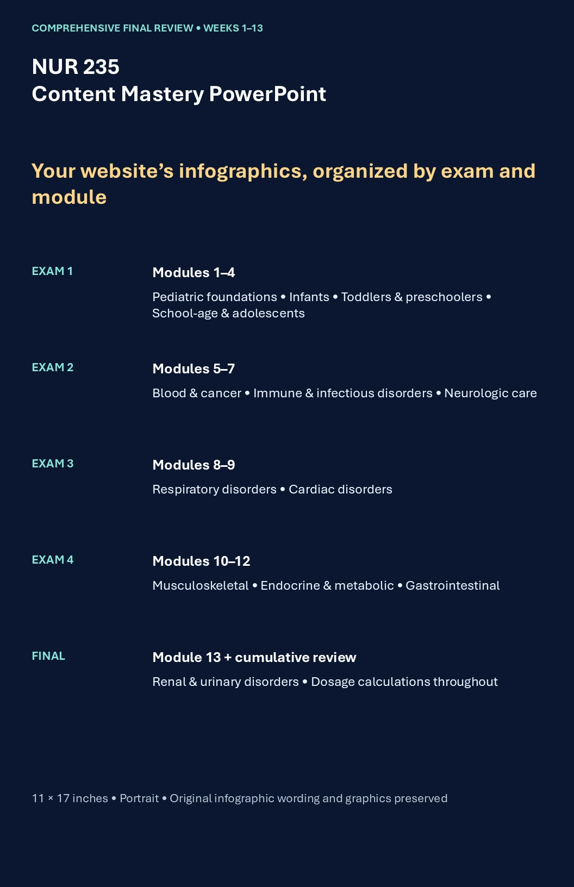
Read slide text and study notes
COMPREHENSIVE FINAL REVIEW • WEEKS 1–13
NUR 235
Content Mastery PowerPoint
Your website’s infographics, organized by exam and module
EXAM 1
Modules 1–4
Pediatric foundations • Infants • Toddlers & preschoolers • School-age & adolescents
EXAM 2
Modules 5–7
Blood & cancer • Immune & infectious disorders • Neurologic care
EXAM 3
Modules 8–9
Respiratory disorders • Cardiac disorders
EXAM 4
Modules 10–12
Musculoskeletal • Endocrine & metabolic • Gastrointestinal
FINAL
Module 13 + cumulative review
Renal & urinary disorders • Dosage calculations throughout
11 × 17 inches • Portrait • Original infographic wording and graphics preserved
Original overview
2 / 254NUR235 at a glance
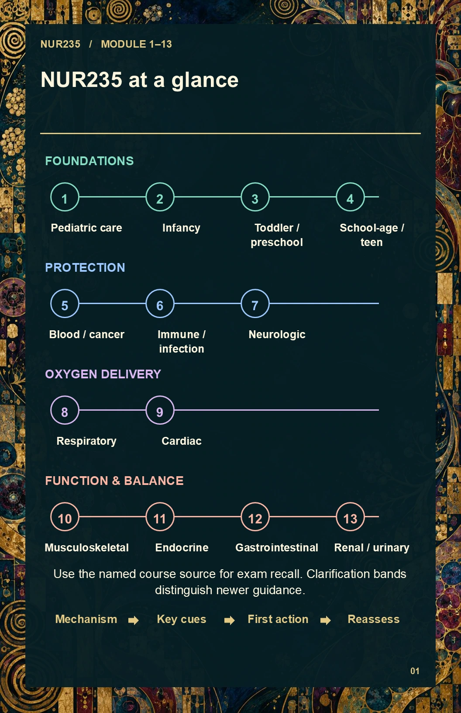
Read slide text and study notes
NUR235 / MODULE 1–13
NUR235 at a glance
01
FOUNDATIONS
1
Pediatric care
2
Infancy
3
Toddler / preschool
4
School-age / teen
PROTECTION
5
Blood / cancer
6
Immune / infection
7
Neurologic
OXYGEN DELIVERY
8
Respiratory
9
Cardiac
FUNCTION & BALANCE
10
Musculoskeletal
11
Endocrine
12
Gastrointestinal
13
Renal / urinary
Mechanism
Key cues
First action
Reassess
Use the named course source for exam recall. Clarification bands distinguish newer guidance.
Original study notes and source references
NUR235 content mastery infographic. Original native diagram by Codex. No Claude-created graphics.
High-level overview. The user-supplied module content reviews and textbook anchor the content. Book/course statements and current clarifications remain separate. Full prior wording is preserved below for study reference.
Some neurologic and musculoskeletal chapters are missing from the provided book extract. Available course sources and identified primary references supplement these gaps.
A week of focused review
One pass through all 13 modules
For each condition, explain the mechanism, recognize the key cues and name the first nursing action. Then review treatment monitoring, nutrition and family teaching.
Practice clinical judgment
Work through cue recognition, cue analysis, priority problems, possible actions, the chosen action and evaluation. A change from the child’s baseline often matters more than an isolated finding.
Book wording and current guidance
The course book remains part of this review. Labeled comparison pages preserve important book or course statements beside a correction or current recommendation. Source-specific exam recall and clinical application may use different wording.
Source notes
Slide notes identify textbook chapters, module reviews and current primary sources. The supplied book extract omits some later neurologic and musculoskeletal material, so those topics use the available chapters and identified supplemental sources.
Seven-day review plan
Days 1 and 2
Review Modules 1–4. Practice development, age-appropriate communication, medication calculations, nutrition and injury prevention. Answer mixed questions and explain why each wrong option is wrong.
Days 3 and 4
Review Modules 5–9. Focus on bleeding, infection, burns, neurologic deterioration, respiratory distress and cardiac circulation. Use the Exam 3 visual deck for anatomy and recognition.
Days 5 and 6
Review Modules 10–13. Compare limb emergencies, endocrine crises, GI obstruction and renal patterns. Rework missed questions and explain the first action aloud.
Day 7
Complete a mixed timed set. Review only the gaps it exposes, especially dosage units and emergency priorities. Keep the final review light enough to protect sleep.
Review checklist
3 / 254EXAM 1 topic checklist
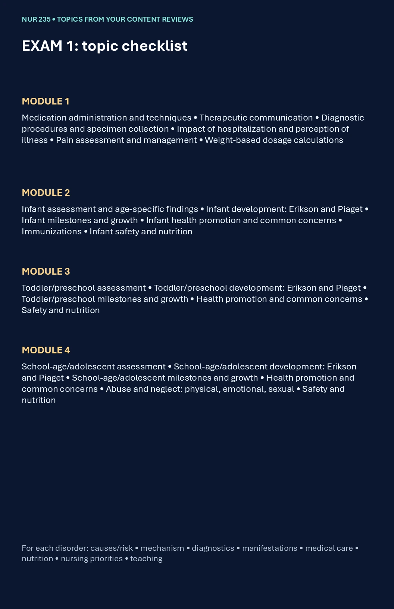
Read slide text and study notes
NUR 235 • TOPICS FROM YOUR CONTENT REVIEWS
EXAM 1: topic checklist
MODULE 1
Medication administration and techniques • Therapeutic communication • Diagnostic procedures and specimen collection • Impact of hospitalization and perception of illness • Pain assessment and management • Weight-based dosage calculations
MODULE 2
Infant assessment and age-specific findings • Infant development: Erikson and Piaget • Infant milestones and growth • Infant health promotion and common concerns • Immunizations • Infant safety and nutrition
MODULE 3
Toddler/preschool assessment • Toddler/preschool development: Erikson and Piaget • Toddler/preschool milestones and growth • Health promotion and common concerns • Safety and nutrition
MODULE 4
School-age/adolescent assessment • School-age/adolescent development: Erikson and Piaget • School-age/adolescent milestones and growth • Health promotion and common concerns • Abuse and neglect: physical, emotional, sexual • Safety and nutrition
For each disorder: causes/risk • mechanism • diagnostics • manifestations • medical care • nutrition • nursing priorities • teaching
Original overview
4 / 254Pediatric care starts with the child
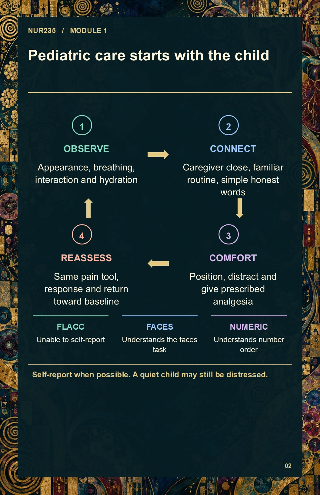
Read slide text and study notes
NUR235 / MODULE 1
Pediatric care starts with the child
02
1
OBSERVE
Appearance, breathing, interaction and hydration
2
CONNECT
Caregiver close, familiar routine, simple honest words
3
COMFORT
Position, distract and give prescribed analgesia
4
REASSESS
Same pain tool, response and return toward baseline
FLACC
Unable to self-report
FACES
Understands the faces task
NUMERIC
Understands number order
Self-report when possible. A quiet child may still be distressed.
Original study notes and source references
NUR235 content mastery infographic. Original native diagram by Codex. No Claude-created graphics.
High-level overview. The user-supplied module content reviews and textbook anchor the content. Book/course statements and current clarifications remain separate. Full prior wording is preserved below for study reference.
Some neurologic and musculoskeletal chapters are missing from the provided book extract. Available course sources and identified primary references supplement these gaps.
Pediatric assessment, comfort and pain
User module content reviews, NUR235
{"theories": {"book_chapter": 28, "text_lines": [38660, 38956], "supports": "Erikson stages and Piaget age/stage terminology; implications for teaching/play.", "opening_excerpt": "Provide oral stimulation by giving pacifiers; do not discourage thumb sucking."}, "infant-growth": {"book_chapter": 29, "text_lines": [39631, 39981], "supports": "Weight doubles at 4–6 months/triples at 1 year; textbook month-by-month motor/language anchors.", "opening_excerpt": "The physiologic changes that occur in the infant year reflect both the increasing maturity and growth of body organs."}, "infant-trust": {"book_chapter": 29, "text_lines": [40105, 40175], "supports": "Emotional/cognitive development, object permanence, trust.", "opening_excerpt": "Socialization, or learning how to interact with others, is an extensive phenomenon. One-month-old infants show they can differentiate between faces and other objects by studying a face or the picture of a face longer than other objects. They are calm and feed "}, "infant-safety": {"book_chapter": 29, "text_lines": [40271, 40379], "supports": "Falls, choking, burns, automobile and water safety; rear-facing age wording is outdated.", "opening_excerpt": "Q. A parent is worried about keeping their 2-month-old safe. “How can I prevent accidents at this age?” the parent asks."}, "infant-feed": {"book_chapter": 29, "text_lines": [40463, 40625], "supports": "Human milk/iron-fortified formula, complementary foods near 6 months, iron foods, no honey or cow milk as main drink before 12 months.", "opening_excerpt": "Feeding recommendations for infants from birth through 6 months are to provide human milk exclusively via breastfeeding or expression and stored in a bottle. Human milk is the ideal form of nutrition for infants. It provides all the necessary nutrients, protec"}, "infant-vaccine": {"book_chapter": 29, "text_lines": [39431, 39593], "supports": "Well-child assessment and the textbook vaccine table.", "opening_excerpt": "Height, weight, head circumference plotted on standard growth chart; physical examination"}, "toddler": {"book_chapter": 30, "text_lines": [41172, 41294], "supports": "Autonomy, parent observation, language concern at 2 years, slowed growth and appetite.", "opening_excerpt": "During the toddler period, the age span from 1 to 3 years, enormous changes take place in a child and, consequently, in a family. During this period, children accomplish a wide array of developmental tasks and change from largely immobile and preverbal infants"}, "preschool": {"book_chapter": 31, "text_lines": [41357, 41447], "supports": "Age3–5, participation through modeling/play, physical and developmental assessment; remainder unavailable in extraction.", "opening_excerpt": "The preschool period traditionally includes the years 3, 4, and 5. Although physical growth slows considerably during this period, personality and cognitive growth continue at a rapid rate. Caregivers may be unsure how much independence and responsibility for "}, "school-growth": {"book_chapter": 32, "text_lines": [41590, 41658], "supports": "School-age growth and onset/order of puberty.", "opening_excerpt": "The average annual weight gain for a school-aged child is approximately 3 to 5 lb (1.3 to 2.2 kg); the increase in height is 1 to 2 in. (2.5 to 5 cm). Children who did not lose a lordosis and knock-kneed appearance during the preschool period typically lose th"}, "school-thinking": {"book_chapter": 32, "text_lines": [41850, 41982], "supports": "Industry, concrete operations, conservation/classification and skill mastery.", "opening_excerpt": "Ideally, children enter the school-aged period with the ability to trust others and with a sense of self-respect. They can accomplish small tasks independently because they have gained a sense of autonomy. They should have practiced adult roles, learned to sha"}, "school-safety": {"book_chapter": 32, "text_lines": [42014, 42096], "supports": "Injury prevention and body safety teaching.", "opening_excerpt": "Teach children to avoid unsafe areas, such as train yards, grain silos, and back alleys."}, "school-health": {"book_chapter": 32, "text_lines": [42390, 42530], "supports": "Immunizations, dental care and health assessment; schedule contains outdated product/dose wording.", "opening_excerpt": "Check history and past records, inform caregiver about any risks and side effects, and administer immunization in accordance with healthcare agency policies."}, "school-stress": {"book_chapter": 32, "text_lines": [42790, 42865], "supports": "Stress, school difficulties and substance-use concerns.", "opening_excerpt": "Reproductive life planning measures and the principles of safer sex if appropriate to the cultural setting (see Chapters 5 and 6). Sexual orientation questions and concerns may arise at this time, and questions should be addressed honestly and openly."}, "adolescent-limit": {"book_chapter": 33, "text_lines": [43127, 43183], "supports": "Only opening case, objectives and preventive privacy goal are present; full chapter not available.", "opening_excerpt": "For additional ancillary materials related to this chapter, please visit the point."}, "assessment": {"book_chapter": 34, "text_lines": [43374, 43408], "supports": "Adolescent private interview; confidentiality must be qualified by safety/legal exceptions.", "opening_excerpt": "A second reason K.W.’s parent has brought the child to your ambulatory clinic is because of increased frequency and burning on urination."}, "exam-order": {"book_chapter": 34, "text_lines": [44020, 44046], "supports": "Assessment is adapted to age; least intrusive observations first, uncomfortable portions later.", "opening_excerpt": "Presented here are the components of a routine or general physical assessment. It is important to recognize what a “general” physical examination entails so you can interpret the extent of the assessment a child has received when the caregiver states, “My chil"}, "teaching": {"book_chapter": 35, "text_lines": [46729, 46945], "supports": "Teach-back, demonstration/return demonstration and development-specific communication.", "opening_excerpt": "Children have variable attention spans. Assess the learner and provide lessons in segments of 5–20 minutes. Ideally, the child should be well rested and well-nourished prior to the teaching."}, "hospital": {"book_chapter": 36, "text_lines": [48070, 48134], "supports": "Family presence, routines and protest/despair/detachment after separation.", "opening_excerpt": "Obtain any special information about the child that the parents think would make them more comfortable in the hospital."}, "procedures": {"book_chapter": 37, "text_lines": [49105, 49293], "supports": "Diagnostic/therapeutic modalities, consent and developmental planning; extracted chapter is incomplete.", "opening_excerpt": "Nursing Care of a Family When a Child Needs Diagnostic or Therapeutic Modalities"}, "med-dose": {"book_chapter": 38, "text_lines": [49350, 49578], "supports": "Measured kg weight, individual dose safety, assessment and fractional-dose example; reversed conversion typo at49352.", "opening_excerpt": "Most adults immediately grasp that taking a medicine you offer them will be important to relieve whatever symptoms they are experiencing from an illness. Because children do not necessarily have this same level of understanding, they may resist taking medicine"}, "med-route": {"book_chapter": 38, "text_lines": [49616, 49674], "supports": "Oral medication positioning, oral syringe and age-appropriate technique.", "opening_excerpt": "Children younger than 3 years are unable to swallow pills. After that age, the ability of children to swallow pills varies from one child to the next and is not age dependent. Typically, children older than 9 years can be offered tablets; however, some adolesc"}, "pain": {"book_chapter": 39, "text_lines": [50756, 50862], "supports": "Behavioral tools, FLACC, child self-report FACES/numeric and combined comfort/analgesia.", "opening_excerpt": "Each area of concern is scored from 0 to 2. Infants with a total score of 4 or more are most likely to be in pain and need interventions to reduce discomfort. The scale cannot be used with infants who are intubated or paralyzed for ventilator assistance becaus"}, "nosebleed": {"book_chapter": 40, "text_lines": [52143, 52155], "supports": "Sit upright/forward; continuous pressure over soft nose for about10min; evaluate persistent/recurrent bleeding.", "opening_excerpt": "Epistaxis (nosebleed) is extremely common in children and usually occurs from trauma or irritation such as picking at the nasal mucosa. Dry air can cause mucous membranes to become dry and susceptible to cracking and bleeding. Epistaxis may also occur after st"}, "hiv": {"book_chapter": 42, "text_lines": [55531, 55664], "supports": "HIV CD4 mechanism, infection risks, family coping; treatment specifics need current NIH guidance.", "opening_excerpt": "HIV is a slowly replicating retrovirus and has at least two main divisions, HIV-1 and HIV-2, followed by a variety of further subtypes. The virus acts by attacking the lymphoreticular system, in particular CD4-bearing helper T lymphocytes. The virus enters the"}, "allergy": {"book_chapter": 42, "text_lines": [56017, 56109], "supports": "Anaphylaxis manifestations, immediate IM epinephrine, emergency help and recurrent reaction risk.", "opening_excerpt": "Anaphylactic shock (anaphylaxis) is an immediate, life-threatening, type I hypersensitivity reaction that occurs after exposure to an allergen in a previously sensitized child. Anaphylaxis can be caused by exposure to foods such as milk, egg, peanut, and tree "}, "eczema": {"book_chapter": 42, "text_lines": [56307, 56475], "supports": "Atopic dermatitis itch–scratch cycle, distribution and skin care.", "opening_excerpt": "Atopic dermatitis is a highly pruritic, chronic inflammatory skin disease that is often the first manifestation of allergic disease. It is a common disorder that affects 15% to 20% of children (Chopra et al., 2017)."}, "contact": {"book_chapter": 42, "text_lines": [56561, 56585], "supports": "Allergic contact dermatitis/typeIV, exposure pattern and removal of allergen.", "opening_excerpt": "Contact dermatitis is an example of a delayed or type IV hypersensitivity response; it is a reaction to skin contact with an allergen (a substance irritating to the child only with prior sensitization). The first reaction is generally erythema, followed by the"}, "rubella": {"book_chapter": 43, "text_lines": [57521, 57549], "supports": "Rubella syndrome; printed incubation/communicability statements are unreliable.", "opening_excerpt": "Incubation period: Generally, 14 days within a range of 16 to 183 days (AAP, 2018)"}, "measles": {"book_chapter": 43, "text_lines": [57551, 57593], "supports": "Cough/coryza/conjunctivitis, Koplik spots and descending rash.", "opening_excerpt": "Incubation period: 8 to 12 days from time of exposure to onset of any symptoms (AAP, 2018), with a range from 7 to 21 days (Drutz, 2016)"}, "varicella": {"book_chapter": 43, "text_lines": [57595, 57643], "supports": "Vesicles in crops, infection/complication risks; immune-globulin timing differs from current guidance.", "opening_excerpt": "Incubation period: 10 to 21 days, with the most common incidence at 14 to 16 days following exposure (Kennedy & Gershon, 2018)"}, "fifth": {"book_chapter": 43, "text_lines": [57677, 57704], "supports": "Parvovirus B19, slapped-cheek/lacy eruption and host-specific risk.", "opening_excerpt": "Incubation period: Most commonly between 4 and 14 days and can be as long as 21 days (AAP, 2018)"}, "mono": {"book_chapter": 43, "text_lines": [58009, 58048], "supports": "EBV saliva transmission, pharyngitis/adenopathy/fatigue and splenic risk.", "opening_excerpt": "Incubation period: Incubation period in adults and adolescents is 4 to 7 weeks, with a shorter incubation period in children (Fugl & Andersen, 2019)."}, "scarlet": {"book_chapter": 43, "text_lines": [58221, 58249], "supports": "GAS toxin-associated pharyngitis, sandpaper rash and antimicrobial treatment.", "opening_excerpt": "Incubation period: 2 to 5 days for streptococcal pharyngitis (AAP, 2018)"}, "impetigo": {"book_chapter": 43, "text_lines": [58251, 58280], "supports": "Staphylococcal/streptococcal superficial infection with honey crusts.", "opening_excerpt": "Causative agent: Beta-hemolytic streptococcus, group A or Staphylococcus aureus including methicillin-resistant Staphylococcus aureus (MRSA) (to be discussed in the subsequent section)"}, "pertussis": {"book_chapter": 43, "text_lines": [58365, 58417], "supports": "Paroxysmal cough, infant risk and treatment; immunity and isolation wording need updating.", "opening_excerpt": "Mode of transmission: Highly contagious by direct or indirect contact"}, "lice": {"book_chapter": 43, "text_lines": [58587, 58647], "supports": "Pediculosis and family teaching; avoid stigma about hygiene.", "opening_excerpt": "Small, white flecks on hair shaft (nits or eggs of lice); extreme pruritus"}, "pinworm": {"book_chapter": 43, "text_lines": [58649, 58655], "supports": "Nocturnal perianal itching, tape test and household hygiene; text omits repeat dose.", "opening_excerpt": "Pinworms are small, white, threadlike worms that live in the cecum. After ingestion of the egg, the mature worms develop over a period of 2 months in the cecum. The mature female pinworm then migrates out of the anus to deposit eggs on the skin in the anal and"}, "tinea": {"book_chapter": 43, "text_lines": [58675, 58705], "supports": "Tinea skin/scalp distinctions and antifungal treatment.", "opening_excerpt": "Fungi are larger than bacteria; some are unicellular (yeasts), but, generally, they are multicellular (molds). Deep mycoses invade internal organs. Respiratory transmission is by the inhalation of spores. Subcutaneous mycoses invade the skin, subcutaneous tiss"}, "transfusion": {"book_chapter": 44, "text_lines": [59254, 59340], "supports": "Transfusion setup, monitoring, reaction symptoms/stop action; printed AHTR label is inaccurate.", "opening_excerpt": "Transfusions of blood or its products are commonly used in the treatment of blood disorders and may include whole blood, packed RBCs, washed RBCs (as much “foreign” matter is removed as possible to reduce the possibility of an antagonistic reaction), plasma, p"}, "iron": {"book_chapter": 44, "text_lines": [59580, 59678], "supports": "Iron deficiency risks, low hemoglobin indices, diet and iron teaching.", "opening_excerpt": "Although the incidence of iron-deficiency anemia is decreasing in the United States due to improved infant nutrition, it is still the most common anemia of infancy and childhood, occurring whenever the intake of dietary iron is inadequate. Without adequate iro"}, "sickle": {"book_chapter": 44, "text_lines": [59738, 59974], "supports": "HbS vaso-occlusion/hemolysis, pain, sequestration/aplastic crises, hydration and analgesia.", "opening_excerpt": "Sickle cell anemia is an autosomal recessive inherited disorder carried on the beta chain of hemoglobin; the amino acid valine takes the place of the normally appearing glutamic acid. With this, the erythrocytes become characteristically elongated and crescent"}, "hemophilia": {"book_chapter": 44, "text_lines": [60258, 60318], "supports": "FactorVIII versusIX, X-linked inheritance and hemarthrosis.", "opening_excerpt": "Hemophilias are inherited disorders of blood coagulation. There are numerous types, each involving a deficiency of a different blood coagulation factor."}, "conjunctivitis": {"book_chapter": 50, "text_lines": [67992, 68042], "supports": "Conjunctivitis differential; the same content is duplicated earlier at66629–66679.", "opening_excerpt": "Inflammation of the conjunctiva; causes are numerous, including ophthalmia neonatorum (exposure to gonococcus bacillus; see Chapter 26) and bacterial, viral, and fungal organisms"}, "burns": {"book_chapter": 52, "text_lines": [70007, 70241], "supports": "Burn depth/area, ABCs, temperature/fluid/pain/infection and nutrition.", "opening_excerpt": "Burns are injuries to body tissue caused by excessive heat (greater than 104°F [40°C]). Burns are the second most common unintentional injury seen in children 1 to 4 years of age and the third most common cause of injury in children 5 to 14 years of age. Every"}, "oncology-care": {"book_chapter": 53, "text_lines": [71294, 71440], "supports": "Mucositis, infection, treatment-related toxicity and family care.", "opening_excerpt": "Children receiving long-term corticosteroid (e.g., dexamethasone or prednisone) therapy develop a typical “moon face,” red cheeks, and a stocky build. Like the loss of hair, a cushingoid appearance can be devastating to children or parents, the final insult in"}, "leukemia": {"book_chapter": 53, "text_lines": [71472, 71610], "supports": "Marrow blast proliferation causes anemia, infection risk and low platelets; diagnostic/treatment priorities.", "opening_excerpt": "Leukemia is the distorted and uncontrolled proliferation of WBCs (leukocytes) and is the most frequently occurring type of cancer in children."}, "brain": {"book_chapter": 53, "text_lines": [71716, 71906], "supports": "Brain tumor location, ICP/neurologic changes and surgery-specific postoperative care.", "opening_excerpt": "Brain tumors are the second most common form of cancer and the most common solid tumor in children. Tumors tend to occur between 1 and 10 years of age, with 5 years being the peak age of incidence. In children, brain tumors tend to occur at the midline in the "}, "wilms": {"book_chapter": 53, "text_lines": [72098, 72118], "supports": "Renal mass, hematuria/hypertension, imaging and nephrectomy-based treatment.", "opening_excerpt": "Nephroblastoma (Wilms tumor) is a malignant tumor that rises from the metanephric mesoderm cells of the upper pole of the kidney (Malkan et al., 2015). It accounts for 20% of solid tumors in childhood, and overall survival rates are greater than 90%. It may oc"}, "abuse": {"book_chapter": 55, "text_lines": [72856, 72958], "supports": "Maltreatment assessment, child protection, objective documentation and family concerns.", "opening_excerpt": "When obtaining a history, ask caregivers to account for any injury to a child’s body. Remember, however, that most childhood injuries are the result of unintentional injuries caused by the child’s inability to distinguish safe situations from dangerous ones or"}}
{"sleep": {"url": "https://www.aap.org/en/patient-care/safe-sleep/", "title": "AAP safe sleep"}, "carseat": {"url": "https://www.nhtsa.gov/vehicle-safety/car-seats-and-booster-seats", "title": "NHTSA child restraint recommendations"}, "milestones2": {"url": "https://www.cdc.gov/act-early/milestones/2-years.html", "title": "CDC milestones by2years"}, "milestones3": {"url": "https://www.cdc.gov/act-early/milestones/3-years.html", "title": "CDC milestones by3years"}, "milestones4": {"url": "https://www.cdc.gov/act-early/milestones/4-years.html", "title": "CDC milestones by4years"}, "milestones5": {"url": "https://www.cdc.gov/act-early/milestones/5-years.html", "title": "CDC milestones by5years"}, "vaccine": {"url": "https://www.cdc.gov/vaccines/hcp/imz-schedules/child-adolescent-age.html", "title": "CDC age schedule, page labels its addendum July2,2025"}, "aap2026": {"url": "https://publications.aap.org/pediatrics/article/157/3/e2025075754/206175/Recommended-Childhood-andAdolescent-Immunization", "title": "AAP2026 childhood/adolescent immunization policy"}, "meds": {"url": "https://www.healthychildren.org/English/safety-prevention/at-home/medication-safety/Pages/Using-Liquid-Medicines.aspx", "title": "AAP liquid medication measurement"}, "sickle-current": {"url": "https://www.nhlbi.nih.gov/sites/default/files/publications/56-364NFULL.pdf", "title": "NHLBI sickle-cell expert report: oxygen/fluids/transfusion in VOC"}, "sickle-ash": {"url": "https://doi.org/10.1182/bloodadvances.2020001851", "title": "ASH2020 sickle-cell pain guideline"}, "isolation": {"url": "https://www.cdc.gov/infection-control/hcp/isolation-precautions/appendix-a-type-duration.html", "title": "CDC isolation appendix, updated September11,2026"}, "pinworm-current": {"url": "https://www.cdc.gov/pinworm/hcp/clinical-overview/index.html", "title": "CDC pinworm treatment"}, "lice-current": {"url": "https://www.cdc.gov/lice/caring-head/", "title": "CDC head lice and school attendance"}, "pinkeye": {"url": "https://www.cdc.gov/conjunctivitis/treatment/", "title": "CDC conjunctivitis treatment"}, "acne": {"url": "https://www.aad.org/member/clinical-quality/guidelines/acne", "title": "AAD acne guideline"}, "hiv-current": {"url": "https://clinicalinfo.hiv.gov/en/guidelines/pediatric-arv/regimens-recommended-initial-therapy-antiretroviral-naive-children", "title": "NIH pediatric antiretroviral therapy"}, "blood": {"url": "https://www.isbtweb.org/resources/educational-modules-on-clinical-use-of-blood/adverse-effects-of-transfusion.html", "title": "ISBT adverse transfusion effects"}, "wilms-current": {"url": "https://medlineplus.gov/ency/article/001575.htm", "title": "MedlinePlus Wilms tumor and careful handling"}}
Assess before you approach
Observe appearance, breathing, interaction and hydration first. Compare with the child’s usual behavior and age-appropriate vital signs.
Use the caregiver’s lap, least intrusive steps first and simple explanations. Keep painful/invasive steps for later when clinically safe.
Infant: comfort and consistency. Toddler: brief words and two acceptable choices. Preschooler: play and literal explanations. School-age: show how it works. Adolescent: privacy and participation.
Hospitalization and procedures
Separation may progress through protest → despair → detachment. A quiet child has not necessarily adjusted.
Keep family presence, familiar routines and a comfort item. Explain what the child will feel. Never promise that a painful procedure will not hurt.
Verify consent/assent, specimen/site and collection instructions. Use comfort positioning, distraction and prescribed topical/local analgesia, then label specimens correctly.
Pain: match the tool to ability
Behavioral assessment for a child unable to self-report: FLACC = Face, Legs, Activity, Cry, Consolability.
Use FACES when the child understands the task. Use numeric rating when number/order concepts are understood. The child’s self-report is preferred when possible.
Combine analgesia with comfort, caregiver support and distraction. Reassess with the same tool after treatment.
Do not equate chronologic age alone with communication or pain-scale ability. For an unstable child, immediate physiologic priorities override the usual least-intrusive examination sequence.
Recall: A toddler stops crying after prolonged separation. Has the child necessarily accepted it?
Answer: No. Despair or detachment may look quiet; assess behavior and restore supportive contact.
Original overview
5 / 254From body weight to a safe dose
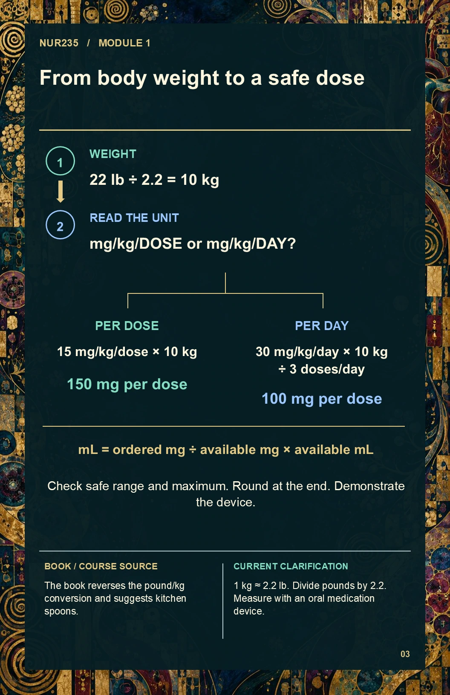
Read slide text and study notes
NUR235 / MODULE 1
From body weight to a safe dose
03
1
WEIGHT
22 lb ÷ 2.2 = 10 kg
2
READ THE UNIT
mg/kg/DOSE or mg/kg/DAY?
PER DOSE
15 mg/kg/dose × 10 kg
150 mg per dose
PER DAY
30 mg/kg/day × 10 kg
÷ 3 doses/day
100 mg per dose
mL = ordered mg ÷ available mg × available mL
Check safe range and maximum. Round at the end. Demonstrate the device.
BOOK / COURSE SOURCE
CURRENT CLARIFICATION
The book reverses the pound/kg conversion and suggests kitchen spoons.
1 kg ≈ 2.2 lb. Divide pounds by 2.2. Measure with an oral medication device.
Original study notes and source references
NUR235 content mastery infographic. Original native diagram by Codex. No Claude-created graphics.
High-level overview. The user-supplied module content reviews and textbook anchor the content. Book/course statements and current clarifications remain separate. Full prior wording is preserved below for study reference.
Some neurologic and musculoskeletal chapters are missing from the provided book extract. Available course sources and identified primary references supplement these gaps.
Pediatric medication safety
User module content reviews, NUR235
{"theories": {"book_chapter": 28, "text_lines": [38660, 38956], "supports": "Erikson stages and Piaget age/stage terminology; implications for teaching/play.", "opening_excerpt": "Provide oral stimulation by giving pacifiers; do not discourage thumb sucking."}, "infant-growth": {"book_chapter": 29, "text_lines": [39631, 39981], "supports": "Weight doubles at 4–6 months/triples at 1 year; textbook month-by-month motor/language anchors.", "opening_excerpt": "The physiologic changes that occur in the infant year reflect both the increasing maturity and growth of body organs."}, "infant-trust": {"book_chapter": 29, "text_lines": [40105, 40175], "supports": "Emotional/cognitive development, object permanence, trust.", "opening_excerpt": "Socialization, or learning how to interact with others, is an extensive phenomenon. One-month-old infants show they can differentiate between faces and other objects by studying a face or the picture of a face longer than other objects. They are calm and feed "}, "infant-safety": {"book_chapter": 29, "text_lines": [40271, 40379], "supports": "Falls, choking, burns, automobile and water safety; rear-facing age wording is outdated.", "opening_excerpt": "Q. A parent is worried about keeping their 2-month-old safe. “How can I prevent accidents at this age?” the parent asks."}, "infant-feed": {"book_chapter": 29, "text_lines": [40463, 40625], "supports": "Human milk/iron-fortified formula, complementary foods near 6 months, iron foods, no honey or cow milk as main drink before 12 months.", "opening_excerpt": "Feeding recommendations for infants from birth through 6 months are to provide human milk exclusively via breastfeeding or expression and stored in a bottle. Human milk is the ideal form of nutrition for infants. It provides all the necessary nutrients, protec"}, "infant-vaccine": {"book_chapter": 29, "text_lines": [39431, 39593], "supports": "Well-child assessment and the textbook vaccine table.", "opening_excerpt": "Height, weight, head circumference plotted on standard growth chart; physical examination"}, "toddler": {"book_chapter": 30, "text_lines": [41172, 41294], "supports": "Autonomy, parent observation, language concern at 2 years, slowed growth and appetite.", "opening_excerpt": "During the toddler period, the age span from 1 to 3 years, enormous changes take place in a child and, consequently, in a family. During this period, children accomplish a wide array of developmental tasks and change from largely immobile and preverbal infants"}, "preschool": {"book_chapter": 31, "text_lines": [41357, 41447], "supports": "Age3–5, participation through modeling/play, physical and developmental assessment; remainder unavailable in extraction.", "opening_excerpt": "The preschool period traditionally includes the years 3, 4, and 5. Although physical growth slows considerably during this period, personality and cognitive growth continue at a rapid rate. Caregivers may be unsure how much independence and responsibility for "}, "school-growth": {"book_chapter": 32, "text_lines": [41590, 41658], "supports": "School-age growth and onset/order of puberty.", "opening_excerpt": "The average annual weight gain for a school-aged child is approximately 3 to 5 lb (1.3 to 2.2 kg); the increase in height is 1 to 2 in. (2.5 to 5 cm). Children who did not lose a lordosis and knock-kneed appearance during the preschool period typically lose th"}, "school-thinking": {"book_chapter": 32, "text_lines": [41850, 41982], "supports": "Industry, concrete operations, conservation/classification and skill mastery.", "opening_excerpt": "Ideally, children enter the school-aged period with the ability to trust others and with a sense of self-respect. They can accomplish small tasks independently because they have gained a sense of autonomy. They should have practiced adult roles, learned to sha"}, "school-safety": {"book_chapter": 32, "text_lines": [42014, 42096], "supports": "Injury prevention and body safety teaching.", "opening_excerpt": "Teach children to avoid unsafe areas, such as train yards, grain silos, and back alleys."}, "school-health": {"book_chapter": 32, "text_lines": [42390, 42530], "supports": "Immunizations, dental care and health assessment; schedule contains outdated product/dose wording.", "opening_excerpt": "Check history and past records, inform caregiver about any risks and side effects, and administer immunization in accordance with healthcare agency policies."}, "school-stress": {"book_chapter": 32, "text_lines": [42790, 42865], "supports": "Stress, school difficulties and substance-use concerns.", "opening_excerpt": "Reproductive life planning measures and the principles of safer sex if appropriate to the cultural setting (see Chapters 5 and 6). Sexual orientation questions and concerns may arise at this time, and questions should be addressed honestly and openly."}, "adolescent-limit": {"book_chapter": 33, "text_lines": [43127, 43183], "supports": "Only opening case, objectives and preventive privacy goal are present; full chapter not available.", "opening_excerpt": "For additional ancillary materials related to this chapter, please visit the point."}, "assessment": {"book_chapter": 34, "text_lines": [43374, 43408], "supports": "Adolescent private interview; confidentiality must be qualified by safety/legal exceptions.", "opening_excerpt": "A second reason K.W.’s parent has brought the child to your ambulatory clinic is because of increased frequency and burning on urination."}, "exam-order": {"book_chapter": 34, "text_lines": [44020, 44046], "supports": "Assessment is adapted to age; least intrusive observations first, uncomfortable portions later.", "opening_excerpt": "Presented here are the components of a routine or general physical assessment. It is important to recognize what a “general” physical examination entails so you can interpret the extent of the assessment a child has received when the caregiver states, “My chil"}, "teaching": {"book_chapter": 35, "text_lines": [46729, 46945], "supports": "Teach-back, demonstration/return demonstration and development-specific communication.", "opening_excerpt": "Children have variable attention spans. Assess the learner and provide lessons in segments of 5–20 minutes. Ideally, the child should be well rested and well-nourished prior to the teaching."}, "hospital": {"book_chapter": 36, "text_lines": [48070, 48134], "supports": "Family presence, routines and protest/despair/detachment after separation.", "opening_excerpt": "Obtain any special information about the child that the parents think would make them more comfortable in the hospital."}, "procedures": {"book_chapter": 37, "text_lines": [49105, 49293], "supports": "Diagnostic/therapeutic modalities, consent and developmental planning; extracted chapter is incomplete.", "opening_excerpt": "Nursing Care of a Family When a Child Needs Diagnostic or Therapeutic Modalities"}, "med-dose": {"book_chapter": 38, "text_lines": [49350, 49578], "supports": "Measured kg weight, individual dose safety, assessment and fractional-dose example; reversed conversion typo at49352.", "opening_excerpt": "Most adults immediately grasp that taking a medicine you offer them will be important to relieve whatever symptoms they are experiencing from an illness. Because children do not necessarily have this same level of understanding, they may resist taking medicine"}, "med-route": {"book_chapter": 38, "text_lines": [49616, 49674], "supports": "Oral medication positioning, oral syringe and age-appropriate technique.", "opening_excerpt": "Children younger than 3 years are unable to swallow pills. After that age, the ability of children to swallow pills varies from one child to the next and is not age dependent. Typically, children older than 9 years can be offered tablets; however, some adolesc"}, "pain": {"book_chapter": 39, "text_lines": [50756, 50862], "supports": "Behavioral tools, FLACC, child self-report FACES/numeric and combined comfort/analgesia.", "opening_excerpt": "Each area of concern is scored from 0 to 2. Infants with a total score of 4 or more are most likely to be in pain and need interventions to reduce discomfort. The scale cannot be used with infants who are intubated or paralyzed for ventilator assistance becaus"}, "nosebleed": {"book_chapter": 40, "text_lines": [52143, 52155], "supports": "Sit upright/forward; continuous pressure over soft nose for about10min; evaluate persistent/recurrent bleeding.", "opening_excerpt": "Epistaxis (nosebleed) is extremely common in children and usually occurs from trauma or irritation such as picking at the nasal mucosa. Dry air can cause mucous membranes to become dry and susceptible to cracking and bleeding. Epistaxis may also occur after st"}, "hiv": {"book_chapter": 42, "text_lines": [55531, 55664], "supports": "HIV CD4 mechanism, infection risks, family coping; treatment specifics need current NIH guidance.", "opening_excerpt": "HIV is a slowly replicating retrovirus and has at least two main divisions, HIV-1 and HIV-2, followed by a variety of further subtypes. The virus acts by attacking the lymphoreticular system, in particular CD4-bearing helper T lymphocytes. The virus enters the"}, "allergy": {"book_chapter": 42, "text_lines": [56017, 56109], "supports": "Anaphylaxis manifestations, immediate IM epinephrine, emergency help and recurrent reaction risk.", "opening_excerpt": "Anaphylactic shock (anaphylaxis) is an immediate, life-threatening, type I hypersensitivity reaction that occurs after exposure to an allergen in a previously sensitized child. Anaphylaxis can be caused by exposure to foods such as milk, egg, peanut, and tree "}, "eczema": {"book_chapter": 42, "text_lines": [56307, 56475], "supports": "Atopic dermatitis itch–scratch cycle, distribution and skin care.", "opening_excerpt": "Atopic dermatitis is a highly pruritic, chronic inflammatory skin disease that is often the first manifestation of allergic disease. It is a common disorder that affects 15% to 20% of children (Chopra et al., 2017)."}, "contact": {"book_chapter": 42, "text_lines": [56561, 56585], "supports": "Allergic contact dermatitis/typeIV, exposure pattern and removal of allergen.", "opening_excerpt": "Contact dermatitis is an example of a delayed or type IV hypersensitivity response; it is a reaction to skin contact with an allergen (a substance irritating to the child only with prior sensitization). The first reaction is generally erythema, followed by the"}, "rubella": {"book_chapter": 43, "text_lines": [57521, 57549], "supports": "Rubella syndrome; printed incubation/communicability statements are unreliable.", "opening_excerpt": "Incubation period: Generally, 14 days within a range of 16 to 183 days (AAP, 2018)"}, "measles": {"book_chapter": 43, "text_lines": [57551, 57593], "supports": "Cough/coryza/conjunctivitis, Koplik spots and descending rash.", "opening_excerpt": "Incubation period: 8 to 12 days from time of exposure to onset of any symptoms (AAP, 2018), with a range from 7 to 21 days (Drutz, 2016)"}, "varicella": {"book_chapter": 43, "text_lines": [57595, 57643], "supports": "Vesicles in crops, infection/complication risks; immune-globulin timing differs from current guidance.", "opening_excerpt": "Incubation period: 10 to 21 days, with the most common incidence at 14 to 16 days following exposure (Kennedy & Gershon, 2018)"}, "fifth": {"book_chapter": 43, "text_lines": [57677, 57704], "supports": "Parvovirus B19, slapped-cheek/lacy eruption and host-specific risk.", "opening_excerpt": "Incubation period: Most commonly between 4 and 14 days and can be as long as 21 days (AAP, 2018)"}, "mono": {"book_chapter": 43, "text_lines": [58009, 58048], "supports": "EBV saliva transmission, pharyngitis/adenopathy/fatigue and splenic risk.", "opening_excerpt": "Incubation period: Incubation period in adults and adolescents is 4 to 7 weeks, with a shorter incubation period in children (Fugl & Andersen, 2019)."}, "scarlet": {"book_chapter": 43, "text_lines": [58221, 58249], "supports": "GAS toxin-associated pharyngitis, sandpaper rash and antimicrobial treatment.", "opening_excerpt": "Incubation period: 2 to 5 days for streptococcal pharyngitis (AAP, 2018)"}, "impetigo": {"book_chapter": 43, "text_lines": [58251, 58280], "supports": "Staphylococcal/streptococcal superficial infection with honey crusts.", "opening_excerpt": "Causative agent: Beta-hemolytic streptococcus, group A or Staphylococcus aureus including methicillin-resistant Staphylococcus aureus (MRSA) (to be discussed in the subsequent section)"}, "pertussis": {"book_chapter": 43, "text_lines": [58365, 58417], "supports": "Paroxysmal cough, infant risk and treatment; immunity and isolation wording need updating.", "opening_excerpt": "Mode of transmission: Highly contagious by direct or indirect contact"}, "lice": {"book_chapter": 43, "text_lines": [58587, 58647], "supports": "Pediculosis and family teaching; avoid stigma about hygiene.", "opening_excerpt": "Small, white flecks on hair shaft (nits or eggs of lice); extreme pruritus"}, "pinworm": {"book_chapter": 43, "text_lines": [58649, 58655], "supports": "Nocturnal perianal itching, tape test and household hygiene; text omits repeat dose.", "opening_excerpt": "Pinworms are small, white, threadlike worms that live in the cecum. After ingestion of the egg, the mature worms develop over a period of 2 months in the cecum. The mature female pinworm then migrates out of the anus to deposit eggs on the skin in the anal and"}, "tinea": {"book_chapter": 43, "text_lines": [58675, 58705], "supports": "Tinea skin/scalp distinctions and antifungal treatment.", "opening_excerpt": "Fungi are larger than bacteria; some are unicellular (yeasts), but, generally, they are multicellular (molds). Deep mycoses invade internal organs. Respiratory transmission is by the inhalation of spores. Subcutaneous mycoses invade the skin, subcutaneous tiss"}, "transfusion": {"book_chapter": 44, "text_lines": [59254, 59340], "supports": "Transfusion setup, monitoring, reaction symptoms/stop action; printed AHTR label is inaccurate.", "opening_excerpt": "Transfusions of blood or its products are commonly used in the treatment of blood disorders and may include whole blood, packed RBCs, washed RBCs (as much “foreign” matter is removed as possible to reduce the possibility of an antagonistic reaction), plasma, p"}, "iron": {"book_chapter": 44, "text_lines": [59580, 59678], "supports": "Iron deficiency risks, low hemoglobin indices, diet and iron teaching.", "opening_excerpt": "Although the incidence of iron-deficiency anemia is decreasing in the United States due to improved infant nutrition, it is still the most common anemia of infancy and childhood, occurring whenever the intake of dietary iron is inadequate. Without adequate iro"}, "sickle": {"book_chapter": 44, "text_lines": [59738, 59974], "supports": "HbS vaso-occlusion/hemolysis, pain, sequestration/aplastic crises, hydration and analgesia.", "opening_excerpt": "Sickle cell anemia is an autosomal recessive inherited disorder carried on the beta chain of hemoglobin; the amino acid valine takes the place of the normally appearing glutamic acid. With this, the erythrocytes become characteristically elongated and crescent"}, "hemophilia": {"book_chapter": 44, "text_lines": [60258, 60318], "supports": "FactorVIII versusIX, X-linked inheritance and hemarthrosis.", "opening_excerpt": "Hemophilias are inherited disorders of blood coagulation. There are numerous types, each involving a deficiency of a different blood coagulation factor."}, "conjunctivitis": {"book_chapter": 50, "text_lines": [67992, 68042], "supports": "Conjunctivitis differential; the same content is duplicated earlier at66629–66679.", "opening_excerpt": "Inflammation of the conjunctiva; causes are numerous, including ophthalmia neonatorum (exposure to gonococcus bacillus; see Chapter 26) and bacterial, viral, and fungal organisms"}, "burns": {"book_chapter": 52, "text_lines": [70007, 70241], "supports": "Burn depth/area, ABCs, temperature/fluid/pain/infection and nutrition.", "opening_excerpt": "Burns are injuries to body tissue caused by excessive heat (greater than 104°F [40°C]). Burns are the second most common unintentional injury seen in children 1 to 4 years of age and the third most common cause of injury in children 5 to 14 years of age. Every"}, "oncology-care": {"book_chapter": 53, "text_lines": [71294, 71440], "supports": "Mucositis, infection, treatment-related toxicity and family care.", "opening_excerpt": "Children receiving long-term corticosteroid (e.g., dexamethasone or prednisone) therapy develop a typical “moon face,” red cheeks, and a stocky build. Like the loss of hair, a cushingoid appearance can be devastating to children or parents, the final insult in"}, "leukemia": {"book_chapter": 53, "text_lines": [71472, 71610], "supports": "Marrow blast proliferation causes anemia, infection risk and low platelets; diagnostic/treatment priorities.", "opening_excerpt": "Leukemia is the distorted and uncontrolled proliferation of WBCs (leukocytes) and is the most frequently occurring type of cancer in children."}, "brain": {"book_chapter": 53, "text_lines": [71716, 71906], "supports": "Brain tumor location, ICP/neurologic changes and surgery-specific postoperative care.", "opening_excerpt": "Brain tumors are the second most common form of cancer and the most common solid tumor in children. Tumors tend to occur between 1 and 10 years of age, with 5 years being the peak age of incidence. In children, brain tumors tend to occur at the midline in the "}, "wilms": {"book_chapter": 53, "text_lines": [72098, 72118], "supports": "Renal mass, hematuria/hypertension, imaging and nephrectomy-based treatment.", "opening_excerpt": "Nephroblastoma (Wilms tumor) is a malignant tumor that rises from the metanephric mesoderm cells of the upper pole of the kidney (Malkan et al., 2015). It accounts for 20% of solid tumors in childhood, and overall survival rates are greater than 90%. It may oc"}, "abuse": {"book_chapter": 55, "text_lines": [72856, 72958], "supports": "Maltreatment assessment, child protection, objective documentation and family concerns.", "opening_excerpt": "When obtaining a history, ask caregivers to account for any injury to a child’s body. Remember, however, that most childhood injuries are the result of unintentional injuries caused by the child’s inability to distinguish safe situations from dangerous ones or"}}
{"sleep": {"url": "https://www.aap.org/en/patient-care/safe-sleep/", "title": "AAP safe sleep"}, "carseat": {"url": "https://www.nhtsa.gov/vehicle-safety/car-seats-and-booster-seats", "title": "NHTSA child restraint recommendations"}, "milestones2": {"url": "https://www.cdc.gov/act-early/milestones/2-years.html", "title": "CDC milestones by2years"}, "milestones3": {"url": "https://www.cdc.gov/act-early/milestones/3-years.html", "title": "CDC milestones by3years"}, "milestones4": {"url": "https://www.cdc.gov/act-early/milestones/4-years.html", "title": "CDC milestones by4years"}, "milestones5": {"url": "https://www.cdc.gov/act-early/milestones/5-years.html", "title": "CDC milestones by5years"}, "vaccine": {"url": "https://www.cdc.gov/vaccines/hcp/imz-schedules/child-adolescent-age.html", "title": "CDC age schedule, page labels its addendum July2,2025"}, "aap2026": {"url": "https://publications.aap.org/pediatrics/article/157/3/e2025075754/206175/Recommended-Childhood-andAdolescent-Immunization", "title": "AAP2026 childhood/adolescent immunization policy"}, "meds": {"url": "https://www.healthychildren.org/English/safety-prevention/at-home/medication-safety/Pages/Using-Liquid-Medicines.aspx", "title": "AAP liquid medication measurement"}, "sickle-current": {"url": "https://www.nhlbi.nih.gov/sites/default/files/publications/56-364NFULL.pdf", "title": "NHLBI sickle-cell expert report: oxygen/fluids/transfusion in VOC"}, "sickle-ash": {"url": "https://doi.org/10.1182/bloodadvances.2020001851", "title": "ASH2020 sickle-cell pain guideline"}, "isolation": {"url": "https://www.cdc.gov/infection-control/hcp/isolation-precautions/appendix-a-type-duration.html", "title": "CDC isolation appendix, updated September11,2026"}, "pinworm-current": {"url": "https://www.cdc.gov/pinworm/hcp/clinical-overview/index.html", "title": "CDC pinworm treatment"}, "lice-current": {"url": "https://www.cdc.gov/lice/caring-head/", "title": "CDC head lice and school attendance"}, "pinkeye": {"url": "https://www.cdc.gov/conjunctivitis/treatment/", "title": "CDC conjunctivitis treatment"}, "acne": {"url": "https://www.aad.org/member/clinical-quality/guidelines/acne", "title": "AAD acne guideline"}, "hiv-current": {"url": "https://clinicalinfo.hiv.gov/en/guidelines/pediatric-arv/regimens-recommended-initial-therapy-antiretroviral-naive-children", "title": "NIH pediatric antiretroviral therapy"}, "blood": {"url": "https://www.isbtweb.org/resources/educational-modules-on-clinical-use-of-blood/adverse-effects-of-transfusion.html", "title": "ISBT adverse transfusion effects"}, "wilms-current": {"url": "https://medlineplus.gov/ency/article/001575.htm", "title": "MedlinePlus Wilms tumor and careful handling"}}
The four checks
Measure weight in kg. If supplied in pounds: kg = lb ÷ 2.2.
Read mg/kg/DOSE versus mg/kg/DAY. Divide a daily total by the number of doses. Do not divide a per-dose order again.
Compare with the ordered/reference safe range and maximum. Check allergies, route, formulation, renal/hepatic concerns and high-alert verification.
mL to give = ordered mg ÷ available mg × available mL. Round at the end using policy and the measuring device.
Worked arithmetic : example orders only
22 lb ÷ 2.2 = 10 kg. Order: 15 mg/kg/dose → 150 mg/dose. Supply: 160 mg/5 mL → 4.6875 mL before final rounding.
Same 10-kg child: 30 mg/kg/DAY in three doses → 300 mg/day ÷ 3 = 100 mg/dose.
Textbook fractional-dose example: 90 mg ordered. 125 mg/5 mL supplied → 3.6 mL.
Administer and confirm understanding
Use a marked oral dosing device. Sit the child upright and give small amounts along the inner cheek. Do not mix an essential dose into a full bottle.
Show the caregiver the exact dose, schedule and device. Have them demonstrate it back. Store medicine locked away and call it medicine, not candy.
Evaluate effect and adverse effects. Document the dose and response.
Explicit source correction: the provided textbook line49352 prints “1 lb = 2.2 kg,” which is reversed. The correct conversion is shown on the slide. These are arithmetic examples, not prescribing recommendations. The textbook also suggests cooking measuring spoons when a device is unavailable; current AAP guidance says never use a kitchen spoon.
Recall: Why is 30 mg/kg/day divided three times daily different from 30 mg/kg/dose?
Answer: The first is a total daily amount; the second would give that amount at every administration.
Book and current-guidance comparisons
{"topic": "Conversion typo", "old": "1 lb = 2.2 kg", "new": "Show 1kg≈2.2lb and kg=lb÷2.2; note the reversed source conversion explicitly.", "sources": [{"url": "https://www.healthychildren.org/English/safety-prevention/at-home/medication-safety/Pages/Using-Liquid-Medicines.aspx", "title": "AAP liquid medication measurement"}], "evidence": [49352, 49352]}
{"topic": "Rear facing", "old": "rear-facing until6–12months or manufacturer limits", "new": "Keep rear-facing until the height/weight limit of the rear-facing seat.", "sources": [{"url": "https://www.nhtsa.gov/vehicle-safety/car-seats-and-booster-seats", "title": "NHTSA child restraint recommendations"}], "evidence": [40299, 40299]}
Weight conversion
Book/course wording: The source prints “1 lb = 2.2 kg.”
Current clarification: This conversion is reversed. 1 kg ≈ 2.2 lb. Convert pounds to kilograms by dividing by 2.2.
Rear-facing car seats
Book/course wording: Rear-facing until 6–12 months or the manufacturer’s limits.
Current clarification: Keep the child rear-facing until reaching the seat’s rear-facing height or weight limit, rather than changing direction at a fixed infant age.
{"topic": "Measuring device", "old": "Cooking measuring spoons if dosing device unavailable", "new": "Use supplied/pharmacist-recommended dosing device; no kitchen spoon.", "sources": [{"url": "https://www.healthychildren.org/English/safety-prevention/at-home/medication-safety/Pages/Using-Liquid-Medicines.aspx", "title": "AAP liquid medication measurement"}], "evidence": [49524, 49524]}
{"topic": "Sickle resuscitation", "old": "intensiveIVfluid replacement; oxygenation and transfusion broadly discussed", "new": "Preserve pain/hydration/oxygenation priorities, but avoid automatic oxygen when not hypoxemic, overhydration and routine transfusion for uncomplicatedVOC.", "sources": [{"url": "https://www.nhlbi.nih.gov/sites/default/files/publications/56-364NFULL.pdf", "title": "NHLBI sickle-cell expert report: oxygen/fluids/transfusion in VOC"}, {"url": "https://doi.org/10.1182/bloodadvances.2020001851", "title": "ASH2020 sickle-cell pain guideline"}], "evidence": [59964, 59974]}
Liquid medication measurement
Book/course wording: Cooking measuring spoons are suggested if a dosing device is unavailable.
Current clarification: Use the supplied or pharmacist-recommended medication device. Kitchen spoons are not reliable for medication dosing.
Sickle cell vaso-occlusive pain
Book/course wording: Intensive IV fluid replacement, oxygenation and transfusion are discussed broadly.
Current clarification: Treat pain promptly and correct dehydration without overhydration. Oxygen is indicated for hypoxemia. Uncomplicated vaso-occlusive pain does not routinely require transfusion.
Website infographic
6 / 254Children's Pain Scales
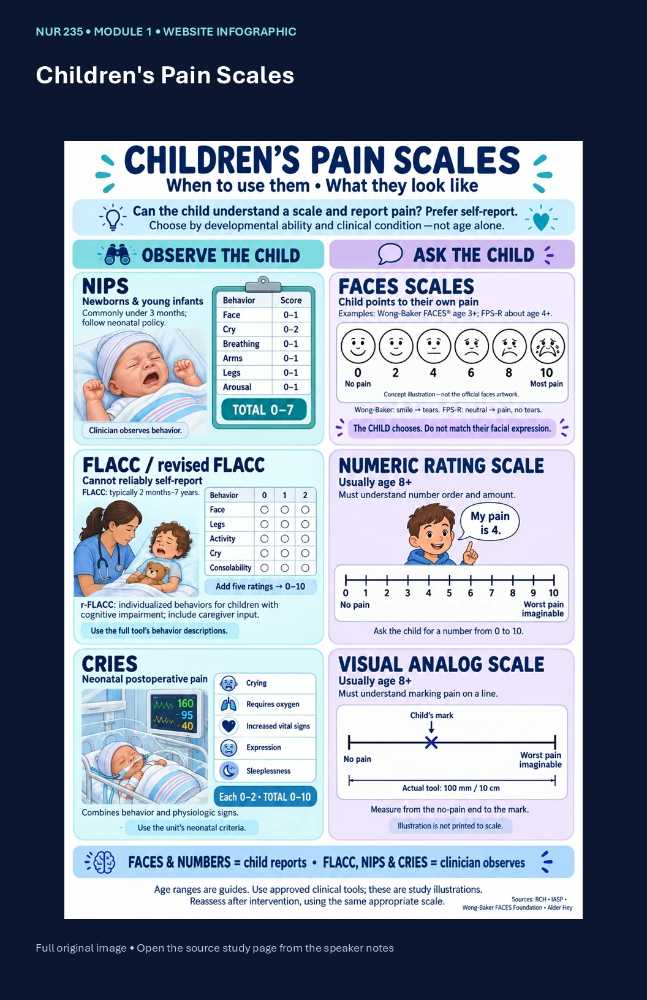
Read slide text and study notes
NUR 235 • MODULE 1 • WEBSITE INFOGRAPHIC
Children's Pain Scales
Full original image • Open the source study page from the speaker notes
Website infographic
7 / 254Pediatric Procedure Positions
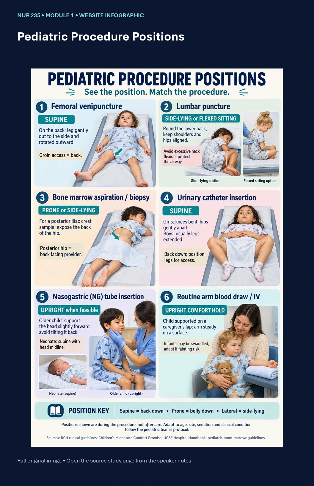
Read slide text and study notes
NUR 235 • MODULE 1 • WEBSITE INFOGRAPHIC
Pediatric Procedure Positions
Full original image • Open the source study page from the speaker notes
Website infographic
8 / 254Relaxation Before a Procedure
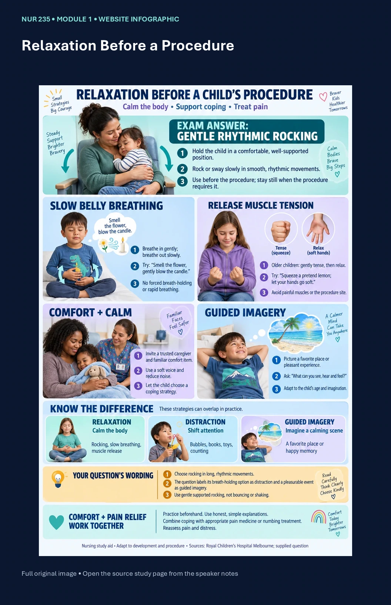
Read slide text and study notes
NUR 235 • MODULE 1 • WEBSITE INFOGRAPHIC
Relaxation Before a Procedure
Full original image • Open the source study page from the speaker notes
Website infographic
9 / 254Children — check the daily dose
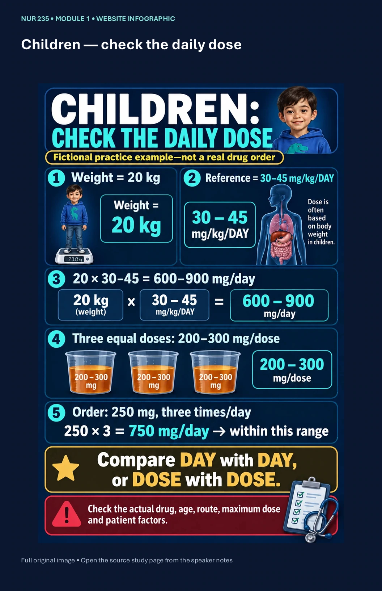
Read slide text and study notes
NUR 235 • MODULE 1 • WEBSITE INFOGRAPHIC
Children — check the daily dose
Full original image • Open the source study page from the speaker notes
Website infographic
10 / 254Hospital separation — protest, despair, detachment
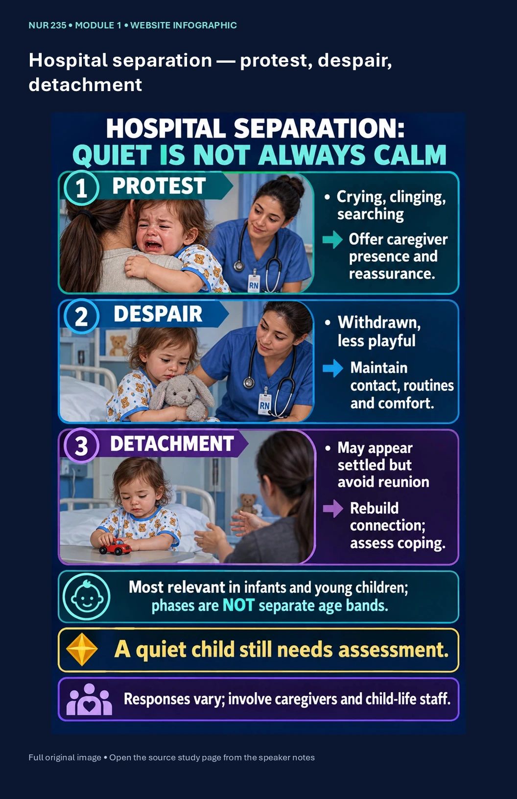
Read slide text and study notes
NUR 235 • MODULE 1 • WEBSITE INFOGRAPHIC
Hospital separation — protest, despair, detachment
Full original image • Open the source study page from the speaker notes
Website infographic
11 / 254Medication administration: calculate, check, measure, give
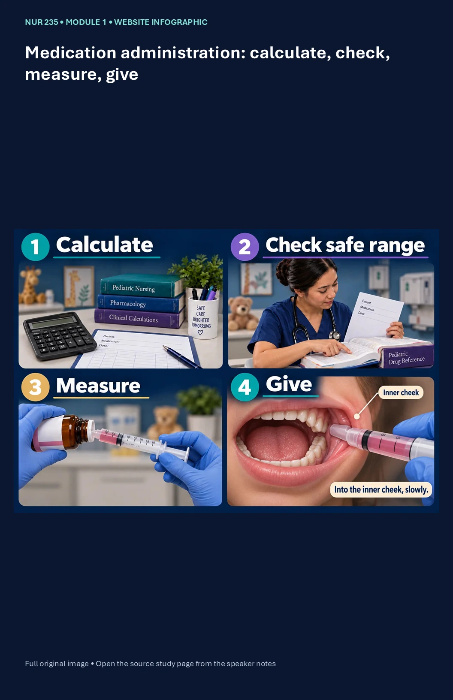
Read slide text and study notes
NUR 235 • MODULE 1 • WEBSITE INFOGRAPHIC
Medication administration: calculate, check, measure, give
Full original image • Open the source study page from the speaker notes
Simple Nursing original · Module 1
12 / 254Simple Nursing: Basic Chart - Erikson's 8 Stages

Read handout text
Erikson’s 8 Stages -
Psychosocial Development
Pediatrics: Development
Age & Stage Attributes Need & Focus Good Outcome Bad Outcome
0-18 months
Infant
18 mo. - 3 yrs.
T oddlers &
Early childhood
3 - 6 yrs.
Preschool
6 - 12 yrs.
School Age
12 - 18 yrs.
Adolescence
19 - 40 yrs.
Early Adulthood
40 - 65 yrs.
Adulthood
65+ yrs.
Maturity
Safety w/ Mother
(caregiver)
Independent from
parents
Powerful within family
& exploring
Good w/ Neighbors,
Classmates, & friends
Love
Partners
& Friends
Provide value to
household /
society
“Give a gift”
Reflection on life
“Receive a gift”
Socializing
& Fit into Peer Groups
Fear & suspicion
with people &
environment
Failure to achieve
autonomy leads to
shame & doubt
Asserting too
much power =
disapproval & guilt
Trust vs. Mistrust
Virtue: Hope & Optimism
Initiative vs. Guilt
Virtue: Purpose, ability to
start activities & goals
Industry vs. Inferiority
Virtue: Competence in
intellectual, social
& physical skills
Identity vs.
Role Confusion
Virtue: Fidelity, fitting into
the world as own person
Intimacy vs. Isolation
Virtue: Love, finding & losing
self in others & career.
Generativity vs.
Stagnation
Virtue: Care
Guidance & teaching
new generation
Integrity vs. Despair
Virtue: Wisdom
Fulfillment & satisfaction
Wisdom &
fulfillment while
reflecting on life
Regret,
bitterness &
despair with life
Trust & faith in
environment and
with caregivers
Independence &
control over
behavior & skills =
Autonomy
Initiative
+ Assertive =
Sense of purpose
Feeling competent
with social &
academic demands
Failure in
social & academia
= feeling inferior
Confused with
self identity =
Lonely, isolated
Sense of self &
personal identity
Staying true to yourself
Strong
relationships
(intimate & loving)
Feeling of
accomplishment &
usefulness in
family & society
Shallow sense
of self with limited
involvement in
the world.
Weak
relationships =
lonely & isolated
Autonomy vs.
Shame & Doubt
Virtue: Will use freedom &
self-restraint
Kaplan Question
… adolescence … associated with
establishment of which developmental goal?
Sense of identity
ATI Questions
Q1: Which age group experiences the stage of
autonomy vs shame and doubt?
Q2: successful achievement of Erikson’s … for
the 3-year-old toddler?
T oddlers
Encouraging the child to assist in removing
the dressing on his leg
Saunders Questions
Q1: 8-year-old ... seems to be more attentive to friends
than anything else. Using Erikson’s ... which response?
Q2: 2 ½ year old child…. Using Erikson’s which should
the nurse plan care around?
At this age, the child is developing his own personality
Autonomy versus Shame and Doubt
HESI Questions
Q1: Which task… belongs to infancy?
Q2: A 4-year-old ... Which stage of Erikson’s theory … is
the nurse addressing when teaching inhalation therapy?
Q3: ... most significant impact on the socialization of
school age children?
Trust
Initiative
Classmates
Who am I?
C
A
C
T
C
UC
B C
C
Simple Nursing original · Module 1
13 / 254Simple Nursing: Basic Chart - Piaget Theory of Cognitive Development I

Read handout text
Piaget Theory of Cognitive Development I
Pediatrics: Stages of Development
Age Stage
0 - 2
Infant &
T oddler
T eaching Example
Foley catheter insertion for
an 18 month child?
T each the child what you
ARE DOING as you do it
T each in the present moment!
T each them:
“What you ARE doing
while you ARE doing it”
(pre-procedure teaching for
the parents not child)
12 - 15
(adolescents)
Adults
Learning
T each like an adult!
Med Surg style
12 yrs + can
Manage their own care
T each them:
“Report these findings …”
“If you see this follow up with
your provider”
Which child can manage
their own care?
Risk-taking behavior
= non-compliance
14 year old with DM type 1
NCLEX TIP
Thinks in the present moment
through the senses.
(not past or future)hesioi
Object permanence
(objects are still there
even if you can’t see it)
Example: Peekaboo
Sensorimotor
HESI
3 - 6
Preschool
Foley catheter insertion for
a 4 year old child?
T each the child what you
are GOING to do
T each shortly before.
T each them:
“The day of...”
“The morning of…” or
“A few hours before..”
Imaginative, Symbolic thought
Magical thinking
(Do NOT understand
cause & effect)
Understands the Future & Past
scraped knee was caused by
earlier misbehavior
Preoperational Thinking
7 - 11
Skill learning
Which child can the
nurse teach bandage
placement skills?
7 year old & up
T each days before.
Include skills like:
- Insulin injections
Demonstration & reading
T each them:
“T omorrow we will…”
“You will do this every day”
Logical thought,
Follows rules, rigid thinking
Only 1 way to do somethingaaaaaa
Limited abstract thoughtsaaaaaa
Concrete Operational
ATI
HESI
Developing abstract thought,
Cause & effect thinking
(example: Love, hate, morality)
Formal Operational
Notes
Simple Nursing original · Module 1
14 / 254Simple Nursing: Chart - Peds Vital Signs

Read handout text
Pediatric Vital Signs I
Pediatrics: Assessment
PEDIATRIC VITAL SIGNS CHEAT SHEET
HEART RATE
HEART RATEAGE
Neonate (1-28 days) 110 - 180 bpm
Infant (1-12 months) 110 - 160 bpm
T oddler (1-3) 80 - 110 bpm
Preschool Child (3-6)
School-age Child (6-12)
Adolescent (12-18)
70 - 110 bpm
65 - 105 bpm
60 - 100 bpm
RESPIRATORY RATE
RESPIRATORY RATE
AGE
Neonate (1-28 days) 30 - 60 breaths/min
Infant (1-12 months) 30 - 60 breaths/min
T oddler (1-3) 24 - 40 breaths/min
Preschool Child (3-6)
School-age Child (6-12)
Adolescent (12-18)
22 - 34 breaths/min
18 - 30 breaths/min
12 - 18 breaths/min
BLOOD PRESSURE
SYSTOLIC
HYPOTENSIONAGE SYSTOLIC DIASTOLIC
Neonate (1-28 days) <60 (0-28 days old)
Infant (1-12 months) <70 (1mo - 12mo)
T oddler (1-3) <70 + (age in year x 2)
Preschool Child (3-6)
School-age Child (6-12)
Adolescent (12-18)
60 - 90
70 - 105
85 - 105
90 - 110
97 - 120
110 - 130
20 - 60
35 - 55
40 - 65
45 - 70
55 -70
65 - 80
<70 + (age in year x 2)
<70 + (age in year x 2)
<90
TEMPERATURE
OXYGEN SATURATION
GOAL ALWAYS: > 95% SpO2
TEMPERATUREAGE
Infants - children < 5 years old
(the younger the child, the higher the baseline
temperature)
Rectum: 97.9oF (36.6oC) - 100.4oF (38oC)
Oral: 95.9oF (35.5oC) - 99.5oF (37.5oC)
Axillary: 97.8oF (36.5oC) - 99.5oF (37.5oC)
Ear: 96.4oF (36.7oC) - 100.4oF (38oC)
98.6oF (37oC)Children > 5 years old
TEST TIP Focus on the highlighted information! Most exams focus on heart rate, respiratory rate & blood pressure,
specifically in the neonate, infant & toddler age ranges, as these are the MOST vulnerable clients.
*Ranges will vary by textbook & nursing school. These vital signs were verified by 5 textbooks and NCLEX standards.
Simple Nursing original · Module 1
15 / 254Simple Nursing: Lead Poisoning

Read handout text
Lead Poisoning
Pediatrics: Poisoning
Lead poisoning occurs when toxic levels of lead build up inside the
bloodstream. Children younger than 6 years of age are most at risk
since small amounts of lead can cause serious health problems. Pb
!
!
!
Y ear 3Y ear 2Y ear 1
Pathophysiology
Neurocognitive impairment
Mild
� Hyperactivity
� Impulsive
Severe
� Seizures
� Death
Moderate
� Learning disabilities
� Vision & hearing
NCLEX TIP
Anemia
Weight loss
Sluggishness and fatigue
Kaplan HESI
ATI Question
Which of the following is the most
serious concern associated with an
elevated blood lead level?
● Neurocognitive impairment
Kaplan Question
Chronic lead poisoning. Which
symptoms does the nurse expect to see?
● Anemia, seizures, learning disabilities
HESI Question
Which effect does increased lead
absorption have on a patient?
● Anemia
ATI Question
A child who has severe lead toxicity.
Which of the following actions
should the nurse plan to take?
● Administer chelation therapy
HESI Question
Which nursing intervention is
appropriate when the blood lead
level (BLL) is within 5 and 14 mcg/dL
in an adolescent client?
Select all that apply.
● Refer to social services
● Conduct follow-up blood testing
within 1 month and then every
3 to 4 months
1
month
3
months
4
months
Signs & Symptoms
1. Return for follow-up blood
tests for lead level
2. Get the home inspected
for the source of lead
3. Wash the child’s hands often
(especially before meals)
3 NCLEX TIPS
Chelated therapy like activated
charcoal & EDTA injection can be
given depending on time & severity
of exposure.
ACTIVATED
CHARCOAL
EDTA
!
!
!
Most tested on
SATA questions
Pb
Treatment
Education
• Lead-based paints found in houses built in & before the 1970s
• Drinking from lead piping in older homes
HESI Question
Which source is a
common cause of lead
poisoning in children?
● Lead-based paint
Q1:
Which metal is
appropriate to test for
in the child that lives in
a house built in 1960?
● Lead
Q2:
1900’s 1970’s
Pb
1900’s 1970’s
Causes & Risk Factors
Simple Nursing original · Module 1
16 / 254Simple Nursing: Myopia & Strabismus

Read handout text
5 Eye Disorders
Pediatrics: Visual & Audio
MYOPIA
STRABIMUS AMBLYOPIA
ASTIGMATISM
HYPEROPIA
Amblyopia3.
Astigmatism4.
Hyperopia5.
Amblyopia: Permanent loss of visual acuity
Untreated by age 5 or 6
... importance of detecting strabismus
in young children?
HESI Questions
Amblyopia (a type of blindness)
Patch over the stronger eye NCLEX TIP
Over 30%
of student got this WRONG
This is a disorder where the eyes
appear crossed (crossed eyes) &
don't look in the same direction
at the same time.
MEMORY TRICK
CROSSED EYES
Strabismus
Stray-bismus
Strabismus - Patho & Signs
Complication
Myopia, also called nearsighted, clients have trouble seeing at a distance,
meaning clients can see better when objects are near!
In a normal eye, images are focused & dialed in on the retina, but in myopia
the eye structures focus images in FRONT of the retina causing far images
to be blurred.
MEMORY TRICK
MYopia
MY or mine
(bring objects closer)
Myopia - Pathophysiology
Squinting to read word far away1.
Sitting too close to the TV3.
Holding books close to the face to read 2.
Headaches, dizziness, & clumsiness4.
4 NCLEX TIPS
HESI
… difficulty reading the board at school
and complains of frequent headaches?
Q1:
HESI Questions
Myopia
Dizziness
Headaches
Clumsiness
Eye rubbing
… clinical manifestations appropriate
for myopia in children?
Select all that apply.
Q2:
Signs & Symptoms
Treatment
Myopia1.
Strabismus2.
TOP TESTED
Simple Nursing original · Module 1
17 / 254Simple Nursing: Pain Scale Assessment

Read handout text
Pain Scale Assessment
Pediatrics: Assessment
Cries Scale 0-6 months
Flacc Scale 2 months - 7 years
Numeric Scale 5 years & up
C
Crying
R
Requires oxygen
I
Increased
vital signs
E
Expression
S
Sleepless
0₂ 0₂
0₂
0₂
NORMAL
LOW
HIGH
F
Face
L
Legs
A
Activity
C
Cry
C
Consolability
Faces Scale 3 years & up
0 1 2 3 4 5
NO HURT HURTS
LITTLE BIT
HURTS
LITTLE MORE
HURTS
EVEN MORE
HURTS
WHOLE LOT
HURTS
WORST
Saunders Question
4-year-old child. When experiencing
pain, the nurse anticipates:
Select all that apply.
• Views pain as punishment
• Blames someone else for the pain
• Believes pain will disappear magically
0 - 6 months
2 month - 7 years
0 974 862 3 51 10
No
Pain
Mild
Pain
Moderate
Pain
Severe
Pain
Very Severe
Pain
Worst Pain
Possible
O Onset
P Provocation
Q Quality
R Radiation
S Severity
T Time
Children 3 - 6 years old view pain as “magical thinking”, thinking pain is a punishment,
or that pain will magically disappear & even blaming someone else for the pain.
Simple Nursing original · Module 1
18 / 254Simple Nursing: Play Types - Basic Chart

Read handout text
Play T ypes I
Pediatrics: Development
Age Best T oy Play Type Description
0-6 month Musical Mobile or
Soft & large toy
Stimulates both
motor & sensory
Sensorimotor
& Solitary Play
6-9 month Cover & Uncover toys
(Peek a boo/ Jack in the box)
Sensorimotor
& Solitary Play
9-12 month
Learning
Vocalization & Speaking
Purposeful play:
“Build, sort, stack,
make, construct”
Sensorimotor
& Solitary Play
Learning
Object permanence
Talking toys, books
Hard plastic blocks
(Tickle me Elmo)
ATI
1-3 yrs.
T oddlers
6-12 yrs.
School Age
12-18 yrs.
Adolescent
3-6 yrs.
Preschool
Parallel Play
“Children play
NEXT to each other
NO direct interaction with others”
HESI
1 - 3 yrs they play
1 by 1 separate
Memory Trick:
Learning
Gross motor skills
(running & jumping)
NO finger dexterity
• No Scissors
• No color pencils
Learning
Fine motor & Balance
• Yes - Scissors
• Yes - Tricycles
Learning
Creativity & Creation
Pretend Play
(dolls, puppets, tea party,
dressup, imitating adults)
Kaplan
Arts & Crafts
(crayons & coloring)
Saunders
F - Four years
F - Fake Play (dolls, dressup)
Memory Trick:
Legos, board games
Collecting cards,
Blank paper & crayons
(encourage creativity )
Saunders
Socialization
Learning
Peer group
socialization
NO Meeting
1 - Immediate Post-Op
2 - Immunocompromised
3 - Contagious
Push / Pull T oy
(Wagon, stroller,
Stacking hard plastic blocks)
ATIKaplan &
Associative Play,
Imaginary Play,
Symbolic Play ATI
Cooperative Play
C - Creative
C - Collecting
C - Competitive
Meeting, texting,
talking with friends
Priority
Encourage meeting
with friends & peers
Notes
Simple Nursing original · Module 1
19 / 254Simple Nursing: Visual Chart 1 - Developmental Milestones

Read handout text
Developmental Milestones I
Pediatrics: Stages of Development
Age Fine Motor Language Social/Cognitive
1
month
2 - 3
months
4 - 5
months
6 - 9
months
10 - 12
months
12
months
• Grasp reflex 0 - 3 mo.
• Babinski reflex 0-12 mo.
• Rooting reflex 0 - 4 mo.
• T onic-neck reflex 0 - 4 mo.
• Responds to touch &
voices
• Sensory motor
communication
• Finds safety with
caregiver & Looks at
face
• Grasp reflex diminishes • Response to sounds
• Able to make sounds
with mouth
• Smiles & coos when
seeing a familiar face
Memory Trick:
Smiles - Second month
NCLEX TIP
• Grabs object voluntarily
(Grabs rattle) HESI
• Diminished Moro reflex
(startle reflex) & other
reflexes
• Mimics sounds heard
• Able to change cry
tone for different
needs
• Soothed by caregiver’s
voice
• Copies expressions
• Cries when doesn't get
their way
• 6 months
holds a big bottle
• 7 months
Transfers objects from
1 hand to the other
• Babbling words
“Mama Dada”
• Responds to name
NOT babbling
9 months?
MUST REPORT IT
ATI
NCLEX TIP
Memory Trick:
Separation at Six mo.
• Identifies faces &
strangers
• Separation anxiety
begins at 6 months
10 months: 3 NCLEX TIP
1. Pincer grasp
“Pick up small finger foods”
2. Grasps a rattle or doll by
the arm
3. Transfers objects from
hand to hand
Memory Trick:
10 months uses
10 fingers to grab things
• Able to make a variety
of sounds
• Mimics gestures
• Understands simple
words Yes & No
• Vocalization & speech
(Talking toys & books)
Purposeful play
1. Fully developed 2
finger pincer grasp
2. Tries to build 2 block
tower unsuccessfully
3. Attempts to turn book
pages
Memory Trick:
12 mo. use fingers
1 & 2 - fully developed
pincer grasp
3 NCLEX TIPS • 3 - 5 words
• Nonverbal gestures
(waving, head nodding)
• Shy: stranger danger
• Can follow short simple
directions
• Searches for hidden
objects
(Object permanence)
Gross Motor
• Head lag
(poor head control)
• NO more head lag
(Report if head lag is
found after 4 months)
NCLEX TIP
Memory Trick:
After month 4
= head lag NO MORE
Kaplan ATI
5 months rolls from front
to the back
NCLEX TIP
Birth weight DOUBLES at
6 months
6 - 9 Months
• Rolls from back to front
• Can sit up unsupported
• Can pull self up
• 10 months -
prone to sitting position
2 NCLEX TIPS
Saunders
• Birth WEIGHT TRIPLES
• Sits down from standing
• Crawls up stairs
• Walks 1st steps while
holding hand
NCLEX TIP• Kicks legs
Memory Trick:
2 legs kick at 2 months
Raises head when prone
Less head lag
Simple Nursing original · Module 1
20 / 254Simple Nursing: Amblyopia, Astigmatism & Hyperopia

Read handout text
5 Eye Disorders II
Pediatrics: Visual & Audio
Amblyopia - Patho & Causes
Astigmatism - Patho & Causes
Hyperopia - Patho & Causes
Also called a lazy eye, is a type of blindness or reduced visual acuity that
can occur if strabismus is untreated by age 5 or 6. It is caused by a
dysfunctional nerve pathway between the brain & eye resulting in the
brain favoring one eye.
... reduced visual acuity in one eye
despite appropriate optical correction?
HESI Questions
Amblyopia
5-6 years old
One or both wandering eye(s) that wander inward or
outward. Vision is impaired with poor depth perception
resulting in the client squinting or shutting an eye in
order to see.
• Eye patches,
• Drops,
• Glasses, or contact lenses,
• Surgery (sometimes).
Refractive error in which the eye does
not evenly focus light on the retina.
This results in distorted or blurred vision
at any distance.
Symptoms naturally include
eyestraining, squinting, headaches,
and trouble driving at night.
• Glasses,
• Contact lenses
• Surgery
Also called farsightedness, patients can
only see FAR objects, distant objects look
somewhat clear, but close objects
appear blurry.
It is caused by a refractory error where
images focus in the BACK of the retina
making close images blurry.
Normal Hyperopia
E
E
Nearby objects = blurry
Squinting, headaches, & burning
eyes with eye aches too.
• Corrective lenses - contacts or
glasses
• Refractive surgery
Lazer
Signs & Symptoms
Signs & Symptoms
Treatment
Symptoms
Treatment
Treatment
Simple Nursing original · Module 1
21 / 254Simple Nursing: Drug Toxicity

Read handout text
Drug T oxicity
Pediatrics: Poisoning
Drug toxicity is always a big concern with toddlers learning how to walk &
get around, they are curious about everything, get into medicines, and
love to put foreign objects into their mouths!
MEDICINE
Causes
Ibuprofen (NSAID)
Emergency department 1.
Full assessment w/ labs 3.
Activated charcoal2.
Acetaminophen (tylenol)
Aspirin (salicylate)
Priority Interventions
3-year-old child … father just found him
holding an empty bottle of ibuprofen...
initial action?
Q1:
Activated charcoal
An 8-year-old child has swallowed
twelve 325 mg acetaminophen tablets.
The mother brings the alert child to the
emergency department.
Prioritize the nurse actions that
should occur.
Q2:
Ensure patent airway 1.
Prepare to give activated charcoal 2.
Complete a history & physical 3.
Check blood acetaminophen levels 4.
ATI Questions
Q1: “I think my baby swallowed a bottle of
Tylenol.” What is the nurse’s next action?
HESI Questions
Take the child’s vital signs
Acetylcysteine
Acetaminophen overdose?Q2:
Treatment of acetaminophen overdose? Q1:
Kaplan Questions
Acetylcysteine
Liver function test
Preschool-age client diagnosed with an
acetaminophen overdose. Which
laboratory test result is most important
for the nurse to evaluate?
Q2:
Acetylcysteine EG
Acetylcysteine EG
ACTIVATED
CHARCOAL
Acetaminophen
levels
Treatment
Notes
Kaplan Question
Call the poison control center
“I just found my 2-year-old in the kitchen
surrounded by several bottles of cleaning
solutions and the bottles are all open!”
Which action by the nurse is best?
Which nursing information is appropriate when
teaching parents about poison prevention?
SATA
HESI Question
Keep medications locked & out of the
sight of children
Put the contact number for the poison
control center near the phone
ACETAMINOPHEN
(TYLENOL)
IBUPROFEN
ASPIRIN
Poison control:
09-xxxxxx
POISON
CONTROL
CENTER
Calling...
2 years old
Education
• Keep medications locked & out
of the sight of children
• Have the contact number for the
poison control center near the
phone
Simple Nursing original · Module 1
22 / 254Simple Nursing: Hearing Deficit & Visual Screening

Read handout text
Hearing Deficit & Visual Screening
Pediatrics: Visual & Audio
To assess vision in
newborns & infants:
Infants: use light reflex tests
to observe blink response,
alertness, & following the light.
HESI
Which is a sign of visual impairment
in an infant?
No reaction to light
Infant Assessment
Infants
T oddlers
No babbling sound “mama, dada”
Speech that is monotone
Uses LOUD voice
Shy withdrawn behavior
& Lack of attention
3 NCLEX TIPS
Use sign language and hearing aids.
MOST tested
Signs & Symptoms
Interventions
Visual Screening
Visual assessment begins with the use of a Snellen chart or Tumbling E chart,
clients are asked to read the letters from top to bottom. Children stand 10 feet
away & adults stand 20 feet away from the chart.
An ophthalmologist referral is made if a child is unable to identify at least 4
letters on the 10/15 line (equivalent to 20/30 vision).
HESI
Which tests are used to assess visual acuity
in children ages 3 to 5 years?
Select all that apply.
Tumbling E
Snellen letters
20ft (6m)
10ft (3m)
Children: 10 ft away (3m)
from the chart
Adults: 20 ft away (6m)
NCLEX TIP
Snellen chart or Tumbling E chart
4 - 6 letters
With hearing deficit there is a blockage in the middle ear that prevents
sound waves from reaching the middle ear, resulting in the client only
hearing muffled sounds.
Infants with hearing impairment can have delayed speech development
if not corrected early! As the child grows, the speech will become more &
more distorted.
Caused from repeated ear infections, the use of certain medications,
or certain congenital disorders.
Q1: Which type of hearing loss is
characterized by interference
with the loudness of sound?
HESI Questions
Conductive
Q2: Which complication is appropriate
for prolonged middle ear disorders?
Loss of hearing
Conductive hearing loss
(middle ear problem)
Sound waves
Middle ear
Inner ear
???
Hearing Deficit Pathophysiology & Causes
Key Point:
Simple Nursing original · Module 1
23 / 254Simple Nursing: Key points - Peds Vital Signs

Read handout text
Pediatric Vital Signs II
Pediatrics: Assessment
Key Points
Talk to parents 1st & then the
child 2nd
1.
Always start with least invasive
vitals FIRST
2.
Infants - should be in caregiver’s
lap during the assessment
3.
FIRST LAST
Which of the following should
the nurse assess first on a
well-child exam in a 6 week old
infant who is sleeping?
ATI Question
Auscultation of lung and
heart sounds
TOP Missed NCLEX Question
Tachycardia
10-month old ... crying & vomiting with abdominal
distension for the past 6 hours. The infant is now
quietly resting with a pulse of 220/min and blood
pressure of 85/45. What should the nurse report
to the HCP?
Client is now lethargic with tachycardia
HEART RATE
HEART RATEAGE
Neonate (1-28 days) 110 - 180 bpm
Infant (1-12 months) 110 - 160 bpm
T oddler (1-3) 80 - 110 bpm
BLOOD PRESSURE
SYSTOLIC
HYPOTENSIONAGE SYSTOLIC DIASTOLIC
Neonate (1-28 days) <60 (0-28 days old)
Infant (1-12 months) <70 (1mo - 12mo)
T oddler (1-3) <70 + (age in year x 2)
60 - 90
70 - 105
85 - 105
20 - 60
35 - 55
40 - 65
220 85/45
The question says:
• Count & listen for 1 full minute
(60 seconds) for infants and toddlers,
to screen for irregularities.
Heart & Respiratory Rate
60
seconds
… assessing the heart rate of a 1 year old?
HESI Question
Listen to apical pulse for a full minute
12 month old with respiratory infections
... respiratory rate of 36:
Saunders Question
Document the findings
RESPIRATORY RATE
RESPIRATORY RATE
AGE
Neonate (1-28 days) 30 - 60 breaths/min
Infant (1-12 months) 30 - 60 breaths/min
T oddler (1-3) 24 - 40 breaths/min
Preschool Child (3-6)
School-age Child (6-12)
Adolescent (12-18)
22 - 34 breaths/min
18 - 30 breaths/min
12 - 18 breaths/min
• Children have a lower BP than adults due
to the smaller size of their organs.
Blood Pressure
BLOOD PRESSURE
SYSTOLIC
HYPOTENSIONAGE SYSTOLIC DIASTOLIC
Neonate (1-28 days) <60 (0-28 days old)
Infant (1-12 months) <70 (1mo - 12mo)
T oddler (1-3) <70 + (age in year x 2)
Preschool Child (3-6)
School-age Child (6-12)
Adolescent (12-18)
60 - 90
70 - 105
85 - 105
90 - 110
97 - 120
110 - 130
20 - 60
35 - 55
40 - 65
45 - 70
55 -70
65 - 80
<70 + (age in year x 2)
<70 + (age in year x 2)
<90
Blood pressure: 2 year old … 92/60 mm Hg.
… this blood pressure would be:
ATI Question
Normal
Temperature
O2 saturation
Oral temp: 5 - 6 yrs old
Axillary: all ages
Rectal: Infants (most common)
Accurate wave form “steady wave”
matching the child’s pulse
Risk for perforation of the bowel!
NOT for clients with cardiac conditions
NOT for clients with diarrhea /
fecal impaction
NOT for immunosuppressed clients &
those on chemotherapy & radiation
... child has an oxygen saturation of
88%.. most appropriate initial action?
ATI Question
Verify the position of the pulse
oximetry probe
88
%
88%
DOXORUBICIN
38.5
Simple Nursing original · Module 1
24 / 254Simple Nursing: Language & Communication Milestones

Read handout text
Language & Communication
Pediatrics: Stages of Development
Notes
5 years1 year
300+ words
Why you laugh?
Why the
bird can fly?
Where is
my candy?
Why mama
eat that?
Priority
Language & Communication
• At around 10 months
Say “Momma” & “Dada”
• Over 12 months: Up to 3 - 5 words
Infants 1 - 12 months
• Respond to touch & voices
Sensory motor communication
Newborns 0 - 1 month
Saunders Question
Expected growth & development at 9 months
Select all that apply.
● Should be able to say “mama” and “dada”
● Will pull up and stand for several seconds
holding on to furniture
● Will be able to pick up small pieces of food
Kaplan Question
An infant client is able to stand holding on to
objects, plays “peek-a-boo”, and is starting to say
“mama” and “dada. ” … which age?
● 9 months
HESI Question
Which age would the nurse expect the infant to
be able to say, “mama” and “dada” with meaning?
● 10 months
• Uses logic
School age 6 - 12 years
• Priority Finding
to report to HCP
2-year-old “does not talk or respond”
while being assessed
NCLEX TIP
T oddlers & Preschool 1 - 5 years
• Abstract thinking
• Privacy - ask certain questions
without the parents present
• Encourage peer contact
HUGE Risk for social isolation!
1. “have friends to come visit at
the hospital”
2. “meeting other teens who are
receiving similar treatment”
Adolescence 12 - 18 (teenagers)
NCLEX TIP
ATI Question
Assessing speech development ….
refer for further examination?
● An 18-month-old who only says “no”
Kaplan Question
Speech impairment?
● A 5-year-old who only answers with
single words
HESI Question
16-year-old refusing classmates visits…
Which concern will the nurse plan to
address first?
● Social isolation
Saunders Question
A 16-year-old admitted to the
hospital … Which nursing
intervention is most appropriate?
● Allow the client to interact with
others in his or her same age group
● Let the child wear her own clothing
when friends visit
Q1:
14-year-old girl … hospitalized & has
been placed in traction. Which nursing
action would be appropriate to meet
the child’s needs?
Q2:
10 months
Mama
Dada
My cute
baby
Simple Nursing original · Module 1
25 / 254Simple Nursing: Play Types - Visual

Read handout text
Play T ypes II
Pediatrics: Development
Age Best T oy Play Type Description
0 - 6 month Musical Mobile or
Soft & large toy
Stimulates both
motor & sensory
Sensorimotor
& Solitary Play
0 - 6 months
UT
C A
B
C
6 - 9 month Cover & Uncover toys
(Peek a boo/
Jack in the box)
Sensorimotor
& Solitary Play
Learning
Object permanence
6 - 9 months
UT
C A
B
C
9 - 12 month
Learning
Vocalization & SpeakingSensorimotor
& Solitary Play
Talking toys, books
Hard plastic blocks
(Tickle me Elmo)
ATI
Purposeful play:
“Build, sort, stack,
make, construct”
9+
months
UT
C A
B
C
ABC... ABC...
U
C
A
B
C
T
9 - 12 months
AAA... ABC...
UT
C A
B
C
C
1 - 3 yrs.
T oddlers
Learning
Gross motor skills
(running & jumping)
NO finger dexterity
• No Scissors
• No color pencils
U
C
A
B
C
T
C
UC B
C
C
A
B
C
T
C
U
C
A
B
C
C
1 - 3 yrs
Push / Pull T oy
(Wagon, stroller,
Stacking hard plastic blocks)
ATIKaplan &
Parallel Play
“Children play
NEXT to each other
NO direct interaction with others”
HESI
1 - 3 yrs they play
1 by 1 separate
Memory Trick:
3 - 6 yrs.
Preschool
Learning
Fine motor & Balance
• Yes - scissors
• Yes - Tricycles
Pretend Play
(dolls, puppets, tea party,
dressup, imitating adults)
Kaplan
Arts & Crafts
(crayons & coloring)
Saunders
F - Four years
F - Fake Play (dolls, dressup)
Memory Trick:
Associative Play,
Imaginary Play,
Symbolic Play ATI
3 - 6 yrs
6 - 12 yrs.
School Age
Learning
Creativity & Creation
Cooperative Play
C - Creative
C - Collecting
C - Competitive
6 - 12 yrs
??
?$
$
?
??
?$
$
?
Legos, board games
Collecting cards,
Blank paper & crayons
(encourage creativity )
Saunders
12 - 18 yrs.
Adolescent
Socialization Learning
Peer group
socialization
NO Meeting
1 - Immediate Post-Op
2 - Immunocompromised
3 - Contagious
Meeting, texting,
talking with friends
Priority
Encourage meeting
with friends & peers
12 - 18 yrs
1. Safety
� Choking Hazard
Under 4 yrs. = No small toys
� No metal toys near oxygen use
(sparks = fire)
� Infection:
Hard toys for the
immunosuppressed (easier to clean)
2. Age appropriate
3. Realistic
T op 3 Considerations
Play is an integral part of how a little baby brain learns &
develops cognitively. During hospitalization, play can also
serve as a therapy to relieve stress & anxiety.
HESI Question
Which type of play … toddler?
● Parallel
Saunders Questions
10-month-old infant ... the most
appropriate intervention?
● Consistent routine with touching,
rocking, & cuddling
5-year-old … most appropriate
● Crayons and coloring book
7-year-old child ... most appropriate
play activity?
● A board game
Q1:
Q2:
Q3:
Kaplan Questions
Q1: A push-pull toy:
● 18 to 20 months
Q2: preschool-age …
play activity?
● Imitating the actions
of the nurse or health
care provider
ATI Questions
13-month-old toddler … best toy to
promote development at this age?
● A pull toy
Symbolic play?
● A 3-year-old pretends a rug is a
magic carpet
11-month-old infant who is hospitalized
…Best toy?
● A bucket of plastic blocks
Q1:
Q2:
Q3:
T op Missed NCLEX Questions
Q1: What age group does the nurse suspect ... children are
observed borrowing blocks from each other without direct
interaction with others?
1 - 3 yrs they play
1 by 1 separate
Memory Trick
1 - 3 years old
(T oddlers)
1 - 3 yrs
Age Best T oy Play Type Description
1 - 3 yrs.
T oddlers
Learning
Gross motor skills
(running & jumping)
NO finger dexterity
• No Scissors
• No color pencils
Push / Pull T oy
(Wagon, stroller,
Stacking hard plastic blocks)
ATIKaplan &
Parallel Play
“Children play
NEXT to each other
NO direct interaction with others”
HESI
1 - 3 yrs they play
1 by 1 separate
Memory Trick:
T op Missed NCLEX Questions
Q2: Long-term hospitalization of a 4-year-old … Which toy is most appropriate
to aid in the development of this child? Select All That Apply
1. Dolls
2. Puppets
3. Stacking hard
plastic blocks
4. Jack in the box
5. Dress up clothing
6. Meeting with peers
Preschoolers 3 - 6 yrs.
Pretend (dolls, puppets,
dress up, tea parties)
Memory Trick
Simple Nursing original · Module 1
26 / 254Simple Nursing: Visual Chart - Erikson's 8 Stages

Read handout text
Erikson’s 8 Stages -
Psychosocial Development II
Pediatrics: Development
Notes
Age & Stage Attributes Need & Focus Good Outcome Bad Outcome
12 - 18 yrs.
Adolescence
Socializing
& Fit into Peer
Groups
Identity vs.
Role Confusion
Virtue: Fidelity,
fitting into the world
as own person
Confused with
self identity =
Lonely, isolated
Sense of self &
personal identity
Staying true
to yourself
Who am I?
19 - 40 yrs.
Early Adulthood
Love
Partners
& Friends
Intimacy vs. Isolation
Virtue: Love, finding
& losing self in
others & career.
Strong
relationships
(intimate & loving)
Weak
relationships =
lonely & isolated
40 - 65
Adulthood
Provide value to
household /
society
“Give a gift”
Generativity vs.
Stagnation
Virtue: Care
Guidance & teaching
new generation
Feeling of
accomplishment &
usefulness in
family & society
Shallow sense
of self with limited
involvement in
the world.
How can I
contribute
to the world?
How can I
contribute
to the world
65 +
Maturity
Reflection on life
“Receive a gift”
Integrity vs. Despair
Virtue: Wisdom
Fulfillment
Wisdom &
fulfillment while
reflecting on life
Regret,
bitterness &
despair with life
Did I live a
meaningful
life?
Age & Stage Attributes Need & Focus Good Outcome Bad Outcome
0-18 months
Infant
Safety w/ Mother
(caregiver)
Fear & suspicion
with people &
environment
Trust vs. Mistrust
Virtue: Hope &
Optimism
Trust & faith in
environment and
with caregivers
Po...
Po...
AAA...
EEE...E...
?
?
Failure to achieve
autonomy leads to
shame & doubt
Independence &
control over
behavior & skills =
Autonomy
Independent
from parents
Autonomy vs.
Shame & Doubt
Virtue: Will use
freedom &
self-restraint
18 mo. - 3 yrs
T oddlers &
Early childhood
C
A
C
T
C
UC
B C
C
C
A
C
T
C C
A
C
T
C
6 - 12
School Age
Good w/ Neighbors,
Classmates, &
friends
Industry vs. Inferiority
Virtue: Competence
in intellectual, social
& physical skills
Feeling competent
with social &
academic demands
Failure in
social & academia
= feeling inferior
...
?
?
?
3 - 6 yrs
Preschool Powerful within family
& exploring
Asserting too
much power =
disapproval & guilt
Initiative vs. Guilt
Virtue: Purpose,
ability to start
activities & goals
Let’s me
help you
NO
Initiative
+ Assertive =
Sense of purpose
Simple Nursing original · Module 1
27 / 254Simple Nursing: Visual Chart - Piaget Theory of Cognitive Development II

Read handout text
Piaget Theory of Cognitive Development II
Pediatrics: Stages of Development
0 - 2 years
Age
Thinks in the present moment
through the senses.
(not past or future)hesioi
Stage T eaching Example
Object permanence
(objects are still there
even if you can’t see it)
Example: Peekaboo
T each in the present moment! Foley catheter insertion for
an 18 month child?
T each the child what you
ARE DOING as you do it
T each them:
“What you ARE doing
while you ARE doing it”
(pre procedure teaching for
the parents not child)
Sensorimotor
HESI
0 - 2
Infant &
T oddler
I am eating.
I am inserting
Foley catheter?
Imaginative, Symbolic thought
Magical thinking
(Do NOT understand
cause & effect)
Understands the Future & Past
scraped knee was caused by
earlier misbehavior
Preoperational Thinking
Age Stage T eaching Example
T each shortly before. Foley catheter insertion for
a 4 year old child?
T each the child what you
are GOING to do
T each them:
“The day of...”
“The morning of…” or
“A few hours before..”
3 - 6 years
3 - 6
Preschool
Present FuturePast
T oday we will
your procedure.
I’m going to insert
Foley catheter
for you.
Logical thought,
Follows rules, rigid thinking
Only 1 way to do somethingaaaaaa
Limited abstract thoughtsaaaaaa
T each days before.
Include skills like:
- Insulin injections
Demonstration & reading
Which child can the
nurse teach bandage
placement skills?
7 year old & up
Concrete Operational
Age Stage T eaching Example
T each them:
“T omorrow we will…”
“You will do this every day”
ATI
HESI
7 - 11 years
7 - 11
Skill Learning
MEMORY TRICK
7 years old
& up
T omorrow
you will
take insulin
injection.
Developing abstract thought,
Cause & effect thinking
(example: Love, hate, morality)
T each like an adult! Which child can manage
their own care?
Risk-taking behavior
= non compliance
14 year old with DM type 1
Formal Operational
Age Stage T eaching Example
Med Surg style
12 yrs + can
Manage their own care
T each them:
“Report these findings …”
“If you see this follow up with
your provider”
NCLEX TIP
12 - 15
(adolescents)
Adult
Learning
...
Which of the following children would
be classified as being in the concrete
operational stage, as defined by Piaget?
ATI Question
An 8-year-old third grade student
Q1: ... behavior is characteristic of the
formal operations stage?
Saunders Questions
The child has the ability to
think abstractly
Report it to the pediatrician
Q2: 6 year old does not recognize the
objects exist when the objects are
outside the visual field… which
action should the nurse take?
Y ou should avoid
these high fat foods.
It’s not good
for your health.
TOP Missed NCLEX Question
A 14-year-old with type 1 diabetes
… admitted to the ICU with a blood
glucose over 500 mg/dL…. What is
contributing to the noncompliant
behavior?
Client’s psychosocial
developmental stage
Thinks in the present moment
through the senses.
(not past or future)hesioi0 - 2
Infant &
T oddler
Object permanence
(objects are still there
even if you can’t see it)
Example: Peekaboo
Sensorimotor
HESI
Notes
8 years old
Q1: Which phase of cognitive development
are infants?
HESI Questions
Sensorimotor
Limited abstract thoughts
Q2: What description characterizes
normal cognition during the period of
early adolescence (11 to 14 years) ?
7 - 11
Skill learning
Logical thought,
Follows rules, rigid thinking
Only 1 way to do somethingaaaaaa
Limited abstract thoughtsaaaaaa
Concrete Operational
ATI
HESI
11 -14
years old
Simple Nursing original · Module 1
28 / 254Simple Nursing: Visual Chart 2 - Developmental Milestones

Read handout text
Developmental Milestones II
Pediatrics: Stages of Development
18
months
2
years
4
years
Age Gross Motor Fine Motor Language Social/Cognitive
HESI
2 NCLEX TIPS
• Walk up/down stairs
while holding a hand
• Throws ball
• Jump in place with both
feet
18 months
1 hand helps the baby
that looks like an 8
(looks like a baby
snowman)
• Skips, hops on 1 foot
• Catches a ball 50% of
the time
• Climbs & jumps
• Able to tell stories
• Can memorize alphabet
& numbers
• Imaginary play:
Dress up & T ea Party
• Plays with other children
rather than alone
• Draw 4 sided shapes like
a square/ rectangle
• Can pour drinks & make
food
Memory Trick:
4 years 4 sided shapes
3
years
ATI
• Tricycle & jumps
forward
• Learning balance
• Walks up stairs with
alternating feet
ATI
ATI
• Draws circles
• Spoon feeds self
• Undresses self
• Holds crayon with fingers
instead of fist
- Ye s - Scissors
• Zips up a zipper
• 3-4 word sentences
• Asks “why” a lot
• Knows age
• Follows more complex
instructions
Associative Play
3 - 6 yrs.
“Unorganized play
without a goals or rules”
• Imaginary friends &
Symbolic Play
3. Says own name
• 300 + words
• 2-3 word sentences
• Identifies pictures
with names
NCLEX2. Builds a tower of 7
blocks
• Draws vertical lines
• Books: able to turn 1
page at a time
• Open doors by turning
door knobs
HESI
Saunders
HESI
1. Walks without help
• Run & kick ball
• Walks up & down stairs
independently 1 step at
a time
Memory Trick:
2 years, 2 legs for walking
2 names (first & last)
2 - 3 word sentences
T oilet Trained by Two
Imitates adult behavior
T - T oilet Training
T - T oddlers by age
T - Two yrs old
(up to 24 months)
Gains independence
• Turns 2 pages in a book
at a time (uncoordinated)
• Holds cup & spoon
• Build tower of 4 blocks
• Scribbles with crayon
NO finger dexterity
• No Scissors
• No color pencils
2 NCLEX TIPS • Angry baby:
temper & ownership
“mine”
Parallel Play
1 - 3 yrs.
“Children play
NEXT to each other &
“NO direct interaction
with others”
• 10 + words
• Follows commands
“don’t touch that”
• Uses gestures to show
what they want
T op missed
NCLEX Question:
18-month old ...
What findings should
the nurse report to the
provider for follow-up
developmental screen-
ing?
Select all that apply
1. Uses 4 words
2. Cannot hold a
spoon or cup
3. Unable to sit
down from standing
position
4. Finds it difficult to
pick up small food
items with thumb &
index finger.
MEMORY TRICK
Simple Nursing original · Module 1
29 / 254Simple Nursing: Basic Chart 1 of 2 - Delopmental Milestones

Read handout text
Developmental Milestones I
Pediatrics: Stages of Development
Developmental milestones are a list of skills that most children can do by
a certain age. It is vitally important! If a child does NOT meet these key
milestones it can likely indicate developmental delay & severe disablement
(if not caught & addressed early).
Age Gross Motor Fine Motor Language Social/Cognitive
1
month
Head lag
(poor head control)
Grasp reflex 0 - 3 mo.
Babinski reflex 0-12 mo.
Rooting reflex 0 - 4 mo.
T onic-neck reflex 0 - 4 mo.
- Responds to touch
& voices
- Sensory motor
communication
Finds safety with
caregiver & Looks at face
2 - 3
months
Grasp reflex diminishes
- Response to sounds
- Able to make sounds
with mouth
NCLEX TIPKicks legs
Memory Trick:
2 legs kick at 2 months
Raises head when prone
Less head lag
4 - 5
months
- Mimics sounds heard
- Able to change cry tone
for different needs
- Able to make a variety
of sounds
- Mimics gestures
- Understands simple
words Yes & No
NCLEX TIP
NO more head lag
(Report if head lag is
found after 4 months)
Memory Trick:
After month 4
= head lag NO MORE
Kaplan ATI
5 months rolls from front
to the back
- Soothed by caregiver’s
voice
- Copies expressions
- Cries when doesn't get
their way
- Smiles & coos when
seeing a familiar face
Memory Trick:
Smiles - Second month
NCLEX TIP
Grabs object voluntarily
(Grabs rattle) HESI
Diminished Moro reflex
(startle reflex) & other
reflexes
6 - 9
months
NCLEX TIP
Birth weight DOUBLES at
6 months
6 - 9 Months
- Rolls from back to front
- Can sit up unsupported
- Can pull self up
6 months
holds a big bottle
7 months
Transfers objects from
1 hand to the other
- Babbling words
“Mama Dada”
- Responds to name
NOT babbling
9 months?
MUST REPORT IT
ATI
NCLEX TIP
Memory Trick:
Separation at Six mo.
- Identifies faces &
strangers
- Separation anxiety
begins at 6 months
10-12
months
10 months
- prone to sitting position
Vocalization & speech
(Talking toys & books)
Purposeful play
10 months: 3 NCLEX TIP
1. Pincer grasp
“Pick up small finger foods”
2. Grasps a rattle or doll by
the arm
3. Transfers objects from
hand to hand
Memory Trick:
10 months uses
10 fingers to grab things
- 3 - 5 words
- Nonverbal gestures
(waving, head nodding)
12
months
- Shy: stranger danger
- Can follow short simple
directions
- Searches for hidden
objects
(Object permanence)
1. Fully developed 2 finger
pincer grasp
2. Tries to build 2 block tower
unsuccessfully
3. Attempts to turn book pages
Memory Trick:
12 mo. use fingers
1 & 2 - fully developed
pincer grasp
3 NCLEX TIPS
2 NCLEX TIPS
Saunders
- Birth WEIGHT TRIPLES
- Sits down from standing
- Crawls up stairs
- Walks 1st steps while
holding hand
Age Gross Motor Fine Motor Language Social/Cognitive
18
months
2
years
3
years
4
years
- Turns 2 pages in a book at a
time (uncoordinated)
- Holds cup & spoon
- Build tower of 4 blocks
- Scribbles with crayon
NO finger dexterity
• No Scissors
• No color pencils
2 NCLEX TIPS
3. Says own name
- 300 + words
- 2-3 word sentences
- Identifies pictures
with names
NCLEX
2. Builds a tower of 7 blocks
- Draws vertical lines
- Books: able to turn 1 page
at a time
- Open doors by turning
door knobs
HESI
Saunders
2 NCLEX TIPS
HESI
- Walk up/down stairs
while holding a hand
- Throws ball
- Jump in place with both feet
Memory Trick:
18 months
1 hand helps the baby that
looks like an 8
(looks like a baby snowman)
HESI
1. Walks without help
- Run & kick ball
- Walks up & down stairs
independently 1 step at a
time
Memory Trick:
2 years, 2 legs for walking
2 names (first & last)
2 - 3 word sentences
T oilet Trained by Two
ATI
- Tricycle & jumps
forward
- Learning balance
- Walks up stairs with
alternating feet
ATI
ATI
- Draws circles
- Spoon feeds self
- Undresses self
- Holds crayon with fingers
instead of fist
- Ye s - Scissors
- Zips up a zipper
- 3-4 word sentences
- Asks “why” a lot
- Knows age
- Follows more complex
instructions
Associative Play
3 - 6 yrs.
“Unorganized play
without a goals or rules”
- Imaginary friends &
Symbolic Play
- 10 + words
- Follows commands
“don’t touch that”
- Uses gestures to show
what they want
T op missed
NCLEX Question:
18-month old ...
What findings should
the nurse report to the
provider for follow-up
developmental
screening?
Select all that apply
1. Uses 4 words
2. Cannot hold a
spoon or cup
3. Unable to sit down
from standing
position
4. Finds it difficult to
pick up small food
items with thumb &
index finger.
- Angry baby:
temper & ownership
“mine”
Parallel Play
1 - 3 yrs.
“Children play
NEXT to each other &
“NO direct interaction
with others”
Imitates adult behavior
T - T oilet Training
T - T oddlers by age
T - Two yrs old
(up to 24 months)
Gains independence
- Skips, hops on 1 foot
- Catches a ball 50% of
the time
- Climbs & jumps
- Able to tell stories
- Can memorize alphabet
& numbers
- Imaginary play:
Dress up & T ea Party
- Plays with other children
rather than alone
- Draw 4 sided shapes like
a square/ rectangle
- Can pour drinks & make
food
Memory Trick:
4 years 4 sided shapes
HESI Questions
Fine motor skills of a 2-year-old?
● Draws a vertical line
Q1:
Gross motor skill at 18 months of age?
● Jumps in place with both feet
Q2:
Kaplan Questions
4-month-old (full-term)... The nurse is most
concerned with which finding?
● The infant’s head lags when pulled from
a lying to a sitting position
Q1:
5-month-old … The nurse expects to make
which observation?
● The infant rolls to back (supine) from
prone position
Q2:
Child walks up and down steps.. has
steady gait & can use short sentences …
how many months?
● 24 months (2 years old)
Q3:
ATI Questions
9 month old… need for further investigation?
● The child is not babbling
Q1:
6 month old… expected finding?
● Rolls over in both directions
Q2:
3-year-old … developmental delay?
● Unable to use a spoon to feed himself
Q3:
3-year-old child.. age-appropriate development.
● Copies a circle
● Rides tricycle
● Undresses without help
Q4:
Saunders Questions
Expected growth & development by 12 months:
● Walks while holding on to someone’s hand
Q1:
24-month-old child… highest-level
developmental milestone?
● The child opens a door by turning the
doorknob
Q2:
Notes
Simple Nursing original · Module 1
30 / 254Simple Nursing: Basic Chart 2 of 2 - Delopmental Milestones

Read handout text
Developmental Milestones II
Pediatrics: Stages of Development
Age Gross Motor Fine Motor Language Social/Cognitive
NCLEX TIP
Birth weight DOUBLES
at 6 months
6 - 9 Months
- Rolls from back to front
- Can sit up unsupported
- Can pull self up
6 months
holds a big bottle
7 months
Transfers objects from
1 hand to the other
- Babbling words
“Mama Dada”
- Responds to name
NOT babbling
9 months?
MUST REPORT IT
ATI
NCLEX TIP
Memory Trick
Separation at Six mo.
- Identifies faces &
strangers
- Separation anxiety
begins at 6 months
6-9
months
?
?
6.4 kg3.1 kg
1
HCP
...
Mama
Dada
- Able to make a variety
of sounds
- Mimics gestures
- Understands simple
words Yes & No
Vocalization & speech
(Talking toys & books)
Purposeful play
2. Grasps a rattle or doll by
the arm
3. Transfers objects from
hand to hand
Memory Trick:
10 months uses
10 fingers to grab things
10-12
months
10 months
- prone to sitting position
10 months: 3 NCLEX TIP
1. Pincer grasp
“Pick up small finger foods”
Ye s
MamaNeh
Gah!
Goo Goo! Dad
Goo...
GO!
GO!
- 3 - 5 words
- Nonverbal gestures
(waving, head nodding)
- Shy: stranger danger
- Can follow short simple
directions
- Searches for hidden
objects
(Object permanence)
1. Fully developed 2 finger
pincer grasp
2. Tries to build 2 block
tower unsuccessfully
3. Attempts to turn book
pages
Memory Trick:
12 mo. use fingers
1 & 2 - fully developed
pincer grasp
3 NCLEX TIPS
12
months
2 NCLEX TIPS
Saunders
- Birth WEIGHT TRIPLES
- Sits down from standing
- Crawls up stairs
- Walks 1st steps while
holding hand
Mama
Car
Owh
Goo Goo!
Dad
Hand up!
9.6 kg3.1 kg
“Unorganized play
without a goals or rules”
3
years
ATI
- Tricycle & jumps
forward
- Learning balance
- Walks up stairs with
alternating feet
- 3-4 word sentences
- Asks “why” a lot
- Knows age
- Follows more complex
instructions
Associative Play
3 - 6 yrs.
ATI
- Draws circles
- Spoon feeds self
- Undresses self
- Holds crayon with fingers
instead of fist
- Ye s - Scissors
- Zips up a zipper
ATI NCLEX
Why you laugh?
I’m 3
year old
Where is
my candy?
Why mama
eat that?
Could you put
away candy box
for me, please?
4
years
- Skips, hops on 1 foot
- Catches a ball 50% of
the time
- Climbs & jumps
- Able to tell stories
- Can memorize
alphabet & numbers
- Imaginary play:
Dress up & T ea Party
- Plays with other
children rather than
alone
- Draw 4 sided shapes like
a square/ rectangle
- Can pour drinks & make
food
Memory Trick:
4 years 4 sided shapes
ABCDEF...
1...2...3..
4...5...6...
2
years
3. Says own name
- 300 + words
- 2-3 word sentences
- Identifies pictures
with names
NCLEX2. Builds a tower of 7 blocks
- Draws vertical lines
- Books: able to turn 1 page
at a time
- Open doors by turning
door knobs
HESI
Saunders
1. Walks without help
- Run & kick ball
- Walks up & down stairs
independently 1 step
at a time
Memory Trick:
2 years, 2 legs for walking
2 names (first & last)
2 - 3 word sentences
T oilet Trained by Two
Kaplan
Imitates adult behavior
I’m Thomas Denn
Is it
candy?
I love
candy
... ...
......
300+ words
Horse
T
T oilet Training
T
T oddlers by age
T
Two yrs old
Gains independence
I’m Thomas Gomez
Is it
candy? Can I have
some candy,
please?
T op missed NCLEX Question:
18-month old ... What findings should the
nurse report to the provider for
follow-up developmental screening?
Select all that apply
1. Uses 4 words
2. Cannot hold a spoon or cup
3. Unable to sit down from standing position
4. Finds it difficult to pick up small food
items with thumb & index finger.
- Angry baby:
temper & ownership
“mine”
Parallel Play
1 - 3 yrs.
“Children play
NEXT to each other &
“NO direct interaction
with others”
18
months
- Turns 2 pages in a
book at a time
(uncoordinated)
- Holds cup & spoon
- Build tower of 4 blocks
- Scribbles with crayon
NO finger dexterity
• No Scissors
• No color pencils
2 NCLEX TIPS
Memory Trick
18 months
1 hand helps the baby
that looks like an 8
(looks like a baby
snowman)
NCLEX TIPS
HESI
1. Walk up/down stairs
while holding a hand
2. Throws ball
3. Jump in place with
both feet
- 10 + words
- Follows commands “don’t
touch that”
- Uses gestures to show what
they want
Don’t
touch that
Mama
Dog
CatCar
Owh
Eat
Pee
Goo Goo!
Dad
Poop
Mine
C
A
B
C
T
C
U
C
A
B
C
C
- Mimics sounds heard
- Able to change cry
tone for different needs
NCLEX TIP
NO more head lag
(Report if head lag is
found after 4 months)
Memory Trick:
After month 4
= head lag NO MORE
Kaplan ATI
5 months rolls from front
to the back
- Soothed by caregivers
voice
- Copies expressions
- Cries when doesn't get
their way
Grabs object voluntarily
(Grabs rattle) HESI
Diminished Moro reflex
(startle reflex) & other
reflexes
4-5
months
1
HCP
5 months
Poop
Poop
Po...
It'OK,
it's OK
EEE...E...
2-3
months
Grasp reflex diminishes
- Response to sounds
- Able to make sounds
with mouth
NCLEX TIPKicks legs
Memory Trick
2 legs kick at 2 months
Raises head when prone
Less head lag
- Smiles & coos when
seeing a familiar face
Memory Trick:
Smiles - Second month
NCLEX TIP
2 months
2 months
2 months
AAA...
A... A...
Age Gross Motor Fine Motor Language Social/Cognitive
1
month
Head lag
(poor head control)
Grasp reflex 0 - 3 mo.
Babinski reflex 0-12 mo.
Rooting reflex 0 - 4 mo.
T onic-neck reflex 0 - 4 mo.
- Responds to touch
& voices
- Sensory motor
communication
Finds safety with
caregiver & Looks at face
0-3mo.
0-12mo.
0-4mo. 0-4mo.
Notes
Simple Nursing original · Module 1
31 / 254Simple Nursing: Separation Anxiety

Read handout text
Separation Anxiety
Pediatrics: Mental Health
Separation anxiety occurs when the primary caregiver leaves the child, which
produces more stress & anxiety than any other factor. This is common during
hospital stays when the parents/ caregiver may leave & a new nurse or other
caregiver must assume care.
A top missed NCLEX Question:
Key Point
Begins at 6 months
Peaks at age 10 - 18 months
Usually resolves after 3-years-old
NCLEX TIP
Parents of a 2-month-old have to leave the infant
in the care of hospital staff while they work.
The nurse educates the parents about separation
anxiety. Which statement by the parent is correct?
“I know my baby will not cry because we are
leaving, since my baby is too young.”
<6 months old
Over 50% of students got this wrong
Key Point
Begins at 6 months
Peaks at age 10 - 18 months
Usually resolves after the child
turns 3
NCLEX TIP
3 Stages
Protest: cries & screams1.
Despair: quiet & withdrawn2.
Detachment: suddenly happy3.
Kaplan
When the parents leave, the 18-month-old child
starts to cry loudly… After a while the child stops
crying & becomes quiet and withdrawn.
The nurse thinks that the child has accepted the
situation and has adjusted well to the separation.
Which statement is TRUE?
The nurse fails to see that the child has
entered the second stage of separation anxiety
HESI
Q1: During which phase of separation anxiety is a
toddler most likely to cling to the parent?
Protest
Q2: Signs of separation anxiety in the protest
phase?
Attacking strangers verbally & crying
Encourage the parent to remain with the child
whenever possible
1.
Keep the same home routine / “daily schedule”
during hospital stay (meal & sleep times)
2.
Provide a quiet sleep environment3.
Give many opportunities for play & activity4.
Upset child → STAY with the child
(calm presence)
5.
Familiar objects:
Blanket
Parent’s shirt
Child’s favorite toy or stuffed animal
Picture of the child’s family
6.
6 NCLEX TIPS
6 months & older
HESI
Ease the feelings of separation from home?
Surround the child with familiar items
ATI
Most appropriate intervention … separation
anxiety?
Encourage the parents to leave the child’s
favorite toys and books
Kaplan
Which action should the nurse take to minimize
separation anxiety?
Keep toys from home in the bed with
the child
Nursing Interventions
Pathophysiology
Simple Nursing original · Module 1
32 / 254Simple Nursing: Injections & Safe Med Admin

Read handout text
Injections & Safe Med Admin
Pediatrics: Infectious Disease
Communication1.
School age (6 - 12 yrs) fear loss of control2.
Encourage caregiver to hold child during
injection (on lap or in arms)
3.
Hiding procedural objects: 4.
4 Key Points
NCLEX TIP
NCLEX TIP
NCLEX TIP
Use simple, age-appropriate language
& tell the truth!
Ask these children to count
out loud during injection
“This medication will
go under the skin”
“The skin may sting for a few minutes”
Appropriate: T oddlers (1 - 3 yrs)
NOT appropriate:
School Age (6 - 12 yrs)
Injections can be downright SCARY for anyone, especially children!
Be sure to follow the 4 key points outlined.
The skin may sting
for a few minutes.
1, 2, 3,...
SQ - Subcutaneous
• Subcutaneous fat tissues: Abdomen, behind arms, interior thigh.
• 25-30 gauge needle, less than 0.5 ml
25-30
0.5ml
MMR vaccine to a 5 year old child.
The nurse should administer this
vaccine by which method?
Q1:
Saunders Questions
Subcutaneously in the outer
aspect of the upper arm
Verify prescription 1.
Assess for allergies 2.
Obtain parental consent 3.
Check expiration & lot number 4.
Select appropriate site &
administer vaccine
5.
Provide vaccination records to
the parents
6.
Correct sequence of priority.
All options must be used.
Q2:
IM - Intramuscular
intramuscular injection to a 6 month
old child. Which site should be used?
ATI Question
Vastus lateralis
Infants (0-12 months)
vastus lateralis is the recommended site
22-25
1-1½ inch
90o
• 22-25 gauge, 1-1½ inch length
• Vastus lateralis, gluteal, or deltoid
Original overview
33 / 254The first year: grow, explore, protect
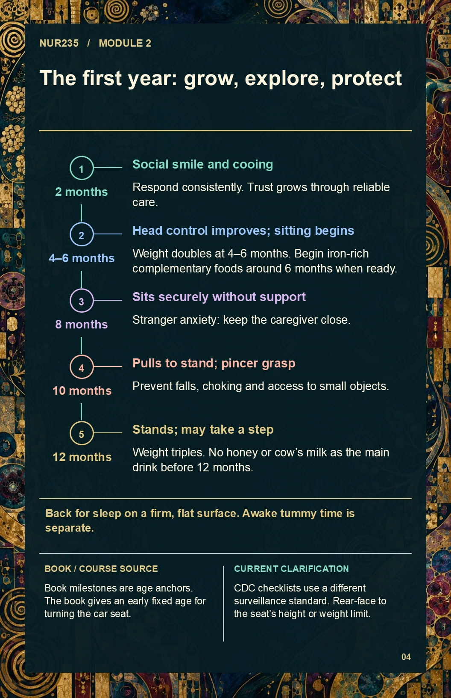
Read slide text and study notes
NUR235 / MODULE 2
The first year: grow, explore, protect
04
1
2 months
Social smile and cooing
Respond consistently. Trust grows through reliable care.
2
4–6 months
Head control improves; sitting begins
Weight doubles at 4–6 months. Begin iron-rich complementary foods around 6 months when ready.
3
8 months
Sits securely without support
Stranger anxiety: keep the caregiver close.
4
10 months
Pulls to stand; pincer grasp
Prevent falls, choking and access to small objects.
5
12 months
Stands; may take a step
Weight triples. No honey or cow’s milk as the main drink before 12 months.
Back for sleep on a firm, flat surface. Awake tummy time is separate.
BOOK / COURSE SOURCE
CURRENT CLARIFICATION
Book milestones are age anchors. The book gives an early fixed age for turning the car seat.
CDC checklists use a different surveillance standard. Rear-face to the seat’s height or weight limit.
Original study notes and source references
NUR235 content mastery infographic. Original native diagram by Codex. No Claude-created graphics.
High-level overview. The user-supplied module content reviews and textbook anchor the content. Book/course statements and current clarifications remain separate. Full prior wording is preserved below for study reference.
Some neurologic and musculoskeletal chapters are missing from the provided book extract. Available course sources and identified primary references supplement these gaps.
Infant growth and development
User module content reviews, NUR235
{"theories": {"book_chapter": 28, "text_lines": [38660, 38956], "supports": "Erikson stages and Piaget age/stage terminology; implications for teaching/play.", "opening_excerpt": "Provide oral stimulation by giving pacifiers; do not discourage thumb sucking."}, "infant-growth": {"book_chapter": 29, "text_lines": [39631, 39981], "supports": "Weight doubles at 4–6 months/triples at 1 year; textbook month-by-month motor/language anchors.", "opening_excerpt": "The physiologic changes that occur in the infant year reflect both the increasing maturity and growth of body organs."}, "infant-trust": {"book_chapter": 29, "text_lines": [40105, 40175], "supports": "Emotional/cognitive development, object permanence, trust.", "opening_excerpt": "Socialization, or learning how to interact with others, is an extensive phenomenon. One-month-old infants show they can differentiate between faces and other objects by studying a face or the picture of a face longer than other objects. They are calm and feed "}, "infant-safety": {"book_chapter": 29, "text_lines": [40271, 40379], "supports": "Falls, choking, burns, automobile and water safety; rear-facing age wording is outdated.", "opening_excerpt": "Q. A parent is worried about keeping their 2-month-old safe. “How can I prevent accidents at this age?” the parent asks."}, "infant-feed": {"book_chapter": 29, "text_lines": [40463, 40625], "supports": "Human milk/iron-fortified formula, complementary foods near 6 months, iron foods, no honey or cow milk as main drink before 12 months.", "opening_excerpt": "Feeding recommendations for infants from birth through 6 months are to provide human milk exclusively via breastfeeding or expression and stored in a bottle. Human milk is the ideal form of nutrition for infants. It provides all the necessary nutrients, protec"}, "infant-vaccine": {"book_chapter": 29, "text_lines": [39431, 39593], "supports": "Well-child assessment and the textbook vaccine table.", "opening_excerpt": "Height, weight, head circumference plotted on standard growth chart; physical examination"}, "toddler": {"book_chapter": 30, "text_lines": [41172, 41294], "supports": "Autonomy, parent observation, language concern at 2 years, slowed growth and appetite.", "opening_excerpt": "During the toddler period, the age span from 1 to 3 years, enormous changes take place in a child and, consequently, in a family. During this period, children accomplish a wide array of developmental tasks and change from largely immobile and preverbal infants"}, "preschool": {"book_chapter": 31, "text_lines": [41357, 41447], "supports": "Age3–5, participation through modeling/play, physical and developmental assessment; remainder unavailable in extraction.", "opening_excerpt": "The preschool period traditionally includes the years 3, 4, and 5. Although physical growth slows considerably during this period, personality and cognitive growth continue at a rapid rate. Caregivers may be unsure how much independence and responsibility for "}, "school-growth": {"book_chapter": 32, "text_lines": [41590, 41658], "supports": "School-age growth and onset/order of puberty.", "opening_excerpt": "The average annual weight gain for a school-aged child is approximately 3 to 5 lb (1.3 to 2.2 kg); the increase in height is 1 to 2 in. (2.5 to 5 cm). Children who did not lose a lordosis and knock-kneed appearance during the preschool period typically lose th"}, "school-thinking": {"book_chapter": 32, "text_lines": [41850, 41982], "supports": "Industry, concrete operations, conservation/classification and skill mastery.", "opening_excerpt": "Ideally, children enter the school-aged period with the ability to trust others and with a sense of self-respect. They can accomplish small tasks independently because they have gained a sense of autonomy. They should have practiced adult roles, learned to sha"}, "school-safety": {"book_chapter": 32, "text_lines": [42014, 42096], "supports": "Injury prevention and body safety teaching.", "opening_excerpt": "Teach children to avoid unsafe areas, such as train yards, grain silos, and back alleys."}, "school-health": {"book_chapter": 32, "text_lines": [42390, 42530], "supports": "Immunizations, dental care and health assessment; schedule contains outdated product/dose wording.", "opening_excerpt": "Check history and past records, inform caregiver about any risks and side effects, and administer immunization in accordance with healthcare agency policies."}, "school-stress": {"book_chapter": 32, "text_lines": [42790, 42865], "supports": "Stress, school difficulties and substance-use concerns.", "opening_excerpt": "Reproductive life planning measures and the principles of safer sex if appropriate to the cultural setting (see Chapters 5 and 6). Sexual orientation questions and concerns may arise at this time, and questions should be addressed honestly and openly."}, "adolescent-limit": {"book_chapter": 33, "text_lines": [43127, 43183], "supports": "Only opening case, objectives and preventive privacy goal are present; full chapter not available.", "opening_excerpt": "For additional ancillary materials related to this chapter, please visit the point."}, "assessment": {"book_chapter": 34, "text_lines": [43374, 43408], "supports": "Adolescent private interview; confidentiality must be qualified by safety/legal exceptions.", "opening_excerpt": "A second reason K.W.’s parent has brought the child to your ambulatory clinic is because of increased frequency and burning on urination."}, "exam-order": {"book_chapter": 34, "text_lines": [44020, 44046], "supports": "Assessment is adapted to age; least intrusive observations first, uncomfortable portions later.", "opening_excerpt": "Presented here are the components of a routine or general physical assessment. It is important to recognize what a “general” physical examination entails so you can interpret the extent of the assessment a child has received when the caregiver states, “My chil"}, "teaching": {"book_chapter": 35, "text_lines": [46729, 46945], "supports": "Teach-back, demonstration/return demonstration and development-specific communication.", "opening_excerpt": "Children have variable attention spans. Assess the learner and provide lessons in segments of 5–20 minutes. Ideally, the child should be well rested and well-nourished prior to the teaching."}, "hospital": {"book_chapter": 36, "text_lines": [48070, 48134], "supports": "Family presence, routines and protest/despair/detachment after separation.", "opening_excerpt": "Obtain any special information about the child that the parents think would make them more comfortable in the hospital."}, "procedures": {"book_chapter": 37, "text_lines": [49105, 49293], "supports": "Diagnostic/therapeutic modalities, consent and developmental planning; extracted chapter is incomplete.", "opening_excerpt": "Nursing Care of a Family When a Child Needs Diagnostic or Therapeutic Modalities"}, "med-dose": {"book_chapter": 38, "text_lines": [49350, 49578], "supports": "Measured kg weight, individual dose safety, assessment and fractional-dose example; reversed conversion typo at49352.", "opening_excerpt": "Most adults immediately grasp that taking a medicine you offer them will be important to relieve whatever symptoms they are experiencing from an illness. Because children do not necessarily have this same level of understanding, they may resist taking medicine"}, "med-route": {"book_chapter": 38, "text_lines": [49616, 49674], "supports": "Oral medication positioning, oral syringe and age-appropriate technique.", "opening_excerpt": "Children younger than 3 years are unable to swallow pills. After that age, the ability of children to swallow pills varies from one child to the next and is not age dependent. Typically, children older than 9 years can be offered tablets; however, some adolesc"}, "pain": {"book_chapter": 39, "text_lines": [50756, 50862], "supports": "Behavioral tools, FLACC, child self-report FACES/numeric and combined comfort/analgesia.", "opening_excerpt": "Each area of concern is scored from 0 to 2. Infants with a total score of 4 or more are most likely to be in pain and need interventions to reduce discomfort. The scale cannot be used with infants who are intubated or paralyzed for ventilator assistance becaus"}, "nosebleed": {"book_chapter": 40, "text_lines": [52143, 52155], "supports": "Sit upright/forward; continuous pressure over soft nose for about10min; evaluate persistent/recurrent bleeding.", "opening_excerpt": "Epistaxis (nosebleed) is extremely common in children and usually occurs from trauma or irritation such as picking at the nasal mucosa. Dry air can cause mucous membranes to become dry and susceptible to cracking and bleeding. Epistaxis may also occur after st"}, "hiv": {"book_chapter": 42, "text_lines": [55531, 55664], "supports": "HIV CD4 mechanism, infection risks, family coping; treatment specifics need current NIH guidance.", "opening_excerpt": "HIV is a slowly replicating retrovirus and has at least two main divisions, HIV-1 and HIV-2, followed by a variety of further subtypes. The virus acts by attacking the lymphoreticular system, in particular CD4-bearing helper T lymphocytes. The virus enters the"}, "allergy": {"book_chapter": 42, "text_lines": [56017, 56109], "supports": "Anaphylaxis manifestations, immediate IM epinephrine, emergency help and recurrent reaction risk.", "opening_excerpt": "Anaphylactic shock (anaphylaxis) is an immediate, life-threatening, type I hypersensitivity reaction that occurs after exposure to an allergen in a previously sensitized child. Anaphylaxis can be caused by exposure to foods such as milk, egg, peanut, and tree "}, "eczema": {"book_chapter": 42, "text_lines": [56307, 56475], "supports": "Atopic dermatitis itch–scratch cycle, distribution and skin care.", "opening_excerpt": "Atopic dermatitis is a highly pruritic, chronic inflammatory skin disease that is often the first manifestation of allergic disease. It is a common disorder that affects 15% to 20% of children (Chopra et al., 2017)."}, "contact": {"book_chapter": 42, "text_lines": [56561, 56585], "supports": "Allergic contact dermatitis/typeIV, exposure pattern and removal of allergen.", "opening_excerpt": "Contact dermatitis is an example of a delayed or type IV hypersensitivity response; it is a reaction to skin contact with an allergen (a substance irritating to the child only with prior sensitization). The first reaction is generally erythema, followed by the"}, "rubella": {"book_chapter": 43, "text_lines": [57521, 57549], "supports": "Rubella syndrome; printed incubation/communicability statements are unreliable.", "opening_excerpt": "Incubation period: Generally, 14 days within a range of 16 to 183 days (AAP, 2018)"}, "measles": {"book_chapter": 43, "text_lines": [57551, 57593], "supports": "Cough/coryza/conjunctivitis, Koplik spots and descending rash.", "opening_excerpt": "Incubation period: 8 to 12 days from time of exposure to onset of any symptoms (AAP, 2018), with a range from 7 to 21 days (Drutz, 2016)"}, "varicella": {"book_chapter": 43, "text_lines": [57595, 57643], "supports": "Vesicles in crops, infection/complication risks; immune-globulin timing differs from current guidance.", "opening_excerpt": "Incubation period: 10 to 21 days, with the most common incidence at 14 to 16 days following exposure (Kennedy & Gershon, 2018)"}, "fifth": {"book_chapter": 43, "text_lines": [57677, 57704], "supports": "Parvovirus B19, slapped-cheek/lacy eruption and host-specific risk.", "opening_excerpt": "Incubation period: Most commonly between 4 and 14 days and can be as long as 21 days (AAP, 2018)"}, "mono": {"book_chapter": 43, "text_lines": [58009, 58048], "supports": "EBV saliva transmission, pharyngitis/adenopathy/fatigue and splenic risk.", "opening_excerpt": "Incubation period: Incubation period in adults and adolescents is 4 to 7 weeks, with a shorter incubation period in children (Fugl & Andersen, 2019)."}, "scarlet": {"book_chapter": 43, "text_lines": [58221, 58249], "supports": "GAS toxin-associated pharyngitis, sandpaper rash and antimicrobial treatment.", "opening_excerpt": "Incubation period: 2 to 5 days for streptococcal pharyngitis (AAP, 2018)"}, "impetigo": {"book_chapter": 43, "text_lines": [58251, 58280], "supports": "Staphylococcal/streptococcal superficial infection with honey crusts.", "opening_excerpt": "Causative agent: Beta-hemolytic streptococcus, group A or Staphylococcus aureus including methicillin-resistant Staphylococcus aureus (MRSA) (to be discussed in the subsequent section)"}, "pertussis": {"book_chapter": 43, "text_lines": [58365, 58417], "supports": "Paroxysmal cough, infant risk and treatment; immunity and isolation wording need updating.", "opening_excerpt": "Mode of transmission: Highly contagious by direct or indirect contact"}, "lice": {"book_chapter": 43, "text_lines": [58587, 58647], "supports": "Pediculosis and family teaching; avoid stigma about hygiene.", "opening_excerpt": "Small, white flecks on hair shaft (nits or eggs of lice); extreme pruritus"}, "pinworm": {"book_chapter": 43, "text_lines": [58649, 58655], "supports": "Nocturnal perianal itching, tape test and household hygiene; text omits repeat dose.", "opening_excerpt": "Pinworms are small, white, threadlike worms that live in the cecum. After ingestion of the egg, the mature worms develop over a period of 2 months in the cecum. The mature female pinworm then migrates out of the anus to deposit eggs on the skin in the anal and"}, "tinea": {"book_chapter": 43, "text_lines": [58675, 58705], "supports": "Tinea skin/scalp distinctions and antifungal treatment.", "opening_excerpt": "Fungi are larger than bacteria; some are unicellular (yeasts), but, generally, they are multicellular (molds). Deep mycoses invade internal organs. Respiratory transmission is by the inhalation of spores. Subcutaneous mycoses invade the skin, subcutaneous tiss"}, "transfusion": {"book_chapter": 44, "text_lines": [59254, 59340], "supports": "Transfusion setup, monitoring, reaction symptoms/stop action; printed AHTR label is inaccurate.", "opening_excerpt": "Transfusions of blood or its products are commonly used in the treatment of blood disorders and may include whole blood, packed RBCs, washed RBCs (as much “foreign” matter is removed as possible to reduce the possibility of an antagonistic reaction), plasma, p"}, "iron": {"book_chapter": 44, "text_lines": [59580, 59678], "supports": "Iron deficiency risks, low hemoglobin indices, diet and iron teaching.", "opening_excerpt": "Although the incidence of iron-deficiency anemia is decreasing in the United States due to improved infant nutrition, it is still the most common anemia of infancy and childhood, occurring whenever the intake of dietary iron is inadequate. Without adequate iro"}, "sickle": {"book_chapter": 44, "text_lines": [59738, 59974], "supports": "HbS vaso-occlusion/hemolysis, pain, sequestration/aplastic crises, hydration and analgesia.", "opening_excerpt": "Sickle cell anemia is an autosomal recessive inherited disorder carried on the beta chain of hemoglobin; the amino acid valine takes the place of the normally appearing glutamic acid. With this, the erythrocytes become characteristically elongated and crescent"}, "hemophilia": {"book_chapter": 44, "text_lines": [60258, 60318], "supports": "FactorVIII versusIX, X-linked inheritance and hemarthrosis.", "opening_excerpt": "Hemophilias are inherited disorders of blood coagulation. There are numerous types, each involving a deficiency of a different blood coagulation factor."}, "conjunctivitis": {"book_chapter": 50, "text_lines": [67992, 68042], "supports": "Conjunctivitis differential; the same content is duplicated earlier at66629–66679.", "opening_excerpt": "Inflammation of the conjunctiva; causes are numerous, including ophthalmia neonatorum (exposure to gonococcus bacillus; see Chapter 26) and bacterial, viral, and fungal organisms"}, "burns": {"book_chapter": 52, "text_lines": [70007, 70241], "supports": "Burn depth/area, ABCs, temperature/fluid/pain/infection and nutrition.", "opening_excerpt": "Burns are injuries to body tissue caused by excessive heat (greater than 104°F [40°C]). Burns are the second most common unintentional injury seen in children 1 to 4 years of age and the third most common cause of injury in children 5 to 14 years of age. Every"}, "oncology-care": {"book_chapter": 53, "text_lines": [71294, 71440], "supports": "Mucositis, infection, treatment-related toxicity and family care.", "opening_excerpt": "Children receiving long-term corticosteroid (e.g., dexamethasone or prednisone) therapy develop a typical “moon face,” red cheeks, and a stocky build. Like the loss of hair, a cushingoid appearance can be devastating to children or parents, the final insult in"}, "leukemia": {"book_chapter": 53, "text_lines": [71472, 71610], "supports": "Marrow blast proliferation causes anemia, infection risk and low platelets; diagnostic/treatment priorities.", "opening_excerpt": "Leukemia is the distorted and uncontrolled proliferation of WBCs (leukocytes) and is the most frequently occurring type of cancer in children."}, "brain": {"book_chapter": 53, "text_lines": [71716, 71906], "supports": "Brain tumor location, ICP/neurologic changes and surgery-specific postoperative care.", "opening_excerpt": "Brain tumors are the second most common form of cancer and the most common solid tumor in children. Tumors tend to occur between 1 and 10 years of age, with 5 years being the peak age of incidence. In children, brain tumors tend to occur at the midline in the "}, "wilms": {"book_chapter": 53, "text_lines": [72098, 72118], "supports": "Renal mass, hematuria/hypertension, imaging and nephrectomy-based treatment.", "opening_excerpt": "Nephroblastoma (Wilms tumor) is a malignant tumor that rises from the metanephric mesoderm cells of the upper pole of the kidney (Malkan et al., 2015). It accounts for 20% of solid tumors in childhood, and overall survival rates are greater than 90%. It may oc"}, "abuse": {"book_chapter": 55, "text_lines": [72856, 72958], "supports": "Maltreatment assessment, child protection, objective documentation and family concerns.", "opening_excerpt": "When obtaining a history, ask caregivers to account for any injury to a child’s body. Remember, however, that most childhood injuries are the result of unintentional injuries caused by the child’s inability to distinguish safe situations from dangerous ones or"}}
{"sleep": {"url": "https://www.aap.org/en/patient-care/safe-sleep/", "title": "AAP safe sleep"}, "carseat": {"url": "https://www.nhtsa.gov/vehicle-safety/car-seats-and-booster-seats", "title": "NHTSA child restraint recommendations"}, "milestones2": {"url": "https://www.cdc.gov/act-early/milestones/2-years.html", "title": "CDC milestones by2years"}, "milestones3": {"url": "https://www.cdc.gov/act-early/milestones/3-years.html", "title": "CDC milestones by3years"}, "milestones4": {"url": "https://www.cdc.gov/act-early/milestones/4-years.html", "title": "CDC milestones by4years"}, "milestones5": {"url": "https://www.cdc.gov/act-early/milestones/5-years.html", "title": "CDC milestones by5years"}, "vaccine": {"url": "https://www.cdc.gov/vaccines/hcp/imz-schedules/child-adolescent-age.html", "title": "CDC age schedule, page labels its addendum July2,2025"}, "aap2026": {"url": "https://publications.aap.org/pediatrics/article/157/3/e2025075754/206175/Recommended-Childhood-andAdolescent-Immunization", "title": "AAP2026 childhood/adolescent immunization policy"}, "meds": {"url": "https://www.healthychildren.org/English/safety-prevention/at-home/medication-safety/Pages/Using-Liquid-Medicines.aspx", "title": "AAP liquid medication measurement"}, "sickle-current": {"url": "https://www.nhlbi.nih.gov/sites/default/files/publications/56-364NFULL.pdf", "title": "NHLBI sickle-cell expert report: oxygen/fluids/transfusion in VOC"}, "sickle-ash": {"url": "https://doi.org/10.1182/bloodadvances.2020001851", "title": "ASH2020 sickle-cell pain guideline"}, "isolation": {"url": "https://www.cdc.gov/infection-control/hcp/isolation-precautions/appendix-a-type-duration.html", "title": "CDC isolation appendix, updated September11,2026"}, "pinworm-current": {"url": "https://www.cdc.gov/pinworm/hcp/clinical-overview/index.html", "title": "CDC pinworm treatment"}, "lice-current": {"url": "https://www.cdc.gov/lice/caring-head/", "title": "CDC head lice and school attendance"}, "pinkeye": {"url": "https://www.cdc.gov/conjunctivitis/treatment/", "title": "CDC conjunctivitis treatment"}, "acne": {"url": "https://www.aad.org/member/clinical-quality/guidelines/acne", "title": "AAD acne guideline"}, "hiv-current": {"url": "https://clinicalinfo.hiv.gov/en/guidelines/pediatric-arv/regimens-recommended-initial-therapy-antiretroviral-naive-children", "title": "NIH pediatric antiretroviral therapy"}, "blood": {"url": "https://www.isbtweb.org/resources/educational-modules-on-clinical-use-of-blood/adverse-effects-of-transfusion.html", "title": "ISBT adverse transfusion effects"}, "wilms-current": {"url": "https://medlineplus.gov/ency/article/001575.htm", "title": "MedlinePlus Wilms tumor and careful handling"}}
Core development
Erikson: trust versus mistrust → consistent, responsive care.
Piaget: sensorimotor → learning through movement and senses. Emerging object permanence supports peek-a-boo.
Stranger/separation anxiety is expected later in infancy. Approach gradually with the caregiver close.
Textbook anchors for the exam
Birth weight doubles at 4–6 months and triples by 1 year. Follow weight, length and head-circumference curves.
2 months: social smile/cooing. 4 months: improved head control. 6 months: begins sitting.
8 months: sits securely without support. 10 months: pulls to stand and pincer grasp. 12 months: stands. Some take a step.
Assessment and parent teaching
Count respirations while quiet. Assess feeding, wet diapers, interaction and work of breathing.
Loss of an acquired skill, persistent poor growth, marked asymmetry or caregiver concern needs follow-up.
Talk, read, sing and offer supervised awake tummy time. Use safe toys too large to swallow.
Keep textbook ages labeled. CDC milestone checklists describe skills achieved by most children and use different surveillance thresholds; they are not an interchangeable table of average ages. The book lists a first word at9months and four words at12months; do not silently portray those as current screening cutoffs.
Recall: Why does an 8-month-old cry when the nurse approaches?
Answer: Stranger anxiety can be developmentally expected; use the caregiver as the secure base.
Infant nutrition and safety
Nutrition and growth
Human milk or iron-fortified formula is the main nutrition in the first year. Introduce complementary foods around 6 months when ready.
Include iron-rich foods. Discuss prescribed iron/vitamin D needs. No honey before 12 months. No cow’s milk as the main drink before 12 months.
Use age-appropriate textures, seated supervised feeding and choking-safe food sizes. Never prop a bottle.
Safety that matches new skills
Back for every sleep. Firm, flat sleep surface with no loose bedding or soft objects. Awake tummy time is separate from sleep.
Rear-facing car seat until the child reaches the seat’s rear-facing height or weight limit. Use the back seat.
Expect rolling before the first fall: protect changing surfaces, stairs, hot liquids, medicines, cords and water access. Never shake an infant.
Health promotion
Review immunization records at every visit. The course’s infant table emphasizes the 2/4/6-month series and vaccines beginning near the first birthday.
Support dental care with tooth eruption, well-child follow-up and screening according to age/risk.
For prolonged crying, assess illness and feeding first. If overwhelmed, place the infant safely in the crib and obtain support.
Source difference: textbook line40299 allows rear-facing only to6–12months or manufacturer limits; current NHTSA guidance keeps the child rear-facing to the seat limit. Vaccine timings in this course table are not a complete current schedule; name the schedule/year when showing exact intervals.
Recall: The infant falls asleep in a swing. What changes?
Answer: Move the infant to a firm, flat sleep surface on the back as soon as possible.
Book and current-guidance comparisons
{"topic": "Conversion typo", "old": "1 lb = 2.2 kg", "new": "Show 1kg≈2.2lb and kg=lb÷2.2; note the reversed source conversion explicitly.", "sources": [{"url": "https://www.healthychildren.org/English/safety-prevention/at-home/medication-safety/Pages/Using-Liquid-Medicines.aspx", "title": "AAP liquid medication measurement"}], "evidence": [49352, 49352]}
{"topic": "Rear facing", "old": "rear-facing until6–12months or manufacturer limits", "new": "Keep rear-facing until the height/weight limit of the rear-facing seat.", "sources": [{"url": "https://www.nhtsa.gov/vehicle-safety/car-seats-and-booster-seats", "title": "NHTSA child restraint recommendations"}], "evidence": [40299, 40299]}
Weight conversion
Book/course wording: The source prints “1 lb = 2.2 kg.”
Current clarification: This conversion is reversed. 1 kg ≈ 2.2 lb. Convert pounds to kilograms by dividing by 2.2.
Rear-facing car seats
Book/course wording: Rear-facing until 6–12 months or the manufacturer’s limits.
Current clarification: Keep the child rear-facing until reaching the seat’s rear-facing height or weight limit, rather than changing direction at a fixed infant age.
{"topic": "Milestones", "old": "Month-by-month textbook ages, including first word9mo and four words12mo", "new": "Label textbook anchors. Current CDC checklists use75%-attainment surveillance thresholds; do not silently merge the tables.", "sources": [{"url": "https://www.cdc.gov/act-early/milestones/2-years.html", "title": "CDC milestones by2years"}, {"url": "https://www.cdc.gov/act-early/milestones/3-years.html", "title": "CDC milestones by3years"}, {"url": "https://www.cdc.gov/act-early/milestones/4-years.html", "title": "CDC milestones by4years"}, {"url": "https://www.cdc.gov/act-early/milestones/5-years.html", "title": "CDC milestones by5years"}], "evidence": [39825, 39981]}
{"topic": "Vaccines", "old": "DTaP at11–12years; automatic three-dose HPV series", "new": "Use Tdap for the adolescent product and consult the expressly named schedule for dose/interval details; keep course table separate. CDC directly opened page says2025; AAP2026policy also available.", "sources": [{"url": "https://www.cdc.gov/vaccines/hcp/imz-schedules/child-adolescent-age.html", "title": "CDC age schedule, page labels its addendum July2,2025"}, {"url": "https://publications.aap.org/pediatrics/article/157/3/e2025075754/206175/Recommended-Childhood-andAdolescent-Immunization", "title": "AAP2026 childhood/adolescent immunization policy"}], "evidence": [42398, 42460]}
Developmental milestones
Book/course wording: Month-by-month ages include a first word at 9 months and four words at 12 months.
Current clarification: These are textbook age anchors. Current CDC surveillance checklists use milestones reached by at least 75% of children by the stated age. The tables serve different purposes.
Adolescent vaccines
Book/course wording: The source lists DTaP at 11–12 years and a three-dose HPV series for everyone.
Current clarification: Tdap is the routine adolescent booster at 11–12 years. HPV dose number and intervals depend on the age at series initiation, immune status and the explicitly dated schedule being used.
Website infographic
34 / 254Piaget vs Erikson
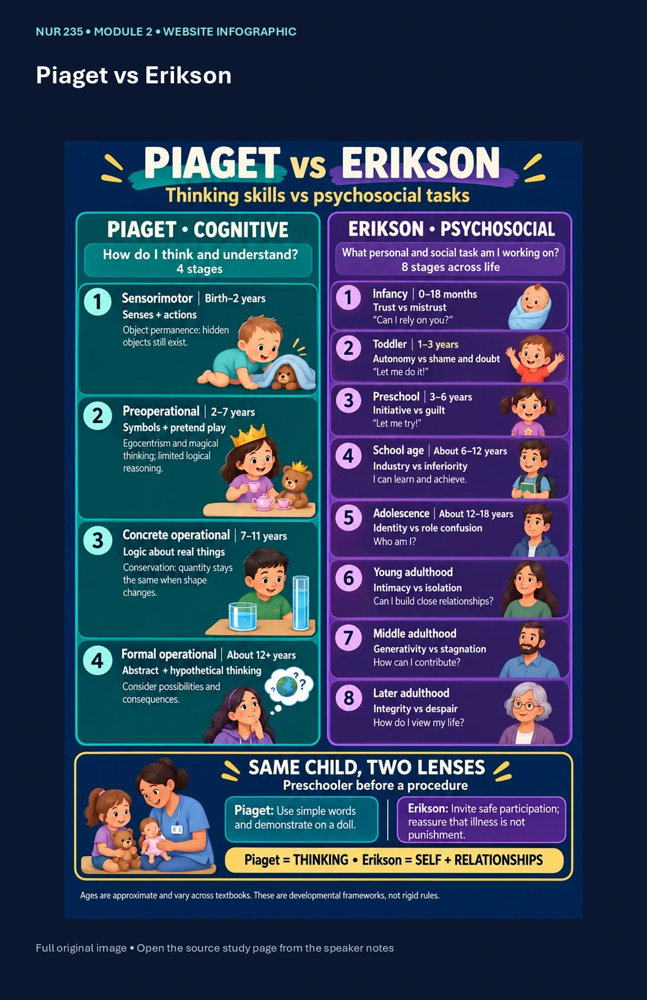
Read slide text and study notes
NUR 235 • MODULE 2 • WEBSITE INFOGRAPHIC
Piaget vs Erikson
Full original image • Open the source study page from the speaker notes
Website infographic
35 / 254Childhood Vaccines: Age Matters
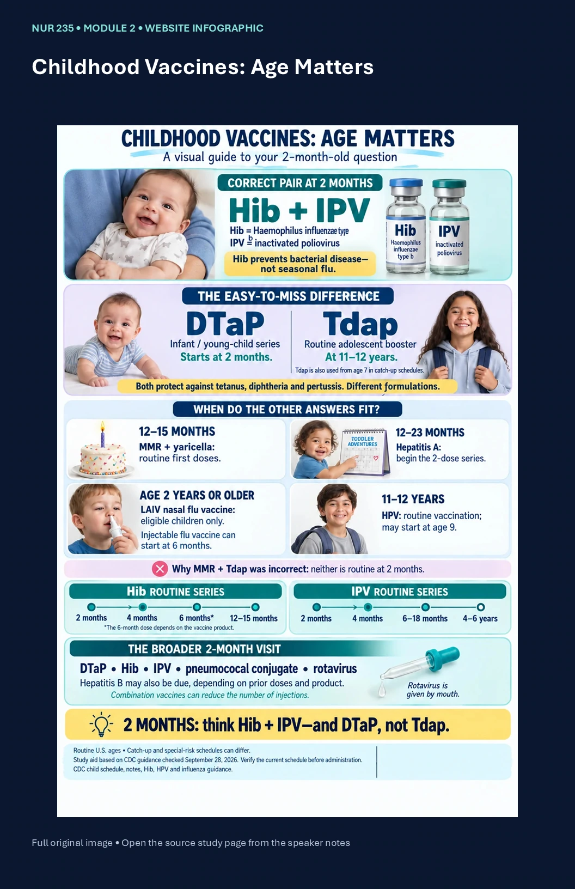
Read slide text and study notes
NUR 235 • MODULE 2 • WEBSITE INFOGRAPHIC
Childhood Vaccines: Age Matters
Full original image • Open the source study page from the speaker notes
Website infographic
36 / 254Well-Child Visits
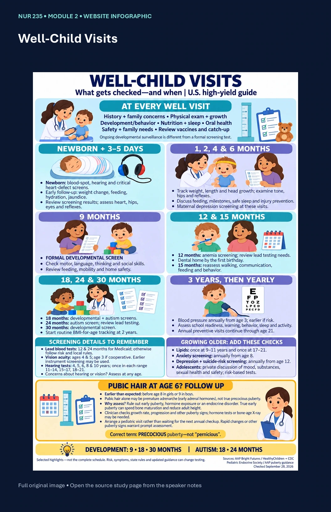
Read slide text and study notes
NUR 235 • MODULE 2 • WEBSITE INFOGRAPHIC
Well-Child Visits
Full original image • Open the source study page from the speaker notes
Simple Nursing original · Module 2
37 / 254Simple Nursing: Infant - Assessment of Growth & Development

Read handout text
Assessment of Growth and Development
of the Infant
Head should measure 13.75 cm at birth
-Posterior fontanelle should close by 2nd month
-Anterior fontanelle should close in 12-18 months
Height and weight
- In the first 6 months, birth weight doubles and baby should grow 6 inches
- By 12 months birth weight should triple and baby should grow 10-12 in.
Skeleton
- Is made up of cartilage at 3 month gestation and continues to ossify and grow
throughout life.
- Bone age, injury, abuse or nutritional deficits can be determined by X-Ray.
Circulation
- Hemoglobin and RBCs decrease when respiratory system takes over until
3 months of age
Neuro
- Nerve cells grow and coordination begins in an orderly pattern.
• Jerky quivering arm movements,
• Brings hands to mouth, makes fists
• Head flops back if unprepared
• Strong reflexes
• 5-8 feedings per day - 3 meals 2 snacks
• Progresses from sleeping 20 hours a day to 10-12 hours at night
and two naps by 12 months, place awake child in crib to sleep
• 0-1 month: extensive sleep, dependent, eye contact
• 0-3 months: smiles and fixes on faces, solitary play
• 3-6 mo: enjoys peekaboo, smiles at familiar faces
• 6-12 mo: knows name, gives and takes objects, understands
easy commands.
• 0-3 mo: Cries, grunts and Coo
• 0-6 mo: Babbling, vowels, half consonants
• 12 mo: 1-2 words, imitation, responding to simple commands
• 0-1 mo: general tension
• 1 mo: happy and sad emotions
• 6 mo: separation anxiety
• 6-12 mo: stranger anxiety, shows curiosity by 12 months.
Physical Milestones
Psychological Milestones
Emotional Growth
Social Milestones
Language
Nutrition
• Focuses 8-12 in away
• Eyes wonder and cross
• Likes black and white/ high contrast patterns.
• Prefers human face to other patterns
• Hearing is fully mature, may turn toward sound
• Likes sweet smells, dislikes sour
• Likes soft sensations
• Likes to be handled gently
Rapid growth causes a need for the greatest amount of nutrients
• 4-6 mo - 12 mo: breast milk or commercial formula, introduction of
solid foods. One food at a time starting with veggies.
• You may need to supplement Vit C/D iron, fluoride.
• 6 mo: iron-rich foods are needed to supplement
• 7-8 mos: self-feeding begins by grasping and bringing food to mouth.
Ends with use of utensils
• WIC program helps children and women get proper nutrition when
they qualify
Well checkup schedule
• Second week of life
• 2, 4, 6, 9 months of age.
Vitals
• HR: 70 resting - 180 awake and crying
(accurate HR is taken apically)
• RR: 30 but can range from
20-50 with increase or decrease of activity.
• BP: 85/60 mmHg
• Temp: 98.6
Age Theorist Stage Description Nursing Care
Birth -
18 months
1st year
Birth - 2 yrs
Sigmund Freud
Erik Erikson
Jean Piaget
Oral
Trust vs
mistrust
Sensorimotor
stage
Pleasure center
in mouth
Depends on parents
to meet needs to
create trust
Coordinates sensory
experiences with
physical action
Encourage
self-feeding.
Avoid putting objects
in mouth
Encourage bonding
and family
relationships
Plan tactile activities
with use of colorful
materials
Simple Nursing original · Module 2
38 / 254Simple Nursing: Key points & Infants part 1

Read handout text
Pediatric Physical Exam I
Pediatrics: Assessment
#1 Take the child’s weight & height
#2 Use a toy to play with the child
#3 Obtain vital signs
#4 Interact with the parent first
#5 Listen to heart & lung sounds
TOP Missed NCLEX Question
While preparing to perform a physical
assessment on a 22-month-old child, the
nurse should complete the following
actions in which order?
#1 #2
#3 #4
#5
14kg
FIRST
Unordered Options Ordered Response
#1 Take the child’s weight & height
#2 Use a toy to play with the child
#3 Obtain vital signs
#4 Interact with the parent first
#5 Listen to heart & lung sounds
4 KEY POINTS
Interact with parents 1st & child 2nd 1.
Encourage the parent
to be involved with the child
2.
Communicate with age appropriate
“simple language”
3.
Keep medical equipment out of sight4.
Invasive procedures always LAST!
(Ex: ear exam, BP cuff)
5.
NCLEX TIP
LASTFIRST
38.5
ATI Question
physical examination of a toddler ... appropriate
nursing intervention?
Keep the medical equipment out of the
toddler’s sight until its needed
?
Infants 0-12 Months
Growth
Height
1 inch per month
50% increase at 12 months
6 month = 12 lb (5.4 kg)
12 months = 18 lb (8.2 kg)
1.
Weight 2.
NCLEX TIPDoubles at 6 months
Triples at 12 months
Example: Newborn baby weighs
6 lb (2.7kg)
TOP Missed NCLEX Question
Which assessment finding should
the nurse report to the health
care provider?
6-month-old child with
birth weight of 8 lb 5 oz (3.8 kg)
who now weighs 14 lb 4 oz (5.4 kg)
14.4lbs
1
HCP
DELAYED GROWTH
2.7kg 5.4kg
6 months 12 months
8.2kg
Kaplan Question
8-month-client ... possible delay in
growth and development?
“My child has almost doubled the
birth weight.”
3.2kg 6.1kg
8 month old6 month old
6.1kg
x2
Simple Nursing original · Module 2
39 / 254Simple Nursing: Infants part 2

Read handout text
Pediatric Physical Exam II
Pediatrics: Assessment
Nutrition
Breast milk or iron fortified formula
(No cow’s milk)
Solids begin at 4 - 6 months
ONLY 1 NEW food per week NCLEX TIP
At birth, the head circumference is slightly bigger than the
chest but equals in size around 12 to 18 months. Fontanels
on the top of the head should be flat & only slightly pulsate
when the baby cries, coughs, or lies flat. These fontanels
should never be bulging at rest or sunken! This is a priority!
PRIORITY
Saunders Question
3 month old ... monitoring for signs of increased
intracranial pressure… anterior fontanel is soft
and flat… most appropriate action?
Document the finding
Head
Fontanelles:
Closure of Fontanelles NCLEX TIP
HESI ATI
Bulging (at rest): Meningitis, Increased ICP
Sunken: Dehydration, FVD
Posterior fontanelle by 2 months
Anterior fontanelle by 12 - 18 months
2 months old
12-18 months old
#1
#2
Posterior Prior
Anterior After
4-6 months of age
T eeth
First tooth: 6-10 months
(lower central incisor)
Signs of teething:
Drooling & irritability
Intervention: T eeth care
with washcloth
6 - 10 months
Infants 0-12 Months
S M T W T F S
1 2 3 4 5
6 7 8 9 10 11 12
13 14 15 16 17 18 19
20 21 22 23
27 28 29 30
24 25 26
S M T W T F S
1 2 3 4 5
6 7 8 9 10 11 12
13 14 15 16 17 18 19
20 21 22 23
27 28 29 30
24 25 26
S M T W T F S
1 2 3 4 5
6 7 8 9 10 11 12
13 14 15 16 17 18 19
20 21 22 23
27 28 29 30
24 25 26
Only 1 NEW food per week
Respiratory Distress
Excessive Crying NCLEX TIP
Nasal flaring
Accessory muscle use
Abdominal breathing
Nonproductive cough
Assess infants pattern, frequency,
& quality of crying
High pitched = increased ICP
or brain damage
Pattern
Frequency
Quality
Assessments
Interventions
SAVED
1st - Assess
2nd - Interventions
Simple Nursing original · Module 2
40 / 254Simple Nursing: Infants part 3 & Toddlers

Read handout text
Pediatric Physical Exam III
Pediatrics: Assessment
Infants 0-12 Months
Toddlers 1-3 years
Babinski reflex: 0 - 12 months1.
2.
3.
Rooting (sucking) reflex: 0 - 4 months
T onic neck reflex: 0 - 4 months
Moro reflex: 0 - 4 months
Stepping reflex: 1 month +
Palmar grasp: 0 - 3 months
Plantar grasp: 0 - 8 months
Infant reflexes
T op 3 T ested
Kaplan Question
9-month-old ... the nurse expects which reflex?
Babinski
HESI Questions
Q1: What is the reflex assessed by stroking the
outer sole of the foot?
Q2: How will the nurse assess the rooting reflex?
Babinski
By stroking the cheeks of the newborn
ATI Question
2 month old infant … placed on their back &
head turned to one side. The infant responds
by flexing the arm on the opposite side and
extending the arm that is pointing in the same
direction she is facing. Which of the following
best describes this reflex?
T onic neck reflex
2 months old
T onic neck reflex
GI assessment
NCLEX TIP
Bloody mucus in a
newborn's diaper?
Continue to monitor the color,
amount, & consistency
HESI Question
What color stool would the nurse
explain to expect on the third day
of life?
Y ellowish brown-colored stools
3rd day of life
Growth
Height
3 inches per year
1.
Weight 2.
NCLEX TIP
Average yearly gain of 4 - 6 lb (1.8 - 2.7 kg)
At 30 months (2.5 yrs) weight should be
4 times greater than birth weight
TOP Missed NCLEX Question
39-month-old child. Which finding
requires immediate follow up with
the primary care provider?
Weight is 6 times greater than
birth weight
Diet
12.8kg
3.2kg
30 months
x4
Head circumference increases by 1 inch (2.5 cm) during
the 2nd year, but then slows by half until age 5.
Chest circumference exceeds abdominal circumference
by age 2. The body begins to sprout up like a green plant
= taller & more slender appearance.
2.5cm 1.25cm
2 years old 5 years old
Nutrition
Milk: 16 - 24 oz per day (2 - 3 cups)
Juice: 4 - 6 oz per day
LIMIT
16-24 oz/day 4-6 oz/day
Simple Nursing original · Module 2
41 / 254Simple Nursing: Immunization - Dates & Types

Read handout text
Immunization - Dates & T ypes
Pediatrics: Infectious Disease
Basic Concepts
Immunizations, also called vaccines, are little doses of big dangerous viruses. It helps
the body develop early immunity, so that it can form a defense system early in age.
Immunizations are given to children, as the primary means of protecting the body
against deadly communicable diseases like:
• Polio,
• Hepatitis,
• Pneumonia,
• Varicella,
• Measles,
• Mumps,
• Rubella (MMR)
ATI Question
Communicable diseases...
best primary prevention
strategy?
● Obtaining scheduled
immunizations
HepB
DTaP
Hib
IPV
RV
PCV13
Flu
MMR
Varicella
HepA
NCLEX
TEST TIP
• Mild fever
• Redness & swelling at injection site
(Apply cold pack to site)
Side NOTE:
If the client has a common cold/minor illness?
Yes still give vaccine
NCLEX• Fever above 102 F (38.9 C)
• Febrile seizures!
Ask parents calling in:
“What is your child’s temp right now?”
Administer acetaminophen
Common
(expected)
Severe!
(NOT expected)
Over 102
Vaccine
Vaccine
>102ᴼF
Vaccine
Top Tested Key Points
NO LIVE Vaccines! Low Immune System
NCLEX TIP• Varicella-zoster (chickenpox)
• Influenza (flu shot)
• MMR: measles, mumps, rubella
• Rotavirus
NCLEX TIP• Cancer: Leukemia, Lymphoma etc.
• Chemotherapy & Radiation
• Immunosuppressants (Methotrexate)
• IVIG (immunoglobulin therapy)
Side Note: Pregnant clients too
Varicella Influenza
MMR
vaccine
Rotavirus
Methotrexate
IVIG
*Pregnant mothers don't have a low immune system
but we don't give any live vaccines
T op Missed NCLEX Questions
The nurse should clarify with the provider before administering which vaccination?
Varicella-zoster
vaccine for client
recently diagnosed
with leukemia
Varicella
HESI Question
Contraindicated for children
who are immunocompromised?
Select all that apply.
● Varicella
● Measles, mumps, and
rubella (MMR)
Saunders Question
child receiving long-term
immunosuppressive therapy…
which vaccine is contraindicated?
● MMR
Varicella
MMR
vaccine
Saunders Question
The student should question whether to administer
immunizations to a child with which condition?
● A severe febrile illness
HESI Question
Varicella and measles, mumps, and rubella
(MMR) vaccines?
● Children can be vaccinated when they have
the common cold
ATI Question
● Advise the parent to have the child seen by
the pediatrician but the immunizations will
need to be postponed until the baby is well
Six month old infant scheduled for routine
immunizations ... fever of 103 degrees… nurse’s
BEST response is to:
Reaction After Vaccination
Simple Nursing original · Module 2
42 / 254Simple Nursing: Immunization - Dates & Types

Read handout text
Immunization - Dates & T ypes II
Pediatrics: Infectious Disease
Immunization Schedule
Immunization Age of child
HepB
Hepatitis B
0, 2, 6 months
(0, 1-2 months, 6-18 months)
RV
Rotavirus 2, 4, 6 months
IPV
Inactivated Polio Vaccine
2, 4, 6 months
4 - 6 years
PCV
Pneumococcal Vaccine 2, 4, 6, 12 months
Hib
Haemophilus influenzae type B 2, 4, 6, 12 months
DTap
Diphtheria-T etanus-Pertussis
2, 4, 6, 12 months
4 - 6 years
ATI
TOP TESTED
HESI Questions
12 year old child who has not received the hepatitis B vaccine?
● The three-dose series would be started at this time
HESI Questions
HPV vaccine is to prevent what?
● Cervical cancer
Kaplan Questions
6-month old infant … at 2 months of age received the first DTaP.
Which action by the nurse is most appropriate?
● Give second DTaP
Influenza
Flu shot
Begins at 6 months
& Annual flu shot there after
MMR
Measles, Mups, Rubella
1 & 4 years (12-18 mo. & 4-6 yrs.)
VAR
Varicella 1 & 4 years (12-18 mo. & 4-6 yrs.)
HepA
Hepatitis A
1 - 2 years (6 mo. after 1st dose)
2 Doses by 2 yrs old
HPV
Human Papillomavirus
9 - 12 years (Boys & Girls)
MCV
Meningitis “Meningococcal”
11 - 12 years
16 - 18 years booster
Age
ATI
Memory Trick
Memory Trick
Immunization
Birth Hep B at Birth
2 months B DR. HIP
4 months Same 2 months
(no Hep B)
DR. HIP
6 months Same as 2 months B DR. HIP
· Influenza (flu shot) 1st dose
B DR. HIP
Flu
11 - 12 yrs. Meningitis, Influenza, TdaP, HPVMITH
16 - 18 yrs. Meningitis booster & Annual flu shotMen Flu
12 months
(1 year)
MAD HPV
“I FOUR-got the Hep B”
Hepatitis B (HepB) 0,2,6 monthsB
DTaP Diphtheria-T etanus-PertussisD
RV RotaVirusR
Hib Haemophilus influenzae type BH
IPV Inactivated polio vaccineI
PCV Pneumococcal vaccineP
M MMR (1 & 4 years)
A Hepatitis A 2 doses by 2 years (6 mo. btwn doses)
DTaPD
HibH
PCVP
V Varicella (1 & 4 years)
4 - 6 yrs. Very DIM VERY
D
I
M
Varicella (1 & 4 years)
DTaP (2,4,6,12 mo. & 4-6 yrs)
Influenza & IPV “polio” (2,4,6 mo. & 4-6 yrs)
MMR (1 & 4 years)
Hepatitis B (HepB) 0,2,6 months
0, 1-2 months, 6-18 months
Immunization Allergy / Adverse Effect
Influenza
Flu shot HESIAllergic reaction to eggs
MMR
Measles, mumps, rubella
HepB
Hepatitis B
IPV
Inactivated Polio Vaccine
ATIPrior anaphylactic reaction to yeast
HESI
Kaplan
Prior allergic reaction to neomycin
Adverse effect: Arthritis
SaundersPrior anaphylactic reaction to neomycin
MMR
vaccine
ANTIBIOTIC
NEOMYCIN
NEOMYCIN
IPV
Any client who has had an allergic reaction
to neomycin will probably have a reaction
to MMR & polio vaccine.
Notes
Organized by
Vaccine
Organized by
Age
Simple Nursing original · Module 2
43 / 254Simple Nursing: Immunization - Dates & Types

Read handout text
Immunization - Dates & T ypes III
Pediatrics: Infectious Disease
Immunization Age of child
HESI Question
12 year old child who has not received the hepatitis B vaccine?
● The three-dose series would be started at this time
HepB
Hepatitis B
0, 2, 6 months
(0, 1-2 months, 6-18 months) ATI
Hepatitis B
Hepatitis B Hepatitis B Hepatitis B
RV
Rotavirus
Rotavirus
2, 4, 6 months
2 months 4 months
6 months
IPV
IPV
Inactivated Polio Vaccine
2, 4, 6 months
4 - 6 years
2 months 4 months
6 months 6 yrs.4 yrs.
PCV
Pneumococcal Vaccine 2, 4, 6, 12 months
Rotavirus
2 months 4 months 6 months 12 months
Hib
Haemophilus influenzae
type B
HiB
2, 4, 6, 12 months
2 months 4 months
6 months 12 months
Kaplan Question
6-month old infant … at 2 months of age received the first DTaP.
Which action by the nurse is most appropriate?
● Give second DTaP
DTap
Diphtheria-T etanu
-Pertussis
2, 4, 6, 12 months
4 - 6 years TOP TESTED
DTaP
DTaP DTaP
Immunization Age of child
Influenza
Flu shot
Begins at 6 months
& Annual flu shot there after
Influenza
DTaP
6 months
MMR
Measles, Mups, Rubella
1 & 4 years (12-18 mo. & 4-6 yrs.)
18 months12 months 6 yrs.4 yrs.
MMR
vaccine
VAR
Varicella
1 & 4 years (12-18 mo. & 4-6 yrs.)
18 months12 months 6 yrs.4 yrs.
Varicella
HepA
Hepatitis A
1 - 2 years (6 mo. after 1st dose)
2 Doses by 2 yrs old
Hepatitis A Hepatitis A Hepatitis A Hepatitis A
6 mo. 2yrs
HESI Question
HPV vaccine is to prevent what?
● Cervical cancer
HPV
Human Papillomavirus
9 - 12 years (Boys & Girls)
HPV
Vaccine
HPV
Vaccine
MCV
Meningitis “Meningococcal”
11 - 12 years
16 - 18 years booster
MCV
Vaccine
9yrs 12yrs 16yrs 18yrs
Original overview
44 / 254Independence changes with age
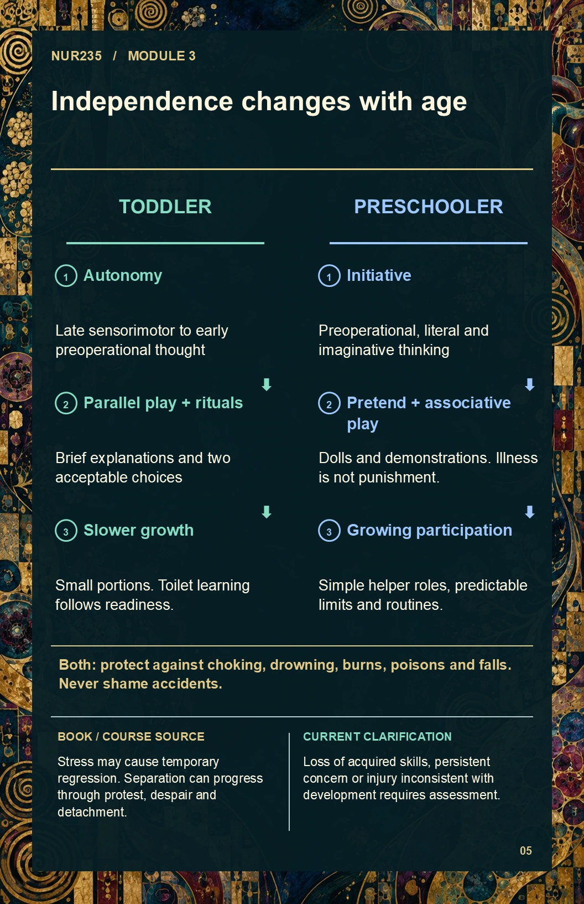
Read slide text and study notes
NUR235 / MODULE 3
Independence changes with age
05
TODDLER
1
Autonomy
Late sensorimotor to early preoperational thought
2
Parallel play + rituals
Brief explanations and two acceptable choices
3
Slower growth
Small portions. Toilet learning follows readiness.
PRESCHOOLER
1
Initiative
Preoperational, literal and imaginative thinking
2
Pretend + associative play
Dolls and demonstrations. Illness is not punishment.
3
Growing participation
Simple helper roles, predictable limits and routines.
Both: protect against choking, drowning, burns, poisons and falls. Never shame accidents.
BOOK / COURSE SOURCE
CURRENT CLARIFICATION
Stress may cause temporary regression. Separation can progress through protest, despair and detachment.
Loss of acquired skills, persistent concern or injury inconsistent with development requires assessment.
Original study notes and source references
NUR235 content mastery infographic. Original native diagram by Codex. No Claude-created graphics.
High-level overview. The user-supplied module content reviews and textbook anchor the content. Book/course statements and current clarifications remain separate. Full prior wording is preserved below for study reference.
Some neurologic and musculoskeletal chapters are missing from the provided book extract. Available course sources and identified primary references supplement these gaps.
Toddler and preschool development
User module content reviews, NUR235
{"theories": {"book_chapter": 28, "text_lines": [38660, 38956], "supports": "Erikson stages and Piaget age/stage terminology; implications for teaching/play.", "opening_excerpt": "Provide oral stimulation by giving pacifiers; do not discourage thumb sucking."}, "infant-growth": {"book_chapter": 29, "text_lines": [39631, 39981], "supports": "Weight doubles at 4–6 months/triples at 1 year; textbook month-by-month motor/language anchors.", "opening_excerpt": "The physiologic changes that occur in the infant year reflect both the increasing maturity and growth of body organs."}, "infant-trust": {"book_chapter": 29, "text_lines": [40105, 40175], "supports": "Emotional/cognitive development, object permanence, trust.", "opening_excerpt": "Socialization, or learning how to interact with others, is an extensive phenomenon. One-month-old infants show they can differentiate between faces and other objects by studying a face or the picture of a face longer than other objects. They are calm and feed "}, "infant-safety": {"book_chapter": 29, "text_lines": [40271, 40379], "supports": "Falls, choking, burns, automobile and water safety; rear-facing age wording is outdated.", "opening_excerpt": "Q. A parent is worried about keeping their 2-month-old safe. “How can I prevent accidents at this age?” the parent asks."}, "infant-feed": {"book_chapter": 29, "text_lines": [40463, 40625], "supports": "Human milk/iron-fortified formula, complementary foods near 6 months, iron foods, no honey or cow milk as main drink before 12 months.", "opening_excerpt": "Feeding recommendations for infants from birth through 6 months are to provide human milk exclusively via breastfeeding or expression and stored in a bottle. Human milk is the ideal form of nutrition for infants. It provides all the necessary nutrients, protec"}, "infant-vaccine": {"book_chapter": 29, "text_lines": [39431, 39593], "supports": "Well-child assessment and the textbook vaccine table.", "opening_excerpt": "Height, weight, head circumference plotted on standard growth chart; physical examination"}, "toddler": {"book_chapter": 30, "text_lines": [41172, 41294], "supports": "Autonomy, parent observation, language concern at 2 years, slowed growth and appetite.", "opening_excerpt": "During the toddler period, the age span from 1 to 3 years, enormous changes take place in a child and, consequently, in a family. During this period, children accomplish a wide array of developmental tasks and change from largely immobile and preverbal infants"}, "preschool": {"book_chapter": 31, "text_lines": [41357, 41447], "supports": "Age3–5, participation through modeling/play, physical and developmental assessment; remainder unavailable in extraction.", "opening_excerpt": "The preschool period traditionally includes the years 3, 4, and 5. Although physical growth slows considerably during this period, personality and cognitive growth continue at a rapid rate. Caregivers may be unsure how much independence and responsibility for "}, "school-growth": {"book_chapter": 32, "text_lines": [41590, 41658], "supports": "School-age growth and onset/order of puberty.", "opening_excerpt": "The average annual weight gain for a school-aged child is approximately 3 to 5 lb (1.3 to 2.2 kg); the increase in height is 1 to 2 in. (2.5 to 5 cm). Children who did not lose a lordosis and knock-kneed appearance during the preschool period typically lose th"}, "school-thinking": {"book_chapter": 32, "text_lines": [41850, 41982], "supports": "Industry, concrete operations, conservation/classification and skill mastery.", "opening_excerpt": "Ideally, children enter the school-aged period with the ability to trust others and with a sense of self-respect. They can accomplish small tasks independently because they have gained a sense of autonomy. They should have practiced adult roles, learned to sha"}, "school-safety": {"book_chapter": 32, "text_lines": [42014, 42096], "supports": "Injury prevention and body safety teaching.", "opening_excerpt": "Teach children to avoid unsafe areas, such as train yards, grain silos, and back alleys."}, "school-health": {"book_chapter": 32, "text_lines": [42390, 42530], "supports": "Immunizations, dental care and health assessment; schedule contains outdated product/dose wording.", "opening_excerpt": "Check history and past records, inform caregiver about any risks and side effects, and administer immunization in accordance with healthcare agency policies."}, "school-stress": {"book_chapter": 32, "text_lines": [42790, 42865], "supports": "Stress, school difficulties and substance-use concerns.", "opening_excerpt": "Reproductive life planning measures and the principles of safer sex if appropriate to the cultural setting (see Chapters 5 and 6). Sexual orientation questions and concerns may arise at this time, and questions should be addressed honestly and openly."}, "adolescent-limit": {"book_chapter": 33, "text_lines": [43127, 43183], "supports": "Only opening case, objectives and preventive privacy goal are present; full chapter not available.", "opening_excerpt": "For additional ancillary materials related to this chapter, please visit the point."}, "assessment": {"book_chapter": 34, "text_lines": [43374, 43408], "supports": "Adolescent private interview; confidentiality must be qualified by safety/legal exceptions.", "opening_excerpt": "A second reason K.W.’s parent has brought the child to your ambulatory clinic is because of increased frequency and burning on urination."}, "exam-order": {"book_chapter": 34, "text_lines": [44020, 44046], "supports": "Assessment is adapted to age; least intrusive observations first, uncomfortable portions later.", "opening_excerpt": "Presented here are the components of a routine or general physical assessment. It is important to recognize what a “general” physical examination entails so you can interpret the extent of the assessment a child has received when the caregiver states, “My chil"}, "teaching": {"book_chapter": 35, "text_lines": [46729, 46945], "supports": "Teach-back, demonstration/return demonstration and development-specific communication.", "opening_excerpt": "Children have variable attention spans. Assess the learner and provide lessons in segments of 5–20 minutes. Ideally, the child should be well rested and well-nourished prior to the teaching."}, "hospital": {"book_chapter": 36, "text_lines": [48070, 48134], "supports": "Family presence, routines and protest/despair/detachment after separation.", "opening_excerpt": "Obtain any special information about the child that the parents think would make them more comfortable in the hospital."}, "procedures": {"book_chapter": 37, "text_lines": [49105, 49293], "supports": "Diagnostic/therapeutic modalities, consent and developmental planning; extracted chapter is incomplete.", "opening_excerpt": "Nursing Care of a Family When a Child Needs Diagnostic or Therapeutic Modalities"}, "med-dose": {"book_chapter": 38, "text_lines": [49350, 49578], "supports": "Measured kg weight, individual dose safety, assessment and fractional-dose example; reversed conversion typo at49352.", "opening_excerpt": "Most adults immediately grasp that taking a medicine you offer them will be important to relieve whatever symptoms they are experiencing from an illness. Because children do not necessarily have this same level of understanding, they may resist taking medicine"}, "med-route": {"book_chapter": 38, "text_lines": [49616, 49674], "supports": "Oral medication positioning, oral syringe and age-appropriate technique.", "opening_excerpt": "Children younger than 3 years are unable to swallow pills. After that age, the ability of children to swallow pills varies from one child to the next and is not age dependent. Typically, children older than 9 years can be offered tablets; however, some adolesc"}, "pain": {"book_chapter": 39, "text_lines": [50756, 50862], "supports": "Behavioral tools, FLACC, child self-report FACES/numeric and combined comfort/analgesia.", "opening_excerpt": "Each area of concern is scored from 0 to 2. Infants with a total score of 4 or more are most likely to be in pain and need interventions to reduce discomfort. The scale cannot be used with infants who are intubated or paralyzed for ventilator assistance becaus"}, "nosebleed": {"book_chapter": 40, "text_lines": [52143, 52155], "supports": "Sit upright/forward; continuous pressure over soft nose for about10min; evaluate persistent/recurrent bleeding.", "opening_excerpt": "Epistaxis (nosebleed) is extremely common in children and usually occurs from trauma or irritation such as picking at the nasal mucosa. Dry air can cause mucous membranes to become dry and susceptible to cracking and bleeding. Epistaxis may also occur after st"}, "hiv": {"book_chapter": 42, "text_lines": [55531, 55664], "supports": "HIV CD4 mechanism, infection risks, family coping; treatment specifics need current NIH guidance.", "opening_excerpt": "HIV is a slowly replicating retrovirus and has at least two main divisions, HIV-1 and HIV-2, followed by a variety of further subtypes. The virus acts by attacking the lymphoreticular system, in particular CD4-bearing helper T lymphocytes. The virus enters the"}, "allergy": {"book_chapter": 42, "text_lines": [56017, 56109], "supports": "Anaphylaxis manifestations, immediate IM epinephrine, emergency help and recurrent reaction risk.", "opening_excerpt": "Anaphylactic shock (anaphylaxis) is an immediate, life-threatening, type I hypersensitivity reaction that occurs after exposure to an allergen in a previously sensitized child. Anaphylaxis can be caused by exposure to foods such as milk, egg, peanut, and tree "}, "eczema": {"book_chapter": 42, "text_lines": [56307, 56475], "supports": "Atopic dermatitis itch–scratch cycle, distribution and skin care.", "opening_excerpt": "Atopic dermatitis is a highly pruritic, chronic inflammatory skin disease that is often the first manifestation of allergic disease. It is a common disorder that affects 15% to 20% of children (Chopra et al., 2017)."}, "contact": {"book_chapter": 42, "text_lines": [56561, 56585], "supports": "Allergic contact dermatitis/typeIV, exposure pattern and removal of allergen.", "opening_excerpt": "Contact dermatitis is an example of a delayed or type IV hypersensitivity response; it is a reaction to skin contact with an allergen (a substance irritating to the child only with prior sensitization). The first reaction is generally erythema, followed by the"}, "rubella": {"book_chapter": 43, "text_lines": [57521, 57549], "supports": "Rubella syndrome; printed incubation/communicability statements are unreliable.", "opening_excerpt": "Incubation period: Generally, 14 days within a range of 16 to 183 days (AAP, 2018)"}, "measles": {"book_chapter": 43, "text_lines": [57551, 57593], "supports": "Cough/coryza/conjunctivitis, Koplik spots and descending rash.", "opening_excerpt": "Incubation period: 8 to 12 days from time of exposure to onset of any symptoms (AAP, 2018), with a range from 7 to 21 days (Drutz, 2016)"}, "varicella": {"book_chapter": 43, "text_lines": [57595, 57643], "supports": "Vesicles in crops, infection/complication risks; immune-globulin timing differs from current guidance.", "opening_excerpt": "Incubation period: 10 to 21 days, with the most common incidence at 14 to 16 days following exposure (Kennedy & Gershon, 2018)"}, "fifth": {"book_chapter": 43, "text_lines": [57677, 57704], "supports": "Parvovirus B19, slapped-cheek/lacy eruption and host-specific risk.", "opening_excerpt": "Incubation period: Most commonly between 4 and 14 days and can be as long as 21 days (AAP, 2018)"}, "mono": {"book_chapter": 43, "text_lines": [58009, 58048], "supports": "EBV saliva transmission, pharyngitis/adenopathy/fatigue and splenic risk.", "opening_excerpt": "Incubation period: Incubation period in adults and adolescents is 4 to 7 weeks, with a shorter incubation period in children (Fugl & Andersen, 2019)."}, "scarlet": {"book_chapter": 43, "text_lines": [58221, 58249], "supports": "GAS toxin-associated pharyngitis, sandpaper rash and antimicrobial treatment.", "opening_excerpt": "Incubation period: 2 to 5 days for streptococcal pharyngitis (AAP, 2018)"}, "impetigo": {"book_chapter": 43, "text_lines": [58251, 58280], "supports": "Staphylococcal/streptococcal superficial infection with honey crusts.", "opening_excerpt": "Causative agent: Beta-hemolytic streptococcus, group A or Staphylococcus aureus including methicillin-resistant Staphylococcus aureus (MRSA) (to be discussed in the subsequent section)"}, "pertussis": {"book_chapter": 43, "text_lines": [58365, 58417], "supports": "Paroxysmal cough, infant risk and treatment; immunity and isolation wording need updating.", "opening_excerpt": "Mode of transmission: Highly contagious by direct or indirect contact"}, "lice": {"book_chapter": 43, "text_lines": [58587, 58647], "supports": "Pediculosis and family teaching; avoid stigma about hygiene.", "opening_excerpt": "Small, white flecks on hair shaft (nits or eggs of lice); extreme pruritus"}, "pinworm": {"book_chapter": 43, "text_lines": [58649, 58655], "supports": "Nocturnal perianal itching, tape test and household hygiene; text omits repeat dose.", "opening_excerpt": "Pinworms are small, white, threadlike worms that live in the cecum. After ingestion of the egg, the mature worms develop over a period of 2 months in the cecum. The mature female pinworm then migrates out of the anus to deposit eggs on the skin in the anal and"}, "tinea": {"book_chapter": 43, "text_lines": [58675, 58705], "supports": "Tinea skin/scalp distinctions and antifungal treatment.", "opening_excerpt": "Fungi are larger than bacteria; some are unicellular (yeasts), but, generally, they are multicellular (molds). Deep mycoses invade internal organs. Respiratory transmission is by the inhalation of spores. Subcutaneous mycoses invade the skin, subcutaneous tiss"}, "transfusion": {"book_chapter": 44, "text_lines": [59254, 59340], "supports": "Transfusion setup, monitoring, reaction symptoms/stop action; printed AHTR label is inaccurate.", "opening_excerpt": "Transfusions of blood or its products are commonly used in the treatment of blood disorders and may include whole blood, packed RBCs, washed RBCs (as much “foreign” matter is removed as possible to reduce the possibility of an antagonistic reaction), plasma, p"}, "iron": {"book_chapter": 44, "text_lines": [59580, 59678], "supports": "Iron deficiency risks, low hemoglobin indices, diet and iron teaching.", "opening_excerpt": "Although the incidence of iron-deficiency anemia is decreasing in the United States due to improved infant nutrition, it is still the most common anemia of infancy and childhood, occurring whenever the intake of dietary iron is inadequate. Without adequate iro"}, "sickle": {"book_chapter": 44, "text_lines": [59738, 59974], "supports": "HbS vaso-occlusion/hemolysis, pain, sequestration/aplastic crises, hydration and analgesia.", "opening_excerpt": "Sickle cell anemia is an autosomal recessive inherited disorder carried on the beta chain of hemoglobin; the amino acid valine takes the place of the normally appearing glutamic acid. With this, the erythrocytes become characteristically elongated and crescent"}, "hemophilia": {"book_chapter": 44, "text_lines": [60258, 60318], "supports": "FactorVIII versusIX, X-linked inheritance and hemarthrosis.", "opening_excerpt": "Hemophilias are inherited disorders of blood coagulation. There are numerous types, each involving a deficiency of a different blood coagulation factor."}, "conjunctivitis": {"book_chapter": 50, "text_lines": [67992, 68042], "supports": "Conjunctivitis differential; the same content is duplicated earlier at66629–66679.", "opening_excerpt": "Inflammation of the conjunctiva; causes are numerous, including ophthalmia neonatorum (exposure to gonococcus bacillus; see Chapter 26) and bacterial, viral, and fungal organisms"}, "burns": {"book_chapter": 52, "text_lines": [70007, 70241], "supports": "Burn depth/area, ABCs, temperature/fluid/pain/infection and nutrition.", "opening_excerpt": "Burns are injuries to body tissue caused by excessive heat (greater than 104°F [40°C]). Burns are the second most common unintentional injury seen in children 1 to 4 years of age and the third most common cause of injury in children 5 to 14 years of age. Every"}, "oncology-care": {"book_chapter": 53, "text_lines": [71294, 71440], "supports": "Mucositis, infection, treatment-related toxicity and family care.", "opening_excerpt": "Children receiving long-term corticosteroid (e.g., dexamethasone or prednisone) therapy develop a typical “moon face,” red cheeks, and a stocky build. Like the loss of hair, a cushingoid appearance can be devastating to children or parents, the final insult in"}, "leukemia": {"book_chapter": 53, "text_lines": [71472, 71610], "supports": "Marrow blast proliferation causes anemia, infection risk and low platelets; diagnostic/treatment priorities.", "opening_excerpt": "Leukemia is the distorted and uncontrolled proliferation of WBCs (leukocytes) and is the most frequently occurring type of cancer in children."}, "brain": {"book_chapter": 53, "text_lines": [71716, 71906], "supports": "Brain tumor location, ICP/neurologic changes and surgery-specific postoperative care.", "opening_excerpt": "Brain tumors are the second most common form of cancer and the most common solid tumor in children. Tumors tend to occur between 1 and 10 years of age, with 5 years being the peak age of incidence. In children, brain tumors tend to occur at the midline in the "}, "wilms": {"book_chapter": 53, "text_lines": [72098, 72118], "supports": "Renal mass, hematuria/hypertension, imaging and nephrectomy-based treatment.", "opening_excerpt": "Nephroblastoma (Wilms tumor) is a malignant tumor that rises from the metanephric mesoderm cells of the upper pole of the kidney (Malkan et al., 2015). It accounts for 20% of solid tumors in childhood, and overall survival rates are greater than 90%. It may oc"}, "abuse": {"book_chapter": 55, "text_lines": [72856, 72958], "supports": "Maltreatment assessment, child protection, objective documentation and family concerns.", "opening_excerpt": "When obtaining a history, ask caregivers to account for any injury to a child’s body. Remember, however, that most childhood injuries are the result of unintentional injuries caused by the child’s inability to distinguish safe situations from dangerous ones or"}}
{"sleep": {"url": "https://www.aap.org/en/patient-care/safe-sleep/", "title": "AAP safe sleep"}, "carseat": {"url": "https://www.nhtsa.gov/vehicle-safety/car-seats-and-booster-seats", "title": "NHTSA child restraint recommendations"}, "milestones2": {"url": "https://www.cdc.gov/act-early/milestones/2-years.html", "title": "CDC milestones by2years"}, "milestones3": {"url": "https://www.cdc.gov/act-early/milestones/3-years.html", "title": "CDC milestones by3years"}, "milestones4": {"url": "https://www.cdc.gov/act-early/milestones/4-years.html", "title": "CDC milestones by4years"}, "milestones5": {"url": "https://www.cdc.gov/act-early/milestones/5-years.html", "title": "CDC milestones by5years"}, "vaccine": {"url": "https://www.cdc.gov/vaccines/hcp/imz-schedules/child-adolescent-age.html", "title": "CDC age schedule, page labels its addendum July2,2025"}, "aap2026": {"url": "https://publications.aap.org/pediatrics/article/157/3/e2025075754/206175/Recommended-Childhood-andAdolescent-Immunization", "title": "AAP2026 childhood/adolescent immunization policy"}, "meds": {"url": "https://www.healthychildren.org/English/safety-prevention/at-home/medication-safety/Pages/Using-Liquid-Medicines.aspx", "title": "AAP liquid medication measurement"}, "sickle-current": {"url": "https://www.nhlbi.nih.gov/sites/default/files/publications/56-364NFULL.pdf", "title": "NHLBI sickle-cell expert report: oxygen/fluids/transfusion in VOC"}, "sickle-ash": {"url": "https://doi.org/10.1182/bloodadvances.2020001851", "title": "ASH2020 sickle-cell pain guideline"}, "isolation": {"url": "https://www.cdc.gov/infection-control/hcp/isolation-precautions/appendix-a-type-duration.html", "title": "CDC isolation appendix, updated September11,2026"}, "pinworm-current": {"url": "https://www.cdc.gov/pinworm/hcp/clinical-overview/index.html", "title": "CDC pinworm treatment"}, "lice-current": {"url": "https://www.cdc.gov/lice/caring-head/", "title": "CDC head lice and school attendance"}, "pinkeye": {"url": "https://www.cdc.gov/conjunctivitis/treatment/", "title": "CDC conjunctivitis treatment"}, "acne": {"url": "https://www.aad.org/member/clinical-quality/guidelines/acne", "title": "AAD acne guideline"}, "hiv-current": {"url": "https://clinicalinfo.hiv.gov/en/guidelines/pediatric-arv/regimens-recommended-initial-therapy-antiretroviral-naive-children", "title": "NIH pediatric antiretroviral therapy"}, "blood": {"url": "https://www.isbtweb.org/resources/educational-modules-on-clinical-use-of-blood/adverse-effects-of-transfusion.html", "title": "ISBT adverse transfusion effects"}, "wilms-current": {"url": "https://medlineplus.gov/ency/article/001575.htm", "title": "MedlinePlus Wilms tumor and careful handling"}}
Toddler: 1–3 years
Erikson: autonomy versus shame/doubt. Piaget: late sensorimotor → early preoperational.
“No,” rituals, parallel play and frustration reflect emerging independence. Offer two acceptable choices and maintain a predictable routine.
Growth/appetite slow. Evaluate the pattern across days and the growth curve. Two-word combinations by about 2 years are an important language anchor.
Preschooler: 3–5 years
Erikson: initiative versus guilt. Piaget: preoperational thought: literal, egocentric and imaginative.
Use dolls, pictures and brief demonstrations. Explain that illness or a procedure is not punishment. Protect body integrity and cover puncture sites as appropriate.
Encourage pretend play, participation and simple helper roles. Correct a frightening misunderstanding before adding more facts.
Current milestone examples : separately labeled
3 years: joins other children in play and holds brief back-and-forth conversations.
4 years: pretend roles and sentences of four or more words.
5 years: follows game rules/takes turns and tells a story with at least two events.
The supplied extraction includes only the opening portions of ch30 and31. Developmental theory is supported by ch28 and procedure-related teaching by ch35; the3–5year milestone examples are labeled CDC supplements rather than attributed to missing book pages.
Recall: A preschooler says, “The shot is because I was bad.” What is the priority teaching?
Answer: State clearly that treatment is not punishment, then explain the procedure in concrete words/play.
Toddler and preschool health promotion
Assessment and common concerns
Observe play, gait, language and caregiver interaction before touching. A toddler’s “no” may not reliably exclude pain.
Use caregiver observations of usual behavior. Regression during stress is possible, but lost skills or persistent developmental concern needs evaluation.
Support bedtime routines, readiness-based toilet learning and calm consistent limits. Avoid shame, forced feeding and punishment for accidents.
Nutrition, prevention and safety
Offer small portions and varied iron-rich foods. Avoid letting milk/juice replace meals. Supervise seated eating and avoid choking hazards.
Lock medicines/chemicals. Prevent burns, drowning, falls and firearm access. Use the correct car restraint and helmet.
Review vaccines/catch-up, oral hygiene and dental care. Model handwashing and safe street/playground behavior.
Abuse and neglect: recognize and protect
Question injuries inconsistent with developmental ability, a changing account, repeated unexplained injury or unmet basic needs.
Address immediate safety, document objective findings and the child’s words, and follow mandated reporting requirements. Avoid leading questions.
Teach body boundaries and telling a trusted adult. Safeguarding is the adult’s responsibility.
For clinical care, use the jurisdiction’s reporting rules and local safeguarding pathway. This slide teaches recognition, not a diagnostic rule that any single bruise proves abuse. The nutrition and safety points synthesize the available toddler/preschool assessment plus general pediatric prevention sections.
Recall: Does a toddler saying “no” to “Does it hurt?” rule out pain?
Answer: No. Combine observation, caregiver report and an appropriate pain assessment.
Website infographic
45 / 254Nightmares vs Sleep Terrors
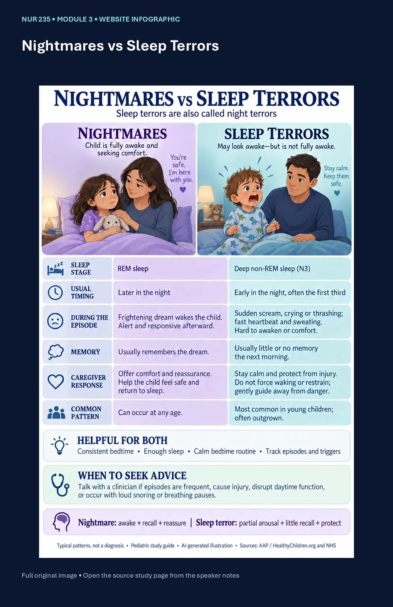
Read slide text and study notes
NUR 235 • MODULE 3 • WEBSITE INFOGRAPHIC
Nightmares vs Sleep Terrors
Full original image • Open the source study page from the speaker notes
Simple Nursing original · Module 3
46 / 254Simple Nursing: Toddlers - Assessment of Growth and Development

Read handout text
Assessment of Growth and Development
of the T oddler 1 -3
• Lordosis and pot belly, organs adapt moderately to stress
• Well established walking
• Growth is slowed and stable
• Bones and muscles still immature requires nutrition and exercise
for adequate development
• Vocabulary begins to increase names objects, body parts, animals,
and familiar locations
• Primary method of communication
• Continuous questioning “why”
• Toys that talk are preferred
• Brief sentences
• Many emotions in one day
• Increased use of emotion language and understanding of emotion
• Causes/ consequence understanding
Physical Milestones
Psychological Milestones
Emotional Growth
• Moves to parallel play, mostly imitates role models
• Does Not share readily until later toddler years
• Separation anxiety is overcome easily
Social Milestones
Language
Nutrition
• Well established walking
• Hand eye coordination
• Progressive development of fine motor skills
• They begin to draw and write
• Bladder control is gained , with occasional relapses
• Brain is 90% developed by age 5
• Require about 1000-1400 calories a day
• Toddlers should be active 60 min a day
• Fruites: 1-1.5 cups
• Veggies: 1-1.5 cups
• Grains : 3-5 oz
• Protein : 2-4 oz
• Dairy : 2-2.5 cups
• Allow children to eat when hungry instead of forcing meals.
Well visits
• 15 mo for shots
• Annually after that
• Assess growth/ development, caregiver skill,
and relationship between toddler and parent
Discipline
Training and instructing to produce positive
behavior patterns
• Self-control is gradual
• 2 yrs: begin accepting responsibility
• Consistency and timing are key
• Calmly remove the child from the situation
• Tell child the behavior is bad, not them
Physical growth
• Slows
• Communication and mobility skills increase
• Stubbornness , explore, dependent
• Begin to explore Autonomy
“ I DO MYSELF”
Height and weight
- Gain 5 to 10 LBs per year
- Grow 3 inches per year
- Normal to go on food jags
Learns to stand alone and walk,
1 year Need 12-14 hours a day of sleep
3 years Need 10-12 hours
Safety
• Proper restraint in car seat
• Never leave the toddler
alone in water even buckets
pose a drowning risk
• Put away poisons and
medications with locks
• Burns from hot appliances
and water are common
Age Nursing Care
18 months
- 3 years
2-7 years
Theorist
Sigmund Freud
Jean Piaget
Stage
Anal
Preoperational
Description
Pleasure center in
the anus
Sensory / action
coordination,
symbolic thinking.
Represent world and
words together
Encourage the family to
teach good hygiene
1-3 years Erik Erikson
Autonomy vs
shame and
doubt
Mastering
environment and
building self-esteem
Support bonding and
family relationships
Plan drawing and
writing, tactile
experiences. Use
colorful materials to
stimulate senses
Simple Nursing original · Module 3
47 / 254Simple Nursing: Preschool - Assessment of Growth and Development

Read handout text
Assessment of Growth and Development
of the Preschool Child
• Aware of their sexuality
• May be attracted to parent of the opposite sex
• Parents should teach accurate sexual info
• Teach the difference between good and bad touch
• Calm matter of fact response to masturbation
• Teach safety and privacy regarding genitals
• 0-1 mo: general tension
• 1 mo: happy and sad emotions
• 6 mo: separation anxiety
• 6-12 mo: stranger anxiety, shows curiosity by 12 months .
Physical Milestones
Emotional Growth
• Preschoolers use imitative play, all types of play are needed for
development
• Dramatic play: act out situations and control it
• Cooperative play: organized groups
• Associative play: play together but unorganized and no leader
• Solitary: playing alone away from groups
Social Milestones
Nutrition
• 3-4: non communicative w/ language
• 4: communicate with language
• 4-5: use naughty words
• Converse in a way they can understand
• Delays can be caused by: hearing impairment, lack of stimulation
Language
• Develop imagination
• May have an imaginary friend
• Magical thinking
• May be afraid of the dark or have nightmares
• 4: Temper tantrums, pushing, hitting, and manipulating environment
• Discipline: teach the child responsibility and self
control and consistency.
• Taking favorited away is more effective than hitting
• Do not need large quantities of food, keep portions small.
• Requires high amount of protein
• Erratic appetite, frequent small meals are better
• Guide them when choosing food
• Provide healthy snacks
• Rituals are important.eals.
Well Checkup Schedule
• Boosters and vaccines 4-6yrs
• Annual exams for growth and health
Vision
• Still immature
• Distance judgement faulty
• Screen for amblyopia
• 20/20 vision by age 6
• Depth perception occurs at 8-10 yrs old.
Growth rate has slowed
• Language and play change remarkable
• Soak up info “little sponges, let them choose their own clothes”
• 3 yrs still chubby-faced
• 5 yrs leaner and taller and better coordinated but can't distinguish fantasy from real life.
Height and weight
• Gains 3-5 lb a year and grows 2.5 in. a year
• By 12 months birth weight should triple and baby should grow 10-12 in.
Skeleton
• Gross motor skills improve by age 5 they can climb, jump, catch and throw
a ball and ride a bicycle.
• 5 yrs, leaner taller and better coordinated, teach them to wash hands thoroughly
• Bathing and brushing teeth still need supervised, can't wash own hair.
Dentition
• The skull is 90% of adult size by age 6
• Early preschool insidious teeth have completely emerged ,you floss their teeth.
• End of preschool teeth have erupted w/ incisors being first.
Psychological Milestones
Age Nursing Care
3-6
years
2-7 years
Theorist
Sigmund Freud
Jean Piaget
Stage
Phallic
Preoperational
phase
Description
Pleasure center in
the genitals
The child sees the
world egocentrically
Explain to the family and
teach hygiene
3-5 years Erik Erikson Initiative vs guilt
Child develops a
conscious and sense
of right and wrong
Monitor and protect from
injury and poisoning.
Encourage them to ask
questions
Plan drawing and writing
activities
Simple Nursing original · Module 3
48 / 254Simple Nursing: Toddlers part 2 & Preschoolers

Read handout text
Pediatric Physical Exam IV
Pediatrics: Assessment
Toddlers 1-3 years
Preschool & Kindergarten 3 -6 years
Ear Assessment
Less than 3 years: Pull Down & Back
Over 3 years: Pull Up & Back
Growing UP - pull it UP & back
Less than 3 - pull less (down & back)
Memory Trick
HESI Questions
Q1: … position the pinna to visualize the
eardrum of a 4 year old child?
Q2: … direction to pull the pinna of an infant
during an ear exam?
Up and back
Down and back
Growing UP
pull it UP
Less than 3
pull less
Saunders Question
4 year-old-child. When experiencing pain,
the nurse anticipates… Select all that apply.
Views pain as punishment
Blames someone else for the pain
Believes pain will disappear magically
Common NCLEX Question
4-year-old beliefs?
Select all that apply.
Believe that an injury is the result
of misbehaving
Feels responsible for being placed
for adoption NCLEX TIP
It’s my fault that
my parents left me.
Magical thinking
(Do NOT understand cause & effect)
3-6 years old
Growth
Nutrition
Activity & Sleep
Beliefs
Height: 2 - 3 inches per year
50% Less calories than adults
1.
Weight: gain of 4.5 - 6.5 lb per year 2.
1 hour of activity
12 hours of sleep (at around 7:00pm)
Magical thinking
26lbs 31.5lbs
4.5-6.5lb
12
hours
Choking Hazard
Burns
Cut food into bitesize pieces
Avoid Round Foods!
Cover electrical outlets
Face handles inward = stove top
pots & pans
Apply sunscreen SPF 15 or greater
BEFORE going outside
& reapply every 2-3 hours while in
the sun
Sit child up when eating &
Cut food into bite size shape
Safety T eaching
Drowning
Never leave child alone near
a body of water
Car seat
Rear facing in the back seat
at 45 degree angle
NEVER place the car seat in front seat
NEVER place padding under or behind
an infant or child in a car seat
(it can eject the child during a car crash)
Used until 30 lbs (13.6 kg)
8 - 12 years
4’9 tall
35 - 80 lbs (15.9 - 36.3 kg)
Booster seat
Crib safety
Infant on back to prevent SIDS
Never on stomach/
prone position unattended = SIDS!
DON’T put the infant to bed with
a bottle = dental caries
Remove crib musical mobiles at
4-5 months
Children under the age of 4, avoid...
Hot dogs
Carrots
Apples
Grapes
Peanut Butter
Raisin
Marshmallows
Nuts and Seeds
Popcorn
Celery
Chewing Gum
Hard Candy
Peanut
butter
Simple Nursing original · Module 3
49 / 254Simple Nursing: Toilet Training

Read handout text
T oilet Training
Pediatrics: Stages of Development
Toilet training begins during toddler age during 18 - 24 months, as anal &
urethral spincter control occurs during this timeframe.
The body is NOT ready before 18 months old! Memorize this!
Some exam & nclex questions try to trick you with 15 month olds & toilet
training, but don't get tricked.
18 - 24 months
NOT 15 months
Don't get tricked
Memory Trick for NCLEX
T - T oddlers (18 - 24 months)
T - T oilet Training
T - T ell you they need to poop
T - Two years old
1. Bowel control
2. Bladder control
(around 24 months)
The NCLEX stresses that the below factors also determine readiness, rather than simply the child's age alone
Determine Readiness
1. Follow simple commands
2. Walk to & sit on the toilet
3. Remain on the toilet for
5 - 8 min.
4. Pull clothes up & down
(Does not have to fully
dress themself)
PRIORITY
T
T oddlers
(18 - 24 months)
T
T oilet Training
T
T ell you they
need to poop
Poop
Poop
T
Two years old
1. Bowel control
2. Bladder control around 24 months)
1st 2nd
NCLEX TIPS
18 months 24 months
ATI Question
… which of the following indicates the
child is ready to begin toilet training?
● The child can communicate and
follow directions
Saunders Question
.... need for further information
regarding toilet training?
● Bladder control is usually achieved
before bowel control
HESI Question
What major task characterizes
toddlerhood?
● T oilet training
HESI Question
control of the anal and urethral
sphincters… typically achieved?
• 18 to 24 months
18 months 24 months
Poop
Poop
Do NOT punish the child if they make a mistake!
Simply clean it up & go on with life, it is a learning process.
Key Point
Original overview
50 / 254From concrete skills to identity
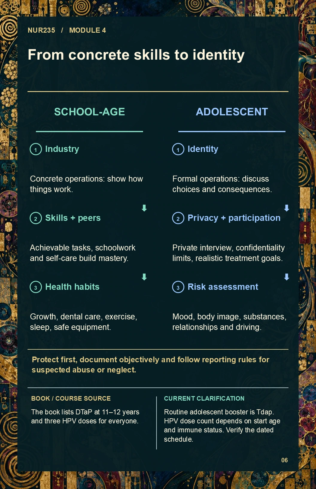
Read slide text and study notes
NUR235 / MODULE 4
From concrete skills to identity
06
SCHOOL-AGE
1
Industry
Concrete operations: show how things work.
2
Skills + peers
Achievable tasks, schoolwork and self-care build mastery.
3
Health habits
Growth, dental care, exercise, sleep, safe equipment.
ADOLESCENT
1
Identity
Formal operations: discuss choices and consequences.
2
Privacy + participation
Private interview, confidentiality limits, realistic treatment goals.
3
Risk assessment
Mood, body image, substances, relationships and driving.
Protect first, document objectively and follow reporting rules for suspected abuse or neglect.
BOOK / COURSE SOURCE
CURRENT CLARIFICATION
The book lists DTaP at 11–12 years and three HPV doses for everyone.
Routine adolescent booster is Tdap. HPV dose count depends on start age and immune status. Verify the dated schedule.
Original study notes and source references
NUR235 content mastery infographic. Original native diagram by Codex. No Claude-created graphics.
High-level overview. The user-supplied module content reviews and textbook anchor the content. Book/course statements and current clarifications remain separate. Full prior wording is preserved below for study reference.
Some neurologic and musculoskeletal chapters are missing from the provided book extract. Available course sources and identified primary references supplement these gaps.
School-age and adolescent development
User module content reviews, NUR235
{"theories": {"book_chapter": 28, "text_lines": [38660, 38956], "supports": "Erikson stages and Piaget age/stage terminology; implications for teaching/play.", "opening_excerpt": "Provide oral stimulation by giving pacifiers; do not discourage thumb sucking."}, "infant-growth": {"book_chapter": 29, "text_lines": [39631, 39981], "supports": "Weight doubles at 4–6 months/triples at 1 year; textbook month-by-month motor/language anchors.", "opening_excerpt": "The physiologic changes that occur in the infant year reflect both the increasing maturity and growth of body organs."}, "infant-trust": {"book_chapter": 29, "text_lines": [40105, 40175], "supports": "Emotional/cognitive development, object permanence, trust.", "opening_excerpt": "Socialization, or learning how to interact with others, is an extensive phenomenon. One-month-old infants show they can differentiate between faces and other objects by studying a face or the picture of a face longer than other objects. They are calm and feed "}, "infant-safety": {"book_chapter": 29, "text_lines": [40271, 40379], "supports": "Falls, choking, burns, automobile and water safety; rear-facing age wording is outdated.", "opening_excerpt": "Q. A parent is worried about keeping their 2-month-old safe. “How can I prevent accidents at this age?” the parent asks."}, "infant-feed": {"book_chapter": 29, "text_lines": [40463, 40625], "supports": "Human milk/iron-fortified formula, complementary foods near 6 months, iron foods, no honey or cow milk as main drink before 12 months.", "opening_excerpt": "Feeding recommendations for infants from birth through 6 months are to provide human milk exclusively via breastfeeding or expression and stored in a bottle. Human milk is the ideal form of nutrition for infants. It provides all the necessary nutrients, protec"}, "infant-vaccine": {"book_chapter": 29, "text_lines": [39431, 39593], "supports": "Well-child assessment and the textbook vaccine table.", "opening_excerpt": "Height, weight, head circumference plotted on standard growth chart; physical examination"}, "toddler": {"book_chapter": 30, "text_lines": [41172, 41294], "supports": "Autonomy, parent observation, language concern at 2 years, slowed growth and appetite.", "opening_excerpt": "During the toddler period, the age span from 1 to 3 years, enormous changes take place in a child and, consequently, in a family. During this period, children accomplish a wide array of developmental tasks and change from largely immobile and preverbal infants"}, "preschool": {"book_chapter": 31, "text_lines": [41357, 41447], "supports": "Age3–5, participation through modeling/play, physical and developmental assessment; remainder unavailable in extraction.", "opening_excerpt": "The preschool period traditionally includes the years 3, 4, and 5. Although physical growth slows considerably during this period, personality and cognitive growth continue at a rapid rate. Caregivers may be unsure how much independence and responsibility for "}, "school-growth": {"book_chapter": 32, "text_lines": [41590, 41658], "supports": "School-age growth and onset/order of puberty.", "opening_excerpt": "The average annual weight gain for a school-aged child is approximately 3 to 5 lb (1.3 to 2.2 kg); the increase in height is 1 to 2 in. (2.5 to 5 cm). Children who did not lose a lordosis and knock-kneed appearance during the preschool period typically lose th"}, "school-thinking": {"book_chapter": 32, "text_lines": [41850, 41982], "supports": "Industry, concrete operations, conservation/classification and skill mastery.", "opening_excerpt": "Ideally, children enter the school-aged period with the ability to trust others and with a sense of self-respect. They can accomplish small tasks independently because they have gained a sense of autonomy. They should have practiced adult roles, learned to sha"}, "school-safety": {"book_chapter": 32, "text_lines": [42014, 42096], "supports": "Injury prevention and body safety teaching.", "opening_excerpt": "Teach children to avoid unsafe areas, such as train yards, grain silos, and back alleys."}, "school-health": {"book_chapter": 32, "text_lines": [42390, 42530], "supports": "Immunizations, dental care and health assessment; schedule contains outdated product/dose wording.", "opening_excerpt": "Check history and past records, inform caregiver about any risks and side effects, and administer immunization in accordance with healthcare agency policies."}, "school-stress": {"book_chapter": 32, "text_lines": [42790, 42865], "supports": "Stress, school difficulties and substance-use concerns.", "opening_excerpt": "Reproductive life planning measures and the principles of safer sex if appropriate to the cultural setting (see Chapters 5 and 6). Sexual orientation questions and concerns may arise at this time, and questions should be addressed honestly and openly."}, "adolescent-limit": {"book_chapter": 33, "text_lines": [43127, 43183], "supports": "Only opening case, objectives and preventive privacy goal are present; full chapter not available.", "opening_excerpt": "For additional ancillary materials related to this chapter, please visit the point."}, "assessment": {"book_chapter": 34, "text_lines": [43374, 43408], "supports": "Adolescent private interview; confidentiality must be qualified by safety/legal exceptions.", "opening_excerpt": "A second reason K.W.’s parent has brought the child to your ambulatory clinic is because of increased frequency and burning on urination."}, "exam-order": {"book_chapter": 34, "text_lines": [44020, 44046], "supports": "Assessment is adapted to age; least intrusive observations first, uncomfortable portions later.", "opening_excerpt": "Presented here are the components of a routine or general physical assessment. It is important to recognize what a “general” physical examination entails so you can interpret the extent of the assessment a child has received when the caregiver states, “My chil"}, "teaching": {"book_chapter": 35, "text_lines": [46729, 46945], "supports": "Teach-back, demonstration/return demonstration and development-specific communication.", "opening_excerpt": "Children have variable attention spans. Assess the learner and provide lessons in segments of 5–20 minutes. Ideally, the child should be well rested and well-nourished prior to the teaching."}, "hospital": {"book_chapter": 36, "text_lines": [48070, 48134], "supports": "Family presence, routines and protest/despair/detachment after separation.", "opening_excerpt": "Obtain any special information about the child that the parents think would make them more comfortable in the hospital."}, "procedures": {"book_chapter": 37, "text_lines": [49105, 49293], "supports": "Diagnostic/therapeutic modalities, consent and developmental planning; extracted chapter is incomplete.", "opening_excerpt": "Nursing Care of a Family When a Child Needs Diagnostic or Therapeutic Modalities"}, "med-dose": {"book_chapter": 38, "text_lines": [49350, 49578], "supports": "Measured kg weight, individual dose safety, assessment and fractional-dose example; reversed conversion typo at49352.", "opening_excerpt": "Most adults immediately grasp that taking a medicine you offer them will be important to relieve whatever symptoms they are experiencing from an illness. Because children do not necessarily have this same level of understanding, they may resist taking medicine"}, "med-route": {"book_chapter": 38, "text_lines": [49616, 49674], "supports": "Oral medication positioning, oral syringe and age-appropriate technique.", "opening_excerpt": "Children younger than 3 years are unable to swallow pills. After that age, the ability of children to swallow pills varies from one child to the next and is not age dependent. Typically, children older than 9 years can be offered tablets; however, some adolesc"}, "pain": {"book_chapter": 39, "text_lines": [50756, 50862], "supports": "Behavioral tools, FLACC, child self-report FACES/numeric and combined comfort/analgesia.", "opening_excerpt": "Each area of concern is scored from 0 to 2. Infants with a total score of 4 or more are most likely to be in pain and need interventions to reduce discomfort. The scale cannot be used with infants who are intubated or paralyzed for ventilator assistance becaus"}, "nosebleed": {"book_chapter": 40, "text_lines": [52143, 52155], "supports": "Sit upright/forward; continuous pressure over soft nose for about10min; evaluate persistent/recurrent bleeding.", "opening_excerpt": "Epistaxis (nosebleed) is extremely common in children and usually occurs from trauma or irritation such as picking at the nasal mucosa. Dry air can cause mucous membranes to become dry and susceptible to cracking and bleeding. Epistaxis may also occur after st"}, "hiv": {"book_chapter": 42, "text_lines": [55531, 55664], "supports": "HIV CD4 mechanism, infection risks, family coping; treatment specifics need current NIH guidance.", "opening_excerpt": "HIV is a slowly replicating retrovirus and has at least two main divisions, HIV-1 and HIV-2, followed by a variety of further subtypes. The virus acts by attacking the lymphoreticular system, in particular CD4-bearing helper T lymphocytes. The virus enters the"}, "allergy": {"book_chapter": 42, "text_lines": [56017, 56109], "supports": "Anaphylaxis manifestations, immediate IM epinephrine, emergency help and recurrent reaction risk.", "opening_excerpt": "Anaphylactic shock (anaphylaxis) is an immediate, life-threatening, type I hypersensitivity reaction that occurs after exposure to an allergen in a previously sensitized child. Anaphylaxis can be caused by exposure to foods such as milk, egg, peanut, and tree "}, "eczema": {"book_chapter": 42, "text_lines": [56307, 56475], "supports": "Atopic dermatitis itch–scratch cycle, distribution and skin care.", "opening_excerpt": "Atopic dermatitis is a highly pruritic, chronic inflammatory skin disease that is often the first manifestation of allergic disease. It is a common disorder that affects 15% to 20% of children (Chopra et al., 2017)."}, "contact": {"book_chapter": 42, "text_lines": [56561, 56585], "supports": "Allergic contact dermatitis/typeIV, exposure pattern and removal of allergen.", "opening_excerpt": "Contact dermatitis is an example of a delayed or type IV hypersensitivity response; it is a reaction to skin contact with an allergen (a substance irritating to the child only with prior sensitization). The first reaction is generally erythema, followed by the"}, "rubella": {"book_chapter": 43, "text_lines": [57521, 57549], "supports": "Rubella syndrome; printed incubation/communicability statements are unreliable.", "opening_excerpt": "Incubation period: Generally, 14 days within a range of 16 to 183 days (AAP, 2018)"}, "measles": {"book_chapter": 43, "text_lines": [57551, 57593], "supports": "Cough/coryza/conjunctivitis, Koplik spots and descending rash.", "opening_excerpt": "Incubation period: 8 to 12 days from time of exposure to onset of any symptoms (AAP, 2018), with a range from 7 to 21 days (Drutz, 2016)"}, "varicella": {"book_chapter": 43, "text_lines": [57595, 57643], "supports": "Vesicles in crops, infection/complication risks; immune-globulin timing differs from current guidance.", "opening_excerpt": "Incubation period: 10 to 21 days, with the most common incidence at 14 to 16 days following exposure (Kennedy & Gershon, 2018)"}, "fifth": {"book_chapter": 43, "text_lines": [57677, 57704], "supports": "Parvovirus B19, slapped-cheek/lacy eruption and host-specific risk.", "opening_excerpt": "Incubation period: Most commonly between 4 and 14 days and can be as long as 21 days (AAP, 2018)"}, "mono": {"book_chapter": 43, "text_lines": [58009, 58048], "supports": "EBV saliva transmission, pharyngitis/adenopathy/fatigue and splenic risk.", "opening_excerpt": "Incubation period: Incubation period in adults and adolescents is 4 to 7 weeks, with a shorter incubation period in children (Fugl & Andersen, 2019)."}, "scarlet": {"book_chapter": 43, "text_lines": [58221, 58249], "supports": "GAS toxin-associated pharyngitis, sandpaper rash and antimicrobial treatment.", "opening_excerpt": "Incubation period: 2 to 5 days for streptococcal pharyngitis (AAP, 2018)"}, "impetigo": {"book_chapter": 43, "text_lines": [58251, 58280], "supports": "Staphylococcal/streptococcal superficial infection with honey crusts.", "opening_excerpt": "Causative agent: Beta-hemolytic streptococcus, group A or Staphylococcus aureus including methicillin-resistant Staphylococcus aureus (MRSA) (to be discussed in the subsequent section)"}, "pertussis": {"book_chapter": 43, "text_lines": [58365, 58417], "supports": "Paroxysmal cough, infant risk and treatment; immunity and isolation wording need updating.", "opening_excerpt": "Mode of transmission: Highly contagious by direct or indirect contact"}, "lice": {"book_chapter": 43, "text_lines": [58587, 58647], "supports": "Pediculosis and family teaching; avoid stigma about hygiene.", "opening_excerpt": "Small, white flecks on hair shaft (nits or eggs of lice); extreme pruritus"}, "pinworm": {"book_chapter": 43, "text_lines": [58649, 58655], "supports": "Nocturnal perianal itching, tape test and household hygiene; text omits repeat dose.", "opening_excerpt": "Pinworms are small, white, threadlike worms that live in the cecum. After ingestion of the egg, the mature worms develop over a period of 2 months in the cecum. The mature female pinworm then migrates out of the anus to deposit eggs on the skin in the anal and"}, "tinea": {"book_chapter": 43, "text_lines": [58675, 58705], "supports": "Tinea skin/scalp distinctions and antifungal treatment.", "opening_excerpt": "Fungi are larger than bacteria; some are unicellular (yeasts), but, generally, they are multicellular (molds). Deep mycoses invade internal organs. Respiratory transmission is by the inhalation of spores. Subcutaneous mycoses invade the skin, subcutaneous tiss"}, "transfusion": {"book_chapter": 44, "text_lines": [59254, 59340], "supports": "Transfusion setup, monitoring, reaction symptoms/stop action; printed AHTR label is inaccurate.", "opening_excerpt": "Transfusions of blood or its products are commonly used in the treatment of blood disorders and may include whole blood, packed RBCs, washed RBCs (as much “foreign” matter is removed as possible to reduce the possibility of an antagonistic reaction), plasma, p"}, "iron": {"book_chapter": 44, "text_lines": [59580, 59678], "supports": "Iron deficiency risks, low hemoglobin indices, diet and iron teaching.", "opening_excerpt": "Although the incidence of iron-deficiency anemia is decreasing in the United States due to improved infant nutrition, it is still the most common anemia of infancy and childhood, occurring whenever the intake of dietary iron is inadequate. Without adequate iro"}, "sickle": {"book_chapter": 44, "text_lines": [59738, 59974], "supports": "HbS vaso-occlusion/hemolysis, pain, sequestration/aplastic crises, hydration and analgesia.", "opening_excerpt": "Sickle cell anemia is an autosomal recessive inherited disorder carried on the beta chain of hemoglobin; the amino acid valine takes the place of the normally appearing glutamic acid. With this, the erythrocytes become characteristically elongated and crescent"}, "hemophilia": {"book_chapter": 44, "text_lines": [60258, 60318], "supports": "FactorVIII versusIX, X-linked inheritance and hemarthrosis.", "opening_excerpt": "Hemophilias are inherited disorders of blood coagulation. There are numerous types, each involving a deficiency of a different blood coagulation factor."}, "conjunctivitis": {"book_chapter": 50, "text_lines": [67992, 68042], "supports": "Conjunctivitis differential; the same content is duplicated earlier at66629–66679.", "opening_excerpt": "Inflammation of the conjunctiva; causes are numerous, including ophthalmia neonatorum (exposure to gonococcus bacillus; see Chapter 26) and bacterial, viral, and fungal organisms"}, "burns": {"book_chapter": 52, "text_lines": [70007, 70241], "supports": "Burn depth/area, ABCs, temperature/fluid/pain/infection and nutrition.", "opening_excerpt": "Burns are injuries to body tissue caused by excessive heat (greater than 104°F [40°C]). Burns are the second most common unintentional injury seen in children 1 to 4 years of age and the third most common cause of injury in children 5 to 14 years of age. Every"}, "oncology-care": {"book_chapter": 53, "text_lines": [71294, 71440], "supports": "Mucositis, infection, treatment-related toxicity and family care.", "opening_excerpt": "Children receiving long-term corticosteroid (e.g., dexamethasone or prednisone) therapy develop a typical “moon face,” red cheeks, and a stocky build. Like the loss of hair, a cushingoid appearance can be devastating to children or parents, the final insult in"}, "leukemia": {"book_chapter": 53, "text_lines": [71472, 71610], "supports": "Marrow blast proliferation causes anemia, infection risk and low platelets; diagnostic/treatment priorities.", "opening_excerpt": "Leukemia is the distorted and uncontrolled proliferation of WBCs (leukocytes) and is the most frequently occurring type of cancer in children."}, "brain": {"book_chapter": 53, "text_lines": [71716, 71906], "supports": "Brain tumor location, ICP/neurologic changes and surgery-specific postoperative care.", "opening_excerpt": "Brain tumors are the second most common form of cancer and the most common solid tumor in children. Tumors tend to occur between 1 and 10 years of age, with 5 years being the peak age of incidence. In children, brain tumors tend to occur at the midline in the "}, "wilms": {"book_chapter": 53, "text_lines": [72098, 72118], "supports": "Renal mass, hematuria/hypertension, imaging and nephrectomy-based treatment.", "opening_excerpt": "Nephroblastoma (Wilms tumor) is a malignant tumor that rises from the metanephric mesoderm cells of the upper pole of the kidney (Malkan et al., 2015). It accounts for 20% of solid tumors in childhood, and overall survival rates are greater than 90%. It may oc"}, "abuse": {"book_chapter": 55, "text_lines": [72856, 72958], "supports": "Maltreatment assessment, child protection, objective documentation and family concerns.", "opening_excerpt": "When obtaining a history, ask caregivers to account for any injury to a child’s body. Remember, however, that most childhood injuries are the result of unintentional injuries caused by the child’s inability to distinguish safe situations from dangerous ones or"}}
{"sleep": {"url": "https://www.aap.org/en/patient-care/safe-sleep/", "title": "AAP safe sleep"}, "carseat": {"url": "https://www.nhtsa.gov/vehicle-safety/car-seats-and-booster-seats", "title": "NHTSA child restraint recommendations"}, "milestones2": {"url": "https://www.cdc.gov/act-early/milestones/2-years.html", "title": "CDC milestones by2years"}, "milestones3": {"url": "https://www.cdc.gov/act-early/milestones/3-years.html", "title": "CDC milestones by3years"}, "milestones4": {"url": "https://www.cdc.gov/act-early/milestones/4-years.html", "title": "CDC milestones by4years"}, "milestones5": {"url": "https://www.cdc.gov/act-early/milestones/5-years.html", "title": "CDC milestones by5years"}, "vaccine": {"url": "https://www.cdc.gov/vaccines/hcp/imz-schedules/child-adolescent-age.html", "title": "CDC age schedule, page labels its addendum July2,2025"}, "aap2026": {"url": "https://publications.aap.org/pediatrics/article/157/3/e2025075754/206175/Recommended-Childhood-andAdolescent-Immunization", "title": "AAP2026 childhood/adolescent immunization policy"}, "meds": {"url": "https://www.healthychildren.org/English/safety-prevention/at-home/medication-safety/Pages/Using-Liquid-Medicines.aspx", "title": "AAP liquid medication measurement"}, "sickle-current": {"url": "https://www.nhlbi.nih.gov/sites/default/files/publications/56-364NFULL.pdf", "title": "NHLBI sickle-cell expert report: oxygen/fluids/transfusion in VOC"}, "sickle-ash": {"url": "https://doi.org/10.1182/bloodadvances.2020001851", "title": "ASH2020 sickle-cell pain guideline"}, "isolation": {"url": "https://www.cdc.gov/infection-control/hcp/isolation-precautions/appendix-a-type-duration.html", "title": "CDC isolation appendix, updated September11,2026"}, "pinworm-current": {"url": "https://www.cdc.gov/pinworm/hcp/clinical-overview/index.html", "title": "CDC pinworm treatment"}, "lice-current": {"url": "https://www.cdc.gov/lice/caring-head/", "title": "CDC head lice and school attendance"}, "pinkeye": {"url": "https://www.cdc.gov/conjunctivitis/treatment/", "title": "CDC conjunctivitis treatment"}, "acne": {"url": "https://www.aad.org/member/clinical-quality/guidelines/acne", "title": "AAD acne guideline"}, "hiv-current": {"url": "https://clinicalinfo.hiv.gov/en/guidelines/pediatric-arv/regimens-recommended-initial-therapy-antiretroviral-naive-children", "title": "NIH pediatric antiretroviral therapy"}, "blood": {"url": "https://www.isbtweb.org/resources/educational-modules-on-clinical-use-of-blood/adverse-effects-of-transfusion.html", "title": "ISBT adverse transfusion effects"}, "wilms-current": {"url": "https://medlineplus.gov/ency/article/001575.htm", "title": "MedlinePlus Wilms tumor and careful handling"}}
School-age: roughly 6–12 years
Erikson: industry versus inferiority → praise effort and completion of achievable skills.
Piaget: concrete operations → explain with a model, sequence and demonstration. Conservation and classification develop.
School, peers, team rules and accomplishment matter. Maintain learning/play during illness and include the child in self-care.
Adolescent
Erikson: identity versus role confusion. Piaget: formal operations → increasingly able to reason about possibilities and consequences.
Body image, peer acceptance and autonomy can strongly affect adherence. Ask what matters to the teen and negotiate realistic goals.
Provide private interview time and explain confidentiality and its safety/legal limits before sensitive questions.
Assessment and growth
Trend height/weight/BMI, hearing/vision, school function and pubertal development. Expected variation is wider than a single calendar age.
Screen for bullying, mood change, sleep problems, eating concerns and substance use without judgment.
Loss of function, persistent pain, major growth change or safety concerns requires follow-up.
Adolescent chapter33 is largely absent from the extraction. Theories, teaching approach and private interview are supported by ch28/34/35. Do not copy the book’s unconditional promise that everything discussed is confidential.
Recall: How would teaching an inhaler differ for a9-year-old and a16-year-old?
Answer: Both demonstrate the skill; the younger child benefits from concrete steps, while the teen should help plan use around daily life and personal goals.
Adolescent development and health
Nutrition, activity and common concerns
Support regular meals, iron, calcium/vitamin D sources, activity and sleep. Assess restrictive eating, food access and body-image distress.
Review dental care, vision/hearing, school performance, bullying, puberty/menstrual concerns and acne.
Encourage family support while allowing increasing responsibility. Use return demonstration and a realistic medication routine.
Safety and confidential prevention
Discuss seat belts/appropriate booster fit, helmets, water safety and safe firearm storage. Adolescent risks include distracted/impaired driving.
Use clear, nonjudgmental questions about mood, self-harm, substances, relationships and sexual health.
Take suicidal statements and abrupt alarming behavior seriously. Assess safety and obtain urgent help when indicated.
Immunizations: know the anchors and verify the schedule
Preschool/school entry: verify completion and boosters, including DTaP/IPV and MMR/varicella in the named schedule.
Adolescent anchors: Tdap, HPV and meningococcal vaccination, plus age/risk-based and seasonal recommendations.
Check product, prior doses, minimum intervals, contraindications and catch-up guidance. Do not restart a series merely because it is delayed.
Do not reproduce an unlabeled “current vaccine schedule.” Book table32 lists DTaP at11–12years and an automatic3-dose HPV series, both needing qualification. The directly opened CDC page labels its addendum July2,2025; AAP has a2026 policy. Preserve course anchors while citing the explicitly chosen current schedule and its date.
Recall: The course table labels the11–12year pertussis booster “DTaP.” Which product distinction matters?
Answer: The adolescent booster is Tdap; DTaP is the pediatric formulation for younger children.
Book and current-guidance comparisons
{"topic": "Milestones", "old": "Month-by-month textbook ages, including first word9mo and four words12mo", "new": "Label textbook anchors. Current CDC checklists use75%-attainment surveillance thresholds; do not silently merge the tables.", "sources": [{"url": "https://www.cdc.gov/act-early/milestones/2-years.html", "title": "CDC milestones by2years"}, {"url": "https://www.cdc.gov/act-early/milestones/3-years.html", "title": "CDC milestones by3years"}, {"url": "https://www.cdc.gov/act-early/milestones/4-years.html", "title": "CDC milestones by4years"}, {"url": "https://www.cdc.gov/act-early/milestones/5-years.html", "title": "CDC milestones by5years"}], "evidence": [39825, 39981]}
{"topic": "Vaccines", "old": "DTaP at11–12years; automatic three-dose HPV series", "new": "Use Tdap for the adolescent product and consult the expressly named schedule for dose/interval details; keep course table separate. CDC directly opened page says2025; AAP2026policy also available.", "sources": [{"url": "https://www.cdc.gov/vaccines/hcp/imz-schedules/child-adolescent-age.html", "title": "CDC age schedule, page labels its addendum July2,2025"}, {"url": "https://publications.aap.org/pediatrics/article/157/3/e2025075754/206175/Recommended-Childhood-andAdolescent-Immunization", "title": "AAP2026 childhood/adolescent immunization policy"}], "evidence": [42398, 42460]}
Developmental milestones
Book/course wording: Month-by-month ages include a first word at 9 months and four words at 12 months.
Current clarification: These are textbook age anchors. Current CDC surveillance checklists use milestones reached by at least 75% of children by the stated age. The tables serve different purposes.
Adolescent vaccines
Book/course wording: The source lists DTaP at 11–12 years and a three-dose HPV series for everyone.
Current clarification: Tdap is the routine adolescent booster at 11–12 years. HPV dose number and intervals depend on the age at series initiation, immune status and the explicitly dated schedule being used.
Original overview
51 / 254Growth changes how we give care
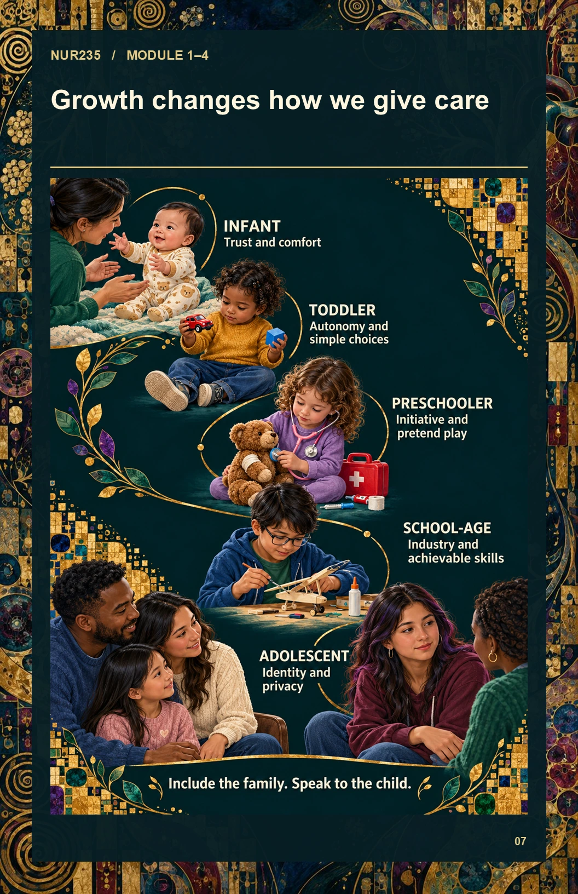
Read slide text and study notes
NUR235 / MODULE 1–4
Growth changes how we give care
07
Original study notes and source references
Growth changes how we give care
Schematic overview. Illustrations are not drawn to anatomical scale. Use the adjacent course details and assigned textbook for exam wording.
NUR235 content mastery infographic. Original native diagram by Codex. No Claude-created graphics.
High-level overview. The user-supplied module content reviews and textbook anchor the content. Book/course statements and current clarifications remain separate. Full prior wording is preserved below for study reference.
Some neurologic and musculoskeletal chapters are missing from the provided book extract. Available course sources and identified primary references supplement these gaps.
Pediatric assessment, comfort and pain
User module content reviews, NUR235
{"theories": {"book_chapter": 28, "text_lines": [38660, 38956], "supports": "Erikson stages and Piaget age/stage terminology; implications for teaching/play.", "opening_excerpt": "Provide oral stimulation by giving pacifiers; do not discourage thumb sucking."}, "infant-growth": {"book_chapter": 29, "text_lines": [39631, 39981], "supports": "Weight doubles at 4–6 months/triples at 1 year; textbook month-by-month motor/language anchors.", "opening_excerpt": "The physiologic changes that occur in the infant year reflect both the increasing maturity and growth of body organs."}, "infant-trust": {"book_chapter": 29, "text_lines": [40105, 40175], "supports": "Emotional/cognitive development, object permanence, trust.", "opening_excerpt": "Socialization, or learning how to interact with others, is an extensive phenomenon. One-month-old infants show they can differentiate between faces and other objects by studying a face or the picture of a face longer than other objects. They are calm and feed "}, "infant-safety": {"book_chapter": 29, "text_lines": [40271, 40379], "supports": "Falls, choking, burns, automobile and water safety; rear-facing age wording is outdated.", "opening_excerpt": "Q. A parent is worried about keeping their 2-month-old safe. “How can I prevent accidents at this age?” the parent asks."}, "infant-feed": {"book_chapter": 29, "text_lines": [40463, 40625], "supports": "Human milk/iron-fortified formula, complementary foods near 6 months, iron foods, no honey or cow milk as main drink before 12 months.", "opening_excerpt": "Feeding recommendations for infants from birth through 6 months are to provide human milk exclusively via breastfeeding or expression and stored in a bottle. Human milk is the ideal form of nutrition for infants. It provides all the necessary nutrients, protec"}, "infant-vaccine": {"book_chapter": 29, "text_lines": [39431, 39593], "supports": "Well-child assessment and the textbook vaccine table.", "opening_excerpt": "Height, weight, head circumference plotted on standard growth chart; physical examination"}, "toddler": {"book_chapter": 30, "text_lines": [41172, 41294], "supports": "Autonomy, parent observation, language concern at 2 years, slowed growth and appetite.", "opening_excerpt": "During the toddler period, the age span from 1 to 3 years, enormous changes take place in a child and, consequently, in a family. During this period, children accomplish a wide array of developmental tasks and change from largely immobile and preverbal infants"}, "preschool": {"book_chapter": 31, "text_lines": [41357, 41447], "supports": "Age3–5, participation through modeling/play, physical and developmental assessment; remainder unavailable in extraction.", "opening_excerpt": "The preschool period traditionally includes the years 3, 4, and 5. Although physical growth slows considerably during this period, personality and cognitive growth continue at a rapid rate. Caregivers may be unsure how much independence and responsibility for "}, "school-growth": {"book_chapter": 32, "text_lines": [41590, 41658], "supports": "School-age growth and onset/order of puberty.", "opening_excerpt": "The average annual weight gain for a school-aged child is approximately 3 to 5 lb (1.3 to 2.2 kg); the increase in height is 1 to 2 in. (2.5 to 5 cm). Children who did not lose a lordosis and knock-kneed appearance during the preschool period typically lose th"}, "school-thinking": {"book_chapter": 32, "text_lines": [41850, 41982], "supports": "Industry, concrete operations, conservation/classification and skill mastery.", "opening_excerpt": "Ideally, children enter the school-aged period with the ability to trust others and with a sense of self-respect. They can accomplish small tasks independently because they have gained a sense of autonomy. They should have practiced adult roles, learned to sha"}, "school-safety": {"book_chapter": 32, "text_lines": [42014, 42096], "supports": "Injury prevention and body safety teaching.", "opening_excerpt": "Teach children to avoid unsafe areas, such as train yards, grain silos, and back alleys."}, "school-health": {"book_chapter": 32, "text_lines": [42390, 42530], "supports": "Immunizations, dental care and health assessment; schedule contains outdated product/dose wording.", "opening_excerpt": "Check history and past records, inform caregiver about any risks and side effects, and administer immunization in accordance with healthcare agency policies."}, "school-stress": {"book_chapter": 32, "text_lines": [42790, 42865], "supports": "Stress, school difficulties and substance-use concerns.", "opening_excerpt": "Reproductive life planning measures and the principles of safer sex if appropriate to the cultural setting (see Chapters 5 and 6). Sexual orientation questions and concerns may arise at this time, and questions should be addressed honestly and openly."}, "adolescent-limit": {"book_chapter": 33, "text_lines": [43127, 43183], "supports": "Only opening case, objectives and preventive privacy goal are present; full chapter not available.", "opening_excerpt": "For additional ancillary materials related to this chapter, please visit the point."}, "assessment": {"book_chapter": 34, "text_lines": [43374, 43408], "supports": "Adolescent private interview; confidentiality must be qualified by safety/legal exceptions.", "opening_excerpt": "A second reason K.W.’s parent has brought the child to your ambulatory clinic is because of increased frequency and burning on urination."}, "exam-order": {"book_chapter": 34, "text_lines": [44020, 44046], "supports": "Assessment is adapted to age; least intrusive observations first, uncomfortable portions later.", "opening_excerpt": "Presented here are the components of a routine or general physical assessment. It is important to recognize what a “general” physical examination entails so you can interpret the extent of the assessment a child has received when the caregiver states, “My chil"}, "teaching": {"book_chapter": 35, "text_lines": [46729, 46945], "supports": "Teach-back, demonstration/return demonstration and development-specific communication.", "opening_excerpt": "Children have variable attention spans. Assess the learner and provide lessons in segments of 5–20 minutes. Ideally, the child should be well rested and well-nourished prior to the teaching."}, "hospital": {"book_chapter": 36, "text_lines": [48070, 48134], "supports": "Family presence, routines and protest/despair/detachment after separation.", "opening_excerpt": "Obtain any special information about the child that the parents think would make them more comfortable in the hospital."}, "procedures": {"book_chapter": 37, "text_lines": [49105, 49293], "supports": "Diagnostic/therapeutic modalities, consent and developmental planning; extracted chapter is incomplete.", "opening_excerpt": "Nursing Care of a Family When a Child Needs Diagnostic or Therapeutic Modalities"}, "med-dose": {"book_chapter": 38, "text_lines": [49350, 49578], "supports": "Measured kg weight, individual dose safety, assessment and fractional-dose example; reversed conversion typo at49352.", "opening_excerpt": "Most adults immediately grasp that taking a medicine you offer them will be important to relieve whatever symptoms they are experiencing from an illness. Because children do not necessarily have this same level of understanding, they may resist taking medicine"}, "med-route": {"book_chapter": 38, "text_lines": [49616, 49674], "supports": "Oral medication positioning, oral syringe and age-appropriate technique.", "opening_excerpt": "Children younger than 3 years are unable to swallow pills. After that age, the ability of children to swallow pills varies from one child to the next and is not age dependent. Typically, children older than 9 years can be offered tablets; however, some adolesc"}, "pain": {"book_chapter": 39, "text_lines": [50756, 50862], "supports": "Behavioral tools, FLACC, child self-report FACES/numeric and combined comfort/analgesia.", "opening_excerpt": "Each area of concern is scored from 0 to 2. Infants with a total score of 4 or more are most likely to be in pain and need interventions to reduce discomfort. The scale cannot be used with infants who are intubated or paralyzed for ventilator assistance becaus"}, "nosebleed": {"book_chapter": 40, "text_lines": [52143, 52155], "supports": "Sit upright/forward; continuous pressure over soft nose for about10min; evaluate persistent/recurrent bleeding.", "opening_excerpt": "Epistaxis (nosebleed) is extremely common in children and usually occurs from trauma or irritation such as picking at the nasal mucosa. Dry air can cause mucous membranes to become dry and susceptible to cracking and bleeding. Epistaxis may also occur after st"}, "hiv": {"book_chapter": 42, "text_lines": [55531, 55664], "supports": "HIV CD4 mechanism, infection risks, family coping; treatment specifics need current NIH guidance.", "opening_excerpt": "HIV is a slowly replicating retrovirus and has at least two main divisions, HIV-1 and HIV-2, followed by a variety of further subtypes. The virus acts by attacking the lymphoreticular system, in particular CD4-bearing helper T lymphocytes. The virus enters the"}, "allergy": {"book_chapter": 42, "text_lines": [56017, 56109], "supports": "Anaphylaxis manifestations, immediate IM epinephrine, emergency help and recurrent reaction risk.", "opening_excerpt": "Anaphylactic shock (anaphylaxis) is an immediate, life-threatening, type I hypersensitivity reaction that occurs after exposure to an allergen in a previously sensitized child. Anaphylaxis can be caused by exposure to foods such as milk, egg, peanut, and tree "}, "eczema": {"book_chapter": 42, "text_lines": [56307, 56475], "supports": "Atopic dermatitis itch–scratch cycle, distribution and skin care.", "opening_excerpt": "Atopic dermatitis is a highly pruritic, chronic inflammatory skin disease that is often the first manifestation of allergic disease. It is a common disorder that affects 15% to 20% of children (Chopra et al., 2017)."}, "contact": {"book_chapter": 42, "text_lines": [56561, 56585], "supports": "Allergic contact dermatitis/typeIV, exposure pattern and removal of allergen.", "opening_excerpt": "Contact dermatitis is an example of a delayed or type IV hypersensitivity response; it is a reaction to skin contact with an allergen (a substance irritating to the child only with prior sensitization). The first reaction is generally erythema, followed by the"}, "rubella": {"book_chapter": 43, "text_lines": [57521, 57549], "supports": "Rubella syndrome; printed incubation/communicability statements are unreliable.", "opening_excerpt": "Incubation period: Generally, 14 days within a range of 16 to 183 days (AAP, 2018)"}, "measles": {"book_chapter": 43, "text_lines": [57551, 57593], "supports": "Cough/coryza/conjunctivitis, Koplik spots and descending rash.", "opening_excerpt": "Incubation period: 8 to 12 days from time of exposure to onset of any symptoms (AAP, 2018), with a range from 7 to 21 days (Drutz, 2016)"}, "varicella": {"book_chapter": 43, "text_lines": [57595, 57643], "supports": "Vesicles in crops, infection/complication risks; immune-globulin timing differs from current guidance.", "opening_excerpt": "Incubation period: 10 to 21 days, with the most common incidence at 14 to 16 days following exposure (Kennedy & Gershon, 2018)"}, "fifth": {"book_chapter": 43, "text_lines": [57677, 57704], "supports": "Parvovirus B19, slapped-cheek/lacy eruption and host-specific risk.", "opening_excerpt": "Incubation period: Most commonly between 4 and 14 days and can be as long as 21 days (AAP, 2018)"}, "mono": {"book_chapter": 43, "text_lines": [58009, 58048], "supports": "EBV saliva transmission, pharyngitis/adenopathy/fatigue and splenic risk.", "opening_excerpt": "Incubation period: Incubation period in adults and adolescents is 4 to 7 weeks, with a shorter incubation period in children (Fugl & Andersen, 2019)."}, "scarlet": {"book_chapter": 43, "text_lines": [58221, 58249], "supports": "GAS toxin-associated pharyngitis, sandpaper rash and antimicrobial treatment.", "opening_excerpt": "Incubation period: 2 to 5 days for streptococcal pharyngitis (AAP, 2018)"}, "impetigo": {"book_chapter": 43, "text_lines": [58251, 58280], "supports": "Staphylococcal/streptococcal superficial infection with honey crusts.", "opening_excerpt": "Causative agent: Beta-hemolytic streptococcus, group A or Staphylococcus aureus including methicillin-resistant Staphylococcus aureus (MRSA) (to be discussed in the subsequent section)"}, "pertussis": {"book_chapter": 43, "text_lines": [58365, 58417], "supports": "Paroxysmal cough, infant risk and treatment; immunity and isolation wording need updating.", "opening_excerpt": "Mode of transmission: Highly contagious by direct or indirect contact"}, "lice": {"book_chapter": 43, "text_lines": [58587, 58647], "supports": "Pediculosis and family teaching; avoid stigma about hygiene.", "opening_excerpt": "Small, white flecks on hair shaft (nits or eggs of lice); extreme pruritus"}, "pinworm": {"book_chapter": 43, "text_lines": [58649, 58655], "supports": "Nocturnal perianal itching, tape test and household hygiene; text omits repeat dose.", "opening_excerpt": "Pinworms are small, white, threadlike worms that live in the cecum. After ingestion of the egg, the mature worms develop over a period of 2 months in the cecum. The mature female pinworm then migrates out of the anus to deposit eggs on the skin in the anal and"}, "tinea": {"book_chapter": 43, "text_lines": [58675, 58705], "supports": "Tinea skin/scalp distinctions and antifungal treatment.", "opening_excerpt": "Fungi are larger than bacteria; some are unicellular (yeasts), but, generally, they are multicellular (molds). Deep mycoses invade internal organs. Respiratory transmission is by the inhalation of spores. Subcutaneous mycoses invade the skin, subcutaneous tiss"}, "transfusion": {"book_chapter": 44, "text_lines": [59254, 59340], "supports": "Transfusion setup, monitoring, reaction symptoms/stop action; printed AHTR label is inaccurate.", "opening_excerpt": "Transfusions of blood or its products are commonly used in the treatment of blood disorders and may include whole blood, packed RBCs, washed RBCs (as much “foreign” matter is removed as possible to reduce the possibility of an antagonistic reaction), plasma, p"}, "iron": {"book_chapter": 44, "text_lines": [59580, 59678], "supports": "Iron deficiency risks, low hemoglobin indices, diet and iron teaching.", "opening_excerpt": "Although the incidence of iron-deficiency anemia is decreasing in the United States due to improved infant nutrition, it is still the most common anemia of infancy and childhood, occurring whenever the intake of dietary iron is inadequate. Without adequate iro"}, "sickle": {"book_chapter": 44, "text_lines": [59738, 59974], "supports": "HbS vaso-occlusion/hemolysis, pain, sequestration/aplastic crises, hydration and analgesia.", "opening_excerpt": "Sickle cell anemia is an autosomal recessive inherited disorder carried on the beta chain of hemoglobin; the amino acid valine takes the place of the normally appearing glutamic acid. With this, the erythrocytes become characteristically elongated and crescent"}, "hemophilia": {"book_chapter": 44, "text_lines": [60258, 60318], "supports": "FactorVIII versusIX, X-linked inheritance and hemarthrosis.", "opening_excerpt": "Hemophilias are inherited disorders of blood coagulation. There are numerous types, each involving a deficiency of a different blood coagulation factor."}, "conjunctivitis": {"book_chapter": 50, "text_lines": [67992, 68042], "supports": "Conjunctivitis differential; the same content is duplicated earlier at66629–66679.", "opening_excerpt": "Inflammation of the conjunctiva; causes are numerous, including ophthalmia neonatorum (exposure to gonococcus bacillus; see Chapter 26) and bacterial, viral, and fungal organisms"}, "burns": {"book_chapter": 52, "text_lines": [70007, 70241], "supports": "Burn depth/area, ABCs, temperature/fluid/pain/infection and nutrition.", "opening_excerpt": "Burns are injuries to body tissue caused by excessive heat (greater than 104°F [40°C]). Burns are the second most common unintentional injury seen in children 1 to 4 years of age and the third most common cause of injury in children 5 to 14 years of age. Every"}, "oncology-care": {"book_chapter": 53, "text_lines": [71294, 71440], "supports": "Mucositis, infection, treatment-related toxicity and family care.", "opening_excerpt": "Children receiving long-term corticosteroid (e.g., dexamethasone or prednisone) therapy develop a typical “moon face,” red cheeks, and a stocky build. Like the loss of hair, a cushingoid appearance can be devastating to children or parents, the final insult in"}, "leukemia": {"book_chapter": 53, "text_lines": [71472, 71610], "supports": "Marrow blast proliferation causes anemia, infection risk and low platelets; diagnostic/treatment priorities.", "opening_excerpt": "Leukemia is the distorted and uncontrolled proliferation of WBCs (leukocytes) and is the most frequently occurring type of cancer in children."}, "brain": {"book_chapter": 53, "text_lines": [71716, 71906], "supports": "Brain tumor location, ICP/neurologic changes and surgery-specific postoperative care.", "opening_excerpt": "Brain tumors are the second most common form of cancer and the most common solid tumor in children. Tumors tend to occur between 1 and 10 years of age, with 5 years being the peak age of incidence. In children, brain tumors tend to occur at the midline in the "}, "wilms": {"book_chapter": 53, "text_lines": [72098, 72118], "supports": "Renal mass, hematuria/hypertension, imaging and nephrectomy-based treatment.", "opening_excerpt": "Nephroblastoma (Wilms tumor) is a malignant tumor that rises from the metanephric mesoderm cells of the upper pole of the kidney (Malkan et al., 2015). It accounts for 20% of solid tumors in childhood, and overall survival rates are greater than 90%. It may oc"}, "abuse": {"book_chapter": 55, "text_lines": [72856, 72958], "supports": "Maltreatment assessment, child protection, objective documentation and family concerns.", "opening_excerpt": "When obtaining a history, ask caregivers to account for any injury to a child’s body. Remember, however, that most childhood injuries are the result of unintentional injuries caused by the child’s inability to distinguish safe situations from dangerous ones or"}}
{"sleep": {"url": "https://www.aap.org/en/patient-care/safe-sleep/", "title": "AAP safe sleep"}, "carseat": {"url": "https://www.nhtsa.gov/vehicle-safety/car-seats-and-booster-seats", "title": "NHTSA child restraint recommendations"}, "milestones2": {"url": "https://www.cdc.gov/act-early/milestones/2-years.html", "title": "CDC milestones by2years"}, "milestones3": {"url": "https://www.cdc.gov/act-early/milestones/3-years.html", "title": "CDC milestones by3years"}, "milestones4": {"url": "https://www.cdc.gov/act-early/milestones/4-years.html", "title": "CDC milestones by4years"}, "milestones5": {"url": "https://www.cdc.gov/act-early/milestones/5-years.html", "title": "CDC milestones by5years"}, "vaccine": {"url": "https://www.cdc.gov/vaccines/hcp/imz-schedules/child-adolescent-age.html", "title": "CDC age schedule, page labels its addendum July2,2025"}, "aap2026": {"url": "https://publications.aap.org/pediatrics/article/157/3/e2025075754/206175/Recommended-Childhood-andAdolescent-Immunization", "title": "AAP2026 childhood/adolescent immunization policy"}, "meds": {"url": "https://www.healthychildren.org/English/safety-prevention/at-home/medication-safety/Pages/Using-Liquid-Medicines.aspx", "title": "AAP liquid medication measurement"}, "sickle-current": {"url": "https://www.nhlbi.nih.gov/sites/default/files/publications/56-364NFULL.pdf", "title": "NHLBI sickle-cell expert report: oxygen/fluids/transfusion in VOC"}, "sickle-ash": {"url": "https://doi.org/10.1182/bloodadvances.2020001851", "title": "ASH2020 sickle-cell pain guideline"}, "isolation": {"url": "https://www.cdc.gov/infection-control/hcp/isolation-precautions/appendix-a-type-duration.html", "title": "CDC isolation appendix, updated September11,2026"}, "pinworm-current": {"url": "https://www.cdc.gov/pinworm/hcp/clinical-overview/index.html", "title": "CDC pinworm treatment"}, "lice-current": {"url": "https://www.cdc.gov/lice/caring-head/", "title": "CDC head lice and school attendance"}, "pinkeye": {"url": "https://www.cdc.gov/conjunctivitis/treatment/", "title": "CDC conjunctivitis treatment"}, "acne": {"url": "https://www.aad.org/member/clinical-quality/guidelines/acne", "title": "AAD acne guideline"}, "hiv-current": {"url": "https://clinicalinfo.hiv.gov/en/guidelines/pediatric-arv/regimens-recommended-initial-therapy-antiretroviral-naive-children", "title": "NIH pediatric antiretroviral therapy"}, "blood": {"url": "https://www.isbtweb.org/resources/educational-modules-on-clinical-use-of-blood/adverse-effects-of-transfusion.html", "title": "ISBT adverse transfusion effects"}, "wilms-current": {"url": "https://medlineplus.gov/ency/article/001575.htm", "title": "MedlinePlus Wilms tumor and careful handling"}}
Assess before you approach
Observe appearance, breathing, interaction and hydration first. Compare with the child’s usual behavior and age-appropriate vital signs.
Use the caregiver’s lap, least intrusive steps first and simple explanations. Keep painful/invasive steps for later when clinically safe.
Infant: comfort and consistency. Toddler: brief words and two acceptable choices. Preschooler: play and literal explanations. School-age: show how it works. Adolescent: privacy and participation.
Hospitalization and procedures
Separation may progress through protest → despair → detachment. A quiet child has not necessarily adjusted.
Keep family presence, familiar routines and a comfort item. Explain what the child will feel. Never promise that a painful procedure will not hurt.
Verify consent/assent, specimen/site and collection instructions. Use comfort positioning, distraction and prescribed topical/local analgesia, then label specimens correctly.
Pain: match the tool to ability
Behavioral assessment for a child unable to self-report: FLACC = Face, Legs, Activity, Cry, Consolability.
Use FACES when the child understands the task. Use numeric rating when number/order concepts are understood. The child’s self-report is preferred when possible.
Combine analgesia with comfort, caregiver support and distraction. Reassess with the same tool after treatment.
Do not equate chronologic age alone with communication or pain-scale ability. For an unstable child, immediate physiologic priorities override the usual least-intrusive examination sequence.
Recall: A toddler stops crying after prolonged separation. Has the child necessarily accepted it?
Answer: No. Despair or detachment may look quiet; assess behavior and restore supportive contact.
NUR235 content mastery infographic. Original native diagram by Codex. No Claude-created graphics.
High-level overview. The user-supplied module content reviews and textbook anchor the content. Book/course statements and current clarifications remain separate. Full prior wording is preserved below for study reference.
Some neurologic and musculoskeletal chapters are missing from the provided book extract. Available course sources and identified primary references supplement these gaps.
Infant growth and development
User module content reviews, NUR235
{"theories": {"book_chapter": 28, "text_lines": [38660, 38956], "supports": "Erikson stages and Piaget age/stage terminology; implications for teaching/play.", "opening_excerpt": "Provide oral stimulation by giving pacifiers; do not discourage thumb sucking."}, "infant-growth": {"book_chapter": 29, "text_lines": [39631, 39981], "supports": "Weight doubles at 4–6 months/triples at 1 year; textbook month-by-month motor/language anchors.", "opening_excerpt": "The physiologic changes that occur in the infant year reflect both the increasing maturity and growth of body organs."}, "infant-trust": {"book_chapter": 29, "text_lines": [40105, 40175], "supports": "Emotional/cognitive development, object permanence, trust.", "opening_excerpt": "Socialization, or learning how to interact with others, is an extensive phenomenon. One-month-old infants show they can differentiate between faces and other objects by studying a face or the picture of a face longer than other objects. They are calm and feed "}, "infant-safety": {"book_chapter": 29, "text_lines": [40271, 40379], "supports": "Falls, choking, burns, automobile and water safety; rear-facing age wording is outdated.", "opening_excerpt": "Q. A parent is worried about keeping their 2-month-old safe. “How can I prevent accidents at this age?” the parent asks."}, "infant-feed": {"book_chapter": 29, "text_lines": [40463, 40625], "supports": "Human milk/iron-fortified formula, complementary foods near 6 months, iron foods, no honey or cow milk as main drink before 12 months.", "opening_excerpt": "Feeding recommendations for infants from birth through 6 months are to provide human milk exclusively via breastfeeding or expression and stored in a bottle. Human milk is the ideal form of nutrition for infants. It provides all the necessary nutrients, protec"}, "infant-vaccine": {"book_chapter": 29, "text_lines": [39431, 39593], "supports": "Well-child assessment and the textbook vaccine table.", "opening_excerpt": "Height, weight, head circumference plotted on standard growth chart; physical examination"}, "toddler": {"book_chapter": 30, "text_lines": [41172, 41294], "supports": "Autonomy, parent observation, language concern at 2 years, slowed growth and appetite.", "opening_excerpt": "During the toddler period, the age span from 1 to 3 years, enormous changes take place in a child and, consequently, in a family. During this period, children accomplish a wide array of developmental tasks and change from largely immobile and preverbal infants"}, "preschool": {"book_chapter": 31, "text_lines": [41357, 41447], "supports": "Age3–5, participation through modeling/play, physical and developmental assessment; remainder unavailable in extraction.", "opening_excerpt": "The preschool period traditionally includes the years 3, 4, and 5. Although physical growth slows considerably during this period, personality and cognitive growth continue at a rapid rate. Caregivers may be unsure how much independence and responsibility for "}, "school-growth": {"book_chapter": 32, "text_lines": [41590, 41658], "supports": "School-age growth and onset/order of puberty.", "opening_excerpt": "The average annual weight gain for a school-aged child is approximately 3 to 5 lb (1.3 to 2.2 kg); the increase in height is 1 to 2 in. (2.5 to 5 cm). Children who did not lose a lordosis and knock-kneed appearance during the preschool period typically lose th"}, "school-thinking": {"book_chapter": 32, "text_lines": [41850, 41982], "supports": "Industry, concrete operations, conservation/classification and skill mastery.", "opening_excerpt": "Ideally, children enter the school-aged period with the ability to trust others and with a sense of self-respect. They can accomplish small tasks independently because they have gained a sense of autonomy. They should have practiced adult roles, learned to sha"}, "school-safety": {"book_chapter": 32, "text_lines": [42014, 42096], "supports": "Injury prevention and body safety teaching.", "opening_excerpt": "Teach children to avoid unsafe areas, such as train yards, grain silos, and back alleys."}, "school-health": {"book_chapter": 32, "text_lines": [42390, 42530], "supports": "Immunizations, dental care and health assessment; schedule contains outdated product/dose wording.", "opening_excerpt": "Check history and past records, inform caregiver about any risks and side effects, and administer immunization in accordance with healthcare agency policies."}, "school-stress": {"book_chapter": 32, "text_lines": [42790, 42865], "supports": "Stress, school difficulties and substance-use concerns.", "opening_excerpt": "Reproductive life planning measures and the principles of safer sex if appropriate to the cultural setting (see Chapters 5 and 6). Sexual orientation questions and concerns may arise at this time, and questions should be addressed honestly and openly."}, "adolescent-limit": {"book_chapter": 33, "text_lines": [43127, 43183], "supports": "Only opening case, objectives and preventive privacy goal are present; full chapter not available.", "opening_excerpt": "For additional ancillary materials related to this chapter, please visit the point."}, "assessment": {"book_chapter": 34, "text_lines": [43374, 43408], "supports": "Adolescent private interview; confidentiality must be qualified by safety/legal exceptions.", "opening_excerpt": "A second reason K.W.’s parent has brought the child to your ambulatory clinic is because of increased frequency and burning on urination."}, "exam-order": {"book_chapter": 34, "text_lines": [44020, 44046], "supports": "Assessment is adapted to age; least intrusive observations first, uncomfortable portions later.", "opening_excerpt": "Presented here are the components of a routine or general physical assessment. It is important to recognize what a “general” physical examination entails so you can interpret the extent of the assessment a child has received when the caregiver states, “My chil"}, "teaching": {"book_chapter": 35, "text_lines": [46729, 46945], "supports": "Teach-back, demonstration/return demonstration and development-specific communication.", "opening_excerpt": "Children have variable attention spans. Assess the learner and provide lessons in segments of 5–20 minutes. Ideally, the child should be well rested and well-nourished prior to the teaching."}, "hospital": {"book_chapter": 36, "text_lines": [48070, 48134], "supports": "Family presence, routines and protest/despair/detachment after separation.", "opening_excerpt": "Obtain any special information about the child that the parents think would make them more comfortable in the hospital."}, "procedures": {"book_chapter": 37, "text_lines": [49105, 49293], "supports": "Diagnostic/therapeutic modalities, consent and developmental planning; extracted chapter is incomplete.", "opening_excerpt": "Nursing Care of a Family When a Child Needs Diagnostic or Therapeutic Modalities"}, "med-dose": {"book_chapter": 38, "text_lines": [49350, 49578], "supports": "Measured kg weight, individual dose safety, assessment and fractional-dose example; reversed conversion typo at49352.", "opening_excerpt": "Most adults immediately grasp that taking a medicine you offer them will be important to relieve whatever symptoms they are experiencing from an illness. Because children do not necessarily have this same level of understanding, they may resist taking medicine"}, "med-route": {"book_chapter": 38, "text_lines": [49616, 49674], "supports": "Oral medication positioning, oral syringe and age-appropriate technique.", "opening_excerpt": "Children younger than 3 years are unable to swallow pills. After that age, the ability of children to swallow pills varies from one child to the next and is not age dependent. Typically, children older than 9 years can be offered tablets; however, some adolesc"}, "pain": {"book_chapter": 39, "text_lines": [50756, 50862], "supports": "Behavioral tools, FLACC, child self-report FACES/numeric and combined comfort/analgesia.", "opening_excerpt": "Each area of concern is scored from 0 to 2. Infants with a total score of 4 or more are most likely to be in pain and need interventions to reduce discomfort. The scale cannot be used with infants who are intubated or paralyzed for ventilator assistance becaus"}, "nosebleed": {"book_chapter": 40, "text_lines": [52143, 52155], "supports": "Sit upright/forward; continuous pressure over soft nose for about10min; evaluate persistent/recurrent bleeding.", "opening_excerpt": "Epistaxis (nosebleed) is extremely common in children and usually occurs from trauma or irritation such as picking at the nasal mucosa. Dry air can cause mucous membranes to become dry and susceptible to cracking and bleeding. Epistaxis may also occur after st"}, "hiv": {"book_chapter": 42, "text_lines": [55531, 55664], "supports": "HIV CD4 mechanism, infection risks, family coping; treatment specifics need current NIH guidance.", "opening_excerpt": "HIV is a slowly replicating retrovirus and has at least two main divisions, HIV-1 and HIV-2, followed by a variety of further subtypes. The virus acts by attacking the lymphoreticular system, in particular CD4-bearing helper T lymphocytes. The virus enters the"}, "allergy": {"book_chapter": 42, "text_lines": [56017, 56109], "supports": "Anaphylaxis manifestations, immediate IM epinephrine, emergency help and recurrent reaction risk.", "opening_excerpt": "Anaphylactic shock (anaphylaxis) is an immediate, life-threatening, type I hypersensitivity reaction that occurs after exposure to an allergen in a previously sensitized child. Anaphylaxis can be caused by exposure to foods such as milk, egg, peanut, and tree "}, "eczema": {"book_chapter": 42, "text_lines": [56307, 56475], "supports": "Atopic dermatitis itch–scratch cycle, distribution and skin care.", "opening_excerpt": "Atopic dermatitis is a highly pruritic, chronic inflammatory skin disease that is often the first manifestation of allergic disease. It is a common disorder that affects 15% to 20% of children (Chopra et al., 2017)."}, "contact": {"book_chapter": 42, "text_lines": [56561, 56585], "supports": "Allergic contact dermatitis/typeIV, exposure pattern and removal of allergen.", "opening_excerpt": "Contact dermatitis is an example of a delayed or type IV hypersensitivity response; it is a reaction to skin contact with an allergen (a substance irritating to the child only with prior sensitization). The first reaction is generally erythema, followed by the"}, "rubella": {"book_chapter": 43, "text_lines": [57521, 57549], "supports": "Rubella syndrome; printed incubation/communicability statements are unreliable.", "opening_excerpt": "Incubation period: Generally, 14 days within a range of 16 to 183 days (AAP, 2018)"}, "measles": {"book_chapter": 43, "text_lines": [57551, 57593], "supports": "Cough/coryza/conjunctivitis, Koplik spots and descending rash.", "opening_excerpt": "Incubation period: 8 to 12 days from time of exposure to onset of any symptoms (AAP, 2018), with a range from 7 to 21 days (Drutz, 2016)"}, "varicella": {"book_chapter": 43, "text_lines": [57595, 57643], "supports": "Vesicles in crops, infection/complication risks; immune-globulin timing differs from current guidance.", "opening_excerpt": "Incubation period: 10 to 21 days, with the most common incidence at 14 to 16 days following exposure (Kennedy & Gershon, 2018)"}, "fifth": {"book_chapter": 43, "text_lines": [57677, 57704], "supports": "Parvovirus B19, slapped-cheek/lacy eruption and host-specific risk.", "opening_excerpt": "Incubation period: Most commonly between 4 and 14 days and can be as long as 21 days (AAP, 2018)"}, "mono": {"book_chapter": 43, "text_lines": [58009, 58048], "supports": "EBV saliva transmission, pharyngitis/adenopathy/fatigue and splenic risk.", "opening_excerpt": "Incubation period: Incubation period in adults and adolescents is 4 to 7 weeks, with a shorter incubation period in children (Fugl & Andersen, 2019)."}, "scarlet": {"book_chapter": 43, "text_lines": [58221, 58249], "supports": "GAS toxin-associated pharyngitis, sandpaper rash and antimicrobial treatment.", "opening_excerpt": "Incubation period: 2 to 5 days for streptococcal pharyngitis (AAP, 2018)"}, "impetigo": {"book_chapter": 43, "text_lines": [58251, 58280], "supports": "Staphylococcal/streptococcal superficial infection with honey crusts.", "opening_excerpt": "Causative agent: Beta-hemolytic streptococcus, group A or Staphylococcus aureus including methicillin-resistant Staphylococcus aureus (MRSA) (to be discussed in the subsequent section)"}, "pertussis": {"book_chapter": 43, "text_lines": [58365, 58417], "supports": "Paroxysmal cough, infant risk and treatment; immunity and isolation wording need updating.", "opening_excerpt": "Mode of transmission: Highly contagious by direct or indirect contact"}, "lice": {"book_chapter": 43, "text_lines": [58587, 58647], "supports": "Pediculosis and family teaching; avoid stigma about hygiene.", "opening_excerpt": "Small, white flecks on hair shaft (nits or eggs of lice); extreme pruritus"}, "pinworm": {"book_chapter": 43, "text_lines": [58649, 58655], "supports": "Nocturnal perianal itching, tape test and household hygiene; text omits repeat dose.", "opening_excerpt": "Pinworms are small, white, threadlike worms that live in the cecum. After ingestion of the egg, the mature worms develop over a period of 2 months in the cecum. The mature female pinworm then migrates out of the anus to deposit eggs on the skin in the anal and"}, "tinea": {"book_chapter": 43, "text_lines": [58675, 58705], "supports": "Tinea skin/scalp distinctions and antifungal treatment.", "opening_excerpt": "Fungi are larger than bacteria; some are unicellular (yeasts), but, generally, they are multicellular (molds). Deep mycoses invade internal organs. Respiratory transmission is by the inhalation of spores. Subcutaneous mycoses invade the skin, subcutaneous tiss"}, "transfusion": {"book_chapter": 44, "text_lines": [59254, 59340], "supports": "Transfusion setup, monitoring, reaction symptoms/stop action; printed AHTR label is inaccurate.", "opening_excerpt": "Transfusions of blood or its products are commonly used in the treatment of blood disorders and may include whole blood, packed RBCs, washed RBCs (as much “foreign” matter is removed as possible to reduce the possibility of an antagonistic reaction), plasma, p"}, "iron": {"book_chapter": 44, "text_lines": [59580, 59678], "supports": "Iron deficiency risks, low hemoglobin indices, diet and iron teaching.", "opening_excerpt": "Although the incidence of iron-deficiency anemia is decreasing in the United States due to improved infant nutrition, it is still the most common anemia of infancy and childhood, occurring whenever the intake of dietary iron is inadequate. Without adequate iro"}, "sickle": {"book_chapter": 44, "text_lines": [59738, 59974], "supports": "HbS vaso-occlusion/hemolysis, pain, sequestration/aplastic crises, hydration and analgesia.", "opening_excerpt": "Sickle cell anemia is an autosomal recessive inherited disorder carried on the beta chain of hemoglobin; the amino acid valine takes the place of the normally appearing glutamic acid. With this, the erythrocytes become characteristically elongated and crescent"}, "hemophilia": {"book_chapter": 44, "text_lines": [60258, 60318], "supports": "FactorVIII versusIX, X-linked inheritance and hemarthrosis.", "opening_excerpt": "Hemophilias are inherited disorders of blood coagulation. There are numerous types, each involving a deficiency of a different blood coagulation factor."}, "conjunctivitis": {"book_chapter": 50, "text_lines": [67992, 68042], "supports": "Conjunctivitis differential; the same content is duplicated earlier at66629–66679.", "opening_excerpt": "Inflammation of the conjunctiva; causes are numerous, including ophthalmia neonatorum (exposure to gonococcus bacillus; see Chapter 26) and bacterial, viral, and fungal organisms"}, "burns": {"book_chapter": 52, "text_lines": [70007, 70241], "supports": "Burn depth/area, ABCs, temperature/fluid/pain/infection and nutrition.", "opening_excerpt": "Burns are injuries to body tissue caused by excessive heat (greater than 104°F [40°C]). Burns are the second most common unintentional injury seen in children 1 to 4 years of age and the third most common cause of injury in children 5 to 14 years of age. Every"}, "oncology-care": {"book_chapter": 53, "text_lines": [71294, 71440], "supports": "Mucositis, infection, treatment-related toxicity and family care.", "opening_excerpt": "Children receiving long-term corticosteroid (e.g., dexamethasone or prednisone) therapy develop a typical “moon face,” red cheeks, and a stocky build. Like the loss of hair, a cushingoid appearance can be devastating to children or parents, the final insult in"}, "leukemia": {"book_chapter": 53, "text_lines": [71472, 71610], "supports": "Marrow blast proliferation causes anemia, infection risk and low platelets; diagnostic/treatment priorities.", "opening_excerpt": "Leukemia is the distorted and uncontrolled proliferation of WBCs (leukocytes) and is the most frequently occurring type of cancer in children."}, "brain": {"book_chapter": 53, "text_lines": [71716, 71906], "supports": "Brain tumor location, ICP/neurologic changes and surgery-specific postoperative care.", "opening_excerpt": "Brain tumors are the second most common form of cancer and the most common solid tumor in children. Tumors tend to occur between 1 and 10 years of age, with 5 years being the peak age of incidence. In children, brain tumors tend to occur at the midline in the "}, "wilms": {"book_chapter": 53, "text_lines": [72098, 72118], "supports": "Renal mass, hematuria/hypertension, imaging and nephrectomy-based treatment.", "opening_excerpt": "Nephroblastoma (Wilms tumor) is a malignant tumor that rises from the metanephric mesoderm cells of the upper pole of the kidney (Malkan et al., 2015). It accounts for 20% of solid tumors in childhood, and overall survival rates are greater than 90%. It may oc"}, "abuse": {"book_chapter": 55, "text_lines": [72856, 72958], "supports": "Maltreatment assessment, child protection, objective documentation and family concerns.", "opening_excerpt": "When obtaining a history, ask caregivers to account for any injury to a child’s body. Remember, however, that most childhood injuries are the result of unintentional injuries caused by the child’s inability to distinguish safe situations from dangerous ones or"}}
{"sleep": {"url": "https://www.aap.org/en/patient-care/safe-sleep/", "title": "AAP safe sleep"}, "carseat": {"url": "https://www.nhtsa.gov/vehicle-safety/car-seats-and-booster-seats", "title": "NHTSA child restraint recommendations"}, "milestones2": {"url": "https://www.cdc.gov/act-early/milestones/2-years.html", "title": "CDC milestones by2years"}, "milestones3": {"url": "https://www.cdc.gov/act-early/milestones/3-years.html", "title": "CDC milestones by3years"}, "milestones4": {"url": "https://www.cdc.gov/act-early/milestones/4-years.html", "title": "CDC milestones by4years"}, "milestones5": {"url": "https://www.cdc.gov/act-early/milestones/5-years.html", "title": "CDC milestones by5years"}, "vaccine": {"url": "https://www.cdc.gov/vaccines/hcp/imz-schedules/child-adolescent-age.html", "title": "CDC age schedule, page labels its addendum July2,2025"}, "aap2026": {"url": "https://publications.aap.org/pediatrics/article/157/3/e2025075754/206175/Recommended-Childhood-andAdolescent-Immunization", "title": "AAP2026 childhood/adolescent immunization policy"}, "meds": {"url": "https://www.healthychildren.org/English/safety-prevention/at-home/medication-safety/Pages/Using-Liquid-Medicines.aspx", "title": "AAP liquid medication measurement"}, "sickle-current": {"url": "https://www.nhlbi.nih.gov/sites/default/files/publications/56-364NFULL.pdf", "title": "NHLBI sickle-cell expert report: oxygen/fluids/transfusion in VOC"}, "sickle-ash": {"url": "https://doi.org/10.1182/bloodadvances.2020001851", "title": "ASH2020 sickle-cell pain guideline"}, "isolation": {"url": "https://www.cdc.gov/infection-control/hcp/isolation-precautions/appendix-a-type-duration.html", "title": "CDC isolation appendix, updated September11,2026"}, "pinworm-current": {"url": "https://www.cdc.gov/pinworm/hcp/clinical-overview/index.html", "title": "CDC pinworm treatment"}, "lice-current": {"url": "https://www.cdc.gov/lice/caring-head/", "title": "CDC head lice and school attendance"}, "pinkeye": {"url": "https://www.cdc.gov/conjunctivitis/treatment/", "title": "CDC conjunctivitis treatment"}, "acne": {"url": "https://www.aad.org/member/clinical-quality/guidelines/acne", "title": "AAD acne guideline"}, "hiv-current": {"url": "https://clinicalinfo.hiv.gov/en/guidelines/pediatric-arv/regimens-recommended-initial-therapy-antiretroviral-naive-children", "title": "NIH pediatric antiretroviral therapy"}, "blood": {"url": "https://www.isbtweb.org/resources/educational-modules-on-clinical-use-of-blood/adverse-effects-of-transfusion.html", "title": "ISBT adverse transfusion effects"}, "wilms-current": {"url": "https://medlineplus.gov/ency/article/001575.htm", "title": "MedlinePlus Wilms tumor and careful handling"}}
Core development
Erikson: trust versus mistrust → consistent, responsive care.
Piaget: sensorimotor → learning through movement and senses. Emerging object permanence supports peek-a-boo.
Stranger/separation anxiety is expected later in infancy. Approach gradually with the caregiver close.
Textbook anchors for the exam
Birth weight doubles at 4–6 months and triples by 1 year. Follow weight, length and head-circumference curves.
2 months: social smile/cooing. 4 months: improved head control. 6 months: begins sitting.
8 months: sits securely without support. 10 months: pulls to stand and pincer grasp. 12 months: stands. Some take a step.
Assessment and parent teaching
Count respirations while quiet. Assess feeding, wet diapers, interaction and work of breathing.
Loss of an acquired skill, persistent poor growth, marked asymmetry or caregiver concern needs follow-up.
Talk, read, sing and offer supervised awake tummy time. Use safe toys too large to swallow.
Keep textbook ages labeled. CDC milestone checklists describe skills achieved by most children and use different surveillance thresholds; they are not an interchangeable table of average ages. The book lists a first word at9months and four words at12months; do not silently portray those as current screening cutoffs.
Recall: Why does an 8-month-old cry when the nurse approaches?
Answer: Stranger anxiety can be developmentally expected; use the caregiver as the secure base.
Infant nutrition and safety
Nutrition and growth
Human milk or iron-fortified formula is the main nutrition in the first year. Introduce complementary foods around 6 months when ready.
Include iron-rich foods. Discuss prescribed iron/vitamin D needs. No honey before 12 months. No cow’s milk as the main drink before 12 months.
Use age-appropriate textures, seated supervised feeding and choking-safe food sizes. Never prop a bottle.
Safety that matches new skills
Back for every sleep. Firm, flat sleep surface with no loose bedding or soft objects. Awake tummy time is separate from sleep.
Rear-facing car seat until the child reaches the seat’s rear-facing height or weight limit. Use the back seat.
Expect rolling before the first fall: protect changing surfaces, stairs, hot liquids, medicines, cords and water access. Never shake an infant.
Health promotion
Review immunization records at every visit. The course’s infant table emphasizes the 2/4/6-month series and vaccines beginning near the first birthday.
Support dental care with tooth eruption, well-child follow-up and screening according to age/risk.
For prolonged crying, assess illness and feeding first. If overwhelmed, place the infant safely in the crib and obtain support.
Source difference: textbook line40299 allows rear-facing only to6–12months or manufacturer limits; current NHTSA guidance keeps the child rear-facing to the seat limit. Vaccine timings in this course table are not a complete current schedule; name the schedule/year when showing exact intervals.
Recall: The infant falls asleep in a swing. What changes?
Answer: Move the infant to a firm, flat sleep surface on the back as soon as possible.
Book and current-guidance comparisons
{"topic": "Conversion typo", "old": "1 lb = 2.2 kg", "new": "Show 1kg≈2.2lb and kg=lb÷2.2; note the reversed source conversion explicitly.", "sources": [{"url": "https://www.healthychildren.org/English/safety-prevention/at-home/medication-safety/Pages/Using-Liquid-Medicines.aspx", "title": "AAP liquid medication measurement"}], "evidence": [49352, 49352]}
{"topic": "Rear facing", "old": "rear-facing until6–12months or manufacturer limits", "new": "Keep rear-facing until the height/weight limit of the rear-facing seat.", "sources": [{"url": "https://www.nhtsa.gov/vehicle-safety/car-seats-and-booster-seats", "title": "NHTSA child restraint recommendations"}], "evidence": [40299, 40299]}
Weight conversion
Book/course wording: The source prints “1 lb = 2.2 kg.”
Current clarification: This conversion is reversed. 1 kg ≈ 2.2 lb. Convert pounds to kilograms by dividing by 2.2.
Rear-facing car seats
Book/course wording: Rear-facing until 6–12 months or the manufacturer’s limits.
Current clarification: Keep the child rear-facing until reaching the seat’s rear-facing height or weight limit, rather than changing direction at a fixed infant age.
{"topic": "Milestones", "old": "Month-by-month textbook ages, including first word9mo and four words12mo", "new": "Label textbook anchors. Current CDC checklists use75%-attainment surveillance thresholds; do not silently merge the tables.", "sources": [{"url": "https://www.cdc.gov/act-early/milestones/2-years.html", "title": "CDC milestones by2years"}, {"url": "https://www.cdc.gov/act-early/milestones/3-years.html", "title": "CDC milestones by3years"}, {"url": "https://www.cdc.gov/act-early/milestones/4-years.html", "title": "CDC milestones by4years"}, {"url": "https://www.cdc.gov/act-early/milestones/5-years.html", "title": "CDC milestones by5years"}], "evidence": [39825, 39981]}
{"topic": "Vaccines", "old": "DTaP at11–12years; automatic three-dose HPV series", "new": "Use Tdap for the adolescent product and consult the expressly named schedule for dose/interval details; keep course table separate. CDC directly opened page says2025; AAP2026policy also available.", "sources": [{"url": "https://www.cdc.gov/vaccines/hcp/imz-schedules/child-adolescent-age.html", "title": "CDC age schedule, page labels its addendum July2,2025"}, {"url": "https://publications.aap.org/pediatrics/article/157/3/e2025075754/206175/Recommended-Childhood-andAdolescent-Immunization", "title": "AAP2026 childhood/adolescent immunization policy"}], "evidence": [42398, 42460]}
Developmental milestones
Book/course wording: Month-by-month ages include a first word at 9 months and four words at 12 months.
Current clarification: These are textbook age anchors. Current CDC surveillance checklists use milestones reached by at least 75% of children by the stated age. The tables serve different purposes.
Adolescent vaccines
Book/course wording: The source lists DTaP at 11–12 years and a three-dose HPV series for everyone.
Current clarification: Tdap is the routine adolescent booster at 11–12 years. HPV dose number and intervals depend on the age at series initiation, immune status and the explicitly dated schedule being used.
NUR235 content mastery infographic. Original native diagram by Codex. No Claude-created graphics.
High-level overview. The user-supplied module content reviews and textbook anchor the content. Book/course statements and current clarifications remain separate. Full prior wording is preserved below for study reference.
Some neurologic and musculoskeletal chapters are missing from the provided book extract. Available course sources and identified primary references supplement these gaps.
Toddler and preschool development
User module content reviews, NUR235
{"theories": {"book_chapter": 28, "text_lines": [38660, 38956], "supports": "Erikson stages and Piaget age/stage terminology; implications for teaching/play.", "opening_excerpt": "Provide oral stimulation by giving pacifiers; do not discourage thumb sucking."}, "infant-growth": {"book_chapter": 29, "text_lines": [39631, 39981], "supports": "Weight doubles at 4–6 months/triples at 1 year; textbook month-by-month motor/language anchors.", "opening_excerpt": "The physiologic changes that occur in the infant year reflect both the increasing maturity and growth of body organs."}, "infant-trust": {"book_chapter": 29, "text_lines": [40105, 40175], "supports": "Emotional/cognitive development, object permanence, trust.", "opening_excerpt": "Socialization, or learning how to interact with others, is an extensive phenomenon. One-month-old infants show they can differentiate between faces and other objects by studying a face or the picture of a face longer than other objects. They are calm and feed "}, "infant-safety": {"book_chapter": 29, "text_lines": [40271, 40379], "supports": "Falls, choking, burns, automobile and water safety; rear-facing age wording is outdated.", "opening_excerpt": "Q. A parent is worried about keeping their 2-month-old safe. “How can I prevent accidents at this age?” the parent asks."}, "infant-feed": {"book_chapter": 29, "text_lines": [40463, 40625], "supports": "Human milk/iron-fortified formula, complementary foods near 6 months, iron foods, no honey or cow milk as main drink before 12 months.", "opening_excerpt": "Feeding recommendations for infants from birth through 6 months are to provide human milk exclusively via breastfeeding or expression and stored in a bottle. Human milk is the ideal form of nutrition for infants. It provides all the necessary nutrients, protec"}, "infant-vaccine": {"book_chapter": 29, "text_lines": [39431, 39593], "supports": "Well-child assessment and the textbook vaccine table.", "opening_excerpt": "Height, weight, head circumference plotted on standard growth chart; physical examination"}, "toddler": {"book_chapter": 30, "text_lines": [41172, 41294], "supports": "Autonomy, parent observation, language concern at 2 years, slowed growth and appetite.", "opening_excerpt": "During the toddler period, the age span from 1 to 3 years, enormous changes take place in a child and, consequently, in a family. During this period, children accomplish a wide array of developmental tasks and change from largely immobile and preverbal infants"}, "preschool": {"book_chapter": 31, "text_lines": [41357, 41447], "supports": "Age3–5, participation through modeling/play, physical and developmental assessment; remainder unavailable in extraction.", "opening_excerpt": "The preschool period traditionally includes the years 3, 4, and 5. Although physical growth slows considerably during this period, personality and cognitive growth continue at a rapid rate. Caregivers may be unsure how much independence and responsibility for "}, "school-growth": {"book_chapter": 32, "text_lines": [41590, 41658], "supports": "School-age growth and onset/order of puberty.", "opening_excerpt": "The average annual weight gain for a school-aged child is approximately 3 to 5 lb (1.3 to 2.2 kg); the increase in height is 1 to 2 in. (2.5 to 5 cm). Children who did not lose a lordosis and knock-kneed appearance during the preschool period typically lose th"}, "school-thinking": {"book_chapter": 32, "text_lines": [41850, 41982], "supports": "Industry, concrete operations, conservation/classification and skill mastery.", "opening_excerpt": "Ideally, children enter the school-aged period with the ability to trust others and with a sense of self-respect. They can accomplish small tasks independently because they have gained a sense of autonomy. They should have practiced adult roles, learned to sha"}, "school-safety": {"book_chapter": 32, "text_lines": [42014, 42096], "supports": "Injury prevention and body safety teaching.", "opening_excerpt": "Teach children to avoid unsafe areas, such as train yards, grain silos, and back alleys."}, "school-health": {"book_chapter": 32, "text_lines": [42390, 42530], "supports": "Immunizations, dental care and health assessment; schedule contains outdated product/dose wording.", "opening_excerpt": "Check history and past records, inform caregiver about any risks and side effects, and administer immunization in accordance with healthcare agency policies."}, "school-stress": {"book_chapter": 32, "text_lines": [42790, 42865], "supports": "Stress, school difficulties and substance-use concerns.", "opening_excerpt": "Reproductive life planning measures and the principles of safer sex if appropriate to the cultural setting (see Chapters 5 and 6). Sexual orientation questions and concerns may arise at this time, and questions should be addressed honestly and openly."}, "adolescent-limit": {"book_chapter": 33, "text_lines": [43127, 43183], "supports": "Only opening case, objectives and preventive privacy goal are present; full chapter not available.", "opening_excerpt": "For additional ancillary materials related to this chapter, please visit the point."}, "assessment": {"book_chapter": 34, "text_lines": [43374, 43408], "supports": "Adolescent private interview; confidentiality must be qualified by safety/legal exceptions.", "opening_excerpt": "A second reason K.W.’s parent has brought the child to your ambulatory clinic is because of increased frequency and burning on urination."}, "exam-order": {"book_chapter": 34, "text_lines": [44020, 44046], "supports": "Assessment is adapted to age; least intrusive observations first, uncomfortable portions later.", "opening_excerpt": "Presented here are the components of a routine or general physical assessment. It is important to recognize what a “general” physical examination entails so you can interpret the extent of the assessment a child has received when the caregiver states, “My chil"}, "teaching": {"book_chapter": 35, "text_lines": [46729, 46945], "supports": "Teach-back, demonstration/return demonstration and development-specific communication.", "opening_excerpt": "Children have variable attention spans. Assess the learner and provide lessons in segments of 5–20 minutes. Ideally, the child should be well rested and well-nourished prior to the teaching."}, "hospital": {"book_chapter": 36, "text_lines": [48070, 48134], "supports": "Family presence, routines and protest/despair/detachment after separation.", "opening_excerpt": "Obtain any special information about the child that the parents think would make them more comfortable in the hospital."}, "procedures": {"book_chapter": 37, "text_lines": [49105, 49293], "supports": "Diagnostic/therapeutic modalities, consent and developmental planning; extracted chapter is incomplete.", "opening_excerpt": "Nursing Care of a Family When a Child Needs Diagnostic or Therapeutic Modalities"}, "med-dose": {"book_chapter": 38, "text_lines": [49350, 49578], "supports": "Measured kg weight, individual dose safety, assessment and fractional-dose example; reversed conversion typo at49352.", "opening_excerpt": "Most adults immediately grasp that taking a medicine you offer them will be important to relieve whatever symptoms they are experiencing from an illness. Because children do not necessarily have this same level of understanding, they may resist taking medicine"}, "med-route": {"book_chapter": 38, "text_lines": [49616, 49674], "supports": "Oral medication positioning, oral syringe and age-appropriate technique.", "opening_excerpt": "Children younger than 3 years are unable to swallow pills. After that age, the ability of children to swallow pills varies from one child to the next and is not age dependent. Typically, children older than 9 years can be offered tablets; however, some adolesc"}, "pain": {"book_chapter": 39, "text_lines": [50756, 50862], "supports": "Behavioral tools, FLACC, child self-report FACES/numeric and combined comfort/analgesia.", "opening_excerpt": "Each area of concern is scored from 0 to 2. Infants with a total score of 4 or more are most likely to be in pain and need interventions to reduce discomfort. The scale cannot be used with infants who are intubated or paralyzed for ventilator assistance becaus"}, "nosebleed": {"book_chapter": 40, "text_lines": [52143, 52155], "supports": "Sit upright/forward; continuous pressure over soft nose for about10min; evaluate persistent/recurrent bleeding.", "opening_excerpt": "Epistaxis (nosebleed) is extremely common in children and usually occurs from trauma or irritation such as picking at the nasal mucosa. Dry air can cause mucous membranes to become dry and susceptible to cracking and bleeding. Epistaxis may also occur after st"}, "hiv": {"book_chapter": 42, "text_lines": [55531, 55664], "supports": "HIV CD4 mechanism, infection risks, family coping; treatment specifics need current NIH guidance.", "opening_excerpt": "HIV is a slowly replicating retrovirus and has at least two main divisions, HIV-1 and HIV-2, followed by a variety of further subtypes. The virus acts by attacking the lymphoreticular system, in particular CD4-bearing helper T lymphocytes. The virus enters the"}, "allergy": {"book_chapter": 42, "text_lines": [56017, 56109], "supports": "Anaphylaxis manifestations, immediate IM epinephrine, emergency help and recurrent reaction risk.", "opening_excerpt": "Anaphylactic shock (anaphylaxis) is an immediate, life-threatening, type I hypersensitivity reaction that occurs after exposure to an allergen in a previously sensitized child. Anaphylaxis can be caused by exposure to foods such as milk, egg, peanut, and tree "}, "eczema": {"book_chapter": 42, "text_lines": [56307, 56475], "supports": "Atopic dermatitis itch–scratch cycle, distribution and skin care.", "opening_excerpt": "Atopic dermatitis is a highly pruritic, chronic inflammatory skin disease that is often the first manifestation of allergic disease. It is a common disorder that affects 15% to 20% of children (Chopra et al., 2017)."}, "contact": {"book_chapter": 42, "text_lines": [56561, 56585], "supports": "Allergic contact dermatitis/typeIV, exposure pattern and removal of allergen.", "opening_excerpt": "Contact dermatitis is an example of a delayed or type IV hypersensitivity response; it is a reaction to skin contact with an allergen (a substance irritating to the child only with prior sensitization). The first reaction is generally erythema, followed by the"}, "rubella": {"book_chapter": 43, "text_lines": [57521, 57549], "supports": "Rubella syndrome; printed incubation/communicability statements are unreliable.", "opening_excerpt": "Incubation period: Generally, 14 days within a range of 16 to 183 days (AAP, 2018)"}, "measles": {"book_chapter": 43, "text_lines": [57551, 57593], "supports": "Cough/coryza/conjunctivitis, Koplik spots and descending rash.", "opening_excerpt": "Incubation period: 8 to 12 days from time of exposure to onset of any symptoms (AAP, 2018), with a range from 7 to 21 days (Drutz, 2016)"}, "varicella": {"book_chapter": 43, "text_lines": [57595, 57643], "supports": "Vesicles in crops, infection/complication risks; immune-globulin timing differs from current guidance.", "opening_excerpt": "Incubation period: 10 to 21 days, with the most common incidence at 14 to 16 days following exposure (Kennedy & Gershon, 2018)"}, "fifth": {"book_chapter": 43, "text_lines": [57677, 57704], "supports": "Parvovirus B19, slapped-cheek/lacy eruption and host-specific risk.", "opening_excerpt": "Incubation period: Most commonly between 4 and 14 days and can be as long as 21 days (AAP, 2018)"}, "mono": {"book_chapter": 43, "text_lines": [58009, 58048], "supports": "EBV saliva transmission, pharyngitis/adenopathy/fatigue and splenic risk.", "opening_excerpt": "Incubation period: Incubation period in adults and adolescents is 4 to 7 weeks, with a shorter incubation period in children (Fugl & Andersen, 2019)."}, "scarlet": {"book_chapter": 43, "text_lines": [58221, 58249], "supports": "GAS toxin-associated pharyngitis, sandpaper rash and antimicrobial treatment.", "opening_excerpt": "Incubation period: 2 to 5 days for streptococcal pharyngitis (AAP, 2018)"}, "impetigo": {"book_chapter": 43, "text_lines": [58251, 58280], "supports": "Staphylococcal/streptococcal superficial infection with honey crusts.", "opening_excerpt": "Causative agent: Beta-hemolytic streptococcus, group A or Staphylococcus aureus including methicillin-resistant Staphylococcus aureus (MRSA) (to be discussed in the subsequent section)"}, "pertussis": {"book_chapter": 43, "text_lines": [58365, 58417], "supports": "Paroxysmal cough, infant risk and treatment; immunity and isolation wording need updating.", "opening_excerpt": "Mode of transmission: Highly contagious by direct or indirect contact"}, "lice": {"book_chapter": 43, "text_lines": [58587, 58647], "supports": "Pediculosis and family teaching; avoid stigma about hygiene.", "opening_excerpt": "Small, white flecks on hair shaft (nits or eggs of lice); extreme pruritus"}, "pinworm": {"book_chapter": 43, "text_lines": [58649, 58655], "supports": "Nocturnal perianal itching, tape test and household hygiene; text omits repeat dose.", "opening_excerpt": "Pinworms are small, white, threadlike worms that live in the cecum. After ingestion of the egg, the mature worms develop over a period of 2 months in the cecum. The mature female pinworm then migrates out of the anus to deposit eggs on the skin in the anal and"}, "tinea": {"book_chapter": 43, "text_lines": [58675, 58705], "supports": "Tinea skin/scalp distinctions and antifungal treatment.", "opening_excerpt": "Fungi are larger than bacteria; some are unicellular (yeasts), but, generally, they are multicellular (molds). Deep mycoses invade internal organs. Respiratory transmission is by the inhalation of spores. Subcutaneous mycoses invade the skin, subcutaneous tiss"}, "transfusion": {"book_chapter": 44, "text_lines": [59254, 59340], "supports": "Transfusion setup, monitoring, reaction symptoms/stop action; printed AHTR label is inaccurate.", "opening_excerpt": "Transfusions of blood or its products are commonly used in the treatment of blood disorders and may include whole blood, packed RBCs, washed RBCs (as much “foreign” matter is removed as possible to reduce the possibility of an antagonistic reaction), plasma, p"}, "iron": {"book_chapter": 44, "text_lines": [59580, 59678], "supports": "Iron deficiency risks, low hemoglobin indices, diet and iron teaching.", "opening_excerpt": "Although the incidence of iron-deficiency anemia is decreasing in the United States due to improved infant nutrition, it is still the most common anemia of infancy and childhood, occurring whenever the intake of dietary iron is inadequate. Without adequate iro"}, "sickle": {"book_chapter": 44, "text_lines": [59738, 59974], "supports": "HbS vaso-occlusion/hemolysis, pain, sequestration/aplastic crises, hydration and analgesia.", "opening_excerpt": "Sickle cell anemia is an autosomal recessive inherited disorder carried on the beta chain of hemoglobin; the amino acid valine takes the place of the normally appearing glutamic acid. With this, the erythrocytes become characteristically elongated and crescent"}, "hemophilia": {"book_chapter": 44, "text_lines": [60258, 60318], "supports": "FactorVIII versusIX, X-linked inheritance and hemarthrosis.", "opening_excerpt": "Hemophilias are inherited disorders of blood coagulation. There are numerous types, each involving a deficiency of a different blood coagulation factor."}, "conjunctivitis": {"book_chapter": 50, "text_lines": [67992, 68042], "supports": "Conjunctivitis differential; the same content is duplicated earlier at66629–66679.", "opening_excerpt": "Inflammation of the conjunctiva; causes are numerous, including ophthalmia neonatorum (exposure to gonococcus bacillus; see Chapter 26) and bacterial, viral, and fungal organisms"}, "burns": {"book_chapter": 52, "text_lines": [70007, 70241], "supports": "Burn depth/area, ABCs, temperature/fluid/pain/infection and nutrition.", "opening_excerpt": "Burns are injuries to body tissue caused by excessive heat (greater than 104°F [40°C]). Burns are the second most common unintentional injury seen in children 1 to 4 years of age and the third most common cause of injury in children 5 to 14 years of age. Every"}, "oncology-care": {"book_chapter": 53, "text_lines": [71294, 71440], "supports": "Mucositis, infection, treatment-related toxicity and family care.", "opening_excerpt": "Children receiving long-term corticosteroid (e.g., dexamethasone or prednisone) therapy develop a typical “moon face,” red cheeks, and a stocky build. Like the loss of hair, a cushingoid appearance can be devastating to children or parents, the final insult in"}, "leukemia": {"book_chapter": 53, "text_lines": [71472, 71610], "supports": "Marrow blast proliferation causes anemia, infection risk and low platelets; diagnostic/treatment priorities.", "opening_excerpt": "Leukemia is the distorted and uncontrolled proliferation of WBCs (leukocytes) and is the most frequently occurring type of cancer in children."}, "brain": {"book_chapter": 53, "text_lines": [71716, 71906], "supports": "Brain tumor location, ICP/neurologic changes and surgery-specific postoperative care.", "opening_excerpt": "Brain tumors are the second most common form of cancer and the most common solid tumor in children. Tumors tend to occur between 1 and 10 years of age, with 5 years being the peak age of incidence. In children, brain tumors tend to occur at the midline in the "}, "wilms": {"book_chapter": 53, "text_lines": [72098, 72118], "supports": "Renal mass, hematuria/hypertension, imaging and nephrectomy-based treatment.", "opening_excerpt": "Nephroblastoma (Wilms tumor) is a malignant tumor that rises from the metanephric mesoderm cells of the upper pole of the kidney (Malkan et al., 2015). It accounts for 20% of solid tumors in childhood, and overall survival rates are greater than 90%. It may oc"}, "abuse": {"book_chapter": 55, "text_lines": [72856, 72958], "supports": "Maltreatment assessment, child protection, objective documentation and family concerns.", "opening_excerpt": "When obtaining a history, ask caregivers to account for any injury to a child’s body. Remember, however, that most childhood injuries are the result of unintentional injuries caused by the child’s inability to distinguish safe situations from dangerous ones or"}}
{"sleep": {"url": "https://www.aap.org/en/patient-care/safe-sleep/", "title": "AAP safe sleep"}, "carseat": {"url": "https://www.nhtsa.gov/vehicle-safety/car-seats-and-booster-seats", "title": "NHTSA child restraint recommendations"}, "milestones2": {"url": "https://www.cdc.gov/act-early/milestones/2-years.html", "title": "CDC milestones by2years"}, "milestones3": {"url": "https://www.cdc.gov/act-early/milestones/3-years.html", "title": "CDC milestones by3years"}, "milestones4": {"url": "https://www.cdc.gov/act-early/milestones/4-years.html", "title": "CDC milestones by4years"}, "milestones5": {"url": "https://www.cdc.gov/act-early/milestones/5-years.html", "title": "CDC milestones by5years"}, "vaccine": {"url": "https://www.cdc.gov/vaccines/hcp/imz-schedules/child-adolescent-age.html", "title": "CDC age schedule, page labels its addendum July2,2025"}, "aap2026": {"url": "https://publications.aap.org/pediatrics/article/157/3/e2025075754/206175/Recommended-Childhood-andAdolescent-Immunization", "title": "AAP2026 childhood/adolescent immunization policy"}, "meds": {"url": "https://www.healthychildren.org/English/safety-prevention/at-home/medication-safety/Pages/Using-Liquid-Medicines.aspx", "title": "AAP liquid medication measurement"}, "sickle-current": {"url": "https://www.nhlbi.nih.gov/sites/default/files/publications/56-364NFULL.pdf", "title": "NHLBI sickle-cell expert report: oxygen/fluids/transfusion in VOC"}, "sickle-ash": {"url": "https://doi.org/10.1182/bloodadvances.2020001851", "title": "ASH2020 sickle-cell pain guideline"}, "isolation": {"url": "https://www.cdc.gov/infection-control/hcp/isolation-precautions/appendix-a-type-duration.html", "title": "CDC isolation appendix, updated September11,2026"}, "pinworm-current": {"url": "https://www.cdc.gov/pinworm/hcp/clinical-overview/index.html", "title": "CDC pinworm treatment"}, "lice-current": {"url": "https://www.cdc.gov/lice/caring-head/", "title": "CDC head lice and school attendance"}, "pinkeye": {"url": "https://www.cdc.gov/conjunctivitis/treatment/", "title": "CDC conjunctivitis treatment"}, "acne": {"url": "https://www.aad.org/member/clinical-quality/guidelines/acne", "title": "AAD acne guideline"}, "hiv-current": {"url": "https://clinicalinfo.hiv.gov/en/guidelines/pediatric-arv/regimens-recommended-initial-therapy-antiretroviral-naive-children", "title": "NIH pediatric antiretroviral therapy"}, "blood": {"url": "https://www.isbtweb.org/resources/educational-modules-on-clinical-use-of-blood/adverse-effects-of-transfusion.html", "title": "ISBT adverse transfusion effects"}, "wilms-current": {"url": "https://medlineplus.gov/ency/article/001575.htm", "title": "MedlinePlus Wilms tumor and careful handling"}}
Toddler: 1–3 years
Erikson: autonomy versus shame/doubt. Piaget: late sensorimotor → early preoperational.
“No,” rituals, parallel play and frustration reflect emerging independence. Offer two acceptable choices and maintain a predictable routine.
Growth/appetite slow. Evaluate the pattern across days and the growth curve. Two-word combinations by about 2 years are an important language anchor.
Preschooler: 3–5 years
Erikson: initiative versus guilt. Piaget: preoperational thought: literal, egocentric and imaginative.
Use dolls, pictures and brief demonstrations. Explain that illness or a procedure is not punishment. Protect body integrity and cover puncture sites as appropriate.
Encourage pretend play, participation and simple helper roles. Correct a frightening misunderstanding before adding more facts.
Current milestone examples : separately labeled
3 years: joins other children in play and holds brief back-and-forth conversations.
4 years: pretend roles and sentences of four or more words.
5 years: follows game rules/takes turns and tells a story with at least two events.
The supplied extraction includes only the opening portions of ch30 and31. Developmental theory is supported by ch28 and procedure-related teaching by ch35; the3–5year milestone examples are labeled CDC supplements rather than attributed to missing book pages.
Recall: A preschooler says, “The shot is because I was bad.” What is the priority teaching?
Answer: State clearly that treatment is not punishment, then explain the procedure in concrete words/play.
Toddler and preschool health promotion
Assessment and common concerns
Observe play, gait, language and caregiver interaction before touching. A toddler’s “no” may not reliably exclude pain.
Use caregiver observations of usual behavior. Regression during stress is possible, but lost skills or persistent developmental concern needs evaluation.
Support bedtime routines, readiness-based toilet learning and calm consistent limits. Avoid shame, forced feeding and punishment for accidents.
Nutrition, prevention and safety
Offer small portions and varied iron-rich foods. Avoid letting milk/juice replace meals. Supervise seated eating and avoid choking hazards.
Lock medicines/chemicals. Prevent burns, drowning, falls and firearm access. Use the correct car restraint and helmet.
Review vaccines/catch-up, oral hygiene and dental care. Model handwashing and safe street/playground behavior.
Abuse and neglect: recognize and protect
Question injuries inconsistent with developmental ability, a changing account, repeated unexplained injury or unmet basic needs.
Address immediate safety, document objective findings and the child’s words, and follow mandated reporting requirements. Avoid leading questions.
Teach body boundaries and telling a trusted adult. Safeguarding is the adult’s responsibility.
For clinical care, use the jurisdiction’s reporting rules and local safeguarding pathway. This slide teaches recognition, not a diagnostic rule that any single bruise proves abuse. The nutrition and safety points synthesize the available toddler/preschool assessment plus general pediatric prevention sections.
Recall: Does a toddler saying “no” to “Does it hurt?” rule out pain?
Answer: No. Combine observation, caregiver report and an appropriate pain assessment.
NUR235 content mastery infographic. Original native diagram by Codex. No Claude-created graphics.
High-level overview. The user-supplied module content reviews and textbook anchor the content. Book/course statements and current clarifications remain separate. Full prior wording is preserved below for study reference.
Some neurologic and musculoskeletal chapters are missing from the provided book extract. Available course sources and identified primary references supplement these gaps.
School-age and adolescent development
User module content reviews, NUR235
{"theories": {"book_chapter": 28, "text_lines": [38660, 38956], "supports": "Erikson stages and Piaget age/stage terminology; implications for teaching/play.", "opening_excerpt": "Provide oral stimulation by giving pacifiers; do not discourage thumb sucking."}, "infant-growth": {"book_chapter": 29, "text_lines": [39631, 39981], "supports": "Weight doubles at 4–6 months/triples at 1 year; textbook month-by-month motor/language anchors.", "opening_excerpt": "The physiologic changes that occur in the infant year reflect both the increasing maturity and growth of body organs."}, "infant-trust": {"book_chapter": 29, "text_lines": [40105, 40175], "supports": "Emotional/cognitive development, object permanence, trust.", "opening_excerpt": "Socialization, or learning how to interact with others, is an extensive phenomenon. One-month-old infants show they can differentiate between faces and other objects by studying a face or the picture of a face longer than other objects. They are calm and feed "}, "infant-safety": {"book_chapter": 29, "text_lines": [40271, 40379], "supports": "Falls, choking, burns, automobile and water safety; rear-facing age wording is outdated.", "opening_excerpt": "Q. A parent is worried about keeping their 2-month-old safe. “How can I prevent accidents at this age?” the parent asks."}, "infant-feed": {"book_chapter": 29, "text_lines": [40463, 40625], "supports": "Human milk/iron-fortified formula, complementary foods near 6 months, iron foods, no honey or cow milk as main drink before 12 months.", "opening_excerpt": "Feeding recommendations for infants from birth through 6 months are to provide human milk exclusively via breastfeeding or expression and stored in a bottle. Human milk is the ideal form of nutrition for infants. It provides all the necessary nutrients, protec"}, "infant-vaccine": {"book_chapter": 29, "text_lines": [39431, 39593], "supports": "Well-child assessment and the textbook vaccine table.", "opening_excerpt": "Height, weight, head circumference plotted on standard growth chart; physical examination"}, "toddler": {"book_chapter": 30, "text_lines": [41172, 41294], "supports": "Autonomy, parent observation, language concern at 2 years, slowed growth and appetite.", "opening_excerpt": "During the toddler period, the age span from 1 to 3 years, enormous changes take place in a child and, consequently, in a family. During this period, children accomplish a wide array of developmental tasks and change from largely immobile and preverbal infants"}, "preschool": {"book_chapter": 31, "text_lines": [41357, 41447], "supports": "Age3–5, participation through modeling/play, physical and developmental assessment; remainder unavailable in extraction.", "opening_excerpt": "The preschool period traditionally includes the years 3, 4, and 5. Although physical growth slows considerably during this period, personality and cognitive growth continue at a rapid rate. Caregivers may be unsure how much independence and responsibility for "}, "school-growth": {"book_chapter": 32, "text_lines": [41590, 41658], "supports": "School-age growth and onset/order of puberty.", "opening_excerpt": "The average annual weight gain for a school-aged child is approximately 3 to 5 lb (1.3 to 2.2 kg); the increase in height is 1 to 2 in. (2.5 to 5 cm). Children who did not lose a lordosis and knock-kneed appearance during the preschool period typically lose th"}, "school-thinking": {"book_chapter": 32, "text_lines": [41850, 41982], "supports": "Industry, concrete operations, conservation/classification and skill mastery.", "opening_excerpt": "Ideally, children enter the school-aged period with the ability to trust others and with a sense of self-respect. They can accomplish small tasks independently because they have gained a sense of autonomy. They should have practiced adult roles, learned to sha"}, "school-safety": {"book_chapter": 32, "text_lines": [42014, 42096], "supports": "Injury prevention and body safety teaching.", "opening_excerpt": "Teach children to avoid unsafe areas, such as train yards, grain silos, and back alleys."}, "school-health": {"book_chapter": 32, "text_lines": [42390, 42530], "supports": "Immunizations, dental care and health assessment; schedule contains outdated product/dose wording.", "opening_excerpt": "Check history and past records, inform caregiver about any risks and side effects, and administer immunization in accordance with healthcare agency policies."}, "school-stress": {"book_chapter": 32, "text_lines": [42790, 42865], "supports": "Stress, school difficulties and substance-use concerns.", "opening_excerpt": "Reproductive life planning measures and the principles of safer sex if appropriate to the cultural setting (see Chapters 5 and 6). Sexual orientation questions and concerns may arise at this time, and questions should be addressed honestly and openly."}, "adolescent-limit": {"book_chapter": 33, "text_lines": [43127, 43183], "supports": "Only opening case, objectives and preventive privacy goal are present; full chapter not available.", "opening_excerpt": "For additional ancillary materials related to this chapter, please visit the point."}, "assessment": {"book_chapter": 34, "text_lines": [43374, 43408], "supports": "Adolescent private interview; confidentiality must be qualified by safety/legal exceptions.", "opening_excerpt": "A second reason K.W.’s parent has brought the child to your ambulatory clinic is because of increased frequency and burning on urination."}, "exam-order": {"book_chapter": 34, "text_lines": [44020, 44046], "supports": "Assessment is adapted to age; least intrusive observations first, uncomfortable portions later.", "opening_excerpt": "Presented here are the components of a routine or general physical assessment. It is important to recognize what a “general” physical examination entails so you can interpret the extent of the assessment a child has received when the caregiver states, “My chil"}, "teaching": {"book_chapter": 35, "text_lines": [46729, 46945], "supports": "Teach-back, demonstration/return demonstration and development-specific communication.", "opening_excerpt": "Children have variable attention spans. Assess the learner and provide lessons in segments of 5–20 minutes. Ideally, the child should be well rested and well-nourished prior to the teaching."}, "hospital": {"book_chapter": 36, "text_lines": [48070, 48134], "supports": "Family presence, routines and protest/despair/detachment after separation.", "opening_excerpt": "Obtain any special information about the child that the parents think would make them more comfortable in the hospital."}, "procedures": {"book_chapter": 37, "text_lines": [49105, 49293], "supports": "Diagnostic/therapeutic modalities, consent and developmental planning; extracted chapter is incomplete.", "opening_excerpt": "Nursing Care of a Family When a Child Needs Diagnostic or Therapeutic Modalities"}, "med-dose": {"book_chapter": 38, "text_lines": [49350, 49578], "supports": "Measured kg weight, individual dose safety, assessment and fractional-dose example; reversed conversion typo at49352.", "opening_excerpt": "Most adults immediately grasp that taking a medicine you offer them will be important to relieve whatever symptoms they are experiencing from an illness. Because children do not necessarily have this same level of understanding, they may resist taking medicine"}, "med-route": {"book_chapter": 38, "text_lines": [49616, 49674], "supports": "Oral medication positioning, oral syringe and age-appropriate technique.", "opening_excerpt": "Children younger than 3 years are unable to swallow pills. After that age, the ability of children to swallow pills varies from one child to the next and is not age dependent. Typically, children older than 9 years can be offered tablets; however, some adolesc"}, "pain": {"book_chapter": 39, "text_lines": [50756, 50862], "supports": "Behavioral tools, FLACC, child self-report FACES/numeric and combined comfort/analgesia.", "opening_excerpt": "Each area of concern is scored from 0 to 2. Infants with a total score of 4 or more are most likely to be in pain and need interventions to reduce discomfort. The scale cannot be used with infants who are intubated or paralyzed for ventilator assistance becaus"}, "nosebleed": {"book_chapter": 40, "text_lines": [52143, 52155], "supports": "Sit upright/forward; continuous pressure over soft nose for about10min; evaluate persistent/recurrent bleeding.", "opening_excerpt": "Epistaxis (nosebleed) is extremely common in children and usually occurs from trauma or irritation such as picking at the nasal mucosa. Dry air can cause mucous membranes to become dry and susceptible to cracking and bleeding. Epistaxis may also occur after st"}, "hiv": {"book_chapter": 42, "text_lines": [55531, 55664], "supports": "HIV CD4 mechanism, infection risks, family coping; treatment specifics need current NIH guidance.", "opening_excerpt": "HIV is a slowly replicating retrovirus and has at least two main divisions, HIV-1 and HIV-2, followed by a variety of further subtypes. The virus acts by attacking the lymphoreticular system, in particular CD4-bearing helper T lymphocytes. The virus enters the"}, "allergy": {"book_chapter": 42, "text_lines": [56017, 56109], "supports": "Anaphylaxis manifestations, immediate IM epinephrine, emergency help and recurrent reaction risk.", "opening_excerpt": "Anaphylactic shock (anaphylaxis) is an immediate, life-threatening, type I hypersensitivity reaction that occurs after exposure to an allergen in a previously sensitized child. Anaphylaxis can be caused by exposure to foods such as milk, egg, peanut, and tree "}, "eczema": {"book_chapter": 42, "text_lines": [56307, 56475], "supports": "Atopic dermatitis itch–scratch cycle, distribution and skin care.", "opening_excerpt": "Atopic dermatitis is a highly pruritic, chronic inflammatory skin disease that is often the first manifestation of allergic disease. It is a common disorder that affects 15% to 20% of children (Chopra et al., 2017)."}, "contact": {"book_chapter": 42, "text_lines": [56561, 56585], "supports": "Allergic contact dermatitis/typeIV, exposure pattern and removal of allergen.", "opening_excerpt": "Contact dermatitis is an example of a delayed or type IV hypersensitivity response; it is a reaction to skin contact with an allergen (a substance irritating to the child only with prior sensitization). The first reaction is generally erythema, followed by the"}, "rubella": {"book_chapter": 43, "text_lines": [57521, 57549], "supports": "Rubella syndrome; printed incubation/communicability statements are unreliable.", "opening_excerpt": "Incubation period: Generally, 14 days within a range of 16 to 183 days (AAP, 2018)"}, "measles": {"book_chapter": 43, "text_lines": [57551, 57593], "supports": "Cough/coryza/conjunctivitis, Koplik spots and descending rash.", "opening_excerpt": "Incubation period: 8 to 12 days from time of exposure to onset of any symptoms (AAP, 2018), with a range from 7 to 21 days (Drutz, 2016)"}, "varicella": {"book_chapter": 43, "text_lines": [57595, 57643], "supports": "Vesicles in crops, infection/complication risks; immune-globulin timing differs from current guidance.", "opening_excerpt": "Incubation period: 10 to 21 days, with the most common incidence at 14 to 16 days following exposure (Kennedy & Gershon, 2018)"}, "fifth": {"book_chapter": 43, "text_lines": [57677, 57704], "supports": "Parvovirus B19, slapped-cheek/lacy eruption and host-specific risk.", "opening_excerpt": "Incubation period: Most commonly between 4 and 14 days and can be as long as 21 days (AAP, 2018)"}, "mono": {"book_chapter": 43, "text_lines": [58009, 58048], "supports": "EBV saliva transmission, pharyngitis/adenopathy/fatigue and splenic risk.", "opening_excerpt": "Incubation period: Incubation period in adults and adolescents is 4 to 7 weeks, with a shorter incubation period in children (Fugl & Andersen, 2019)."}, "scarlet": {"book_chapter": 43, "text_lines": [58221, 58249], "supports": "GAS toxin-associated pharyngitis, sandpaper rash and antimicrobial treatment.", "opening_excerpt": "Incubation period: 2 to 5 days for streptococcal pharyngitis (AAP, 2018)"}, "impetigo": {"book_chapter": 43, "text_lines": [58251, 58280], "supports": "Staphylococcal/streptococcal superficial infection with honey crusts.", "opening_excerpt": "Causative agent: Beta-hemolytic streptococcus, group A or Staphylococcus aureus including methicillin-resistant Staphylococcus aureus (MRSA) (to be discussed in the subsequent section)"}, "pertussis": {"book_chapter": 43, "text_lines": [58365, 58417], "supports": "Paroxysmal cough, infant risk and treatment; immunity and isolation wording need updating.", "opening_excerpt": "Mode of transmission: Highly contagious by direct or indirect contact"}, "lice": {"book_chapter": 43, "text_lines": [58587, 58647], "supports": "Pediculosis and family teaching; avoid stigma about hygiene.", "opening_excerpt": "Small, white flecks on hair shaft (nits or eggs of lice); extreme pruritus"}, "pinworm": {"book_chapter": 43, "text_lines": [58649, 58655], "supports": "Nocturnal perianal itching, tape test and household hygiene; text omits repeat dose.", "opening_excerpt": "Pinworms are small, white, threadlike worms that live in the cecum. After ingestion of the egg, the mature worms develop over a period of 2 months in the cecum. The mature female pinworm then migrates out of the anus to deposit eggs on the skin in the anal and"}, "tinea": {"book_chapter": 43, "text_lines": [58675, 58705], "supports": "Tinea skin/scalp distinctions and antifungal treatment.", "opening_excerpt": "Fungi are larger than bacteria; some are unicellular (yeasts), but, generally, they are multicellular (molds). Deep mycoses invade internal organs. Respiratory transmission is by the inhalation of spores. Subcutaneous mycoses invade the skin, subcutaneous tiss"}, "transfusion": {"book_chapter": 44, "text_lines": [59254, 59340], "supports": "Transfusion setup, monitoring, reaction symptoms/stop action; printed AHTR label is inaccurate.", "opening_excerpt": "Transfusions of blood or its products are commonly used in the treatment of blood disorders and may include whole blood, packed RBCs, washed RBCs (as much “foreign” matter is removed as possible to reduce the possibility of an antagonistic reaction), plasma, p"}, "iron": {"book_chapter": 44, "text_lines": [59580, 59678], "supports": "Iron deficiency risks, low hemoglobin indices, diet and iron teaching.", "opening_excerpt": "Although the incidence of iron-deficiency anemia is decreasing in the United States due to improved infant nutrition, it is still the most common anemia of infancy and childhood, occurring whenever the intake of dietary iron is inadequate. Without adequate iro"}, "sickle": {"book_chapter": 44, "text_lines": [59738, 59974], "supports": "HbS vaso-occlusion/hemolysis, pain, sequestration/aplastic crises, hydration and analgesia.", "opening_excerpt": "Sickle cell anemia is an autosomal recessive inherited disorder carried on the beta chain of hemoglobin; the amino acid valine takes the place of the normally appearing glutamic acid. With this, the erythrocytes become characteristically elongated and crescent"}, "hemophilia": {"book_chapter": 44, "text_lines": [60258, 60318], "supports": "FactorVIII versusIX, X-linked inheritance and hemarthrosis.", "opening_excerpt": "Hemophilias are inherited disorders of blood coagulation. There are numerous types, each involving a deficiency of a different blood coagulation factor."}, "conjunctivitis": {"book_chapter": 50, "text_lines": [67992, 68042], "supports": "Conjunctivitis differential; the same content is duplicated earlier at66629–66679.", "opening_excerpt": "Inflammation of the conjunctiva; causes are numerous, including ophthalmia neonatorum (exposure to gonococcus bacillus; see Chapter 26) and bacterial, viral, and fungal organisms"}, "burns": {"book_chapter": 52, "text_lines": [70007, 70241], "supports": "Burn depth/area, ABCs, temperature/fluid/pain/infection and nutrition.", "opening_excerpt": "Burns are injuries to body tissue caused by excessive heat (greater than 104°F [40°C]). Burns are the second most common unintentional injury seen in children 1 to 4 years of age and the third most common cause of injury in children 5 to 14 years of age. Every"}, "oncology-care": {"book_chapter": 53, "text_lines": [71294, 71440], "supports": "Mucositis, infection, treatment-related toxicity and family care.", "opening_excerpt": "Children receiving long-term corticosteroid (e.g., dexamethasone or prednisone) therapy develop a typical “moon face,” red cheeks, and a stocky build. Like the loss of hair, a cushingoid appearance can be devastating to children or parents, the final insult in"}, "leukemia": {"book_chapter": 53, "text_lines": [71472, 71610], "supports": "Marrow blast proliferation causes anemia, infection risk and low platelets; diagnostic/treatment priorities.", "opening_excerpt": "Leukemia is the distorted and uncontrolled proliferation of WBCs (leukocytes) and is the most frequently occurring type of cancer in children."}, "brain": {"book_chapter": 53, "text_lines": [71716, 71906], "supports": "Brain tumor location, ICP/neurologic changes and surgery-specific postoperative care.", "opening_excerpt": "Brain tumors are the second most common form of cancer and the most common solid tumor in children. Tumors tend to occur between 1 and 10 years of age, with 5 years being the peak age of incidence. In children, brain tumors tend to occur at the midline in the "}, "wilms": {"book_chapter": 53, "text_lines": [72098, 72118], "supports": "Renal mass, hematuria/hypertension, imaging and nephrectomy-based treatment.", "opening_excerpt": "Nephroblastoma (Wilms tumor) is a malignant tumor that rises from the metanephric mesoderm cells of the upper pole of the kidney (Malkan et al., 2015). It accounts for 20% of solid tumors in childhood, and overall survival rates are greater than 90%. It may oc"}, "abuse": {"book_chapter": 55, "text_lines": [72856, 72958], "supports": "Maltreatment assessment, child protection, objective documentation and family concerns.", "opening_excerpt": "When obtaining a history, ask caregivers to account for any injury to a child’s body. Remember, however, that most childhood injuries are the result of unintentional injuries caused by the child’s inability to distinguish safe situations from dangerous ones or"}}
{"sleep": {"url": "https://www.aap.org/en/patient-care/safe-sleep/", "title": "AAP safe sleep"}, "carseat": {"url": "https://www.nhtsa.gov/vehicle-safety/car-seats-and-booster-seats", "title": "NHTSA child restraint recommendations"}, "milestones2": {"url": "https://www.cdc.gov/act-early/milestones/2-years.html", "title": "CDC milestones by2years"}, "milestones3": {"url": "https://www.cdc.gov/act-early/milestones/3-years.html", "title": "CDC milestones by3years"}, "milestones4": {"url": "https://www.cdc.gov/act-early/milestones/4-years.html", "title": "CDC milestones by4years"}, "milestones5": {"url": "https://www.cdc.gov/act-early/milestones/5-years.html", "title": "CDC milestones by5years"}, "vaccine": {"url": "https://www.cdc.gov/vaccines/hcp/imz-schedules/child-adolescent-age.html", "title": "CDC age schedule, page labels its addendum July2,2025"}, "aap2026": {"url": "https://publications.aap.org/pediatrics/article/157/3/e2025075754/206175/Recommended-Childhood-andAdolescent-Immunization", "title": "AAP2026 childhood/adolescent immunization policy"}, "meds": {"url": "https://www.healthychildren.org/English/safety-prevention/at-home/medication-safety/Pages/Using-Liquid-Medicines.aspx", "title": "AAP liquid medication measurement"}, "sickle-current": {"url": "https://www.nhlbi.nih.gov/sites/default/files/publications/56-364NFULL.pdf", "title": "NHLBI sickle-cell expert report: oxygen/fluids/transfusion in VOC"}, "sickle-ash": {"url": "https://doi.org/10.1182/bloodadvances.2020001851", "title": "ASH2020 sickle-cell pain guideline"}, "isolation": {"url": "https://www.cdc.gov/infection-control/hcp/isolation-precautions/appendix-a-type-duration.html", "title": "CDC isolation appendix, updated September11,2026"}, "pinworm-current": {"url": "https://www.cdc.gov/pinworm/hcp/clinical-overview/index.html", "title": "CDC pinworm treatment"}, "lice-current": {"url": "https://www.cdc.gov/lice/caring-head/", "title": "CDC head lice and school attendance"}, "pinkeye": {"url": "https://www.cdc.gov/conjunctivitis/treatment/", "title": "CDC conjunctivitis treatment"}, "acne": {"url": "https://www.aad.org/member/clinical-quality/guidelines/acne", "title": "AAD acne guideline"}, "hiv-current": {"url": "https://clinicalinfo.hiv.gov/en/guidelines/pediatric-arv/regimens-recommended-initial-therapy-antiretroviral-naive-children", "title": "NIH pediatric antiretroviral therapy"}, "blood": {"url": "https://www.isbtweb.org/resources/educational-modules-on-clinical-use-of-blood/adverse-effects-of-transfusion.html", "title": "ISBT adverse transfusion effects"}, "wilms-current": {"url": "https://medlineplus.gov/ency/article/001575.htm", "title": "MedlinePlus Wilms tumor and careful handling"}}
School-age: roughly 6–12 years
Erikson: industry versus inferiority → praise effort and completion of achievable skills.
Piaget: concrete operations → explain with a model, sequence and demonstration. Conservation and classification develop.
School, peers, team rules and accomplishment matter. Maintain learning/play during illness and include the child in self-care.
Adolescent
Erikson: identity versus role confusion. Piaget: formal operations → increasingly able to reason about possibilities and consequences.
Body image, peer acceptance and autonomy can strongly affect adherence. Ask what matters to the teen and negotiate realistic goals.
Provide private interview time and explain confidentiality and its safety/legal limits before sensitive questions.
Assessment and growth
Trend height/weight/BMI, hearing/vision, school function and pubertal development. Expected variation is wider than a single calendar age.
Screen for bullying, mood change, sleep problems, eating concerns and substance use without judgment.
Loss of function, persistent pain, major growth change or safety concerns requires follow-up.
Adolescent chapter33 is largely absent from the extraction. Theories, teaching approach and private interview are supported by ch28/34/35. Do not copy the book’s unconditional promise that everything discussed is confidential.
Recall: How would teaching an inhaler differ for a9-year-old and a16-year-old?
Answer: Both demonstrate the skill; the younger child benefits from concrete steps, while the teen should help plan use around daily life and personal goals.
Adolescent development and health
Nutrition, activity and common concerns
Support regular meals, iron, calcium/vitamin D sources, activity and sleep. Assess restrictive eating, food access and body-image distress.
Review dental care, vision/hearing, school performance, bullying, puberty/menstrual concerns and acne.
Encourage family support while allowing increasing responsibility. Use return demonstration and a realistic medication routine.
Safety and confidential prevention
Discuss seat belts/appropriate booster fit, helmets, water safety and safe firearm storage. Adolescent risks include distracted/impaired driving.
Use clear, nonjudgmental questions about mood, self-harm, substances, relationships and sexual health.
Take suicidal statements and abrupt alarming behavior seriously. Assess safety and obtain urgent help when indicated.
Immunizations: know the anchors and verify the schedule
Preschool/school entry: verify completion and boosters, including DTaP/IPV and MMR/varicella in the named schedule.
Adolescent anchors: Tdap, HPV and meningococcal vaccination, plus age/risk-based and seasonal recommendations.
Check product, prior doses, minimum intervals, contraindications and catch-up guidance. Do not restart a series merely because it is delayed.
Do not reproduce an unlabeled “current vaccine schedule.” Book table32 lists DTaP at11–12years and an automatic3-dose HPV series, both needing qualification. The directly opened CDC page labels its addendum July2,2025; AAP has a2026 policy. Preserve course anchors while citing the explicitly chosen current schedule and its date.
Recall: The course table labels the11–12year pertussis booster “DTaP.” Which product distinction matters?
Answer: The adolescent booster is Tdap; DTaP is the pediatric formulation for younger children.
Book and current-guidance comparisons
{"topic": "Milestones", "old": "Month-by-month textbook ages, including first word9mo and four words12mo", "new": "Label textbook anchors. Current CDC checklists use75%-attainment surveillance thresholds; do not silently merge the tables.", "sources": [{"url": "https://www.cdc.gov/act-early/milestones/2-years.html", "title": "CDC milestones by2years"}, {"url": "https://www.cdc.gov/act-early/milestones/3-years.html", "title": "CDC milestones by3years"}, {"url": "https://www.cdc.gov/act-early/milestones/4-years.html", "title": "CDC milestones by4years"}, {"url": "https://www.cdc.gov/act-early/milestones/5-years.html", "title": "CDC milestones by5years"}], "evidence": [39825, 39981]}
{"topic": "Vaccines", "old": "DTaP at11–12years; automatic three-dose HPV series", "new": "Use Tdap for the adolescent product and consult the expressly named schedule for dose/interval details; keep course table separate. CDC directly opened page says2025; AAP2026policy also available.", "sources": [{"url": "https://www.cdc.gov/vaccines/hcp/imz-schedules/child-adolescent-age.html", "title": "CDC age schedule, page labels its addendum July2,2025"}, {"url": "https://publications.aap.org/pediatrics/article/157/3/e2025075754/206175/Recommended-Childhood-andAdolescent-Immunization", "title": "AAP2026 childhood/adolescent immunization policy"}], "evidence": [42398, 42460]}
Developmental milestones
Book/course wording: Month-by-month ages include a first word at 9 months and four words at 12 months.
Current clarification: These are textbook age anchors. Current CDC surveillance checklists use milestones reached by at least 75% of children by the stated age. The tables serve different purposes.
Adolescent vaccines
Book/course wording: The source lists DTaP at 11–12 years and a three-dose HPV series for everyone.
Current clarification: Tdap is the routine adolescent booster at 11–12 years. HPV dose number and intervals depend on the age at series initiation, immune status and the explicitly dated schedule being used.
Website infographic
52 / 254Recognize and report child maltreatment
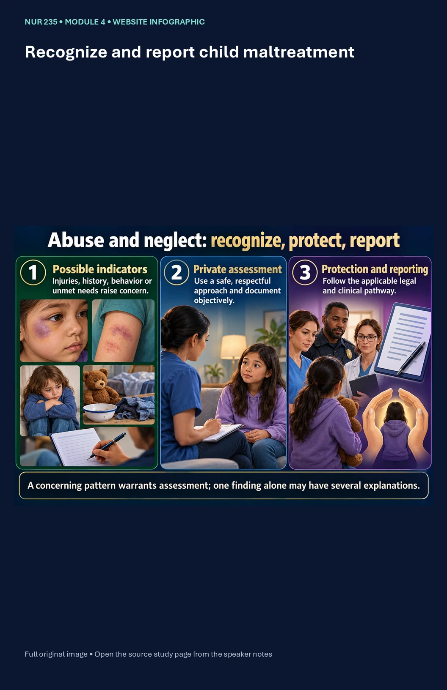
Read slide text and study notes
NUR 235 • MODULE 4 • WEBSITE INFOGRAPHIC
Recognize and report child maltreatment
Full original image • Open the source study page from the speaker notes
Simple Nursing original · Module 4
53 / 254Simple Nursing: Abuse Assessment & Signs

Read handout text
Child abuse & Neglect
Pediatrics: Mental Health
When child abuse is suspected, the first thing that must be done in nursing process is assessment.
NCLEX TIP
Assessment
Conduct a detailed interview & physical
examination
Abuse: blaming, refusal to comfort,
& belittling
Assess parent-child interaction
Changes in story
ATI
A 2-year-old boy … severe dental caries, dry
mucous membranes, and a diaper that is soaked
with urine and stool. Which of the following is
the next step in managing this patient?
Assess caregiver interactions with the child
Report to Authorities
After a detailed assessment & full history
HESI
Q1: The parent and a 6-year-old child presents to the clinic ... The child
weighs 35 pounds (15.9 kg), is wearing torn and dirty clothing, and sits
quietly with an apparent subtle rocking motion... nurse’s next actions?
Select all that apply
Q2: Suspected child abuse: What type of questions would help the
nurse to elicit information from the person?
Take the child’s height and vital signs1.
Assess the child for any bruising or lacerations2.
Ask the accompanying parent to leave the room3.
Ask the child about attendance at school4.
Stay with the child during the healthcare provider’s assessment
Open-ended questions that require descriptive responses
5.
Communication
1. Not your fault & you are not to blame
2. You are not in trouble & did the right thing
… Child reports being physically abused by his
guardian. Which of the following statements
should the nurse make?
“It is not your fault that this happened.”
ATI
3. NO promises or secrets! NCLEX TIP
HESI Question
… Suspected child abuse?
Report any case of suspected child abuse
6 NCLEX TIPS
The Abuser Risk Factors
History of alcohol / substance abuse
Low self- esteem / Acts impulsive
1.
2.
3.
Authoritarian & overly critical4.
T eenage parents or single-parent home 5.
Child with developmental delays 6.
Grew up in an environment of domestic violence
ATI Question
Q1: A nurse is teaching a group of newly licensed nurses about
risk factors for child maltreatment. Which of the following risk
factors should the nurse include in the teaching?
Select all that apply
Q2: … In-service for a group of elementary school teachers about
identifying risk factors for maltreatment of children:
A parent who has a history of alcohol use disorder
A parent who often acts on impulse
Expresses unrealistic expectations of an infant
A parent who believes in an authoritarian approach to raising
their child
The child lives in a single-parent home
The child was born premature and has developmental delays
A toddler who has autism
REPORT
It’s totally your fault!
PROMISES
SECRETS
Notes
Interventions
Characteristics of perpetrators
Simple Nursing original · Module 4
54 / 254Simple Nursing: Key Terms & Questions

Read handout text
Child abuse & Neglect II
Pediatrics: Mental Health
ATI Question
Q1: … Education seminar about child maltreatment.
Which of the following factors would indicate neglect?
Select all that apply
Q2: … Parents do not use a child safety seat when
transporting the child:
The child is undernourished
The child is dirty and poorly clothed
The child has untreated dental conditions
Child neglect
HESI Question
Which form of child maltreatment is considered the
most common?
Neglect
Neglect
ATI Question
Expected finding of physical abuse?
Select all that apply
Burns on bilateral hands
Spiral fracture of the right forearm
Reddened welt across the back
HESI Question
A child arrives in the emergency department
with cigarette burns on the arm. Which type
of abuse does the nurse document?
Physical abuse
Physical Abuse
HESI Question
Q1: A 4-year-old child tells the nurse, “I’m a
bad boy. Daddy always says I’m not worth a
second look”... is an example of?
Q2: Which statement made by the child ...
emotional neglect?
Emotional abuse
My father does not praise me even
when my teacher praises my drawings
Emotional Abuse
UNTREATED
Y ou’re not worth a second look
I’m a
bad boy
Signs
Failure of a parent or primary caregiver to provide basic necessities: food, clothing, shelter, supervision.
Any non-accidental physical injury to the child: striking, kicking, burning, biting etc.
Injury to emotional stability of the child as evidenced by an observable or
substantial change in behavior, emotional response, or cognition, for example:
anxiety, depression, withdrawal, or aggressive behavior.
Simple Nursing original · Module 4
55 / 254Simple Nursing: School Aged - Assessment of Growth and Development

Read handout text
Growth and Development of the
School Aged Child
• Slowed growth, graceful on their feet
• Strength and abilities double
• Loss of baby teeth
• Structural bone changes
• Girls begin to experience secondary sex characteristics
• Greater understanding of complex emotions
• Understands they can have more than one emotion
• Greater ability to control emotion
• Uses strategies to redirect feelings
Physical Milestones
Emotional Growth
• Develop confidence in family and explore relationships outside
of family
• Peers become important
• Motivated by accomplishment
• Success/ failure have a strong impact
Social Milestones
Nutrition
• Language is refined vis grammar education
• Ability to use words to express knowledge
• Narrative skills improve
• Able to make inferences
• Able to evaluate speech and messages
Language
• Displays a sense of duty and accomplishment
• Applies energy from play to complete tasks
• Develops positive sense of self
• Magical thinking, sit still for short periods
• Understands taking turns, enjoys groups
• Enjoys real life activities
• Give consistent rules, positive attention, and clear expectations,
questions parents standards
• Requires more food for increased energy demands
• Choose foods from all food groups
• Food jags and increased appetite are normal
• Limit fat intake, supervise snack habits
• Offer choices.
Well Checkup Schedule
• Annual physicals
• Booster tetanus and diphtheria
• Visit the dentist 2x a year
• Screening for scoliosis at 10-11
• Vision and hearing screen
Substance abuse
• Teach family values
• Teach right and wrong
• Set rules and enforce
• Teach facts about drugs and alcohol
• Actively listen
The birds and the bees
• Help develop a positive attitude of
sexuality
• Sexual roles
• Satisfaction with being a boy or girl
Head Should measure 13.75 cm at birth
• School starts
• Thinking skills develop
Height and weight
• Growth is slow and steady gains 5-6 lb a year
• Grows 2.5 in. a year until pre-teen
• Spine straightens and abdomen /f_lattens
• Long bone growth is noted
Dentition
• Starts to lose baby teeth at about 6
• Eruption of permanent teeth begins
Neuro
• Refines motor and cognitive skills
• Engages in meaningful tasks
Psychological Milestones
Age Nursing Care
6-10
years
2-7 years
Theorist
Sigmund Freud
Jean Piaget
Stage
Latency
Preoperational
phase
Description
Preparing for adult
life but awaiting
maturity
The child sees the
world egocentrically
Encourage sibling and
peer contact. Assess for
sexual activity in later
stage
6-10 years Erik Erikson Industry vs
Inferiority
Developing sense of
self worth and talent
Provide activities based
on talents and abilities
Plan drawing and writing
activities
Simple Nursing original · Module 4
56 / 254Simple Nursing: Adolescent - Assessment of Growth and Development

Read handout text
Assessment of Growth and Development
of the Adolescent 11-18 years
Well checkup schedule
• 2x during teens
• Immunizations, hearing, vision, scoliosis,
thyroid and pelvic for sexually active girls
• BP, height and weight
Head Should measure 13.75 cm at birth
• Puberty : reproductive maturity
• Starts at age 10 in girls and ends with menstruation
• Starts age 12 in boys and ends sperm production
Growth
• Girls achieve 98% of height by 16 yrs
• Skeletal growth outpaces muscle growth
• Nonvoluntary with early menses, 13-15 ovulation begins
• Boys : grow rapidly from 13-20
• Muscle strength and coordination develop rapidly
• Larynx becomes enlarged
• Both sexes : body takes on contours
• Primary sex organs develop, hormonal activity increases
• Bone growth continues until 20s
• Anorexia and bulimia can happen due to body image issues
• Girls : 9-11: growth spurts last 18 months
• Grows 3 in annually until menarche
• Begin to develop /f_igure
• Boys: 11-13: slower and steadier than girls
• Changes in penis, testes and scrotum
• Nocturnal emissions “ wet dreams”
Physical Milestones
• Greater focus on peers develops a separate self from parents
• Moral development
• Less egocentric
• Focused on mixed gender friendships
Social Milestones
Nutrition
• Rebellious
• Emotional highs and lows
• Focus on appearance
• Sexually active teens may have impaired self image
• Privacy becomes important
Emotional Growth
• Able to communicate complex thoughts
Language
• They wonder who they are
• What will they become
• More mobile
• Seek out intimate relationships
• Most are heterosexual, homosexuality can be difficult emotionally
• Body image is closely related to self esteem
• Underdevelopment causes anxiety
Rapid growth causes a need for the greatest amount of nutrients
• Appetite increases and teens eat frequently
• Food choices not always wise
• May skip meals
• Can have nutritional deficits of vit A, D and B, folic acid, iron and zinc.
Due to menses, girls need additional iron.
Psychological Milestones
Age Nursing Care
Puberty
11- adulthood
Theorist
Sigmund Freud
Jean Piaget
Stage
Genital
Formal
operational
stage
Description
Pleasure center in
the genitals
Reasons in more
abstract idealistic
ways
Encourage safe sex,
educate on teen
pregnancy and STI
10-20 years Erik Erikson Identity vs role
confusion
Integrating multiple
roles, self-image and
peer pressure
Support self-esteem, be
honest maximize
positive aspects of
image and minimize
defects
Discuss conditions
openly with client. Allow
privacy to discuss
Simple Nursing original · Module 4
57 / 254Simple Nursing: School age & Adolescents

Read handout text
Pediatric Physical Exam V
Pediatrics: Assessment
School Age 6-12 years
Adolescents 12-18 years
Growth
Safety
Activity & Sleep
Height: 2 inches per year
1.
Weight: yearly gain of 4.5 - 6.5 lb 2.
Use car seat until 4 feet 9 inches
Never in/near pool alone
Competitive & team play
9 hrs of sleep per night
Physical Examination
Same head-to-toe assessment
Same pain scale assessment
Same subjective assessment
Explain results of the exam to the child
Respect privacy
Treat them like mini adults
NCLEX TIP
31lbs 37lbs
4.5-6.5lb
4’9 inches
HESI Questions
Q1: Growth difference between girls & boys?
Q2: General puberty age... for girls and boys?
Q3: 16 year old girl who has not started menstruation?
Growth in height ceases 2 to 2.5 years after
menarche in girls
10 years for girls
12 years for boys
Refer the adolescent for an evaluation
Notes
Growth
Boys stop growing 18 - 20 years old
Encourage meeting with friends & peers
1. Immediate Post-Op
2. Immunocompromised (Chemo, radiation)
3. Contagious infectious disease
Priority Intervention
NO Socialization
1.
Girls stop growing 2.5 years old
after 1st period (menarche)
2.
NCLEX TIP
Activity
T op Missed NCLEX Question
11-year-old client with abdominal
discomfort ... What are the best actions
during a physical exam?
Select all that apply.
Complete a full head-to-toe assessment in the
same way as an adult
Explain the results of the examination to both
parent & child
Ask the child to describe their primary symptoms
Respect the request to be examined without
guardian present
MINI ADULT
6-12 years old
Review checklist
58 / 254EXAM 2 topic checklist
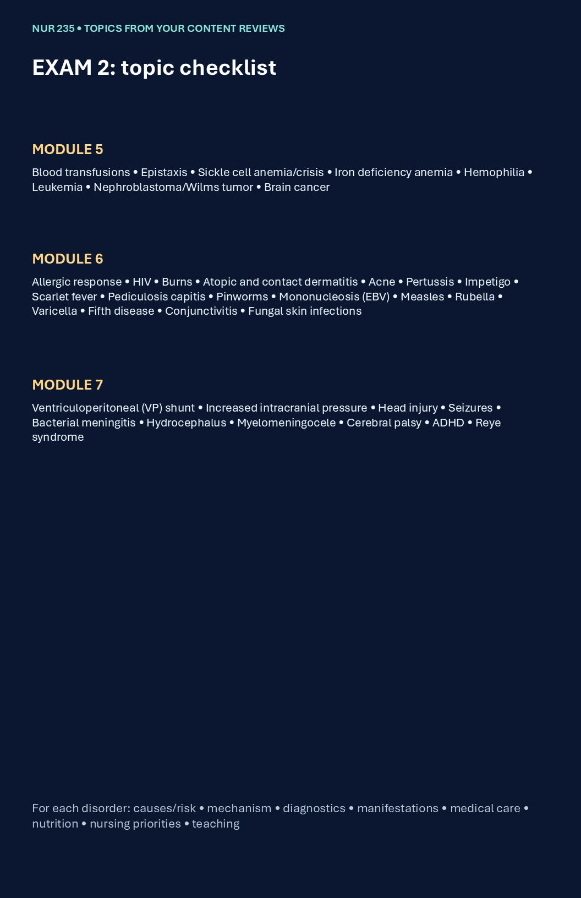
Read slide text and study notes
NUR 235 • TOPICS FROM YOUR CONTENT REVIEWS
EXAM 2: topic checklist
MODULE 5
Blood transfusions • Epistaxis • Sickle cell anemia/crisis • Iron deficiency anemia • Hemophilia • Leukemia • Nephroblastoma/Wilms tumor • Brain cancer
MODULE 6
Allergic response • HIV • Burns • Atopic and contact dermatitis • Acne • Pertussis • Impetigo • Scarlet fever • Pediculosis capitis • Pinworms • Mononucleosis (EBV) • Measles • Rubella • Varicella • Fifth disease • Conjunctivitis • Fungal skin infections
MODULE 7
Ventriculoperitoneal (VP) shunt • Increased intracranial pressure • Head injury • Seizures • Bacterial meningitis • Hydrocephalus • Myelomeningocele • Cerebral palsy • ADHD • Reye syndrome
For each disorder: causes/risk • mechanism • diagnostics • manifestations • medical care • nutrition • nursing priorities • teaching
Original overview
59 / 254Blood disorders: what is missing?
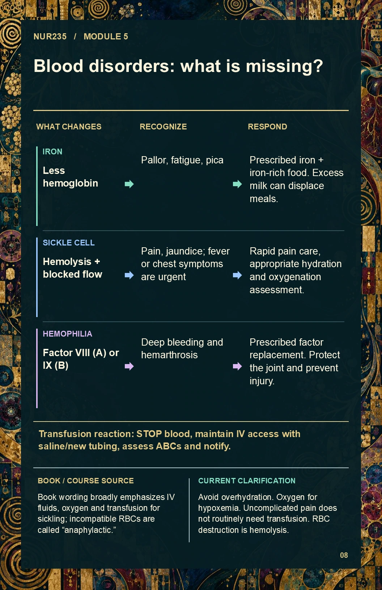
Read slide text and study notes
NUR235 / MODULE 5
Blood disorders: what is missing?
08
WHAT CHANGES
RECOGNIZE
RESPOND
IRON
Less hemoglobin
Pallor, fatigue, pica
Prescribed iron + iron-rich food. Excess milk can displace meals.
SICKLE CELL
Hemolysis + blocked flow
Pain, jaundice; fever or chest symptoms are urgent
Rapid pain care, appropriate hydration and oxygenation assessment.
HEMOPHILIA
Factor VIII (A) or IX (B)
Deep bleeding and hemarthrosis
Prescribed factor replacement. Protect the joint and prevent injury.
Transfusion reaction: STOP blood, maintain IV access with saline/new tubing, assess ABCs and notify.
BOOK / COURSE SOURCE
CURRENT CLARIFICATION
Book wording broadly emphasizes IV fluids, oxygen and transfusion for sickling; incompatible RBCs are called “anaphylactic.”
Avoid overhydration. Oxygen for hypoxemia. Uncomplicated pain does not routinely need transfusion. RBC destruction is hemolysis.
Original study notes and source references
NUR235 content mastery infographic. Original native diagram by Codex. No Claude-created graphics.
High-level overview. The user-supplied module content reviews and textbook anchor the content. Book/course statements and current clarifications remain separate. Full prior wording is preserved below for study reference.
Some neurologic and musculoskeletal chapters are missing from the provided book extract. Available course sources and identified primary references supplement these gaps.
Anemia, bleeding and sickle cell disease
User module content reviews, NUR235
{"theories": {"book_chapter": 28, "text_lines": [38660, 38956], "supports": "Erikson stages and Piaget age/stage terminology; implications for teaching/play.", "opening_excerpt": "Provide oral stimulation by giving pacifiers; do not discourage thumb sucking."}, "infant-growth": {"book_chapter": 29, "text_lines": [39631, 39981], "supports": "Weight doubles at 4–6 months/triples at 1 year; textbook month-by-month motor/language anchors.", "opening_excerpt": "The physiologic changes that occur in the infant year reflect both the increasing maturity and growth of body organs."}, "infant-trust": {"book_chapter": 29, "text_lines": [40105, 40175], "supports": "Emotional/cognitive development, object permanence, trust.", "opening_excerpt": "Socialization, or learning how to interact with others, is an extensive phenomenon. One-month-old infants show they can differentiate between faces and other objects by studying a face or the picture of a face longer than other objects. They are calm and feed "}, "infant-safety": {"book_chapter": 29, "text_lines": [40271, 40379], "supports": "Falls, choking, burns, automobile and water safety; rear-facing age wording is outdated.", "opening_excerpt": "Q. A parent is worried about keeping their 2-month-old safe. “How can I prevent accidents at this age?” the parent asks."}, "infant-feed": {"book_chapter": 29, "text_lines": [40463, 40625], "supports": "Human milk/iron-fortified formula, complementary foods near 6 months, iron foods, no honey or cow milk as main drink before 12 months.", "opening_excerpt": "Feeding recommendations for infants from birth through 6 months are to provide human milk exclusively via breastfeeding or expression and stored in a bottle. Human milk is the ideal form of nutrition for infants. It provides all the necessary nutrients, protec"}, "infant-vaccine": {"book_chapter": 29, "text_lines": [39431, 39593], "supports": "Well-child assessment and the textbook vaccine table.", "opening_excerpt": "Height, weight, head circumference plotted on standard growth chart; physical examination"}, "toddler": {"book_chapter": 30, "text_lines": [41172, 41294], "supports": "Autonomy, parent observation, language concern at 2 years, slowed growth and appetite.", "opening_excerpt": "During the toddler period, the age span from 1 to 3 years, enormous changes take place in a child and, consequently, in a family. During this period, children accomplish a wide array of developmental tasks and change from largely immobile and preverbal infants"}, "preschool": {"book_chapter": 31, "text_lines": [41357, 41447], "supports": "Age3–5, participation through modeling/play, physical and developmental assessment; remainder unavailable in extraction.", "opening_excerpt": "The preschool period traditionally includes the years 3, 4, and 5. Although physical growth slows considerably during this period, personality and cognitive growth continue at a rapid rate. Caregivers may be unsure how much independence and responsibility for "}, "school-growth": {"book_chapter": 32, "text_lines": [41590, 41658], "supports": "School-age growth and onset/order of puberty.", "opening_excerpt": "The average annual weight gain for a school-aged child is approximately 3 to 5 lb (1.3 to 2.2 kg); the increase in height is 1 to 2 in. (2.5 to 5 cm). Children who did not lose a lordosis and knock-kneed appearance during the preschool period typically lose th"}, "school-thinking": {"book_chapter": 32, "text_lines": [41850, 41982], "supports": "Industry, concrete operations, conservation/classification and skill mastery.", "opening_excerpt": "Ideally, children enter the school-aged period with the ability to trust others and with a sense of self-respect. They can accomplish small tasks independently because they have gained a sense of autonomy. They should have practiced adult roles, learned to sha"}, "school-safety": {"book_chapter": 32, "text_lines": [42014, 42096], "supports": "Injury prevention and body safety teaching.", "opening_excerpt": "Teach children to avoid unsafe areas, such as train yards, grain silos, and back alleys."}, "school-health": {"book_chapter": 32, "text_lines": [42390, 42530], "supports": "Immunizations, dental care and health assessment; schedule contains outdated product/dose wording.", "opening_excerpt": "Check history and past records, inform caregiver about any risks and side effects, and administer immunization in accordance with healthcare agency policies."}, "school-stress": {"book_chapter": 32, "text_lines": [42790, 42865], "supports": "Stress, school difficulties and substance-use concerns.", "opening_excerpt": "Reproductive life planning measures and the principles of safer sex if appropriate to the cultural setting (see Chapters 5 and 6). Sexual orientation questions and concerns may arise at this time, and questions should be addressed honestly and openly."}, "adolescent-limit": {"book_chapter": 33, "text_lines": [43127, 43183], "supports": "Only opening case, objectives and preventive privacy goal are present; full chapter not available.", "opening_excerpt": "For additional ancillary materials related to this chapter, please visit the point."}, "assessment": {"book_chapter": 34, "text_lines": [43374, 43408], "supports": "Adolescent private interview; confidentiality must be qualified by safety/legal exceptions.", "opening_excerpt": "A second reason K.W.’s parent has brought the child to your ambulatory clinic is because of increased frequency and burning on urination."}, "exam-order": {"book_chapter": 34, "text_lines": [44020, 44046], "supports": "Assessment is adapted to age; least intrusive observations first, uncomfortable portions later.", "opening_excerpt": "Presented here are the components of a routine or general physical assessment. It is important to recognize what a “general” physical examination entails so you can interpret the extent of the assessment a child has received when the caregiver states, “My chil"}, "teaching": {"book_chapter": 35, "text_lines": [46729, 46945], "supports": "Teach-back, demonstration/return demonstration and development-specific communication.", "opening_excerpt": "Children have variable attention spans. Assess the learner and provide lessons in segments of 5–20 minutes. Ideally, the child should be well rested and well-nourished prior to the teaching."}, "hospital": {"book_chapter": 36, "text_lines": [48070, 48134], "supports": "Family presence, routines and protest/despair/detachment after separation.", "opening_excerpt": "Obtain any special information about the child that the parents think would make them more comfortable in the hospital."}, "procedures": {"book_chapter": 37, "text_lines": [49105, 49293], "supports": "Diagnostic/therapeutic modalities, consent and developmental planning; extracted chapter is incomplete.", "opening_excerpt": "Nursing Care of a Family When a Child Needs Diagnostic or Therapeutic Modalities"}, "med-dose": {"book_chapter": 38, "text_lines": [49350, 49578], "supports": "Measured kg weight, individual dose safety, assessment and fractional-dose example; reversed conversion typo at49352.", "opening_excerpt": "Most adults immediately grasp that taking a medicine you offer them will be important to relieve whatever symptoms they are experiencing from an illness. Because children do not necessarily have this same level of understanding, they may resist taking medicine"}, "med-route": {"book_chapter": 38, "text_lines": [49616, 49674], "supports": "Oral medication positioning, oral syringe and age-appropriate technique.", "opening_excerpt": "Children younger than 3 years are unable to swallow pills. After that age, the ability of children to swallow pills varies from one child to the next and is not age dependent. Typically, children older than 9 years can be offered tablets; however, some adolesc"}, "pain": {"book_chapter": 39, "text_lines": [50756, 50862], "supports": "Behavioral tools, FLACC, child self-report FACES/numeric and combined comfort/analgesia.", "opening_excerpt": "Each area of concern is scored from 0 to 2. Infants with a total score of 4 or more are most likely to be in pain and need interventions to reduce discomfort. The scale cannot be used with infants who are intubated or paralyzed for ventilator assistance becaus"}, "nosebleed": {"book_chapter": 40, "text_lines": [52143, 52155], "supports": "Sit upright/forward; continuous pressure over soft nose for about10min; evaluate persistent/recurrent bleeding.", "opening_excerpt": "Epistaxis (nosebleed) is extremely common in children and usually occurs from trauma or irritation such as picking at the nasal mucosa. Dry air can cause mucous membranes to become dry and susceptible to cracking and bleeding. Epistaxis may also occur after st"}, "hiv": {"book_chapter": 42, "text_lines": [55531, 55664], "supports": "HIV CD4 mechanism, infection risks, family coping; treatment specifics need current NIH guidance.", "opening_excerpt": "HIV is a slowly replicating retrovirus and has at least two main divisions, HIV-1 and HIV-2, followed by a variety of further subtypes. The virus acts by attacking the lymphoreticular system, in particular CD4-bearing helper T lymphocytes. The virus enters the"}, "allergy": {"book_chapter": 42, "text_lines": [56017, 56109], "supports": "Anaphylaxis manifestations, immediate IM epinephrine, emergency help and recurrent reaction risk.", "opening_excerpt": "Anaphylactic shock (anaphylaxis) is an immediate, life-threatening, type I hypersensitivity reaction that occurs after exposure to an allergen in a previously sensitized child. Anaphylaxis can be caused by exposure to foods such as milk, egg, peanut, and tree "}, "eczema": {"book_chapter": 42, "text_lines": [56307, 56475], "supports": "Atopic dermatitis itch–scratch cycle, distribution and skin care.", "opening_excerpt": "Atopic dermatitis is a highly pruritic, chronic inflammatory skin disease that is often the first manifestation of allergic disease. It is a common disorder that affects 15% to 20% of children (Chopra et al., 2017)."}, "contact": {"book_chapter": 42, "text_lines": [56561, 56585], "supports": "Allergic contact dermatitis/typeIV, exposure pattern and removal of allergen.", "opening_excerpt": "Contact dermatitis is an example of a delayed or type IV hypersensitivity response; it is a reaction to skin contact with an allergen (a substance irritating to the child only with prior sensitization). The first reaction is generally erythema, followed by the"}, "rubella": {"book_chapter": 43, "text_lines": [57521, 57549], "supports": "Rubella syndrome; printed incubation/communicability statements are unreliable.", "opening_excerpt": "Incubation period: Generally, 14 days within a range of 16 to 183 days (AAP, 2018)"}, "measles": {"book_chapter": 43, "text_lines": [57551, 57593], "supports": "Cough/coryza/conjunctivitis, Koplik spots and descending rash.", "opening_excerpt": "Incubation period: 8 to 12 days from time of exposure to onset of any symptoms (AAP, 2018), with a range from 7 to 21 days (Drutz, 2016)"}, "varicella": {"book_chapter": 43, "text_lines": [57595, 57643], "supports": "Vesicles in crops, infection/complication risks; immune-globulin timing differs from current guidance.", "opening_excerpt": "Incubation period: 10 to 21 days, with the most common incidence at 14 to 16 days following exposure (Kennedy & Gershon, 2018)"}, "fifth": {"book_chapter": 43, "text_lines": [57677, 57704], "supports": "Parvovirus B19, slapped-cheek/lacy eruption and host-specific risk.", "opening_excerpt": "Incubation period: Most commonly between 4 and 14 days and can be as long as 21 days (AAP, 2018)"}, "mono": {"book_chapter": 43, "text_lines": [58009, 58048], "supports": "EBV saliva transmission, pharyngitis/adenopathy/fatigue and splenic risk.", "opening_excerpt": "Incubation period: Incubation period in adults and adolescents is 4 to 7 weeks, with a shorter incubation period in children (Fugl & Andersen, 2019)."}, "scarlet": {"book_chapter": 43, "text_lines": [58221, 58249], "supports": "GAS toxin-associated pharyngitis, sandpaper rash and antimicrobial treatment.", "opening_excerpt": "Incubation period: 2 to 5 days for streptococcal pharyngitis (AAP, 2018)"}, "impetigo": {"book_chapter": 43, "text_lines": [58251, 58280], "supports": "Staphylococcal/streptococcal superficial infection with honey crusts.", "opening_excerpt": "Causative agent: Beta-hemolytic streptococcus, group A or Staphylococcus aureus including methicillin-resistant Staphylococcus aureus (MRSA) (to be discussed in the subsequent section)"}, "pertussis": {"book_chapter": 43, "text_lines": [58365, 58417], "supports": "Paroxysmal cough, infant risk and treatment; immunity and isolation wording need updating.", "opening_excerpt": "Mode of transmission: Highly contagious by direct or indirect contact"}, "lice": {"book_chapter": 43, "text_lines": [58587, 58647], "supports": "Pediculosis and family teaching; avoid stigma about hygiene.", "opening_excerpt": "Small, white flecks on hair shaft (nits or eggs of lice); extreme pruritus"}, "pinworm": {"book_chapter": 43, "text_lines": [58649, 58655], "supports": "Nocturnal perianal itching, tape test and household hygiene; text omits repeat dose.", "opening_excerpt": "Pinworms are small, white, threadlike worms that live in the cecum. After ingestion of the egg, the mature worms develop over a period of 2 months in the cecum. The mature female pinworm then migrates out of the anus to deposit eggs on the skin in the anal and"}, "tinea": {"book_chapter": 43, "text_lines": [58675, 58705], "supports": "Tinea skin/scalp distinctions and antifungal treatment.", "opening_excerpt": "Fungi are larger than bacteria; some are unicellular (yeasts), but, generally, they are multicellular (molds). Deep mycoses invade internal organs. Respiratory transmission is by the inhalation of spores. Subcutaneous mycoses invade the skin, subcutaneous tiss"}, "transfusion": {"book_chapter": 44, "text_lines": [59254, 59340], "supports": "Transfusion setup, monitoring, reaction symptoms/stop action; printed AHTR label is inaccurate.", "opening_excerpt": "Transfusions of blood or its products are commonly used in the treatment of blood disorders and may include whole blood, packed RBCs, washed RBCs (as much “foreign” matter is removed as possible to reduce the possibility of an antagonistic reaction), plasma, p"}, "iron": {"book_chapter": 44, "text_lines": [59580, 59678], "supports": "Iron deficiency risks, low hemoglobin indices, diet and iron teaching.", "opening_excerpt": "Although the incidence of iron-deficiency anemia is decreasing in the United States due to improved infant nutrition, it is still the most common anemia of infancy and childhood, occurring whenever the intake of dietary iron is inadequate. Without adequate iro"}, "sickle": {"book_chapter": 44, "text_lines": [59738, 59974], "supports": "HbS vaso-occlusion/hemolysis, pain, sequestration/aplastic crises, hydration and analgesia.", "opening_excerpt": "Sickle cell anemia is an autosomal recessive inherited disorder carried on the beta chain of hemoglobin; the amino acid valine takes the place of the normally appearing glutamic acid. With this, the erythrocytes become characteristically elongated and crescent"}, "hemophilia": {"book_chapter": 44, "text_lines": [60258, 60318], "supports": "FactorVIII versusIX, X-linked inheritance and hemarthrosis.", "opening_excerpt": "Hemophilias are inherited disorders of blood coagulation. There are numerous types, each involving a deficiency of a different blood coagulation factor."}, "conjunctivitis": {"book_chapter": 50, "text_lines": [67992, 68042], "supports": "Conjunctivitis differential; the same content is duplicated earlier at66629–66679.", "opening_excerpt": "Inflammation of the conjunctiva; causes are numerous, including ophthalmia neonatorum (exposure to gonococcus bacillus; see Chapter 26) and bacterial, viral, and fungal organisms"}, "burns": {"book_chapter": 52, "text_lines": [70007, 70241], "supports": "Burn depth/area, ABCs, temperature/fluid/pain/infection and nutrition.", "opening_excerpt": "Burns are injuries to body tissue caused by excessive heat (greater than 104°F [40°C]). Burns are the second most common unintentional injury seen in children 1 to 4 years of age and the third most common cause of injury in children 5 to 14 years of age. Every"}, "oncology-care": {"book_chapter": 53, "text_lines": [71294, 71440], "supports": "Mucositis, infection, treatment-related toxicity and family care.", "opening_excerpt": "Children receiving long-term corticosteroid (e.g., dexamethasone or prednisone) therapy develop a typical “moon face,” red cheeks, and a stocky build. Like the loss of hair, a cushingoid appearance can be devastating to children or parents, the final insult in"}, "leukemia": {"book_chapter": 53, "text_lines": [71472, 71610], "supports": "Marrow blast proliferation causes anemia, infection risk and low platelets; diagnostic/treatment priorities.", "opening_excerpt": "Leukemia is the distorted and uncontrolled proliferation of WBCs (leukocytes) and is the most frequently occurring type of cancer in children."}, "brain": {"book_chapter": 53, "text_lines": [71716, 71906], "supports": "Brain tumor location, ICP/neurologic changes and surgery-specific postoperative care.", "opening_excerpt": "Brain tumors are the second most common form of cancer and the most common solid tumor in children. Tumors tend to occur between 1 and 10 years of age, with 5 years being the peak age of incidence. In children, brain tumors tend to occur at the midline in the "}, "wilms": {"book_chapter": 53, "text_lines": [72098, 72118], "supports": "Renal mass, hematuria/hypertension, imaging and nephrectomy-based treatment.", "opening_excerpt": "Nephroblastoma (Wilms tumor) is a malignant tumor that rises from the metanephric mesoderm cells of the upper pole of the kidney (Malkan et al., 2015). It accounts for 20% of solid tumors in childhood, and overall survival rates are greater than 90%. It may oc"}, "abuse": {"book_chapter": 55, "text_lines": [72856, 72958], "supports": "Maltreatment assessment, child protection, objective documentation and family concerns.", "opening_excerpt": "When obtaining a history, ask caregivers to account for any injury to a child’s body. Remember, however, that most childhood injuries are the result of unintentional injuries caused by the child’s inability to distinguish safe situations from dangerous ones or"}}
{"sleep": {"url": "https://www.aap.org/en/patient-care/safe-sleep/", "title": "AAP safe sleep"}, "carseat": {"url": "https://www.nhtsa.gov/vehicle-safety/car-seats-and-booster-seats", "title": "NHTSA child restraint recommendations"}, "milestones2": {"url": "https://www.cdc.gov/act-early/milestones/2-years.html", "title": "CDC milestones by2years"}, "milestones3": {"url": "https://www.cdc.gov/act-early/milestones/3-years.html", "title": "CDC milestones by3years"}, "milestones4": {"url": "https://www.cdc.gov/act-early/milestones/4-years.html", "title": "CDC milestones by4years"}, "milestones5": {"url": "https://www.cdc.gov/act-early/milestones/5-years.html", "title": "CDC milestones by5years"}, "vaccine": {"url": "https://www.cdc.gov/vaccines/hcp/imz-schedules/child-adolescent-age.html", "title": "CDC age schedule, page labels its addendum July2,2025"}, "aap2026": {"url": "https://publications.aap.org/pediatrics/article/157/3/e2025075754/206175/Recommended-Childhood-andAdolescent-Immunization", "title": "AAP2026 childhood/adolescent immunization policy"}, "meds": {"url": "https://www.healthychildren.org/English/safety-prevention/at-home/medication-safety/Pages/Using-Liquid-Medicines.aspx", "title": "AAP liquid medication measurement"}, "sickle-current": {"url": "https://www.nhlbi.nih.gov/sites/default/files/publications/56-364NFULL.pdf", "title": "NHLBI sickle-cell expert report: oxygen/fluids/transfusion in VOC"}, "sickle-ash": {"url": "https://doi.org/10.1182/bloodadvances.2020001851", "title": "ASH2020 sickle-cell pain guideline"}, "isolation": {"url": "https://www.cdc.gov/infection-control/hcp/isolation-precautions/appendix-a-type-duration.html", "title": "CDC isolation appendix, updated September11,2026"}, "pinworm-current": {"url": "https://www.cdc.gov/pinworm/hcp/clinical-overview/index.html", "title": "CDC pinworm treatment"}, "lice-current": {"url": "https://www.cdc.gov/lice/caring-head/", "title": "CDC head lice and school attendance"}, "pinkeye": {"url": "https://www.cdc.gov/conjunctivitis/treatment/", "title": "CDC conjunctivitis treatment"}, "acne": {"url": "https://www.aad.org/member/clinical-quality/guidelines/acne", "title": "AAD acne guideline"}, "hiv-current": {"url": "https://clinicalinfo.hiv.gov/en/guidelines/pediatric-arv/regimens-recommended-initial-therapy-antiretroviral-naive-children", "title": "NIH pediatric antiretroviral therapy"}, "blood": {"url": "https://www.isbtweb.org/resources/educational-modules-on-clinical-use-of-blood/adverse-effects-of-transfusion.html", "title": "ISBT adverse transfusion effects"}, "wilms-current": {"url": "https://medlineplus.gov/ency/article/001575.htm", "title": "MedlinePlus Wilms tumor and careful handling"}}
Iron deficiency versus sickle cell
Iron deficiency: inadequate iron → reduced hemoglobin. Pallor, fatigue or pica. CBC/iron studies support diagnosis. Give prescribed iron and iron-rich foods. Excess milk can displace iron intake.
Sickle cell: HbS hemolysis + vaso-occlusion → anemia/jaundice and painful ischemia. Prioritize rapid pain relief, appropriate hydration and oxygenation assessment.
Sickle-cell red flags: fever, chest pain/breathing change, neurologic deficit or enlarged spleen with pallor/shock → urgent evaluation.
Hemophilia and epistaxis
Hemophilia A = factor VIII. B = factor IX. Deep bleeding/hemarthrosis calls for prompt prescribed factor therapy and joint protection. Teach bleeding precautions and injury prevention.
Epistaxis: sit upright, lean forward and compress the soft nose continuously for about 10 minutes. Do not tilt the head back. Persistent/severe or recurrent bleeding needs evaluation.
Transfusion safety
Verify child/product/order/consent, baseline findings and compatible IV fluid. Use the prescribed pediatric volume/rate and monitoring policy.
New fever/chills, dyspnea, back pain, rash or instability: STOP the transfusion, keep IV access with appropriate saline/new tubing, assess ABCs and notify the team/blood bank.
Preserve the book’s sickle-cell priority triad: pain relief, adequate hydration, oxygenation. Current guidance qualifies oxygen for hypoxemia and avoids routine aggressive hydration or transfusion in uncomplicated VOC. The book labels incompatible-RBC destruction as “anaphylactic”; that mechanism is acute hemolysis. Liquid iron may darken stool/stain teeth; use the prescribed delivery technique, avoid giving with milk and store securely.
Recall: Which is the first action when new back pain and dyspnea develop during a transfusion?
Answer: Stop the transfusion and assess the child while initiating the reaction protocol.
Book and current-guidance comparisons
{"topic": "Measuring device", "old": "Cooking measuring spoons if dosing device unavailable", "new": "Use supplied/pharmacist-recommended dosing device; no kitchen spoon.", "sources": [{"url": "https://www.healthychildren.org/English/safety-prevention/at-home/medication-safety/Pages/Using-Liquid-Medicines.aspx", "title": "AAP liquid medication measurement"}], "evidence": [49524, 49524]}
{"topic": "Sickle resuscitation", "old": "intensiveIVfluid replacement; oxygenation and transfusion broadly discussed", "new": "Preserve pain/hydration/oxygenation priorities, but avoid automatic oxygen when not hypoxemic, overhydration and routine transfusion for uncomplicatedVOC.", "sources": [{"url": "https://www.nhlbi.nih.gov/sites/default/files/publications/56-364NFULL.pdf", "title": "NHLBI sickle-cell expert report: oxygen/fluids/transfusion in VOC"}, {"url": "https://doi.org/10.1182/bloodadvances.2020001851", "title": "ASH2020 sickle-cell pain guideline"}], "evidence": [59964, 59974]}
Liquid medication measurement
Book/course wording: Cooking measuring spoons are suggested if a dosing device is unavailable.
Current clarification: Use the supplied or pharmacist-recommended medication device. Kitchen spoons are not reliable for medication dosing.
Sickle cell vaso-occlusive pain
Book/course wording: Intensive IV fluid replacement, oxygenation and transfusion are discussed broadly.
Current clarification: Treat pain promptly and correct dehydration without overhydration. Oxygen is indicated for hypoxemia. Uncomplicated vaso-occlusive pain does not routinely require transfusion.
{"topic": "Transfusion label", "old": "Incompatible blood with agglutination labeled anaphylactic reaction", "new": "Call incompatible-RBC destruction acute hemolysis; keep allergic/anaphylactic reactions distinct. Do not reproduce routineheparin/diuretic suggestion as blanket care.", "sources": [{"url": "https://www.isbtweb.org/resources/educational-modules-on-clinical-use-of-blood/adverse-effects-of-transfusion.html", "title": "ISBT adverse transfusion effects"}], "evidence": [59274, 59284]}
{"topic": "Pinworm repeat", "old": "Single dose listed", "new": "Repeat treatment2weeks later according to prescribed regimen; teach hygiene/household management.", "sources": [{"url": "https://www.cdc.gov/pinworm/hcp/clinical-overview/index.html", "title": "CDC pinworm treatment"}], "evidence": [58655, 58655]}
Transfusion reaction terminology
Book/course wording: Incompatible blood with agglutination is labeled an anaphylactic reaction.
Current clarification: Destruction of incompatible red cells is an acute hemolytic transfusion reaction. Allergic and anaphylactic reactions are distinct. Heparin or diuretics are not automatic treatments for every transfusion reaction.
Pinworm treatment
Book/course wording: A single medication dose is listed.
Current clarification: The prescribed regimen generally includes a second treatment 2 weeks later. Hand hygiene, laundering and household measures help prevent reinfection.
Original overview
60 / 254Blood cells have different jobs
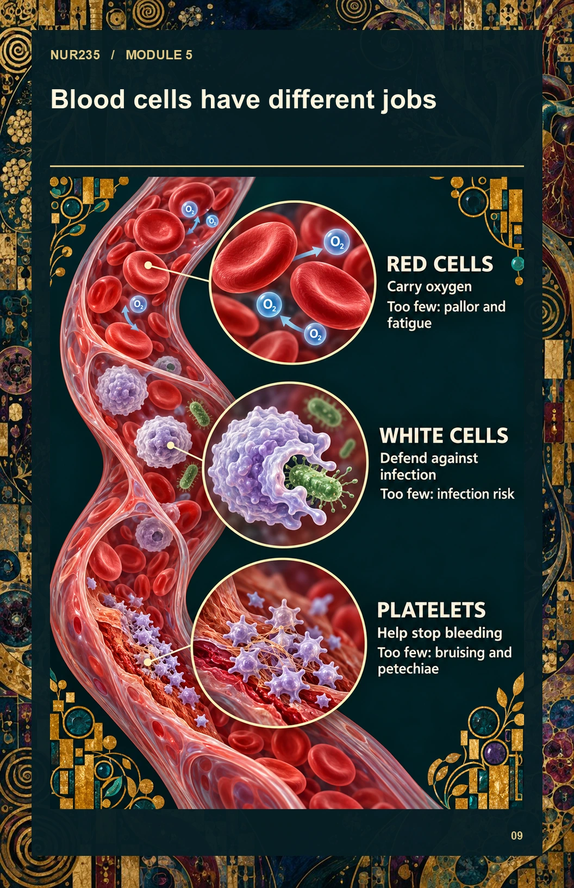
Read slide text and study notes
NUR235 / MODULE 5
Blood cells have different jobs
09
Original study notes and source references
Blood cells have different jobs
Schematic overview. Illustrations are not drawn to anatomical scale. Use the adjacent course details and assigned textbook for exam wording.
https://www.nhlbi.nih.gov/health/blood-tests
https://www.ncbi.nlm.nih.gov/books/NBK2263/
NUR235 content mastery infographic. Original native diagram by Codex. No Claude-created graphics.
High-level overview. The user-supplied module content reviews and textbook anchor the content. Book/course statements and current clarifications remain separate. Full prior wording is preserved below for study reference.
Some neurologic and musculoskeletal chapters are missing from the provided book extract. Available course sources and identified primary references supplement these gaps.
Anemia, bleeding and sickle cell disease
User module content reviews, NUR235
{"theories": {"book_chapter": 28, "text_lines": [38660, 38956], "supports": "Erikson stages and Piaget age/stage terminology; implications for teaching/play.", "opening_excerpt": "Provide oral stimulation by giving pacifiers; do not discourage thumb sucking."}, "infant-growth": {"book_chapter": 29, "text_lines": [39631, 39981], "supports": "Weight doubles at 4–6 months/triples at 1 year; textbook month-by-month motor/language anchors.", "opening_excerpt": "The physiologic changes that occur in the infant year reflect both the increasing maturity and growth of body organs."}, "infant-trust": {"book_chapter": 29, "text_lines": [40105, 40175], "supports": "Emotional/cognitive development, object permanence, trust.", "opening_excerpt": "Socialization, or learning how to interact with others, is an extensive phenomenon. One-month-old infants show they can differentiate between faces and other objects by studying a face or the picture of a face longer than other objects. They are calm and feed "}, "infant-safety": {"book_chapter": 29, "text_lines": [40271, 40379], "supports": "Falls, choking, burns, automobile and water safety; rear-facing age wording is outdated.", "opening_excerpt": "Q. A parent is worried about keeping their 2-month-old safe. “How can I prevent accidents at this age?” the parent asks."}, "infant-feed": {"book_chapter": 29, "text_lines": [40463, 40625], "supports": "Human milk/iron-fortified formula, complementary foods near 6 months, iron foods, no honey or cow milk as main drink before 12 months.", "opening_excerpt": "Feeding recommendations for infants from birth through 6 months are to provide human milk exclusively via breastfeeding or expression and stored in a bottle. Human milk is the ideal form of nutrition for infants. It provides all the necessary nutrients, protec"}, "infant-vaccine": {"book_chapter": 29, "text_lines": [39431, 39593], "supports": "Well-child assessment and the textbook vaccine table.", "opening_excerpt": "Height, weight, head circumference plotted on standard growth chart; physical examination"}, "toddler": {"book_chapter": 30, "text_lines": [41172, 41294], "supports": "Autonomy, parent observation, language concern at 2 years, slowed growth and appetite.", "opening_excerpt": "During the toddler period, the age span from 1 to 3 years, enormous changes take place in a child and, consequently, in a family. During this period, children accomplish a wide array of developmental tasks and change from largely immobile and preverbal infants"}, "preschool": {"book_chapter": 31, "text_lines": [41357, 41447], "supports": "Age3–5, participation through modeling/play, physical and developmental assessment; remainder unavailable in extraction.", "opening_excerpt": "The preschool period traditionally includes the years 3, 4, and 5. Although physical growth slows considerably during this period, personality and cognitive growth continue at a rapid rate. Caregivers may be unsure how much independence and responsibility for "}, "school-growth": {"book_chapter": 32, "text_lines": [41590, 41658], "supports": "School-age growth and onset/order of puberty.", "opening_excerpt": "The average annual weight gain for a school-aged child is approximately 3 to 5 lb (1.3 to 2.2 kg); the increase in height is 1 to 2 in. (2.5 to 5 cm). Children who did not lose a lordosis and knock-kneed appearance during the preschool period typically lose th"}, "school-thinking": {"book_chapter": 32, "text_lines": [41850, 41982], "supports": "Industry, concrete operations, conservation/classification and skill mastery.", "opening_excerpt": "Ideally, children enter the school-aged period with the ability to trust others and with a sense of self-respect. They can accomplish small tasks independently because they have gained a sense of autonomy. They should have practiced adult roles, learned to sha"}, "school-safety": {"book_chapter": 32, "text_lines": [42014, 42096], "supports": "Injury prevention and body safety teaching.", "opening_excerpt": "Teach children to avoid unsafe areas, such as train yards, grain silos, and back alleys."}, "school-health": {"book_chapter": 32, "text_lines": [42390, 42530], "supports": "Immunizations, dental care and health assessment; schedule contains outdated product/dose wording.", "opening_excerpt": "Check history and past records, inform caregiver about any risks and side effects, and administer immunization in accordance with healthcare agency policies."}, "school-stress": {"book_chapter": 32, "text_lines": [42790, 42865], "supports": "Stress, school difficulties and substance-use concerns.", "opening_excerpt": "Reproductive life planning measures and the principles of safer sex if appropriate to the cultural setting (see Chapters 5 and 6). Sexual orientation questions and concerns may arise at this time, and questions should be addressed honestly and openly."}, "adolescent-limit": {"book_chapter": 33, "text_lines": [43127, 43183], "supports": "Only opening case, objectives and preventive privacy goal are present; full chapter not available.", "opening_excerpt": "For additional ancillary materials related to this chapter, please visit the point."}, "assessment": {"book_chapter": 34, "text_lines": [43374, 43408], "supports": "Adolescent private interview; confidentiality must be qualified by safety/legal exceptions.", "opening_excerpt": "A second reason K.W.’s parent has brought the child to your ambulatory clinic is because of increased frequency and burning on urination."}, "exam-order": {"book_chapter": 34, "text_lines": [44020, 44046], "supports": "Assessment is adapted to age; least intrusive observations first, uncomfortable portions later.", "opening_excerpt": "Presented here are the components of a routine or general physical assessment. It is important to recognize what a “general” physical examination entails so you can interpret the extent of the assessment a child has received when the caregiver states, “My chil"}, "teaching": {"book_chapter": 35, "text_lines": [46729, 46945], "supports": "Teach-back, demonstration/return demonstration and development-specific communication.", "opening_excerpt": "Children have variable attention spans. Assess the learner and provide lessons in segments of 5–20 minutes. Ideally, the child should be well rested and well-nourished prior to the teaching."}, "hospital": {"book_chapter": 36, "text_lines": [48070, 48134], "supports": "Family presence, routines and protest/despair/detachment after separation.", "opening_excerpt": "Obtain any special information about the child that the parents think would make them more comfortable in the hospital."}, "procedures": {"book_chapter": 37, "text_lines": [49105, 49293], "supports": "Diagnostic/therapeutic modalities, consent and developmental planning; extracted chapter is incomplete.", "opening_excerpt": "Nursing Care of a Family When a Child Needs Diagnostic or Therapeutic Modalities"}, "med-dose": {"book_chapter": 38, "text_lines": [49350, 49578], "supports": "Measured kg weight, individual dose safety, assessment and fractional-dose example; reversed conversion typo at49352.", "opening_excerpt": "Most adults immediately grasp that taking a medicine you offer them will be important to relieve whatever symptoms they are experiencing from an illness. Because children do not necessarily have this same level of understanding, they may resist taking medicine"}, "med-route": {"book_chapter": 38, "text_lines": [49616, 49674], "supports": "Oral medication positioning, oral syringe and age-appropriate technique.", "opening_excerpt": "Children younger than 3 years are unable to swallow pills. After that age, the ability of children to swallow pills varies from one child to the next and is not age dependent. Typically, children older than 9 years can be offered tablets; however, some adolesc"}, "pain": {"book_chapter": 39, "text_lines": [50756, 50862], "supports": "Behavioral tools, FLACC, child self-report FACES/numeric and combined comfort/analgesia.", "opening_excerpt": "Each area of concern is scored from 0 to 2. Infants with a total score of 4 or more are most likely to be in pain and need interventions to reduce discomfort. The scale cannot be used with infants who are intubated or paralyzed for ventilator assistance becaus"}, "nosebleed": {"book_chapter": 40, "text_lines": [52143, 52155], "supports": "Sit upright/forward; continuous pressure over soft nose for about10min; evaluate persistent/recurrent bleeding.", "opening_excerpt": "Epistaxis (nosebleed) is extremely common in children and usually occurs from trauma or irritation such as picking at the nasal mucosa. Dry air can cause mucous membranes to become dry and susceptible to cracking and bleeding. Epistaxis may also occur after st"}, "hiv": {"book_chapter": 42, "text_lines": [55531, 55664], "supports": "HIV CD4 mechanism, infection risks, family coping; treatment specifics need current NIH guidance.", "opening_excerpt": "HIV is a slowly replicating retrovirus and has at least two main divisions, HIV-1 and HIV-2, followed by a variety of further subtypes. The virus acts by attacking the lymphoreticular system, in particular CD4-bearing helper T lymphocytes. The virus enters the"}, "allergy": {"book_chapter": 42, "text_lines": [56017, 56109], "supports": "Anaphylaxis manifestations, immediate IM epinephrine, emergency help and recurrent reaction risk.", "opening_excerpt": "Anaphylactic shock (anaphylaxis) is an immediate, life-threatening, type I hypersensitivity reaction that occurs after exposure to an allergen in a previously sensitized child. Anaphylaxis can be caused by exposure to foods such as milk, egg, peanut, and tree "}, "eczema": {"book_chapter": 42, "text_lines": [56307, 56475], "supports": "Atopic dermatitis itch–scratch cycle, distribution and skin care.", "opening_excerpt": "Atopic dermatitis is a highly pruritic, chronic inflammatory skin disease that is often the first manifestation of allergic disease. It is a common disorder that affects 15% to 20% of children (Chopra et al., 2017)."}, "contact": {"book_chapter": 42, "text_lines": [56561, 56585], "supports": "Allergic contact dermatitis/typeIV, exposure pattern and removal of allergen.", "opening_excerpt": "Contact dermatitis is an example of a delayed or type IV hypersensitivity response; it is a reaction to skin contact with an allergen (a substance irritating to the child only with prior sensitization). The first reaction is generally erythema, followed by the"}, "rubella": {"book_chapter": 43, "text_lines": [57521, 57549], "supports": "Rubella syndrome; printed incubation/communicability statements are unreliable.", "opening_excerpt": "Incubation period: Generally, 14 days within a range of 16 to 183 days (AAP, 2018)"}, "measles": {"book_chapter": 43, "text_lines": [57551, 57593], "supports": "Cough/coryza/conjunctivitis, Koplik spots and descending rash.", "opening_excerpt": "Incubation period: 8 to 12 days from time of exposure to onset of any symptoms (AAP, 2018), with a range from 7 to 21 days (Drutz, 2016)"}, "varicella": {"book_chapter": 43, "text_lines": [57595, 57643], "supports": "Vesicles in crops, infection/complication risks; immune-globulin timing differs from current guidance.", "opening_excerpt": "Incubation period: 10 to 21 days, with the most common incidence at 14 to 16 days following exposure (Kennedy & Gershon, 2018)"}, "fifth": {"book_chapter": 43, "text_lines": [57677, 57704], "supports": "Parvovirus B19, slapped-cheek/lacy eruption and host-specific risk.", "opening_excerpt": "Incubation period: Most commonly between 4 and 14 days and can be as long as 21 days (AAP, 2018)"}, "mono": {"book_chapter": 43, "text_lines": [58009, 58048], "supports": "EBV saliva transmission, pharyngitis/adenopathy/fatigue and splenic risk.", "opening_excerpt": "Incubation period: Incubation period in adults and adolescents is 4 to 7 weeks, with a shorter incubation period in children (Fugl & Andersen, 2019)."}, "scarlet": {"book_chapter": 43, "text_lines": [58221, 58249], "supports": "GAS toxin-associated pharyngitis, sandpaper rash and antimicrobial treatment.", "opening_excerpt": "Incubation period: 2 to 5 days for streptococcal pharyngitis (AAP, 2018)"}, "impetigo": {"book_chapter": 43, "text_lines": [58251, 58280], "supports": "Staphylococcal/streptococcal superficial infection with honey crusts.", "opening_excerpt": "Causative agent: Beta-hemolytic streptococcus, group A or Staphylococcus aureus including methicillin-resistant Staphylococcus aureus (MRSA) (to be discussed in the subsequent section)"}, "pertussis": {"book_chapter": 43, "text_lines": [58365, 58417], "supports": "Paroxysmal cough, infant risk and treatment; immunity and isolation wording need updating.", "opening_excerpt": "Mode of transmission: Highly contagious by direct or indirect contact"}, "lice": {"book_chapter": 43, "text_lines": [58587, 58647], "supports": "Pediculosis and family teaching; avoid stigma about hygiene.", "opening_excerpt": "Small, white flecks on hair shaft (nits or eggs of lice); extreme pruritus"}, "pinworm": {"book_chapter": 43, "text_lines": [58649, 58655], "supports": "Nocturnal perianal itching, tape test and household hygiene; text omits repeat dose.", "opening_excerpt": "Pinworms are small, white, threadlike worms that live in the cecum. After ingestion of the egg, the mature worms develop over a period of 2 months in the cecum. The mature female pinworm then migrates out of the anus to deposit eggs on the skin in the anal and"}, "tinea": {"book_chapter": 43, "text_lines": [58675, 58705], "supports": "Tinea skin/scalp distinctions and antifungal treatment.", "opening_excerpt": "Fungi are larger than bacteria; some are unicellular (yeasts), but, generally, they are multicellular (molds). Deep mycoses invade internal organs. Respiratory transmission is by the inhalation of spores. Subcutaneous mycoses invade the skin, subcutaneous tiss"}, "transfusion": {"book_chapter": 44, "text_lines": [59254, 59340], "supports": "Transfusion setup, monitoring, reaction symptoms/stop action; printed AHTR label is inaccurate.", "opening_excerpt": "Transfusions of blood or its products are commonly used in the treatment of blood disorders and may include whole blood, packed RBCs, washed RBCs (as much “foreign” matter is removed as possible to reduce the possibility of an antagonistic reaction), plasma, p"}, "iron": {"book_chapter": 44, "text_lines": [59580, 59678], "supports": "Iron deficiency risks, low hemoglobin indices, diet and iron teaching.", "opening_excerpt": "Although the incidence of iron-deficiency anemia is decreasing in the United States due to improved infant nutrition, it is still the most common anemia of infancy and childhood, occurring whenever the intake of dietary iron is inadequate. Without adequate iro"}, "sickle": {"book_chapter": 44, "text_lines": [59738, 59974], "supports": "HbS vaso-occlusion/hemolysis, pain, sequestration/aplastic crises, hydration and analgesia.", "opening_excerpt": "Sickle cell anemia is an autosomal recessive inherited disorder carried on the beta chain of hemoglobin; the amino acid valine takes the place of the normally appearing glutamic acid. With this, the erythrocytes become characteristically elongated and crescent"}, "hemophilia": {"book_chapter": 44, "text_lines": [60258, 60318], "supports": "FactorVIII versusIX, X-linked inheritance and hemarthrosis.", "opening_excerpt": "Hemophilias are inherited disorders of blood coagulation. There are numerous types, each involving a deficiency of a different blood coagulation factor."}, "conjunctivitis": {"book_chapter": 50, "text_lines": [67992, 68042], "supports": "Conjunctivitis differential; the same content is duplicated earlier at66629–66679.", "opening_excerpt": "Inflammation of the conjunctiva; causes are numerous, including ophthalmia neonatorum (exposure to gonococcus bacillus; see Chapter 26) and bacterial, viral, and fungal organisms"}, "burns": {"book_chapter": 52, "text_lines": [70007, 70241], "supports": "Burn depth/area, ABCs, temperature/fluid/pain/infection and nutrition.", "opening_excerpt": "Burns are injuries to body tissue caused by excessive heat (greater than 104°F [40°C]). Burns are the second most common unintentional injury seen in children 1 to 4 years of age and the third most common cause of injury in children 5 to 14 years of age. Every"}, "oncology-care": {"book_chapter": 53, "text_lines": [71294, 71440], "supports": "Mucositis, infection, treatment-related toxicity and family care.", "opening_excerpt": "Children receiving long-term corticosteroid (e.g., dexamethasone or prednisone) therapy develop a typical “moon face,” red cheeks, and a stocky build. Like the loss of hair, a cushingoid appearance can be devastating to children or parents, the final insult in"}, "leukemia": {"book_chapter": 53, "text_lines": [71472, 71610], "supports": "Marrow blast proliferation causes anemia, infection risk and low platelets; diagnostic/treatment priorities.", "opening_excerpt": "Leukemia is the distorted and uncontrolled proliferation of WBCs (leukocytes) and is the most frequently occurring type of cancer in children."}, "brain": {"book_chapter": 53, "text_lines": [71716, 71906], "supports": "Brain tumor location, ICP/neurologic changes and surgery-specific postoperative care.", "opening_excerpt": "Brain tumors are the second most common form of cancer and the most common solid tumor in children. Tumors tend to occur between 1 and 10 years of age, with 5 years being the peak age of incidence. In children, brain tumors tend to occur at the midline in the "}, "wilms": {"book_chapter": 53, "text_lines": [72098, 72118], "supports": "Renal mass, hematuria/hypertension, imaging and nephrectomy-based treatment.", "opening_excerpt": "Nephroblastoma (Wilms tumor) is a malignant tumor that rises from the metanephric mesoderm cells of the upper pole of the kidney (Malkan et al., 2015). It accounts for 20% of solid tumors in childhood, and overall survival rates are greater than 90%. It may oc"}, "abuse": {"book_chapter": 55, "text_lines": [72856, 72958], "supports": "Maltreatment assessment, child protection, objective documentation and family concerns.", "opening_excerpt": "When obtaining a history, ask caregivers to account for any injury to a child’s body. Remember, however, that most childhood injuries are the result of unintentional injuries caused by the child’s inability to distinguish safe situations from dangerous ones or"}}
{"sleep": {"url": "https://www.aap.org/en/patient-care/safe-sleep/", "title": "AAP safe sleep"}, "carseat": {"url": "https://www.nhtsa.gov/vehicle-safety/car-seats-and-booster-seats", "title": "NHTSA child restraint recommendations"}, "milestones2": {"url": "https://www.cdc.gov/act-early/milestones/2-years.html", "title": "CDC milestones by2years"}, "milestones3": {"url": "https://www.cdc.gov/act-early/milestones/3-years.html", "title": "CDC milestones by3years"}, "milestones4": {"url": "https://www.cdc.gov/act-early/milestones/4-years.html", "title": "CDC milestones by4years"}, "milestones5": {"url": "https://www.cdc.gov/act-early/milestones/5-years.html", "title": "CDC milestones by5years"}, "vaccine": {"url": "https://www.cdc.gov/vaccines/hcp/imz-schedules/child-adolescent-age.html", "title": "CDC age schedule, page labels its addendum July2,2025"}, "aap2026": {"url": "https://publications.aap.org/pediatrics/article/157/3/e2025075754/206175/Recommended-Childhood-andAdolescent-Immunization", "title": "AAP2026 childhood/adolescent immunization policy"}, "meds": {"url": "https://www.healthychildren.org/English/safety-prevention/at-home/medication-safety/Pages/Using-Liquid-Medicines.aspx", "title": "AAP liquid medication measurement"}, "sickle-current": {"url": "https://www.nhlbi.nih.gov/sites/default/files/publications/56-364NFULL.pdf", "title": "NHLBI sickle-cell expert report: oxygen/fluids/transfusion in VOC"}, "sickle-ash": {"url": "https://doi.org/10.1182/bloodadvances.2020001851", "title": "ASH2020 sickle-cell pain guideline"}, "isolation": {"url": "https://www.cdc.gov/infection-control/hcp/isolation-precautions/appendix-a-type-duration.html", "title": "CDC isolation appendix, updated September11,2026"}, "pinworm-current": {"url": "https://www.cdc.gov/pinworm/hcp/clinical-overview/index.html", "title": "CDC pinworm treatment"}, "lice-current": {"url": "https://www.cdc.gov/lice/caring-head/", "title": "CDC head lice and school attendance"}, "pinkeye": {"url": "https://www.cdc.gov/conjunctivitis/treatment/", "title": "CDC conjunctivitis treatment"}, "acne": {"url": "https://www.aad.org/member/clinical-quality/guidelines/acne", "title": "AAD acne guideline"}, "hiv-current": {"url": "https://clinicalinfo.hiv.gov/en/guidelines/pediatric-arv/regimens-recommended-initial-therapy-antiretroviral-naive-children", "title": "NIH pediatric antiretroviral therapy"}, "blood": {"url": "https://www.isbtweb.org/resources/educational-modules-on-clinical-use-of-blood/adverse-effects-of-transfusion.html", "title": "ISBT adverse transfusion effects"}, "wilms-current": {"url": "https://medlineplus.gov/ency/article/001575.htm", "title": "MedlinePlus Wilms tumor and careful handling"}}
Iron deficiency versus sickle cell
Iron deficiency: inadequate iron → reduced hemoglobin. Pallor, fatigue or pica. CBC/iron studies support diagnosis. Give prescribed iron and iron-rich foods. Excess milk can displace iron intake.
Sickle cell: HbS hemolysis + vaso-occlusion → anemia/jaundice and painful ischemia. Prioritize rapid pain relief, appropriate hydration and oxygenation assessment.
Sickle-cell red flags: fever, chest pain/breathing change, neurologic deficit or enlarged spleen with pallor/shock → urgent evaluation.
Hemophilia and epistaxis
Hemophilia A = factor VIII. B = factor IX. Deep bleeding/hemarthrosis calls for prompt prescribed factor therapy and joint protection. Teach bleeding precautions and injury prevention.
Epistaxis: sit upright, lean forward and compress the soft nose continuously for about 10 minutes. Do not tilt the head back. Persistent/severe or recurrent bleeding needs evaluation.
Transfusion safety
Verify child/product/order/consent, baseline findings and compatible IV fluid. Use the prescribed pediatric volume/rate and monitoring policy.
New fever/chills, dyspnea, back pain, rash or instability: STOP the transfusion, keep IV access with appropriate saline/new tubing, assess ABCs and notify the team/blood bank.
Preserve the book’s sickle-cell priority triad: pain relief, adequate hydration, oxygenation. Current guidance qualifies oxygen for hypoxemia and avoids routine aggressive hydration or transfusion in uncomplicated VOC. The book labels incompatible-RBC destruction as “anaphylactic”; that mechanism is acute hemolysis. Liquid iron may darken stool/stain teeth; use the prescribed delivery technique, avoid giving with milk and store securely.
Recall: Which is the first action when new back pain and dyspnea develop during a transfusion?
Answer: Stop the transfusion and assess the child while initiating the reaction protocol.
Book and current-guidance comparisons
{"topic": "Measuring device", "old": "Cooking measuring spoons if dosing device unavailable", "new": "Use supplied/pharmacist-recommended dosing device; no kitchen spoon.", "sources": [{"url": "https://www.healthychildren.org/English/safety-prevention/at-home/medication-safety/Pages/Using-Liquid-Medicines.aspx", "title": "AAP liquid medication measurement"}], "evidence": [49524, 49524]}
{"topic": "Sickle resuscitation", "old": "intensiveIVfluid replacement; oxygenation and transfusion broadly discussed", "new": "Preserve pain/hydration/oxygenation priorities, but avoid automatic oxygen when not hypoxemic, overhydration and routine transfusion for uncomplicatedVOC.", "sources": [{"url": "https://www.nhlbi.nih.gov/sites/default/files/publications/56-364NFULL.pdf", "title": "NHLBI sickle-cell expert report: oxygen/fluids/transfusion in VOC"}, {"url": "https://doi.org/10.1182/bloodadvances.2020001851", "title": "ASH2020 sickle-cell pain guideline"}], "evidence": [59964, 59974]}
Liquid medication measurement
Book/course wording: Cooking measuring spoons are suggested if a dosing device is unavailable.
Current clarification: Use the supplied or pharmacist-recommended medication device. Kitchen spoons are not reliable for medication dosing.
Sickle cell vaso-occlusive pain
Book/course wording: Intensive IV fluid replacement, oxygenation and transfusion are discussed broadly.
Current clarification: Treat pain promptly and correct dehydration without overhydration. Oxygen is indicated for hypoxemia. Uncomplicated vaso-occlusive pain does not routinely require transfusion.
{"topic": "Transfusion label", "old": "Incompatible blood with agglutination labeled anaphylactic reaction", "new": "Call incompatible-RBC destruction acute hemolysis; keep allergic/anaphylactic reactions distinct. Do not reproduce routineheparin/diuretic suggestion as blanket care.", "sources": [{"url": "https://www.isbtweb.org/resources/educational-modules-on-clinical-use-of-blood/adverse-effects-of-transfusion.html", "title": "ISBT adverse transfusion effects"}], "evidence": [59274, 59284]}
{"topic": "Pinworm repeat", "old": "Single dose listed", "new": "Repeat treatment2weeks later according to prescribed regimen; teach hygiene/household management.", "sources": [{"url": "https://www.cdc.gov/pinworm/hcp/clinical-overview/index.html", "title": "CDC pinworm treatment"}], "evidence": [58655, 58655]}
Transfusion reaction terminology
Book/course wording: Incompatible blood with agglutination is labeled an anaphylactic reaction.
Current clarification: Destruction of incompatible red cells is an acute hemolytic transfusion reaction. Allergic and anaphylactic reactions are distinct. Heparin or diuretics are not automatic treatments for every transfusion reaction.
Pinworm treatment
Book/course wording: A single medication dose is listed.
Current clarification: The prescribed regimen generally includes a second treatment 2 weeks later. Hand hygiene, laundering and household measures help prevent reinfection.
NUR235 content mastery infographic. Original native diagram by Codex. No Claude-created graphics.
High-level overview. The user-supplied module content reviews and textbook anchor the content. Book/course statements and current clarifications remain separate. Full prior wording is preserved below for study reference.
Some neurologic and musculoskeletal chapters are missing from the provided book extract. Available course sources and identified primary references supplement these gaps.
Childhood cancer and treatment care
User module content reviews, NUR235
{"theories": {"book_chapter": 28, "text_lines": [38660, 38956], "supports": "Erikson stages and Piaget age/stage terminology; implications for teaching/play.", "opening_excerpt": "Provide oral stimulation by giving pacifiers; do not discourage thumb sucking."}, "infant-growth": {"book_chapter": 29, "text_lines": [39631, 39981], "supports": "Weight doubles at 4–6 months/triples at 1 year; textbook month-by-month motor/language anchors.", "opening_excerpt": "The physiologic changes that occur in the infant year reflect both the increasing maturity and growth of body organs."}, "infant-trust": {"book_chapter": 29, "text_lines": [40105, 40175], "supports": "Emotional/cognitive development, object permanence, trust.", "opening_excerpt": "Socialization, or learning how to interact with others, is an extensive phenomenon. One-month-old infants show they can differentiate between faces and other objects by studying a face or the picture of a face longer than other objects. They are calm and feed "}, "infant-safety": {"book_chapter": 29, "text_lines": [40271, 40379], "supports": "Falls, choking, burns, automobile and water safety; rear-facing age wording is outdated.", "opening_excerpt": "Q. A parent is worried about keeping their 2-month-old safe. “How can I prevent accidents at this age?” the parent asks."}, "infant-feed": {"book_chapter": 29, "text_lines": [40463, 40625], "supports": "Human milk/iron-fortified formula, complementary foods near 6 months, iron foods, no honey or cow milk as main drink before 12 months.", "opening_excerpt": "Feeding recommendations for infants from birth through 6 months are to provide human milk exclusively via breastfeeding or expression and stored in a bottle. Human milk is the ideal form of nutrition for infants. It provides all the necessary nutrients, protec"}, "infant-vaccine": {"book_chapter": 29, "text_lines": [39431, 39593], "supports": "Well-child assessment and the textbook vaccine table.", "opening_excerpt": "Height, weight, head circumference plotted on standard growth chart; physical examination"}, "toddler": {"book_chapter": 30, "text_lines": [41172, 41294], "supports": "Autonomy, parent observation, language concern at 2 years, slowed growth and appetite.", "opening_excerpt": "During the toddler period, the age span from 1 to 3 years, enormous changes take place in a child and, consequently, in a family. During this period, children accomplish a wide array of developmental tasks and change from largely immobile and preverbal infants"}, "preschool": {"book_chapter": 31, "text_lines": [41357, 41447], "supports": "Age3–5, participation through modeling/play, physical and developmental assessment; remainder unavailable in extraction.", "opening_excerpt": "The preschool period traditionally includes the years 3, 4, and 5. Although physical growth slows considerably during this period, personality and cognitive growth continue at a rapid rate. Caregivers may be unsure how much independence and responsibility for "}, "school-growth": {"book_chapter": 32, "text_lines": [41590, 41658], "supports": "School-age growth and onset/order of puberty.", "opening_excerpt": "The average annual weight gain for a school-aged child is approximately 3 to 5 lb (1.3 to 2.2 kg); the increase in height is 1 to 2 in. (2.5 to 5 cm). Children who did not lose a lordosis and knock-kneed appearance during the preschool period typically lose th"}, "school-thinking": {"book_chapter": 32, "text_lines": [41850, 41982], "supports": "Industry, concrete operations, conservation/classification and skill mastery.", "opening_excerpt": "Ideally, children enter the school-aged period with the ability to trust others and with a sense of self-respect. They can accomplish small tasks independently because they have gained a sense of autonomy. They should have practiced adult roles, learned to sha"}, "school-safety": {"book_chapter": 32, "text_lines": [42014, 42096], "supports": "Injury prevention and body safety teaching.", "opening_excerpt": "Teach children to avoid unsafe areas, such as train yards, grain silos, and back alleys."}, "school-health": {"book_chapter": 32, "text_lines": [42390, 42530], "supports": "Immunizations, dental care and health assessment; schedule contains outdated product/dose wording.", "opening_excerpt": "Check history and past records, inform caregiver about any risks and side effects, and administer immunization in accordance with healthcare agency policies."}, "school-stress": {"book_chapter": 32, "text_lines": [42790, 42865], "supports": "Stress, school difficulties and substance-use concerns.", "opening_excerpt": "Reproductive life planning measures and the principles of safer sex if appropriate to the cultural setting (see Chapters 5 and 6). Sexual orientation questions and concerns may arise at this time, and questions should be addressed honestly and openly."}, "adolescent-limit": {"book_chapter": 33, "text_lines": [43127, 43183], "supports": "Only opening case, objectives and preventive privacy goal are present; full chapter not available.", "opening_excerpt": "For additional ancillary materials related to this chapter, please visit the point."}, "assessment": {"book_chapter": 34, "text_lines": [43374, 43408], "supports": "Adolescent private interview; confidentiality must be qualified by safety/legal exceptions.", "opening_excerpt": "A second reason K.W.’s parent has brought the child to your ambulatory clinic is because of increased frequency and burning on urination."}, "exam-order": {"book_chapter": 34, "text_lines": [44020, 44046], "supports": "Assessment is adapted to age; least intrusive observations first, uncomfortable portions later.", "opening_excerpt": "Presented here are the components of a routine or general physical assessment. It is important to recognize what a “general” physical examination entails so you can interpret the extent of the assessment a child has received when the caregiver states, “My chil"}, "teaching": {"book_chapter": 35, "text_lines": [46729, 46945], "supports": "Teach-back, demonstration/return demonstration and development-specific communication.", "opening_excerpt": "Children have variable attention spans. Assess the learner and provide lessons in segments of 5–20 minutes. Ideally, the child should be well rested and well-nourished prior to the teaching."}, "hospital": {"book_chapter": 36, "text_lines": [48070, 48134], "supports": "Family presence, routines and protest/despair/detachment after separation.", "opening_excerpt": "Obtain any special information about the child that the parents think would make them more comfortable in the hospital."}, "procedures": {"book_chapter": 37, "text_lines": [49105, 49293], "supports": "Diagnostic/therapeutic modalities, consent and developmental planning; extracted chapter is incomplete.", "opening_excerpt": "Nursing Care of a Family When a Child Needs Diagnostic or Therapeutic Modalities"}, "med-dose": {"book_chapter": 38, "text_lines": [49350, 49578], "supports": "Measured kg weight, individual dose safety, assessment and fractional-dose example; reversed conversion typo at49352.", "opening_excerpt": "Most adults immediately grasp that taking a medicine you offer them will be important to relieve whatever symptoms they are experiencing from an illness. Because children do not necessarily have this same level of understanding, they may resist taking medicine"}, "med-route": {"book_chapter": 38, "text_lines": [49616, 49674], "supports": "Oral medication positioning, oral syringe and age-appropriate technique.", "opening_excerpt": "Children younger than 3 years are unable to swallow pills. After that age, the ability of children to swallow pills varies from one child to the next and is not age dependent. Typically, children older than 9 years can be offered tablets; however, some adolesc"}, "pain": {"book_chapter": 39, "text_lines": [50756, 50862], "supports": "Behavioral tools, FLACC, child self-report FACES/numeric and combined comfort/analgesia.", "opening_excerpt": "Each area of concern is scored from 0 to 2. Infants with a total score of 4 or more are most likely to be in pain and need interventions to reduce discomfort. The scale cannot be used with infants who are intubated or paralyzed for ventilator assistance becaus"}, "nosebleed": {"book_chapter": 40, "text_lines": [52143, 52155], "supports": "Sit upright/forward; continuous pressure over soft nose for about10min; evaluate persistent/recurrent bleeding.", "opening_excerpt": "Epistaxis (nosebleed) is extremely common in children and usually occurs from trauma or irritation such as picking at the nasal mucosa. Dry air can cause mucous membranes to become dry and susceptible to cracking and bleeding. Epistaxis may also occur after st"}, "hiv": {"book_chapter": 42, "text_lines": [55531, 55664], "supports": "HIV CD4 mechanism, infection risks, family coping; treatment specifics need current NIH guidance.", "opening_excerpt": "HIV is a slowly replicating retrovirus and has at least two main divisions, HIV-1 and HIV-2, followed by a variety of further subtypes. The virus acts by attacking the lymphoreticular system, in particular CD4-bearing helper T lymphocytes. The virus enters the"}, "allergy": {"book_chapter": 42, "text_lines": [56017, 56109], "supports": "Anaphylaxis manifestations, immediate IM epinephrine, emergency help and recurrent reaction risk.", "opening_excerpt": "Anaphylactic shock (anaphylaxis) is an immediate, life-threatening, type I hypersensitivity reaction that occurs after exposure to an allergen in a previously sensitized child. Anaphylaxis can be caused by exposure to foods such as milk, egg, peanut, and tree "}, "eczema": {"book_chapter": 42, "text_lines": [56307, 56475], "supports": "Atopic dermatitis itch–scratch cycle, distribution and skin care.", "opening_excerpt": "Atopic dermatitis is a highly pruritic, chronic inflammatory skin disease that is often the first manifestation of allergic disease. It is a common disorder that affects 15% to 20% of children (Chopra et al., 2017)."}, "contact": {"book_chapter": 42, "text_lines": [56561, 56585], "supports": "Allergic contact dermatitis/typeIV, exposure pattern and removal of allergen.", "opening_excerpt": "Contact dermatitis is an example of a delayed or type IV hypersensitivity response; it is a reaction to skin contact with an allergen (a substance irritating to the child only with prior sensitization). The first reaction is generally erythema, followed by the"}, "rubella": {"book_chapter": 43, "text_lines": [57521, 57549], "supports": "Rubella syndrome; printed incubation/communicability statements are unreliable.", "opening_excerpt": "Incubation period: Generally, 14 days within a range of 16 to 183 days (AAP, 2018)"}, "measles": {"book_chapter": 43, "text_lines": [57551, 57593], "supports": "Cough/coryza/conjunctivitis, Koplik spots and descending rash.", "opening_excerpt": "Incubation period: 8 to 12 days from time of exposure to onset of any symptoms (AAP, 2018), with a range from 7 to 21 days (Drutz, 2016)"}, "varicella": {"book_chapter": 43, "text_lines": [57595, 57643], "supports": "Vesicles in crops, infection/complication risks; immune-globulin timing differs from current guidance.", "opening_excerpt": "Incubation period: 10 to 21 days, with the most common incidence at 14 to 16 days following exposure (Kennedy & Gershon, 2018)"}, "fifth": {"book_chapter": 43, "text_lines": [57677, 57704], "supports": "Parvovirus B19, slapped-cheek/lacy eruption and host-specific risk.", "opening_excerpt": "Incubation period: Most commonly between 4 and 14 days and can be as long as 21 days (AAP, 2018)"}, "mono": {"book_chapter": 43, "text_lines": [58009, 58048], "supports": "EBV saliva transmission, pharyngitis/adenopathy/fatigue and splenic risk.", "opening_excerpt": "Incubation period: Incubation period in adults and adolescents is 4 to 7 weeks, with a shorter incubation period in children (Fugl & Andersen, 2019)."}, "scarlet": {"book_chapter": 43, "text_lines": [58221, 58249], "supports": "GAS toxin-associated pharyngitis, sandpaper rash and antimicrobial treatment.", "opening_excerpt": "Incubation period: 2 to 5 days for streptococcal pharyngitis (AAP, 2018)"}, "impetigo": {"book_chapter": 43, "text_lines": [58251, 58280], "supports": "Staphylococcal/streptococcal superficial infection with honey crusts.", "opening_excerpt": "Causative agent: Beta-hemolytic streptococcus, group A or Staphylococcus aureus including methicillin-resistant Staphylococcus aureus (MRSA) (to be discussed in the subsequent section)"}, "pertussis": {"book_chapter": 43, "text_lines": [58365, 58417], "supports": "Paroxysmal cough, infant risk and treatment; immunity and isolation wording need updating.", "opening_excerpt": "Mode of transmission: Highly contagious by direct or indirect contact"}, "lice": {"book_chapter": 43, "text_lines": [58587, 58647], "supports": "Pediculosis and family teaching; avoid stigma about hygiene.", "opening_excerpt": "Small, white flecks on hair shaft (nits or eggs of lice); extreme pruritus"}, "pinworm": {"book_chapter": 43, "text_lines": [58649, 58655], "supports": "Nocturnal perianal itching, tape test and household hygiene; text omits repeat dose.", "opening_excerpt": "Pinworms are small, white, threadlike worms that live in the cecum. After ingestion of the egg, the mature worms develop over a period of 2 months in the cecum. The mature female pinworm then migrates out of the anus to deposit eggs on the skin in the anal and"}, "tinea": {"book_chapter": 43, "text_lines": [58675, 58705], "supports": "Tinea skin/scalp distinctions and antifungal treatment.", "opening_excerpt": "Fungi are larger than bacteria; some are unicellular (yeasts), but, generally, they are multicellular (molds). Deep mycoses invade internal organs. Respiratory transmission is by the inhalation of spores. Subcutaneous mycoses invade the skin, subcutaneous tiss"}, "transfusion": {"book_chapter": 44, "text_lines": [59254, 59340], "supports": "Transfusion setup, monitoring, reaction symptoms/stop action; printed AHTR label is inaccurate.", "opening_excerpt": "Transfusions of blood or its products are commonly used in the treatment of blood disorders and may include whole blood, packed RBCs, washed RBCs (as much “foreign” matter is removed as possible to reduce the possibility of an antagonistic reaction), plasma, p"}, "iron": {"book_chapter": 44, "text_lines": [59580, 59678], "supports": "Iron deficiency risks, low hemoglobin indices, diet and iron teaching.", "opening_excerpt": "Although the incidence of iron-deficiency anemia is decreasing in the United States due to improved infant nutrition, it is still the most common anemia of infancy and childhood, occurring whenever the intake of dietary iron is inadequate. Without adequate iro"}, "sickle": {"book_chapter": 44, "text_lines": [59738, 59974], "supports": "HbS vaso-occlusion/hemolysis, pain, sequestration/aplastic crises, hydration and analgesia.", "opening_excerpt": "Sickle cell anemia is an autosomal recessive inherited disorder carried on the beta chain of hemoglobin; the amino acid valine takes the place of the normally appearing glutamic acid. With this, the erythrocytes become characteristically elongated and crescent"}, "hemophilia": {"book_chapter": 44, "text_lines": [60258, 60318], "supports": "FactorVIII versusIX, X-linked inheritance and hemarthrosis.", "opening_excerpt": "Hemophilias are inherited disorders of blood coagulation. There are numerous types, each involving a deficiency of a different blood coagulation factor."}, "conjunctivitis": {"book_chapter": 50, "text_lines": [67992, 68042], "supports": "Conjunctivitis differential; the same content is duplicated earlier at66629–66679.", "opening_excerpt": "Inflammation of the conjunctiva; causes are numerous, including ophthalmia neonatorum (exposure to gonococcus bacillus; see Chapter 26) and bacterial, viral, and fungal organisms"}, "burns": {"book_chapter": 52, "text_lines": [70007, 70241], "supports": "Burn depth/area, ABCs, temperature/fluid/pain/infection and nutrition.", "opening_excerpt": "Burns are injuries to body tissue caused by excessive heat (greater than 104°F [40°C]). Burns are the second most common unintentional injury seen in children 1 to 4 years of age and the third most common cause of injury in children 5 to 14 years of age. Every"}, "oncology-care": {"book_chapter": 53, "text_lines": [71294, 71440], "supports": "Mucositis, infection, treatment-related toxicity and family care.", "opening_excerpt": "Children receiving long-term corticosteroid (e.g., dexamethasone or prednisone) therapy develop a typical “moon face,” red cheeks, and a stocky build. Like the loss of hair, a cushingoid appearance can be devastating to children or parents, the final insult in"}, "leukemia": {"book_chapter": 53, "text_lines": [71472, 71610], "supports": "Marrow blast proliferation causes anemia, infection risk and low platelets; diagnostic/treatment priorities.", "opening_excerpt": "Leukemia is the distorted and uncontrolled proliferation of WBCs (leukocytes) and is the most frequently occurring type of cancer in children."}, "brain": {"book_chapter": 53, "text_lines": [71716, 71906], "supports": "Brain tumor location, ICP/neurologic changes and surgery-specific postoperative care.", "opening_excerpt": "Brain tumors are the second most common form of cancer and the most common solid tumor in children. Tumors tend to occur between 1 and 10 years of age, with 5 years being the peak age of incidence. In children, brain tumors tend to occur at the midline in the "}, "wilms": {"book_chapter": 53, "text_lines": [72098, 72118], "supports": "Renal mass, hematuria/hypertension, imaging and nephrectomy-based treatment.", "opening_excerpt": "Nephroblastoma (Wilms tumor) is a malignant tumor that rises from the metanephric mesoderm cells of the upper pole of the kidney (Malkan et al., 2015). It accounts for 20% of solid tumors in childhood, and overall survival rates are greater than 90%. It may oc"}, "abuse": {"book_chapter": 55, "text_lines": [72856, 72958], "supports": "Maltreatment assessment, child protection, objective documentation and family concerns.", "opening_excerpt": "When obtaining a history, ask caregivers to account for any injury to a child’s body. Remember, however, that most childhood injuries are the result of unintentional injuries caused by the child’s inability to distinguish safe situations from dangerous ones or"}}
{"sleep": {"url": "https://www.aap.org/en/patient-care/safe-sleep/", "title": "AAP safe sleep"}, "carseat": {"url": "https://www.nhtsa.gov/vehicle-safety/car-seats-and-booster-seats", "title": "NHTSA child restraint recommendations"}, "milestones2": {"url": "https://www.cdc.gov/act-early/milestones/2-years.html", "title": "CDC milestones by2years"}, "milestones3": {"url": "https://www.cdc.gov/act-early/milestones/3-years.html", "title": "CDC milestones by3years"}, "milestones4": {"url": "https://www.cdc.gov/act-early/milestones/4-years.html", "title": "CDC milestones by4years"}, "milestones5": {"url": "https://www.cdc.gov/act-early/milestones/5-years.html", "title": "CDC milestones by5years"}, "vaccine": {"url": "https://www.cdc.gov/vaccines/hcp/imz-schedules/child-adolescent-age.html", "title": "CDC age schedule, page labels its addendum July2,2025"}, "aap2026": {"url": "https://publications.aap.org/pediatrics/article/157/3/e2025075754/206175/Recommended-Childhood-andAdolescent-Immunization", "title": "AAP2026 childhood/adolescent immunization policy"}, "meds": {"url": "https://www.healthychildren.org/English/safety-prevention/at-home/medication-safety/Pages/Using-Liquid-Medicines.aspx", "title": "AAP liquid medication measurement"}, "sickle-current": {"url": "https://www.nhlbi.nih.gov/sites/default/files/publications/56-364NFULL.pdf", "title": "NHLBI sickle-cell expert report: oxygen/fluids/transfusion in VOC"}, "sickle-ash": {"url": "https://doi.org/10.1182/bloodadvances.2020001851", "title": "ASH2020 sickle-cell pain guideline"}, "isolation": {"url": "https://www.cdc.gov/infection-control/hcp/isolation-precautions/appendix-a-type-duration.html", "title": "CDC isolation appendix, updated September11,2026"}, "pinworm-current": {"url": "https://www.cdc.gov/pinworm/hcp/clinical-overview/index.html", "title": "CDC pinworm treatment"}, "lice-current": {"url": "https://www.cdc.gov/lice/caring-head/", "title": "CDC head lice and school attendance"}, "pinkeye": {"url": "https://www.cdc.gov/conjunctivitis/treatment/", "title": "CDC conjunctivitis treatment"}, "acne": {"url": "https://www.aad.org/member/clinical-quality/guidelines/acne", "title": "AAD acne guideline"}, "hiv-current": {"url": "https://clinicalinfo.hiv.gov/en/guidelines/pediatric-arv/regimens-recommended-initial-therapy-antiretroviral-naive-children", "title": "NIH pediatric antiretroviral therapy"}, "blood": {"url": "https://www.isbtweb.org/resources/educational-modules-on-clinical-use-of-blood/adverse-effects-of-transfusion.html", "title": "ISBT adverse transfusion effects"}, "wilms-current": {"url": "https://medlineplus.gov/ency/article/001575.htm", "title": "MedlinePlus Wilms tumor and careful handling"}}
Three patterns to recognize
Leukemia: marrow crowding → anemia, infection risk and thrombocytopenia. Pallor/fatigue, fever, bruising/petechiae and bone pain. CBC/peripheral smear and marrow evaluation establish the pathway.
Wilms tumor: usually a painless abdominal/renal mass, sometimes hematuria or hypertension. Protect the abdomen from injury/repeated manipulation. Imaging guides treatment, commonly nephrectomy plus chemotherapy.
Brain tumor: headache/vomiting, gait or coordination change, vision changes, seizures or declining function. Perform focused neurologic assessment and escalate raised-ICP cues. Imaging and specialist treatment follow.
Treatment priorities shared across cancers
Fever with neutropenia is urgent. Follow infection prevention, central-line care and the oncology fever plan.
Prevent bleeding/injury with low platelets. Monitor for tumor lysis, dehydration and organ toxicity during therapy.
Support pain/nausea control, gentle oral care and adequate calories/protein. Modify textures for mucositis.
Preserve school/play, honest age-appropriate explanations, family participation and body-image support. Post-cranial-surgery position follows the surgical order.
Dosage reminder
Chemotherapy may use body-surface area rather than mg/kg. Verify protocol, height/weight, BSA, labs and independent checks. Do not substitute one dosing basis for another.
Use Wilms handling teaching as protection from tumor injury rather than implying that a clinician can never perform a necessary gentle examination. Do not teach one universal postoperative position for every brain tumor operation. Cancer diagnosis is established with the appropriate imaging/tissue/marrow pathway, not a cue alone.
Recall: Why can a child with a high leukemia WBC count still have severe infection risk?
Answer: Many circulating cells are immature/nonfunctional, while normal marrow function is impaired.
Original overview
61 / 254Childhood cancer: location predicts cues
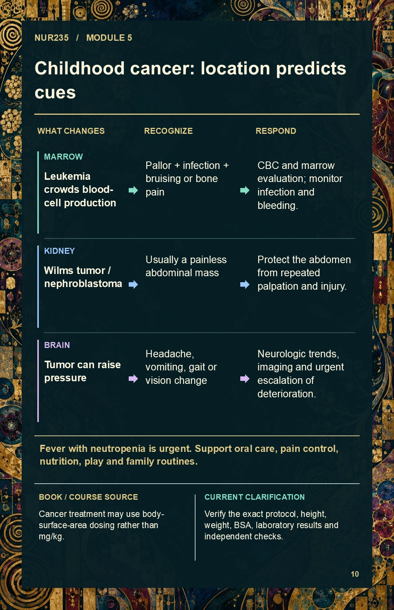
Read slide text and study notes
NUR235 / MODULE 5
Childhood cancer: location predicts cues
10
WHAT CHANGES
RECOGNIZE
RESPOND
MARROW
Leukemia crowds blood-cell production
Pallor + infection + bruising or bone pain
CBC and marrow evaluation; monitor infection and bleeding.
KIDNEY
Wilms tumor / nephroblastoma
Usually a painless abdominal mass
Protect the abdomen from repeated palpation and injury.
BRAIN
Tumor can raise pressure
Headache, vomiting, gait or vision change
Neurologic trends, imaging and urgent escalation of deterioration.
Fever with neutropenia is urgent. Support oral care, pain control, nutrition, play and family routines.
BOOK / COURSE SOURCE
CURRENT CLARIFICATION
Cancer treatment may use body-surface-area dosing rather than mg/kg.
Verify the exact protocol, height, weight, BSA, laboratory results and independent checks.
Original study notes and source references
NUR235 content mastery infographic. Original native diagram by Codex. No Claude-created graphics.
High-level overview. The user-supplied module content reviews and textbook anchor the content. Book/course statements and current clarifications remain separate. Full prior wording is preserved below for study reference.
Some neurologic and musculoskeletal chapters are missing from the provided book extract. Available course sources and identified primary references supplement these gaps.
Childhood cancer and treatment care
User module content reviews, NUR235
{"theories": {"book_chapter": 28, "text_lines": [38660, 38956], "supports": "Erikson stages and Piaget age/stage terminology; implications for teaching/play.", "opening_excerpt": "Provide oral stimulation by giving pacifiers; do not discourage thumb sucking."}, "infant-growth": {"book_chapter": 29, "text_lines": [39631, 39981], "supports": "Weight doubles at 4–6 months/triples at 1 year; textbook month-by-month motor/language anchors.", "opening_excerpt": "The physiologic changes that occur in the infant year reflect both the increasing maturity and growth of body organs."}, "infant-trust": {"book_chapter": 29, "text_lines": [40105, 40175], "supports": "Emotional/cognitive development, object permanence, trust.", "opening_excerpt": "Socialization, or learning how to interact with others, is an extensive phenomenon. One-month-old infants show they can differentiate between faces and other objects by studying a face or the picture of a face longer than other objects. They are calm and feed "}, "infant-safety": {"book_chapter": 29, "text_lines": [40271, 40379], "supports": "Falls, choking, burns, automobile and water safety; rear-facing age wording is outdated.", "opening_excerpt": "Q. A parent is worried about keeping their 2-month-old safe. “How can I prevent accidents at this age?” the parent asks."}, "infant-feed": {"book_chapter": 29, "text_lines": [40463, 40625], "supports": "Human milk/iron-fortified formula, complementary foods near 6 months, iron foods, no honey or cow milk as main drink before 12 months.", "opening_excerpt": "Feeding recommendations for infants from birth through 6 months are to provide human milk exclusively via breastfeeding or expression and stored in a bottle. Human milk is the ideal form of nutrition for infants. It provides all the necessary nutrients, protec"}, "infant-vaccine": {"book_chapter": 29, "text_lines": [39431, 39593], "supports": "Well-child assessment and the textbook vaccine table.", "opening_excerpt": "Height, weight, head circumference plotted on standard growth chart; physical examination"}, "toddler": {"book_chapter": 30, "text_lines": [41172, 41294], "supports": "Autonomy, parent observation, language concern at 2 years, slowed growth and appetite.", "opening_excerpt": "During the toddler period, the age span from 1 to 3 years, enormous changes take place in a child and, consequently, in a family. During this period, children accomplish a wide array of developmental tasks and change from largely immobile and preverbal infants"}, "preschool": {"book_chapter": 31, "text_lines": [41357, 41447], "supports": "Age3–5, participation through modeling/play, physical and developmental assessment; remainder unavailable in extraction.", "opening_excerpt": "The preschool period traditionally includes the years 3, 4, and 5. Although physical growth slows considerably during this period, personality and cognitive growth continue at a rapid rate. Caregivers may be unsure how much independence and responsibility for "}, "school-growth": {"book_chapter": 32, "text_lines": [41590, 41658], "supports": "School-age growth and onset/order of puberty.", "opening_excerpt": "The average annual weight gain for a school-aged child is approximately 3 to 5 lb (1.3 to 2.2 kg); the increase in height is 1 to 2 in. (2.5 to 5 cm). Children who did not lose a lordosis and knock-kneed appearance during the preschool period typically lose th"}, "school-thinking": {"book_chapter": 32, "text_lines": [41850, 41982], "supports": "Industry, concrete operations, conservation/classification and skill mastery.", "opening_excerpt": "Ideally, children enter the school-aged period with the ability to trust others and with a sense of self-respect. They can accomplish small tasks independently because they have gained a sense of autonomy. They should have practiced adult roles, learned to sha"}, "school-safety": {"book_chapter": 32, "text_lines": [42014, 42096], "supports": "Injury prevention and body safety teaching.", "opening_excerpt": "Teach children to avoid unsafe areas, such as train yards, grain silos, and back alleys."}, "school-health": {"book_chapter": 32, "text_lines": [42390, 42530], "supports": "Immunizations, dental care and health assessment; schedule contains outdated product/dose wording.", "opening_excerpt": "Check history and past records, inform caregiver about any risks and side effects, and administer immunization in accordance with healthcare agency policies."}, "school-stress": {"book_chapter": 32, "text_lines": [42790, 42865], "supports": "Stress, school difficulties and substance-use concerns.", "opening_excerpt": "Reproductive life planning measures and the principles of safer sex if appropriate to the cultural setting (see Chapters 5 and 6). Sexual orientation questions and concerns may arise at this time, and questions should be addressed honestly and openly."}, "adolescent-limit": {"book_chapter": 33, "text_lines": [43127, 43183], "supports": "Only opening case, objectives and preventive privacy goal are present; full chapter not available.", "opening_excerpt": "For additional ancillary materials related to this chapter, please visit the point."}, "assessment": {"book_chapter": 34, "text_lines": [43374, 43408], "supports": "Adolescent private interview; confidentiality must be qualified by safety/legal exceptions.", "opening_excerpt": "A second reason K.W.’s parent has brought the child to your ambulatory clinic is because of increased frequency and burning on urination."}, "exam-order": {"book_chapter": 34, "text_lines": [44020, 44046], "supports": "Assessment is adapted to age; least intrusive observations first, uncomfortable portions later.", "opening_excerpt": "Presented here are the components of a routine or general physical assessment. It is important to recognize what a “general” physical examination entails so you can interpret the extent of the assessment a child has received when the caregiver states, “My chil"}, "teaching": {"book_chapter": 35, "text_lines": [46729, 46945], "supports": "Teach-back, demonstration/return demonstration and development-specific communication.", "opening_excerpt": "Children have variable attention spans. Assess the learner and provide lessons in segments of 5–20 minutes. Ideally, the child should be well rested and well-nourished prior to the teaching."}, "hospital": {"book_chapter": 36, "text_lines": [48070, 48134], "supports": "Family presence, routines and protest/despair/detachment after separation.", "opening_excerpt": "Obtain any special information about the child that the parents think would make them more comfortable in the hospital."}, "procedures": {"book_chapter": 37, "text_lines": [49105, 49293], "supports": "Diagnostic/therapeutic modalities, consent and developmental planning; extracted chapter is incomplete.", "opening_excerpt": "Nursing Care of a Family When a Child Needs Diagnostic or Therapeutic Modalities"}, "med-dose": {"book_chapter": 38, "text_lines": [49350, 49578], "supports": "Measured kg weight, individual dose safety, assessment and fractional-dose example; reversed conversion typo at49352.", "opening_excerpt": "Most adults immediately grasp that taking a medicine you offer them will be important to relieve whatever symptoms they are experiencing from an illness. Because children do not necessarily have this same level of understanding, they may resist taking medicine"}, "med-route": {"book_chapter": 38, "text_lines": [49616, 49674], "supports": "Oral medication positioning, oral syringe and age-appropriate technique.", "opening_excerpt": "Children younger than 3 years are unable to swallow pills. After that age, the ability of children to swallow pills varies from one child to the next and is not age dependent. Typically, children older than 9 years can be offered tablets; however, some adolesc"}, "pain": {"book_chapter": 39, "text_lines": [50756, 50862], "supports": "Behavioral tools, FLACC, child self-report FACES/numeric and combined comfort/analgesia.", "opening_excerpt": "Each area of concern is scored from 0 to 2. Infants with a total score of 4 or more are most likely to be in pain and need interventions to reduce discomfort. The scale cannot be used with infants who are intubated or paralyzed for ventilator assistance becaus"}, "nosebleed": {"book_chapter": 40, "text_lines": [52143, 52155], "supports": "Sit upright/forward; continuous pressure over soft nose for about10min; evaluate persistent/recurrent bleeding.", "opening_excerpt": "Epistaxis (nosebleed) is extremely common in children and usually occurs from trauma or irritation such as picking at the nasal mucosa. Dry air can cause mucous membranes to become dry and susceptible to cracking and bleeding. Epistaxis may also occur after st"}, "hiv": {"book_chapter": 42, "text_lines": [55531, 55664], "supports": "HIV CD4 mechanism, infection risks, family coping; treatment specifics need current NIH guidance.", "opening_excerpt": "HIV is a slowly replicating retrovirus and has at least two main divisions, HIV-1 and HIV-2, followed by a variety of further subtypes. The virus acts by attacking the lymphoreticular system, in particular CD4-bearing helper T lymphocytes. The virus enters the"}, "allergy": {"book_chapter": 42, "text_lines": [56017, 56109], "supports": "Anaphylaxis manifestations, immediate IM epinephrine, emergency help and recurrent reaction risk.", "opening_excerpt": "Anaphylactic shock (anaphylaxis) is an immediate, life-threatening, type I hypersensitivity reaction that occurs after exposure to an allergen in a previously sensitized child. Anaphylaxis can be caused by exposure to foods such as milk, egg, peanut, and tree "}, "eczema": {"book_chapter": 42, "text_lines": [56307, 56475], "supports": "Atopic dermatitis itch–scratch cycle, distribution and skin care.", "opening_excerpt": "Atopic dermatitis is a highly pruritic, chronic inflammatory skin disease that is often the first manifestation of allergic disease. It is a common disorder that affects 15% to 20% of children (Chopra et al., 2017)."}, "contact": {"book_chapter": 42, "text_lines": [56561, 56585], "supports": "Allergic contact dermatitis/typeIV, exposure pattern and removal of allergen.", "opening_excerpt": "Contact dermatitis is an example of a delayed or type IV hypersensitivity response; it is a reaction to skin contact with an allergen (a substance irritating to the child only with prior sensitization). The first reaction is generally erythema, followed by the"}, "rubella": {"book_chapter": 43, "text_lines": [57521, 57549], "supports": "Rubella syndrome; printed incubation/communicability statements are unreliable.", "opening_excerpt": "Incubation period: Generally, 14 days within a range of 16 to 183 days (AAP, 2018)"}, "measles": {"book_chapter": 43, "text_lines": [57551, 57593], "supports": "Cough/coryza/conjunctivitis, Koplik spots and descending rash.", "opening_excerpt": "Incubation period: 8 to 12 days from time of exposure to onset of any symptoms (AAP, 2018), with a range from 7 to 21 days (Drutz, 2016)"}, "varicella": {"book_chapter": 43, "text_lines": [57595, 57643], "supports": "Vesicles in crops, infection/complication risks; immune-globulin timing differs from current guidance.", "opening_excerpt": "Incubation period: 10 to 21 days, with the most common incidence at 14 to 16 days following exposure (Kennedy & Gershon, 2018)"}, "fifth": {"book_chapter": 43, "text_lines": [57677, 57704], "supports": "Parvovirus B19, slapped-cheek/lacy eruption and host-specific risk.", "opening_excerpt": "Incubation period: Most commonly between 4 and 14 days and can be as long as 21 days (AAP, 2018)"}, "mono": {"book_chapter": 43, "text_lines": [58009, 58048], "supports": "EBV saliva transmission, pharyngitis/adenopathy/fatigue and splenic risk.", "opening_excerpt": "Incubation period: Incubation period in adults and adolescents is 4 to 7 weeks, with a shorter incubation period in children (Fugl & Andersen, 2019)."}, "scarlet": {"book_chapter": 43, "text_lines": [58221, 58249], "supports": "GAS toxin-associated pharyngitis, sandpaper rash and antimicrobial treatment.", "opening_excerpt": "Incubation period: 2 to 5 days for streptococcal pharyngitis (AAP, 2018)"}, "impetigo": {"book_chapter": 43, "text_lines": [58251, 58280], "supports": "Staphylococcal/streptococcal superficial infection with honey crusts.", "opening_excerpt": "Causative agent: Beta-hemolytic streptococcus, group A or Staphylococcus aureus including methicillin-resistant Staphylococcus aureus (MRSA) (to be discussed in the subsequent section)"}, "pertussis": {"book_chapter": 43, "text_lines": [58365, 58417], "supports": "Paroxysmal cough, infant risk and treatment; immunity and isolation wording need updating.", "opening_excerpt": "Mode of transmission: Highly contagious by direct or indirect contact"}, "lice": {"book_chapter": 43, "text_lines": [58587, 58647], "supports": "Pediculosis and family teaching; avoid stigma about hygiene.", "opening_excerpt": "Small, white flecks on hair shaft (nits or eggs of lice); extreme pruritus"}, "pinworm": {"book_chapter": 43, "text_lines": [58649, 58655], "supports": "Nocturnal perianal itching, tape test and household hygiene; text omits repeat dose.", "opening_excerpt": "Pinworms are small, white, threadlike worms that live in the cecum. After ingestion of the egg, the mature worms develop over a period of 2 months in the cecum. The mature female pinworm then migrates out of the anus to deposit eggs on the skin in the anal and"}, "tinea": {"book_chapter": 43, "text_lines": [58675, 58705], "supports": "Tinea skin/scalp distinctions and antifungal treatment.", "opening_excerpt": "Fungi are larger than bacteria; some are unicellular (yeasts), but, generally, they are multicellular (molds). Deep mycoses invade internal organs. Respiratory transmission is by the inhalation of spores. Subcutaneous mycoses invade the skin, subcutaneous tiss"}, "transfusion": {"book_chapter": 44, "text_lines": [59254, 59340], "supports": "Transfusion setup, monitoring, reaction symptoms/stop action; printed AHTR label is inaccurate.", "opening_excerpt": "Transfusions of blood or its products are commonly used in the treatment of blood disorders and may include whole blood, packed RBCs, washed RBCs (as much “foreign” matter is removed as possible to reduce the possibility of an antagonistic reaction), plasma, p"}, "iron": {"book_chapter": 44, "text_lines": [59580, 59678], "supports": "Iron deficiency risks, low hemoglobin indices, diet and iron teaching.", "opening_excerpt": "Although the incidence of iron-deficiency anemia is decreasing in the United States due to improved infant nutrition, it is still the most common anemia of infancy and childhood, occurring whenever the intake of dietary iron is inadequate. Without adequate iro"}, "sickle": {"book_chapter": 44, "text_lines": [59738, 59974], "supports": "HbS vaso-occlusion/hemolysis, pain, sequestration/aplastic crises, hydration and analgesia.", "opening_excerpt": "Sickle cell anemia is an autosomal recessive inherited disorder carried on the beta chain of hemoglobin; the amino acid valine takes the place of the normally appearing glutamic acid. With this, the erythrocytes become characteristically elongated and crescent"}, "hemophilia": {"book_chapter": 44, "text_lines": [60258, 60318], "supports": "FactorVIII versusIX, X-linked inheritance and hemarthrosis.", "opening_excerpt": "Hemophilias are inherited disorders of blood coagulation. There are numerous types, each involving a deficiency of a different blood coagulation factor."}, "conjunctivitis": {"book_chapter": 50, "text_lines": [67992, 68042], "supports": "Conjunctivitis differential; the same content is duplicated earlier at66629–66679.", "opening_excerpt": "Inflammation of the conjunctiva; causes are numerous, including ophthalmia neonatorum (exposure to gonococcus bacillus; see Chapter 26) and bacterial, viral, and fungal organisms"}, "burns": {"book_chapter": 52, "text_lines": [70007, 70241], "supports": "Burn depth/area, ABCs, temperature/fluid/pain/infection and nutrition.", "opening_excerpt": "Burns are injuries to body tissue caused by excessive heat (greater than 104°F [40°C]). Burns are the second most common unintentional injury seen in children 1 to 4 years of age and the third most common cause of injury in children 5 to 14 years of age. Every"}, "oncology-care": {"book_chapter": 53, "text_lines": [71294, 71440], "supports": "Mucositis, infection, treatment-related toxicity and family care.", "opening_excerpt": "Children receiving long-term corticosteroid (e.g., dexamethasone or prednisone) therapy develop a typical “moon face,” red cheeks, and a stocky build. Like the loss of hair, a cushingoid appearance can be devastating to children or parents, the final insult in"}, "leukemia": {"book_chapter": 53, "text_lines": [71472, 71610], "supports": "Marrow blast proliferation causes anemia, infection risk and low platelets; diagnostic/treatment priorities.", "opening_excerpt": "Leukemia is the distorted and uncontrolled proliferation of WBCs (leukocytes) and is the most frequently occurring type of cancer in children."}, "brain": {"book_chapter": 53, "text_lines": [71716, 71906], "supports": "Brain tumor location, ICP/neurologic changes and surgery-specific postoperative care.", "opening_excerpt": "Brain tumors are the second most common form of cancer and the most common solid tumor in children. Tumors tend to occur between 1 and 10 years of age, with 5 years being the peak age of incidence. In children, brain tumors tend to occur at the midline in the "}, "wilms": {"book_chapter": 53, "text_lines": [72098, 72118], "supports": "Renal mass, hematuria/hypertension, imaging and nephrectomy-based treatment.", "opening_excerpt": "Nephroblastoma (Wilms tumor) is a malignant tumor that rises from the metanephric mesoderm cells of the upper pole of the kidney (Malkan et al., 2015). It accounts for 20% of solid tumors in childhood, and overall survival rates are greater than 90%. It may oc"}, "abuse": {"book_chapter": 55, "text_lines": [72856, 72958], "supports": "Maltreatment assessment, child protection, objective documentation and family concerns.", "opening_excerpt": "When obtaining a history, ask caregivers to account for any injury to a child’s body. Remember, however, that most childhood injuries are the result of unintentional injuries caused by the child’s inability to distinguish safe situations from dangerous ones or"}}
{"sleep": {"url": "https://www.aap.org/en/patient-care/safe-sleep/", "title": "AAP safe sleep"}, "carseat": {"url": "https://www.nhtsa.gov/vehicle-safety/car-seats-and-booster-seats", "title": "NHTSA child restraint recommendations"}, "milestones2": {"url": "https://www.cdc.gov/act-early/milestones/2-years.html", "title": "CDC milestones by2years"}, "milestones3": {"url": "https://www.cdc.gov/act-early/milestones/3-years.html", "title": "CDC milestones by3years"}, "milestones4": {"url": "https://www.cdc.gov/act-early/milestones/4-years.html", "title": "CDC milestones by4years"}, "milestones5": {"url": "https://www.cdc.gov/act-early/milestones/5-years.html", "title": "CDC milestones by5years"}, "vaccine": {"url": "https://www.cdc.gov/vaccines/hcp/imz-schedules/child-adolescent-age.html", "title": "CDC age schedule, page labels its addendum July2,2025"}, "aap2026": {"url": "https://publications.aap.org/pediatrics/article/157/3/e2025075754/206175/Recommended-Childhood-andAdolescent-Immunization", "title": "AAP2026 childhood/adolescent immunization policy"}, "meds": {"url": "https://www.healthychildren.org/English/safety-prevention/at-home/medication-safety/Pages/Using-Liquid-Medicines.aspx", "title": "AAP liquid medication measurement"}, "sickle-current": {"url": "https://www.nhlbi.nih.gov/sites/default/files/publications/56-364NFULL.pdf", "title": "NHLBI sickle-cell expert report: oxygen/fluids/transfusion in VOC"}, "sickle-ash": {"url": "https://doi.org/10.1182/bloodadvances.2020001851", "title": "ASH2020 sickle-cell pain guideline"}, "isolation": {"url": "https://www.cdc.gov/infection-control/hcp/isolation-precautions/appendix-a-type-duration.html", "title": "CDC isolation appendix, updated September11,2026"}, "pinworm-current": {"url": "https://www.cdc.gov/pinworm/hcp/clinical-overview/index.html", "title": "CDC pinworm treatment"}, "lice-current": {"url": "https://www.cdc.gov/lice/caring-head/", "title": "CDC head lice and school attendance"}, "pinkeye": {"url": "https://www.cdc.gov/conjunctivitis/treatment/", "title": "CDC conjunctivitis treatment"}, "acne": {"url": "https://www.aad.org/member/clinical-quality/guidelines/acne", "title": "AAD acne guideline"}, "hiv-current": {"url": "https://clinicalinfo.hiv.gov/en/guidelines/pediatric-arv/regimens-recommended-initial-therapy-antiretroviral-naive-children", "title": "NIH pediatric antiretroviral therapy"}, "blood": {"url": "https://www.isbtweb.org/resources/educational-modules-on-clinical-use-of-blood/adverse-effects-of-transfusion.html", "title": "ISBT adverse transfusion effects"}, "wilms-current": {"url": "https://medlineplus.gov/ency/article/001575.htm", "title": "MedlinePlus Wilms tumor and careful handling"}}
Three patterns to recognize
Leukemia: marrow crowding → anemia, infection risk and thrombocytopenia. Pallor/fatigue, fever, bruising/petechiae and bone pain. CBC/peripheral smear and marrow evaluation establish the pathway.
Wilms tumor: usually a painless abdominal/renal mass, sometimes hematuria or hypertension. Protect the abdomen from injury/repeated manipulation. Imaging guides treatment, commonly nephrectomy plus chemotherapy.
Brain tumor: headache/vomiting, gait or coordination change, vision changes, seizures or declining function. Perform focused neurologic assessment and escalate raised-ICP cues. Imaging and specialist treatment follow.
Treatment priorities shared across cancers
Fever with neutropenia is urgent. Follow infection prevention, central-line care and the oncology fever plan.
Prevent bleeding/injury with low platelets. Monitor for tumor lysis, dehydration and organ toxicity during therapy.
Support pain/nausea control, gentle oral care and adequate calories/protein. Modify textures for mucositis.
Preserve school/play, honest age-appropriate explanations, family participation and body-image support. Post-cranial-surgery position follows the surgical order.
Dosage reminder
Chemotherapy may use body-surface area rather than mg/kg. Verify protocol, height/weight, BSA, labs and independent checks. Do not substitute one dosing basis for another.
Use Wilms handling teaching as protection from tumor injury rather than implying that a clinician can never perform a necessary gentle examination. Do not teach one universal postoperative position for every brain tumor operation. Cancer diagnosis is established with the appropriate imaging/tissue/marrow pathway, not a cue alone.
Recall: Why can a child with a high leukemia WBC count still have severe infection risk?
Answer: Many circulating cells are immature/nonfunctional, while normal marrow function is impaired.
Website infographic
62 / 254Iron deficiency anemia & pica
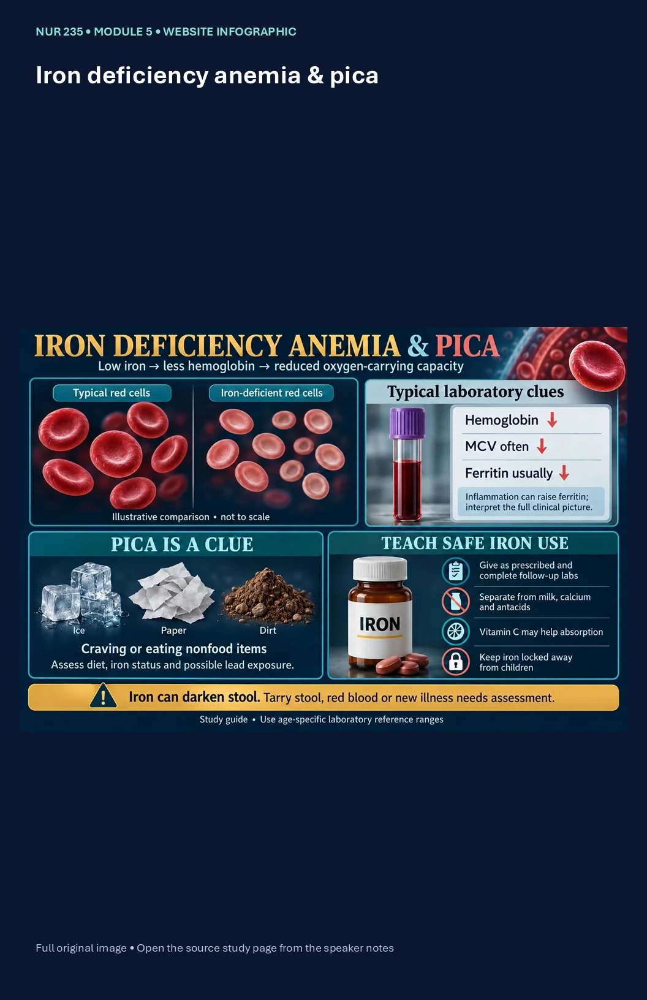
Read slide text and study notes
NUR 235 • MODULE 5 • WEBSITE INFOGRAPHIC
Iron deficiency anemia & pica
Full original image • Open the source study page from the speaker notes
Website infographic
63 / 254Sickle cell & hemophilia: nursing priorities
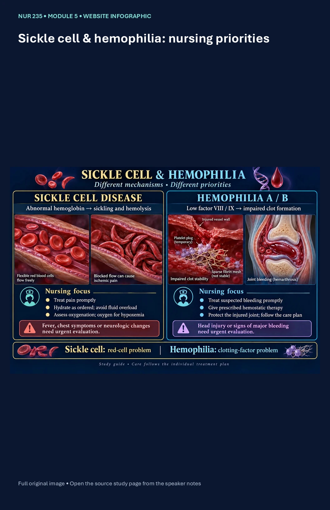
Read slide text and study notes
NUR 235 • MODULE 5 • WEBSITE INFOGRAPHIC
Sickle cell & hemophilia: nursing priorities
Full original image • Open the source study page from the speaker notes
Website infographic
64 / 254Sickle cell disease — visual study guide
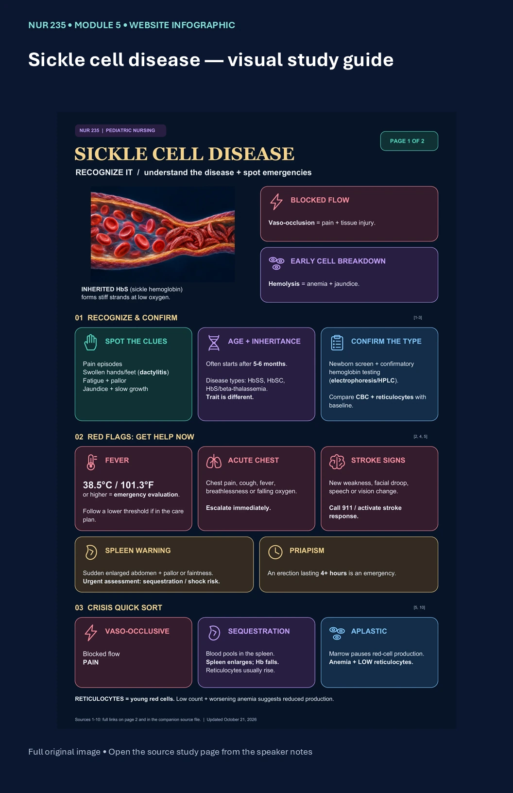
Read slide text and study notes
NUR 235 • MODULE 5 • WEBSITE INFOGRAPHIC
Sickle cell disease — visual study guide
Full original image • Open the source study page from the speaker notes
Website infographic
65 / 254Sickle cell crisis — which interventions are indicated?
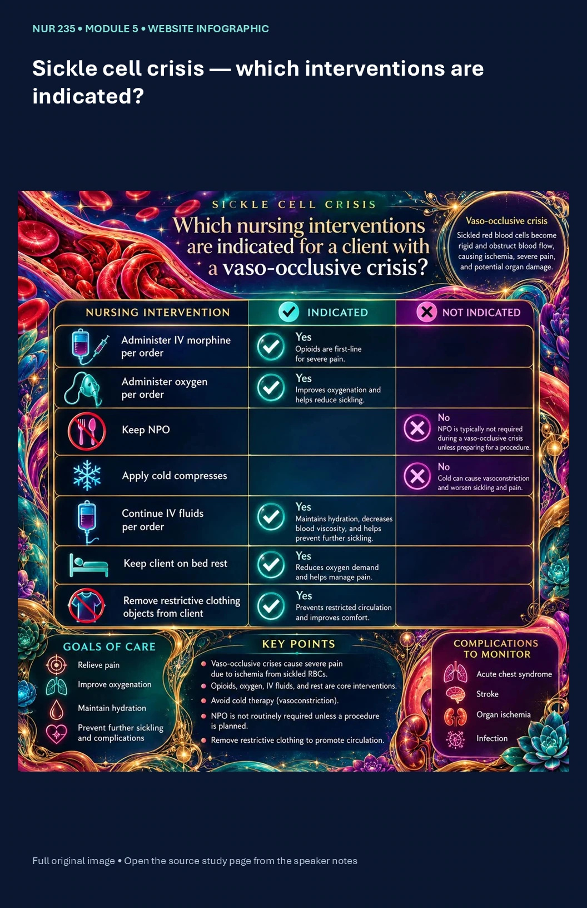
Read slide text and study notes
NUR 235 • MODULE 5 • WEBSITE INFOGRAPHIC
Sickle cell crisis — which interventions are indicated?
Full original image • Open the source study page from the speaker notes
Website infographic
66 / 254Epistaxis: nosebleed care
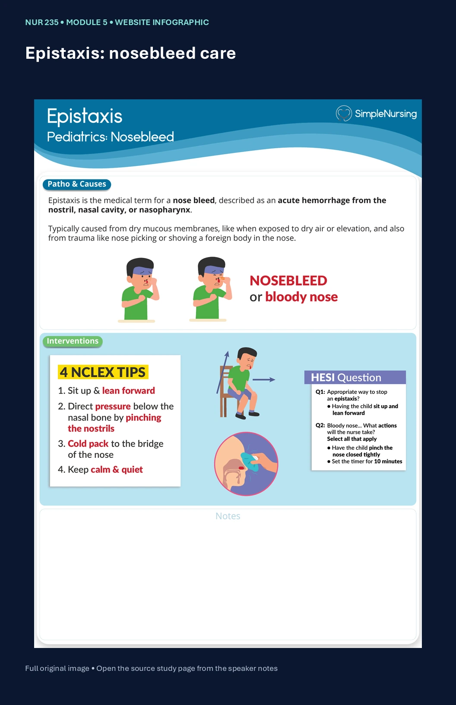
Read slide text and study notes
NUR 235 • MODULE 5 • WEBSITE INFOGRAPHIC
Epistaxis: nosebleed care
Full original image • Open the source study page from the speaker notes
Simple Nursing original · Module 5
67 / 254Simple Nursing: Iron Deficiency Anemia

Read handout text
Anemia T ypes & Iron Deficiency Anemia
Pediatrics: Hematological
Anemia is when the body lacks enough RBCs (Red Blood Cells) to carry oxygen
around the body to perfuse the tissues. Clients present with tired, fatigued & pale
skin, with shortness of breath and dizziness, as the body lacks oxygen.
Anemia Pathophysiology
Anemia Causes
• Blood loss: surgery, trauma, excessive menstruation etc.
• Chemotherapy & Immunosuppressants: which suppresses the bone marrow where the
RBCs are made.
• Lack of iron, B12 & other building blocks: like with iron def. anemia & pernicious anemia
Hemoglobin
Normal: 12 +
Bad: 8 - 9
Less than 7 = Heaven
NCLEX TIP
Iron Deficiency Anemia
The body lacks iron (Fe) a critical building block to help make
RBCs - red blood cells. This is the most common form of anemia globally Fe
Fe Fe
Fe
Fe
T op T ested
1. Iron deficiency Anemia
2. Sickle cell anemia
3. Pernicious Anemia
Infants & Children
1. Premature birth
2. Insufficient oral intake
3. Excessive intake of milk
5. Vegan diet
1. Fortified breads & cereals
2. HIGH iron foods with
HIGH vitamin C
3. Calcium & Vitamin D
NCLEX TIP
NCLEX TIP
4. Preterm infants exclusively
bottle-fed with breast milk
> 24 oz/day
Causes
Dyspnea
Pallor “pale skin”
Tachycardia
Iron Dextran (IV / IM)Ferrous Sulfate (oral)
FERROUS
SULFATE
IRON
DEXTRAN
KEY POINTS
Dark or black stools =
Normal & Expected
NOT GI BLEED
Empty stomach
1 HOUR BEFORE
medications
Signs & Symptoms
Pharmacology
Rich in iron
1. Meat, Fish, Poultry
2. Spinach “green leafy”
& whole grains
Kaplan Question
The nurse counsels a client
diagnosed with iron deficiency
anemia. The nurse determines
teaching is effective if the
client selects which menu?
Select all that apply
● Flank steak & green leafy
vegetables
● Liver & onions, spinach
HESI Question
A nurse is educating a patient
with iron deficiency on foods high
in iron. Which meal, if chosen by
the patient, demonstrates an
understanding of iron-rich foods?
Grilled chicken thigh, sauteed
spinach, and whole grain bread
Infants & Children
Limit EXCESSIVE milk intake
Iron + Vit. C
HIGH iron foods
HIGH vitamin C
Fe
Fe
Fe
Vitamin
C
Treatment
ATI Question
… toddler who has iron
deficiency anemia. Which of the
following food choices... best
source of iron?
● 1 cup of diced chicken breast
Q1:
Which best describes why
infants are started on solid foods
at about 5 to 6 months of age?
● The fetal reserve of iron is
depleted by this age
Q2:
Fe
Fe
Fe
Fe
Fe
ATI Question
T eaching to the parent of a
school-age child who has
iron-deficiency anemia and a
new prescription for a liquid
iron supplement. Which of the
following parent statements
indicates an understanding of
the teaching?
● I will administer this
medication using a straw
Simple Nursing original · Module 5
68 / 254Simple Nursing: Osteosarcoma vs. Ewing's Sarcoma

Read handout text
Osteosarcoma vs. Ewing’s Sarcoma
Pediatrics: Cancer
Osteosarcomas are types of bone cancer that begin in the osteoblasts (the cells that
form bones). They simply “blast out” too much osteoid tissue & form a big tumor,
commonly around the ends of long bones.
Osteosarcoma - Pathophysiology
Malignant = Malicious (Cancer)
Benign = Be nice (non-cancerous)
MEMORY TRICK
Osteosarcoma
Osteoblasts Malignant = MaliciousBenign = Be nice
Ewing’s Sarcoma - Pathophysiology
Ewing’s sarcoma is bone cancer that commonly starts in the femur and sacrum bones,
or in nearby soft cartilage & nerves. These tumors can develop at any age, but are
commonly developed from ages 10 - 20 years old.
Femur bone
Sacrum bone
MOST common
10 - 20 years old
For both conditions:
1. Bone pain
2. Swelling
3. Fractures
Common s/s of Cancer
Fever, Fatigue, Weight loss
• Imaging - X-ray, CT scan, MRI
• Biopsy of the tumor or bone marrow
• Blood tests - CBC - complete blood count measures
the levels of white blood cells, red blood cells, and
platelets in the blood.
An abnormal CBC result might suggest the cancer has
spread to the bone marrow, where these blood cells are
made.
CBC T est
• Chemotherapy & Radiation therapy - to kill cancer
cells & decrease the size of the tumor.
• Surgery - to take out the tumor & even amputation
may be done.
ATI
New diagnosis of Ewing’s sarcoma.
Which of the following actions should
the nurse take?
Spend time with the adolescent
to answer any questions
DOXORUBICIN
Signs & Symptoms
Diagnostics
Treatment
Therapeutic Communication
Simple Nursing original · Module 5
69 / 254Simple Nursing: Neuroblastoma

Read handout text
Neuroblastoma
Pediatrics: Cancer
Neuroblastoma is cancer that develops from immature nerve cells, specifically
neural crest cells found in the spinal cord & adrenal glands. During infant
development these neural crest cells do not differentiate properly & begin to
form tumors, which can easily spread to bone marrow, liver & lymph nodes.
Neuroblastoma is NOT to be confused with Nephroblastoma (Wilms tumor)
which is a tumor in the Nephron of the kidney.
Spinal cord Adrenal glands
Fever
Weight Loss
Fatigue
Lungs: difficulty breathing, chest pain,
Location of Tumor:
Neck & face:
Periorbital ecchymosis
Abdominal mass with pain & swelling
Exophthalmos
Bones:
Bone pain & fractures
Decreased RBC
HESI Question
Which is the main difference between
neuroblastoma and Wilms tumor?
ATI Question
… Neuroblastoma of the adrenal gland with
primary metastasis. Which of the following
findings should the nurse expect? Select all
that apply.
Wilms tumor is confined to one side
of the abdomen
Bone pain
Periorbital ecchymosis
Exophthalmos
Fatigue
Signs & Symptoms
- CT scans can check for the presence of tumors.
- Urine & blood tests can check for catecholamines like norepinephrine & epinephrine,
as neuroblastoma cells can produce excess amounts of these chemicals.
Epinephrine Norepinephrine
Diagnostics
Early: Radiation & surgery can be used to both shrink and surgically remove
the tumor.
Late: If the cancer has metastasized (spread around the body):
- Chemotherapy can be used to kill the cancer cells
- Immunotherapy is used to stimulate the immune system to fight the
cancer cells
- Bone marrow transplant is used to rebuild the immune system & blood
after chemotherapy.
EARL Y
LATE
Bone marrow transplant
Treatment
Pathophysiology
EXAM TIP
Simple Nursing original · Module 5
70 / 254Simple Nursing: Sickle Cell Anemia & Pernicious Anemia

Read handout text
Sickle Cell Anemia & Pernicious Anemia
Pediatrics: Hematological
Sickle Cell Anemia
The RBCs have a distorted shape, transforming from a nice round plumb
shape to a skinny sucked in sickle shape. These misshaped RBCs die
quicker than normal RBCs, carry less oxygen to the body & get clogged
in tiny blood vessels - blocking or occluding the blood supply causing
ischemia (low oxygen) to the organs. A vaso-occlusive crisis or
“sickle cell crisis” can occur, causing extreme pain from the lack of oxygen!
Pernicious Anemia
The body can not absorb B12, which is a vital building block to create RBC’s.
Clients lack intrinsic factor in the GI tract, which helps the body take in B12.
HESI Question
Which factor results from
pernicious anemia?
The absence of intrinsic
factor secreted by the
gastric mucosa
B12 B12
B12
B12
B12
B12
O2
O2
O2
O2 O2
O2
O2
O2
O2
O2 O2
O2
Normal Cell Sickle Cell
O2O2
O2
O2
O2
O2
Treatment
Signs & Symptoms
Glossitis:
• Inflamed red smooth tongue
Extreme weakness
EXAM TIP
Jaundice: “pale yellow skin”
Kaplan Question
Clinical manifestations
of pernicious anemia?
● Glossitis: A smooth,
red tongue
HESI Question
The nurse is caring for a patient
who reports extreme weakness
and glossitis, and the nurse
identifies pale yellow skin. Which
type of anemia does the nurse
anticipate in the patient?
● Pernicious anemia
• B12 - Injection: IM or IV
• NOT orally (PO)
HESI Question
A nurse is caring for a patient
with pernicious anemia
secondary to total gastrectomy.
The nurse would question which
provider's order?
● Vitamin B12 supplement , PO
Kaplan Question
Client diagnosed with pernicious
anemia asks why vitamin B12 cannot
be given in pill form. Which response
by the nurse is best?
● “Stomach doesn’t secrete the
necessary substance for B12
to be absorbed orally.”
A client asks the nurse how long
injections of vitamin B12 will be
needed. Which response by the
nurse is best?
● You may need lifelong injections
B12
B12
B12
B12 B12
B12
B12
B12
B12
B12
B12
B12 B12
B12
B12
B12
Signs & Symptoms
Treatment
NCLEX TIP
One sided arm weakness
Swelling of the feet and
hands (Dactylitis)
New-onset paralysis of
extremities
Sudden inability to be
aroused
Kaplan Question
Client experiencing a
vaso-occlusive crisis. The nurse
determines care is appropriate
if which observation is made?
● The client receives regular
neurological assessments
Rapidly enlarging spleen
Low blood pressure
Splenic sequestration crisis
Hydration: IV fluids
Bed rest
Pain Control
• PCA - patient control
analgesia pump
• Call the HCP for
Higher doses
NCLEX TIP
Splenomegaly
Complication
ATI Question
A pediatric nurse is giving
instructions to a 12-year-old
client with sickle cell disease
and his parents. T o prevent a
crisis, the nurse explains that the
child should do which of the
following? Select all that apply.
● Stay away from sick children
● Increase fluids
● Be aware that high altitudes
may lead to a crisis
Simple Nursing original · Module 5
71 / 254Simple Nursing: Hemophilia

Read handout text
Hemophilia
Pediatrics: Hematological
Hemophilia is an inherited bleeding disorder in which the blood cannot clot
normally. Clients have an increased risk of excessive bleeding from small
injuries like a paper cut or a fall on the ground.
Lack of clotting factor VIII (8)
Hemophilia A
Hemophilia B
Lack of clotting factor IX (9)
A nurse is caring for a patient diagnosed
with hemophilia A. The nurse knows this
type of hemophilia is caused by an absence
of which clotting factor?
HESI Question
• VIII
Clotting factor VIII
Hemophilia A
Clotting factor IX
Hemophilia B
Signs & Symptoms
Pain, Bruising, & Petechiae
Ineffective tissue perfusion
Joint stiffness &
Lack of mobility
A nurse is caring for a patient with
hemophilia. Which concerns
would be expected on the nursing
care plan?
Select all that apply.
HESI Question
Pain
Anxiety
Deficit of fluid volume
Ineffective tissue perfusion
Treatment
AVOID Injections: IV, IM, SQ
Administers coagulation
replacement factors
Ice packs &
Elevate the affected area
Client with hemophilia develops painful
swelling of the knee after bumping the
leg... which initial action is most
appropriate for the nurse to take?
The nurse reviews the medical record for
a client diagnosed with hemophilia. It is
most important for the nurse to question
which entry?
Kaplan Question
Apply ice to the knee and
elevate the leg
Meperidine 75mg IM q 4 hr
for severe pain
Q1
Q2
Meperidine
4 hr
Pathophysiology
Education
1. Wear a medical alert
bracelet at all times
2. Avoid giving the child
over-the-counter aspirin
3. Noncontact sports:
swimming, jogging
4. Joint destruction =
long-term complication
4 NCLEX TIPS
1. Admin vaccines via
subcutaneous route
with the smallest needle
2. Hold pressure on the
injection site for
5 minutes or more.
2 NCLEX TIPS
Vaccinations
The big bleed risk
5
min
Simple Nursing original · Module 5
72 / 254Simple Nursing: Retinoblastoma

Read handout text
Retinoblastoma
Pediatrics: Visual & Audio
Notes
White pupil (Leukocoria)1.
Absent red reflex 2.
NCLEX TIPS
First recognized when parent report a
white pupil.
This may be first seen while taking a
photograph using a flash.
Another sign is a Strabismus, or wandering
misaligned eye, but that is a late sign.
MEMORY TRICK
RED-inoblastoma
Normal
Late sign
Signs & Symptoms
Retinoblastoma is the most common eye cancer in childhood,
typically diagnosed in children less than 2 years of age.
≤ 2 year-old Retinoblastoma
Pathophysiology
Retinoblastoma interventions - Radiation
Enucleation
(removal of the eye & placing a prosthesis)
Siblings should undergo
ocular screening NCLEX TIP
Siblings should undergo ocular screening as some forms
of retinoblastoma are hereditary.
Interventions
Simple Nursing original · Module 5
73 / 254Simple Nursing: Wilms Tumor (Nephroblastoma) copy

Read handout text
Wilms T umor (Nephroblastoma)
Pediatrics: Cancer
Nephroblastoma is the most common type of kidney cancer in children.
When kidney cells do not fully develop to maturity, the cells overgrow
resulting in a Wilms tumor.
Nephro blastoma
MEMORY TRICK
Nephro - meaning kidney
Fever
Fatigue
Hematuria
NCLEX TIP
One-sided abdominal
mass “bulging”
HESI
Q1: Which is the main difference between
neuroblastoma and Wilms tumor?
Wilms tumor is confined to one side
of the abdomen
Q2: Which are the clinical manifestations of
Wilms tumor? Select all that apply.
Fever
Fatigue
Hematuria
Abdominal swelling or mass
Signs & Symptoms
HESI
A 3 year old child is scheduled for surgery to
remove a Wilms tumor … What treatments …
will be necessary after surgery?
Chemotherapy with or without
radiotherapy is indicated
Nephrectomy surgery is done to remove either the whole kidney or only
part of the kidney & surrounding tissues.
After surgery, chemotherapy & radiation therapy is used to ensure the
elimination of cancer cells.
Treatment
Pathophysiology & Causes
DO NOT PALPATE
the abdomen NCLEX TIP
ATI
Wilms tumor: Which of the following signs should
the nurse place over the child’s bed?
Do not palpate abdomen
HESI
Wilms tumor: What is the most important safety
precaution for a child?
Place a “do not palpate abdomen” sign on
head of bed
Place a BIG SIGN over the patient’s bed stating
DO NOT PALPATE Abdomen.
Palpating the abdomen increases the risk of
rupturing the encapsulated tumor, which could
cause cancer cells to spread all over the body.
DO NOT PALPATE
ABDOMEN
Intervention
Simple Nursing original · Module 5
74 / 254Simple Nursing: Thrombocytopenia

Read handout text
Thrombocytopenia
Pediatrics: Hematological
Causes
Signs & Symptoms
Thrombocytopenia occurs when clients have low platelets.
Normal: 150,000 - 400,000
Thrombocytopenia:
150,000 or less
100,000 = MAJOR RISK
50,000 or Less = DEADLY
Platelets
≤ 150,000
Thrombocytopenia
Thrombocytopenia
100,000
Thrombocytopenia
≤ 50,000
Huge risk for hemorrhaging, like a ticking time bomb.
Any small bump or fall will cause major bleeding
• Bleeding gums
• Tachycardia
• Petechiae (Tiny red brown-purple spots on the skin)
Which sign is observed in the
patient with thrombocytopenia?
HESI Question
Petechiae Petechiae
Immunosuppressants
Liver disease (Hep. / Cirrhosis)
ITP - Immune
thrombocytopenia purpura
Bleeding - Huge risk for injury, like a ticking
time bomb
Interventions
Platelets Less than 100k
Hold the P’s
Notify the HCP
Obtain vital signs
HeParin
AsPirin
CloPidogrel
EnoxaParin
1
98%
78
120/80
24 RPM
BPM
98.6 F
HeParin
P
AsPirin
P
ASPIRIN
CloPidogrel
P
EnoxaParin
P
CLOPIDOGREL
Teaching
NO NSAIDS over the counter
NO Razors
NSAIDs
NCLEX
Pathophysiology
The nurse cares for a client diagnosed
with immune thrombocytopenia purpura.
Which nursing diagnosis is a priority
when caring for this client?
Kaplan Question
Risk for injury
PRIORITY
The NCLEX will give lab values & ask for priority action!
THINK: what KILLS the patient first!
Cirrhosis Immunosuppressants
& Surgery Labor & Epidural
Exhibit Exhibit Exhibit
Albumin 2.7 g/dL
Bilirubin Negative
Platelets 45,000
Ammonia 125
Laboratory result Laboratory result Laboratory result
?
Platelets 45,000
Blood group A+
Rh factor Negative
WBCs 18,000
Platelets 75,000
WBCs 3,000
Hemoglobin 9.5 g/dL
Platelets 68,000
1. Look for the most critical lab!
All are less than 100,000, but cirrhosis is the lowest -
less than 50,000.
2. It’s your JOB as a nurse to SAVE LIVES!
The NCLEX will make sure you do.
3. This is why you MUST know your numbers.
Complication
Original overview
75 / 254Immune threats: stabilize, then protect
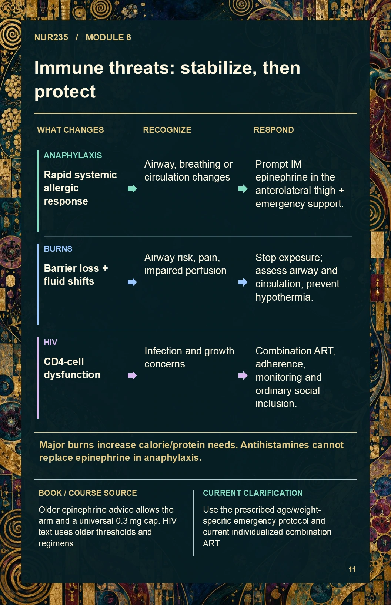
Read slide text and study notes
NUR235 / MODULE 6
Immune threats: stabilize, then protect
11
WHAT CHANGES
RECOGNIZE
RESPOND
ANAPHYLAXIS
Rapid systemic allergic response
Airway, breathing or circulation changes
Prompt IM epinephrine in the anterolateral thigh + emergency support.
BURNS
Barrier loss + fluid shifts
Airway risk, pain, impaired perfusion
Stop exposure; assess airway and circulation; prevent hypothermia.
HIV
CD4-cell dysfunction
Infection and growth concerns
Combination ART, adherence, monitoring and ordinary social inclusion.
Major burns increase calorie/protein needs. Antihistamines cannot replace epinephrine in anaphylaxis.
BOOK / COURSE SOURCE
CURRENT CLARIFICATION
Older epinephrine advice allows the arm and a universal 0.3 mg cap. HIV text uses older thresholds and regimens.
Use the prescribed age/weight-specific emergency protocol and current individualized combination ART.
Original study notes and source references
NUR235 content mastery infographic. Original native diagram by Codex. No Claude-created graphics.
High-level overview. The user-supplied module content reviews and textbook anchor the content. Book/course statements and current clarifications remain separate. Full prior wording is preserved below for study reference.
Some neurologic and musculoskeletal chapters are missing from the provided book extract. Available course sources and identified primary references supplement these gaps.
Immune and infectious disorders
User module content reviews, NUR235
{"theories": {"book_chapter": 28, "text_lines": [38660, 38956], "supports": "Erikson stages and Piaget age/stage terminology; implications for teaching/play.", "opening_excerpt": "Provide oral stimulation by giving pacifiers; do not discourage thumb sucking."}, "infant-growth": {"book_chapter": 29, "text_lines": [39631, 39981], "supports": "Weight doubles at 4–6 months/triples at 1 year; textbook month-by-month motor/language anchors.", "opening_excerpt": "The physiologic changes that occur in the infant year reflect both the increasing maturity and growth of body organs."}, "infant-trust": {"book_chapter": 29, "text_lines": [40105, 40175], "supports": "Emotional/cognitive development, object permanence, trust.", "opening_excerpt": "Socialization, or learning how to interact with others, is an extensive phenomenon. One-month-old infants show they can differentiate between faces and other objects by studying a face or the picture of a face longer than other objects. They are calm and feed "}, "infant-safety": {"book_chapter": 29, "text_lines": [40271, 40379], "supports": "Falls, choking, burns, automobile and water safety; rear-facing age wording is outdated.", "opening_excerpt": "Q. A parent is worried about keeping their 2-month-old safe. “How can I prevent accidents at this age?” the parent asks."}, "infant-feed": {"book_chapter": 29, "text_lines": [40463, 40625], "supports": "Human milk/iron-fortified formula, complementary foods near 6 months, iron foods, no honey or cow milk as main drink before 12 months.", "opening_excerpt": "Feeding recommendations for infants from birth through 6 months are to provide human milk exclusively via breastfeeding or expression and stored in a bottle. Human milk is the ideal form of nutrition for infants. It provides all the necessary nutrients, protec"}, "infant-vaccine": {"book_chapter": 29, "text_lines": [39431, 39593], "supports": "Well-child assessment and the textbook vaccine table.", "opening_excerpt": "Height, weight, head circumference plotted on standard growth chart; physical examination"}, "toddler": {"book_chapter": 30, "text_lines": [41172, 41294], "supports": "Autonomy, parent observation, language concern at 2 years, slowed growth and appetite.", "opening_excerpt": "During the toddler period, the age span from 1 to 3 years, enormous changes take place in a child and, consequently, in a family. During this period, children accomplish a wide array of developmental tasks and change from largely immobile and preverbal infants"}, "preschool": {"book_chapter": 31, "text_lines": [41357, 41447], "supports": "Age3–5, participation through modeling/play, physical and developmental assessment; remainder unavailable in extraction.", "opening_excerpt": "The preschool period traditionally includes the years 3, 4, and 5. Although physical growth slows considerably during this period, personality and cognitive growth continue at a rapid rate. Caregivers may be unsure how much independence and responsibility for "}, "school-growth": {"book_chapter": 32, "text_lines": [41590, 41658], "supports": "School-age growth and onset/order of puberty.", "opening_excerpt": "The average annual weight gain for a school-aged child is approximately 3 to 5 lb (1.3 to 2.2 kg); the increase in height is 1 to 2 in. (2.5 to 5 cm). Children who did not lose a lordosis and knock-kneed appearance during the preschool period typically lose th"}, "school-thinking": {"book_chapter": 32, "text_lines": [41850, 41982], "supports": "Industry, concrete operations, conservation/classification and skill mastery.", "opening_excerpt": "Ideally, children enter the school-aged period with the ability to trust others and with a sense of self-respect. They can accomplish small tasks independently because they have gained a sense of autonomy. They should have practiced adult roles, learned to sha"}, "school-safety": {"book_chapter": 32, "text_lines": [42014, 42096], "supports": "Injury prevention and body safety teaching.", "opening_excerpt": "Teach children to avoid unsafe areas, such as train yards, grain silos, and back alleys."}, "school-health": {"book_chapter": 32, "text_lines": [42390, 42530], "supports": "Immunizations, dental care and health assessment; schedule contains outdated product/dose wording.", "opening_excerpt": "Check history and past records, inform caregiver about any risks and side effects, and administer immunization in accordance with healthcare agency policies."}, "school-stress": {"book_chapter": 32, "text_lines": [42790, 42865], "supports": "Stress, school difficulties and substance-use concerns.", "opening_excerpt": "Reproductive life planning measures and the principles of safer sex if appropriate to the cultural setting (see Chapters 5 and 6). Sexual orientation questions and concerns may arise at this time, and questions should be addressed honestly and openly."}, "adolescent-limit": {"book_chapter": 33, "text_lines": [43127, 43183], "supports": "Only opening case, objectives and preventive privacy goal are present; full chapter not available.", "opening_excerpt": "For additional ancillary materials related to this chapter, please visit the point."}, "assessment": {"book_chapter": 34, "text_lines": [43374, 43408], "supports": "Adolescent private interview; confidentiality must be qualified by safety/legal exceptions.", "opening_excerpt": "A second reason K.W.’s parent has brought the child to your ambulatory clinic is because of increased frequency and burning on urination."}, "exam-order": {"book_chapter": 34, "text_lines": [44020, 44046], "supports": "Assessment is adapted to age; least intrusive observations first, uncomfortable portions later.", "opening_excerpt": "Presented here are the components of a routine or general physical assessment. It is important to recognize what a “general” physical examination entails so you can interpret the extent of the assessment a child has received when the caregiver states, “My chil"}, "teaching": {"book_chapter": 35, "text_lines": [46729, 46945], "supports": "Teach-back, demonstration/return demonstration and development-specific communication.", "opening_excerpt": "Children have variable attention spans. Assess the learner and provide lessons in segments of 5–20 minutes. Ideally, the child should be well rested and well-nourished prior to the teaching."}, "hospital": {"book_chapter": 36, "text_lines": [48070, 48134], "supports": "Family presence, routines and protest/despair/detachment after separation.", "opening_excerpt": "Obtain any special information about the child that the parents think would make them more comfortable in the hospital."}, "procedures": {"book_chapter": 37, "text_lines": [49105, 49293], "supports": "Diagnostic/therapeutic modalities, consent and developmental planning; extracted chapter is incomplete.", "opening_excerpt": "Nursing Care of a Family When a Child Needs Diagnostic or Therapeutic Modalities"}, "med-dose": {"book_chapter": 38, "text_lines": [49350, 49578], "supports": "Measured kg weight, individual dose safety, assessment and fractional-dose example; reversed conversion typo at49352.", "opening_excerpt": "Most adults immediately grasp that taking a medicine you offer them will be important to relieve whatever symptoms they are experiencing from an illness. Because children do not necessarily have this same level of understanding, they may resist taking medicine"}, "med-route": {"book_chapter": 38, "text_lines": [49616, 49674], "supports": "Oral medication positioning, oral syringe and age-appropriate technique.", "opening_excerpt": "Children younger than 3 years are unable to swallow pills. After that age, the ability of children to swallow pills varies from one child to the next and is not age dependent. Typically, children older than 9 years can be offered tablets; however, some adolesc"}, "pain": {"book_chapter": 39, "text_lines": [50756, 50862], "supports": "Behavioral tools, FLACC, child self-report FACES/numeric and combined comfort/analgesia.", "opening_excerpt": "Each area of concern is scored from 0 to 2. Infants with a total score of 4 or more are most likely to be in pain and need interventions to reduce discomfort. The scale cannot be used with infants who are intubated or paralyzed for ventilator assistance becaus"}, "nosebleed": {"book_chapter": 40, "text_lines": [52143, 52155], "supports": "Sit upright/forward; continuous pressure over soft nose for about10min; evaluate persistent/recurrent bleeding.", "opening_excerpt": "Epistaxis (nosebleed) is extremely common in children and usually occurs from trauma or irritation such as picking at the nasal mucosa. Dry air can cause mucous membranes to become dry and susceptible to cracking and bleeding. Epistaxis may also occur after st"}, "hiv": {"book_chapter": 42, "text_lines": [55531, 55664], "supports": "HIV CD4 mechanism, infection risks, family coping; treatment specifics need current NIH guidance.", "opening_excerpt": "HIV is a slowly replicating retrovirus and has at least two main divisions, HIV-1 and HIV-2, followed by a variety of further subtypes. The virus acts by attacking the lymphoreticular system, in particular CD4-bearing helper T lymphocytes. The virus enters the"}, "allergy": {"book_chapter": 42, "text_lines": [56017, 56109], "supports": "Anaphylaxis manifestations, immediate IM epinephrine, emergency help and recurrent reaction risk.", "opening_excerpt": "Anaphylactic shock (anaphylaxis) is an immediate, life-threatening, type I hypersensitivity reaction that occurs after exposure to an allergen in a previously sensitized child. Anaphylaxis can be caused by exposure to foods such as milk, egg, peanut, and tree "}, "eczema": {"book_chapter": 42, "text_lines": [56307, 56475], "supports": "Atopic dermatitis itch–scratch cycle, distribution and skin care.", "opening_excerpt": "Atopic dermatitis is a highly pruritic, chronic inflammatory skin disease that is often the first manifestation of allergic disease. It is a common disorder that affects 15% to 20% of children (Chopra et al., 2017)."}, "contact": {"book_chapter": 42, "text_lines": [56561, 56585], "supports": "Allergic contact dermatitis/typeIV, exposure pattern and removal of allergen.", "opening_excerpt": "Contact dermatitis is an example of a delayed or type IV hypersensitivity response; it is a reaction to skin contact with an allergen (a substance irritating to the child only with prior sensitization). The first reaction is generally erythema, followed by the"}, "rubella": {"book_chapter": 43, "text_lines": [57521, 57549], "supports": "Rubella syndrome; printed incubation/communicability statements are unreliable.", "opening_excerpt": "Incubation period: Generally, 14 days within a range of 16 to 183 days (AAP, 2018)"}, "measles": {"book_chapter": 43, "text_lines": [57551, 57593], "supports": "Cough/coryza/conjunctivitis, Koplik spots and descending rash.", "opening_excerpt": "Incubation period: 8 to 12 days from time of exposure to onset of any symptoms (AAP, 2018), with a range from 7 to 21 days (Drutz, 2016)"}, "varicella": {"book_chapter": 43, "text_lines": [57595, 57643], "supports": "Vesicles in crops, infection/complication risks; immune-globulin timing differs from current guidance.", "opening_excerpt": "Incubation period: 10 to 21 days, with the most common incidence at 14 to 16 days following exposure (Kennedy & Gershon, 2018)"}, "fifth": {"book_chapter": 43, "text_lines": [57677, 57704], "supports": "Parvovirus B19, slapped-cheek/lacy eruption and host-specific risk.", "opening_excerpt": "Incubation period: Most commonly between 4 and 14 days and can be as long as 21 days (AAP, 2018)"}, "mono": {"book_chapter": 43, "text_lines": [58009, 58048], "supports": "EBV saliva transmission, pharyngitis/adenopathy/fatigue and splenic risk.", "opening_excerpt": "Incubation period: Incubation period in adults and adolescents is 4 to 7 weeks, with a shorter incubation period in children (Fugl & Andersen, 2019)."}, "scarlet": {"book_chapter": 43, "text_lines": [58221, 58249], "supports": "GAS toxin-associated pharyngitis, sandpaper rash and antimicrobial treatment.", "opening_excerpt": "Incubation period: 2 to 5 days for streptococcal pharyngitis (AAP, 2018)"}, "impetigo": {"book_chapter": 43, "text_lines": [58251, 58280], "supports": "Staphylococcal/streptococcal superficial infection with honey crusts.", "opening_excerpt": "Causative agent: Beta-hemolytic streptococcus, group A or Staphylococcus aureus including methicillin-resistant Staphylococcus aureus (MRSA) (to be discussed in the subsequent section)"}, "pertussis": {"book_chapter": 43, "text_lines": [58365, 58417], "supports": "Paroxysmal cough, infant risk and treatment; immunity and isolation wording need updating.", "opening_excerpt": "Mode of transmission: Highly contagious by direct or indirect contact"}, "lice": {"book_chapter": 43, "text_lines": [58587, 58647], "supports": "Pediculosis and family teaching; avoid stigma about hygiene.", "opening_excerpt": "Small, white flecks on hair shaft (nits or eggs of lice); extreme pruritus"}, "pinworm": {"book_chapter": 43, "text_lines": [58649, 58655], "supports": "Nocturnal perianal itching, tape test and household hygiene; text omits repeat dose.", "opening_excerpt": "Pinworms are small, white, threadlike worms that live in the cecum. After ingestion of the egg, the mature worms develop over a period of 2 months in the cecum. The mature female pinworm then migrates out of the anus to deposit eggs on the skin in the anal and"}, "tinea": {"book_chapter": 43, "text_lines": [58675, 58705], "supports": "Tinea skin/scalp distinctions and antifungal treatment.", "opening_excerpt": "Fungi are larger than bacteria; some are unicellular (yeasts), but, generally, they are multicellular (molds). Deep mycoses invade internal organs. Respiratory transmission is by the inhalation of spores. Subcutaneous mycoses invade the skin, subcutaneous tiss"}, "transfusion": {"book_chapter": 44, "text_lines": [59254, 59340], "supports": "Transfusion setup, monitoring, reaction symptoms/stop action; printed AHTR label is inaccurate.", "opening_excerpt": "Transfusions of blood or its products are commonly used in the treatment of blood disorders and may include whole blood, packed RBCs, washed RBCs (as much “foreign” matter is removed as possible to reduce the possibility of an antagonistic reaction), plasma, p"}, "iron": {"book_chapter": 44, "text_lines": [59580, 59678], "supports": "Iron deficiency risks, low hemoglobin indices, diet and iron teaching.", "opening_excerpt": "Although the incidence of iron-deficiency anemia is decreasing in the United States due to improved infant nutrition, it is still the most common anemia of infancy and childhood, occurring whenever the intake of dietary iron is inadequate. Without adequate iro"}, "sickle": {"book_chapter": 44, "text_lines": [59738, 59974], "supports": "HbS vaso-occlusion/hemolysis, pain, sequestration/aplastic crises, hydration and analgesia.", "opening_excerpt": "Sickle cell anemia is an autosomal recessive inherited disorder carried on the beta chain of hemoglobin; the amino acid valine takes the place of the normally appearing glutamic acid. With this, the erythrocytes become characteristically elongated and crescent"}, "hemophilia": {"book_chapter": 44, "text_lines": [60258, 60318], "supports": "FactorVIII versusIX, X-linked inheritance and hemarthrosis.", "opening_excerpt": "Hemophilias are inherited disorders of blood coagulation. There are numerous types, each involving a deficiency of a different blood coagulation factor."}, "conjunctivitis": {"book_chapter": 50, "text_lines": [67992, 68042], "supports": "Conjunctivitis differential; the same content is duplicated earlier at66629–66679.", "opening_excerpt": "Inflammation of the conjunctiva; causes are numerous, including ophthalmia neonatorum (exposure to gonococcus bacillus; see Chapter 26) and bacterial, viral, and fungal organisms"}, "burns": {"book_chapter": 52, "text_lines": [70007, 70241], "supports": "Burn depth/area, ABCs, temperature/fluid/pain/infection and nutrition.", "opening_excerpt": "Burns are injuries to body tissue caused by excessive heat (greater than 104°F [40°C]). Burns are the second most common unintentional injury seen in children 1 to 4 years of age and the third most common cause of injury in children 5 to 14 years of age. Every"}, "oncology-care": {"book_chapter": 53, "text_lines": [71294, 71440], "supports": "Mucositis, infection, treatment-related toxicity and family care.", "opening_excerpt": "Children receiving long-term corticosteroid (e.g., dexamethasone or prednisone) therapy develop a typical “moon face,” red cheeks, and a stocky build. Like the loss of hair, a cushingoid appearance can be devastating to children or parents, the final insult in"}, "leukemia": {"book_chapter": 53, "text_lines": [71472, 71610], "supports": "Marrow blast proliferation causes anemia, infection risk and low platelets; diagnostic/treatment priorities.", "opening_excerpt": "Leukemia is the distorted and uncontrolled proliferation of WBCs (leukocytes) and is the most frequently occurring type of cancer in children."}, "brain": {"book_chapter": 53, "text_lines": [71716, 71906], "supports": "Brain tumor location, ICP/neurologic changes and surgery-specific postoperative care.", "opening_excerpt": "Brain tumors are the second most common form of cancer and the most common solid tumor in children. Tumors tend to occur between 1 and 10 years of age, with 5 years being the peak age of incidence. In children, brain tumors tend to occur at the midline in the "}, "wilms": {"book_chapter": 53, "text_lines": [72098, 72118], "supports": "Renal mass, hematuria/hypertension, imaging and nephrectomy-based treatment.", "opening_excerpt": "Nephroblastoma (Wilms tumor) is a malignant tumor that rises from the metanephric mesoderm cells of the upper pole of the kidney (Malkan et al., 2015). It accounts for 20% of solid tumors in childhood, and overall survival rates are greater than 90%. It may oc"}, "abuse": {"book_chapter": 55, "text_lines": [72856, 72958], "supports": "Maltreatment assessment, child protection, objective documentation and family concerns.", "opening_excerpt": "When obtaining a history, ask caregivers to account for any injury to a child’s body. Remember, however, that most childhood injuries are the result of unintentional injuries caused by the child’s inability to distinguish safe situations from dangerous ones or"}}
{"sleep": {"url": "https://www.aap.org/en/patient-care/safe-sleep/", "title": "AAP safe sleep"}, "carseat": {"url": "https://www.nhtsa.gov/vehicle-safety/car-seats-and-booster-seats", "title": "NHTSA child restraint recommendations"}, "milestones2": {"url": "https://www.cdc.gov/act-early/milestones/2-years.html", "title": "CDC milestones by2years"}, "milestones3": {"url": "https://www.cdc.gov/act-early/milestones/3-years.html", "title": "CDC milestones by3years"}, "milestones4": {"url": "https://www.cdc.gov/act-early/milestones/4-years.html", "title": "CDC milestones by4years"}, "milestones5": {"url": "https://www.cdc.gov/act-early/milestones/5-years.html", "title": "CDC milestones by5years"}, "vaccine": {"url": "https://www.cdc.gov/vaccines/hcp/imz-schedules/child-adolescent-age.html", "title": "CDC age schedule, page labels its addendum July2,2025"}, "aap2026": {"url": "https://publications.aap.org/pediatrics/article/157/3/e2025075754/206175/Recommended-Childhood-andAdolescent-Immunization", "title": "AAP2026 childhood/adolescent immunization policy"}, "meds": {"url": "https://www.healthychildren.org/English/safety-prevention/at-home/medication-safety/Pages/Using-Liquid-Medicines.aspx", "title": "AAP liquid medication measurement"}, "sickle-current": {"url": "https://www.nhlbi.nih.gov/sites/default/files/publications/56-364NFULL.pdf", "title": "NHLBI sickle-cell expert report: oxygen/fluids/transfusion in VOC"}, "sickle-ash": {"url": "https://doi.org/10.1182/bloodadvances.2020001851", "title": "ASH2020 sickle-cell pain guideline"}, "isolation": {"url": "https://www.cdc.gov/infection-control/hcp/isolation-precautions/appendix-a-type-duration.html", "title": "CDC isolation appendix, updated September11,2026"}, "pinworm-current": {"url": "https://www.cdc.gov/pinworm/hcp/clinical-overview/index.html", "title": "CDC pinworm treatment"}, "lice-current": {"url": "https://www.cdc.gov/lice/caring-head/", "title": "CDC head lice and school attendance"}, "pinkeye": {"url": "https://www.cdc.gov/conjunctivitis/treatment/", "title": "CDC conjunctivitis treatment"}, "acne": {"url": "https://www.aad.org/member/clinical-quality/guidelines/acne", "title": "AAD acne guideline"}, "hiv-current": {"url": "https://clinicalinfo.hiv.gov/en/guidelines/pediatric-arv/regimens-recommended-initial-therapy-antiretroviral-naive-children", "title": "NIH pediatric antiretroviral therapy"}, "blood": {"url": "https://www.isbtweb.org/resources/educational-modules-on-clinical-use-of-blood/adverse-effects-of-transfusion.html", "title": "ISBT adverse transfusion effects"}, "wilms-current": {"url": "https://medlineplus.gov/ency/article/001575.htm", "title": "MedlinePlus Wilms tumor and careful handling"}}
Immune emergencies and chronic risk
Allergic response/anaphylaxis: sudden airway, breathing or circulatory symptoms after exposure → immediate IM epinephrine and emergency support. Antihistamines do not replace it.
HIV: CD4-cell dysfunction → infection/growth concerns. Support prescribed combination ART, adherence, monitoring and age/risk-based prevention. Use standard precautions without social isolation.
Burns: stop exposure. Assess airway/inhalation injury, perfusion and burn area/depth. Prevent hypothermia, manage pain/fluids, protect the wound and provide high-calorie/protein support for major burns.
Respiratory/rash patterns
Pertussis: cough paroxysms, post-tussive emesis. Infants may have apnea without a whoop. Droplet precautions, airway/feeding support and prescribed antibiotics.
Measles: cough + coryza + conjunctivitis, Koplik spots, spreading rash → airborne precautions and prompt notification.
Rubella: mild rash with lymphadenopathy. Protect susceptible pregnant contacts. Droplet precautions.
Varicella: itchy lesions in different stages → airborne + contact precautions until crusted. Protect vulnerable contacts.
Fifth disease: slapped cheeks/lacy rash. Assess exposure risk in pregnancy and hemolytic anemia. Most immunocompetent children are past peak infectiousness when rash appears.
Current isolation durations: pertussis until5days of effective antibiotics, rubella7days after rash, measles4days after rash (longer with immune compromise), varicella until lesions crust. These supersede inconsistent textbook timing. The textbook prints universal anaphylaxis epinephrine maximum0.3mg and permits arm injection; for clinical dosing use the current age/weight product/protocol, with the anterolateral thigh preferred. Do not put a generalized dose ceiling on the overview slide.
Recall: Which two rash illnesses require airborne precautions in this group?
Answer: Measles; varicella also requires contact precautions.
Book and current-guidance comparisons
{"topic": "Hiv", "old": "Older viral-load/CD4 thresholds and ZDV-focused details", "new": "Teach current prompt individualized combinationART and adherence support; do not use an obsolete single threshold for every age.", "sources": [{"url": "https://clinicalinfo.hiv.gov/en/guidelines/pediatric-arv/regimens-recommended-initial-therapy-antiretroviral-naive-children", "title": "NIH pediatric antiretroviral therapy"}], "evidence": [55531, 55664]}
{"topic": "Eye antibiotics", "old": "Broad antibioticointment language acrossconjunctivitis", "new": "Match therapy to cause; no antibiotic benefit for viralconjunctivitis.", "sources": [{"url": "https://www.cdc.gov/conjunctivitis/treatment/", "title": "CDC conjunctivitis treatment"}], "evidence": [66629, 66679]}
Pediatric HIV
Book/course wording: Older viral-load/CD4 thresholds and zidovudine-focused treatment details appear in the source.
Current clarification: Current care emphasizes prompt, individualized combination antiretroviral therapy and adherence support. Treatment decisions account for age and the clinical situation.
Conjunctivitis antibiotics
Book/course wording: Broad antibiotic-ointment language is used across causes of conjunctivitis.
Current clarification: Treatment depends on the cause. Antibiotics do not benefit viral conjunctivitis.
{"topic": "Epinephrine", "old": "Thighorunaffectedarm;universal0.3mgmaximum", "new": "Overview says immediateIMepinephrine; add dose only with a current age/weight-specific protocol and preferredanterolateralthigh route.", "sources": [], "evidence": [56039, 56047]}
{"topic": "Febrile seizures", "old": "Site repeats speed of fever rise as the trigger and suggests fever management as prevention. This was not verified in the missing neuro textbook chapter.", "new": "Retain as an identified course/site statement if required; current teaching: fever-associated seizures are usually benign, antipyretics improve comfort but do not reliably prevent recurrence. Treat a prolonged seizure at 5 minutes.", "sources": [{"title": "RCH: Febrile seizure", "url": "https://www.rch.org.au/clinicalguide/guideline_index/Febrile_seizure/"}, {"title": "RCH: Seizures, acute management", "url": "https://www.rch.org.au/afebrile_seizures/"}], "evidence": null}
Epinephrine for anaphylaxis
Book/course wording: The source allows the thigh or unaffected arm and gives a universal 0.3 mg maximum.
Current clarification: Give IM epinephrine promptly using the prescribed age/weight-appropriate product or protocol. The preferred site is the anterolateral thigh. One fixed maximum does not fit every child.
Febrile seizures
Book/course wording: Site wording emphasizes the speed of the temperature rise and fever management as prevention. This statement was not verified in the missing neurologic textbook chapter.
Current clarification: Most febrile seizures are benign. Antipyretics improve comfort but do not reliably prevent recurrence. A convulsive seizure lasting 5 minutes requires emergency treatment.
Original overview
76 / 254Break the chain of infection
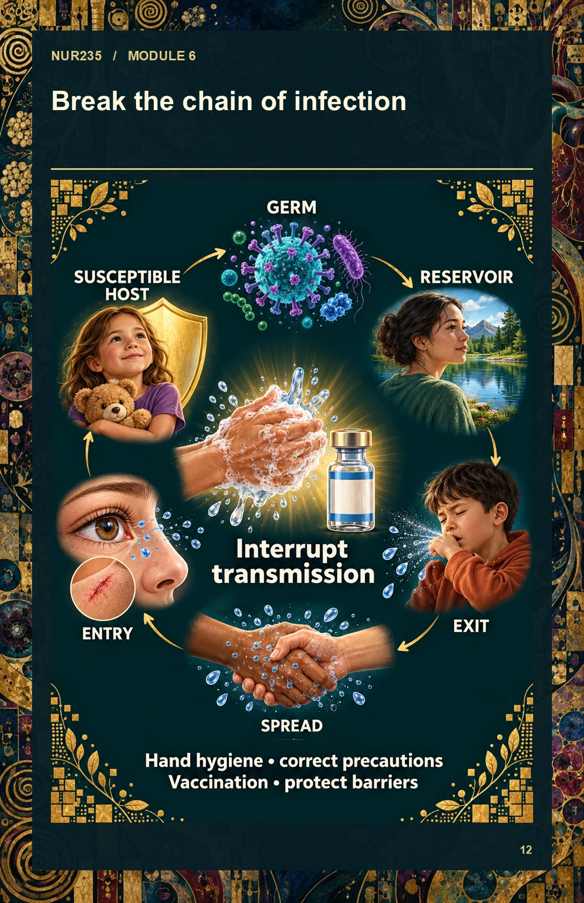
Read slide text and study notes
NUR235 / MODULE 6
Break the chain of infection
12
Original study notes and source references
Break the chain of infection
Schematic overview. Illustrations are not drawn to anatomical scale. Use the adjacent course details and assigned textbook for exam wording.
NUR235 content mastery infographic. Original native diagram by Codex. No Claude-created graphics.
High-level overview. The user-supplied module content reviews and textbook anchor the content. Book/course statements and current clarifications remain separate. Full prior wording is preserved below for study reference.
Some neurologic and musculoskeletal chapters are missing from the provided book extract. Available course sources and identified primary references supplement these gaps.
Immune and infectious disorders
User module content reviews, NUR235
{"theories": {"book_chapter": 28, "text_lines": [38660, 38956], "supports": "Erikson stages and Piaget age/stage terminology; implications for teaching/play.", "opening_excerpt": "Provide oral stimulation by giving pacifiers; do not discourage thumb sucking."}, "infant-growth": {"book_chapter": 29, "text_lines": [39631, 39981], "supports": "Weight doubles at 4–6 months/triples at 1 year; textbook month-by-month motor/language anchors.", "opening_excerpt": "The physiologic changes that occur in the infant year reflect both the increasing maturity and growth of body organs."}, "infant-trust": {"book_chapter": 29, "text_lines": [40105, 40175], "supports": "Emotional/cognitive development, object permanence, trust.", "opening_excerpt": "Socialization, or learning how to interact with others, is an extensive phenomenon. One-month-old infants show they can differentiate between faces and other objects by studying a face or the picture of a face longer than other objects. They are calm and feed "}, "infant-safety": {"book_chapter": 29, "text_lines": [40271, 40379], "supports": "Falls, choking, burns, automobile and water safety; rear-facing age wording is outdated.", "opening_excerpt": "Q. A parent is worried about keeping their 2-month-old safe. “How can I prevent accidents at this age?” the parent asks."}, "infant-feed": {"book_chapter": 29, "text_lines": [40463, 40625], "supports": "Human milk/iron-fortified formula, complementary foods near 6 months, iron foods, no honey or cow milk as main drink before 12 months.", "opening_excerpt": "Feeding recommendations for infants from birth through 6 months are to provide human milk exclusively via breastfeeding or expression and stored in a bottle. Human milk is the ideal form of nutrition for infants. It provides all the necessary nutrients, protec"}, "infant-vaccine": {"book_chapter": 29, "text_lines": [39431, 39593], "supports": "Well-child assessment and the textbook vaccine table.", "opening_excerpt": "Height, weight, head circumference plotted on standard growth chart; physical examination"}, "toddler": {"book_chapter": 30, "text_lines": [41172, 41294], "supports": "Autonomy, parent observation, language concern at 2 years, slowed growth and appetite.", "opening_excerpt": "During the toddler period, the age span from 1 to 3 years, enormous changes take place in a child and, consequently, in a family. During this period, children accomplish a wide array of developmental tasks and change from largely immobile and preverbal infants"}, "preschool": {"book_chapter": 31, "text_lines": [41357, 41447], "supports": "Age3–5, participation through modeling/play, physical and developmental assessment; remainder unavailable in extraction.", "opening_excerpt": "The preschool period traditionally includes the years 3, 4, and 5. Although physical growth slows considerably during this period, personality and cognitive growth continue at a rapid rate. Caregivers may be unsure how much independence and responsibility for "}, "school-growth": {"book_chapter": 32, "text_lines": [41590, 41658], "supports": "School-age growth and onset/order of puberty.", "opening_excerpt": "The average annual weight gain for a school-aged child is approximately 3 to 5 lb (1.3 to 2.2 kg); the increase in height is 1 to 2 in. (2.5 to 5 cm). Children who did not lose a lordosis and knock-kneed appearance during the preschool period typically lose th"}, "school-thinking": {"book_chapter": 32, "text_lines": [41850, 41982], "supports": "Industry, concrete operations, conservation/classification and skill mastery.", "opening_excerpt": "Ideally, children enter the school-aged period with the ability to trust others and with a sense of self-respect. They can accomplish small tasks independently because they have gained a sense of autonomy. They should have practiced adult roles, learned to sha"}, "school-safety": {"book_chapter": 32, "text_lines": [42014, 42096], "supports": "Injury prevention and body safety teaching.", "opening_excerpt": "Teach children to avoid unsafe areas, such as train yards, grain silos, and back alleys."}, "school-health": {"book_chapter": 32, "text_lines": [42390, 42530], "supports": "Immunizations, dental care and health assessment; schedule contains outdated product/dose wording.", "opening_excerpt": "Check history and past records, inform caregiver about any risks and side effects, and administer immunization in accordance with healthcare agency policies."}, "school-stress": {"book_chapter": 32, "text_lines": [42790, 42865], "supports": "Stress, school difficulties and substance-use concerns.", "opening_excerpt": "Reproductive life planning measures and the principles of safer sex if appropriate to the cultural setting (see Chapters 5 and 6). Sexual orientation questions and concerns may arise at this time, and questions should be addressed honestly and openly."}, "adolescent-limit": {"book_chapter": 33, "text_lines": [43127, 43183], "supports": "Only opening case, objectives and preventive privacy goal are present; full chapter not available.", "opening_excerpt": "For additional ancillary materials related to this chapter, please visit the point."}, "assessment": {"book_chapter": 34, "text_lines": [43374, 43408], "supports": "Adolescent private interview; confidentiality must be qualified by safety/legal exceptions.", "opening_excerpt": "A second reason K.W.’s parent has brought the child to your ambulatory clinic is because of increased frequency and burning on urination."}, "exam-order": {"book_chapter": 34, "text_lines": [44020, 44046], "supports": "Assessment is adapted to age; least intrusive observations first, uncomfortable portions later.", "opening_excerpt": "Presented here are the components of a routine or general physical assessment. It is important to recognize what a “general” physical examination entails so you can interpret the extent of the assessment a child has received when the caregiver states, “My chil"}, "teaching": {"book_chapter": 35, "text_lines": [46729, 46945], "supports": "Teach-back, demonstration/return demonstration and development-specific communication.", "opening_excerpt": "Children have variable attention spans. Assess the learner and provide lessons in segments of 5–20 minutes. Ideally, the child should be well rested and well-nourished prior to the teaching."}, "hospital": {"book_chapter": 36, "text_lines": [48070, 48134], "supports": "Family presence, routines and protest/despair/detachment after separation.", "opening_excerpt": "Obtain any special information about the child that the parents think would make them more comfortable in the hospital."}, "procedures": {"book_chapter": 37, "text_lines": [49105, 49293], "supports": "Diagnostic/therapeutic modalities, consent and developmental planning; extracted chapter is incomplete.", "opening_excerpt": "Nursing Care of a Family When a Child Needs Diagnostic or Therapeutic Modalities"}, "med-dose": {"book_chapter": 38, "text_lines": [49350, 49578], "supports": "Measured kg weight, individual dose safety, assessment and fractional-dose example; reversed conversion typo at49352.", "opening_excerpt": "Most adults immediately grasp that taking a medicine you offer them will be important to relieve whatever symptoms they are experiencing from an illness. Because children do not necessarily have this same level of understanding, they may resist taking medicine"}, "med-route": {"book_chapter": 38, "text_lines": [49616, 49674], "supports": "Oral medication positioning, oral syringe and age-appropriate technique.", "opening_excerpt": "Children younger than 3 years are unable to swallow pills. After that age, the ability of children to swallow pills varies from one child to the next and is not age dependent. Typically, children older than 9 years can be offered tablets; however, some adolesc"}, "pain": {"book_chapter": 39, "text_lines": [50756, 50862], "supports": "Behavioral tools, FLACC, child self-report FACES/numeric and combined comfort/analgesia.", "opening_excerpt": "Each area of concern is scored from 0 to 2. Infants with a total score of 4 or more are most likely to be in pain and need interventions to reduce discomfort. The scale cannot be used with infants who are intubated or paralyzed for ventilator assistance becaus"}, "nosebleed": {"book_chapter": 40, "text_lines": [52143, 52155], "supports": "Sit upright/forward; continuous pressure over soft nose for about10min; evaluate persistent/recurrent bleeding.", "opening_excerpt": "Epistaxis (nosebleed) is extremely common in children and usually occurs from trauma or irritation such as picking at the nasal mucosa. Dry air can cause mucous membranes to become dry and susceptible to cracking and bleeding. Epistaxis may also occur after st"}, "hiv": {"book_chapter": 42, "text_lines": [55531, 55664], "supports": "HIV CD4 mechanism, infection risks, family coping; treatment specifics need current NIH guidance.", "opening_excerpt": "HIV is a slowly replicating retrovirus and has at least two main divisions, HIV-1 and HIV-2, followed by a variety of further subtypes. The virus acts by attacking the lymphoreticular system, in particular CD4-bearing helper T lymphocytes. The virus enters the"}, "allergy": {"book_chapter": 42, "text_lines": [56017, 56109], "supports": "Anaphylaxis manifestations, immediate IM epinephrine, emergency help and recurrent reaction risk.", "opening_excerpt": "Anaphylactic shock (anaphylaxis) is an immediate, life-threatening, type I hypersensitivity reaction that occurs after exposure to an allergen in a previously sensitized child. Anaphylaxis can be caused by exposure to foods such as milk, egg, peanut, and tree "}, "eczema": {"book_chapter": 42, "text_lines": [56307, 56475], "supports": "Atopic dermatitis itch–scratch cycle, distribution and skin care.", "opening_excerpt": "Atopic dermatitis is a highly pruritic, chronic inflammatory skin disease that is often the first manifestation of allergic disease. It is a common disorder that affects 15% to 20% of children (Chopra et al., 2017)."}, "contact": {"book_chapter": 42, "text_lines": [56561, 56585], "supports": "Allergic contact dermatitis/typeIV, exposure pattern and removal of allergen.", "opening_excerpt": "Contact dermatitis is an example of a delayed or type IV hypersensitivity response; it is a reaction to skin contact with an allergen (a substance irritating to the child only with prior sensitization). The first reaction is generally erythema, followed by the"}, "rubella": {"book_chapter": 43, "text_lines": [57521, 57549], "supports": "Rubella syndrome; printed incubation/communicability statements are unreliable.", "opening_excerpt": "Incubation period: Generally, 14 days within a range of 16 to 183 days (AAP, 2018)"}, "measles": {"book_chapter": 43, "text_lines": [57551, 57593], "supports": "Cough/coryza/conjunctivitis, Koplik spots and descending rash.", "opening_excerpt": "Incubation period: 8 to 12 days from time of exposure to onset of any symptoms (AAP, 2018), with a range from 7 to 21 days (Drutz, 2016)"}, "varicella": {"book_chapter": 43, "text_lines": [57595, 57643], "supports": "Vesicles in crops, infection/complication risks; immune-globulin timing differs from current guidance.", "opening_excerpt": "Incubation period: 10 to 21 days, with the most common incidence at 14 to 16 days following exposure (Kennedy & Gershon, 2018)"}, "fifth": {"book_chapter": 43, "text_lines": [57677, 57704], "supports": "Parvovirus B19, slapped-cheek/lacy eruption and host-specific risk.", "opening_excerpt": "Incubation period: Most commonly between 4 and 14 days and can be as long as 21 days (AAP, 2018)"}, "mono": {"book_chapter": 43, "text_lines": [58009, 58048], "supports": "EBV saliva transmission, pharyngitis/adenopathy/fatigue and splenic risk.", "opening_excerpt": "Incubation period: Incubation period in adults and adolescents is 4 to 7 weeks, with a shorter incubation period in children (Fugl & Andersen, 2019)."}, "scarlet": {"book_chapter": 43, "text_lines": [58221, 58249], "supports": "GAS toxin-associated pharyngitis, sandpaper rash and antimicrobial treatment.", "opening_excerpt": "Incubation period: 2 to 5 days for streptococcal pharyngitis (AAP, 2018)"}, "impetigo": {"book_chapter": 43, "text_lines": [58251, 58280], "supports": "Staphylococcal/streptococcal superficial infection with honey crusts.", "opening_excerpt": "Causative agent: Beta-hemolytic streptococcus, group A or Staphylococcus aureus including methicillin-resistant Staphylococcus aureus (MRSA) (to be discussed in the subsequent section)"}, "pertussis": {"book_chapter": 43, "text_lines": [58365, 58417], "supports": "Paroxysmal cough, infant risk and treatment; immunity and isolation wording need updating.", "opening_excerpt": "Mode of transmission: Highly contagious by direct or indirect contact"}, "lice": {"book_chapter": 43, "text_lines": [58587, 58647], "supports": "Pediculosis and family teaching; avoid stigma about hygiene.", "opening_excerpt": "Small, white flecks on hair shaft (nits or eggs of lice); extreme pruritus"}, "pinworm": {"book_chapter": 43, "text_lines": [58649, 58655], "supports": "Nocturnal perianal itching, tape test and household hygiene; text omits repeat dose.", "opening_excerpt": "Pinworms are small, white, threadlike worms that live in the cecum. After ingestion of the egg, the mature worms develop over a period of 2 months in the cecum. The mature female pinworm then migrates out of the anus to deposit eggs on the skin in the anal and"}, "tinea": {"book_chapter": 43, "text_lines": [58675, 58705], "supports": "Tinea skin/scalp distinctions and antifungal treatment.", "opening_excerpt": "Fungi are larger than bacteria; some are unicellular (yeasts), but, generally, they are multicellular (molds). Deep mycoses invade internal organs. Respiratory transmission is by the inhalation of spores. Subcutaneous mycoses invade the skin, subcutaneous tiss"}, "transfusion": {"book_chapter": 44, "text_lines": [59254, 59340], "supports": "Transfusion setup, monitoring, reaction symptoms/stop action; printed AHTR label is inaccurate.", "opening_excerpt": "Transfusions of blood or its products are commonly used in the treatment of blood disorders and may include whole blood, packed RBCs, washed RBCs (as much “foreign” matter is removed as possible to reduce the possibility of an antagonistic reaction), plasma, p"}, "iron": {"book_chapter": 44, "text_lines": [59580, 59678], "supports": "Iron deficiency risks, low hemoglobin indices, diet and iron teaching.", "opening_excerpt": "Although the incidence of iron-deficiency anemia is decreasing in the United States due to improved infant nutrition, it is still the most common anemia of infancy and childhood, occurring whenever the intake of dietary iron is inadequate. Without adequate iro"}, "sickle": {"book_chapter": 44, "text_lines": [59738, 59974], "supports": "HbS vaso-occlusion/hemolysis, pain, sequestration/aplastic crises, hydration and analgesia.", "opening_excerpt": "Sickle cell anemia is an autosomal recessive inherited disorder carried on the beta chain of hemoglobin; the amino acid valine takes the place of the normally appearing glutamic acid. With this, the erythrocytes become characteristically elongated and crescent"}, "hemophilia": {"book_chapter": 44, "text_lines": [60258, 60318], "supports": "FactorVIII versusIX, X-linked inheritance and hemarthrosis.", "opening_excerpt": "Hemophilias are inherited disorders of blood coagulation. There are numerous types, each involving a deficiency of a different blood coagulation factor."}, "conjunctivitis": {"book_chapter": 50, "text_lines": [67992, 68042], "supports": "Conjunctivitis differential; the same content is duplicated earlier at66629–66679.", "opening_excerpt": "Inflammation of the conjunctiva; causes are numerous, including ophthalmia neonatorum (exposure to gonococcus bacillus; see Chapter 26) and bacterial, viral, and fungal organisms"}, "burns": {"book_chapter": 52, "text_lines": [70007, 70241], "supports": "Burn depth/area, ABCs, temperature/fluid/pain/infection and nutrition.", "opening_excerpt": "Burns are injuries to body tissue caused by excessive heat (greater than 104°F [40°C]). Burns are the second most common unintentional injury seen in children 1 to 4 years of age and the third most common cause of injury in children 5 to 14 years of age. Every"}, "oncology-care": {"book_chapter": 53, "text_lines": [71294, 71440], "supports": "Mucositis, infection, treatment-related toxicity and family care.", "opening_excerpt": "Children receiving long-term corticosteroid (e.g., dexamethasone or prednisone) therapy develop a typical “moon face,” red cheeks, and a stocky build. Like the loss of hair, a cushingoid appearance can be devastating to children or parents, the final insult in"}, "leukemia": {"book_chapter": 53, "text_lines": [71472, 71610], "supports": "Marrow blast proliferation causes anemia, infection risk and low platelets; diagnostic/treatment priorities.", "opening_excerpt": "Leukemia is the distorted and uncontrolled proliferation of WBCs (leukocytes) and is the most frequently occurring type of cancer in children."}, "brain": {"book_chapter": 53, "text_lines": [71716, 71906], "supports": "Brain tumor location, ICP/neurologic changes and surgery-specific postoperative care.", "opening_excerpt": "Brain tumors are the second most common form of cancer and the most common solid tumor in children. Tumors tend to occur between 1 and 10 years of age, with 5 years being the peak age of incidence. In children, brain tumors tend to occur at the midline in the "}, "wilms": {"book_chapter": 53, "text_lines": [72098, 72118], "supports": "Renal mass, hematuria/hypertension, imaging and nephrectomy-based treatment.", "opening_excerpt": "Nephroblastoma (Wilms tumor) is a malignant tumor that rises from the metanephric mesoderm cells of the upper pole of the kidney (Malkan et al., 2015). It accounts for 20% of solid tumors in childhood, and overall survival rates are greater than 90%. It may oc"}, "abuse": {"book_chapter": 55, "text_lines": [72856, 72958], "supports": "Maltreatment assessment, child protection, objective documentation and family concerns.", "opening_excerpt": "When obtaining a history, ask caregivers to account for any injury to a child’s body. Remember, however, that most childhood injuries are the result of unintentional injuries caused by the child’s inability to distinguish safe situations from dangerous ones or"}}
{"sleep": {"url": "https://www.aap.org/en/patient-care/safe-sleep/", "title": "AAP safe sleep"}, "carseat": {"url": "https://www.nhtsa.gov/vehicle-safety/car-seats-and-booster-seats", "title": "NHTSA child restraint recommendations"}, "milestones2": {"url": "https://www.cdc.gov/act-early/milestones/2-years.html", "title": "CDC milestones by2years"}, "milestones3": {"url": "https://www.cdc.gov/act-early/milestones/3-years.html", "title": "CDC milestones by3years"}, "milestones4": {"url": "https://www.cdc.gov/act-early/milestones/4-years.html", "title": "CDC milestones by4years"}, "milestones5": {"url": "https://www.cdc.gov/act-early/milestones/5-years.html", "title": "CDC milestones by5years"}, "vaccine": {"url": "https://www.cdc.gov/vaccines/hcp/imz-schedules/child-adolescent-age.html", "title": "CDC age schedule, page labels its addendum July2,2025"}, "aap2026": {"url": "https://publications.aap.org/pediatrics/article/157/3/e2025075754/206175/Recommended-Childhood-andAdolescent-Immunization", "title": "AAP2026 childhood/adolescent immunization policy"}, "meds": {"url": "https://www.healthychildren.org/English/safety-prevention/at-home/medication-safety/Pages/Using-Liquid-Medicines.aspx", "title": "AAP liquid medication measurement"}, "sickle-current": {"url": "https://www.nhlbi.nih.gov/sites/default/files/publications/56-364NFULL.pdf", "title": "NHLBI sickle-cell expert report: oxygen/fluids/transfusion in VOC"}, "sickle-ash": {"url": "https://doi.org/10.1182/bloodadvances.2020001851", "title": "ASH2020 sickle-cell pain guideline"}, "isolation": {"url": "https://www.cdc.gov/infection-control/hcp/isolation-precautions/appendix-a-type-duration.html", "title": "CDC isolation appendix, updated September11,2026"}, "pinworm-current": {"url": "https://www.cdc.gov/pinworm/hcp/clinical-overview/index.html", "title": "CDC pinworm treatment"}, "lice-current": {"url": "https://www.cdc.gov/lice/caring-head/", "title": "CDC head lice and school attendance"}, "pinkeye": {"url": "https://www.cdc.gov/conjunctivitis/treatment/", "title": "CDC conjunctivitis treatment"}, "acne": {"url": "https://www.aad.org/member/clinical-quality/guidelines/acne", "title": "AAD acne guideline"}, "hiv-current": {"url": "https://clinicalinfo.hiv.gov/en/guidelines/pediatric-arv/regimens-recommended-initial-therapy-antiretroviral-naive-children", "title": "NIH pediatric antiretroviral therapy"}, "blood": {"url": "https://www.isbtweb.org/resources/educational-modules-on-clinical-use-of-blood/adverse-effects-of-transfusion.html", "title": "ISBT adverse transfusion effects"}, "wilms-current": {"url": "https://medlineplus.gov/ency/article/001575.htm", "title": "MedlinePlus Wilms tumor and careful handling"}}
Immune emergencies and chronic risk
Allergic response/anaphylaxis: sudden airway, breathing or circulatory symptoms after exposure → immediate IM epinephrine and emergency support. Antihistamines do not replace it.
HIV: CD4-cell dysfunction → infection/growth concerns. Support prescribed combination ART, adherence, monitoring and age/risk-based prevention. Use standard precautions without social isolation.
Burns: stop exposure. Assess airway/inhalation injury, perfusion and burn area/depth. Prevent hypothermia, manage pain/fluids, protect the wound and provide high-calorie/protein support for major burns.
Respiratory/rash patterns
Pertussis: cough paroxysms, post-tussive emesis. Infants may have apnea without a whoop. Droplet precautions, airway/feeding support and prescribed antibiotics.
Measles: cough + coryza + conjunctivitis, Koplik spots, spreading rash → airborne precautions and prompt notification.
Rubella: mild rash with lymphadenopathy. Protect susceptible pregnant contacts. Droplet precautions.
Varicella: itchy lesions in different stages → airborne + contact precautions until crusted. Protect vulnerable contacts.
Fifth disease: slapped cheeks/lacy rash. Assess exposure risk in pregnancy and hemolytic anemia. Most immunocompetent children are past peak infectiousness when rash appears.
Current isolation durations: pertussis until5days of effective antibiotics, rubella7days after rash, measles4days after rash (longer with immune compromise), varicella until lesions crust. These supersede inconsistent textbook timing. The textbook prints universal anaphylaxis epinephrine maximum0.3mg and permits arm injection; for clinical dosing use the current age/weight product/protocol, with the anterolateral thigh preferred. Do not put a generalized dose ceiling on the overview slide.
Recall: Which two rash illnesses require airborne precautions in this group?
Answer: Measles; varicella also requires contact precautions.
Book and current-guidance comparisons
{"topic": "Hiv", "old": "Older viral-load/CD4 thresholds and ZDV-focused details", "new": "Teach current prompt individualized combinationART and adherence support; do not use an obsolete single threshold for every age.", "sources": [{"url": "https://clinicalinfo.hiv.gov/en/guidelines/pediatric-arv/regimens-recommended-initial-therapy-antiretroviral-naive-children", "title": "NIH pediatric antiretroviral therapy"}], "evidence": [55531, 55664]}
{"topic": "Eye antibiotics", "old": "Broad antibioticointment language acrossconjunctivitis", "new": "Match therapy to cause; no antibiotic benefit for viralconjunctivitis.", "sources": [{"url": "https://www.cdc.gov/conjunctivitis/treatment/", "title": "CDC conjunctivitis treatment"}], "evidence": [66629, 66679]}
Pediatric HIV
Book/course wording: Older viral-load/CD4 thresholds and zidovudine-focused treatment details appear in the source.
Current clarification: Current care emphasizes prompt, individualized combination antiretroviral therapy and adherence support. Treatment decisions account for age and the clinical situation.
Conjunctivitis antibiotics
Book/course wording: Broad antibiotic-ointment language is used across causes of conjunctivitis.
Current clarification: Treatment depends on the cause. Antibiotics do not benefit viral conjunctivitis.
{"topic": "Epinephrine", "old": "Thighorunaffectedarm;universal0.3mgmaximum", "new": "Overview says immediateIMepinephrine; add dose only with a current age/weight-specific protocol and preferredanterolateralthigh route.", "sources": [], "evidence": [56039, 56047]}
{"topic": "Febrile seizures", "old": "Site repeats speed of fever rise as the trigger and suggests fever management as prevention. This was not verified in the missing neuro textbook chapter.", "new": "Retain as an identified course/site statement if required; current teaching: fever-associated seizures are usually benign, antipyretics improve comfort but do not reliably prevent recurrence. Treat a prolonged seizure at 5 minutes.", "sources": [{"title": "RCH: Febrile seizure", "url": "https://www.rch.org.au/clinicalguide/guideline_index/Febrile_seizure/"}, {"title": "RCH: Seizures, acute management", "url": "https://www.rch.org.au/afebrile_seizures/"}], "evidence": null}
Epinephrine for anaphylaxis
Book/course wording: The source allows the thigh or unaffected arm and gives a universal 0.3 mg maximum.
Current clarification: Give IM epinephrine promptly using the prescribed age/weight-appropriate product or protocol. The preferred site is the anterolateral thigh. One fixed maximum does not fit every child.
Febrile seizures
Book/course wording: Site wording emphasizes the speed of the temperature rise and fever management as prevention. This statement was not verified in the missing neurologic textbook chapter.
Current clarification: Most febrile seizures are benign. Antipyretics improve comfort but do not reliably prevent recurrence. A convulsive seizure lasting 5 minutes requires emergency treatment.
NUR235 content mastery infographic. Original native diagram by Codex. No Claude-created graphics.
High-level overview. The user-supplied module content reviews and textbook anchor the content. Book/course statements and current clarifications remain separate. Full prior wording is preserved below for study reference.
Some neurologic and musculoskeletal chapters are missing from the provided book extract. Available course sources and identified primary references supplement these gaps.
Immune and infectious disorders
User module content reviews, NUR235
{"theories": {"book_chapter": 28, "text_lines": [38660, 38956], "supports": "Erikson stages and Piaget age/stage terminology; implications for teaching/play.", "opening_excerpt": "Provide oral stimulation by giving pacifiers; do not discourage thumb sucking."}, "infant-growth": {"book_chapter": 29, "text_lines": [39631, 39981], "supports": "Weight doubles at 4–6 months/triples at 1 year; textbook month-by-month motor/language anchors.", "opening_excerpt": "The physiologic changes that occur in the infant year reflect both the increasing maturity and growth of body organs."}, "infant-trust": {"book_chapter": 29, "text_lines": [40105, 40175], "supports": "Emotional/cognitive development, object permanence, trust.", "opening_excerpt": "Socialization, or learning how to interact with others, is an extensive phenomenon. One-month-old infants show they can differentiate between faces and other objects by studying a face or the picture of a face longer than other objects. They are calm and feed "}, "infant-safety": {"book_chapter": 29, "text_lines": [40271, 40379], "supports": "Falls, choking, burns, automobile and water safety; rear-facing age wording is outdated.", "opening_excerpt": "Q. A parent is worried about keeping their 2-month-old safe. “How can I prevent accidents at this age?” the parent asks."}, "infant-feed": {"book_chapter": 29, "text_lines": [40463, 40625], "supports": "Human milk/iron-fortified formula, complementary foods near 6 months, iron foods, no honey or cow milk as main drink before 12 months.", "opening_excerpt": "Feeding recommendations for infants from birth through 6 months are to provide human milk exclusively via breastfeeding or expression and stored in a bottle. Human milk is the ideal form of nutrition for infants. It provides all the necessary nutrients, protec"}, "infant-vaccine": {"book_chapter": 29, "text_lines": [39431, 39593], "supports": "Well-child assessment and the textbook vaccine table.", "opening_excerpt": "Height, weight, head circumference plotted on standard growth chart; physical examination"}, "toddler": {"book_chapter": 30, "text_lines": [41172, 41294], "supports": "Autonomy, parent observation, language concern at 2 years, slowed growth and appetite.", "opening_excerpt": "During the toddler period, the age span from 1 to 3 years, enormous changes take place in a child and, consequently, in a family. During this period, children accomplish a wide array of developmental tasks and change from largely immobile and preverbal infants"}, "preschool": {"book_chapter": 31, "text_lines": [41357, 41447], "supports": "Age3–5, participation through modeling/play, physical and developmental assessment; remainder unavailable in extraction.", "opening_excerpt": "The preschool period traditionally includes the years 3, 4, and 5. Although physical growth slows considerably during this period, personality and cognitive growth continue at a rapid rate. Caregivers may be unsure how much independence and responsibility for "}, "school-growth": {"book_chapter": 32, "text_lines": [41590, 41658], "supports": "School-age growth and onset/order of puberty.", "opening_excerpt": "The average annual weight gain for a school-aged child is approximately 3 to 5 lb (1.3 to 2.2 kg); the increase in height is 1 to 2 in. (2.5 to 5 cm). Children who did not lose a lordosis and knock-kneed appearance during the preschool period typically lose th"}, "school-thinking": {"book_chapter": 32, "text_lines": [41850, 41982], "supports": "Industry, concrete operations, conservation/classification and skill mastery.", "opening_excerpt": "Ideally, children enter the school-aged period with the ability to trust others and with a sense of self-respect. They can accomplish small tasks independently because they have gained a sense of autonomy. They should have practiced adult roles, learned to sha"}, "school-safety": {"book_chapter": 32, "text_lines": [42014, 42096], "supports": "Injury prevention and body safety teaching.", "opening_excerpt": "Teach children to avoid unsafe areas, such as train yards, grain silos, and back alleys."}, "school-health": {"book_chapter": 32, "text_lines": [42390, 42530], "supports": "Immunizations, dental care and health assessment; schedule contains outdated product/dose wording.", "opening_excerpt": "Check history and past records, inform caregiver about any risks and side effects, and administer immunization in accordance with healthcare agency policies."}, "school-stress": {"book_chapter": 32, "text_lines": [42790, 42865], "supports": "Stress, school difficulties and substance-use concerns.", "opening_excerpt": "Reproductive life planning measures and the principles of safer sex if appropriate to the cultural setting (see Chapters 5 and 6). Sexual orientation questions and concerns may arise at this time, and questions should be addressed honestly and openly."}, "adolescent-limit": {"book_chapter": 33, "text_lines": [43127, 43183], "supports": "Only opening case, objectives and preventive privacy goal are present; full chapter not available.", "opening_excerpt": "For additional ancillary materials related to this chapter, please visit the point."}, "assessment": {"book_chapter": 34, "text_lines": [43374, 43408], "supports": "Adolescent private interview; confidentiality must be qualified by safety/legal exceptions.", "opening_excerpt": "A second reason K.W.’s parent has brought the child to your ambulatory clinic is because of increased frequency and burning on urination."}, "exam-order": {"book_chapter": 34, "text_lines": [44020, 44046], "supports": "Assessment is adapted to age; least intrusive observations first, uncomfortable portions later.", "opening_excerpt": "Presented here are the components of a routine or general physical assessment. It is important to recognize what a “general” physical examination entails so you can interpret the extent of the assessment a child has received when the caregiver states, “My chil"}, "teaching": {"book_chapter": 35, "text_lines": [46729, 46945], "supports": "Teach-back, demonstration/return demonstration and development-specific communication.", "opening_excerpt": "Children have variable attention spans. Assess the learner and provide lessons in segments of 5–20 minutes. Ideally, the child should be well rested and well-nourished prior to the teaching."}, "hospital": {"book_chapter": 36, "text_lines": [48070, 48134], "supports": "Family presence, routines and protest/despair/detachment after separation.", "opening_excerpt": "Obtain any special information about the child that the parents think would make them more comfortable in the hospital."}, "procedures": {"book_chapter": 37, "text_lines": [49105, 49293], "supports": "Diagnostic/therapeutic modalities, consent and developmental planning; extracted chapter is incomplete.", "opening_excerpt": "Nursing Care of a Family When a Child Needs Diagnostic or Therapeutic Modalities"}, "med-dose": {"book_chapter": 38, "text_lines": [49350, 49578], "supports": "Measured kg weight, individual dose safety, assessment and fractional-dose example; reversed conversion typo at49352.", "opening_excerpt": "Most adults immediately grasp that taking a medicine you offer them will be important to relieve whatever symptoms they are experiencing from an illness. Because children do not necessarily have this same level of understanding, they may resist taking medicine"}, "med-route": {"book_chapter": 38, "text_lines": [49616, 49674], "supports": "Oral medication positioning, oral syringe and age-appropriate technique.", "opening_excerpt": "Children younger than 3 years are unable to swallow pills. After that age, the ability of children to swallow pills varies from one child to the next and is not age dependent. Typically, children older than 9 years can be offered tablets; however, some adolesc"}, "pain": {"book_chapter": 39, "text_lines": [50756, 50862], "supports": "Behavioral tools, FLACC, child self-report FACES/numeric and combined comfort/analgesia.", "opening_excerpt": "Each area of concern is scored from 0 to 2. Infants with a total score of 4 or more are most likely to be in pain and need interventions to reduce discomfort. The scale cannot be used with infants who are intubated or paralyzed for ventilator assistance becaus"}, "nosebleed": {"book_chapter": 40, "text_lines": [52143, 52155], "supports": "Sit upright/forward; continuous pressure over soft nose for about10min; evaluate persistent/recurrent bleeding.", "opening_excerpt": "Epistaxis (nosebleed) is extremely common in children and usually occurs from trauma or irritation such as picking at the nasal mucosa. Dry air can cause mucous membranes to become dry and susceptible to cracking and bleeding. Epistaxis may also occur after st"}, "hiv": {"book_chapter": 42, "text_lines": [55531, 55664], "supports": "HIV CD4 mechanism, infection risks, family coping; treatment specifics need current NIH guidance.", "opening_excerpt": "HIV is a slowly replicating retrovirus and has at least two main divisions, HIV-1 and HIV-2, followed by a variety of further subtypes. The virus acts by attacking the lymphoreticular system, in particular CD4-bearing helper T lymphocytes. The virus enters the"}, "allergy": {"book_chapter": 42, "text_lines": [56017, 56109], "supports": "Anaphylaxis manifestations, immediate IM epinephrine, emergency help and recurrent reaction risk.", "opening_excerpt": "Anaphylactic shock (anaphylaxis) is an immediate, life-threatening, type I hypersensitivity reaction that occurs after exposure to an allergen in a previously sensitized child. Anaphylaxis can be caused by exposure to foods such as milk, egg, peanut, and tree "}, "eczema": {"book_chapter": 42, "text_lines": [56307, 56475], "supports": "Atopic dermatitis itch–scratch cycle, distribution and skin care.", "opening_excerpt": "Atopic dermatitis is a highly pruritic, chronic inflammatory skin disease that is often the first manifestation of allergic disease. It is a common disorder that affects 15% to 20% of children (Chopra et al., 2017)."}, "contact": {"book_chapter": 42, "text_lines": [56561, 56585], "supports": "Allergic contact dermatitis/typeIV, exposure pattern and removal of allergen.", "opening_excerpt": "Contact dermatitis is an example of a delayed or type IV hypersensitivity response; it is a reaction to skin contact with an allergen (a substance irritating to the child only with prior sensitization). The first reaction is generally erythema, followed by the"}, "rubella": {"book_chapter": 43, "text_lines": [57521, 57549], "supports": "Rubella syndrome; printed incubation/communicability statements are unreliable.", "opening_excerpt": "Incubation period: Generally, 14 days within a range of 16 to 183 days (AAP, 2018)"}, "measles": {"book_chapter": 43, "text_lines": [57551, 57593], "supports": "Cough/coryza/conjunctivitis, Koplik spots and descending rash.", "opening_excerpt": "Incubation period: 8 to 12 days from time of exposure to onset of any symptoms (AAP, 2018), with a range from 7 to 21 days (Drutz, 2016)"}, "varicella": {"book_chapter": 43, "text_lines": [57595, 57643], "supports": "Vesicles in crops, infection/complication risks; immune-globulin timing differs from current guidance.", "opening_excerpt": "Incubation period: 10 to 21 days, with the most common incidence at 14 to 16 days following exposure (Kennedy & Gershon, 2018)"}, "fifth": {"book_chapter": 43, "text_lines": [57677, 57704], "supports": "Parvovirus B19, slapped-cheek/lacy eruption and host-specific risk.", "opening_excerpt": "Incubation period: Most commonly between 4 and 14 days and can be as long as 21 days (AAP, 2018)"}, "mono": {"book_chapter": 43, "text_lines": [58009, 58048], "supports": "EBV saliva transmission, pharyngitis/adenopathy/fatigue and splenic risk.", "opening_excerpt": "Incubation period: Incubation period in adults and adolescents is 4 to 7 weeks, with a shorter incubation period in children (Fugl & Andersen, 2019)."}, "scarlet": {"book_chapter": 43, "text_lines": [58221, 58249], "supports": "GAS toxin-associated pharyngitis, sandpaper rash and antimicrobial treatment.", "opening_excerpt": "Incubation period: 2 to 5 days for streptococcal pharyngitis (AAP, 2018)"}, "impetigo": {"book_chapter": 43, "text_lines": [58251, 58280], "supports": "Staphylococcal/streptococcal superficial infection with honey crusts.", "opening_excerpt": "Causative agent: Beta-hemolytic streptococcus, group A or Staphylococcus aureus including methicillin-resistant Staphylococcus aureus (MRSA) (to be discussed in the subsequent section)"}, "pertussis": {"book_chapter": 43, "text_lines": [58365, 58417], "supports": "Paroxysmal cough, infant risk and treatment; immunity and isolation wording need updating.", "opening_excerpt": "Mode of transmission: Highly contagious by direct or indirect contact"}, "lice": {"book_chapter": 43, "text_lines": [58587, 58647], "supports": "Pediculosis and family teaching; avoid stigma about hygiene.", "opening_excerpt": "Small, white flecks on hair shaft (nits or eggs of lice); extreme pruritus"}, "pinworm": {"book_chapter": 43, "text_lines": [58649, 58655], "supports": "Nocturnal perianal itching, tape test and household hygiene; text omits repeat dose.", "opening_excerpt": "Pinworms are small, white, threadlike worms that live in the cecum. After ingestion of the egg, the mature worms develop over a period of 2 months in the cecum. The mature female pinworm then migrates out of the anus to deposit eggs on the skin in the anal and"}, "tinea": {"book_chapter": 43, "text_lines": [58675, 58705], "supports": "Tinea skin/scalp distinctions and antifungal treatment.", "opening_excerpt": "Fungi are larger than bacteria; some are unicellular (yeasts), but, generally, they are multicellular (molds). Deep mycoses invade internal organs. Respiratory transmission is by the inhalation of spores. Subcutaneous mycoses invade the skin, subcutaneous tiss"}, "transfusion": {"book_chapter": 44, "text_lines": [59254, 59340], "supports": "Transfusion setup, monitoring, reaction symptoms/stop action; printed AHTR label is inaccurate.", "opening_excerpt": "Transfusions of blood or its products are commonly used in the treatment of blood disorders and may include whole blood, packed RBCs, washed RBCs (as much “foreign” matter is removed as possible to reduce the possibility of an antagonistic reaction), plasma, p"}, "iron": {"book_chapter": 44, "text_lines": [59580, 59678], "supports": "Iron deficiency risks, low hemoglobin indices, diet and iron teaching.", "opening_excerpt": "Although the incidence of iron-deficiency anemia is decreasing in the United States due to improved infant nutrition, it is still the most common anemia of infancy and childhood, occurring whenever the intake of dietary iron is inadequate. Without adequate iro"}, "sickle": {"book_chapter": 44, "text_lines": [59738, 59974], "supports": "HbS vaso-occlusion/hemolysis, pain, sequestration/aplastic crises, hydration and analgesia.", "opening_excerpt": "Sickle cell anemia is an autosomal recessive inherited disorder carried on the beta chain of hemoglobin; the amino acid valine takes the place of the normally appearing glutamic acid. With this, the erythrocytes become characteristically elongated and crescent"}, "hemophilia": {"book_chapter": 44, "text_lines": [60258, 60318], "supports": "FactorVIII versusIX, X-linked inheritance and hemarthrosis.", "opening_excerpt": "Hemophilias are inherited disorders of blood coagulation. There are numerous types, each involving a deficiency of a different blood coagulation factor."}, "conjunctivitis": {"book_chapter": 50, "text_lines": [67992, 68042], "supports": "Conjunctivitis differential; the same content is duplicated earlier at66629–66679.", "opening_excerpt": "Inflammation of the conjunctiva; causes are numerous, including ophthalmia neonatorum (exposure to gonococcus bacillus; see Chapter 26) and bacterial, viral, and fungal organisms"}, "burns": {"book_chapter": 52, "text_lines": [70007, 70241], "supports": "Burn depth/area, ABCs, temperature/fluid/pain/infection and nutrition.", "opening_excerpt": "Burns are injuries to body tissue caused by excessive heat (greater than 104°F [40°C]). Burns are the second most common unintentional injury seen in children 1 to 4 years of age and the third most common cause of injury in children 5 to 14 years of age. Every"}, "oncology-care": {"book_chapter": 53, "text_lines": [71294, 71440], "supports": "Mucositis, infection, treatment-related toxicity and family care.", "opening_excerpt": "Children receiving long-term corticosteroid (e.g., dexamethasone or prednisone) therapy develop a typical “moon face,” red cheeks, and a stocky build. Like the loss of hair, a cushingoid appearance can be devastating to children or parents, the final insult in"}, "leukemia": {"book_chapter": 53, "text_lines": [71472, 71610], "supports": "Marrow blast proliferation causes anemia, infection risk and low platelets; diagnostic/treatment priorities.", "opening_excerpt": "Leukemia is the distorted and uncontrolled proliferation of WBCs (leukocytes) and is the most frequently occurring type of cancer in children."}, "brain": {"book_chapter": 53, "text_lines": [71716, 71906], "supports": "Brain tumor location, ICP/neurologic changes and surgery-specific postoperative care.", "opening_excerpt": "Brain tumors are the second most common form of cancer and the most common solid tumor in children. Tumors tend to occur between 1 and 10 years of age, with 5 years being the peak age of incidence. In children, brain tumors tend to occur at the midline in the "}, "wilms": {"book_chapter": 53, "text_lines": [72098, 72118], "supports": "Renal mass, hematuria/hypertension, imaging and nephrectomy-based treatment.", "opening_excerpt": "Nephroblastoma (Wilms tumor) is a malignant tumor that rises from the metanephric mesoderm cells of the upper pole of the kidney (Malkan et al., 2015). It accounts for 20% of solid tumors in childhood, and overall survival rates are greater than 90%. It may oc"}, "abuse": {"book_chapter": 55, "text_lines": [72856, 72958], "supports": "Maltreatment assessment, child protection, objective documentation and family concerns.", "opening_excerpt": "When obtaining a history, ask caregivers to account for any injury to a child’s body. Remember, however, that most childhood injuries are the result of unintentional injuries caused by the child’s inability to distinguish safe situations from dangerous ones or"}}
{"sleep": {"url": "https://www.aap.org/en/patient-care/safe-sleep/", "title": "AAP safe sleep"}, "carseat": {"url": "https://www.nhtsa.gov/vehicle-safety/car-seats-and-booster-seats", "title": "NHTSA child restraint recommendations"}, "milestones2": {"url": "https://www.cdc.gov/act-early/milestones/2-years.html", "title": "CDC milestones by2years"}, "milestones3": {"url": "https://www.cdc.gov/act-early/milestones/3-years.html", "title": "CDC milestones by3years"}, "milestones4": {"url": "https://www.cdc.gov/act-early/milestones/4-years.html", "title": "CDC milestones by4years"}, "milestones5": {"url": "https://www.cdc.gov/act-early/milestones/5-years.html", "title": "CDC milestones by5years"}, "vaccine": {"url": "https://www.cdc.gov/vaccines/hcp/imz-schedules/child-adolescent-age.html", "title": "CDC age schedule, page labels its addendum July2,2025"}, "aap2026": {"url": "https://publications.aap.org/pediatrics/article/157/3/e2025075754/206175/Recommended-Childhood-andAdolescent-Immunization", "title": "AAP2026 childhood/adolescent immunization policy"}, "meds": {"url": "https://www.healthychildren.org/English/safety-prevention/at-home/medication-safety/Pages/Using-Liquid-Medicines.aspx", "title": "AAP liquid medication measurement"}, "sickle-current": {"url": "https://www.nhlbi.nih.gov/sites/default/files/publications/56-364NFULL.pdf", "title": "NHLBI sickle-cell expert report: oxygen/fluids/transfusion in VOC"}, "sickle-ash": {"url": "https://doi.org/10.1182/bloodadvances.2020001851", "title": "ASH2020 sickle-cell pain guideline"}, "isolation": {"url": "https://www.cdc.gov/infection-control/hcp/isolation-precautions/appendix-a-type-duration.html", "title": "CDC isolation appendix, updated September11,2026"}, "pinworm-current": {"url": "https://www.cdc.gov/pinworm/hcp/clinical-overview/index.html", "title": "CDC pinworm treatment"}, "lice-current": {"url": "https://www.cdc.gov/lice/caring-head/", "title": "CDC head lice and school attendance"}, "pinkeye": {"url": "https://www.cdc.gov/conjunctivitis/treatment/", "title": "CDC conjunctivitis treatment"}, "acne": {"url": "https://www.aad.org/member/clinical-quality/guidelines/acne", "title": "AAD acne guideline"}, "hiv-current": {"url": "https://clinicalinfo.hiv.gov/en/guidelines/pediatric-arv/regimens-recommended-initial-therapy-antiretroviral-naive-children", "title": "NIH pediatric antiretroviral therapy"}, "blood": {"url": "https://www.isbtweb.org/resources/educational-modules-on-clinical-use-of-blood/adverse-effects-of-transfusion.html", "title": "ISBT adverse transfusion effects"}, "wilms-current": {"url": "https://medlineplus.gov/ency/article/001575.htm", "title": "MedlinePlus Wilms tumor and careful handling"}}
Immune emergencies and chronic risk
Allergic response/anaphylaxis: sudden airway, breathing or circulatory symptoms after exposure → immediate IM epinephrine and emergency support. Antihistamines do not replace it.
HIV: CD4-cell dysfunction → infection/growth concerns. Support prescribed combination ART, adherence, monitoring and age/risk-based prevention. Use standard precautions without social isolation.
Burns: stop exposure. Assess airway/inhalation injury, perfusion and burn area/depth. Prevent hypothermia, manage pain/fluids, protect the wound and provide high-calorie/protein support for major burns.
Respiratory/rash patterns
Pertussis: cough paroxysms, post-tussive emesis. Infants may have apnea without a whoop. Droplet precautions, airway/feeding support and prescribed antibiotics.
Measles: cough + coryza + conjunctivitis, Koplik spots, spreading rash → airborne precautions and prompt notification.
Rubella: mild rash with lymphadenopathy. Protect susceptible pregnant contacts. Droplet precautions.
Varicella: itchy lesions in different stages → airborne + contact precautions until crusted. Protect vulnerable contacts.
Fifth disease: slapped cheeks/lacy rash. Assess exposure risk in pregnancy and hemolytic anemia. Most immunocompetent children are past peak infectiousness when rash appears.
Current isolation durations: pertussis until5days of effective antibiotics, rubella7days after rash, measles4days after rash (longer with immune compromise), varicella until lesions crust. These supersede inconsistent textbook timing. The textbook prints universal anaphylaxis epinephrine maximum0.3mg and permits arm injection; for clinical dosing use the current age/weight product/protocol, with the anterolateral thigh preferred. Do not put a generalized dose ceiling on the overview slide.
Recall: Which two rash illnesses require airborne precautions in this group?
Answer: Measles; varicella also requires contact precautions.
Skin, eyes and common infections
Inflammation and skin barrier
Atopic dermatitis: chronic itch–scratch cycle → emollients, trigger reduction and prescribed anti-inflammatory therapy. Watch infection.
Contact dermatitis: exposure-pattern eruption → remove the irritant/allergen and protect skin. Allergic contact disease is type IV.
Acne: comedones/inflammatory lesions → gentle skin care and a consistent prescribed regimen. Benzoyl peroxide/retinoids are common options. Support body image. Do not pick.
Recognize the clue
Impetigo: honey crusts → prescribed topical/oral antibiotic, cover lesions, hand hygiene and avoid sharing items.
Scarlet fever: sore throat + sandpaper rash/strawberry tongue → test for GAS, give prescribed antibiotic and complete therapy.
Mononucleosis/EBV: fatigue, pharyngitis, nodes ± splenomegaly → fluids/rest. No contact sports until medically cleared.
Pediculosis capitis: scalp itch/live lice → correct pediculicide/combing and household instructions. Lice do not imply poor hygiene.
Pinworms: nighttime perianal itch → morning tape test, treatment with repeat dose in 2 weeks and household hygiene.
Conjunctivitis: red/draining eye → hygiene and cause-specific treatment. Antibiotics do not treat viral disease. Eye pain/vision change needs evaluation.
Fungal skin infection: tinea pattern → antifungal treatment and dry skin. Scalp tinea usually needs systemic therapy.
Across this module
Maintain fluids and usual balanced nutrition unless a specific condition changes needs. Avoid unprescribed broad food elimination for eczema.
Teach the exact medication technique, contact precautions and return precautions. Adapt the explanation to developmental age.
Impetigo is repeated twice in the official review list; teach it once. The provided adolescent chapter does not contain usable acne treatment detail, so AAD is an explicit supplement. The book’s pinworm section gives a single dose without the current repeat-dose instruction. Avoid blanket antibiotic drops for every conjunctivitis. CDC does not recommend immediate school dismissal or no-nit policies for head lice.
Recall: Which infestation needs a second treatment dose because the medicine does not kill eggs?
Answer: Pinworm infection: repeat the prescribed treatment in2weeks.
Book and current-guidance comparisons
{"topic": "Precautions", "old": "Inconsistent rubella timing and only72hvaricella immune-globulin window", "new": "Use CDC agent-specific precautions; if postexposure detail is added, current varicellaIG may be given as soon as possible within10days.", "sources": [{"url": "https://www.cdc.gov/infection-control/hcp/isolation-precautions/appendix-a-type-duration.html", "title": "CDC isolation appendix, updated September11,2026"}], "evidence": [57521, 57643]}
{"topic": "Pertussis", "old": "Lastingnaturalimmunity;5–7days to endcontagiousness", "new": "Do not imply lifelong immunity; droplet precautions until5days of effective therapy.", "sources": [{"url": "https://www.cdc.gov/infection-control/hcp/isolation-precautions/appendix-a-type-duration.html", "title": "CDC isolation appendix, updated September11,2026"}], "evidence": [58365, 58381]}
Infection precautions and varicella exposure
Book/course wording: Source material gives inconsistent rubella precaution timing and a 72-hour window for varicella immune globulin.
Current clarification: Use the organism-specific isolation guidance. For eligible exposed patients, VariZIG is given as soon as possible and may be given within 10 days of exposure.
Pertussis
Book/course wording: The source describes lasting natural immunity and 5–7 days of treatment before contagiousness ends.
Current clarification: Infection does not guarantee lifelong immunity. Use droplet precautions through 5 days of effective antibiotic therapy.
NUR235 content mastery infographic. Original native diagram by Codex. No Claude-created graphics.
High-level overview. The user-supplied module content reviews and textbook anchor the content. Book/course statements and current clarifications remain separate. Full prior wording is preserved below for study reference.
Some neurologic and musculoskeletal chapters are missing from the provided book extract. Available course sources and identified primary references supplement these gaps.
Skin, eyes and common infections
User module content reviews, NUR235
{"theories": {"book_chapter": 28, "text_lines": [38660, 38956], "supports": "Erikson stages and Piaget age/stage terminology; implications for teaching/play.", "opening_excerpt": "Provide oral stimulation by giving pacifiers; do not discourage thumb sucking."}, "infant-growth": {"book_chapter": 29, "text_lines": [39631, 39981], "supports": "Weight doubles at 4–6 months/triples at 1 year; textbook month-by-month motor/language anchors.", "opening_excerpt": "The physiologic changes that occur in the infant year reflect both the increasing maturity and growth of body organs."}, "infant-trust": {"book_chapter": 29, "text_lines": [40105, 40175], "supports": "Emotional/cognitive development, object permanence, trust.", "opening_excerpt": "Socialization, or learning how to interact with others, is an extensive phenomenon. One-month-old infants show they can differentiate between faces and other objects by studying a face or the picture of a face longer than other objects. They are calm and feed "}, "infant-safety": {"book_chapter": 29, "text_lines": [40271, 40379], "supports": "Falls, choking, burns, automobile and water safety; rear-facing age wording is outdated.", "opening_excerpt": "Q. A parent is worried about keeping their 2-month-old safe. “How can I prevent accidents at this age?” the parent asks."}, "infant-feed": {"book_chapter": 29, "text_lines": [40463, 40625], "supports": "Human milk/iron-fortified formula, complementary foods near 6 months, iron foods, no honey or cow milk as main drink before 12 months.", "opening_excerpt": "Feeding recommendations for infants from birth through 6 months are to provide human milk exclusively via breastfeeding or expression and stored in a bottle. Human milk is the ideal form of nutrition for infants. It provides all the necessary nutrients, protec"}, "infant-vaccine": {"book_chapter": 29, "text_lines": [39431, 39593], "supports": "Well-child assessment and the textbook vaccine table.", "opening_excerpt": "Height, weight, head circumference plotted on standard growth chart; physical examination"}, "toddler": {"book_chapter": 30, "text_lines": [41172, 41294], "supports": "Autonomy, parent observation, language concern at 2 years, slowed growth and appetite.", "opening_excerpt": "During the toddler period, the age span from 1 to 3 years, enormous changes take place in a child and, consequently, in a family. During this period, children accomplish a wide array of developmental tasks and change from largely immobile and preverbal infants"}, "preschool": {"book_chapter": 31, "text_lines": [41357, 41447], "supports": "Age3–5, participation through modeling/play, physical and developmental assessment; remainder unavailable in extraction.", "opening_excerpt": "The preschool period traditionally includes the years 3, 4, and 5. Although physical growth slows considerably during this period, personality and cognitive growth continue at a rapid rate. Caregivers may be unsure how much independence and responsibility for "}, "school-growth": {"book_chapter": 32, "text_lines": [41590, 41658], "supports": "School-age growth and onset/order of puberty.", "opening_excerpt": "The average annual weight gain for a school-aged child is approximately 3 to 5 lb (1.3 to 2.2 kg); the increase in height is 1 to 2 in. (2.5 to 5 cm). Children who did not lose a lordosis and knock-kneed appearance during the preschool period typically lose th"}, "school-thinking": {"book_chapter": 32, "text_lines": [41850, 41982], "supports": "Industry, concrete operations, conservation/classification and skill mastery.", "opening_excerpt": "Ideally, children enter the school-aged period with the ability to trust others and with a sense of self-respect. They can accomplish small tasks independently because they have gained a sense of autonomy. They should have practiced adult roles, learned to sha"}, "school-safety": {"book_chapter": 32, "text_lines": [42014, 42096], "supports": "Injury prevention and body safety teaching.", "opening_excerpt": "Teach children to avoid unsafe areas, such as train yards, grain silos, and back alleys."}, "school-health": {"book_chapter": 32, "text_lines": [42390, 42530], "supports": "Immunizations, dental care and health assessment; schedule contains outdated product/dose wording.", "opening_excerpt": "Check history and past records, inform caregiver about any risks and side effects, and administer immunization in accordance with healthcare agency policies."}, "school-stress": {"book_chapter": 32, "text_lines": [42790, 42865], "supports": "Stress, school difficulties and substance-use concerns.", "opening_excerpt": "Reproductive life planning measures and the principles of safer sex if appropriate to the cultural setting (see Chapters 5 and 6). Sexual orientation questions and concerns may arise at this time, and questions should be addressed honestly and openly."}, "adolescent-limit": {"book_chapter": 33, "text_lines": [43127, 43183], "supports": "Only opening case, objectives and preventive privacy goal are present; full chapter not available.", "opening_excerpt": "For additional ancillary materials related to this chapter, please visit the point."}, "assessment": {"book_chapter": 34, "text_lines": [43374, 43408], "supports": "Adolescent private interview; confidentiality must be qualified by safety/legal exceptions.", "opening_excerpt": "A second reason K.W.’s parent has brought the child to your ambulatory clinic is because of increased frequency and burning on urination."}, "exam-order": {"book_chapter": 34, "text_lines": [44020, 44046], "supports": "Assessment is adapted to age; least intrusive observations first, uncomfortable portions later.", "opening_excerpt": "Presented here are the components of a routine or general physical assessment. It is important to recognize what a “general” physical examination entails so you can interpret the extent of the assessment a child has received when the caregiver states, “My chil"}, "teaching": {"book_chapter": 35, "text_lines": [46729, 46945], "supports": "Teach-back, demonstration/return demonstration and development-specific communication.", "opening_excerpt": "Children have variable attention spans. Assess the learner and provide lessons in segments of 5–20 minutes. Ideally, the child should be well rested and well-nourished prior to the teaching."}, "hospital": {"book_chapter": 36, "text_lines": [48070, 48134], "supports": "Family presence, routines and protest/despair/detachment after separation.", "opening_excerpt": "Obtain any special information about the child that the parents think would make them more comfortable in the hospital."}, "procedures": {"book_chapter": 37, "text_lines": [49105, 49293], "supports": "Diagnostic/therapeutic modalities, consent and developmental planning; extracted chapter is incomplete.", "opening_excerpt": "Nursing Care of a Family When a Child Needs Diagnostic or Therapeutic Modalities"}, "med-dose": {"book_chapter": 38, "text_lines": [49350, 49578], "supports": "Measured kg weight, individual dose safety, assessment and fractional-dose example; reversed conversion typo at49352.", "opening_excerpt": "Most adults immediately grasp that taking a medicine you offer them will be important to relieve whatever symptoms they are experiencing from an illness. Because children do not necessarily have this same level of understanding, they may resist taking medicine"}, "med-route": {"book_chapter": 38, "text_lines": [49616, 49674], "supports": "Oral medication positioning, oral syringe and age-appropriate technique.", "opening_excerpt": "Children younger than 3 years are unable to swallow pills. After that age, the ability of children to swallow pills varies from one child to the next and is not age dependent. Typically, children older than 9 years can be offered tablets; however, some adolesc"}, "pain": {"book_chapter": 39, "text_lines": [50756, 50862], "supports": "Behavioral tools, FLACC, child self-report FACES/numeric and combined comfort/analgesia.", "opening_excerpt": "Each area of concern is scored from 0 to 2. Infants with a total score of 4 or more are most likely to be in pain and need interventions to reduce discomfort. The scale cannot be used with infants who are intubated or paralyzed for ventilator assistance becaus"}, "nosebleed": {"book_chapter": 40, "text_lines": [52143, 52155], "supports": "Sit upright/forward; continuous pressure over soft nose for about10min; evaluate persistent/recurrent bleeding.", "opening_excerpt": "Epistaxis (nosebleed) is extremely common in children and usually occurs from trauma or irritation such as picking at the nasal mucosa. Dry air can cause mucous membranes to become dry and susceptible to cracking and bleeding. Epistaxis may also occur after st"}, "hiv": {"book_chapter": 42, "text_lines": [55531, 55664], "supports": "HIV CD4 mechanism, infection risks, family coping; treatment specifics need current NIH guidance.", "opening_excerpt": "HIV is a slowly replicating retrovirus and has at least two main divisions, HIV-1 and HIV-2, followed by a variety of further subtypes. The virus acts by attacking the lymphoreticular system, in particular CD4-bearing helper T lymphocytes. The virus enters the"}, "allergy": {"book_chapter": 42, "text_lines": [56017, 56109], "supports": "Anaphylaxis manifestations, immediate IM epinephrine, emergency help and recurrent reaction risk.", "opening_excerpt": "Anaphylactic shock (anaphylaxis) is an immediate, life-threatening, type I hypersensitivity reaction that occurs after exposure to an allergen in a previously sensitized child. Anaphylaxis can be caused by exposure to foods such as milk, egg, peanut, and tree "}, "eczema": {"book_chapter": 42, "text_lines": [56307, 56475], "supports": "Atopic dermatitis itch–scratch cycle, distribution and skin care.", "opening_excerpt": "Atopic dermatitis is a highly pruritic, chronic inflammatory skin disease that is often the first manifestation of allergic disease. It is a common disorder that affects 15% to 20% of children (Chopra et al., 2017)."}, "contact": {"book_chapter": 42, "text_lines": [56561, 56585], "supports": "Allergic contact dermatitis/typeIV, exposure pattern and removal of allergen.", "opening_excerpt": "Contact dermatitis is an example of a delayed or type IV hypersensitivity response; it is a reaction to skin contact with an allergen (a substance irritating to the child only with prior sensitization). The first reaction is generally erythema, followed by the"}, "rubella": {"book_chapter": 43, "text_lines": [57521, 57549], "supports": "Rubella syndrome; printed incubation/communicability statements are unreliable.", "opening_excerpt": "Incubation period: Generally, 14 days within a range of 16 to 183 days (AAP, 2018)"}, "measles": {"book_chapter": 43, "text_lines": [57551, 57593], "supports": "Cough/coryza/conjunctivitis, Koplik spots and descending rash.", "opening_excerpt": "Incubation period: 8 to 12 days from time of exposure to onset of any symptoms (AAP, 2018), with a range from 7 to 21 days (Drutz, 2016)"}, "varicella": {"book_chapter": 43, "text_lines": [57595, 57643], "supports": "Vesicles in crops, infection/complication risks; immune-globulin timing differs from current guidance.", "opening_excerpt": "Incubation period: 10 to 21 days, with the most common incidence at 14 to 16 days following exposure (Kennedy & Gershon, 2018)"}, "fifth": {"book_chapter": 43, "text_lines": [57677, 57704], "supports": "Parvovirus B19, slapped-cheek/lacy eruption and host-specific risk.", "opening_excerpt": "Incubation period: Most commonly between 4 and 14 days and can be as long as 21 days (AAP, 2018)"}, "mono": {"book_chapter": 43, "text_lines": [58009, 58048], "supports": "EBV saliva transmission, pharyngitis/adenopathy/fatigue and splenic risk.", "opening_excerpt": "Incubation period: Incubation period in adults and adolescents is 4 to 7 weeks, with a shorter incubation period in children (Fugl & Andersen, 2019)."}, "scarlet": {"book_chapter": 43, "text_lines": [58221, 58249], "supports": "GAS toxin-associated pharyngitis, sandpaper rash and antimicrobial treatment.", "opening_excerpt": "Incubation period: 2 to 5 days for streptococcal pharyngitis (AAP, 2018)"}, "impetigo": {"book_chapter": 43, "text_lines": [58251, 58280], "supports": "Staphylococcal/streptococcal superficial infection with honey crusts.", "opening_excerpt": "Causative agent: Beta-hemolytic streptococcus, group A or Staphylococcus aureus including methicillin-resistant Staphylococcus aureus (MRSA) (to be discussed in the subsequent section)"}, "pertussis": {"book_chapter": 43, "text_lines": [58365, 58417], "supports": "Paroxysmal cough, infant risk and treatment; immunity and isolation wording need updating.", "opening_excerpt": "Mode of transmission: Highly contagious by direct or indirect contact"}, "lice": {"book_chapter": 43, "text_lines": [58587, 58647], "supports": "Pediculosis and family teaching; avoid stigma about hygiene.", "opening_excerpt": "Small, white flecks on hair shaft (nits or eggs of lice); extreme pruritus"}, "pinworm": {"book_chapter": 43, "text_lines": [58649, 58655], "supports": "Nocturnal perianal itching, tape test and household hygiene; text omits repeat dose.", "opening_excerpt": "Pinworms are small, white, threadlike worms that live in the cecum. After ingestion of the egg, the mature worms develop over a period of 2 months in the cecum. The mature female pinworm then migrates out of the anus to deposit eggs on the skin in the anal and"}, "tinea": {"book_chapter": 43, "text_lines": [58675, 58705], "supports": "Tinea skin/scalp distinctions and antifungal treatment.", "opening_excerpt": "Fungi are larger than bacteria; some are unicellular (yeasts), but, generally, they are multicellular (molds). Deep mycoses invade internal organs. Respiratory transmission is by the inhalation of spores. Subcutaneous mycoses invade the skin, subcutaneous tiss"}, "transfusion": {"book_chapter": 44, "text_lines": [59254, 59340], "supports": "Transfusion setup, monitoring, reaction symptoms/stop action; printed AHTR label is inaccurate.", "opening_excerpt": "Transfusions of blood or its products are commonly used in the treatment of blood disorders and may include whole blood, packed RBCs, washed RBCs (as much “foreign” matter is removed as possible to reduce the possibility of an antagonistic reaction), plasma, p"}, "iron": {"book_chapter": 44, "text_lines": [59580, 59678], "supports": "Iron deficiency risks, low hemoglobin indices, diet and iron teaching.", "opening_excerpt": "Although the incidence of iron-deficiency anemia is decreasing in the United States due to improved infant nutrition, it is still the most common anemia of infancy and childhood, occurring whenever the intake of dietary iron is inadequate. Without adequate iro"}, "sickle": {"book_chapter": 44, "text_lines": [59738, 59974], "supports": "HbS vaso-occlusion/hemolysis, pain, sequestration/aplastic crises, hydration and analgesia.", "opening_excerpt": "Sickle cell anemia is an autosomal recessive inherited disorder carried on the beta chain of hemoglobin; the amino acid valine takes the place of the normally appearing glutamic acid. With this, the erythrocytes become characteristically elongated and crescent"}, "hemophilia": {"book_chapter": 44, "text_lines": [60258, 60318], "supports": "FactorVIII versusIX, X-linked inheritance and hemarthrosis.", "opening_excerpt": "Hemophilias are inherited disorders of blood coagulation. There are numerous types, each involving a deficiency of a different blood coagulation factor."}, "conjunctivitis": {"book_chapter": 50, "text_lines": [67992, 68042], "supports": "Conjunctivitis differential; the same content is duplicated earlier at66629–66679.", "opening_excerpt": "Inflammation of the conjunctiva; causes are numerous, including ophthalmia neonatorum (exposure to gonococcus bacillus; see Chapter 26) and bacterial, viral, and fungal organisms"}, "burns": {"book_chapter": 52, "text_lines": [70007, 70241], "supports": "Burn depth/area, ABCs, temperature/fluid/pain/infection and nutrition.", "opening_excerpt": "Burns are injuries to body tissue caused by excessive heat (greater than 104°F [40°C]). Burns are the second most common unintentional injury seen in children 1 to 4 years of age and the third most common cause of injury in children 5 to 14 years of age. Every"}, "oncology-care": {"book_chapter": 53, "text_lines": [71294, 71440], "supports": "Mucositis, infection, treatment-related toxicity and family care.", "opening_excerpt": "Children receiving long-term corticosteroid (e.g., dexamethasone or prednisone) therapy develop a typical “moon face,” red cheeks, and a stocky build. Like the loss of hair, a cushingoid appearance can be devastating to children or parents, the final insult in"}, "leukemia": {"book_chapter": 53, "text_lines": [71472, 71610], "supports": "Marrow blast proliferation causes anemia, infection risk and low platelets; diagnostic/treatment priorities.", "opening_excerpt": "Leukemia is the distorted and uncontrolled proliferation of WBCs (leukocytes) and is the most frequently occurring type of cancer in children."}, "brain": {"book_chapter": 53, "text_lines": [71716, 71906], "supports": "Brain tumor location, ICP/neurologic changes and surgery-specific postoperative care.", "opening_excerpt": "Brain tumors are the second most common form of cancer and the most common solid tumor in children. Tumors tend to occur between 1 and 10 years of age, with 5 years being the peak age of incidence. In children, brain tumors tend to occur at the midline in the "}, "wilms": {"book_chapter": 53, "text_lines": [72098, 72118], "supports": "Renal mass, hematuria/hypertension, imaging and nephrectomy-based treatment.", "opening_excerpt": "Nephroblastoma (Wilms tumor) is a malignant tumor that rises from the metanephric mesoderm cells of the upper pole of the kidney (Malkan et al., 2015). It accounts for 20% of solid tumors in childhood, and overall survival rates are greater than 90%. It may oc"}, "abuse": {"book_chapter": 55, "text_lines": [72856, 72958], "supports": "Maltreatment assessment, child protection, objective documentation and family concerns.", "opening_excerpt": "When obtaining a history, ask caregivers to account for any injury to a child’s body. Remember, however, that most childhood injuries are the result of unintentional injuries caused by the child’s inability to distinguish safe situations from dangerous ones or"}}
{"sleep": {"url": "https://www.aap.org/en/patient-care/safe-sleep/", "title": "AAP safe sleep"}, "carseat": {"url": "https://www.nhtsa.gov/vehicle-safety/car-seats-and-booster-seats", "title": "NHTSA child restraint recommendations"}, "milestones2": {"url": "https://www.cdc.gov/act-early/milestones/2-years.html", "title": "CDC milestones by2years"}, "milestones3": {"url": "https://www.cdc.gov/act-early/milestones/3-years.html", "title": "CDC milestones by3years"}, "milestones4": {"url": "https://www.cdc.gov/act-early/milestones/4-years.html", "title": "CDC milestones by4years"}, "milestones5": {"url": "https://www.cdc.gov/act-early/milestones/5-years.html", "title": "CDC milestones by5years"}, "vaccine": {"url": "https://www.cdc.gov/vaccines/hcp/imz-schedules/child-adolescent-age.html", "title": "CDC age schedule, page labels its addendum July2,2025"}, "aap2026": {"url": "https://publications.aap.org/pediatrics/article/157/3/e2025075754/206175/Recommended-Childhood-andAdolescent-Immunization", "title": "AAP2026 childhood/adolescent immunization policy"}, "meds": {"url": "https://www.healthychildren.org/English/safety-prevention/at-home/medication-safety/Pages/Using-Liquid-Medicines.aspx", "title": "AAP liquid medication measurement"}, "sickle-current": {"url": "https://www.nhlbi.nih.gov/sites/default/files/publications/56-364NFULL.pdf", "title": "NHLBI sickle-cell expert report: oxygen/fluids/transfusion in VOC"}, "sickle-ash": {"url": "https://doi.org/10.1182/bloodadvances.2020001851", "title": "ASH2020 sickle-cell pain guideline"}, "isolation": {"url": "https://www.cdc.gov/infection-control/hcp/isolation-precautions/appendix-a-type-duration.html", "title": "CDC isolation appendix, updated September11,2026"}, "pinworm-current": {"url": "https://www.cdc.gov/pinworm/hcp/clinical-overview/index.html", "title": "CDC pinworm treatment"}, "lice-current": {"url": "https://www.cdc.gov/lice/caring-head/", "title": "CDC head lice and school attendance"}, "pinkeye": {"url": "https://www.cdc.gov/conjunctivitis/treatment/", "title": "CDC conjunctivitis treatment"}, "acne": {"url": "https://www.aad.org/member/clinical-quality/guidelines/acne", "title": "AAD acne guideline"}, "hiv-current": {"url": "https://clinicalinfo.hiv.gov/en/guidelines/pediatric-arv/regimens-recommended-initial-therapy-antiretroviral-naive-children", "title": "NIH pediatric antiretroviral therapy"}, "blood": {"url": "https://www.isbtweb.org/resources/educational-modules-on-clinical-use-of-blood/adverse-effects-of-transfusion.html", "title": "ISBT adverse transfusion effects"}, "wilms-current": {"url": "https://medlineplus.gov/ency/article/001575.htm", "title": "MedlinePlus Wilms tumor and careful handling"}}
Inflammation and skin barrier
Atopic dermatitis: chronic itch–scratch cycle → emollients, trigger reduction and prescribed anti-inflammatory therapy. Watch infection.
Contact dermatitis: exposure-pattern eruption → remove the irritant/allergen and protect skin. Allergic contact disease is type IV.
Acne: comedones/inflammatory lesions → gentle skin care and a consistent prescribed regimen. Benzoyl peroxide/retinoids are common options. Support body image. Do not pick.
Recognize the clue
Impetigo: honey crusts → prescribed topical/oral antibiotic, cover lesions, hand hygiene and avoid sharing items.
Scarlet fever: sore throat + sandpaper rash/strawberry tongue → test for GAS, give prescribed antibiotic and complete therapy.
Mononucleosis/EBV: fatigue, pharyngitis, nodes ± splenomegaly → fluids/rest. No contact sports until medically cleared.
Pediculosis capitis: scalp itch/live lice → correct pediculicide/combing and household instructions. Lice do not imply poor hygiene.
Pinworms: nighttime perianal itch → morning tape test, treatment with repeat dose in 2 weeks and household hygiene.
Conjunctivitis: red/draining eye → hygiene and cause-specific treatment. Antibiotics do not treat viral disease. Eye pain/vision change needs evaluation.
Fungal skin infection: tinea pattern → antifungal treatment and dry skin. Scalp tinea usually needs systemic therapy.
Across this module
Maintain fluids and usual balanced nutrition unless a specific condition changes needs. Avoid unprescribed broad food elimination for eczema.
Teach the exact medication technique, contact precautions and return precautions. Adapt the explanation to developmental age.
Impetigo is repeated twice in the official review list; teach it once. The provided adolescent chapter does not contain usable acne treatment detail, so AAD is an explicit supplement. The book’s pinworm section gives a single dose without the current repeat-dose instruction. Avoid blanket antibiotic drops for every conjunctivitis. CDC does not recommend immediate school dismissal or no-nit policies for head lice.
Recall: Which infestation needs a second treatment dose because the medicine does not kill eggs?
Answer: Pinworm infection: repeat the prescribed treatment in2weeks.
Book and current-guidance comparisons
{"topic": "Transfusion label", "old": "Incompatible blood with agglutination labeled anaphylactic reaction", "new": "Call incompatible-RBC destruction acute hemolysis; keep allergic/anaphylactic reactions distinct. Do not reproduce routineheparin/diuretic suggestion as blanket care.", "sources": [{"url": "https://www.isbtweb.org/resources/educational-modules-on-clinical-use-of-blood/adverse-effects-of-transfusion.html", "title": "ISBT adverse transfusion effects"}], "evidence": [59274, 59284]}
{"topic": "Pinworm repeat", "old": "Single dose listed", "new": "Repeat treatment2weeks later according to prescribed regimen; teach hygiene/household management.", "sources": [{"url": "https://www.cdc.gov/pinworm/hcp/clinical-overview/index.html", "title": "CDC pinworm treatment"}], "evidence": [58655, 58655]}
Transfusion reaction terminology
Book/course wording: Incompatible blood with agglutination is labeled an anaphylactic reaction.
Current clarification: Destruction of incompatible red cells is an acute hemolytic transfusion reaction. Allergic and anaphylactic reactions are distinct. Heparin or diuretics are not automatic treatments for every transfusion reaction.
Pinworm treatment
Book/course wording: A single medication dose is listed.
Current clarification: The prescribed regimen generally includes a second treatment 2 weeks later. Hand hygiene, laundering and household measures help prevent reinfection.
{"topic": "Hiv", "old": "Older viral-load/CD4 thresholds and ZDV-focused details", "new": "Teach current prompt individualized combinationART and adherence support; do not use an obsolete single threshold for every age.", "sources": [{"url": "https://clinicalinfo.hiv.gov/en/guidelines/pediatric-arv/regimens-recommended-initial-therapy-antiretroviral-naive-children", "title": "NIH pediatric antiretroviral therapy"}], "evidence": [55531, 55664]}
{"topic": "Eye antibiotics", "old": "Broad antibioticointment language acrossconjunctivitis", "new": "Match therapy to cause; no antibiotic benefit for viralconjunctivitis.", "sources": [{"url": "https://www.cdc.gov/conjunctivitis/treatment/", "title": "CDC conjunctivitis treatment"}], "evidence": [66629, 66679]}
Pediatric HIV
Book/course wording: Older viral-load/CD4 thresholds and zidovudine-focused treatment details appear in the source.
Current clarification: Current care emphasizes prompt, individualized combination antiretroviral therapy and adherence support. Treatment decisions account for age and the clinical situation.
Conjunctivitis antibiotics
Book/course wording: Broad antibiotic-ointment language is used across causes of conjunctivitis.
Current clarification: Treatment depends on the cause. Antibiotics do not benefit viral conjunctivitis.
Original overview
77 / 254Infections: recognize the pattern
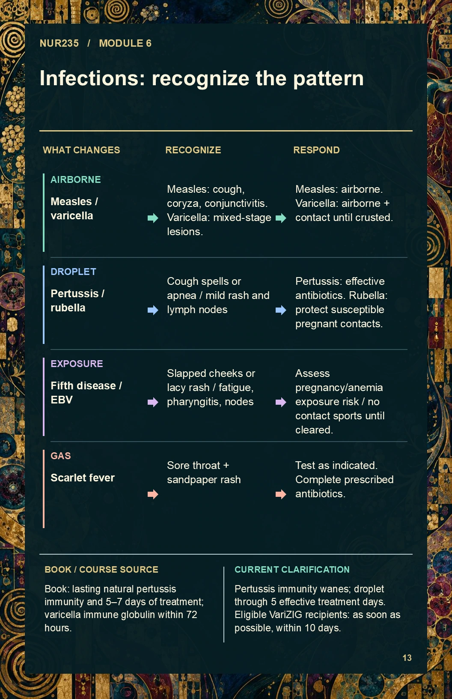
Read slide text and study notes
NUR235 / MODULE 6
Infections: recognize the pattern
13
WHAT CHANGES
RECOGNIZE
RESPOND
AIRBORNE
Measles / varicella
Measles: cough, coryza, conjunctivitis. Varicella: mixed-stage lesions.
Measles: airborne. Varicella: airborne + contact until crusted.
DROPLET
Pertussis / rubella
Cough spells or apnea / mild rash and lymph nodes
Pertussis: effective antibiotics. Rubella: protect susceptible pregnant contacts.
EXPOSURE
Fifth disease / EBV
Slapped cheeks or lacy rash / fatigue, pharyngitis, nodes
Assess pregnancy/anemia exposure risk / no contact sports until cleared.
GAS
Scarlet fever
Sore throat + sandpaper rash
Test as indicated. Complete prescribed antibiotics.
BOOK / COURSE SOURCE
CURRENT CLARIFICATION
Book: lasting natural pertussis immunity and 5–7 days of treatment; varicella immune globulin within 72 hours.
Pertussis immunity wanes; droplet through 5 effective treatment days. Eligible VariZIG recipients: as soon as possible, within 10 days.
Original study notes and source references
NUR235 content mastery infographic. Original native diagram by Codex. No Claude-created graphics.
High-level overview. The user-supplied module content reviews and textbook anchor the content. Book/course statements and current clarifications remain separate. Full prior wording is preserved below for study reference.
Some neurologic and musculoskeletal chapters are missing from the provided book extract. Available course sources and identified primary references supplement these gaps.
Immune and infectious disorders
User module content reviews, NUR235
{"theories": {"book_chapter": 28, "text_lines": [38660, 38956], "supports": "Erikson stages and Piaget age/stage terminology; implications for teaching/play.", "opening_excerpt": "Provide oral stimulation by giving pacifiers; do not discourage thumb sucking."}, "infant-growth": {"book_chapter": 29, "text_lines": [39631, 39981], "supports": "Weight doubles at 4–6 months/triples at 1 year; textbook month-by-month motor/language anchors.", "opening_excerpt": "The physiologic changes that occur in the infant year reflect both the increasing maturity and growth of body organs."}, "infant-trust": {"book_chapter": 29, "text_lines": [40105, 40175], "supports": "Emotional/cognitive development, object permanence, trust.", "opening_excerpt": "Socialization, or learning how to interact with others, is an extensive phenomenon. One-month-old infants show they can differentiate between faces and other objects by studying a face or the picture of a face longer than other objects. They are calm and feed "}, "infant-safety": {"book_chapter": 29, "text_lines": [40271, 40379], "supports": "Falls, choking, burns, automobile and water safety; rear-facing age wording is outdated.", "opening_excerpt": "Q. A parent is worried about keeping their 2-month-old safe. “How can I prevent accidents at this age?” the parent asks."}, "infant-feed": {"book_chapter": 29, "text_lines": [40463, 40625], "supports": "Human milk/iron-fortified formula, complementary foods near 6 months, iron foods, no honey or cow milk as main drink before 12 months.", "opening_excerpt": "Feeding recommendations for infants from birth through 6 months are to provide human milk exclusively via breastfeeding or expression and stored in a bottle. Human milk is the ideal form of nutrition for infants. It provides all the necessary nutrients, protec"}, "infant-vaccine": {"book_chapter": 29, "text_lines": [39431, 39593], "supports": "Well-child assessment and the textbook vaccine table.", "opening_excerpt": "Height, weight, head circumference plotted on standard growth chart; physical examination"}, "toddler": {"book_chapter": 30, "text_lines": [41172, 41294], "supports": "Autonomy, parent observation, language concern at 2 years, slowed growth and appetite.", "opening_excerpt": "During the toddler period, the age span from 1 to 3 years, enormous changes take place in a child and, consequently, in a family. During this period, children accomplish a wide array of developmental tasks and change from largely immobile and preverbal infants"}, "preschool": {"book_chapter": 31, "text_lines": [41357, 41447], "supports": "Age3–5, participation through modeling/play, physical and developmental assessment; remainder unavailable in extraction.", "opening_excerpt": "The preschool period traditionally includes the years 3, 4, and 5. Although physical growth slows considerably during this period, personality and cognitive growth continue at a rapid rate. Caregivers may be unsure how much independence and responsibility for "}, "school-growth": {"book_chapter": 32, "text_lines": [41590, 41658], "supports": "School-age growth and onset/order of puberty.", "opening_excerpt": "The average annual weight gain for a school-aged child is approximately 3 to 5 lb (1.3 to 2.2 kg); the increase in height is 1 to 2 in. (2.5 to 5 cm). Children who did not lose a lordosis and knock-kneed appearance during the preschool period typically lose th"}, "school-thinking": {"book_chapter": 32, "text_lines": [41850, 41982], "supports": "Industry, concrete operations, conservation/classification and skill mastery.", "opening_excerpt": "Ideally, children enter the school-aged period with the ability to trust others and with a sense of self-respect. They can accomplish small tasks independently because they have gained a sense of autonomy. They should have practiced adult roles, learned to sha"}, "school-safety": {"book_chapter": 32, "text_lines": [42014, 42096], "supports": "Injury prevention and body safety teaching.", "opening_excerpt": "Teach children to avoid unsafe areas, such as train yards, grain silos, and back alleys."}, "school-health": {"book_chapter": 32, "text_lines": [42390, 42530], "supports": "Immunizations, dental care and health assessment; schedule contains outdated product/dose wording.", "opening_excerpt": "Check history and past records, inform caregiver about any risks and side effects, and administer immunization in accordance with healthcare agency policies."}, "school-stress": {"book_chapter": 32, "text_lines": [42790, 42865], "supports": "Stress, school difficulties and substance-use concerns.", "opening_excerpt": "Reproductive life planning measures and the principles of safer sex if appropriate to the cultural setting (see Chapters 5 and 6). Sexual orientation questions and concerns may arise at this time, and questions should be addressed honestly and openly."}, "adolescent-limit": {"book_chapter": 33, "text_lines": [43127, 43183], "supports": "Only opening case, objectives and preventive privacy goal are present; full chapter not available.", "opening_excerpt": "For additional ancillary materials related to this chapter, please visit the point."}, "assessment": {"book_chapter": 34, "text_lines": [43374, 43408], "supports": "Adolescent private interview; confidentiality must be qualified by safety/legal exceptions.", "opening_excerpt": "A second reason K.W.’s parent has brought the child to your ambulatory clinic is because of increased frequency and burning on urination."}, "exam-order": {"book_chapter": 34, "text_lines": [44020, 44046], "supports": "Assessment is adapted to age; least intrusive observations first, uncomfortable portions later.", "opening_excerpt": "Presented here are the components of a routine or general physical assessment. It is important to recognize what a “general” physical examination entails so you can interpret the extent of the assessment a child has received when the caregiver states, “My chil"}, "teaching": {"book_chapter": 35, "text_lines": [46729, 46945], "supports": "Teach-back, demonstration/return demonstration and development-specific communication.", "opening_excerpt": "Children have variable attention spans. Assess the learner and provide lessons in segments of 5–20 minutes. Ideally, the child should be well rested and well-nourished prior to the teaching."}, "hospital": {"book_chapter": 36, "text_lines": [48070, 48134], "supports": "Family presence, routines and protest/despair/detachment after separation.", "opening_excerpt": "Obtain any special information about the child that the parents think would make them more comfortable in the hospital."}, "procedures": {"book_chapter": 37, "text_lines": [49105, 49293], "supports": "Diagnostic/therapeutic modalities, consent and developmental planning; extracted chapter is incomplete.", "opening_excerpt": "Nursing Care of a Family When a Child Needs Diagnostic or Therapeutic Modalities"}, "med-dose": {"book_chapter": 38, "text_lines": [49350, 49578], "supports": "Measured kg weight, individual dose safety, assessment and fractional-dose example; reversed conversion typo at49352.", "opening_excerpt": "Most adults immediately grasp that taking a medicine you offer them will be important to relieve whatever symptoms they are experiencing from an illness. Because children do not necessarily have this same level of understanding, they may resist taking medicine"}, "med-route": {"book_chapter": 38, "text_lines": [49616, 49674], "supports": "Oral medication positioning, oral syringe and age-appropriate technique.", "opening_excerpt": "Children younger than 3 years are unable to swallow pills. After that age, the ability of children to swallow pills varies from one child to the next and is not age dependent. Typically, children older than 9 years can be offered tablets; however, some adolesc"}, "pain": {"book_chapter": 39, "text_lines": [50756, 50862], "supports": "Behavioral tools, FLACC, child self-report FACES/numeric and combined comfort/analgesia.", "opening_excerpt": "Each area of concern is scored from 0 to 2. Infants with a total score of 4 or more are most likely to be in pain and need interventions to reduce discomfort. The scale cannot be used with infants who are intubated or paralyzed for ventilator assistance becaus"}, "nosebleed": {"book_chapter": 40, "text_lines": [52143, 52155], "supports": "Sit upright/forward; continuous pressure over soft nose for about10min; evaluate persistent/recurrent bleeding.", "opening_excerpt": "Epistaxis (nosebleed) is extremely common in children and usually occurs from trauma or irritation such as picking at the nasal mucosa. Dry air can cause mucous membranes to become dry and susceptible to cracking and bleeding. Epistaxis may also occur after st"}, "hiv": {"book_chapter": 42, "text_lines": [55531, 55664], "supports": "HIV CD4 mechanism, infection risks, family coping; treatment specifics need current NIH guidance.", "opening_excerpt": "HIV is a slowly replicating retrovirus and has at least two main divisions, HIV-1 and HIV-2, followed by a variety of further subtypes. The virus acts by attacking the lymphoreticular system, in particular CD4-bearing helper T lymphocytes. The virus enters the"}, "allergy": {"book_chapter": 42, "text_lines": [56017, 56109], "supports": "Anaphylaxis manifestations, immediate IM epinephrine, emergency help and recurrent reaction risk.", "opening_excerpt": "Anaphylactic shock (anaphylaxis) is an immediate, life-threatening, type I hypersensitivity reaction that occurs after exposure to an allergen in a previously sensitized child. Anaphylaxis can be caused by exposure to foods such as milk, egg, peanut, and tree "}, "eczema": {"book_chapter": 42, "text_lines": [56307, 56475], "supports": "Atopic dermatitis itch–scratch cycle, distribution and skin care.", "opening_excerpt": "Atopic dermatitis is a highly pruritic, chronic inflammatory skin disease that is often the first manifestation of allergic disease. It is a common disorder that affects 15% to 20% of children (Chopra et al., 2017)."}, "contact": {"book_chapter": 42, "text_lines": [56561, 56585], "supports": "Allergic contact dermatitis/typeIV, exposure pattern and removal of allergen.", "opening_excerpt": "Contact dermatitis is an example of a delayed or type IV hypersensitivity response; it is a reaction to skin contact with an allergen (a substance irritating to the child only with prior sensitization). The first reaction is generally erythema, followed by the"}, "rubella": {"book_chapter": 43, "text_lines": [57521, 57549], "supports": "Rubella syndrome; printed incubation/communicability statements are unreliable.", "opening_excerpt": "Incubation period: Generally, 14 days within a range of 16 to 183 days (AAP, 2018)"}, "measles": {"book_chapter": 43, "text_lines": [57551, 57593], "supports": "Cough/coryza/conjunctivitis, Koplik spots and descending rash.", "opening_excerpt": "Incubation period: 8 to 12 days from time of exposure to onset of any symptoms (AAP, 2018), with a range from 7 to 21 days (Drutz, 2016)"}, "varicella": {"book_chapter": 43, "text_lines": [57595, 57643], "supports": "Vesicles in crops, infection/complication risks; immune-globulin timing differs from current guidance.", "opening_excerpt": "Incubation period: 10 to 21 days, with the most common incidence at 14 to 16 days following exposure (Kennedy & Gershon, 2018)"}, "fifth": {"book_chapter": 43, "text_lines": [57677, 57704], "supports": "Parvovirus B19, slapped-cheek/lacy eruption and host-specific risk.", "opening_excerpt": "Incubation period: Most commonly between 4 and 14 days and can be as long as 21 days (AAP, 2018)"}, "mono": {"book_chapter": 43, "text_lines": [58009, 58048], "supports": "EBV saliva transmission, pharyngitis/adenopathy/fatigue and splenic risk.", "opening_excerpt": "Incubation period: Incubation period in adults and adolescents is 4 to 7 weeks, with a shorter incubation period in children (Fugl & Andersen, 2019)."}, "scarlet": {"book_chapter": 43, "text_lines": [58221, 58249], "supports": "GAS toxin-associated pharyngitis, sandpaper rash and antimicrobial treatment.", "opening_excerpt": "Incubation period: 2 to 5 days for streptococcal pharyngitis (AAP, 2018)"}, "impetigo": {"book_chapter": 43, "text_lines": [58251, 58280], "supports": "Staphylococcal/streptococcal superficial infection with honey crusts.", "opening_excerpt": "Causative agent: Beta-hemolytic streptococcus, group A or Staphylococcus aureus including methicillin-resistant Staphylococcus aureus (MRSA) (to be discussed in the subsequent section)"}, "pertussis": {"book_chapter": 43, "text_lines": [58365, 58417], "supports": "Paroxysmal cough, infant risk and treatment; immunity and isolation wording need updating.", "opening_excerpt": "Mode of transmission: Highly contagious by direct or indirect contact"}, "lice": {"book_chapter": 43, "text_lines": [58587, 58647], "supports": "Pediculosis and family teaching; avoid stigma about hygiene.", "opening_excerpt": "Small, white flecks on hair shaft (nits or eggs of lice); extreme pruritus"}, "pinworm": {"book_chapter": 43, "text_lines": [58649, 58655], "supports": "Nocturnal perianal itching, tape test and household hygiene; text omits repeat dose.", "opening_excerpt": "Pinworms are small, white, threadlike worms that live in the cecum. After ingestion of the egg, the mature worms develop over a period of 2 months in the cecum. The mature female pinworm then migrates out of the anus to deposit eggs on the skin in the anal and"}, "tinea": {"book_chapter": 43, "text_lines": [58675, 58705], "supports": "Tinea skin/scalp distinctions and antifungal treatment.", "opening_excerpt": "Fungi are larger than bacteria; some are unicellular (yeasts), but, generally, they are multicellular (molds). Deep mycoses invade internal organs. Respiratory transmission is by the inhalation of spores. Subcutaneous mycoses invade the skin, subcutaneous tiss"}, "transfusion": {"book_chapter": 44, "text_lines": [59254, 59340], "supports": "Transfusion setup, monitoring, reaction symptoms/stop action; printed AHTR label is inaccurate.", "opening_excerpt": "Transfusions of blood or its products are commonly used in the treatment of blood disorders and may include whole blood, packed RBCs, washed RBCs (as much “foreign” matter is removed as possible to reduce the possibility of an antagonistic reaction), plasma, p"}, "iron": {"book_chapter": 44, "text_lines": [59580, 59678], "supports": "Iron deficiency risks, low hemoglobin indices, diet and iron teaching.", "opening_excerpt": "Although the incidence of iron-deficiency anemia is decreasing in the United States due to improved infant nutrition, it is still the most common anemia of infancy and childhood, occurring whenever the intake of dietary iron is inadequate. Without adequate iro"}, "sickle": {"book_chapter": 44, "text_lines": [59738, 59974], "supports": "HbS vaso-occlusion/hemolysis, pain, sequestration/aplastic crises, hydration and analgesia.", "opening_excerpt": "Sickle cell anemia is an autosomal recessive inherited disorder carried on the beta chain of hemoglobin; the amino acid valine takes the place of the normally appearing glutamic acid. With this, the erythrocytes become characteristically elongated and crescent"}, "hemophilia": {"book_chapter": 44, "text_lines": [60258, 60318], "supports": "FactorVIII versusIX, X-linked inheritance and hemarthrosis.", "opening_excerpt": "Hemophilias are inherited disorders of blood coagulation. There are numerous types, each involving a deficiency of a different blood coagulation factor."}, "conjunctivitis": {"book_chapter": 50, "text_lines": [67992, 68042], "supports": "Conjunctivitis differential; the same content is duplicated earlier at66629–66679.", "opening_excerpt": "Inflammation of the conjunctiva; causes are numerous, including ophthalmia neonatorum (exposure to gonococcus bacillus; see Chapter 26) and bacterial, viral, and fungal organisms"}, "burns": {"book_chapter": 52, "text_lines": [70007, 70241], "supports": "Burn depth/area, ABCs, temperature/fluid/pain/infection and nutrition.", "opening_excerpt": "Burns are injuries to body tissue caused by excessive heat (greater than 104°F [40°C]). Burns are the second most common unintentional injury seen in children 1 to 4 years of age and the third most common cause of injury in children 5 to 14 years of age. Every"}, "oncology-care": {"book_chapter": 53, "text_lines": [71294, 71440], "supports": "Mucositis, infection, treatment-related toxicity and family care.", "opening_excerpt": "Children receiving long-term corticosteroid (e.g., dexamethasone or prednisone) therapy develop a typical “moon face,” red cheeks, and a stocky build. Like the loss of hair, a cushingoid appearance can be devastating to children or parents, the final insult in"}, "leukemia": {"book_chapter": 53, "text_lines": [71472, 71610], "supports": "Marrow blast proliferation causes anemia, infection risk and low platelets; diagnostic/treatment priorities.", "opening_excerpt": "Leukemia is the distorted and uncontrolled proliferation of WBCs (leukocytes) and is the most frequently occurring type of cancer in children."}, "brain": {"book_chapter": 53, "text_lines": [71716, 71906], "supports": "Brain tumor location, ICP/neurologic changes and surgery-specific postoperative care.", "opening_excerpt": "Brain tumors are the second most common form of cancer and the most common solid tumor in children. Tumors tend to occur between 1 and 10 years of age, with 5 years being the peak age of incidence. In children, brain tumors tend to occur at the midline in the "}, "wilms": {"book_chapter": 53, "text_lines": [72098, 72118], "supports": "Renal mass, hematuria/hypertension, imaging and nephrectomy-based treatment.", "opening_excerpt": "Nephroblastoma (Wilms tumor) is a malignant tumor that rises from the metanephric mesoderm cells of the upper pole of the kidney (Malkan et al., 2015). It accounts for 20% of solid tumors in childhood, and overall survival rates are greater than 90%. It may oc"}, "abuse": {"book_chapter": 55, "text_lines": [72856, 72958], "supports": "Maltreatment assessment, child protection, objective documentation and family concerns.", "opening_excerpt": "When obtaining a history, ask caregivers to account for any injury to a child’s body. Remember, however, that most childhood injuries are the result of unintentional injuries caused by the child’s inability to distinguish safe situations from dangerous ones or"}}
{"sleep": {"url": "https://www.aap.org/en/patient-care/safe-sleep/", "title": "AAP safe sleep"}, "carseat": {"url": "https://www.nhtsa.gov/vehicle-safety/car-seats-and-booster-seats", "title": "NHTSA child restraint recommendations"}, "milestones2": {"url": "https://www.cdc.gov/act-early/milestones/2-years.html", "title": "CDC milestones by2years"}, "milestones3": {"url": "https://www.cdc.gov/act-early/milestones/3-years.html", "title": "CDC milestones by3years"}, "milestones4": {"url": "https://www.cdc.gov/act-early/milestones/4-years.html", "title": "CDC milestones by4years"}, "milestones5": {"url": "https://www.cdc.gov/act-early/milestones/5-years.html", "title": "CDC milestones by5years"}, "vaccine": {"url": "https://www.cdc.gov/vaccines/hcp/imz-schedules/child-adolescent-age.html", "title": "CDC age schedule, page labels its addendum July2,2025"}, "aap2026": {"url": "https://publications.aap.org/pediatrics/article/157/3/e2025075754/206175/Recommended-Childhood-andAdolescent-Immunization", "title": "AAP2026 childhood/adolescent immunization policy"}, "meds": {"url": "https://www.healthychildren.org/English/safety-prevention/at-home/medication-safety/Pages/Using-Liquid-Medicines.aspx", "title": "AAP liquid medication measurement"}, "sickle-current": {"url": "https://www.nhlbi.nih.gov/sites/default/files/publications/56-364NFULL.pdf", "title": "NHLBI sickle-cell expert report: oxygen/fluids/transfusion in VOC"}, "sickle-ash": {"url": "https://doi.org/10.1182/bloodadvances.2020001851", "title": "ASH2020 sickle-cell pain guideline"}, "isolation": {"url": "https://www.cdc.gov/infection-control/hcp/isolation-precautions/appendix-a-type-duration.html", "title": "CDC isolation appendix, updated September11,2026"}, "pinworm-current": {"url": "https://www.cdc.gov/pinworm/hcp/clinical-overview/index.html", "title": "CDC pinworm treatment"}, "lice-current": {"url": "https://www.cdc.gov/lice/caring-head/", "title": "CDC head lice and school attendance"}, "pinkeye": {"url": "https://www.cdc.gov/conjunctivitis/treatment/", "title": "CDC conjunctivitis treatment"}, "acne": {"url": "https://www.aad.org/member/clinical-quality/guidelines/acne", "title": "AAD acne guideline"}, "hiv-current": {"url": "https://clinicalinfo.hiv.gov/en/guidelines/pediatric-arv/regimens-recommended-initial-therapy-antiretroviral-naive-children", "title": "NIH pediatric antiretroviral therapy"}, "blood": {"url": "https://www.isbtweb.org/resources/educational-modules-on-clinical-use-of-blood/adverse-effects-of-transfusion.html", "title": "ISBT adverse transfusion effects"}, "wilms-current": {"url": "https://medlineplus.gov/ency/article/001575.htm", "title": "MedlinePlus Wilms tumor and careful handling"}}
Immune emergencies and chronic risk
Allergic response/anaphylaxis: sudden airway, breathing or circulatory symptoms after exposure → immediate IM epinephrine and emergency support. Antihistamines do not replace it.
HIV: CD4-cell dysfunction → infection/growth concerns. Support prescribed combination ART, adherence, monitoring and age/risk-based prevention. Use standard precautions without social isolation.
Burns: stop exposure. Assess airway/inhalation injury, perfusion and burn area/depth. Prevent hypothermia, manage pain/fluids, protect the wound and provide high-calorie/protein support for major burns.
Respiratory/rash patterns
Pertussis: cough paroxysms, post-tussive emesis. Infants may have apnea without a whoop. Droplet precautions, airway/feeding support and prescribed antibiotics.
Measles: cough + coryza + conjunctivitis, Koplik spots, spreading rash → airborne precautions and prompt notification.
Rubella: mild rash with lymphadenopathy. Protect susceptible pregnant contacts. Droplet precautions.
Varicella: itchy lesions in different stages → airborne + contact precautions until crusted. Protect vulnerable contacts.
Fifth disease: slapped cheeks/lacy rash. Assess exposure risk in pregnancy and hemolytic anemia. Most immunocompetent children are past peak infectiousness when rash appears.
Current isolation durations: pertussis until5days of effective antibiotics, rubella7days after rash, measles4days after rash (longer with immune compromise), varicella until lesions crust. These supersede inconsistent textbook timing. The textbook prints universal anaphylaxis epinephrine maximum0.3mg and permits arm injection; for clinical dosing use the current age/weight product/protocol, with the anterolateral thigh preferred. Do not put a generalized dose ceiling on the overview slide.
Recall: Which two rash illnesses require airborne precautions in this group?
Answer: Measles; varicella also requires contact precautions.
Skin, eyes and common infections
Inflammation and skin barrier
Atopic dermatitis: chronic itch–scratch cycle → emollients, trigger reduction and prescribed anti-inflammatory therapy. Watch infection.
Contact dermatitis: exposure-pattern eruption → remove the irritant/allergen and protect skin. Allergic contact disease is type IV.
Acne: comedones/inflammatory lesions → gentle skin care and a consistent prescribed regimen. Benzoyl peroxide/retinoids are common options. Support body image. Do not pick.
Recognize the clue
Impetigo: honey crusts → prescribed topical/oral antibiotic, cover lesions, hand hygiene and avoid sharing items.
Scarlet fever: sore throat + sandpaper rash/strawberry tongue → test for GAS, give prescribed antibiotic and complete therapy.
Mononucleosis/EBV: fatigue, pharyngitis, nodes ± splenomegaly → fluids/rest. No contact sports until medically cleared.
Pediculosis capitis: scalp itch/live lice → correct pediculicide/combing and household instructions. Lice do not imply poor hygiene.
Pinworms: nighttime perianal itch → morning tape test, treatment with repeat dose in 2 weeks and household hygiene.
Conjunctivitis: red/draining eye → hygiene and cause-specific treatment. Antibiotics do not treat viral disease. Eye pain/vision change needs evaluation.
Fungal skin infection: tinea pattern → antifungal treatment and dry skin. Scalp tinea usually needs systemic therapy.
Across this module
Maintain fluids and usual balanced nutrition unless a specific condition changes needs. Avoid unprescribed broad food elimination for eczema.
Teach the exact medication technique, contact precautions and return precautions. Adapt the explanation to developmental age.
Impetigo is repeated twice in the official review list; teach it once. The provided adolescent chapter does not contain usable acne treatment detail, so AAD is an explicit supplement. The book’s pinworm section gives a single dose without the current repeat-dose instruction. Avoid blanket antibiotic drops for every conjunctivitis. CDC does not recommend immediate school dismissal or no-nit policies for head lice.
Recall: Which infestation needs a second treatment dose because the medicine does not kill eggs?
Answer: Pinworm infection: repeat the prescribed treatment in2weeks.
Book and current-guidance comparisons
{"topic": "Precautions", "old": "Inconsistent rubella timing and only72hvaricella immune-globulin window", "new": "Use CDC agent-specific precautions; if postexposure detail is added, current varicellaIG may be given as soon as possible within10days.", "sources": [{"url": "https://www.cdc.gov/infection-control/hcp/isolation-precautions/appendix-a-type-duration.html", "title": "CDC isolation appendix, updated September11,2026"}], "evidence": [57521, 57643]}
{"topic": "Pertussis", "old": "Lastingnaturalimmunity;5–7days to endcontagiousness", "new": "Do not imply lifelong immunity; droplet precautions until5days of effective therapy.", "sources": [{"url": "https://www.cdc.gov/infection-control/hcp/isolation-precautions/appendix-a-type-duration.html", "title": "CDC isolation appendix, updated September11,2026"}], "evidence": [58365, 58381]}
Infection precautions and varicella exposure
Book/course wording: Source material gives inconsistent rubella precaution timing and a 72-hour window for varicella immune globulin.
Current clarification: Use the organism-specific isolation guidance. For eligible exposed patients, VariZIG is given as soon as possible and may be given within 10 days of exposure.
Pertussis
Book/course wording: The source describes lasting natural immunity and 5–7 days of treatment before contagiousness ends.
Current clarification: Infection does not guarantee lifelong immunity. Use droplet precautions through 5 days of effective antibiotic therapy.
Original overview
78 / 254Skin and eyes: match clue to care
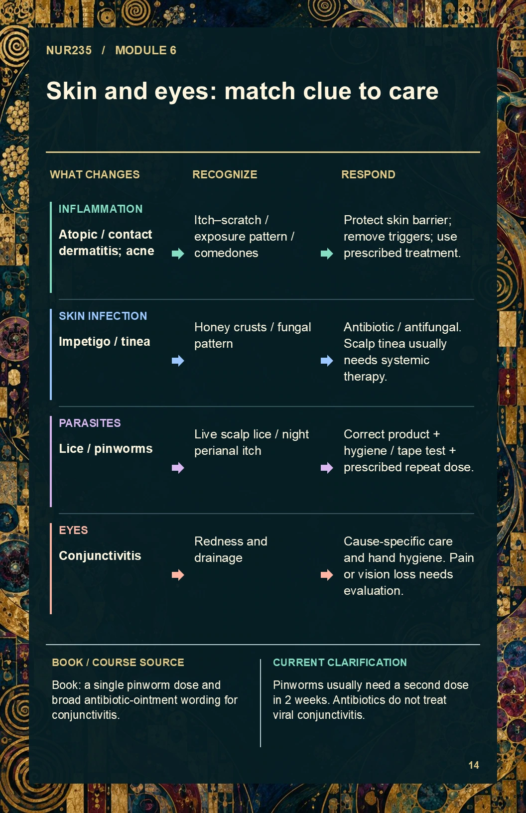
Read slide text and study notes
NUR235 / MODULE 6
Skin and eyes: match clue to care
14
WHAT CHANGES
RECOGNIZE
RESPOND
INFLAMMATION
Atopic / contact dermatitis; acne
Itch–scratch / exposure pattern / comedones
Protect skin barrier; remove triggers; use prescribed treatment.
SKIN INFECTION
Impetigo / tinea
Honey crusts / fungal pattern
Antibiotic / antifungal. Scalp tinea usually needs systemic therapy.
PARASITES
Lice / pinworms
Live scalp lice / night perianal itch
Correct product + hygiene / tape test + prescribed repeat dose.
EYES
Conjunctivitis
Redness and drainage
Cause-specific care and hand hygiene. Pain or vision loss needs evaluation.
BOOK / COURSE SOURCE
CURRENT CLARIFICATION
Book: a single pinworm dose and broad antibiotic-ointment wording for conjunctivitis.
Pinworms usually need a second dose in 2 weeks. Antibiotics do not treat viral conjunctivitis.
Original study notes and source references
NUR235 content mastery infographic. Original native diagram by Codex. No Claude-created graphics.
High-level overview. The user-supplied module content reviews and textbook anchor the content. Book/course statements and current clarifications remain separate. Full prior wording is preserved below for study reference.
Some neurologic and musculoskeletal chapters are missing from the provided book extract. Available course sources and identified primary references supplement these gaps.
Skin, eyes and common infections
User module content reviews, NUR235
{"theories": {"book_chapter": 28, "text_lines": [38660, 38956], "supports": "Erikson stages and Piaget age/stage terminology; implications for teaching/play.", "opening_excerpt": "Provide oral stimulation by giving pacifiers; do not discourage thumb sucking."}, "infant-growth": {"book_chapter": 29, "text_lines": [39631, 39981], "supports": "Weight doubles at 4–6 months/triples at 1 year; textbook month-by-month motor/language anchors.", "opening_excerpt": "The physiologic changes that occur in the infant year reflect both the increasing maturity and growth of body organs."}, "infant-trust": {"book_chapter": 29, "text_lines": [40105, 40175], "supports": "Emotional/cognitive development, object permanence, trust.", "opening_excerpt": "Socialization, or learning how to interact with others, is an extensive phenomenon. One-month-old infants show they can differentiate between faces and other objects by studying a face or the picture of a face longer than other objects. They are calm and feed "}, "infant-safety": {"book_chapter": 29, "text_lines": [40271, 40379], "supports": "Falls, choking, burns, automobile and water safety; rear-facing age wording is outdated.", "opening_excerpt": "Q. A parent is worried about keeping their 2-month-old safe. “How can I prevent accidents at this age?” the parent asks."}, "infant-feed": {"book_chapter": 29, "text_lines": [40463, 40625], "supports": "Human milk/iron-fortified formula, complementary foods near 6 months, iron foods, no honey or cow milk as main drink before 12 months.", "opening_excerpt": "Feeding recommendations for infants from birth through 6 months are to provide human milk exclusively via breastfeeding or expression and stored in a bottle. Human milk is the ideal form of nutrition for infants. It provides all the necessary nutrients, protec"}, "infant-vaccine": {"book_chapter": 29, "text_lines": [39431, 39593], "supports": "Well-child assessment and the textbook vaccine table.", "opening_excerpt": "Height, weight, head circumference plotted on standard growth chart; physical examination"}, "toddler": {"book_chapter": 30, "text_lines": [41172, 41294], "supports": "Autonomy, parent observation, language concern at 2 years, slowed growth and appetite.", "opening_excerpt": "During the toddler period, the age span from 1 to 3 years, enormous changes take place in a child and, consequently, in a family. During this period, children accomplish a wide array of developmental tasks and change from largely immobile and preverbal infants"}, "preschool": {"book_chapter": 31, "text_lines": [41357, 41447], "supports": "Age3–5, participation through modeling/play, physical and developmental assessment; remainder unavailable in extraction.", "opening_excerpt": "The preschool period traditionally includes the years 3, 4, and 5. Although physical growth slows considerably during this period, personality and cognitive growth continue at a rapid rate. Caregivers may be unsure how much independence and responsibility for "}, "school-growth": {"book_chapter": 32, "text_lines": [41590, 41658], "supports": "School-age growth and onset/order of puberty.", "opening_excerpt": "The average annual weight gain for a school-aged child is approximately 3 to 5 lb (1.3 to 2.2 kg); the increase in height is 1 to 2 in. (2.5 to 5 cm). Children who did not lose a lordosis and knock-kneed appearance during the preschool period typically lose th"}, "school-thinking": {"book_chapter": 32, "text_lines": [41850, 41982], "supports": "Industry, concrete operations, conservation/classification and skill mastery.", "opening_excerpt": "Ideally, children enter the school-aged period with the ability to trust others and with a sense of self-respect. They can accomplish small tasks independently because they have gained a sense of autonomy. They should have practiced adult roles, learned to sha"}, "school-safety": {"book_chapter": 32, "text_lines": [42014, 42096], "supports": "Injury prevention and body safety teaching.", "opening_excerpt": "Teach children to avoid unsafe areas, such as train yards, grain silos, and back alleys."}, "school-health": {"book_chapter": 32, "text_lines": [42390, 42530], "supports": "Immunizations, dental care and health assessment; schedule contains outdated product/dose wording.", "opening_excerpt": "Check history and past records, inform caregiver about any risks and side effects, and administer immunization in accordance with healthcare agency policies."}, "school-stress": {"book_chapter": 32, "text_lines": [42790, 42865], "supports": "Stress, school difficulties and substance-use concerns.", "opening_excerpt": "Reproductive life planning measures and the principles of safer sex if appropriate to the cultural setting (see Chapters 5 and 6). Sexual orientation questions and concerns may arise at this time, and questions should be addressed honestly and openly."}, "adolescent-limit": {"book_chapter": 33, "text_lines": [43127, 43183], "supports": "Only opening case, objectives and preventive privacy goal are present; full chapter not available.", "opening_excerpt": "For additional ancillary materials related to this chapter, please visit the point."}, "assessment": {"book_chapter": 34, "text_lines": [43374, 43408], "supports": "Adolescent private interview; confidentiality must be qualified by safety/legal exceptions.", "opening_excerpt": "A second reason K.W.’s parent has brought the child to your ambulatory clinic is because of increased frequency and burning on urination."}, "exam-order": {"book_chapter": 34, "text_lines": [44020, 44046], "supports": "Assessment is adapted to age; least intrusive observations first, uncomfortable portions later.", "opening_excerpt": "Presented here are the components of a routine or general physical assessment. It is important to recognize what a “general” physical examination entails so you can interpret the extent of the assessment a child has received when the caregiver states, “My chil"}, "teaching": {"book_chapter": 35, "text_lines": [46729, 46945], "supports": "Teach-back, demonstration/return demonstration and development-specific communication.", "opening_excerpt": "Children have variable attention spans. Assess the learner and provide lessons in segments of 5–20 minutes. Ideally, the child should be well rested and well-nourished prior to the teaching."}, "hospital": {"book_chapter": 36, "text_lines": [48070, 48134], "supports": "Family presence, routines and protest/despair/detachment after separation.", "opening_excerpt": "Obtain any special information about the child that the parents think would make them more comfortable in the hospital."}, "procedures": {"book_chapter": 37, "text_lines": [49105, 49293], "supports": "Diagnostic/therapeutic modalities, consent and developmental planning; extracted chapter is incomplete.", "opening_excerpt": "Nursing Care of a Family When a Child Needs Diagnostic or Therapeutic Modalities"}, "med-dose": {"book_chapter": 38, "text_lines": [49350, 49578], "supports": "Measured kg weight, individual dose safety, assessment and fractional-dose example; reversed conversion typo at49352.", "opening_excerpt": "Most adults immediately grasp that taking a medicine you offer them will be important to relieve whatever symptoms they are experiencing from an illness. Because children do not necessarily have this same level of understanding, they may resist taking medicine"}, "med-route": {"book_chapter": 38, "text_lines": [49616, 49674], "supports": "Oral medication positioning, oral syringe and age-appropriate technique.", "opening_excerpt": "Children younger than 3 years are unable to swallow pills. After that age, the ability of children to swallow pills varies from one child to the next and is not age dependent. Typically, children older than 9 years can be offered tablets; however, some adolesc"}, "pain": {"book_chapter": 39, "text_lines": [50756, 50862], "supports": "Behavioral tools, FLACC, child self-report FACES/numeric and combined comfort/analgesia.", "opening_excerpt": "Each area of concern is scored from 0 to 2. Infants with a total score of 4 or more are most likely to be in pain and need interventions to reduce discomfort. The scale cannot be used with infants who are intubated or paralyzed for ventilator assistance becaus"}, "nosebleed": {"book_chapter": 40, "text_lines": [52143, 52155], "supports": "Sit upright/forward; continuous pressure over soft nose for about10min; evaluate persistent/recurrent bleeding.", "opening_excerpt": "Epistaxis (nosebleed) is extremely common in children and usually occurs from trauma or irritation such as picking at the nasal mucosa. Dry air can cause mucous membranes to become dry and susceptible to cracking and bleeding. Epistaxis may also occur after st"}, "hiv": {"book_chapter": 42, "text_lines": [55531, 55664], "supports": "HIV CD4 mechanism, infection risks, family coping; treatment specifics need current NIH guidance.", "opening_excerpt": "HIV is a slowly replicating retrovirus and has at least two main divisions, HIV-1 and HIV-2, followed by a variety of further subtypes. The virus acts by attacking the lymphoreticular system, in particular CD4-bearing helper T lymphocytes. The virus enters the"}, "allergy": {"book_chapter": 42, "text_lines": [56017, 56109], "supports": "Anaphylaxis manifestations, immediate IM epinephrine, emergency help and recurrent reaction risk.", "opening_excerpt": "Anaphylactic shock (anaphylaxis) is an immediate, life-threatening, type I hypersensitivity reaction that occurs after exposure to an allergen in a previously sensitized child. Anaphylaxis can be caused by exposure to foods such as milk, egg, peanut, and tree "}, "eczema": {"book_chapter": 42, "text_lines": [56307, 56475], "supports": "Atopic dermatitis itch–scratch cycle, distribution and skin care.", "opening_excerpt": "Atopic dermatitis is a highly pruritic, chronic inflammatory skin disease that is often the first manifestation of allergic disease. It is a common disorder that affects 15% to 20% of children (Chopra et al., 2017)."}, "contact": {"book_chapter": 42, "text_lines": [56561, 56585], "supports": "Allergic contact dermatitis/typeIV, exposure pattern and removal of allergen.", "opening_excerpt": "Contact dermatitis is an example of a delayed or type IV hypersensitivity response; it is a reaction to skin contact with an allergen (a substance irritating to the child only with prior sensitization). The first reaction is generally erythema, followed by the"}, "rubella": {"book_chapter": 43, "text_lines": [57521, 57549], "supports": "Rubella syndrome; printed incubation/communicability statements are unreliable.", "opening_excerpt": "Incubation period: Generally, 14 days within a range of 16 to 183 days (AAP, 2018)"}, "measles": {"book_chapter": 43, "text_lines": [57551, 57593], "supports": "Cough/coryza/conjunctivitis, Koplik spots and descending rash.", "opening_excerpt": "Incubation period: 8 to 12 days from time of exposure to onset of any symptoms (AAP, 2018), with a range from 7 to 21 days (Drutz, 2016)"}, "varicella": {"book_chapter": 43, "text_lines": [57595, 57643], "supports": "Vesicles in crops, infection/complication risks; immune-globulin timing differs from current guidance.", "opening_excerpt": "Incubation period: 10 to 21 days, with the most common incidence at 14 to 16 days following exposure (Kennedy & Gershon, 2018)"}, "fifth": {"book_chapter": 43, "text_lines": [57677, 57704], "supports": "Parvovirus B19, slapped-cheek/lacy eruption and host-specific risk.", "opening_excerpt": "Incubation period: Most commonly between 4 and 14 days and can be as long as 21 days (AAP, 2018)"}, "mono": {"book_chapter": 43, "text_lines": [58009, 58048], "supports": "EBV saliva transmission, pharyngitis/adenopathy/fatigue and splenic risk.", "opening_excerpt": "Incubation period: Incubation period in adults and adolescents is 4 to 7 weeks, with a shorter incubation period in children (Fugl & Andersen, 2019)."}, "scarlet": {"book_chapter": 43, "text_lines": [58221, 58249], "supports": "GAS toxin-associated pharyngitis, sandpaper rash and antimicrobial treatment.", "opening_excerpt": "Incubation period: 2 to 5 days for streptococcal pharyngitis (AAP, 2018)"}, "impetigo": {"book_chapter": 43, "text_lines": [58251, 58280], "supports": "Staphylococcal/streptococcal superficial infection with honey crusts.", "opening_excerpt": "Causative agent: Beta-hemolytic streptococcus, group A or Staphylococcus aureus including methicillin-resistant Staphylococcus aureus (MRSA) (to be discussed in the subsequent section)"}, "pertussis": {"book_chapter": 43, "text_lines": [58365, 58417], "supports": "Paroxysmal cough, infant risk and treatment; immunity and isolation wording need updating.", "opening_excerpt": "Mode of transmission: Highly contagious by direct or indirect contact"}, "lice": {"book_chapter": 43, "text_lines": [58587, 58647], "supports": "Pediculosis and family teaching; avoid stigma about hygiene.", "opening_excerpt": "Small, white flecks on hair shaft (nits or eggs of lice); extreme pruritus"}, "pinworm": {"book_chapter": 43, "text_lines": [58649, 58655], "supports": "Nocturnal perianal itching, tape test and household hygiene; text omits repeat dose.", "opening_excerpt": "Pinworms are small, white, threadlike worms that live in the cecum. After ingestion of the egg, the mature worms develop over a period of 2 months in the cecum. The mature female pinworm then migrates out of the anus to deposit eggs on the skin in the anal and"}, "tinea": {"book_chapter": 43, "text_lines": [58675, 58705], "supports": "Tinea skin/scalp distinctions and antifungal treatment.", "opening_excerpt": "Fungi are larger than bacteria; some are unicellular (yeasts), but, generally, they are multicellular (molds). Deep mycoses invade internal organs. Respiratory transmission is by the inhalation of spores. Subcutaneous mycoses invade the skin, subcutaneous tiss"}, "transfusion": {"book_chapter": 44, "text_lines": [59254, 59340], "supports": "Transfusion setup, monitoring, reaction symptoms/stop action; printed AHTR label is inaccurate.", "opening_excerpt": "Transfusions of blood or its products are commonly used in the treatment of blood disorders and may include whole blood, packed RBCs, washed RBCs (as much “foreign” matter is removed as possible to reduce the possibility of an antagonistic reaction), plasma, p"}, "iron": {"book_chapter": 44, "text_lines": [59580, 59678], "supports": "Iron deficiency risks, low hemoglobin indices, diet and iron teaching.", "opening_excerpt": "Although the incidence of iron-deficiency anemia is decreasing in the United States due to improved infant nutrition, it is still the most common anemia of infancy and childhood, occurring whenever the intake of dietary iron is inadequate. Without adequate iro"}, "sickle": {"book_chapter": 44, "text_lines": [59738, 59974], "supports": "HbS vaso-occlusion/hemolysis, pain, sequestration/aplastic crises, hydration and analgesia.", "opening_excerpt": "Sickle cell anemia is an autosomal recessive inherited disorder carried on the beta chain of hemoglobin; the amino acid valine takes the place of the normally appearing glutamic acid. With this, the erythrocytes become characteristically elongated and crescent"}, "hemophilia": {"book_chapter": 44, "text_lines": [60258, 60318], "supports": "FactorVIII versusIX, X-linked inheritance and hemarthrosis.", "opening_excerpt": "Hemophilias are inherited disorders of blood coagulation. There are numerous types, each involving a deficiency of a different blood coagulation factor."}, "conjunctivitis": {"book_chapter": 50, "text_lines": [67992, 68042], "supports": "Conjunctivitis differential; the same content is duplicated earlier at66629–66679.", "opening_excerpt": "Inflammation of the conjunctiva; causes are numerous, including ophthalmia neonatorum (exposure to gonococcus bacillus; see Chapter 26) and bacterial, viral, and fungal organisms"}, "burns": {"book_chapter": 52, "text_lines": [70007, 70241], "supports": "Burn depth/area, ABCs, temperature/fluid/pain/infection and nutrition.", "opening_excerpt": "Burns are injuries to body tissue caused by excessive heat (greater than 104°F [40°C]). Burns are the second most common unintentional injury seen in children 1 to 4 years of age and the third most common cause of injury in children 5 to 14 years of age. Every"}, "oncology-care": {"book_chapter": 53, "text_lines": [71294, 71440], "supports": "Mucositis, infection, treatment-related toxicity and family care.", "opening_excerpt": "Children receiving long-term corticosteroid (e.g., dexamethasone or prednisone) therapy develop a typical “moon face,” red cheeks, and a stocky build. Like the loss of hair, a cushingoid appearance can be devastating to children or parents, the final insult in"}, "leukemia": {"book_chapter": 53, "text_lines": [71472, 71610], "supports": "Marrow blast proliferation causes anemia, infection risk and low platelets; diagnostic/treatment priorities.", "opening_excerpt": "Leukemia is the distorted and uncontrolled proliferation of WBCs (leukocytes) and is the most frequently occurring type of cancer in children."}, "brain": {"book_chapter": 53, "text_lines": [71716, 71906], "supports": "Brain tumor location, ICP/neurologic changes and surgery-specific postoperative care.", "opening_excerpt": "Brain tumors are the second most common form of cancer and the most common solid tumor in children. Tumors tend to occur between 1 and 10 years of age, with 5 years being the peak age of incidence. In children, brain tumors tend to occur at the midline in the "}, "wilms": {"book_chapter": 53, "text_lines": [72098, 72118], "supports": "Renal mass, hematuria/hypertension, imaging and nephrectomy-based treatment.", "opening_excerpt": "Nephroblastoma (Wilms tumor) is a malignant tumor that rises from the metanephric mesoderm cells of the upper pole of the kidney (Malkan et al., 2015). It accounts for 20% of solid tumors in childhood, and overall survival rates are greater than 90%. It may oc"}, "abuse": {"book_chapter": 55, "text_lines": [72856, 72958], "supports": "Maltreatment assessment, child protection, objective documentation and family concerns.", "opening_excerpt": "When obtaining a history, ask caregivers to account for any injury to a child’s body. Remember, however, that most childhood injuries are the result of unintentional injuries caused by the child’s inability to distinguish safe situations from dangerous ones or"}}
{"sleep": {"url": "https://www.aap.org/en/patient-care/safe-sleep/", "title": "AAP safe sleep"}, "carseat": {"url": "https://www.nhtsa.gov/vehicle-safety/car-seats-and-booster-seats", "title": "NHTSA child restraint recommendations"}, "milestones2": {"url": "https://www.cdc.gov/act-early/milestones/2-years.html", "title": "CDC milestones by2years"}, "milestones3": {"url": "https://www.cdc.gov/act-early/milestones/3-years.html", "title": "CDC milestones by3years"}, "milestones4": {"url": "https://www.cdc.gov/act-early/milestones/4-years.html", "title": "CDC milestones by4years"}, "milestones5": {"url": "https://www.cdc.gov/act-early/milestones/5-years.html", "title": "CDC milestones by5years"}, "vaccine": {"url": "https://www.cdc.gov/vaccines/hcp/imz-schedules/child-adolescent-age.html", "title": "CDC age schedule, page labels its addendum July2,2025"}, "aap2026": {"url": "https://publications.aap.org/pediatrics/article/157/3/e2025075754/206175/Recommended-Childhood-andAdolescent-Immunization", "title": "AAP2026 childhood/adolescent immunization policy"}, "meds": {"url": "https://www.healthychildren.org/English/safety-prevention/at-home/medication-safety/Pages/Using-Liquid-Medicines.aspx", "title": "AAP liquid medication measurement"}, "sickle-current": {"url": "https://www.nhlbi.nih.gov/sites/default/files/publications/56-364NFULL.pdf", "title": "NHLBI sickle-cell expert report: oxygen/fluids/transfusion in VOC"}, "sickle-ash": {"url": "https://doi.org/10.1182/bloodadvances.2020001851", "title": "ASH2020 sickle-cell pain guideline"}, "isolation": {"url": "https://www.cdc.gov/infection-control/hcp/isolation-precautions/appendix-a-type-duration.html", "title": "CDC isolation appendix, updated September11,2026"}, "pinworm-current": {"url": "https://www.cdc.gov/pinworm/hcp/clinical-overview/index.html", "title": "CDC pinworm treatment"}, "lice-current": {"url": "https://www.cdc.gov/lice/caring-head/", "title": "CDC head lice and school attendance"}, "pinkeye": {"url": "https://www.cdc.gov/conjunctivitis/treatment/", "title": "CDC conjunctivitis treatment"}, "acne": {"url": "https://www.aad.org/member/clinical-quality/guidelines/acne", "title": "AAD acne guideline"}, "hiv-current": {"url": "https://clinicalinfo.hiv.gov/en/guidelines/pediatric-arv/regimens-recommended-initial-therapy-antiretroviral-naive-children", "title": "NIH pediatric antiretroviral therapy"}, "blood": {"url": "https://www.isbtweb.org/resources/educational-modules-on-clinical-use-of-blood/adverse-effects-of-transfusion.html", "title": "ISBT adverse transfusion effects"}, "wilms-current": {"url": "https://medlineplus.gov/ency/article/001575.htm", "title": "MedlinePlus Wilms tumor and careful handling"}}
Inflammation and skin barrier
Atopic dermatitis: chronic itch–scratch cycle → emollients, trigger reduction and prescribed anti-inflammatory therapy. Watch infection.
Contact dermatitis: exposure-pattern eruption → remove the irritant/allergen and protect skin. Allergic contact disease is type IV.
Acne: comedones/inflammatory lesions → gentle skin care and a consistent prescribed regimen. Benzoyl peroxide/retinoids are common options. Support body image. Do not pick.
Recognize the clue
Impetigo: honey crusts → prescribed topical/oral antibiotic, cover lesions, hand hygiene and avoid sharing items.
Scarlet fever: sore throat + sandpaper rash/strawberry tongue → test for GAS, give prescribed antibiotic and complete therapy.
Mononucleosis/EBV: fatigue, pharyngitis, nodes ± splenomegaly → fluids/rest. No contact sports until medically cleared.
Pediculosis capitis: scalp itch/live lice → correct pediculicide/combing and household instructions. Lice do not imply poor hygiene.
Pinworms: nighttime perianal itch → morning tape test, treatment with repeat dose in 2 weeks and household hygiene.
Conjunctivitis: red/draining eye → hygiene and cause-specific treatment. Antibiotics do not treat viral disease. Eye pain/vision change needs evaluation.
Fungal skin infection: tinea pattern → antifungal treatment and dry skin. Scalp tinea usually needs systemic therapy.
Across this module
Maintain fluids and usual balanced nutrition unless a specific condition changes needs. Avoid unprescribed broad food elimination for eczema.
Teach the exact medication technique, contact precautions and return precautions. Adapt the explanation to developmental age.
Impetigo is repeated twice in the official review list; teach it once. The provided adolescent chapter does not contain usable acne treatment detail, so AAD is an explicit supplement. The book’s pinworm section gives a single dose without the current repeat-dose instruction. Avoid blanket antibiotic drops for every conjunctivitis. CDC does not recommend immediate school dismissal or no-nit policies for head lice.
Recall: Which infestation needs a second treatment dose because the medicine does not kill eggs?
Answer: Pinworm infection: repeat the prescribed treatment in2weeks.
Book and current-guidance comparisons
{"topic": "Transfusion label", "old": "Incompatible blood with agglutination labeled anaphylactic reaction", "new": "Call incompatible-RBC destruction acute hemolysis; keep allergic/anaphylactic reactions distinct. Do not reproduce routineheparin/diuretic suggestion as blanket care.", "sources": [{"url": "https://www.isbtweb.org/resources/educational-modules-on-clinical-use-of-blood/adverse-effects-of-transfusion.html", "title": "ISBT adverse transfusion effects"}], "evidence": [59274, 59284]}
{"topic": "Pinworm repeat", "old": "Single dose listed", "new": "Repeat treatment2weeks later according to prescribed regimen; teach hygiene/household management.", "sources": [{"url": "https://www.cdc.gov/pinworm/hcp/clinical-overview/index.html", "title": "CDC pinworm treatment"}], "evidence": [58655, 58655]}
Transfusion reaction terminology
Book/course wording: Incompatible blood with agglutination is labeled an anaphylactic reaction.
Current clarification: Destruction of incompatible red cells is an acute hemolytic transfusion reaction. Allergic and anaphylactic reactions are distinct. Heparin or diuretics are not automatic treatments for every transfusion reaction.
Pinworm treatment
Book/course wording: A single medication dose is listed.
Current clarification: The prescribed regimen generally includes a second treatment 2 weeks later. Hand hygiene, laundering and household measures help prevent reinfection.
{"topic": "Hiv", "old": "Older viral-load/CD4 thresholds and ZDV-focused details", "new": "Teach current prompt individualized combinationART and adherence support; do not use an obsolete single threshold for every age.", "sources": [{"url": "https://clinicalinfo.hiv.gov/en/guidelines/pediatric-arv/regimens-recommended-initial-therapy-antiretroviral-naive-children", "title": "NIH pediatric antiretroviral therapy"}], "evidence": [55531, 55664]}
{"topic": "Eye antibiotics", "old": "Broad antibioticointment language acrossconjunctivitis", "new": "Match therapy to cause; no antibiotic benefit for viralconjunctivitis.", "sources": [{"url": "https://www.cdc.gov/conjunctivitis/treatment/", "title": "CDC conjunctivitis treatment"}], "evidence": [66629, 66679]}
Pediatric HIV
Book/course wording: Older viral-load/CD4 thresholds and zidovudine-focused treatment details appear in the source.
Current clarification: Current care emphasizes prompt, individualized combination antiretroviral therapy and adherence support. Treatment decisions account for age and the clinical situation.
Conjunctivitis antibiotics
Book/course wording: Broad antibiotic-ointment language is used across causes of conjunctivitis.
Current clarification: Treatment depends on the cause. Antibiotics do not benefit viral conjunctivitis.
Website infographic
79 / 254Spot the Clue: Childhood Infections
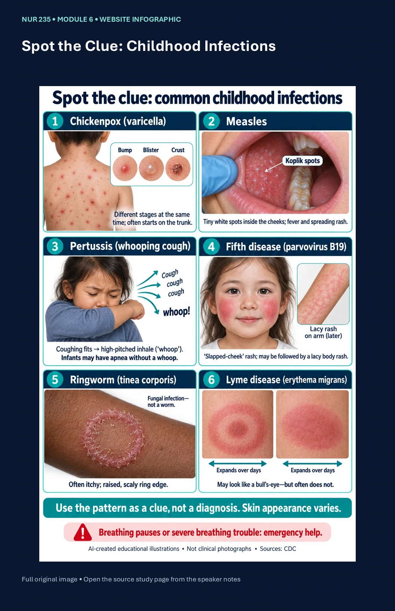
Read slide text and study notes
NUR 235 • MODULE 6 • WEBSITE INFOGRAPHIC
Spot the Clue: Childhood Infections
Full original image • Open the source study page from the speaker notes
Website infographic
80 / 254Fifth disease & parvovirus B19
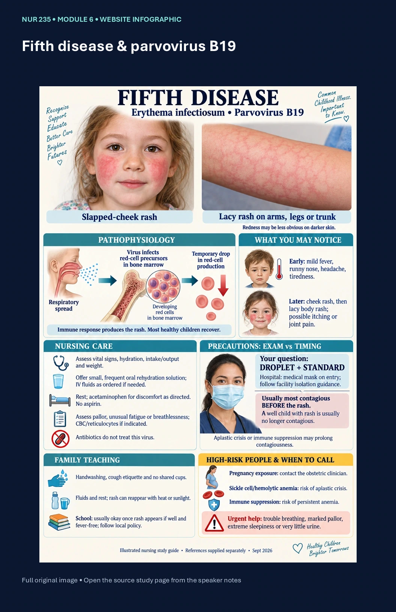
Read slide text and study notes
NUR 235 • MODULE 6 • WEBSITE INFOGRAPHIC
Fifth disease & parvovirus B19
Full original image • Open the source study page from the speaker notes
Simple Nursing original · Module 6
81 / 254Simple Nursing: Acne

Read handout text
Acne
Pediatrics: Integumentary
Acne is a common skin disorder where obstructed
sebaceous glands within the skin results in
blackheads & white heads. When bacteria settles in,
it can cause inflammation resulting in pustules & papules.
• Puberty & pregnancy (explosion of hormones)
• Bacteria overgrowth
• Genetics
• Stress
T etracycline
Isotretinoin Vitamin A
TETRACYLINE
Notes
Vigorous scrubbing / washing
Squeezing or picking lesions
Antibacterial soap
Smoking
AVOID: NCLEX TIPS
Moisturizer
Skincare products “non-comedogenic”
“well balanced”
Fluid intake: 8 glasses of water / day
Wash hair & skin frequently “gently”
Apply
Diet:
HESI
The nurse is teaching .. interventions to
maintain healthy skin. Which teaching does
the nurse include?
Select all that apply.
Refrain from smoking any tobacco
Wash your hair and skin frequently
Apply moisturizer after showering
Drink eight glasses of water per day
Causes & Risks
Treatment
Pathophysiology
Education
Simple Nursing original · Module 6
82 / 254Simple Nursing: Eczema

Read handout text
Eczema
Pediatrics: Integumentary
Eczema is a chronic disorder of the skin in which the skin becomes red, itchy, & dry.
It’s common in children but can occur at any age.
It tends to flare up periodically when exposed to allergens.
HESI
Eczema… The nurse knows the
treatment plan is centered on which
concept?
Decreasing exposure to the allergen
Trim nails
Lukewarm “tepid” sponge baths with soap
NCLEX TIPS
Cotton clothing (soft)
Pat dry with towels
Apply moisturizer immediately after bathing
NOT wool clothing
Notes
Pathophysiology
Interventions
Simple Nursing original · Module 6
83 / 254Simple Nursing: Lice & Impetigo

Read handout text
Lice & Impetigo
Pediatrics: Integumentary
Lice - Pathophysiology & Causes
Head lice are wingless insects that live on the human scalp and
feed on human blood. Infestations are common in children and are
typically caused by coming in contact with another child with lice.
Cap-itis
Pediculosis Capitis
Cap = hat
Memory Trick
Itching & sores on the scalp, neck, and shoulders.
School screenings are done to look for lice eggs
called nits or full grown lice.
Permethrin (brand: Nix)
Pharmacology
Education
Wash with HOT water: clothing,
sheets, & towels
Seal non-washable items in airtight
plastic bags
DO NOT share hats, scarfs, brushes
HESI
Which drug is used ... pediculosis capitis?
Permethrin 1% cream rinse
ATI
… teaching the guardian of a child who has pediculosis
capitis…? Select All That Apply
Use medication containing 1% permethrin
Seal non-washable items in airtight plastic bags
Nix
Permethrin
1% permethrin
Impetigo - Pathophysiology & Causes
Impetigo is a highly contagious skin infection
affecting infants & children. It is caused by a strep
or staph infection, which is really dangerous
in children, as strep infections can travel down
to the kidneys causing glomerulonephritis.
Impetigo
Infant -igo
Glomerulonephritis secondary
to streptococcus infection
Memory Trick
Strep infection Staph infection
Signs & Symptoms
Diagnostics
Treatment
• Itchy red sores
• Mainly on the nose & mouth
If sores burst & dry into honey-colored crusts, this is
when the infection is MOST contagious & most easily
spread!
Impetigo
Ecthyma
1. NO school / daycare
2. Wash hands before & after
touching infected areas
3. Separate child’s clothes &
towels from other laundry &
wash with HOT WATER
4. Short & filed fingernails
5. Softly remove crust & debris
NCLEX TIPS
KAPLAN
… Care for a child with impetigo. Which information
does the nurse include in the teaching plan?
Soften and remove crust and debris
HESI
… Child has impetigo. What action should the
nurse take?
Send the child home with the parents
to see the HCP
ChildFamily
Ecthyma is a more serious form of impetigo that penetrates
deeper into the skin causing painful sores to turn into deep
ulcers.
Signs & Symptoms
Treatment
Simple Nursing original · Module 6
84 / 254Simple Nursing: Ringworm (Tinea)

Read handout text
Ringworm (Tinea)
Pediatrics: Integumentary
Tinea - ringworm infection
Tinea pedis - athlete's foot
infection
HESI
Tinea capitis, tinea corporis, and
tinea pedis are examples of which
type of infection?
Fungal infections
Both are very contagious fungal infections that live on the surface of the skin.
Circular rash
Scaly
Pruritus (itchy)
HESI
Q1: A patch of skin that itches on the right
forearm... a well-defined circular rash with a
red border and clear center. The nurse
anticipates a diagnosis of which skin disorder?
Q2: A patient with tinea pedis has increased
moisture and pruritus around the toes. Which
instructions does the nurse give?
Select all that apply.
Tinea corporis
Wear cotton stockings
Use warm soaks for the toes
Keep your toes clean and dry
Soak the toes in Burow’s solution
Signs & Symptoms
Takes weeks to months
DO NOT discontinue once itching stops
BEST absorbed after eating a high fat
meal
Griseofulvin = Tinea corporis (Ringworm)
Key Points
HESI
The nurse is caring for a patient with
tinea capitis. The nurse anticipates
administering which drug?
Griseofulvin
Ringworm is spread very easily (HIGHLY tested) so
we must educate the clients NOT to share
personal items like brushes, towels, hats, clothes,
& anything else.
Most important to teach ways to
prevent the spread
Tinea Corporis NCLEX TIPSPRIORITY:
Treatment
Education
Pathophysiology
Simple Nursing original · Module 6
85 / 254Simple Nursing: Rotavirus & Roseola

Read handout text
Rotavirus & Roseola
Pediatrics: Infectious Disease
Rotavirus - Pathophysiology
Rotaviruses are the most common cause of diarrheal disease among children.
Nearly every child in the world is infected with a rotavirus by the age of five.
The primary mode of transmission is the fecal-oral route, by scratching the
anus & putting fingers in the mouth.
MOST COMMON
Diarrhea & Vomiting
Dehydration:
Decreased urinary output
Dry Mucous membranes
Orthostatic hypotension
NCLEX TIPS
HESI Question
Rotavirus ...causing severe diarrhea is admitted
for treatment. Which action should the nurse
take first?
Insert an IV line and begin IV fluids
PRIORITY
Signs & Symptoms
T eaching has been effective?
“Handwashing is extremely important”
“I will monitor my child for a decrease in
urinary output & dry mucous membranes.”
“The infection can spread with contaminated
hands, toys, and food.”
1.
2.
3.
NCLEX TIPS
Education
Roseola - Pathophysiology
This is a viral illness most commonly affecting kids between 6 months and
2 years old. It is spread via respiratory secretions & saliva.
Saunders Question
Child with roseola… prevention of the
transmission to siblings:
Avoid allowing the children to share
drinking glasses or eating utensils
because the disease is transmitted
through saliva
6 -24 months of ages
MOST COMMON
High fever followed by drop in temp.
Rash
ATI Question
Most common characteristic finding of roseola?
High fever followed by a drop in temp., and
then a rash
Signs & Symptoms
• Bed rest,
• Fluids,
• Medications to reduce fever.
Treatment
Simple Nursing original · Module 6
86 / 254Simple Nursing: Scarlet Fever & Scabies

Read handout text
Scarlet Fever & Scabies
Pediatrics: Infectious Disease
Scarlet Fever - Pathophysiology
This is a complication that develops from streptococcal pharyngitis
(strep throat infection) in the back of the throat. This nasty strep
infection can travel down to the kidneys & cause renal issues like
glomerulonephritis & cardiac issues like rheumatic fever.
Streptococcal pharyngitis
(strep throat)
Bright Red pruritic rash:chest & neck
Strawberry tongue (red & bumpy)
“Looks like sunburn”
“Sandpaper rash”
Rapid streptococcal
antigen test NCLEX TIP
Key term
Rapid streptococcal
antigen test
3 NCLEX TIPS
Streptococcal Pharyngitis
Complete all the antibiotics even if
feeling better
Cool liquids & soft diet
Replace toothbrush 24 hours after starting
antibiotics
1.
2.
3.
50%
NEW
24
hrs
Signs & Symptoms
Diagnostics
Treatment
Scabies - Pathophysiology
Scabies is a highly contagious infestation of little bugs or mites that tunnel
down into skin, causing massive irritation & itching. These little mites lays eggs
under the skin where the infestation spreads and become highly contagious.
!
Severe Itching
Thin, irregular burrow tracks
Scalp
Palms & soles of the feet
Behind the knees
Infants & children - Common sites
HESI Question
The mother of a 1 year old states “Look at
those red raised areas all over my baby!
What could they be?” … next nursing action?
Ask, “Has the baby been around anyone
with scabies?”
1 year old
4 NCLEX TIPS
Education
Pharmacology
All people in close contact with the patient
needs treatment
Wash the clothing and bedding in hot water
Non washable belongings = sealed in bag
for over 3 days
Put Permethrin Cream on all skin surfaces
1.
2.
3.
4.
NCLEX
TOP tested
Permethrin
NIX
ATI Question
2 year-old diagnosed with scabies, which of the
following points should the nurse include?
The entire family should be treated
TREAT
Signs & Symptoms
Treatment
Simple Nursing original · Module 6
87 / 254Simple Nursing: Varicella (Chickenpox)

Read handout text
Varicella (Chickenpox)
Pediatrics: Infectious Disease
Varicella is a highly contagious viral infection that is spread via the air.
It causes an itchy, blister-like rash on the skin, typically seen in school aged
children.
It is caused by the varicella zoster virus, the same virus that causes shingles
in adult clients. It is spread from contact with skin lesions or the respiratory
tract. Therefore, airborne precautions are used, including:
- N95 mask, gloves, & gown
- Placing the client in a negative pressure room.
HESI Question
contact and airborne isolation precautions
for a child with which illness?
Chickenpox
VERY COMMON
NCLEX TIP
Pruritic rash (itchy)
Papules and vesicles
Weeping
Crusts over within 7 days
(no longer infectious)
Skin lesions
Fever
Malaise
HESI Question
Which disease presents with fever, malaise,
and a highly pruritic rash that started as a
papule and became a vesicle?
Varicella
Signs & Symptoms
NCLEX TIPS
Acetaminophen (brand: Tylenol)
1.
2.
Immunocompromised clients
Acyclovir (antiviral)
NO “Live vaccines” (Varicella Vaccine)
3.
No longer infectious 4.
Stop the Itch:
Apply topical diphenhydramine cream
to lesions after shower & bath
NO Aspirin = Reye syndrome risk
AFTER the lesions have CRUSTED over!
KEY TERM
NOT Contagious
Lesions Crust over
SAUNDERS Question
Mother… asks the nurse if the child is infectious
to the other children? Which response is most
appropriate?
The infectious period begins 1 to 2 days before
the onset of the rash and ends about 5 days
after the onset & crusting of the lesions
ATI Question
Interventions for healthy children … who develop
chickenpox? Select all that apply.
Diphenhydramine
Application of mittens
Kaplan Question
chickenpox: The nurse determines that teaching
is effective if the parent makes which statement?
“My child can return to school when the lesions
are crusted.”
Treatment
Key term: After a varicella immunization (chickenpox shot), be sure to
cover the vesicle with a bandage until completely dry or crusted over!
This is done to reduce the risk of transmission from any pus or fluid
that may leak out.
Normal side effects after immunization include discomfort, redness, &
even presence of a few vesicles at the injection site. This is very common
& completely normal. NO need to alert the HCP.
Immunization
Pathophysiology
Cover the vesicles with a small band-aid
until they are completely dry
Key term
Simple Nursing original · Module 6
88 / 254Simple Nursing: Measles

Read handout text
MMR (Measles, Mumps, Rubella)
Pediatrics: Infectious Disease
Measles - Pathophysiology
Measles is a very contagious viral illness that is spread via the air.
When an infected person sneezes or coughs, it projects the virus into the
air or on surfaces, where it can remain for up to 2 hours!
2 hours
Manifestations typically don’t appear until 7 to 14 days
after exposure. They include:
- Cough
- Runny nose
- Inflamed eyes
- Sore throat
- Fever
- Red, blotchy skin rash
DON'T let the NCLEX trick you!
NOT itchy pruritic rash, this is typical of varicella
(chickenpox)
Airborne precautions:1.
Recommend measles vaccine for
exposed family members
2.
Vitamin A = decreases risk of death3.
Vaccination4.
NCLEX TIPS
Negative-pressure isolation room
N-95 mask (staff)
Door closed
1st dose: 6 months old
2nd dose: After 12 months old
3rd dose: 4 - 6 years
7 - 14 days
6 months
After 12 months
4-6 years
1st 2nd 3rd
MMR Immunization Consideration
… measles. Which supplies.. to prevent
transmission of the virus?
Saunders Question
N-95 Mask and gloves
measles vaccination?
HESI Question
First dose of measles vaccine is given
at 6 months, with a second one after
12 months of age
TOP Missed NCLEX Question
An infant less than 12
months old, who is not yet
vaccinated with MMR is
exposed to measles, what is
the most appropriate action
by the nurse?
Recommend parents to
bring the child in to get
the measles, mumps,
rubella (MMR) vaccine
72 hours
MMR
vaccine
N95
6 months
After 12 months
1st 2nd
Which vaccine ... to avoid because of
risk of allergic reaction from neomycin?
HESI Question
MMR
Adverse effect most often identified
with measles, mumps, and rubella
(MMR) immunizations?
Kaplan Question
Arthritis
MMR
vaccine
Notes
Signs & Symptoms
Interventions
Simple Nursing original · Module 6
89 / 254Simple Nursing: Mumps & Rubella

Read handout text
Simpli/f_ied & organized according to the MOST tested topics.
MMR (Measles, Mumps, Rubella) II
Pediatrics: Infectious Disease
MUMPS - Pathophysiology
MUMPS are viral infection that affects the
salivary glands, so the disease spreads through
infected saliva.
Salivary
glands
MMR
vaccine
Rubeola & Rubella - Pathophysiology
Rubeola & Rubella, called German measles, both viral infections that spread via
the airborne route, when a person comes in direct contact with saliva or mucus
of an infected person.
Symptoms often appear two to three weeks after exposure.
2 - 3 weeks
Runny, stuffy nose, sneezing,
& cough
Koplik Spots:
Rash on mucus membranes
High Fever
Which signs or symptoms of rubeola are
exhibited before the appearance of the rash?
Kaplan Question
Runny nose, sneezing, and coughing
Symptoms of rubeola generally include:
ATI Question
A high fever and Koplik spots in
the mouth
Flu like symptoms -
• Fever
• Muscle pain
• Poor appetite
• Painful swelling of salivary glands
Some clients can present asymptomatic
(without symptoms).
Asymptomatic
Signs & Symptoms
Treatment focuses on symptom relief, as there are no specific antiviral
medications used.
Teach clients to eat soft foods & encourage fluids, AVOID fruit juices,
as they stimulate production of saliva.
Recovery takes about two weeks. The disease can be prevented by the MMR vaccine.
AVOID
Treatment
MMR Vaccination
No treatment
(established infection)
Vitamin A IBUPROFEN
NAPROXEN
Interventions
Simple Nursing original · Module 6
90 / 254Simple Nursing: Fifth Disease & Mononucleosis

Read handout text
Mononucleosis & Fifth Disease
Pediatrics: Infectious Disease
Mononucleosis - Pathophysiology
Fifth Disease - Pathophysiology
Mono is spread via saliva, by sharing drinks or even kissing so it's often called the kissing disease.
Caused by the Epstein-Barr virus. When introduced into the oropharynx, the virus spreads through the
lymphatic system & becomes a lifelong infection, with periodic reactivation.
HESI Question
Mononucleosis?
Epstein Barr virus is the principal cause
Kissing disease
Epstein-Barr virus
Fatigue
Fever
Sore throat
Swollen lymph nodes
Airway obstruction “Stridor”
Splenomegaly (big spleen)
Abdominal pain = Splenic rupture
Hepatomegaly (big liver)
Deadly complications
Splenomegaly
Spleen
NO antibiotics
Rest
Increase fluid intake
Avoid strenuous activity
& contact sports
NCLEX TIP
ATI Question
mononucleosis. Which of the
following statements .. indicates an
understanding? Select all that apply.
I should drink plenty of liquids
I should avoid playing football
while I am sick
I should rest often
ANTIBIOTIC
This is a viral infection that is a common,
highly contagious childhood illness.
HESI Question
Which causative agent is responsible for
... fifth disease?
Human parvovirus B19
Caused by human parvovirus
(HPV-B19) NCLEX TIP
Red rash on the cheeks
Joint pain
Once the rash & symptoms appear
- the child is NO LONGER infectious!
Key Point & NCLEX TIP
Since it is a virus, antibiotics can
NOT be used, and the infection
usually goes away on its own.
Encourage rest & increased fluid
intake.
ANTIBIOTIC
Signs & Symptoms
Signs & Symptoms
Treatment
Treatment
Simple Nursing original · Module 6
91 / 254Simple Nursing: Pertussis (whooping cough)

Read handout text
Pertussis (whooping cough)
Pediatrics: Infectious Disease
Pathophysiology & Causes
Pertussis is a very dangerous respiratory tract infection spread via droplets.
It is caused by the pertussis bacteria, which attach to small hairs in
the airway causing swelling, making it particularly dangerous for infants,
as airway structures are smaller and easily obstructed.
HESI Question
Which mode of
transmission of
pertussis (whooping
cough) is common?
• Droplet
Droplet
Route
“Whoop” (seal bark)
Coughing spasms
Spasmodic cough
This coughing is often violent & uncontrollable,
making it hard to breathe & becoming very deadly
for infants if untreated.
Other symptoms include:
• Mild fever,
• Runny nose also called Rhinorrhea,
• Nasal congestion,
• Red, watery eyes
ATI Question
Pertussis…
manifestations should
the nurse expect?
Select all that apply.
• Coughing spasms
• Rhinorrhea
• Fever
Signs & Symptoms
Blood T est
• Nose or Throat culture
• Blood Tests
1. Put client on droplet precautions
� Staff: surgical mask & goggles
� Single private room
(NOT neg. pressure room = airborne)
2. Assess & monitor for airway obstruction
3. Antibiotics: azithromycin
4. Humidified oxygen, suction airway
& give small amount of fluids frequently
NCLEX TIPS
Diagnostics
Treatment
Don’t let
NCLEX TRICK YOU
Notes DO NOT give cough suppressants!
The goal is for the client to cough up
the mucus. Suppressing the cough
may cause airway obstruction.
Original overview
92 / 254Pressure inside a fixed space
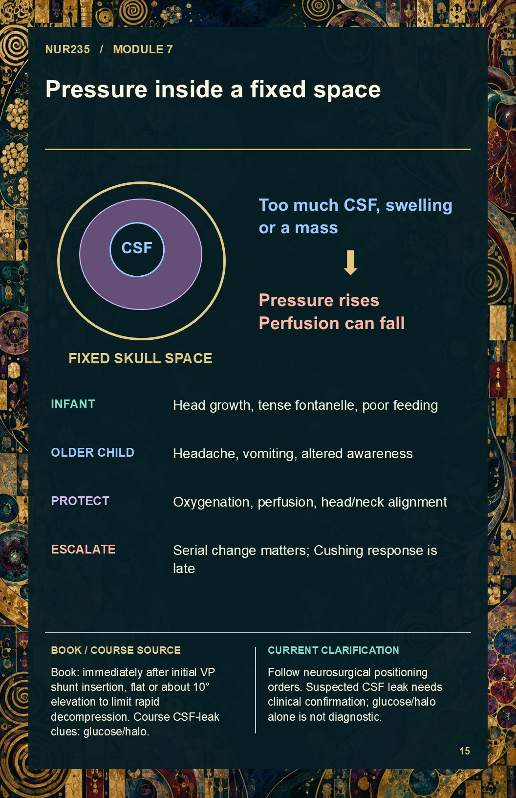
Read slide text and study notes
NUR235 / MODULE 7
Pressure inside a fixed space
15
CSF
FIXED SKULL SPACE
Too much CSF, swelling or a mass
Pressure rises
Perfusion can fall
INFANT
Head growth, tense fontanelle, poor feeding
OLDER CHILD
Headache, vomiting, altered awareness
PROTECT
Oxygenation, perfusion, head/neck alignment
ESCALATE
Serial change matters; Cushing response is late
BOOK / COURSE SOURCE
CURRENT CLARIFICATION
Book: immediately after initial VP shunt insertion, flat or about 10° elevation to limit rapid decompression. Course CSF-leak clues: glucose/halo.
Follow neurosurgical positioning orders. Suspected CSF leak needs clinical confirmation; glucose/halo alone is not diagnostic.
Original study notes and source references
NUR235 content mastery infographic. Original native diagram by Codex. No Claude-created graphics.
High-level overview. The user-supplied module content reviews and textbook anchor the content. Book/course statements and current clarifications remain separate. Full prior wording is preserved below for study reference.
Some neurologic and musculoskeletal chapters are missing from the provided book extract. Available course sources and identified primary references supplement these gaps.
Neurologic emergencies
User module reviews, NUR235
["seizure", "meningitis", {"file": "work/module-reviews/Maternal and Child Textbook.txt", "chapter": 52, "chapter_title": "Nursing Care of a Family When a Child Has an Unintentional Injury", "lines": [69095, 69379], "topic": "Head injury assessment and care"}]
{"seizure": {"title": "RCH: Seizures, acute management", "url": "https://www.rch.org.au/afebrile_seizures/"}, "meningitis": {"title": "RCH: Meningitis and encephalitis", "url": "https://www.rch.org.au/clinicalguide/guideline_index/Meningitis_encephalitis/"}, "febrile": {"title": "RCH: Febrile seizure", "url": "https://www.rch.org.au/clinicalguide/guideline_index/Febrile_seizure/"}, "cp": {"title": "NIH: Cerebral palsy", "url": "https://health.nih.gov/health-topics-a-z/cerebral-palsy"}, "adhd": {"title": "CDC: ADHD in children", "url": "https://www.cdc.gov/adhd/about/"}, "reye": {"title": "NHS: Reye syndrome", "url": "https://www.nhs.uk/conditions/reyes-syndrome/"}, "compartment": {"title": "AAOS: Compartment syndrome", "url": "https://orthoinfo.aaos.org/en/diseases--conditions/compartment-syndrome/"}, "scfe": {"title": "RCH: Slipped upper femoral epiphysis", "url": "https://www.rch.org.au/clinicalguide/guideline_index/fractures/Slipped_upper_femoral_epiphysis_SUFE_-_Emergency_Department/"}, "osteomyelitis": {"title": "RCH: Bone and joint infection", "url": "https://www.rch.org.au/clinicalguide/guideline_index/Bone_and_joint_infection/"}, "jia": {"title": "NIAMS: Juvenile idiopathic arthritis", "url": "https://www.niams.nih.gov/health-topics/juvenile-arthritis"}, "dka": {"title": "RCH: Diabetic ketoacidosis", "url": "https://www.rch.org.au/clinicalguide/guideline_index/Diabetic_ketoacidosis/"}, "hypoglycemia": {"title": "ISPAD 2022: Hypoglycemia in children and adolescents with diabetes", "url": "https://pmc.ncbi.nlm.nih.gov/articles/PMC10107518/"}, "dm_diagnosis": {"title": "ADA: Diabetes diagnosis", "url": "https://diabetes.org/about-diabetes/diagnosis"}, "hypothyroid": {"title": "AAP 2023: Congenital hypothyroidism screening and management", "url": "https://publications.aap.org/pediatrics/article/doi/10.1542/peds.2022-060419/190311/Congenital-Hypothyroidism-Screening-and-Management"}, "graves": {"title": "American Thyroid Association: Hyperthyroidism in children and adolescents", "url": "https://www.thyroid.org/hyperthyroidism-children-adolescents/"}, "graves_guideline": {"title": "European Thyroid Association 2022 pediatric Graves guideline", "url": "https://pmc.ncbi.nlm.nih.gov/articles/PMC9142815/"}, "galactosemia": {"title": "HRSA: Classic galactosemia", "url": "https://newbornscreening.hrsa.gov/conditions/classic-galactosemia"}, "intussusception": {"title": "RCH: Intussusception", "url": "https://www.rch.org.au/clinicalguide/guideline_index/Intussusception/"}, "pylorus": {"title": "RCH: Pyloric stenosis", "url": "https://www.rch.org.au/clinicalguide/guideline_index/Pyloric_Stenosis/"}, "celiac_diagnosis": {"title": "NIDDK: Celiac diagnosis", "url": "https://www.niddk.nih.gov/health-information/digestive-diseases/celiac-disease/diagnosis"}, "celiac_diet": {"title": "NIDDK: Celiac diet", "url": "https://www.niddk.nih.gov/health-information/digestive-diseases/celiac-disease/eating-diet-nutrition"}, "reflux_thickener": {"title": "AAP: Oatmeal as an alternative thickener", "url": "https://www.healthychildren.org/English/health-issues/conditions/abdominal/Pages/Oatmeal-The-Safer-Alternative-Need-Thicker-Food.aspx"}, "reflux_sleep": {"title": "AAP: Safe sleep with reflux", "url": "https://www.healthychildren.org/English/tips-tools/ask-the-pediatrician/Pages/What-is-the-safest-sleep-solution-for-my-baby-with-reflux.aspx"}, "hyperkalemia": {"title": "RCH: Hyperkalaemia", "url": "https://www.rch.org.au/clinicalguide/guideline_index/Hyperkalaemia/"}, "stec": {"title": "CDC: E. coli treatment", "url": "https://www.cdc.gov/ecoli/treatment/index.html"}, "hus": {"title": "CDC: E. coli clinician guidance and HUS", "url": "https://www.cdc.gov/ecoli/hcp/guidance/index.html"}, "renal_nutrition": {"title": "NIDDK: Nutrition for children with CKD", "url": "https://www.niddk.nih.gov/health-information/kidney-disease/children/helping-child-adapt-life-chronic-kidney-disease/nutrition-chronic-kidney-disease"}, "renal": {"title": "NIDDK: Kidney disease in children", "url": "https://www.niddk.nih.gov/health-information/kidney-disease/children"}, "perthes": {"title": "AAOS: Perthes disease", "url": "https://www.orthoinfo.org/diseases--conditions/perthes-disease"}, "traction": {"title": "RCH: Skin traction nursing guideline", "url": "https://www.rch.org.au/rchcpg/hospital_clinical_guideline_index/Skin_traction/"}, "dmd": {"title": "NINDS: Muscular dystrophy", "url": "https://www.ninds.nih.gov/health-information/disorders/muscular-dystrophy"}}
Increased intracranial pressure: Infant: enlarging head, tense fontanelle at rest, poor feeding, irritability. Older child: headache, vomiting, altered awareness. Cushing response is late. Trend neurologic status, pupils, vital signs and head circumference. Protect oxygenation and perfusion. Align head/neck. Position and fluids follow the condition-specific plan.
Head injury: Loss of consciousness is not required for concussion. Increasing sleepiness, repeated vomiting, unequal pupils or new weakness require urgent evaluation. ABCs and cervical-spine protection when indicated. Serial neurologic checks. Report deterioration rather than attributing it to normal post-injury sleep.
Seizures: Describe onset, awareness, movements and recovery. Focal and generalized seizures differ. Prolonged convulsion or repeated events without recovery is an emergency. Time and protect. Side position when feasible, nothing in mouth, no restraint. Assess breathing/glucose. Prescribed benzodiazepine rescue at 5 minutes or earlier for compromise.
Bacterial meningitis: Fever, headache/neck stiffness in older children. Infants may have poor feeding, temperature instability or lethargy without stiff neck. Petechiae/purpura with illness is urgent. Prompt empiric IV antibiotics. Do not delay for an unsafe/delayed LP. Obtain cultures when feasible, use indicated precautions, monitor sepsis/seizures/ICP.
Reye syndrome: Acute vomiting and encephalopathy after viral illness. Aspirin/salicylate association. Urgent assessment of airway, glucose, liver function and neurologic status. Avoid routine salicylates in children. Specialist-prescribed exceptions require a plan.
Care and teaching
New neurologic change is actionable before late vital-sign changes appear.
Check swallowing and consciousness before oral intake. Monitor hydration, glucose and aspiration risk. Teach seizure timing, rescue-plan use and emergency triggers. Provide written head-injury return precautions.
Recall: A child has a seizure for 6 minutes: what changes now?
CSF flow, congenital conditions and function
[{"file": "work/module-reviews/Maternal and Child Textbook.txt", "chapter": 27, "chapter_title": "Nursing Care of the Child Born With a Physical or Developmental Difference", "lines": [36945, 36965], "topic": "VP shunt family education"}, {"file": "work/module-reviews/Maternal and Child Textbook.txt", "chapter": 27, "chapter_title": "Nursing Care of the Child Born With a Physical or Developmental Difference", "lines": [37147, 37277], "topic": "Neural-tube care"}, "cp", "adhd"]
Hydrocephalus: Excess CSF enlarges ventricles. Impaired flow or absorption may cause rising ICP. Sunset eyes and accelerating head growth are classic infant cues. Image and assess neurologic trends. Neurosurgical treatment may divert CSF. Avoid assuming all enlarged heads have the same cause.
Ventriculoperitoneal shunt: Return of headache, vomiting, drowsiness or poor feeding suggest malfunction. Fever/redness/swelling raise infection concern. Urgent reporting. Do not pump/manipulate the reservoir. Follow surgical positioning orders. Trend wounds, behavior and abdominal symptoms.
Myelomeningocele: Open neural-tube lesion. Motor/sensory and bowel/bladder deficits depend on level. Hydrocephalus may coexist. Protect the sac from drying/pressure with prescribed sterile moist dressing. Prone/side positioning before closure, latex precautions, skin and elimination care.
Cerebral palsy: Permanent motor/posture disorder from a nonprogressive brain disturbance. Functional needs can change. Do not infer cognition from speech or movement. Individual PT/OT/speech, safe feeding and communication. Antispasticity medication/selected procedures support function. Assess aspiration, contractures and caregiver needs.
ADHD: Persistent attention/impulse/activity symptoms impair function across settings. Evaluate sleep, learning and comorbid concerns. Parent training/behavior therapy first in preschool children. Older children often need combined behavioral, school and medication support. Monitor appetite, growth, sleep and BP when prescribed stimulants.
Compare shunt malfunction with infection. Either needs prompt assessment.
Support growth with safe textures/positioning for dysphagia. Prevent constipation. Plan meals around stimulant-related appetite effects. Demonstrate skin checks and prescribed catheterization. Use adaptive communication, school supports and family respite.
Recall: How do you protect an open spinal sac, and what would make you suspect a shunt problem?
Book and current-guidance comparisons
{"topic": "Shunt postoperative positioning", "old": "Ch27 line36933 says flat or only about10 degrees after initial insertion to avoid rapid CSF decompression.", "new": "Keep the textbook-specific postoperative fact distinct from general raised-ICP head-elevation teaching; follow the neurosurgeon’s procedure-specific order.", "sources": [], "evidence": [{"file": "work/module-reviews/Maternal and Child Textbook.txt", "chapter": 27, "chapter_title": "Nursing Care of the Child Born With a Physical or Developmental Difference", "lines": [36929, 36939], "topic": "Postoperative shunt care"}]}
{"topic": "Osteomyelitis antibiotic route", "old": "Site summary says long-course IV antibiotics.", "new": "Current uncomplicated cases may transition to oral therapy after clinical/laboratory improvement. Do not imply every course must remain IV.", "sources": [{"title": "RCH: Bone and joint infection", "url": "https://www.rch.org.au/clinicalguide/guideline_index/Bone_and_joint_infection/"}], "evidence": null}
Position after VP shunt insertion
Book/course wording: Chapter 27 describes keeping the bed flat or elevated only about 10 degrees immediately after initial shunt insertion to avoid rapid decompression.
Current clarification: Immediate postoperative shunt positioning is procedure-specific. Follow the neurosurgical order. It is different from a general head-elevation strategy for increased ICP.
Osteomyelitis antibiotics
Book/course wording: The site summary describes a long course of IV antibiotics.
Current clarification: An uncomplicated infection may transition to oral antibiotics after clinical and laboratory improvement. Route and total duration depend on the organism, response and treatment plan.
Original overview
93 / 254Brain pressure in a limited space
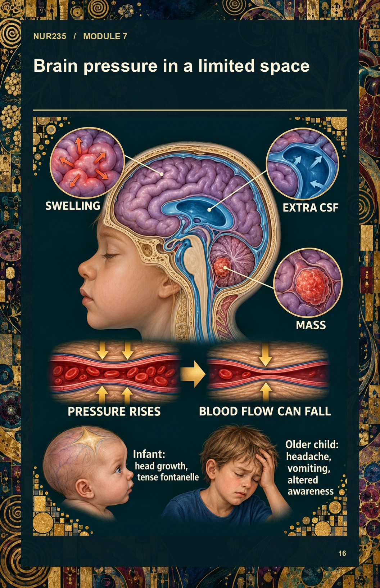
Read slide text and study notes
NUR235 / MODULE 7
Brain pressure in a limited space
16
Original study notes and source references
Brain pressure in a limited space
Schematic overview. Illustrations are not drawn to anatomical scale. Use the adjacent course details and assigned textbook for exam wording.
NUR235 content mastery infographic. Original native diagram by Codex. No Claude-created graphics.
High-level overview. The user-supplied module content reviews and textbook anchor the content. Book/course statements and current clarifications remain separate. Full prior wording is preserved below for study reference.
Some neurologic and musculoskeletal chapters are missing from the provided book extract. Available course sources and identified primary references supplement these gaps.
Neurologic emergencies
User module reviews, NUR235
["seizure", "meningitis", {"file": "work/module-reviews/Maternal and Child Textbook.txt", "chapter": 52, "chapter_title": "Nursing Care of a Family When a Child Has an Unintentional Injury", "lines": [69095, 69379], "topic": "Head injury assessment and care"}]
{"seizure": {"title": "RCH: Seizures, acute management", "url": "https://www.rch.org.au/afebrile_seizures/"}, "meningitis": {"title": "RCH: Meningitis and encephalitis", "url": "https://www.rch.org.au/clinicalguide/guideline_index/Meningitis_encephalitis/"}, "febrile": {"title": "RCH: Febrile seizure", "url": "https://www.rch.org.au/clinicalguide/guideline_index/Febrile_seizure/"}, "cp": {"title": "NIH: Cerebral palsy", "url": "https://health.nih.gov/health-topics-a-z/cerebral-palsy"}, "adhd": {"title": "CDC: ADHD in children", "url": "https://www.cdc.gov/adhd/about/"}, "reye": {"title": "NHS: Reye syndrome", "url": "https://www.nhs.uk/conditions/reyes-syndrome/"}, "compartment": {"title": "AAOS: Compartment syndrome", "url": "https://orthoinfo.aaos.org/en/diseases--conditions/compartment-syndrome/"}, "scfe": {"title": "RCH: Slipped upper femoral epiphysis", "url": "https://www.rch.org.au/clinicalguide/guideline_index/fractures/Slipped_upper_femoral_epiphysis_SUFE_-_Emergency_Department/"}, "osteomyelitis": {"title": "RCH: Bone and joint infection", "url": "https://www.rch.org.au/clinicalguide/guideline_index/Bone_and_joint_infection/"}, "jia": {"title": "NIAMS: Juvenile idiopathic arthritis", "url": "https://www.niams.nih.gov/health-topics/juvenile-arthritis"}, "dka": {"title": "RCH: Diabetic ketoacidosis", "url": "https://www.rch.org.au/clinicalguide/guideline_index/Diabetic_ketoacidosis/"}, "hypoglycemia": {"title": "ISPAD 2022: Hypoglycemia in children and adolescents with diabetes", "url": "https://pmc.ncbi.nlm.nih.gov/articles/PMC10107518/"}, "dm_diagnosis": {"title": "ADA: Diabetes diagnosis", "url": "https://diabetes.org/about-diabetes/diagnosis"}, "hypothyroid": {"title": "AAP 2023: Congenital hypothyroidism screening and management", "url": "https://publications.aap.org/pediatrics/article/doi/10.1542/peds.2022-060419/190311/Congenital-Hypothyroidism-Screening-and-Management"}, "graves": {"title": "American Thyroid Association: Hyperthyroidism in children and adolescents", "url": "https://www.thyroid.org/hyperthyroidism-children-adolescents/"}, "graves_guideline": {"title": "European Thyroid Association 2022 pediatric Graves guideline", "url": "https://pmc.ncbi.nlm.nih.gov/articles/PMC9142815/"}, "galactosemia": {"title": "HRSA: Classic galactosemia", "url": "https://newbornscreening.hrsa.gov/conditions/classic-galactosemia"}, "intussusception": {"title": "RCH: Intussusception", "url": "https://www.rch.org.au/clinicalguide/guideline_index/Intussusception/"}, "pylorus": {"title": "RCH: Pyloric stenosis", "url": "https://www.rch.org.au/clinicalguide/guideline_index/Pyloric_Stenosis/"}, "celiac_diagnosis": {"title": "NIDDK: Celiac diagnosis", "url": "https://www.niddk.nih.gov/health-information/digestive-diseases/celiac-disease/diagnosis"}, "celiac_diet": {"title": "NIDDK: Celiac diet", "url": "https://www.niddk.nih.gov/health-information/digestive-diseases/celiac-disease/eating-diet-nutrition"}, "reflux_thickener": {"title": "AAP: Oatmeal as an alternative thickener", "url": "https://www.healthychildren.org/English/health-issues/conditions/abdominal/Pages/Oatmeal-The-Safer-Alternative-Need-Thicker-Food.aspx"}, "reflux_sleep": {"title": "AAP: Safe sleep with reflux", "url": "https://www.healthychildren.org/English/tips-tools/ask-the-pediatrician/Pages/What-is-the-safest-sleep-solution-for-my-baby-with-reflux.aspx"}, "hyperkalemia": {"title": "RCH: Hyperkalaemia", "url": "https://www.rch.org.au/clinicalguide/guideline_index/Hyperkalaemia/"}, "stec": {"title": "CDC: E. coli treatment", "url": "https://www.cdc.gov/ecoli/treatment/index.html"}, "hus": {"title": "CDC: E. coli clinician guidance and HUS", "url": "https://www.cdc.gov/ecoli/hcp/guidance/index.html"}, "renal_nutrition": {"title": "NIDDK: Nutrition for children with CKD", "url": "https://www.niddk.nih.gov/health-information/kidney-disease/children/helping-child-adapt-life-chronic-kidney-disease/nutrition-chronic-kidney-disease"}, "renal": {"title": "NIDDK: Kidney disease in children", "url": "https://www.niddk.nih.gov/health-information/kidney-disease/children"}, "perthes": {"title": "AAOS: Perthes disease", "url": "https://www.orthoinfo.org/diseases--conditions/perthes-disease"}, "traction": {"title": "RCH: Skin traction nursing guideline", "url": "https://www.rch.org.au/rchcpg/hospital_clinical_guideline_index/Skin_traction/"}, "dmd": {"title": "NINDS: Muscular dystrophy", "url": "https://www.ninds.nih.gov/health-information/disorders/muscular-dystrophy"}}
Increased intracranial pressure: Infant: enlarging head, tense fontanelle at rest, poor feeding, irritability. Older child: headache, vomiting, altered awareness. Cushing response is late. Trend neurologic status, pupils, vital signs and head circumference. Protect oxygenation and perfusion. Align head/neck. Position and fluids follow the condition-specific plan.
Head injury: Loss of consciousness is not required for concussion. Increasing sleepiness, repeated vomiting, unequal pupils or new weakness require urgent evaluation. ABCs and cervical-spine protection when indicated. Serial neurologic checks. Report deterioration rather than attributing it to normal post-injury sleep.
Seizures: Describe onset, awareness, movements and recovery. Focal and generalized seizures differ. Prolonged convulsion or repeated events without recovery is an emergency. Time and protect. Side position when feasible, nothing in mouth, no restraint. Assess breathing/glucose. Prescribed benzodiazepine rescue at 5 minutes or earlier for compromise.
Bacterial meningitis: Fever, headache/neck stiffness in older children. Infants may have poor feeding, temperature instability or lethargy without stiff neck. Petechiae/purpura with illness is urgent. Prompt empiric IV antibiotics. Do not delay for an unsafe/delayed LP. Obtain cultures when feasible, use indicated precautions, monitor sepsis/seizures/ICP.
Reye syndrome: Acute vomiting and encephalopathy after viral illness. Aspirin/salicylate association. Urgent assessment of airway, glucose, liver function and neurologic status. Avoid routine salicylates in children. Specialist-prescribed exceptions require a plan.
Care and teaching
New neurologic change is actionable before late vital-sign changes appear.
Check swallowing and consciousness before oral intake. Monitor hydration, glucose and aspiration risk. Teach seizure timing, rescue-plan use and emergency triggers. Provide written head-injury return precautions.
Recall: A child has a seizure for 6 minutes: what changes now?
CSF flow, congenital conditions and function
[{"file": "work/module-reviews/Maternal and Child Textbook.txt", "chapter": 27, "chapter_title": "Nursing Care of the Child Born With a Physical or Developmental Difference", "lines": [36945, 36965], "topic": "VP shunt family education"}, {"file": "work/module-reviews/Maternal and Child Textbook.txt", "chapter": 27, "chapter_title": "Nursing Care of the Child Born With a Physical or Developmental Difference", "lines": [37147, 37277], "topic": "Neural-tube care"}, "cp", "adhd"]
Hydrocephalus: Excess CSF enlarges ventricles. Impaired flow or absorption may cause rising ICP. Sunset eyes and accelerating head growth are classic infant cues. Image and assess neurologic trends. Neurosurgical treatment may divert CSF. Avoid assuming all enlarged heads have the same cause.
Ventriculoperitoneal shunt: Return of headache, vomiting, drowsiness or poor feeding suggest malfunction. Fever/redness/swelling raise infection concern. Urgent reporting. Do not pump/manipulate the reservoir. Follow surgical positioning orders. Trend wounds, behavior and abdominal symptoms.
Myelomeningocele: Open neural-tube lesion. Motor/sensory and bowel/bladder deficits depend on level. Hydrocephalus may coexist. Protect the sac from drying/pressure with prescribed sterile moist dressing. Prone/side positioning before closure, latex precautions, skin and elimination care.
Cerebral palsy: Permanent motor/posture disorder from a nonprogressive brain disturbance. Functional needs can change. Do not infer cognition from speech or movement. Individual PT/OT/speech, safe feeding and communication. Antispasticity medication/selected procedures support function. Assess aspiration, contractures and caregiver needs.
ADHD: Persistent attention/impulse/activity symptoms impair function across settings. Evaluate sleep, learning and comorbid concerns. Parent training/behavior therapy first in preschool children. Older children often need combined behavioral, school and medication support. Monitor appetite, growth, sleep and BP when prescribed stimulants.
Compare shunt malfunction with infection. Either needs prompt assessment.
Support growth with safe textures/positioning for dysphagia. Prevent constipation. Plan meals around stimulant-related appetite effects. Demonstrate skin checks and prescribed catheterization. Use adaptive communication, school supports and family respite.
Recall: How do you protect an open spinal sac, and what would make you suspect a shunt problem?
Book and current-guidance comparisons
{"topic": "Shunt postoperative positioning", "old": "Ch27 line36933 says flat or only about10 degrees after initial insertion to avoid rapid CSF decompression.", "new": "Keep the textbook-specific postoperative fact distinct from general raised-ICP head-elevation teaching; follow the neurosurgeon’s procedure-specific order.", "sources": [], "evidence": [{"file": "work/module-reviews/Maternal and Child Textbook.txt", "chapter": 27, "chapter_title": "Nursing Care of the Child Born With a Physical or Developmental Difference", "lines": [36929, 36939], "topic": "Postoperative shunt care"}]}
{"topic": "Osteomyelitis antibiotic route", "old": "Site summary says long-course IV antibiotics.", "new": "Current uncomplicated cases may transition to oral therapy after clinical/laboratory improvement. Do not imply every course must remain IV.", "sources": [{"title": "RCH: Bone and joint infection", "url": "https://www.rch.org.au/clinicalguide/guideline_index/Bone_and_joint_infection/"}], "evidence": null}
Position after VP shunt insertion
Book/course wording: Chapter 27 describes keeping the bed flat or elevated only about 10 degrees immediately after initial shunt insertion to avoid rapid decompression.
Current clarification: Immediate postoperative shunt positioning is procedure-specific. Follow the neurosurgical order. It is different from a general head-elevation strategy for increased ICP.
Osteomyelitis antibiotics
Book/course wording: The site summary describes a long course of IV antibiotics.
Current clarification: An uncomplicated infection may transition to oral antibiotics after clinical and laboratory improvement. Route and total duration depend on the organism, response and treatment plan.
NUR235 content mastery infographic. Original native diagram by Codex. No Claude-created graphics.
High-level overview. The user-supplied module content reviews and textbook anchor the content. Book/course statements and current clarifications remain separate. Full prior wording is preserved below for study reference.
Some neurologic and musculoskeletal chapters are missing from the provided book extract. Available course sources and identified primary references supplement these gaps.
Neurologic emergencies
User module reviews, NUR235
["seizure", "meningitis", {"file": "work/module-reviews/Maternal and Child Textbook.txt", "chapter": 52, "chapter_title": "Nursing Care of a Family When a Child Has an Unintentional Injury", "lines": [69095, 69379], "topic": "Head injury assessment and care"}]
{"seizure": {"title": "RCH: Seizures, acute management", "url": "https://www.rch.org.au/afebrile_seizures/"}, "meningitis": {"title": "RCH: Meningitis and encephalitis", "url": "https://www.rch.org.au/clinicalguide/guideline_index/Meningitis_encephalitis/"}, "febrile": {"title": "RCH: Febrile seizure", "url": "https://www.rch.org.au/clinicalguide/guideline_index/Febrile_seizure/"}, "cp": {"title": "NIH: Cerebral palsy", "url": "https://health.nih.gov/health-topics-a-z/cerebral-palsy"}, "adhd": {"title": "CDC: ADHD in children", "url": "https://www.cdc.gov/adhd/about/"}, "reye": {"title": "NHS: Reye syndrome", "url": "https://www.nhs.uk/conditions/reyes-syndrome/"}, "compartment": {"title": "AAOS: Compartment syndrome", "url": "https://orthoinfo.aaos.org/en/diseases--conditions/compartment-syndrome/"}, "scfe": {"title": "RCH: Slipped upper femoral epiphysis", "url": "https://www.rch.org.au/clinicalguide/guideline_index/fractures/Slipped_upper_femoral_epiphysis_SUFE_-_Emergency_Department/"}, "osteomyelitis": {"title": "RCH: Bone and joint infection", "url": "https://www.rch.org.au/clinicalguide/guideline_index/Bone_and_joint_infection/"}, "jia": {"title": "NIAMS: Juvenile idiopathic arthritis", "url": "https://www.niams.nih.gov/health-topics/juvenile-arthritis"}, "dka": {"title": "RCH: Diabetic ketoacidosis", "url": "https://www.rch.org.au/clinicalguide/guideline_index/Diabetic_ketoacidosis/"}, "hypoglycemia": {"title": "ISPAD 2022: Hypoglycemia in children and adolescents with diabetes", "url": "https://pmc.ncbi.nlm.nih.gov/articles/PMC10107518/"}, "dm_diagnosis": {"title": "ADA: Diabetes diagnosis", "url": "https://diabetes.org/about-diabetes/diagnosis"}, "hypothyroid": {"title": "AAP 2023: Congenital hypothyroidism screening and management", "url": "https://publications.aap.org/pediatrics/article/doi/10.1542/peds.2022-060419/190311/Congenital-Hypothyroidism-Screening-and-Management"}, "graves": {"title": "American Thyroid Association: Hyperthyroidism in children and adolescents", "url": "https://www.thyroid.org/hyperthyroidism-children-adolescents/"}, "graves_guideline": {"title": "European Thyroid Association 2022 pediatric Graves guideline", "url": "https://pmc.ncbi.nlm.nih.gov/articles/PMC9142815/"}, "galactosemia": {"title": "HRSA: Classic galactosemia", "url": "https://newbornscreening.hrsa.gov/conditions/classic-galactosemia"}, "intussusception": {"title": "RCH: Intussusception", "url": "https://www.rch.org.au/clinicalguide/guideline_index/Intussusception/"}, "pylorus": {"title": "RCH: Pyloric stenosis", "url": "https://www.rch.org.au/clinicalguide/guideline_index/Pyloric_Stenosis/"}, "celiac_diagnosis": {"title": "NIDDK: Celiac diagnosis", "url": "https://www.niddk.nih.gov/health-information/digestive-diseases/celiac-disease/diagnosis"}, "celiac_diet": {"title": "NIDDK: Celiac diet", "url": "https://www.niddk.nih.gov/health-information/digestive-diseases/celiac-disease/eating-diet-nutrition"}, "reflux_thickener": {"title": "AAP: Oatmeal as an alternative thickener", "url": "https://www.healthychildren.org/English/health-issues/conditions/abdominal/Pages/Oatmeal-The-Safer-Alternative-Need-Thicker-Food.aspx"}, "reflux_sleep": {"title": "AAP: Safe sleep with reflux", "url": "https://www.healthychildren.org/English/tips-tools/ask-the-pediatrician/Pages/What-is-the-safest-sleep-solution-for-my-baby-with-reflux.aspx"}, "hyperkalemia": {"title": "RCH: Hyperkalaemia", "url": "https://www.rch.org.au/clinicalguide/guideline_index/Hyperkalaemia/"}, "stec": {"title": "CDC: E. coli treatment", "url": "https://www.cdc.gov/ecoli/treatment/index.html"}, "hus": {"title": "CDC: E. coli clinician guidance and HUS", "url": "https://www.cdc.gov/ecoli/hcp/guidance/index.html"}, "renal_nutrition": {"title": "NIDDK: Nutrition for children with CKD", "url": "https://www.niddk.nih.gov/health-information/kidney-disease/children/helping-child-adapt-life-chronic-kidney-disease/nutrition-chronic-kidney-disease"}, "renal": {"title": "NIDDK: Kidney disease in children", "url": "https://www.niddk.nih.gov/health-information/kidney-disease/children"}, "perthes": {"title": "AAOS: Perthes disease", "url": "https://www.orthoinfo.org/diseases--conditions/perthes-disease"}, "traction": {"title": "RCH: Skin traction nursing guideline", "url": "https://www.rch.org.au/rchcpg/hospital_clinical_guideline_index/Skin_traction/"}, "dmd": {"title": "NINDS: Muscular dystrophy", "url": "https://www.ninds.nih.gov/health-information/disorders/muscular-dystrophy"}}
Increased intracranial pressure: Infant: enlarging head, tense fontanelle at rest, poor feeding, irritability. Older child: headache, vomiting, altered awareness. Cushing response is late. Trend neurologic status, pupils, vital signs and head circumference. Protect oxygenation and perfusion. Align head/neck. Position and fluids follow the condition-specific plan.
Head injury: Loss of consciousness is not required for concussion. Increasing sleepiness, repeated vomiting, unequal pupils or new weakness require urgent evaluation. ABCs and cervical-spine protection when indicated. Serial neurologic checks. Report deterioration rather than attributing it to normal post-injury sleep.
Seizures: Describe onset, awareness, movements and recovery. Focal and generalized seizures differ. Prolonged convulsion or repeated events without recovery is an emergency. Time and protect. Side position when feasible, nothing in mouth, no restraint. Assess breathing/glucose. Prescribed benzodiazepine rescue at 5 minutes or earlier for compromise.
Bacterial meningitis: Fever, headache/neck stiffness in older children. Infants may have poor feeding, temperature instability or lethargy without stiff neck. Petechiae/purpura with illness is urgent. Prompt empiric IV antibiotics. Do not delay for an unsafe/delayed LP. Obtain cultures when feasible, use indicated precautions, monitor sepsis/seizures/ICP.
Reye syndrome: Acute vomiting and encephalopathy after viral illness. Aspirin/salicylate association. Urgent assessment of airway, glucose, liver function and neurologic status. Avoid routine salicylates in children. Specialist-prescribed exceptions require a plan.
Care and teaching
New neurologic change is actionable before late vital-sign changes appear.
Check swallowing and consciousness before oral intake. Monitor hydration, glucose and aspiration risk. Teach seizure timing, rescue-plan use and emergency triggers. Provide written head-injury return precautions.
Recall: A child has a seizure for 6 minutes: what changes now?
Book and current-guidance comparisons
{"topic": "Epinephrine", "old": "Thighorunaffectedarm;universal0.3mgmaximum", "new": "Overview says immediateIMepinephrine; add dose only with a current age/weight-specific protocol and preferredanterolateralthigh route.", "sources": [], "evidence": [56039, 56047]}
{"topic": "Febrile seizures", "old": "Site repeats speed of fever rise as the trigger and suggests fever management as prevention. This was not verified in the missing neuro textbook chapter.", "new": "Retain as an identified course/site statement if required; current teaching: fever-associated seizures are usually benign, antipyretics improve comfort but do not reliably prevent recurrence. Treat a prolonged seizure at 5 minutes.", "sources": [{"title": "RCH: Febrile seizure", "url": "https://www.rch.org.au/clinicalguide/guideline_index/Febrile_seizure/"}, {"title": "RCH: Seizures, acute management", "url": "https://www.rch.org.au/afebrile_seizures/"}], "evidence": null}
Epinephrine for anaphylaxis
Book/course wording: The source allows the thigh or unaffected arm and gives a universal 0.3 mg maximum.
Current clarification: Give IM epinephrine promptly using the prescribed age/weight-appropriate product or protocol. The preferred site is the anterolateral thigh. One fixed maximum does not fit every child.
Febrile seizures
Book/course wording: Site wording emphasizes the speed of the temperature rise and fever management as prevention. This statement was not verified in the missing neurologic textbook chapter.
Current clarification: Most febrile seizures are benign. Antipyretics improve comfort but do not reliably prevent recurrence. A convulsive seizure lasting 5 minutes requires emergency treatment.
NUR235 content mastery infographic. Original native diagram by Codex. No Claude-created graphics.
High-level overview. The user-supplied module content reviews and textbook anchor the content. Book/course statements and current clarifications remain separate. Full prior wording is preserved below for study reference.
Some neurologic and musculoskeletal chapters are missing from the provided book extract. Available course sources and identified primary references supplement these gaps.
CSF flow, congenital conditions and function
User module reviews, NUR235
[{"file": "work/module-reviews/Maternal and Child Textbook.txt", "chapter": 27, "chapter_title": "Nursing Care of the Child Born With a Physical or Developmental Difference", "lines": [36945, 36965], "topic": "VP shunt family education"}, {"file": "work/module-reviews/Maternal and Child Textbook.txt", "chapter": 27, "chapter_title": "Nursing Care of the Child Born With a Physical or Developmental Difference", "lines": [37147, 37277], "topic": "Neural-tube care"}, "cp", "adhd"]
{"seizure": {"title": "RCH: Seizures, acute management", "url": "https://www.rch.org.au/afebrile_seizures/"}, "meningitis": {"title": "RCH: Meningitis and encephalitis", "url": "https://www.rch.org.au/clinicalguide/guideline_index/Meningitis_encephalitis/"}, "febrile": {"title": "RCH: Febrile seizure", "url": "https://www.rch.org.au/clinicalguide/guideline_index/Febrile_seizure/"}, "cp": {"title": "NIH: Cerebral palsy", "url": "https://health.nih.gov/health-topics-a-z/cerebral-palsy"}, "adhd": {"title": "CDC: ADHD in children", "url": "https://www.cdc.gov/adhd/about/"}, "reye": {"title": "NHS: Reye syndrome", "url": "https://www.nhs.uk/conditions/reyes-syndrome/"}, "compartment": {"title": "AAOS: Compartment syndrome", "url": "https://orthoinfo.aaos.org/en/diseases--conditions/compartment-syndrome/"}, "scfe": {"title": "RCH: Slipped upper femoral epiphysis", "url": "https://www.rch.org.au/clinicalguide/guideline_index/fractures/Slipped_upper_femoral_epiphysis_SUFE_-_Emergency_Department/"}, "osteomyelitis": {"title": "RCH: Bone and joint infection", "url": "https://www.rch.org.au/clinicalguide/guideline_index/Bone_and_joint_infection/"}, "jia": {"title": "NIAMS: Juvenile idiopathic arthritis", "url": "https://www.niams.nih.gov/health-topics/juvenile-arthritis"}, "dka": {"title": "RCH: Diabetic ketoacidosis", "url": "https://www.rch.org.au/clinicalguide/guideline_index/Diabetic_ketoacidosis/"}, "hypoglycemia": {"title": "ISPAD 2022: Hypoglycemia in children and adolescents with diabetes", "url": "https://pmc.ncbi.nlm.nih.gov/articles/PMC10107518/"}, "dm_diagnosis": {"title": "ADA: Diabetes diagnosis", "url": "https://diabetes.org/about-diabetes/diagnosis"}, "hypothyroid": {"title": "AAP 2023: Congenital hypothyroidism screening and management", "url": "https://publications.aap.org/pediatrics/article/doi/10.1542/peds.2022-060419/190311/Congenital-Hypothyroidism-Screening-and-Management"}, "graves": {"title": "American Thyroid Association: Hyperthyroidism in children and adolescents", "url": "https://www.thyroid.org/hyperthyroidism-children-adolescents/"}, "graves_guideline": {"title": "European Thyroid Association 2022 pediatric Graves guideline", "url": "https://pmc.ncbi.nlm.nih.gov/articles/PMC9142815/"}, "galactosemia": {"title": "HRSA: Classic galactosemia", "url": "https://newbornscreening.hrsa.gov/conditions/classic-galactosemia"}, "intussusception": {"title": "RCH: Intussusception", "url": "https://www.rch.org.au/clinicalguide/guideline_index/Intussusception/"}, "pylorus": {"title": "RCH: Pyloric stenosis", "url": "https://www.rch.org.au/clinicalguide/guideline_index/Pyloric_Stenosis/"}, "celiac_diagnosis": {"title": "NIDDK: Celiac diagnosis", "url": "https://www.niddk.nih.gov/health-information/digestive-diseases/celiac-disease/diagnosis"}, "celiac_diet": {"title": "NIDDK: Celiac diet", "url": "https://www.niddk.nih.gov/health-information/digestive-diseases/celiac-disease/eating-diet-nutrition"}, "reflux_thickener": {"title": "AAP: Oatmeal as an alternative thickener", "url": "https://www.healthychildren.org/English/health-issues/conditions/abdominal/Pages/Oatmeal-The-Safer-Alternative-Need-Thicker-Food.aspx"}, "reflux_sleep": {"title": "AAP: Safe sleep with reflux", "url": "https://www.healthychildren.org/English/tips-tools/ask-the-pediatrician/Pages/What-is-the-safest-sleep-solution-for-my-baby-with-reflux.aspx"}, "hyperkalemia": {"title": "RCH: Hyperkalaemia", "url": "https://www.rch.org.au/clinicalguide/guideline_index/Hyperkalaemia/"}, "stec": {"title": "CDC: E. coli treatment", "url": "https://www.cdc.gov/ecoli/treatment/index.html"}, "hus": {"title": "CDC: E. coli clinician guidance and HUS", "url": "https://www.cdc.gov/ecoli/hcp/guidance/index.html"}, "renal_nutrition": {"title": "NIDDK: Nutrition for children with CKD", "url": "https://www.niddk.nih.gov/health-information/kidney-disease/children/helping-child-adapt-life-chronic-kidney-disease/nutrition-chronic-kidney-disease"}, "renal": {"title": "NIDDK: Kidney disease in children", "url": "https://www.niddk.nih.gov/health-information/kidney-disease/children"}, "perthes": {"title": "AAOS: Perthes disease", "url": "https://www.orthoinfo.org/diseases--conditions/perthes-disease"}, "traction": {"title": "RCH: Skin traction nursing guideline", "url": "https://www.rch.org.au/rchcpg/hospital_clinical_guideline_index/Skin_traction/"}, "dmd": {"title": "NINDS: Muscular dystrophy", "url": "https://www.ninds.nih.gov/health-information/disorders/muscular-dystrophy"}}
Hydrocephalus: Excess CSF enlarges ventricles. Impaired flow or absorption may cause rising ICP. Sunset eyes and accelerating head growth are classic infant cues. Image and assess neurologic trends. Neurosurgical treatment may divert CSF. Avoid assuming all enlarged heads have the same cause.
Ventriculoperitoneal shunt: Return of headache, vomiting, drowsiness or poor feeding suggest malfunction. Fever/redness/swelling raise infection concern. Urgent reporting. Do not pump/manipulate the reservoir. Follow surgical positioning orders. Trend wounds, behavior and abdominal symptoms.
Myelomeningocele: Open neural-tube lesion. Motor/sensory and bowel/bladder deficits depend on level. Hydrocephalus may coexist. Protect the sac from drying/pressure with prescribed sterile moist dressing. Prone/side positioning before closure, latex precautions, skin and elimination care.
Cerebral palsy: Permanent motor/posture disorder from a nonprogressive brain disturbance. Functional needs can change. Do not infer cognition from speech or movement. Individual PT/OT/speech, safe feeding and communication. Antispasticity medication/selected procedures support function. Assess aspiration, contractures and caregiver needs.
ADHD: Persistent attention/impulse/activity symptoms impair function across settings. Evaluate sleep, learning and comorbid concerns. Parent training/behavior therapy first in preschool children. Older children often need combined behavioral, school and medication support. Monitor appetite, growth, sleep and BP when prescribed stimulants.
Care and teaching
Compare shunt malfunction with infection. Either needs prompt assessment.
Support growth with safe textures/positioning for dysphagia. Prevent constipation. Plan meals around stimulant-related appetite effects. Demonstrate skin checks and prescribed catheterization. Use adaptive communication, school supports and family respite.
Recall: How do you protect an open spinal sac, and what would make you suspect a shunt problem?
Original overview
94 / 254Time-critical neurologic changes
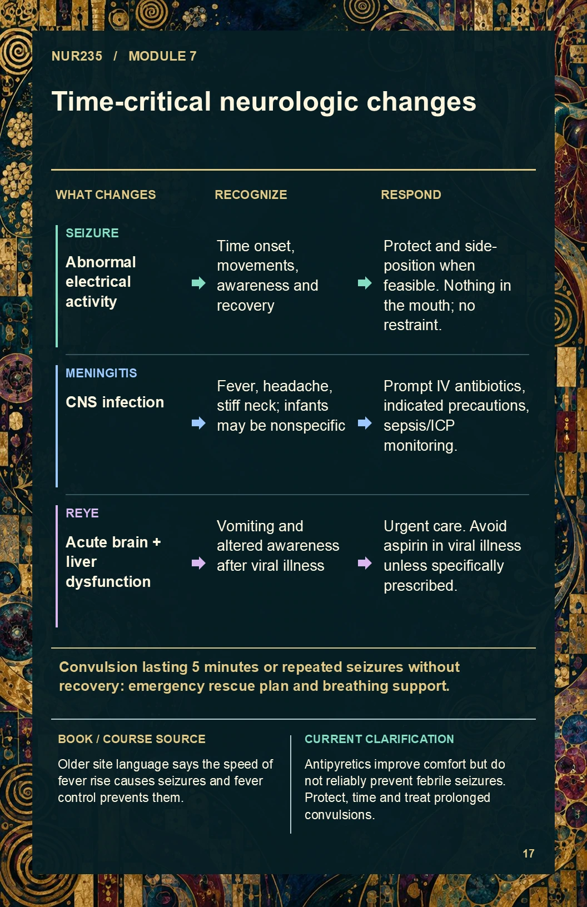
Read slide text and study notes
NUR235 / MODULE 7
Time-critical neurologic changes
17
WHAT CHANGES
RECOGNIZE
RESPOND
SEIZURE
Abnormal electrical activity
Time onset, movements, awareness and recovery
Protect and side-position when feasible. Nothing in the mouth; no restraint.
MENINGITIS
CNS infection
Fever, headache, stiff neck; infants may be nonspecific
Prompt IV antibiotics, indicated precautions, sepsis/ICP monitoring.
REYE
Acute brain + liver dysfunction
Vomiting and altered awareness after viral illness
Urgent care. Avoid aspirin in viral illness unless specifically prescribed.
Convulsion lasting 5 minutes or repeated seizures without recovery: emergency rescue plan and breathing support.
BOOK / COURSE SOURCE
CURRENT CLARIFICATION
Older site language says the speed of fever rise causes seizures and fever control prevents them.
Antipyretics improve comfort but do not reliably prevent febrile seizures. Protect, time and treat prolonged convulsions.
Original study notes and source references
NUR235 content mastery infographic. Original native diagram by Codex. No Claude-created graphics.
High-level overview. The user-supplied module content reviews and textbook anchor the content. Book/course statements and current clarifications remain separate. Full prior wording is preserved below for study reference.
Some neurologic and musculoskeletal chapters are missing from the provided book extract. Available course sources and identified primary references supplement these gaps.
Neurologic emergencies
User module reviews, NUR235
["seizure", "meningitis", {"file": "work/module-reviews/Maternal and Child Textbook.txt", "chapter": 52, "chapter_title": "Nursing Care of a Family When a Child Has an Unintentional Injury", "lines": [69095, 69379], "topic": "Head injury assessment and care"}]
{"seizure": {"title": "RCH: Seizures, acute management", "url": "https://www.rch.org.au/afebrile_seizures/"}, "meningitis": {"title": "RCH: Meningitis and encephalitis", "url": "https://www.rch.org.au/clinicalguide/guideline_index/Meningitis_encephalitis/"}, "febrile": {"title": "RCH: Febrile seizure", "url": "https://www.rch.org.au/clinicalguide/guideline_index/Febrile_seizure/"}, "cp": {"title": "NIH: Cerebral palsy", "url": "https://health.nih.gov/health-topics-a-z/cerebral-palsy"}, "adhd": {"title": "CDC: ADHD in children", "url": "https://www.cdc.gov/adhd/about/"}, "reye": {"title": "NHS: Reye syndrome", "url": "https://www.nhs.uk/conditions/reyes-syndrome/"}, "compartment": {"title": "AAOS: Compartment syndrome", "url": "https://orthoinfo.aaos.org/en/diseases--conditions/compartment-syndrome/"}, "scfe": {"title": "RCH: Slipped upper femoral epiphysis", "url": "https://www.rch.org.au/clinicalguide/guideline_index/fractures/Slipped_upper_femoral_epiphysis_SUFE_-_Emergency_Department/"}, "osteomyelitis": {"title": "RCH: Bone and joint infection", "url": "https://www.rch.org.au/clinicalguide/guideline_index/Bone_and_joint_infection/"}, "jia": {"title": "NIAMS: Juvenile idiopathic arthritis", "url": "https://www.niams.nih.gov/health-topics/juvenile-arthritis"}, "dka": {"title": "RCH: Diabetic ketoacidosis", "url": "https://www.rch.org.au/clinicalguide/guideline_index/Diabetic_ketoacidosis/"}, "hypoglycemia": {"title": "ISPAD 2022: Hypoglycemia in children and adolescents with diabetes", "url": "https://pmc.ncbi.nlm.nih.gov/articles/PMC10107518/"}, "dm_diagnosis": {"title": "ADA: Diabetes diagnosis", "url": "https://diabetes.org/about-diabetes/diagnosis"}, "hypothyroid": {"title": "AAP 2023: Congenital hypothyroidism screening and management", "url": "https://publications.aap.org/pediatrics/article/doi/10.1542/peds.2022-060419/190311/Congenital-Hypothyroidism-Screening-and-Management"}, "graves": {"title": "American Thyroid Association: Hyperthyroidism in children and adolescents", "url": "https://www.thyroid.org/hyperthyroidism-children-adolescents/"}, "graves_guideline": {"title": "European Thyroid Association 2022 pediatric Graves guideline", "url": "https://pmc.ncbi.nlm.nih.gov/articles/PMC9142815/"}, "galactosemia": {"title": "HRSA: Classic galactosemia", "url": "https://newbornscreening.hrsa.gov/conditions/classic-galactosemia"}, "intussusception": {"title": "RCH: Intussusception", "url": "https://www.rch.org.au/clinicalguide/guideline_index/Intussusception/"}, "pylorus": {"title": "RCH: Pyloric stenosis", "url": "https://www.rch.org.au/clinicalguide/guideline_index/Pyloric_Stenosis/"}, "celiac_diagnosis": {"title": "NIDDK: Celiac diagnosis", "url": "https://www.niddk.nih.gov/health-information/digestive-diseases/celiac-disease/diagnosis"}, "celiac_diet": {"title": "NIDDK: Celiac diet", "url": "https://www.niddk.nih.gov/health-information/digestive-diseases/celiac-disease/eating-diet-nutrition"}, "reflux_thickener": {"title": "AAP: Oatmeal as an alternative thickener", "url": "https://www.healthychildren.org/English/health-issues/conditions/abdominal/Pages/Oatmeal-The-Safer-Alternative-Need-Thicker-Food.aspx"}, "reflux_sleep": {"title": "AAP: Safe sleep with reflux", "url": "https://www.healthychildren.org/English/tips-tools/ask-the-pediatrician/Pages/What-is-the-safest-sleep-solution-for-my-baby-with-reflux.aspx"}, "hyperkalemia": {"title": "RCH: Hyperkalaemia", "url": "https://www.rch.org.au/clinicalguide/guideline_index/Hyperkalaemia/"}, "stec": {"title": "CDC: E. coli treatment", "url": "https://www.cdc.gov/ecoli/treatment/index.html"}, "hus": {"title": "CDC: E. coli clinician guidance and HUS", "url": "https://www.cdc.gov/ecoli/hcp/guidance/index.html"}, "renal_nutrition": {"title": "NIDDK: Nutrition for children with CKD", "url": "https://www.niddk.nih.gov/health-information/kidney-disease/children/helping-child-adapt-life-chronic-kidney-disease/nutrition-chronic-kidney-disease"}, "renal": {"title": "NIDDK: Kidney disease in children", "url": "https://www.niddk.nih.gov/health-information/kidney-disease/children"}, "perthes": {"title": "AAOS: Perthes disease", "url": "https://www.orthoinfo.org/diseases--conditions/perthes-disease"}, "traction": {"title": "RCH: Skin traction nursing guideline", "url": "https://www.rch.org.au/rchcpg/hospital_clinical_guideline_index/Skin_traction/"}, "dmd": {"title": "NINDS: Muscular dystrophy", "url": "https://www.ninds.nih.gov/health-information/disorders/muscular-dystrophy"}}
Increased intracranial pressure: Infant: enlarging head, tense fontanelle at rest, poor feeding, irritability. Older child: headache, vomiting, altered awareness. Cushing response is late. Trend neurologic status, pupils, vital signs and head circumference. Protect oxygenation and perfusion. Align head/neck. Position and fluids follow the condition-specific plan.
Head injury: Loss of consciousness is not required for concussion. Increasing sleepiness, repeated vomiting, unequal pupils or new weakness require urgent evaluation. ABCs and cervical-spine protection when indicated. Serial neurologic checks. Report deterioration rather than attributing it to normal post-injury sleep.
Seizures: Describe onset, awareness, movements and recovery. Focal and generalized seizures differ. Prolonged convulsion or repeated events without recovery is an emergency. Time and protect. Side position when feasible, nothing in mouth, no restraint. Assess breathing/glucose. Prescribed benzodiazepine rescue at 5 minutes or earlier for compromise.
Bacterial meningitis: Fever, headache/neck stiffness in older children. Infants may have poor feeding, temperature instability or lethargy without stiff neck. Petechiae/purpura with illness is urgent. Prompt empiric IV antibiotics. Do not delay for an unsafe/delayed LP. Obtain cultures when feasible, use indicated precautions, monitor sepsis/seizures/ICP.
Reye syndrome: Acute vomiting and encephalopathy after viral illness. Aspirin/salicylate association. Urgent assessment of airway, glucose, liver function and neurologic status. Avoid routine salicylates in children. Specialist-prescribed exceptions require a plan.
Care and teaching
New neurologic change is actionable before late vital-sign changes appear.
Check swallowing and consciousness before oral intake. Monitor hydration, glucose and aspiration risk. Teach seizure timing, rescue-plan use and emergency triggers. Provide written head-injury return precautions.
Recall: A child has a seizure for 6 minutes: what changes now?
Book and current-guidance comparisons
{"topic": "Epinephrine", "old": "Thighorunaffectedarm;universal0.3mgmaximum", "new": "Overview says immediateIMepinephrine; add dose only with a current age/weight-specific protocol and preferredanterolateralthigh route.", "sources": [], "evidence": [56039, 56047]}
{"topic": "Febrile seizures", "old": "Site repeats speed of fever rise as the trigger and suggests fever management as prevention. This was not verified in the missing neuro textbook chapter.", "new": "Retain as an identified course/site statement if required; current teaching: fever-associated seizures are usually benign, antipyretics improve comfort but do not reliably prevent recurrence. Treat a prolonged seizure at 5 minutes.", "sources": [{"title": "RCH: Febrile seizure", "url": "https://www.rch.org.au/clinicalguide/guideline_index/Febrile_seizure/"}, {"title": "RCH: Seizures, acute management", "url": "https://www.rch.org.au/afebrile_seizures/"}], "evidence": null}
Epinephrine for anaphylaxis
Book/course wording: The source allows the thigh or unaffected arm and gives a universal 0.3 mg maximum.
Current clarification: Give IM epinephrine promptly using the prescribed age/weight-appropriate product or protocol. The preferred site is the anterolateral thigh. One fixed maximum does not fit every child.
Febrile seizures
Book/course wording: Site wording emphasizes the speed of the temperature rise and fever management as prevention. This statement was not verified in the missing neurologic textbook chapter.
Current clarification: Most febrile seizures are benign. Antipyretics improve comfort but do not reliably prevent recurrence. A convulsive seizure lasting 5 minutes requires emergency treatment.
Original overview
95 / 254Protect structure, support function
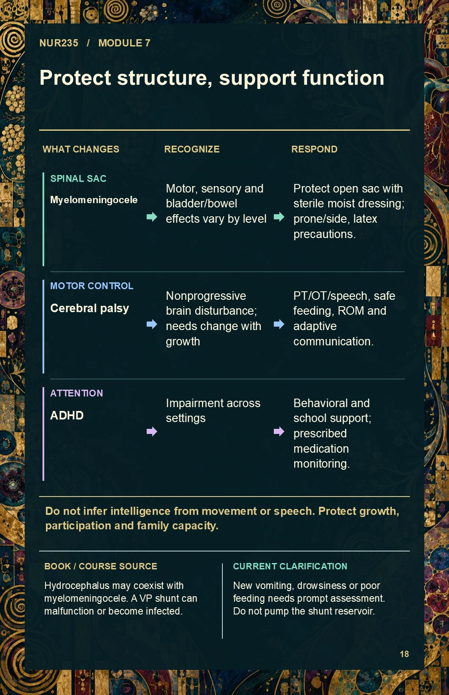
Read slide text and study notes
NUR235 / MODULE 7
Protect structure, support function
18
WHAT CHANGES
RECOGNIZE
RESPOND
SPINAL SAC
Myelomeningocele
Motor, sensory and bladder/bowel effects vary by level
Protect open sac with sterile moist dressing; prone/side, latex precautions.
MOTOR CONTROL
Cerebral palsy
Nonprogressive brain disturbance; needs change with growth
PT/OT/speech, safe feeding, ROM and adaptive communication.
ATTENTION
ADHD
Impairment across settings
Behavioral and school support; prescribed medication monitoring.
Do not infer intelligence from movement or speech. Protect growth, participation and family capacity.
BOOK / COURSE SOURCE
CURRENT CLARIFICATION
Hydrocephalus may coexist with myelomeningocele. A VP shunt can malfunction or become infected.
New vomiting, drowsiness or poor feeding needs prompt assessment. Do not pump the shunt reservoir.
Original study notes and source references
NUR235 content mastery infographic. Original native diagram by Codex. No Claude-created graphics.
High-level overview. The user-supplied module content reviews and textbook anchor the content. Book/course statements and current clarifications remain separate. Full prior wording is preserved below for study reference.
Some neurologic and musculoskeletal chapters are missing from the provided book extract. Available course sources and identified primary references supplement these gaps.
CSF flow, congenital conditions and function
User module reviews, NUR235
[{"file": "work/module-reviews/Maternal and Child Textbook.txt", "chapter": 27, "chapter_title": "Nursing Care of the Child Born With a Physical or Developmental Difference", "lines": [36945, 36965], "topic": "VP shunt family education"}, {"file": "work/module-reviews/Maternal and Child Textbook.txt", "chapter": 27, "chapter_title": "Nursing Care of the Child Born With a Physical or Developmental Difference", "lines": [37147, 37277], "topic": "Neural-tube care"}, "cp", "adhd"]
{"seizure": {"title": "RCH: Seizures, acute management", "url": "https://www.rch.org.au/afebrile_seizures/"}, "meningitis": {"title": "RCH: Meningitis and encephalitis", "url": "https://www.rch.org.au/clinicalguide/guideline_index/Meningitis_encephalitis/"}, "febrile": {"title": "RCH: Febrile seizure", "url": "https://www.rch.org.au/clinicalguide/guideline_index/Febrile_seizure/"}, "cp": {"title": "NIH: Cerebral palsy", "url": "https://health.nih.gov/health-topics-a-z/cerebral-palsy"}, "adhd": {"title": "CDC: ADHD in children", "url": "https://www.cdc.gov/adhd/about/"}, "reye": {"title": "NHS: Reye syndrome", "url": "https://www.nhs.uk/conditions/reyes-syndrome/"}, "compartment": {"title": "AAOS: Compartment syndrome", "url": "https://orthoinfo.aaos.org/en/diseases--conditions/compartment-syndrome/"}, "scfe": {"title": "RCH: Slipped upper femoral epiphysis", "url": "https://www.rch.org.au/clinicalguide/guideline_index/fractures/Slipped_upper_femoral_epiphysis_SUFE_-_Emergency_Department/"}, "osteomyelitis": {"title": "RCH: Bone and joint infection", "url": "https://www.rch.org.au/clinicalguide/guideline_index/Bone_and_joint_infection/"}, "jia": {"title": "NIAMS: Juvenile idiopathic arthritis", "url": "https://www.niams.nih.gov/health-topics/juvenile-arthritis"}, "dka": {"title": "RCH: Diabetic ketoacidosis", "url": "https://www.rch.org.au/clinicalguide/guideline_index/Diabetic_ketoacidosis/"}, "hypoglycemia": {"title": "ISPAD 2022: Hypoglycemia in children and adolescents with diabetes", "url": "https://pmc.ncbi.nlm.nih.gov/articles/PMC10107518/"}, "dm_diagnosis": {"title": "ADA: Diabetes diagnosis", "url": "https://diabetes.org/about-diabetes/diagnosis"}, "hypothyroid": {"title": "AAP 2023: Congenital hypothyroidism screening and management", "url": "https://publications.aap.org/pediatrics/article/doi/10.1542/peds.2022-060419/190311/Congenital-Hypothyroidism-Screening-and-Management"}, "graves": {"title": "American Thyroid Association: Hyperthyroidism in children and adolescents", "url": "https://www.thyroid.org/hyperthyroidism-children-adolescents/"}, "graves_guideline": {"title": "European Thyroid Association 2022 pediatric Graves guideline", "url": "https://pmc.ncbi.nlm.nih.gov/articles/PMC9142815/"}, "galactosemia": {"title": "HRSA: Classic galactosemia", "url": "https://newbornscreening.hrsa.gov/conditions/classic-galactosemia"}, "intussusception": {"title": "RCH: Intussusception", "url": "https://www.rch.org.au/clinicalguide/guideline_index/Intussusception/"}, "pylorus": {"title": "RCH: Pyloric stenosis", "url": "https://www.rch.org.au/clinicalguide/guideline_index/Pyloric_Stenosis/"}, "celiac_diagnosis": {"title": "NIDDK: Celiac diagnosis", "url": "https://www.niddk.nih.gov/health-information/digestive-diseases/celiac-disease/diagnosis"}, "celiac_diet": {"title": "NIDDK: Celiac diet", "url": "https://www.niddk.nih.gov/health-information/digestive-diseases/celiac-disease/eating-diet-nutrition"}, "reflux_thickener": {"title": "AAP: Oatmeal as an alternative thickener", "url": "https://www.healthychildren.org/English/health-issues/conditions/abdominal/Pages/Oatmeal-The-Safer-Alternative-Need-Thicker-Food.aspx"}, "reflux_sleep": {"title": "AAP: Safe sleep with reflux", "url": "https://www.healthychildren.org/English/tips-tools/ask-the-pediatrician/Pages/What-is-the-safest-sleep-solution-for-my-baby-with-reflux.aspx"}, "hyperkalemia": {"title": "RCH: Hyperkalaemia", "url": "https://www.rch.org.au/clinicalguide/guideline_index/Hyperkalaemia/"}, "stec": {"title": "CDC: E. coli treatment", "url": "https://www.cdc.gov/ecoli/treatment/index.html"}, "hus": {"title": "CDC: E. coli clinician guidance and HUS", "url": "https://www.cdc.gov/ecoli/hcp/guidance/index.html"}, "renal_nutrition": {"title": "NIDDK: Nutrition for children with CKD", "url": "https://www.niddk.nih.gov/health-information/kidney-disease/children/helping-child-adapt-life-chronic-kidney-disease/nutrition-chronic-kidney-disease"}, "renal": {"title": "NIDDK: Kidney disease in children", "url": "https://www.niddk.nih.gov/health-information/kidney-disease/children"}, "perthes": {"title": "AAOS: Perthes disease", "url": "https://www.orthoinfo.org/diseases--conditions/perthes-disease"}, "traction": {"title": "RCH: Skin traction nursing guideline", "url": "https://www.rch.org.au/rchcpg/hospital_clinical_guideline_index/Skin_traction/"}, "dmd": {"title": "NINDS: Muscular dystrophy", "url": "https://www.ninds.nih.gov/health-information/disorders/muscular-dystrophy"}}
Hydrocephalus: Excess CSF enlarges ventricles. Impaired flow or absorption may cause rising ICP. Sunset eyes and accelerating head growth are classic infant cues. Image and assess neurologic trends. Neurosurgical treatment may divert CSF. Avoid assuming all enlarged heads have the same cause.
Ventriculoperitoneal shunt: Return of headache, vomiting, drowsiness or poor feeding suggest malfunction. Fever/redness/swelling raise infection concern. Urgent reporting. Do not pump/manipulate the reservoir. Follow surgical positioning orders. Trend wounds, behavior and abdominal symptoms.
Myelomeningocele: Open neural-tube lesion. Motor/sensory and bowel/bladder deficits depend on level. Hydrocephalus may coexist. Protect the sac from drying/pressure with prescribed sterile moist dressing. Prone/side positioning before closure, latex precautions, skin and elimination care.
Cerebral palsy: Permanent motor/posture disorder from a nonprogressive brain disturbance. Functional needs can change. Do not infer cognition from speech or movement. Individual PT/OT/speech, safe feeding and communication. Antispasticity medication/selected procedures support function. Assess aspiration, contractures and caregiver needs.
ADHD: Persistent attention/impulse/activity symptoms impair function across settings. Evaluate sleep, learning and comorbid concerns. Parent training/behavior therapy first in preschool children. Older children often need combined behavioral, school and medication support. Monitor appetite, growth, sleep and BP when prescribed stimulants.
Care and teaching
Compare shunt malfunction with infection. Either needs prompt assessment.
Support growth with safe textures/positioning for dysphagia. Prevent constipation. Plan meals around stimulant-related appetite effects. Demonstrate skin checks and prescribed catheterization. Use adaptive communication, school supports and family respite.
Recall: How do you protect an open spinal sac, and what would make you suspect a shunt problem?
Website infographic
96 / 254Bacterial meningitis
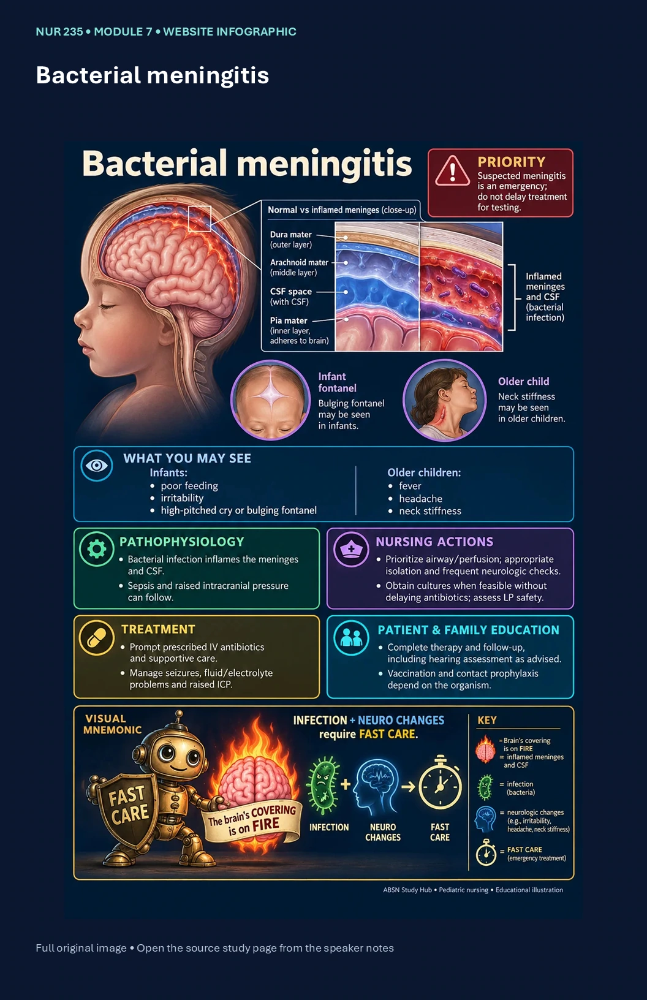
Read slide text and study notes
NUR 235 • MODULE 7 • WEBSITE INFOGRAPHIC
Bacterial meningitis
Full original image • Open the source study page from the speaker notes
Readable source notes
Study notes🚨 PrioritySuspected meningitis is an emergency; do not delay treatment for testing.⚙ PathophysiologyBacterial infection inflames the meninges and CSF; sepsis and raised intracranial pressure can follow.🩺 Nursing actionsPrioritize airway/perfusion; appropriate isolation and frequent neurologic checks.Obtain cultures when feasible without delaying antibiotics; assess LP safety.💊 TreatmentPrompt prescribed IV antibiotics and supportive care.Manage seizures, fluid/electrolyte problems and raised ICP.🏠 Patient & family educationComplete therapy and follow-up, including hearing assessment as advised.Vaccination and contact prophylaxis depend on the organism.🗝 Visual mnemonic keyThe brain’s COVERING is on FIRE: INFECTION + NEURO CHANGES require FAST CARE.The cartoon objects are memory symbols. The labeled anatomy beside them is the medical illustration.
Website infographic
97 / 254Generalized tonic-clonic seizures
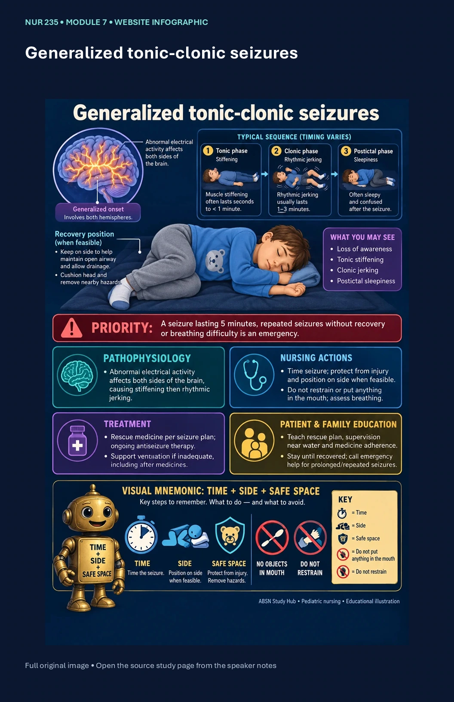
Read slide text and study notes
NUR 235 • MODULE 7 • WEBSITE INFOGRAPHIC
Generalized tonic-clonic seizures
Full original image • Open the source study page from the speaker notes
Readable source notes
Study notes🚨 PriorityA seizure lasting 5 minutes, repeated seizures without recovery or breathing difficulty is an emergency.⚙ PathophysiologyAbnormal electrical activity affects both sides of the brain, causing stiffening then rhythmic jerking.🩺 Nursing actionsTime seizure; protect from injury and position on side when feasible.Do not restrain or put anything in the mouth; assess breathing.💊 TreatmentRescue medicine per seizure plan; ongoing antiseizure therapy.Support ventilation if inadequate, including after medicines.🏠 Patient & family educationTeach rescue plan, supervision near water and medicine adherence.Stay until recovered; call emergency help for prolonged/repeated seizures.🗝 Visual mnemonic keyTIME + SIDE + SAFE SPACE. A crossed-out mouth object and restraint remind what to avoid.The cartoon objects are memory symbols. The labeled anatomy beside them is the medical illustration.
Website infographic
98 / 254Hydrocephalus
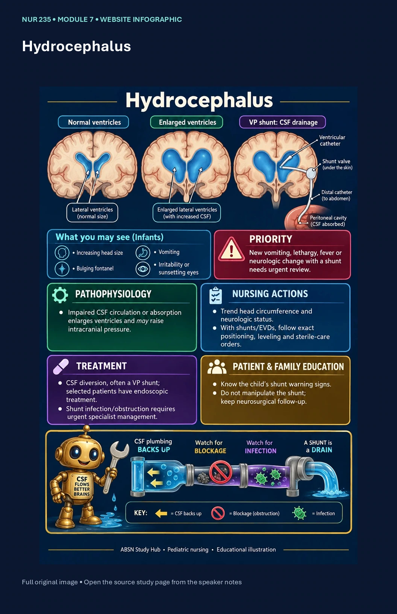
Read slide text and study notes
NUR 235 • MODULE 7 • WEBSITE INFOGRAPHIC
Hydrocephalus
Full original image • Open the source study page from the speaker notes
Readable source notes
Study notes🚨 PriorityNew vomiting, lethargy, fever or neurologic change with a shunt needs urgent review.⚙ PathophysiologyImpaired CSF circulation or absorption enlarges ventricles and may raise intracranial pressure.🩺 Nursing actionsTrend head circumference and neurologic status.With shunts/EVDs, follow exact positioning, leveling and sterile-care orders.💊 TreatmentCSF diversion, often a VP shunt; selected patients have endoscopic treatment.Shunt infection/obstruction requires urgent specialist management.🏠 Patient & family educationKnow the child’s shunt warning signs.Do not manipulate the shunt; keep neurosurgical follow-up.🗝 Visual mnemonic keyCSF plumbing BACKS UP; a SHUNT is a DRAIN. Watch for BLOCKAGE or INFECTION.The cartoon objects are memory symbols. The labeled anatomy beside them is the medical illustration.
Simple Nursing original · Module 7
99 / 254Simple Nursing: ADHD & ADD

Read handout text
ADD & ADHD
Pediatrics: Mental Health
ADD - Attention Deficit Disorder
ADHD - Attention Deficit Hyperactivity Disorder
The brain has low levels of the neurotransmitters dopamine &
norepinephrine which help the brain focus on reward vs. risk and
control impulsivity & mood, making patients with ADHD more
likely to have anxiety & substance abuse problems.
1. Hyperactivity “restless”
2. Inattention “reduced ability to focus”
3. Impulsiveness “excessive talking”
4. Low self-esteem & impaired social
skills NCLEX TIP
• Head trauma: TBI (traumatic brain injury)
Children who have had a serious head injury are more
likely to develop ADHD later on in age.
ATI Question
Risk factors of ADHD…
Which of the following
should the nurse include
in the teaching?
● History of head trauma
Give a written schedule
of daily activities NCLEX TIP
Aggressive behavior:
distract the child & ask
them to blow up a balloon
Increased risk for injury
ATI Question
9 year old hospitalized
client on bedrest who has
attention deficit disorder…
Which of the following
should the nurse prioritize?
● Provide the child with
a daily schedule that
is typed or written
M T W TH F SA S
Always think calm with ADHD
HESI Question
A nursing diagnosis that should be
considered for a child with attention
deficit hyperactivity disorder is
● Risk for injury
ATI Question
… new diagnosis of ADHD… which
of the following statements should
the nurse include in the teaching?
● Your child is at an
increased risk for injury
1. Eye contact first (before speaking)
2. Simple language
3. Child repeats back what was said
4. Offer praise upon task completion
ATI Question
6 year old client with … ADHD. What
techniques should the nurse use to
communicate most effectively with the client
when asking the client to complete a task?
Select all that apply.
● Obtain eye contact before speaking
● Use simple language
● Have him repeat what was said
● Praise him if he completes a task
Kaplan Question
... child with attention deficit disorder. Which
statement by the nurse is most appropriate?
● “Hug your child after a task is completely
performed.”
ATI Question
… classroom strategies for
children who have ADHD. Which
of the following information
should the nurse plan to discuss
with the teachers?
Select all that apply.
● Allow for regular breaks
● Combine verbal instruction
with visual cues
● Establish consistent
classroom rules
● Decrease the amount of
homework assigned
CLASSROOM
RULES
Dopamine Norepinephrine
Signs & Symptoms
Pathophysiology
Management
Causes & Risk Factors
Communication
Classroom Strategies
Simple Nursing original · Module 7
100 / 254Simple Nursing: Cerebral Palsy

Read handout text
Cerebral Palsy
Pediatrics: Neurological Disorders
Cerebral palsy is a permanent disorder of movement presenting with stiff muscle
tone, tremors, and involuntary motions. The client also has an abnormal posture,
and lack of physical coordination as muscle spasms come & go.
CP stems from abnormal brain development, often before birth, which results in
delayed development specially with walking, speaking and swallowing, as these
require various muscles.
... Most common cause ... for the
diagnosis of cerebral palsy (CP)?
HESI Question
Prenatal brain abnormalities
Cerebral - Brain
Palsy - Pausing
MEMORY TRICK
Permanent
Treatment
Poor head control
(Over 6 months)
“Infant’s head that falls back behind
the shoulders”
Rigid muscles
NCLEX TIP
Positive Babinski sign / reflex
The nurse identifies which finding as an
early warning sign of cerebral palsy (CP)?
Kaplan Question
The infant has poor head control
What assessment findings will the nurse
expect to see in a 9-month-old with
cerebral palsy? Select all that apply.
Q1:
Which drug prevents the risk of cerebral
palsy in the fetus?
Q2:
HESI Questions
Positive Babinski sign
Presence of the tonic neck reflex
Magnesium sulfate
Irritability and excessive crying
Rigidity of the arms and legs
Long-term treatment includes physical therapy,
speech therapy, pharmacology, & sometimes
surgery.
PRIORITY#1
… Child who has cerebral palsy experiencing
painful muscle spasms. Which of the following
medications should the nurse administer?
Q1:
ATI Questions
Baclofen
4-year-old child with cerebral palsy. Q2:
Referral to a speech-language therapist
A 7-month-old male infant diagnosed with spastic
cerebral palsy … immediate intervention by the
nurse?
HESI Question
My son often chokes while I am feeding him
Pharmacology
Baclofen
BACLOFEN BACLOFEN
Baclofen muscle relaxant to help ease those
painful muscle spasms.
Notes
Pathophysiology & Causes
Signs & Symptoms
Treatment
Simple Nursing original · Module 7
101 / 254Simple Nursing: Meningitis & Increased ICP

Read handout text
Meningitis & Increased ICP
Pediatrics: Neurological Disorders
Notes
!
! !
!
!
!
Meningitis is the inflammation of the meninges (the inner
lining of the brain & spinal cord). Typically caused infection
(bacterial or viral), head trauma, & even auto-immune
diseases like Lupus.
Disease progression:
Inflammation → massive brain swelling → deadly ↑ ICP →
crushed brain stem → DEATH!
!!
!
T op Missed NCLEX Questions
Q1: A 2-month-old infant with viral meningitis … the nurse knows to
assess for which clinical manifestation?
Select all that apply
Fever
High-pitched cry
Vomiting
Seizures
Poor feeding
Flattened fontanelles
1.
2.
3.
4.
5.
6.
T op Missed NCLEX Questions
Q2: 3-month-old infant with meningitis …
What is the most important assessment in
the plan of care?
T emperature
Fontanel assessment
Vomiting
Input & output
1.
2.
3.
4.
INTAKE/hyphen.cap OUTPUT CHART
Name
Date
Time
MORNING
SHIFT
INTAKE (ml) OUTPUT (ml)
Pathophysiology & Causes
Hydrocephalus is a deadly complication that increases pressure within the
baby’s brain. It happens when fluid collects within the brain from the
obstructed flow of cerebrospinal fluid (CSF). If NOT corrected quickly the
baby can die!
Bulging fontanelles at rest is the first sign of increased ICP!
6 NCLEX TIPS
2 years or less
Priority:
Bulging fontanelles at REST
(Report to HCP)
1.
2.
Irritability3.
Vomiting & poor feeding 4.
Frequent seizures 5.
Sunset eyes: “sclera visible above the iris” 6.
High pitched cry
Fontanel assessment
Infant Complication = Hydrocephalus
PRIORITY#1
ATI Questions
Q1: Infant born 3 days ago. Which finding should
the nurse … report to the primary care provider?
The infant’s anterior fontanel is bulging
Q2: 6-month-old infant … scheduled for a lumbar
puncture. Which actions should the nurse take?
Hold the infant’s chin to his chest and knees to
his abdomen during the procedure
Q3: Lumbar puncture (LP) … Which actions
should the nurse take?
Instruct the parents to keep the toddler in a flat
position for 30 minutes to one hour after the
procedure
B
Bulging Fontanelles
at rest
B
Brain Damage!!!
1
HCP
MEMORY TRICK
Signs & Symptoms
Complications
NCLEX TIP
Simple Nursing original · Module 7
102 / 254Simple Nursing: Meningitis & Increased ICP II

Read handout text
Meningitis & Increased ICP II
Pediatrics: Neurological Disorders
NCLEX TIP
Infants 0 - 12 months
Bacterial Meningitis
Giving antibiotics is the priority
PRIORITY
OVER 35% got it WRONG!
T op Missed NCLEX Question
A 4-month-old infant with bacterial meningitis
received new orders … which of the following
should the nurse prioritize first?
Assess fontanels & high-pitched cry
Give ciprofloxacin IV immediately
Monitor level of consciousness
Implement seizure precautions
1.
2.
3.
4.
CIPROFLOXACIN
ATI Question
6-year-old child who has bacterial meningitis…
interventions?
Implement seizure precautions
3 NCLEX TIPS
1.
2.
3.
Low light & noise - dark quiet room
Minimize environmental stimuli
Low pressure
Elevate the HOB at 30-degrees
Implement seizure precautions
PRECAUTION
Notes
Put ON “DON” Take OFF “DOFF”
1. Gown
2. Mask
3. Goggles
4. Gloves
GMGG
1. Gloves
2. Goggles
3. Gown
4. Mask
GGGM
N95
Droplet Airborne
P - Pertussis
I - Influenza
M - Meningitis
P - Pneumonia
1. Surgical Mask & Goggles
2. Single room
1. N95 mask - Staff
2. Neg. Pressure Room
3. Door closed
4. Transport - Patient wears
surgical mask
M - Measles
T - TB (Tuberculosis)
V - Varicella (shingles/chicken pox)
T each unlicensed personnel
to wear a mask
ATI
ON AIR
Interventions
Tests
• CT scan (done first)
• LP (Lumbar Puncture “spinal tap”)
- Viral - Very clear
- Bacterial - Bad cloudy
- Both types will have elevated WBCs
- AFTER LP: Monitor insertion site dressing
for clear fluid
Simple Nursing original · Module 7
103 / 254Simple Nursing: Hydrocephalus

Read handout text
Hydrocephalus
Pediatrics: Neurological Disorders
Hydrocephalus is a deadly complication where brain collects excess cerebrospinal
fluid builds (CSF) resulting in deadly increased intracranial pressure (ICP) progressing
to brain damage & death.
CSF - Cerebrospinal Fluid
Notes
1. High pitched cry
2. Bulging fontanelles (Report to HCP)
3. Irritability & change in LOC
4. Vomiting & poor feeding
5. Frequent seizures
6. Sunset eyes “sclera visible above the iris”
6 NCLEX TIPS2 years or less
HESI
Fontanel assessment
Priority:
Increased head circumference bigger than chest
MEMORY TRICK
B B
Bulging
Fontanelles
Brain
Damage
1
HCP
KAPLAN Question
… The baby’s “soft spot” bulges out when the baby cries.
The anterior fontanel will normally bulge out
when the baby coughs or cries
ATI Question
Infant born 3 days ago. Which finding should the
nurse … report to the primary care provider?
The infant’s anterior fontanel is bulging
HESI Questions
Q1: Which clinical finding would the nurse interpret as a possible
sign of hydrocephalus?
Head circumference greater than chest
circumference
Q3: Which is a sign of increased intracranial pressure in infants?
Irritability
Q4: An infant … hydrocephalus suddenly awakens with a
high-pitched, shrill cry and cannot be comforted. What is the next
nursing action?
Contact the health care provider
Q2: 8-month-old child … assessment for increased intracranial
pressure?
Select all that apply.
High-pitched cry
Increased head circumference
Poor suck-swallow when feeding
Prominent sclera over the iris
Signs & Symptoms
Pathophysiology
VP shunt - Ventriculoperitoneal shunt
Post-op care:
Measure head circumference
ATI
Q1: 2 ½-year-old boy … with a ventriculoperitoneal
shunt. The nurse advises the parents to call the clinic
if the child:
Appears irritable & vomits after a nap
Semi-Fowler’s
Q2: … Following ventriculoperitoneal (VP) shunt
placement. Which of the following positions should
the nurse place the child?
30-45o
Treatments
Infections: Meningitis
Tumors
Bleeding inside the brain
• Ultrasound
• Magnetic resonance imaging (MRI)
• Computed tomography (CT) scan
Causes
Diagnostics
Simple Nursing original · Module 7
104 / 254Simple Nursing: Reye Syndrome

Read handout text
Reye Syndrome
Pediatrics: Neurological Disorders
Reye syndrome is a rare life-threatening condition that causes massive brain
swelling, which leads to seizures & liver damage.
Rare life-threatening
Pathophysiology & Causes
NCLEX TIP
Aspirin (salicylate acid)
1.
2.
DO NOT GIVE TO BABIES
Recent influenza infection
ATI Question
Child with influenza … increased risk for
development of Reye syndrome?
“I gave my child aspirin to reduce his fever”
ASPIRIN
MOST tested trigger
MOST tested
Risk Factors
Brain Swelling
Liver damage
Bulging fontanelles
Seizures
Elevated Liver labs: AST, ALT
Elevated ammonia
Encephalopathy cloudy brain from ammonia
Elevated Coag. Time: increased r/t bleeding!
Confusion
“ALOC”
Mental status change
?
?
?
Signs & Symptoms
Liver enzymes
Liver biopsy
Diagnostics
Monitor & decrease ICP
Mannitol (diuretic)
Seizure precautions
1.
2.
3.
Vit. K (to stop bleeding)4.
HOB elevated (over 30 )o
MANNITOL
PRECAUTION
Interventions
Complications
Hepatic encephalopathy can result from the increased ammonia levels within the blood! Since the liver is damaged,
it can’t convert ammonia into urea, so all the ammonia sits in the blood causing hepatic encephalopathy.
Notes
Simple Nursing original · Module 7
105 / 254Simple Nursing: Seizures

Read handout text
Seizures
Pediatrics: Neurological Disorders
Anything that can cause brain swelling or hypoxia
• Infection: meningitis
• Trauma: TBI, Concussion
• Brain mass: BRAIN tumors
• Increased ICP
• Fever in infants = “febrile seizure”
• Withdrawal from drugs & alcohol
Sudden, uncontrolled electrical discharges in the brain.
Epilepsy is lifelong episodes of seizures.
ePILEpsi - like a PILE of seizures that
come & go over a lifetime
MEMORY TRICK
Causes
Key Points
Febrile seizures
Cool, damp compress on forehead
Give ibuprofen or acetaminophen every 6 hours
Call 911 = seizures lasting longer than 5 minutes
6 months - 6 years of age
911
Types
Pathophysiology
Stages or Phases of Seizure
Status Epilepticus- MEDICAL
emergency!! NCLEX TIP
5 min. or longer - 1 seizure
30 min. - Repeated seizure activity
#1 Priority = STOP the Seizure
IV or Rectal benzodiazepine
Lorazepam (brand: Ativan)
Diazepam (brand: Valium)
1ST
Status Epilepticus
• Prodromal phase Warning signs before a seizure
leading to Aura Phase
• Aura phase Visual, auditory clue that happens prior to a
major seizure
• Ictal phase = Seizure Phase THINK ignition phase -
the period of the active seizure.
• Postictal Phase Hangover phase after the seizure -
think POST-ignition phase
• Confused, disoriented, major headache, & typically
feels tired or sleepy
Diagnostics
#1 - Airway
Turn client to side NCLEX TIP
Prepare for suctioning
Call for help & Stay with Client
Loosen restrictive clothing
(Neck & chest)
NEVER insert anything in the mouth!
NEVER restrain or “Hold down arms”
#1 Drug = STOP the Seizure
Lorazepam (brand: Ativan)
Diazepam (brand: Valium)
Rectal or IV
Safety
AFTER seizure activity
Protect - Clear area for any objects
Pad Side Rails
Record Time
Assess LOC, Neuro, Vitals
Prepare for suctioning
#1
Interventions during SZ
NCLEX TIP
• MRI or CT - to look for abnormalities.
• EEG - electroencephalogram
Assesses electrical activity in the brain by
placing sticky electrodes on the scalp
• Wash hair (before/ after) to make sure it sticks
• NO Caffeine (tea, coffee, soda) or stimulants:
12 - 24 hours before
• NO Seizure meds
• NO Sleep - Sleep deprivation is BEST
• YES Eat before test - no need for NPO
• EEG think of EGG head - electrical activity
of the EGGhead
• ECG - C think C - Cardiac rhythms
MEMORY TRICK
Q1: First priority for a client having
a seizure?
Q2: T onic clonic seizure nursing
interventions?
Q3: Client who is at risk for seizures:
Turn client to the side
Loosen restrictive clothing
Prepare to suction the client’s airway
Ensure a patent IV
ATI Questions
Pharmacology
Anticonvulsants
- Phenytoin: Toxic Over 20 hold med
- Levetiracetam: Driving permissions from HCP
Simple Nursing original · Module 7
106 / 254Simple Nursing: Spina Bifida

Read handout text
Spina Bifida
Pediatrics: Neurological Disorders
Spina bifida is a birth defect in which an infant spinal cord fails to develop properly.
Specifically, the neural tube fails to fuse, or there is failure in formation of the vertebral neural arches.
Spina bifida occulta
Myelomeningocele
2 main Neural Tube Defects
yelo-meningocele
M
EGA sac protrusion
M
Normal Spina bifida
Spina bifida occulta
Myelomeningocele:
Priority Interventions
2 Key Signs
Mega sac protrusion from
the back area
Small tuft of hair at the
base of spine
1.
Small dimple or birthmark
(nevus birthmark)
2.
Cover the area with a moist
sterile dressing
1.
Asepsis = most important2.
Prone position3.
NCLEX TIP
Kaplan HESI
An MRI or spinal ultrasound can be
used, but the MOST tested was:
Amniocentesis:
Alpha-Fetoprotein test
Alpha-fetoprotein test?
ATI Question
T o identify fetal
neural tube defects
AFP T est
Amniocentesis
Q1: Pregnant client … taking carbamazepine.
High risk for?
HESI Questions
Spina bifida
0.4 mg of folic acid
Q2: Vitamin … to prevent neural tube defects
in infants?
Folic acid is important before and
during pregnancy:
ATI Question
To prevent neural tube defects
in the newborn
Vitamin B-9: Folate (Folic Acid) deficiency
AVOID Anti-seizure medications:
Valproic Acid
Carbamazepine
Q1: … Pregnant client identifying the food
items highest in folic acid.
Saunder’s Questions
Leafy green vegetables
Spinach
Q2: A good source of folic acid?
During Pregnancy
400 mcg of Folic Acid per day
Green Leafy vegetables
Starch
Spinach
Broccoli
Green peas
Black beans & rice
Fortified cereals & milk
Peanut butter
Enriched bread
NCLEX TIP
NCLEX TIPS
Signs & Symptoms
Pathophysiology
Causes
Diagnostics
Education
… assessment should the nurse
prioritize for follow-up?
ATI Question
tuft of hair at the base of
the lumbar spine
Myelomeningocele. Which action does
the nurse perform?
Kaplan Question
Applies moist, sterile dressing
Why does a myelomeningocele require
protection after birth?
Select all that apply.
HESI Questions
Reduce the chance of infection
Improve the prognosis
for ambulation
Prevent damage to the spinal cord
and nerves
Prevent the leakage of
cerebrospinal fluid
Q1: Which neural tube defect is not
visible externally?
Spina bifida occulta
Sacral dimple
Q2:
Q3:
… Findings to report to the HCP?
A pigmented nevus with tuft of
hair at the base of the lumbar spine
Myelomeningocele
Simple Nursing original · Module 7
107 / 254Simple Nursing: Tay-Sachs Disease

Read handout text
T ay-Sachs Disease
Pediatrics: Neurological Disorders
Feeding tubes
Tay-Sachs disease is a group of disorders that destroy nerve cells in the brain & spinal cord. Typically appearing
around six months of age, it is caused by the absence of an enzyme that helps break down fatty substances.
As the disease progresses, the child loses muscle control, vision loss, paralysis, and death.
Brain
Spinal cord
Loss of motor skills, including
Seizures
Vision & hearing loss
"Cherry-red" spots in the eyes
Turning over
Crawling
Sitting up
Blood test checks the levels of an enzyme called hexosaminidase
in the child's blood.
Hexosaminidase
Respiratory care (high risk of
lung infections)
Feeding tubes (trouble
swallowing & aspiration)
Physical therapy
Notes
Pathophysiology & Causes
Signs & Symptoms
Diagnostics
Treatment
Review checklist
108 / 254EXAM 3 topic checklist
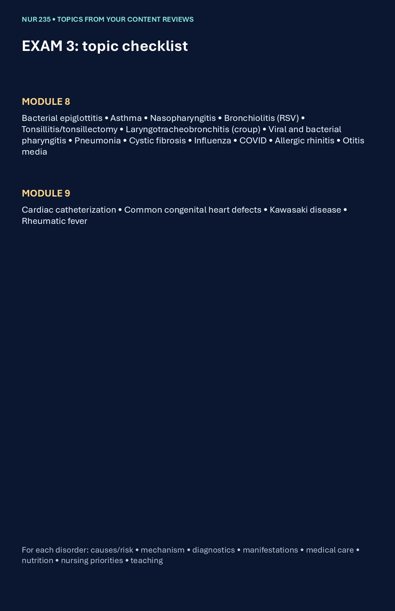
Read slide text and study notes
NUR 235 • TOPICS FROM YOUR CONTENT REVIEWS
EXAM 3: topic checklist
MODULE 8
Bacterial epiglottitis • Asthma • Nasopharyngitis • Bronchiolitis (RSV) • Tonsillitis/tonsillectomy • Laryngotracheobronchitis (croup) • Viral and bacterial pharyngitis • Pneumonia • Cystic fibrosis • Influenza • COVID • Allergic rhinitis • Otitis media
MODULE 9
Cardiac catheterization • Common congenital heart defects • Kawasaki disease • Rheumatic fever
For each disorder: causes/risk • mechanism • diagnostics • manifestations • medical care • nutrition • nursing priorities • teaching
Original overview
109 / 254Upper airway: listen and look
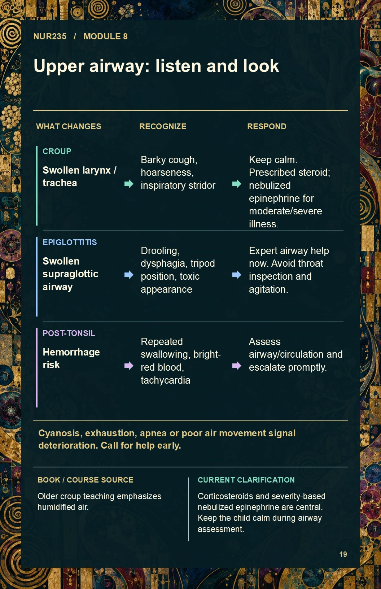
Read slide text and study notes
NUR235 / MODULE 8
Upper airway: listen and look
19
WHAT CHANGES
RECOGNIZE
RESPOND
CROUP
Swollen larynx / trachea
Barky cough, hoarseness, inspiratory stridor
Keep calm. Prescribed steroid; nebulized epinephrine for moderate/severe illness.
EPIGLOTTITIS
Swollen supraglottic airway
Drooling, dysphagia, tripod position, toxic appearance
Expert airway help now. Avoid throat inspection and agitation.
POST-TONSIL
Hemorrhage risk
Repeated swallowing, bright-red blood, tachycardia
Assess airway/circulation and escalate promptly.
Cyanosis, exhaustion, apnea or poor air movement signal deterioration. Call for help early.
BOOK / COURSE SOURCE
CURRENT CLARIFICATION
Older croup teaching emphasizes humidified air.
Corticosteroids and severity-based nebulized epinephrine are central. Keep the child calm during airway assessment.
Original study notes and source references
NUR235 content mastery infographic. Original native diagram by Codex. No Claude-created graphics.
High-level overview. The user-supplied module content reviews and textbook anchor the content. Book/course statements and current clarifications remain separate. Full prior wording is preserved below for study reference.
Some neurologic and musculoskeletal chapters are missing from the provided book extract. Available course sources and identified primary references supplement these gaps.
Upper-airway and common respiratory illness
User textbook, Chapter 40: Child with a Respiratory Disorder work/module-reviews/Maternal and Child Textbook.txt
User textbook, Chapter 41: Child with a Cardiovascular Disorder work/module-reviews/Maternal and Child Textbook.txt
User textbook, Chapter 42: Immune disorders work/module-reviews/Maternal and Child Textbook.txt
User textbook, Chapter 43: Infectious disorders work/module-reviews/Maternal and Child Textbook.txt
User textbook, Chapter 50: Eye and ear disorders work/module-reviews/Maternal and Child Textbook.txt
CDC: Group A streptococcal pharyngitis https://www.cdc.gov/group-a-strep/hcp/clinical-guidance/strep-throat.html
CDC: Acute rheumatic fever https://www.cdc.gov/group-a-strep/hcp/clinical-guidance/acute-rheumatic-fever.html
NICE: Bronchiolitis recommendations https://www.nice.org.uk/guidance/ng9/chapter/Recommendations
Canadian Paediatric Society: Acute croup management https://cps.ca/en/documents/position/acute-management-of-croup
NHLBI: Asthma Care Quick Reference https://www.nhlbi.nih.gov/files/docs/guidelines/asthma_qrg.pdf
Cystic Fibrosis Foundation: Enzymes https://www.cff.org/managing-cf/enzymes
Cystic Fibrosis Foundation: Diagnosis guidelines https://www.cff.org/medical-professionals/cf-diagnosis-clinical-care-guidelines
CDC: Treatment of flu in children https://www.cdc.gov/flu/treatment/children-antiviral.html
CDC: Pediatric COVID care https://www.cdc.gov/covid/hcp/clinical-care/for-pediatric-hcp.html
CDC: COVID outpatient treatment, October 8 2026 https://www.cdc.gov/covid/hcp/clinical-care/outpatient-treatment.html
CDC: Pediatric outpatient antibiotic guidance https://www.cdc.gov/antibiotic-use/hcp/clinical-care/pediatric-outpatient.html
CDC: Ear infection basics https://www.cdc.gov/ear-infection/about/index.html
AHA 2024 Kawasaki scientific statement https://www.ahajournals.org/doi/epdf/10.1161/CIR.0000000000001295
ACR/AAAAI 2025 contrast hypersensitivity consensus https://pubs.rsna.org/doi/10.1148/radiol.240100
CHOP: Pulmonary stenosis https://www.chop.edu/conditions-diseases/pulmonary-stenosis
CHOP: Tricuspid atresia https://www.chop.edu/conditions-diseases/tricuspid-atresia
CHOP: Tetralogy of Fallot https://www.chop.edu/conditions-diseases/tetralogy-fallot
Croup and epiglottitis
Croup: barking cough, hoarseness and inspiratory stridor. Keep the child calm. Dexamethasone treats airway inflammation, and nebulized epinephrine may be needed for moderate or severe illness with observation afterward.
Epiglottitis: drooling, dysphagia, tripod positioning and toxic appearance signal an airway emergency. Avoid throat inspection or procedures that agitate the child. Mobilize expert airway support and give antibiotics after the airway plan.
Common cold, allergy and pharyngitis
Nasopharyngitis usually needs fluids, nasal saline and comfort care. Allergic rhinitis produces itching, sneezing and clear rhinorrhea, usually without fever. Reduce triggers and use the prescribed antihistamine or intranasal therapy.
Viral pharyngitis usually needs supportive care. Confirm suspected group A strep as indicated and complete prescribed antibiotics. Teach hygiene and return-to-school criteria.
Tonsils and ears
After tonsillectomy, repeated swallowing, bright-red bleeding or tachycardia can signal hemorrhage. Assess airway and circulation and escalate promptly. Encourage permitted fluids and analgesia.
Otitis media requires an ear examination. Ear tugging alone is not diagnostic. Treat pain, use the selected observation or antibiotic plan and follow persistent hearing or language concerns.
Exam 3 source clarifications
[{"id": "sn-rheumatic-kawasaki-vaccines", "handout_ids": ["1gM-y9y4oe19swQJEmrbzmC3NHqH83R-U"], "title": "Rheumatic fever, aspirin, and vaccines after IVIG", "visible_source_slide_cue": "Clarification: prescribed aspirin and vaccine-specific IVIG intervals—see companion note.", "paragraphs": ["Prescribed salicylates, including aspirin, can be part of acute rheumatic fever treatment, so the handout's blanket instruction to never give aspirin is inaccurate. After the 2 g/kg IVIG dose used for Kawasaki disease, CDC recommends waiting 11 months before measles- or varicella-containing vaccines, such as MMR and varicella. Inactivated influenza vaccine does not require that IVIG-related delay. Live attenuated nasal influenza vaccine (LAIV) is also an exception to the antibody-product spacing rule, but it must not be given to children ages 2–17 who are taking aspirin or salicylates. Check the actual vaccine, IVIG dose, and current contraindications when planning immunization."], "citations": [{"label": "CDC: Acute rheumatic fever treatment", "url": "https://www.cdc.gov/group-a-strep/hcp/clinical-guidance/acute-rheumatic-fever.html", "supports": "Salicylates are included in treatment; the original blanket prohibition is incorrect."}, {"label": "CDC: Timing and spacing of immunobiologics", "url": "https://www.cdc.gov/vaccines/hcp/imz-best-practices/timing-spacing-immunobiologics.html", "supports": "Kawasaki IVIG 2 g/kg: 11 months for measles/varicella-containing vaccines; no interval for non-live vaccines; LAIV is an exception to antibody-product spacing."}, {"label": "CDC: Nasal spray influenza vaccine", "url": "https://www.cdc.gov/flu/vaccine-types/nasalspray.html", "supports": "LAIV is contraindicated for children 2–17 receiving aspirin/salicylates; other contraindications and precautions apply."}]}, {"id": "sn-cath-perfusion-contrast", "handout_ids": ["1WeSRr07EMFQIkCr-IMqmeEXYjO7lnlht"], "title": "After catheterization: perfusion changes need assessment", "visible_source_slide_cue": "Clarification: new weak distal pulses need assessment; chest-drain calculations are corrected on the companion slide.", "paragraphs": ["A new or worsening weak distal pulse after arterial catheterization is not automatically a normal finding. Compare pulses with the preprocedure baseline and opposite limb, assess warmth, color, capillary refill, sensation, and movement, and promptly escalate a change—especially a pale or cool limb, delayed refill, or an absent pulse. Document the actual prior contrast agent and reaction: an isolated shellfish or povidone-iodine allergy does not establish an allergy to iodinated contrast. Follow the procedure team's access-site, positioning, and activity orders rather than applying one bed-rest interval to every catheterization."], "citations": [{"label": "Royal Children's Hospital: Post-cardiac-catheterization care", "url": "https://www.rch.org.au/rchcpg/hospital_clinical_guideline_index/Care_of_the_patient_post_cardiac_catheterisation/", "supports": "Diminished/absent pulses and poor distal perfusion can indicate thrombus; assess and escalate; procedure and access details determine care."}, {"label": "ACR–AAAAI: Radiocontrast hypersensitivity consensus", "url": "https://pubs.rsna.org/doi/full/10.1148/radiol.240100", "supports": "Iodine itself is not an allergen; isolated shellfish or iodine/skin-antiseptic allergy is not a special iodinated-contrast risk."}]}, {"id": "sn-chest-drain-arithmetic", "handout_ids": ["1WeSRr07EMFQIkCr-IMqmeEXYjO7lnlht"], "title": "Chest-drain examples: correct the units and arithmetic", "visible_source_slide_cue": "Calculation correction: for 2 kg, 3 mL/kg/hour = 6 mL/hour, not 12.", "paragraphs": ["The calculations below evaluate the handout's own expressions; they are not universal drainage orders. Multiplying mL/kg by body weight in kg leaves mL, so the 6 kg example gives 30–60 mL, not 30–60 mL/kg. For a 2 kg child, 3 mL/kg/hour equals 6 mL/hour and 18 mL over 3 hours; the printed 12 mL/hour does not follow that formula. Assess the child and the drainage trend, use the surgical team's reporting thresholds, and escalate excessive bleeding or a sudden stop in drainage with deterioration."], "calculation_rows": [{"expression": "6 kg × (5–10 mL/kg)", "correct_result": "30–60 mL", "meaning": "Volume in the handout's stated one-hour example; kg cancels."}, {"expression": "6 kg × 3 mL/kg/hour", "correct_result": "18 mL/hour; 54 mL over 3 hours", "meaning": "Correct rate and cumulative volume for the 6 kg example."}, {"expression": "2 kg × 3 mL/kg/hour", "correct_result": "6 mL/hour; 18 mL over 3 hours", "meaning": "Corrects the handout's printed 12 mL/hour answer."}, {"expression": "12 mL/hour ÷ 2 kg", "correct_result": "6 mL/kg/hour", "meaning": "Shows why 12 mL/hour is inconsistent with a 3 mL/kg/hour formula for 2 kg."}], "citations": [{"label": "Royal Children's Hospital: Chest-drain management", "url": "https://www.rch.org.au/rchcpg/hospital_clinical_guideline_index/Chest_Drain_Management/", "supports": "Hourly volume/trend monitoring; report sudden increases, persistently excessive output, and markedly reduced/stopped output when blockage is possible. The numerical corrections themselves are dimensional arithmetic."}], "editorial_note": "Do not present the original 5–10 mL/kg range as a universal current threshold. The cited RCH protocol uses its own triggers (>5 mL/kg in one hour or >3 mL/kg consistently for three hours); local surgical orders and the child's condition govern escalation."}, {"id": "sn-digoxin-individual-assessment", "handout_ids": ["170g_eNve4FF9L_SaI-qTNdf3sEvOXdRl"], "title": "Digoxin: a pulse above 100 is not automatic clearance", "visible_source_slide_cue": "Clarification: use the child's ordered hold parameters and full assessment for digoxin.", "paragraphs": ["A heart rate above 100/min does not guarantee that digoxin is safe to give. Assess the apical rate and rhythm, use the child's age-appropriate prescribed hold parameters, and review the dose, renal function, electrolytes, and clinical findings. New bradycardia or another arrhythmia, poor feeding, or vomiting may signal toxicity and warrants prompt clinical review. Toxicity can occur below a serum concentration of 2 ng/mL, so interpret the level together with the child's condition rather than as a stand-alone safety cutoff."], "citations": [{"label": "DailyMed: Digoxin prescribing information", "url": "https://dailymed.nlm.nih.gov/dailymed/lookup.cfm?setid=ca595f0c-5bf0-4feb-8183-47832ee8c820", "supports": "Dosing depends on age, body weight, renal function, and interacting drugs; bradycardia/arrhythmias and GI findings may indicate toxicity; electrolyte abnormalities increase risk; toxicity can occur below 2 ng/mL."}]}, {"id": "sn-cyanotic-heart-defect-mechanisms", "handout_ids": ["1YFHTbMrnHGAsXWanK-Z4qj_5mHrTLeKs", "1XqApDWmoftwLELzsaiE-3d9Qo8ktDgOC"], "title": "The cyanotic 'T' mnemonic groups different mechanisms", "visible_source_slide_cue": "Clarification: d-TGA has parallel circuits; the cyanotic defects do not all share one shunt mechanism.", "paragraphs": ["The cyanotic 'T' mnemonic is a memory aid, not one shared right-to-left shunt mechanism. In d-transposition of the great arteries, blood follows parallel systemic and pulmonary circuits, and communication such as an ASD, VSD, or PDA allows mixing that can deliver oxygenated blood to the body. In persistent truncus arteriosus, a common arterial trunk and usually a VSD produce mixing, often with excessive pulmonary blood flow and heart failure as well as cyanosis."], "citations": [{"label": "CDC: d-Transposition of the great arteries", "url": "https://www.cdc.gov/heart-defects/about/d-tga.html", "supports": "The aorta arises from the RV and pulmonary artery from the LV; blood recirculates separately and associated communications allow mixing."}, {"label": "CDC: Truncus arteriosus", "url": "https://www.cdc.gov/heart-defects/about/truncus-arteriosus.html", "supports": "Common arterial vessel, associated VSD, mixing, and excessive pulmonary flow/heart-failure risk."}]}, {"id": "sn-cf-diabetes-mechanism", "handout_ids": ["1CdqOYoB3DNeIiyIDs5lXq1p32wSP43Xg"], "title": "CF-related diabetes: endocrine and exocrine problems differ", "visible_source_slide_cue": "Clarification: CF-related diabetes results from reduced insulin production, not insulin trapped in a duct.", "paragraphs": ["In CF, blocked pancreatic ducts keep digestive enzymes from reaching the intestine, causing malabsorption. CF-related diabetes develops mainly because pancreatic damage reduces insulin production; insulin resistance can also contribute, especially during illness or steroid treatment. Insulin is released into the blood, so the handout's description of insulin being unable to escape a mucus-blocked duct confuses endocrine insulin secretion with exocrine enzyme delivery."], "citations": [{"label": "Cystic Fibrosis Foundation: CF-related diabetes", "url": "https://www.cff.org/managing-cf/cystic-fibrosis-related-diabetes", "supports": "Pancreatic damage reduces insulin production; resistance may coexist."}, {"label": "Cystic Fibrosis Foundation: Digestive system", "url": "https://www.cff.org/managing-cf/digestive-system", "supports": "Pancreatic digestive enzymes travel through ducts to the intestine; endocrine and exocrine pancreatic functions differ."}]}, {"id": "sn-cf-mucolytic-hemoptysis", "handout_ids": ["19KHiFqHDbjczuGmZS1CFDGdU-S7JwLDa"], "title": "CF: prescribed mucolytics and blood in sputum", "visible_source_slide_cue": "Clarification: acetylcysteine has a bronchospasm risk; new or persistent hemoptysis needs review.", "paragraphs": ["Inhaled acetylcysteine can cause unpredictable bronchospasm, but that risk does not mean it is universally unsafe for every patient. Use the CF team's prescribed regimen and monitor response; progressive bronchospasm requires stopping the medicine and clinical review. Blood-streaked sputum should not be dismissed as simply normal: contact the CF team for a first episode or persistent bleeding, and promptly report increasing or more substantial bleeding."], "citations": [{"label": "DailyMed: Acetylcysteine inhalation prescribing information", "url": "https://dailymed.nlm.nih.gov/dailymed/fda/fdaDrugXsl.cfm?setid=75b48fab-cef6-465c-a1e0-d085b3988bc4", "supports": "Bronchospasm may occur unpredictably; progressive bronchospasm requires discontinuation."}, {"label": "Cystic Fibrosis Foundation: Hemoptysis care guidelines", "url": "https://www.cff.org/medical-professionals/pneumothorax-and-hemoptysis-clinical-care-guidelines", "supports": "First or persistent scant hemoptysis warrants contact; at least mild hemoptysis warrants provider contact; major bleeding requires admission."}]}, {"id": "sn-tonsillectomy-milk", "handout_ids": ["1qDwxYxWiyowTYsQDES-GSj0at0_tG3n_"], "title": "Tonsillectomy diet: follow the surgeon's plan", "visible_source_slide_cue": "Clarification: a universal no-dairy rule is not required by current postoperative guidance.", "paragraphs": ["A universal ban on milk products after tonsillectomy is not supported by current pediatric postoperative advice. Milk and soft foods such as yogurt may be used if tolerated and consistent with the surgeon's instructions; maintaining hydration and adequate intake matters. Fresh bleeding or repeated swallowing that may indicate bleeding needs prompt assessment."], "citations": [{"label": "Sydney Children's Hospitals Network: Tonsillectomy", "url": "https://www.schn.health.nsw.gov.au/factsheets/tonsillectomy", "supports": "Advice updated April 2026 includes milk, yogurt/pudding, hydration, and prompt assessment of postoperative bleeding."}]}, {"id": "sn-rsv-prevention-update", "handout_ids": ["1DLYiMpl_2LDhiGy0jFptf_XHQM_30rQd"], "title": "RSV prevention has changed", "visible_source_slide_cue": "Current prevention: maternal vaccination or an eligible infant's long-acting antibody—see companion note.", "paragraphs": ["Palivizumab on the original handout reflects an earlier prevention approach and is not a complete summary of current RSV prevention. Current CDC guidance uses maternal RSV vaccination or an eligible infant's long-acting antibody, nirsevimab or clesrovimab; most infants do not need both maternal vaccination and an infant antibody. Eligibility depends on age, maternal vaccination, season, and risk, and these products prevent severe RSV disease rather than treat an active infection."], "citations": [{"label": "CDC: RSV immunization guidance for infants and young children", "url": "https://www.cdc.gov/rsv/hcp/vaccine-clinical-guidance/infants-young-children.html", "supports": "Maternal vaccine or infant long-acting monoclonal antibody; nirsevimab and clesrovimab options, eligibility criteria, and prevention purpose."}]}, {"id": "sn-croup-cold-air-context", "handout_ids": ["1n6xG4xxEb5-KGdLnNWC3VbZYZHO6ZixJ"], "title": "Croup: cold air is a comfort measure, not an escalation plan", "visible_source_slide_cue": "Clarification: cold air may help symptoms; stridor or respiratory distress still needs severity-based care.", "paragraphs": ["Cold outdoor air may temporarily lessen moderate croup symptoms, but the freezer-air memory cue is not a complete treatment plan. Stridor at rest, increasing work of breathing, or deteriorating alertness requires prompt assessment and escalation. Management depends on severity and includes corticosteroids when indicated, with nebulized epinephrine and skilled airway support for severe or life-threatening illness."], "citations": [{"label": "Royal Children's Hospital: Croup guideline", "url": "https://www.rch.org.au/clinicalguide/guideline_index/Croup_Laryngotracheobronchitis/", "supports": "Cold air below 10°C may reduce moderate symptoms; severity-based assessment, corticosteroids, nebulized adrenaline, and airway escalation."}]}]
Croup and bronchiolitis
Older source material emphasizes humidified air or routine bronchodilator treatment. Current croup care centers on corticosteroids and severity-based nebulized epinephrine. Bronchiolitis care is primarily supportive.
Rheumatic fever and Kawasaki disease
A Simple Nursing handout says never to give aspirin for rheumatic fever. Prescribed salicylates can be part of treatment.
After Kawasaki treatment with IVIG 2 g/kg, the 11-month interval applies to measles- or varicella-containing vaccines. Inactivated influenza vaccine has no IVIG-related delay.
Digoxin and chest drainage
A handout gives an absolute pulse-above-100 rule for digoxin. Use the child’s age, rhythm, clinical assessment and prescribed hold parameters.
Corrected handout arithmetic: 6 kg × 5–10 mL/kg = 30–60 mL. At a stated 3 mL/kg/hour threshold, 2 kg × 3 = 6 mL/hour. These calculations explain the printed examples. They do not establish a universal chest-drain reporting threshold.
Original overview
110 / 254Where the airway narrows
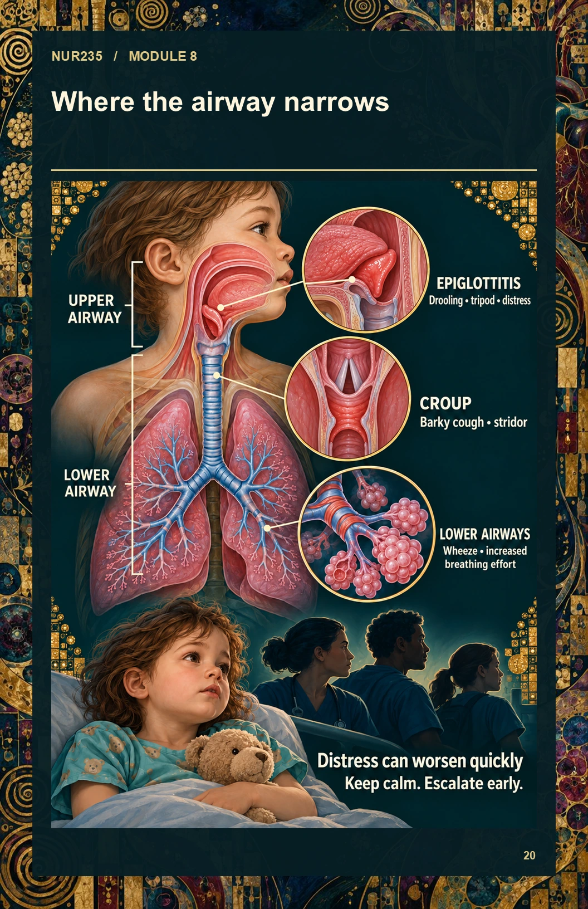
Read slide text and study notes
NUR235 / MODULE 8
Where the airway narrows
20
Original study notes and source references
Where the airway narrows
Schematic overview. Illustrations are not drawn to anatomical scale. Use the adjacent course details and assigned textbook for exam wording.
NUR235 content mastery infographic. Original native diagram by Codex. No Claude-created graphics.
High-level overview. The user-supplied module content reviews and textbook anchor the content. Book/course statements and current clarifications remain separate. Full prior wording is preserved below for study reference.
Some neurologic and musculoskeletal chapters are missing from the provided book extract. Available course sources and identified primary references supplement these gaps.
Upper-airway and common respiratory illness
User textbook, Chapter 40: Child with a Respiratory Disorder work/module-reviews/Maternal and Child Textbook.txt
User textbook, Chapter 41: Child with a Cardiovascular Disorder work/module-reviews/Maternal and Child Textbook.txt
User textbook, Chapter 42: Immune disorders work/module-reviews/Maternal and Child Textbook.txt
User textbook, Chapter 43: Infectious disorders work/module-reviews/Maternal and Child Textbook.txt
User textbook, Chapter 50: Eye and ear disorders work/module-reviews/Maternal and Child Textbook.txt
CDC: Group A streptococcal pharyngitis https://www.cdc.gov/group-a-strep/hcp/clinical-guidance/strep-throat.html
CDC: Acute rheumatic fever https://www.cdc.gov/group-a-strep/hcp/clinical-guidance/acute-rheumatic-fever.html
NICE: Bronchiolitis recommendations https://www.nice.org.uk/guidance/ng9/chapter/Recommendations
Canadian Paediatric Society: Acute croup management https://cps.ca/en/documents/position/acute-management-of-croup
NHLBI: Asthma Care Quick Reference https://www.nhlbi.nih.gov/files/docs/guidelines/asthma_qrg.pdf
Cystic Fibrosis Foundation: Enzymes https://www.cff.org/managing-cf/enzymes
Cystic Fibrosis Foundation: Diagnosis guidelines https://www.cff.org/medical-professionals/cf-diagnosis-clinical-care-guidelines
CDC: Treatment of flu in children https://www.cdc.gov/flu/treatment/children-antiviral.html
CDC: Pediatric COVID care https://www.cdc.gov/covid/hcp/clinical-care/for-pediatric-hcp.html
CDC: COVID outpatient treatment, October 8 2026 https://www.cdc.gov/covid/hcp/clinical-care/outpatient-treatment.html
CDC: Pediatric outpatient antibiotic guidance https://www.cdc.gov/antibiotic-use/hcp/clinical-care/pediatric-outpatient.html
CDC: Ear infection basics https://www.cdc.gov/ear-infection/about/index.html
AHA 2024 Kawasaki scientific statement https://www.ahajournals.org/doi/epdf/10.1161/CIR.0000000000001295
ACR/AAAAI 2025 contrast hypersensitivity consensus https://pubs.rsna.org/doi/10.1148/radiol.240100
CHOP: Pulmonary stenosis https://www.chop.edu/conditions-diseases/pulmonary-stenosis
CHOP: Tricuspid atresia https://www.chop.edu/conditions-diseases/tricuspid-atresia
CHOP: Tetralogy of Fallot https://www.chop.edu/conditions-diseases/tetralogy-fallot
Croup and epiglottitis
Croup: barking cough, hoarseness and inspiratory stridor. Keep the child calm. Dexamethasone treats airway inflammation, and nebulized epinephrine may be needed for moderate or severe illness with observation afterward.
Epiglottitis: drooling, dysphagia, tripod positioning and toxic appearance signal an airway emergency. Avoid throat inspection or procedures that agitate the child. Mobilize expert airway support and give antibiotics after the airway plan.
Common cold, allergy and pharyngitis
Nasopharyngitis usually needs fluids, nasal saline and comfort care. Allergic rhinitis produces itching, sneezing and clear rhinorrhea, usually without fever. Reduce triggers and use the prescribed antihistamine or intranasal therapy.
Viral pharyngitis usually needs supportive care. Confirm suspected group A strep as indicated and complete prescribed antibiotics. Teach hygiene and return-to-school criteria.
Tonsils and ears
After tonsillectomy, repeated swallowing, bright-red bleeding or tachycardia can signal hemorrhage. Assess airway and circulation and escalate promptly. Encourage permitted fluids and analgesia.
Otitis media requires an ear examination. Ear tugging alone is not diagnostic. Treat pain, use the selected observation or antibiotic plan and follow persistent hearing or language concerns.
Exam 3 source clarifications
[{"id": "sn-rheumatic-kawasaki-vaccines", "handout_ids": ["1gM-y9y4oe19swQJEmrbzmC3NHqH83R-U"], "title": "Rheumatic fever, aspirin, and vaccines after IVIG", "visible_source_slide_cue": "Clarification: prescribed aspirin and vaccine-specific IVIG intervals—see companion note.", "paragraphs": ["Prescribed salicylates, including aspirin, can be part of acute rheumatic fever treatment, so the handout's blanket instruction to never give aspirin is inaccurate. After the 2 g/kg IVIG dose used for Kawasaki disease, CDC recommends waiting 11 months before measles- or varicella-containing vaccines, such as MMR and varicella. Inactivated influenza vaccine does not require that IVIG-related delay. Live attenuated nasal influenza vaccine (LAIV) is also an exception to the antibody-product spacing rule, but it must not be given to children ages 2–17 who are taking aspirin or salicylates. Check the actual vaccine, IVIG dose, and current contraindications when planning immunization."], "citations": [{"label": "CDC: Acute rheumatic fever treatment", "url": "https://www.cdc.gov/group-a-strep/hcp/clinical-guidance/acute-rheumatic-fever.html", "supports": "Salicylates are included in treatment; the original blanket prohibition is incorrect."}, {"label": "CDC: Timing and spacing of immunobiologics", "url": "https://www.cdc.gov/vaccines/hcp/imz-best-practices/timing-spacing-immunobiologics.html", "supports": "Kawasaki IVIG 2 g/kg: 11 months for measles/varicella-containing vaccines; no interval for non-live vaccines; LAIV is an exception to antibody-product spacing."}, {"label": "CDC: Nasal spray influenza vaccine", "url": "https://www.cdc.gov/flu/vaccine-types/nasalspray.html", "supports": "LAIV is contraindicated for children 2–17 receiving aspirin/salicylates; other contraindications and precautions apply."}]}, {"id": "sn-cath-perfusion-contrast", "handout_ids": ["1WeSRr07EMFQIkCr-IMqmeEXYjO7lnlht"], "title": "After catheterization: perfusion changes need assessment", "visible_source_slide_cue": "Clarification: new weak distal pulses need assessment; chest-drain calculations are corrected on the companion slide.", "paragraphs": ["A new or worsening weak distal pulse after arterial catheterization is not automatically a normal finding. Compare pulses with the preprocedure baseline and opposite limb, assess warmth, color, capillary refill, sensation, and movement, and promptly escalate a change—especially a pale or cool limb, delayed refill, or an absent pulse. Document the actual prior contrast agent and reaction: an isolated shellfish or povidone-iodine allergy does not establish an allergy to iodinated contrast. Follow the procedure team's access-site, positioning, and activity orders rather than applying one bed-rest interval to every catheterization."], "citations": [{"label": "Royal Children's Hospital: Post-cardiac-catheterization care", "url": "https://www.rch.org.au/rchcpg/hospital_clinical_guideline_index/Care_of_the_patient_post_cardiac_catheterisation/", "supports": "Diminished/absent pulses and poor distal perfusion can indicate thrombus; assess and escalate; procedure and access details determine care."}, {"label": "ACR–AAAAI: Radiocontrast hypersensitivity consensus", "url": "https://pubs.rsna.org/doi/full/10.1148/radiol.240100", "supports": "Iodine itself is not an allergen; isolated shellfish or iodine/skin-antiseptic allergy is not a special iodinated-contrast risk."}]}, {"id": "sn-chest-drain-arithmetic", "handout_ids": ["1WeSRr07EMFQIkCr-IMqmeEXYjO7lnlht"], "title": "Chest-drain examples: correct the units and arithmetic", "visible_source_slide_cue": "Calculation correction: for 2 kg, 3 mL/kg/hour = 6 mL/hour, not 12.", "paragraphs": ["The calculations below evaluate the handout's own expressions; they are not universal drainage orders. Multiplying mL/kg by body weight in kg leaves mL, so the 6 kg example gives 30–60 mL, not 30–60 mL/kg. For a 2 kg child, 3 mL/kg/hour equals 6 mL/hour and 18 mL over 3 hours; the printed 12 mL/hour does not follow that formula. Assess the child and the drainage trend, use the surgical team's reporting thresholds, and escalate excessive bleeding or a sudden stop in drainage with deterioration."], "calculation_rows": [{"expression": "6 kg × (5–10 mL/kg)", "correct_result": "30–60 mL", "meaning": "Volume in the handout's stated one-hour example; kg cancels."}, {"expression": "6 kg × 3 mL/kg/hour", "correct_result": "18 mL/hour; 54 mL over 3 hours", "meaning": "Correct rate and cumulative volume for the 6 kg example."}, {"expression": "2 kg × 3 mL/kg/hour", "correct_result": "6 mL/hour; 18 mL over 3 hours", "meaning": "Corrects the handout's printed 12 mL/hour answer."}, {"expression": "12 mL/hour ÷ 2 kg", "correct_result": "6 mL/kg/hour", "meaning": "Shows why 12 mL/hour is inconsistent with a 3 mL/kg/hour formula for 2 kg."}], "citations": [{"label": "Royal Children's Hospital: Chest-drain management", "url": "https://www.rch.org.au/rchcpg/hospital_clinical_guideline_index/Chest_Drain_Management/", "supports": "Hourly volume/trend monitoring; report sudden increases, persistently excessive output, and markedly reduced/stopped output when blockage is possible. The numerical corrections themselves are dimensional arithmetic."}], "editorial_note": "Do not present the original 5–10 mL/kg range as a universal current threshold. The cited RCH protocol uses its own triggers (>5 mL/kg in one hour or >3 mL/kg consistently for three hours); local surgical orders and the child's condition govern escalation."}, {"id": "sn-digoxin-individual-assessment", "handout_ids": ["170g_eNve4FF9L_SaI-qTNdf3sEvOXdRl"], "title": "Digoxin: a pulse above 100 is not automatic clearance", "visible_source_slide_cue": "Clarification: use the child's ordered hold parameters and full assessment for digoxin.", "paragraphs": ["A heart rate above 100/min does not guarantee that digoxin is safe to give. Assess the apical rate and rhythm, use the child's age-appropriate prescribed hold parameters, and review the dose, renal function, electrolytes, and clinical findings. New bradycardia or another arrhythmia, poor feeding, or vomiting may signal toxicity and warrants prompt clinical review. Toxicity can occur below a serum concentration of 2 ng/mL, so interpret the level together with the child's condition rather than as a stand-alone safety cutoff."], "citations": [{"label": "DailyMed: Digoxin prescribing information", "url": "https://dailymed.nlm.nih.gov/dailymed/lookup.cfm?setid=ca595f0c-5bf0-4feb-8183-47832ee8c820", "supports": "Dosing depends on age, body weight, renal function, and interacting drugs; bradycardia/arrhythmias and GI findings may indicate toxicity; electrolyte abnormalities increase risk; toxicity can occur below 2 ng/mL."}]}, {"id": "sn-cyanotic-heart-defect-mechanisms", "handout_ids": ["1YFHTbMrnHGAsXWanK-Z4qj_5mHrTLeKs", "1XqApDWmoftwLELzsaiE-3d9Qo8ktDgOC"], "title": "The cyanotic 'T' mnemonic groups different mechanisms", "visible_source_slide_cue": "Clarification: d-TGA has parallel circuits; the cyanotic defects do not all share one shunt mechanism.", "paragraphs": ["The cyanotic 'T' mnemonic is a memory aid, not one shared right-to-left shunt mechanism. In d-transposition of the great arteries, blood follows parallel systemic and pulmonary circuits, and communication such as an ASD, VSD, or PDA allows mixing that can deliver oxygenated blood to the body. In persistent truncus arteriosus, a common arterial trunk and usually a VSD produce mixing, often with excessive pulmonary blood flow and heart failure as well as cyanosis."], "citations": [{"label": "CDC: d-Transposition of the great arteries", "url": "https://www.cdc.gov/heart-defects/about/d-tga.html", "supports": "The aorta arises from the RV and pulmonary artery from the LV; blood recirculates separately and associated communications allow mixing."}, {"label": "CDC: Truncus arteriosus", "url": "https://www.cdc.gov/heart-defects/about/truncus-arteriosus.html", "supports": "Common arterial vessel, associated VSD, mixing, and excessive pulmonary flow/heart-failure risk."}]}, {"id": "sn-cf-diabetes-mechanism", "handout_ids": ["1CdqOYoB3DNeIiyIDs5lXq1p32wSP43Xg"], "title": "CF-related diabetes: endocrine and exocrine problems differ", "visible_source_slide_cue": "Clarification: CF-related diabetes results from reduced insulin production, not insulin trapped in a duct.", "paragraphs": ["In CF, blocked pancreatic ducts keep digestive enzymes from reaching the intestine, causing malabsorption. CF-related diabetes develops mainly because pancreatic damage reduces insulin production; insulin resistance can also contribute, especially during illness or steroid treatment. Insulin is released into the blood, so the handout's description of insulin being unable to escape a mucus-blocked duct confuses endocrine insulin secretion with exocrine enzyme delivery."], "citations": [{"label": "Cystic Fibrosis Foundation: CF-related diabetes", "url": "https://www.cff.org/managing-cf/cystic-fibrosis-related-diabetes", "supports": "Pancreatic damage reduces insulin production; resistance may coexist."}, {"label": "Cystic Fibrosis Foundation: Digestive system", "url": "https://www.cff.org/managing-cf/digestive-system", "supports": "Pancreatic digestive enzymes travel through ducts to the intestine; endocrine and exocrine pancreatic functions differ."}]}, {"id": "sn-cf-mucolytic-hemoptysis", "handout_ids": ["19KHiFqHDbjczuGmZS1CFDGdU-S7JwLDa"], "title": "CF: prescribed mucolytics and blood in sputum", "visible_source_slide_cue": "Clarification: acetylcysteine has a bronchospasm risk; new or persistent hemoptysis needs review.", "paragraphs": ["Inhaled acetylcysteine can cause unpredictable bronchospasm, but that risk does not mean it is universally unsafe for every patient. Use the CF team's prescribed regimen and monitor response; progressive bronchospasm requires stopping the medicine and clinical review. Blood-streaked sputum should not be dismissed as simply normal: contact the CF team for a first episode or persistent bleeding, and promptly report increasing or more substantial bleeding."], "citations": [{"label": "DailyMed: Acetylcysteine inhalation prescribing information", "url": "https://dailymed.nlm.nih.gov/dailymed/fda/fdaDrugXsl.cfm?setid=75b48fab-cef6-465c-a1e0-d085b3988bc4", "supports": "Bronchospasm may occur unpredictably; progressive bronchospasm requires discontinuation."}, {"label": "Cystic Fibrosis Foundation: Hemoptysis care guidelines", "url": "https://www.cff.org/medical-professionals/pneumothorax-and-hemoptysis-clinical-care-guidelines", "supports": "First or persistent scant hemoptysis warrants contact; at least mild hemoptysis warrants provider contact; major bleeding requires admission."}]}, {"id": "sn-tonsillectomy-milk", "handout_ids": ["1qDwxYxWiyowTYsQDES-GSj0at0_tG3n_"], "title": "Tonsillectomy diet: follow the surgeon's plan", "visible_source_slide_cue": "Clarification: a universal no-dairy rule is not required by current postoperative guidance.", "paragraphs": ["A universal ban on milk products after tonsillectomy is not supported by current pediatric postoperative advice. Milk and soft foods such as yogurt may be used if tolerated and consistent with the surgeon's instructions; maintaining hydration and adequate intake matters. Fresh bleeding or repeated swallowing that may indicate bleeding needs prompt assessment."], "citations": [{"label": "Sydney Children's Hospitals Network: Tonsillectomy", "url": "https://www.schn.health.nsw.gov.au/factsheets/tonsillectomy", "supports": "Advice updated April 2026 includes milk, yogurt/pudding, hydration, and prompt assessment of postoperative bleeding."}]}, {"id": "sn-rsv-prevention-update", "handout_ids": ["1DLYiMpl_2LDhiGy0jFptf_XHQM_30rQd"], "title": "RSV prevention has changed", "visible_source_slide_cue": "Current prevention: maternal vaccination or an eligible infant's long-acting antibody—see companion note.", "paragraphs": ["Palivizumab on the original handout reflects an earlier prevention approach and is not a complete summary of current RSV prevention. Current CDC guidance uses maternal RSV vaccination or an eligible infant's long-acting antibody, nirsevimab or clesrovimab; most infants do not need both maternal vaccination and an infant antibody. Eligibility depends on age, maternal vaccination, season, and risk, and these products prevent severe RSV disease rather than treat an active infection."], "citations": [{"label": "CDC: RSV immunization guidance for infants and young children", "url": "https://www.cdc.gov/rsv/hcp/vaccine-clinical-guidance/infants-young-children.html", "supports": "Maternal vaccine or infant long-acting monoclonal antibody; nirsevimab and clesrovimab options, eligibility criteria, and prevention purpose."}]}, {"id": "sn-croup-cold-air-context", "handout_ids": ["1n6xG4xxEb5-KGdLnNWC3VbZYZHO6ZixJ"], "title": "Croup: cold air is a comfort measure, not an escalation plan", "visible_source_slide_cue": "Clarification: cold air may help symptoms; stridor or respiratory distress still needs severity-based care.", "paragraphs": ["Cold outdoor air may temporarily lessen moderate croup symptoms, but the freezer-air memory cue is not a complete treatment plan. Stridor at rest, increasing work of breathing, or deteriorating alertness requires prompt assessment and escalation. Management depends on severity and includes corticosteroids when indicated, with nebulized epinephrine and skilled airway support for severe or life-threatening illness."], "citations": [{"label": "Royal Children's Hospital: Croup guideline", "url": "https://www.rch.org.au/clinicalguide/guideline_index/Croup_Laryngotracheobronchitis/", "supports": "Cold air below 10°C may reduce moderate symptoms; severity-based assessment, corticosteroids, nebulized adrenaline, and airway escalation."}]}]
Croup and bronchiolitis
Older source material emphasizes humidified air or routine bronchodilator treatment. Current croup care centers on corticosteroids and severity-based nebulized epinephrine. Bronchiolitis care is primarily supportive.
Rheumatic fever and Kawasaki disease
A Simple Nursing handout says never to give aspirin for rheumatic fever. Prescribed salicylates can be part of treatment.
After Kawasaki treatment with IVIG 2 g/kg, the 11-month interval applies to measles- or varicella-containing vaccines. Inactivated influenza vaccine has no IVIG-related delay.
Digoxin and chest drainage
A handout gives an absolute pulse-above-100 rule for digoxin. Use the child’s age, rhythm, clinical assessment and prescribed hold parameters.
Corrected handout arithmetic: 6 kg × 5–10 mL/kg = 30–60 mL. At a stated 3 mL/kg/hour threshold, 2 kg × 3 = 6 mL/hour. These calculations explain the printed examples. They do not establish a universal chest-drain reporting threshold.
NUR235 content mastery infographic. Original native diagram by Codex. No Claude-created graphics.
High-level overview. The user-supplied module content reviews and textbook anchor the content. Book/course statements and current clarifications remain separate. Full prior wording is preserved below for study reference.
Some neurologic and musculoskeletal chapters are missing from the provided book extract. Available course sources and identified primary references supplement these gaps.
Lower-airway infection and asthma
User textbook, Chapter 40: Child with a Respiratory Disorder work/module-reviews/Maternal and Child Textbook.txt
User textbook, Chapter 41: Child with a Cardiovascular Disorder work/module-reviews/Maternal and Child Textbook.txt
User textbook, Chapter 42: Immune disorders work/module-reviews/Maternal and Child Textbook.txt
User textbook, Chapter 43: Infectious disorders work/module-reviews/Maternal and Child Textbook.txt
User textbook, Chapter 50: Eye and ear disorders work/module-reviews/Maternal and Child Textbook.txt
CDC: Group A streptococcal pharyngitis https://www.cdc.gov/group-a-strep/hcp/clinical-guidance/strep-throat.html
CDC: Acute rheumatic fever https://www.cdc.gov/group-a-strep/hcp/clinical-guidance/acute-rheumatic-fever.html
NICE: Bronchiolitis recommendations https://www.nice.org.uk/guidance/ng9/chapter/Recommendations
Canadian Paediatric Society: Acute croup management https://cps.ca/en/documents/position/acute-management-of-croup
NHLBI: Asthma Care Quick Reference https://www.nhlbi.nih.gov/files/docs/guidelines/asthma_qrg.pdf
Cystic Fibrosis Foundation: Enzymes https://www.cff.org/managing-cf/enzymes
Cystic Fibrosis Foundation: Diagnosis guidelines https://www.cff.org/medical-professionals/cf-diagnosis-clinical-care-guidelines
CDC: Treatment of flu in children https://www.cdc.gov/flu/treatment/children-antiviral.html
CDC: Pediatric COVID care https://www.cdc.gov/covid/hcp/clinical-care/for-pediatric-hcp.html
CDC: COVID outpatient treatment, October 8 2026 https://www.cdc.gov/covid/hcp/clinical-care/outpatient-treatment.html
CDC: Pediatric outpatient antibiotic guidance https://www.cdc.gov/antibiotic-use/hcp/clinical-care/pediatric-outpatient.html
CDC: Ear infection basics https://www.cdc.gov/ear-infection/about/index.html
AHA 2024 Kawasaki scientific statement https://www.ahajournals.org/doi/epdf/10.1161/CIR.0000000000001295
ACR/AAAAI 2025 contrast hypersensitivity consensus https://pubs.rsna.org/doi/10.1148/radiol.240100
CHOP: Pulmonary stenosis https://www.chop.edu/conditions-diseases/pulmonary-stenosis
CHOP: Tricuspid atresia https://www.chop.edu/conditions-diseases/tricuspid-atresia
CHOP: Tetralogy of Fallot https://www.chop.edu/conditions-diseases/tetralogy-fallot
Bronchiolitis and pneumonia
Bronchiolitis, often RSV: small-airway inflammation, secretions and feeding difficulty. Prioritize oxygenation, gentle nasal suction when needed and safe hydration. Routine bronchodilators, steroids and antibiotics are not standard bronchiolitis treatment.
Pneumonia: fever, cough, tachypnea and increased work of breathing. Assess oxygenation and hydration. Treatment depends on cause and severity. Antibiotics treat selected bacterial disease.
Influenza and COVID-19
Influenza can cause abrupt fever, aches and respiratory symptoms. Prompt antiviral treatment matters for hospitalized, severe or high-risk children, even when presentation is later than 48 hours.
COVID-19 may cause respiratory or systemic symptoms. Assess risk and severity. Persistent fever with GI symptoms, rash or shock raises concern for MIS-C and requires urgent evaluation. Follow current treatment eligibility and infection-control guidance.
Asthma
Reversible airflow obstruction combines inflammation, bronchospasm and mucus. Assess work of breathing, air movement and response to rescue treatment. A quiet chest with exhaustion is dangerous.
Use prescribed reliever and controller therapy correctly. Teach spacer technique, trigger reduction, a written action plan and when to seek emergency care. Adequate hydration supports recovery, but an exhausted child may need a safer route than oral intake.
Cystic fibrosis and respiratory priorities
Cystic fibrosis
CFTR dysfunction causes thick secretions in multiple organs. Respiratory infections and pancreatic insufficiency impair breathing, digestion and growth. Sweat chloride and genetic evaluation support diagnosis.
Coordinate airway clearance, prescribed inhaled therapy and infection management. Pancreatic enzymes accompany meals and snacks when prescribed. Nutrition usually emphasizes adequate energy and protein, fat-soluble vitamins and individualized salt/fluid needs.
A deteriorating child
Increasing effort, poor feeding, reduced interaction, apnea or cyanosis require rapid reassessment. Bradycardia can be a late sign of severe pediatric respiratory compromise.
Keep suspected upper-airway obstruction calm. Monitor oxygenation and ventilation, support the airway and call for help early. Avoid exhausting a breathless child with prolonged feeding or procedures.
Family teaching and tracheostomy care
Teach medication purpose, return precautions and equipment use with demonstration back. For a tracheostomy, keep emergency equipment available and follow the child’s suctioning, humidification and emergency replacement plan.
Hand hygiene, smoke avoidance and appropriate immunization reduce preventable risk. RSV prevention now includes maternal vaccination or eligible infant antibodies, depending on the child and timing.
Exam 3 source clarifications
[{"id": "sn-rheumatic-kawasaki-vaccines", "handout_ids": ["1gM-y9y4oe19swQJEmrbzmC3NHqH83R-U"], "title": "Rheumatic fever, aspirin, and vaccines after IVIG", "visible_source_slide_cue": "Clarification: prescribed aspirin and vaccine-specific IVIG intervals—see companion note.", "paragraphs": ["Prescribed salicylates, including aspirin, can be part of acute rheumatic fever treatment, so the handout's blanket instruction to never give aspirin is inaccurate. After the 2 g/kg IVIG dose used for Kawasaki disease, CDC recommends waiting 11 months before measles- or varicella-containing vaccines, such as MMR and varicella. Inactivated influenza vaccine does not require that IVIG-related delay. Live attenuated nasal influenza vaccine (LAIV) is also an exception to the antibody-product spacing rule, but it must not be given to children ages 2–17 who are taking aspirin or salicylates. Check the actual vaccine, IVIG dose, and current contraindications when planning immunization."], "citations": [{"label": "CDC: Acute rheumatic fever treatment", "url": "https://www.cdc.gov/group-a-strep/hcp/clinical-guidance/acute-rheumatic-fever.html", "supports": "Salicylates are included in treatment; the original blanket prohibition is incorrect."}, {"label": "CDC: Timing and spacing of immunobiologics", "url": "https://www.cdc.gov/vaccines/hcp/imz-best-practices/timing-spacing-immunobiologics.html", "supports": "Kawasaki IVIG 2 g/kg: 11 months for measles/varicella-containing vaccines; no interval for non-live vaccines; LAIV is an exception to antibody-product spacing."}, {"label": "CDC: Nasal spray influenza vaccine", "url": "https://www.cdc.gov/flu/vaccine-types/nasalspray.html", "supports": "LAIV is contraindicated for children 2–17 receiving aspirin/salicylates; other contraindications and precautions apply."}]}, {"id": "sn-cath-perfusion-contrast", "handout_ids": ["1WeSRr07EMFQIkCr-IMqmeEXYjO7lnlht"], "title": "After catheterization: perfusion changes need assessment", "visible_source_slide_cue": "Clarification: new weak distal pulses need assessment; chest-drain calculations are corrected on the companion slide.", "paragraphs": ["A new or worsening weak distal pulse after arterial catheterization is not automatically a normal finding. Compare pulses with the preprocedure baseline and opposite limb, assess warmth, color, capillary refill, sensation, and movement, and promptly escalate a change—especially a pale or cool limb, delayed refill, or an absent pulse. Document the actual prior contrast agent and reaction: an isolated shellfish or povidone-iodine allergy does not establish an allergy to iodinated contrast. Follow the procedure team's access-site, positioning, and activity orders rather than applying one bed-rest interval to every catheterization."], "citations": [{"label": "Royal Children's Hospital: Post-cardiac-catheterization care", "url": "https://www.rch.org.au/rchcpg/hospital_clinical_guideline_index/Care_of_the_patient_post_cardiac_catheterisation/", "supports": "Diminished/absent pulses and poor distal perfusion can indicate thrombus; assess and escalate; procedure and access details determine care."}, {"label": "ACR–AAAAI: Radiocontrast hypersensitivity consensus", "url": "https://pubs.rsna.org/doi/full/10.1148/radiol.240100", "supports": "Iodine itself is not an allergen; isolated shellfish or iodine/skin-antiseptic allergy is not a special iodinated-contrast risk."}]}, {"id": "sn-chest-drain-arithmetic", "handout_ids": ["1WeSRr07EMFQIkCr-IMqmeEXYjO7lnlht"], "title": "Chest-drain examples: correct the units and arithmetic", "visible_source_slide_cue": "Calculation correction: for 2 kg, 3 mL/kg/hour = 6 mL/hour, not 12.", "paragraphs": ["The calculations below evaluate the handout's own expressions; they are not universal drainage orders. Multiplying mL/kg by body weight in kg leaves mL, so the 6 kg example gives 30–60 mL, not 30–60 mL/kg. For a 2 kg child, 3 mL/kg/hour equals 6 mL/hour and 18 mL over 3 hours; the printed 12 mL/hour does not follow that formula. Assess the child and the drainage trend, use the surgical team's reporting thresholds, and escalate excessive bleeding or a sudden stop in drainage with deterioration."], "calculation_rows": [{"expression": "6 kg × (5–10 mL/kg)", "correct_result": "30–60 mL", "meaning": "Volume in the handout's stated one-hour example; kg cancels."}, {"expression": "6 kg × 3 mL/kg/hour", "correct_result": "18 mL/hour; 54 mL over 3 hours", "meaning": "Correct rate and cumulative volume for the 6 kg example."}, {"expression": "2 kg × 3 mL/kg/hour", "correct_result": "6 mL/hour; 18 mL over 3 hours", "meaning": "Corrects the handout's printed 12 mL/hour answer."}, {"expression": "12 mL/hour ÷ 2 kg", "correct_result": "6 mL/kg/hour", "meaning": "Shows why 12 mL/hour is inconsistent with a 3 mL/kg/hour formula for 2 kg."}], "citations": [{"label": "Royal Children's Hospital: Chest-drain management", "url": "https://www.rch.org.au/rchcpg/hospital_clinical_guideline_index/Chest_Drain_Management/", "supports": "Hourly volume/trend monitoring; report sudden increases, persistently excessive output, and markedly reduced/stopped output when blockage is possible. The numerical corrections themselves are dimensional arithmetic."}], "editorial_note": "Do not present the original 5–10 mL/kg range as a universal current threshold. The cited RCH protocol uses its own triggers (>5 mL/kg in one hour or >3 mL/kg consistently for three hours); local surgical orders and the child's condition govern escalation."}, {"id": "sn-digoxin-individual-assessment", "handout_ids": ["170g_eNve4FF9L_SaI-qTNdf3sEvOXdRl"], "title": "Digoxin: a pulse above 100 is not automatic clearance", "visible_source_slide_cue": "Clarification: use the child's ordered hold parameters and full assessment for digoxin.", "paragraphs": ["A heart rate above 100/min does not guarantee that digoxin is safe to give. Assess the apical rate and rhythm, use the child's age-appropriate prescribed hold parameters, and review the dose, renal function, electrolytes, and clinical findings. New bradycardia or another arrhythmia, poor feeding, or vomiting may signal toxicity and warrants prompt clinical review. Toxicity can occur below a serum concentration of 2 ng/mL, so interpret the level together with the child's condition rather than as a stand-alone safety cutoff."], "citations": [{"label": "DailyMed: Digoxin prescribing information", "url": "https://dailymed.nlm.nih.gov/dailymed/lookup.cfm?setid=ca595f0c-5bf0-4feb-8183-47832ee8c820", "supports": "Dosing depends on age, body weight, renal function, and interacting drugs; bradycardia/arrhythmias and GI findings may indicate toxicity; electrolyte abnormalities increase risk; toxicity can occur below 2 ng/mL."}]}, {"id": "sn-cyanotic-heart-defect-mechanisms", "handout_ids": ["1YFHTbMrnHGAsXWanK-Z4qj_5mHrTLeKs", "1XqApDWmoftwLELzsaiE-3d9Qo8ktDgOC"], "title": "The cyanotic 'T' mnemonic groups different mechanisms", "visible_source_slide_cue": "Clarification: d-TGA has parallel circuits; the cyanotic defects do not all share one shunt mechanism.", "paragraphs": ["The cyanotic 'T' mnemonic is a memory aid, not one shared right-to-left shunt mechanism. In d-transposition of the great arteries, blood follows parallel systemic and pulmonary circuits, and communication such as an ASD, VSD, or PDA allows mixing that can deliver oxygenated blood to the body. In persistent truncus arteriosus, a common arterial trunk and usually a VSD produce mixing, often with excessive pulmonary blood flow and heart failure as well as cyanosis."], "citations": [{"label": "CDC: d-Transposition of the great arteries", "url": "https://www.cdc.gov/heart-defects/about/d-tga.html", "supports": "The aorta arises from the RV and pulmonary artery from the LV; blood recirculates separately and associated communications allow mixing."}, {"label": "CDC: Truncus arteriosus", "url": "https://www.cdc.gov/heart-defects/about/truncus-arteriosus.html", "supports": "Common arterial vessel, associated VSD, mixing, and excessive pulmonary flow/heart-failure risk."}]}, {"id": "sn-cf-diabetes-mechanism", "handout_ids": ["1CdqOYoB3DNeIiyIDs5lXq1p32wSP43Xg"], "title": "CF-related diabetes: endocrine and exocrine problems differ", "visible_source_slide_cue": "Clarification: CF-related diabetes results from reduced insulin production, not insulin trapped in a duct.", "paragraphs": ["In CF, blocked pancreatic ducts keep digestive enzymes from reaching the intestine, causing malabsorption. CF-related diabetes develops mainly because pancreatic damage reduces insulin production; insulin resistance can also contribute, especially during illness or steroid treatment. Insulin is released into the blood, so the handout's description of insulin being unable to escape a mucus-blocked duct confuses endocrine insulin secretion with exocrine enzyme delivery."], "citations": [{"label": "Cystic Fibrosis Foundation: CF-related diabetes", "url": "https://www.cff.org/managing-cf/cystic-fibrosis-related-diabetes", "supports": "Pancreatic damage reduces insulin production; resistance may coexist."}, {"label": "Cystic Fibrosis Foundation: Digestive system", "url": "https://www.cff.org/managing-cf/digestive-system", "supports": "Pancreatic digestive enzymes travel through ducts to the intestine; endocrine and exocrine pancreatic functions differ."}]}, {"id": "sn-cf-mucolytic-hemoptysis", "handout_ids": ["19KHiFqHDbjczuGmZS1CFDGdU-S7JwLDa"], "title": "CF: prescribed mucolytics and blood in sputum", "visible_source_slide_cue": "Clarification: acetylcysteine has a bronchospasm risk; new or persistent hemoptysis needs review.", "paragraphs": ["Inhaled acetylcysteine can cause unpredictable bronchospasm, but that risk does not mean it is universally unsafe for every patient. Use the CF team's prescribed regimen and monitor response; progressive bronchospasm requires stopping the medicine and clinical review. Blood-streaked sputum should not be dismissed as simply normal: contact the CF team for a first episode or persistent bleeding, and promptly report increasing or more substantial bleeding."], "citations": [{"label": "DailyMed: Acetylcysteine inhalation prescribing information", "url": "https://dailymed.nlm.nih.gov/dailymed/fda/fdaDrugXsl.cfm?setid=75b48fab-cef6-465c-a1e0-d085b3988bc4", "supports": "Bronchospasm may occur unpredictably; progressive bronchospasm requires discontinuation."}, {"label": "Cystic Fibrosis Foundation: Hemoptysis care guidelines", "url": "https://www.cff.org/medical-professionals/pneumothorax-and-hemoptysis-clinical-care-guidelines", "supports": "First or persistent scant hemoptysis warrants contact; at least mild hemoptysis warrants provider contact; major bleeding requires admission."}]}, {"id": "sn-tonsillectomy-milk", "handout_ids": ["1qDwxYxWiyowTYsQDES-GSj0at0_tG3n_"], "title": "Tonsillectomy diet: follow the surgeon's plan", "visible_source_slide_cue": "Clarification: a universal no-dairy rule is not required by current postoperative guidance.", "paragraphs": ["A universal ban on milk products after tonsillectomy is not supported by current pediatric postoperative advice. Milk and soft foods such as yogurt may be used if tolerated and consistent with the surgeon's instructions; maintaining hydration and adequate intake matters. Fresh bleeding or repeated swallowing that may indicate bleeding needs prompt assessment."], "citations": [{"label": "Sydney Children's Hospitals Network: Tonsillectomy", "url": "https://www.schn.health.nsw.gov.au/factsheets/tonsillectomy", "supports": "Advice updated April 2026 includes milk, yogurt/pudding, hydration, and prompt assessment of postoperative bleeding."}]}, {"id": "sn-rsv-prevention-update", "handout_ids": ["1DLYiMpl_2LDhiGy0jFptf_XHQM_30rQd"], "title": "RSV prevention has changed", "visible_source_slide_cue": "Current prevention: maternal vaccination or an eligible infant's long-acting antibody—see companion note.", "paragraphs": ["Palivizumab on the original handout reflects an earlier prevention approach and is not a complete summary of current RSV prevention. Current CDC guidance uses maternal RSV vaccination or an eligible infant's long-acting antibody, nirsevimab or clesrovimab; most infants do not need both maternal vaccination and an infant antibody. Eligibility depends on age, maternal vaccination, season, and risk, and these products prevent severe RSV disease rather than treat an active infection."], "citations": [{"label": "CDC: RSV immunization guidance for infants and young children", "url": "https://www.cdc.gov/rsv/hcp/vaccine-clinical-guidance/infants-young-children.html", "supports": "Maternal vaccine or infant long-acting monoclonal antibody; nirsevimab and clesrovimab options, eligibility criteria, and prevention purpose."}]}, {"id": "sn-croup-cold-air-context", "handout_ids": ["1n6xG4xxEb5-KGdLnNWC3VbZYZHO6ZixJ"], "title": "Croup: cold air is a comfort measure, not an escalation plan", "visible_source_slide_cue": "Clarification: cold air may help symptoms; stridor or respiratory distress still needs severity-based care.", "paragraphs": ["Cold outdoor air may temporarily lessen moderate croup symptoms, but the freezer-air memory cue is not a complete treatment plan. Stridor at rest, increasing work of breathing, or deteriorating alertness requires prompt assessment and escalation. Management depends on severity and includes corticosteroids when indicated, with nebulized epinephrine and skilled airway support for severe or life-threatening illness."], "citations": [{"label": "Royal Children's Hospital: Croup guideline", "url": "https://www.rch.org.au/clinicalguide/guideline_index/Croup_Laryngotracheobronchitis/", "supports": "Cold air below 10°C may reduce moderate symptoms; severity-based assessment, corticosteroids, nebulized adrenaline, and airway escalation."}]}]
Croup and bronchiolitis
Older source material emphasizes humidified air or routine bronchodilator treatment. Current croup care centers on corticosteroids and severity-based nebulized epinephrine. Bronchiolitis care is primarily supportive.
Rheumatic fever and Kawasaki disease
A Simple Nursing handout says never to give aspirin for rheumatic fever. Prescribed salicylates can be part of treatment.
After Kawasaki treatment with IVIG 2 g/kg, the 11-month interval applies to measles- or varicella-containing vaccines. Inactivated influenza vaccine has no IVIG-related delay.
Digoxin and chest drainage
A handout gives an absolute pulse-above-100 rule for digoxin. Use the child’s age, rhythm, clinical assessment and prescribed hold parameters.
Corrected handout arithmetic: 6 kg × 5–10 mL/kg = 30–60 mL. At a stated 3 mL/kg/hour threshold, 2 kg × 3 = 6 mL/hour. These calculations explain the printed examples. They do not establish a universal chest-drain reporting threshold.
NUR235 content mastery infographic. Original native diagram by Codex. No Claude-created graphics.
High-level overview. The user-supplied module content reviews and textbook anchor the content. Book/course statements and current clarifications remain separate. Full prior wording is preserved below for study reference.
Some neurologic and musculoskeletal chapters are missing from the provided book extract. Available course sources and identified primary references supplement these gaps.
Upper-airway and common respiratory illness
User textbook, Chapter 40: Child with a Respiratory Disorder work/module-reviews/Maternal and Child Textbook.txt
User textbook, Chapter 41: Child with a Cardiovascular Disorder work/module-reviews/Maternal and Child Textbook.txt
User textbook, Chapter 42: Immune disorders work/module-reviews/Maternal and Child Textbook.txt
User textbook, Chapter 43: Infectious disorders work/module-reviews/Maternal and Child Textbook.txt
User textbook, Chapter 50: Eye and ear disorders work/module-reviews/Maternal and Child Textbook.txt
CDC: Group A streptococcal pharyngitis https://www.cdc.gov/group-a-strep/hcp/clinical-guidance/strep-throat.html
CDC: Acute rheumatic fever https://www.cdc.gov/group-a-strep/hcp/clinical-guidance/acute-rheumatic-fever.html
NICE: Bronchiolitis recommendations https://www.nice.org.uk/guidance/ng9/chapter/Recommendations
Canadian Paediatric Society: Acute croup management https://cps.ca/en/documents/position/acute-management-of-croup
NHLBI: Asthma Care Quick Reference https://www.nhlbi.nih.gov/files/docs/guidelines/asthma_qrg.pdf
Cystic Fibrosis Foundation: Enzymes https://www.cff.org/managing-cf/enzymes
Cystic Fibrosis Foundation: Diagnosis guidelines https://www.cff.org/medical-professionals/cf-diagnosis-clinical-care-guidelines
CDC: Treatment of flu in children https://www.cdc.gov/flu/treatment/children-antiviral.html
CDC: Pediatric COVID care https://www.cdc.gov/covid/hcp/clinical-care/for-pediatric-hcp.html
CDC: COVID outpatient treatment, October 8 2026 https://www.cdc.gov/covid/hcp/clinical-care/outpatient-treatment.html
CDC: Pediatric outpatient antibiotic guidance https://www.cdc.gov/antibiotic-use/hcp/clinical-care/pediatric-outpatient.html
CDC: Ear infection basics https://www.cdc.gov/ear-infection/about/index.html
AHA 2024 Kawasaki scientific statement https://www.ahajournals.org/doi/epdf/10.1161/CIR.0000000000001295
ACR/AAAAI 2025 contrast hypersensitivity consensus https://pubs.rsna.org/doi/10.1148/radiol.240100
CHOP: Pulmonary stenosis https://www.chop.edu/conditions-diseases/pulmonary-stenosis
CHOP: Tricuspid atresia https://www.chop.edu/conditions-diseases/tricuspid-atresia
CHOP: Tetralogy of Fallot https://www.chop.edu/conditions-diseases/tetralogy-fallot
Croup and epiglottitis
Croup: barking cough, hoarseness and inspiratory stridor. Keep the child calm. Dexamethasone treats airway inflammation, and nebulized epinephrine may be needed for moderate or severe illness with observation afterward.
Epiglottitis: drooling, dysphagia, tripod positioning and toxic appearance signal an airway emergency. Avoid throat inspection or procedures that agitate the child. Mobilize expert airway support and give antibiotics after the airway plan.
Common cold, allergy and pharyngitis
Nasopharyngitis usually needs fluids, nasal saline and comfort care. Allergic rhinitis produces itching, sneezing and clear rhinorrhea, usually without fever. Reduce triggers and use the prescribed antihistamine or intranasal therapy.
Viral pharyngitis usually needs supportive care. Confirm suspected group A strep as indicated and complete prescribed antibiotics. Teach hygiene and return-to-school criteria.
Tonsils and ears
After tonsillectomy, repeated swallowing, bright-red bleeding or tachycardia can signal hemorrhage. Assess airway and circulation and escalate promptly. Encourage permitted fluids and analgesia.
Otitis media requires an ear examination. Ear tugging alone is not diagnostic. Treat pain, use the selected observation or antibiotic plan and follow persistent hearing or language concerns.
Lower-airway infection and asthma
Bronchiolitis and pneumonia
Bronchiolitis, often RSV: small-airway inflammation, secretions and feeding difficulty. Prioritize oxygenation, gentle nasal suction when needed and safe hydration. Routine bronchodilators, steroids and antibiotics are not standard bronchiolitis treatment.
Pneumonia: fever, cough, tachypnea and increased work of breathing. Assess oxygenation and hydration. Treatment depends on cause and severity. Antibiotics treat selected bacterial disease.
Influenza and COVID-19
Influenza can cause abrupt fever, aches and respiratory symptoms. Prompt antiviral treatment matters for hospitalized, severe or high-risk children, even when presentation is later than 48 hours.
COVID-19 may cause respiratory or systemic symptoms. Assess risk and severity. Persistent fever with GI symptoms, rash or shock raises concern for MIS-C and requires urgent evaluation. Follow current treatment eligibility and infection-control guidance.
Asthma
Reversible airflow obstruction combines inflammation, bronchospasm and mucus. Assess work of breathing, air movement and response to rescue treatment. A quiet chest with exhaustion is dangerous.
Use prescribed reliever and controller therapy correctly. Teach spacer technique, trigger reduction, a written action plan and when to seek emergency care. Adequate hydration supports recovery, but an exhausted child may need a safer route than oral intake.
Cystic fibrosis and respiratory priorities
Cystic fibrosis
CFTR dysfunction causes thick secretions in multiple organs. Respiratory infections and pancreatic insufficiency impair breathing, digestion and growth. Sweat chloride and genetic evaluation support diagnosis.
Coordinate airway clearance, prescribed inhaled therapy and infection management. Pancreatic enzymes accompany meals and snacks when prescribed. Nutrition usually emphasizes adequate energy and protein, fat-soluble vitamins and individualized salt/fluid needs.
A deteriorating child
Increasing effort, poor feeding, reduced interaction, apnea or cyanosis require rapid reassessment. Bradycardia can be a late sign of severe pediatric respiratory compromise.
Keep suspected upper-airway obstruction calm. Monitor oxygenation and ventilation, support the airway and call for help early. Avoid exhausting a breathless child with prolonged feeding or procedures.
Family teaching and tracheostomy care
Teach medication purpose, return precautions and equipment use with demonstration back. For a tracheostomy, keep emergency equipment available and follow the child’s suctioning, humidification and emergency replacement plan.
Hand hygiene, smoke avoidance and appropriate immunization reduce preventable risk. RSV prevention now includes maternal vaccination or eligible infant antibodies, depending on the child and timing.
Original overview
111 / 254Three ways small airways struggle
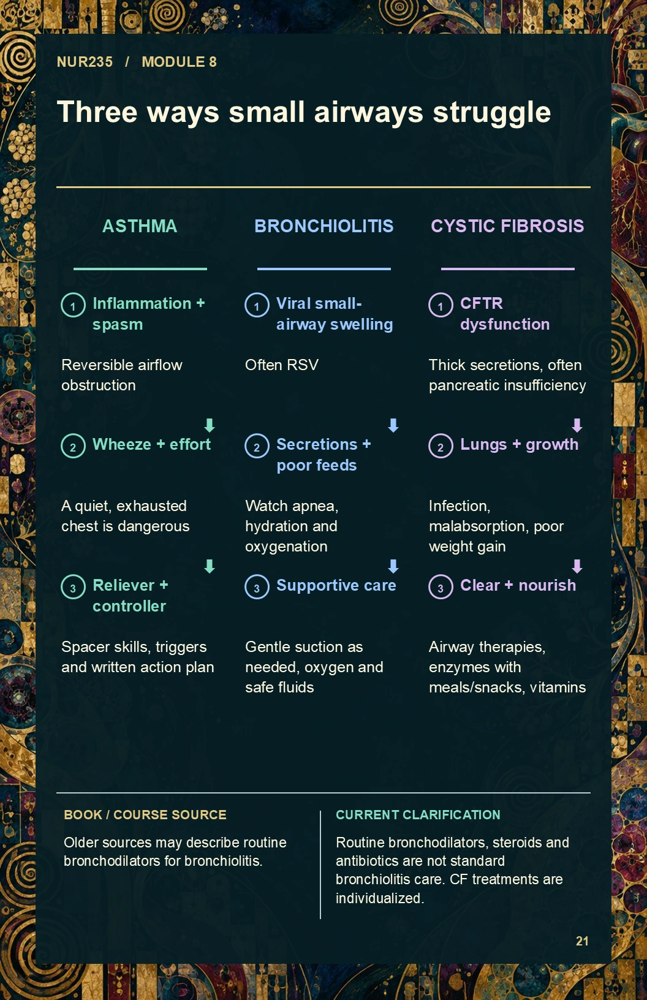
Read slide text and study notes
NUR235 / MODULE 8
Three ways small airways struggle
21
ASTHMA
1
Inflammation + spasm
Reversible airflow obstruction
2
Wheeze + effort
A quiet, exhausted chest is dangerous
3
Reliever + controller
Spacer skills, triggers and written action plan
BRONCHIOLITIS
1
Viral small-airway swelling
Often RSV
2
Secretions + poor feeds
Watch apnea, hydration and oxygenation
3
Supportive care
Gentle suction as needed, oxygen and safe fluids
CYSTIC FIBROSIS
1
CFTR dysfunction
Thick secretions, often pancreatic insufficiency
2
Lungs + growth
Infection, malabsorption, poor weight gain
3
Clear + nourish
Airway therapies, enzymes with meals/snacks, vitamins
BOOK / COURSE SOURCE
CURRENT CLARIFICATION
Older sources may describe routine bronchodilators for bronchiolitis.
Routine bronchodilators, steroids and antibiotics are not standard bronchiolitis care. CF treatments are individualized.
Original study notes and source references
NUR235 content mastery infographic. Original native diagram by Codex. No Claude-created graphics.
High-level overview. The user-supplied module content reviews and textbook anchor the content. Book/course statements and current clarifications remain separate. Full prior wording is preserved below for study reference.
Some neurologic and musculoskeletal chapters are missing from the provided book extract. Available course sources and identified primary references supplement these gaps.
Lower-airway infection and asthma
User textbook, Chapter 40: Child with a Respiratory Disorder work/module-reviews/Maternal and Child Textbook.txt
User textbook, Chapter 41: Child with a Cardiovascular Disorder work/module-reviews/Maternal and Child Textbook.txt
User textbook, Chapter 42: Immune disorders work/module-reviews/Maternal and Child Textbook.txt
User textbook, Chapter 43: Infectious disorders work/module-reviews/Maternal and Child Textbook.txt
User textbook, Chapter 50: Eye and ear disorders work/module-reviews/Maternal and Child Textbook.txt
CDC: Group A streptococcal pharyngitis https://www.cdc.gov/group-a-strep/hcp/clinical-guidance/strep-throat.html
CDC: Acute rheumatic fever https://www.cdc.gov/group-a-strep/hcp/clinical-guidance/acute-rheumatic-fever.html
NICE: Bronchiolitis recommendations https://www.nice.org.uk/guidance/ng9/chapter/Recommendations
Canadian Paediatric Society: Acute croup management https://cps.ca/en/documents/position/acute-management-of-croup
NHLBI: Asthma Care Quick Reference https://www.nhlbi.nih.gov/files/docs/guidelines/asthma_qrg.pdf
Cystic Fibrosis Foundation: Enzymes https://www.cff.org/managing-cf/enzymes
Cystic Fibrosis Foundation: Diagnosis guidelines https://www.cff.org/medical-professionals/cf-diagnosis-clinical-care-guidelines
CDC: Treatment of flu in children https://www.cdc.gov/flu/treatment/children-antiviral.html
CDC: Pediatric COVID care https://www.cdc.gov/covid/hcp/clinical-care/for-pediatric-hcp.html
CDC: COVID outpatient treatment, October 8 2026 https://www.cdc.gov/covid/hcp/clinical-care/outpatient-treatment.html
CDC: Pediatric outpatient antibiotic guidance https://www.cdc.gov/antibiotic-use/hcp/clinical-care/pediatric-outpatient.html
CDC: Ear infection basics https://www.cdc.gov/ear-infection/about/index.html
AHA 2024 Kawasaki scientific statement https://www.ahajournals.org/doi/epdf/10.1161/CIR.0000000000001295
ACR/AAAAI 2025 contrast hypersensitivity consensus https://pubs.rsna.org/doi/10.1148/radiol.240100
CHOP: Pulmonary stenosis https://www.chop.edu/conditions-diseases/pulmonary-stenosis
CHOP: Tricuspid atresia https://www.chop.edu/conditions-diseases/tricuspid-atresia
CHOP: Tetralogy of Fallot https://www.chop.edu/conditions-diseases/tetralogy-fallot
Bronchiolitis and pneumonia
Bronchiolitis, often RSV: small-airway inflammation, secretions and feeding difficulty. Prioritize oxygenation, gentle nasal suction when needed and safe hydration. Routine bronchodilators, steroids and antibiotics are not standard bronchiolitis treatment.
Pneumonia: fever, cough, tachypnea and increased work of breathing. Assess oxygenation and hydration. Treatment depends on cause and severity. Antibiotics treat selected bacterial disease.
Influenza and COVID-19
Influenza can cause abrupt fever, aches and respiratory symptoms. Prompt antiviral treatment matters for hospitalized, severe or high-risk children, even when presentation is later than 48 hours.
COVID-19 may cause respiratory or systemic symptoms. Assess risk and severity. Persistent fever with GI symptoms, rash or shock raises concern for MIS-C and requires urgent evaluation. Follow current treatment eligibility and infection-control guidance.
Asthma
Reversible airflow obstruction combines inflammation, bronchospasm and mucus. Assess work of breathing, air movement and response to rescue treatment. A quiet chest with exhaustion is dangerous.
Use prescribed reliever and controller therapy correctly. Teach spacer technique, trigger reduction, a written action plan and when to seek emergency care. Adequate hydration supports recovery, but an exhausted child may need a safer route than oral intake.
Cystic fibrosis and respiratory priorities
Cystic fibrosis
CFTR dysfunction causes thick secretions in multiple organs. Respiratory infections and pancreatic insufficiency impair breathing, digestion and growth. Sweat chloride and genetic evaluation support diagnosis.
Coordinate airway clearance, prescribed inhaled therapy and infection management. Pancreatic enzymes accompany meals and snacks when prescribed. Nutrition usually emphasizes adequate energy and protein, fat-soluble vitamins and individualized salt/fluid needs.
A deteriorating child
Increasing effort, poor feeding, reduced interaction, apnea or cyanosis require rapid reassessment. Bradycardia can be a late sign of severe pediatric respiratory compromise.
Keep suspected upper-airway obstruction calm. Monitor oxygenation and ventilation, support the airway and call for help early. Avoid exhausting a breathless child with prolonged feeding or procedures.
Family teaching and tracheostomy care
Teach medication purpose, return precautions and equipment use with demonstration back. For a tracheostomy, keep emergency equipment available and follow the child’s suctioning, humidification and emergency replacement plan.
Hand hygiene, smoke avoidance and appropriate immunization reduce preventable risk. RSV prevention now includes maternal vaccination or eligible infant antibodies, depending on the child and timing.
Exam 3 source clarifications
[{"id": "sn-rheumatic-kawasaki-vaccines", "handout_ids": ["1gM-y9y4oe19swQJEmrbzmC3NHqH83R-U"], "title": "Rheumatic fever, aspirin, and vaccines after IVIG", "visible_source_slide_cue": "Clarification: prescribed aspirin and vaccine-specific IVIG intervals—see companion note.", "paragraphs": ["Prescribed salicylates, including aspirin, can be part of acute rheumatic fever treatment, so the handout's blanket instruction to never give aspirin is inaccurate. After the 2 g/kg IVIG dose used for Kawasaki disease, CDC recommends waiting 11 months before measles- or varicella-containing vaccines, such as MMR and varicella. Inactivated influenza vaccine does not require that IVIG-related delay. Live attenuated nasal influenza vaccine (LAIV) is also an exception to the antibody-product spacing rule, but it must not be given to children ages 2–17 who are taking aspirin or salicylates. Check the actual vaccine, IVIG dose, and current contraindications when planning immunization."], "citations": [{"label": "CDC: Acute rheumatic fever treatment", "url": "https://www.cdc.gov/group-a-strep/hcp/clinical-guidance/acute-rheumatic-fever.html", "supports": "Salicylates are included in treatment; the original blanket prohibition is incorrect."}, {"label": "CDC: Timing and spacing of immunobiologics", "url": "https://www.cdc.gov/vaccines/hcp/imz-best-practices/timing-spacing-immunobiologics.html", "supports": "Kawasaki IVIG 2 g/kg: 11 months for measles/varicella-containing vaccines; no interval for non-live vaccines; LAIV is an exception to antibody-product spacing."}, {"label": "CDC: Nasal spray influenza vaccine", "url": "https://www.cdc.gov/flu/vaccine-types/nasalspray.html", "supports": "LAIV is contraindicated for children 2–17 receiving aspirin/salicylates; other contraindications and precautions apply."}]}, {"id": "sn-cath-perfusion-contrast", "handout_ids": ["1WeSRr07EMFQIkCr-IMqmeEXYjO7lnlht"], "title": "After catheterization: perfusion changes need assessment", "visible_source_slide_cue": "Clarification: new weak distal pulses need assessment; chest-drain calculations are corrected on the companion slide.", "paragraphs": ["A new or worsening weak distal pulse after arterial catheterization is not automatically a normal finding. Compare pulses with the preprocedure baseline and opposite limb, assess warmth, color, capillary refill, sensation, and movement, and promptly escalate a change—especially a pale or cool limb, delayed refill, or an absent pulse. Document the actual prior contrast agent and reaction: an isolated shellfish or povidone-iodine allergy does not establish an allergy to iodinated contrast. Follow the procedure team's access-site, positioning, and activity orders rather than applying one bed-rest interval to every catheterization."], "citations": [{"label": "Royal Children's Hospital: Post-cardiac-catheterization care", "url": "https://www.rch.org.au/rchcpg/hospital_clinical_guideline_index/Care_of_the_patient_post_cardiac_catheterisation/", "supports": "Diminished/absent pulses and poor distal perfusion can indicate thrombus; assess and escalate; procedure and access details determine care."}, {"label": "ACR–AAAAI: Radiocontrast hypersensitivity consensus", "url": "https://pubs.rsna.org/doi/full/10.1148/radiol.240100", "supports": "Iodine itself is not an allergen; isolated shellfish or iodine/skin-antiseptic allergy is not a special iodinated-contrast risk."}]}, {"id": "sn-chest-drain-arithmetic", "handout_ids": ["1WeSRr07EMFQIkCr-IMqmeEXYjO7lnlht"], "title": "Chest-drain examples: correct the units and arithmetic", "visible_source_slide_cue": "Calculation correction: for 2 kg, 3 mL/kg/hour = 6 mL/hour, not 12.", "paragraphs": ["The calculations below evaluate the handout's own expressions; they are not universal drainage orders. Multiplying mL/kg by body weight in kg leaves mL, so the 6 kg example gives 30–60 mL, not 30–60 mL/kg. For a 2 kg child, 3 mL/kg/hour equals 6 mL/hour and 18 mL over 3 hours; the printed 12 mL/hour does not follow that formula. Assess the child and the drainage trend, use the surgical team's reporting thresholds, and escalate excessive bleeding or a sudden stop in drainage with deterioration."], "calculation_rows": [{"expression": "6 kg × (5–10 mL/kg)", "correct_result": "30–60 mL", "meaning": "Volume in the handout's stated one-hour example; kg cancels."}, {"expression": "6 kg × 3 mL/kg/hour", "correct_result": "18 mL/hour; 54 mL over 3 hours", "meaning": "Correct rate and cumulative volume for the 6 kg example."}, {"expression": "2 kg × 3 mL/kg/hour", "correct_result": "6 mL/hour; 18 mL over 3 hours", "meaning": "Corrects the handout's printed 12 mL/hour answer."}, {"expression": "12 mL/hour ÷ 2 kg", "correct_result": "6 mL/kg/hour", "meaning": "Shows why 12 mL/hour is inconsistent with a 3 mL/kg/hour formula for 2 kg."}], "citations": [{"label": "Royal Children's Hospital: Chest-drain management", "url": "https://www.rch.org.au/rchcpg/hospital_clinical_guideline_index/Chest_Drain_Management/", "supports": "Hourly volume/trend monitoring; report sudden increases, persistently excessive output, and markedly reduced/stopped output when blockage is possible. The numerical corrections themselves are dimensional arithmetic."}], "editorial_note": "Do not present the original 5–10 mL/kg range as a universal current threshold. The cited RCH protocol uses its own triggers (>5 mL/kg in one hour or >3 mL/kg consistently for three hours); local surgical orders and the child's condition govern escalation."}, {"id": "sn-digoxin-individual-assessment", "handout_ids": ["170g_eNve4FF9L_SaI-qTNdf3sEvOXdRl"], "title": "Digoxin: a pulse above 100 is not automatic clearance", "visible_source_slide_cue": "Clarification: use the child's ordered hold parameters and full assessment for digoxin.", "paragraphs": ["A heart rate above 100/min does not guarantee that digoxin is safe to give. Assess the apical rate and rhythm, use the child's age-appropriate prescribed hold parameters, and review the dose, renal function, electrolytes, and clinical findings. New bradycardia or another arrhythmia, poor feeding, or vomiting may signal toxicity and warrants prompt clinical review. Toxicity can occur below a serum concentration of 2 ng/mL, so interpret the level together with the child's condition rather than as a stand-alone safety cutoff."], "citations": [{"label": "DailyMed: Digoxin prescribing information", "url": "https://dailymed.nlm.nih.gov/dailymed/lookup.cfm?setid=ca595f0c-5bf0-4feb-8183-47832ee8c820", "supports": "Dosing depends on age, body weight, renal function, and interacting drugs; bradycardia/arrhythmias and GI findings may indicate toxicity; electrolyte abnormalities increase risk; toxicity can occur below 2 ng/mL."}]}, {"id": "sn-cyanotic-heart-defect-mechanisms", "handout_ids": ["1YFHTbMrnHGAsXWanK-Z4qj_5mHrTLeKs", "1XqApDWmoftwLELzsaiE-3d9Qo8ktDgOC"], "title": "The cyanotic 'T' mnemonic groups different mechanisms", "visible_source_slide_cue": "Clarification: d-TGA has parallel circuits; the cyanotic defects do not all share one shunt mechanism.", "paragraphs": ["The cyanotic 'T' mnemonic is a memory aid, not one shared right-to-left shunt mechanism. In d-transposition of the great arteries, blood follows parallel systemic and pulmonary circuits, and communication such as an ASD, VSD, or PDA allows mixing that can deliver oxygenated blood to the body. In persistent truncus arteriosus, a common arterial trunk and usually a VSD produce mixing, often with excessive pulmonary blood flow and heart failure as well as cyanosis."], "citations": [{"label": "CDC: d-Transposition of the great arteries", "url": "https://www.cdc.gov/heart-defects/about/d-tga.html", "supports": "The aorta arises from the RV and pulmonary artery from the LV; blood recirculates separately and associated communications allow mixing."}, {"label": "CDC: Truncus arteriosus", "url": "https://www.cdc.gov/heart-defects/about/truncus-arteriosus.html", "supports": "Common arterial vessel, associated VSD, mixing, and excessive pulmonary flow/heart-failure risk."}]}, {"id": "sn-cf-diabetes-mechanism", "handout_ids": ["1CdqOYoB3DNeIiyIDs5lXq1p32wSP43Xg"], "title": "CF-related diabetes: endocrine and exocrine problems differ", "visible_source_slide_cue": "Clarification: CF-related diabetes results from reduced insulin production, not insulin trapped in a duct.", "paragraphs": ["In CF, blocked pancreatic ducts keep digestive enzymes from reaching the intestine, causing malabsorption. CF-related diabetes develops mainly because pancreatic damage reduces insulin production; insulin resistance can also contribute, especially during illness or steroid treatment. Insulin is released into the blood, so the handout's description of insulin being unable to escape a mucus-blocked duct confuses endocrine insulin secretion with exocrine enzyme delivery."], "citations": [{"label": "Cystic Fibrosis Foundation: CF-related diabetes", "url": "https://www.cff.org/managing-cf/cystic-fibrosis-related-diabetes", "supports": "Pancreatic damage reduces insulin production; resistance may coexist."}, {"label": "Cystic Fibrosis Foundation: Digestive system", "url": "https://www.cff.org/managing-cf/digestive-system", "supports": "Pancreatic digestive enzymes travel through ducts to the intestine; endocrine and exocrine pancreatic functions differ."}]}, {"id": "sn-cf-mucolytic-hemoptysis", "handout_ids": ["19KHiFqHDbjczuGmZS1CFDGdU-S7JwLDa"], "title": "CF: prescribed mucolytics and blood in sputum", "visible_source_slide_cue": "Clarification: acetylcysteine has a bronchospasm risk; new or persistent hemoptysis needs review.", "paragraphs": ["Inhaled acetylcysteine can cause unpredictable bronchospasm, but that risk does not mean it is universally unsafe for every patient. Use the CF team's prescribed regimen and monitor response; progressive bronchospasm requires stopping the medicine and clinical review. Blood-streaked sputum should not be dismissed as simply normal: contact the CF team for a first episode or persistent bleeding, and promptly report increasing or more substantial bleeding."], "citations": [{"label": "DailyMed: Acetylcysteine inhalation prescribing information", "url": "https://dailymed.nlm.nih.gov/dailymed/fda/fdaDrugXsl.cfm?setid=75b48fab-cef6-465c-a1e0-d085b3988bc4", "supports": "Bronchospasm may occur unpredictably; progressive bronchospasm requires discontinuation."}, {"label": "Cystic Fibrosis Foundation: Hemoptysis care guidelines", "url": "https://www.cff.org/medical-professionals/pneumothorax-and-hemoptysis-clinical-care-guidelines", "supports": "First or persistent scant hemoptysis warrants contact; at least mild hemoptysis warrants provider contact; major bleeding requires admission."}]}, {"id": "sn-tonsillectomy-milk", "handout_ids": ["1qDwxYxWiyowTYsQDES-GSj0at0_tG3n_"], "title": "Tonsillectomy diet: follow the surgeon's plan", "visible_source_slide_cue": "Clarification: a universal no-dairy rule is not required by current postoperative guidance.", "paragraphs": ["A universal ban on milk products after tonsillectomy is not supported by current pediatric postoperative advice. Milk and soft foods such as yogurt may be used if tolerated and consistent with the surgeon's instructions; maintaining hydration and adequate intake matters. Fresh bleeding or repeated swallowing that may indicate bleeding needs prompt assessment."], "citations": [{"label": "Sydney Children's Hospitals Network: Tonsillectomy", "url": "https://www.schn.health.nsw.gov.au/factsheets/tonsillectomy", "supports": "Advice updated April 2026 includes milk, yogurt/pudding, hydration, and prompt assessment of postoperative bleeding."}]}, {"id": "sn-rsv-prevention-update", "handout_ids": ["1DLYiMpl_2LDhiGy0jFptf_XHQM_30rQd"], "title": "RSV prevention has changed", "visible_source_slide_cue": "Current prevention: maternal vaccination or an eligible infant's long-acting antibody—see companion note.", "paragraphs": ["Palivizumab on the original handout reflects an earlier prevention approach and is not a complete summary of current RSV prevention. Current CDC guidance uses maternal RSV vaccination or an eligible infant's long-acting antibody, nirsevimab or clesrovimab; most infants do not need both maternal vaccination and an infant antibody. Eligibility depends on age, maternal vaccination, season, and risk, and these products prevent severe RSV disease rather than treat an active infection."], "citations": [{"label": "CDC: RSV immunization guidance for infants and young children", "url": "https://www.cdc.gov/rsv/hcp/vaccine-clinical-guidance/infants-young-children.html", "supports": "Maternal vaccine or infant long-acting monoclonal antibody; nirsevimab and clesrovimab options, eligibility criteria, and prevention purpose."}]}, {"id": "sn-croup-cold-air-context", "handout_ids": ["1n6xG4xxEb5-KGdLnNWC3VbZYZHO6ZixJ"], "title": "Croup: cold air is a comfort measure, not an escalation plan", "visible_source_slide_cue": "Clarification: cold air may help symptoms; stridor or respiratory distress still needs severity-based care.", "paragraphs": ["Cold outdoor air may temporarily lessen moderate croup symptoms, but the freezer-air memory cue is not a complete treatment plan. Stridor at rest, increasing work of breathing, or deteriorating alertness requires prompt assessment and escalation. Management depends on severity and includes corticosteroids when indicated, with nebulized epinephrine and skilled airway support for severe or life-threatening illness."], "citations": [{"label": "Royal Children's Hospital: Croup guideline", "url": "https://www.rch.org.au/clinicalguide/guideline_index/Croup_Laryngotracheobronchitis/", "supports": "Cold air below 10°C may reduce moderate symptoms; severity-based assessment, corticosteroids, nebulized adrenaline, and airway escalation."}]}]
Croup and bronchiolitis
Older source material emphasizes humidified air or routine bronchodilator treatment. Current croup care centers on corticosteroids and severity-based nebulized epinephrine. Bronchiolitis care is primarily supportive.
Rheumatic fever and Kawasaki disease
A Simple Nursing handout says never to give aspirin for rheumatic fever. Prescribed salicylates can be part of treatment.
After Kawasaki treatment with IVIG 2 g/kg, the 11-month interval applies to measles- or varicella-containing vaccines. Inactivated influenza vaccine has no IVIG-related delay.
Digoxin and chest drainage
A handout gives an absolute pulse-above-100 rule for digoxin. Use the child’s age, rhythm, clinical assessment and prescribed hold parameters.
Corrected handout arithmetic: 6 kg × 5–10 mL/kg = 30–60 mL. At a stated 3 mL/kg/hour threshold, 2 kg × 3 = 6 mL/hour. These calculations explain the printed examples. They do not establish a universal chest-drain reporting threshold.
Original overview
112 / 254Three small-airway problems
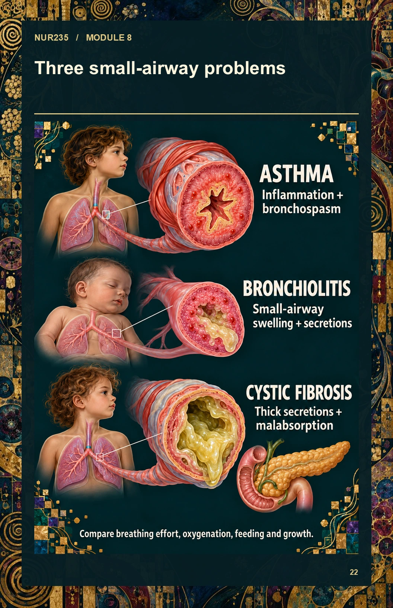
Read slide text and study notes
NUR235 / MODULE 8
Three small-airway problems
22
Original study notes and source references
Three small-airway problems
Schematic overview. Illustrations are not drawn to anatomical scale. Use the adjacent course details and assigned textbook for exam wording.
NUR235 content mastery infographic. Original native diagram by Codex. No Claude-created graphics.
High-level overview. The user-supplied module content reviews and textbook anchor the content. Book/course statements and current clarifications remain separate. Full prior wording is preserved below for study reference.
Some neurologic and musculoskeletal chapters are missing from the provided book extract. Available course sources and identified primary references supplement these gaps.
Lower-airway infection and asthma
User textbook, Chapter 40: Child with a Respiratory Disorder work/module-reviews/Maternal and Child Textbook.txt
User textbook, Chapter 41: Child with a Cardiovascular Disorder work/module-reviews/Maternal and Child Textbook.txt
User textbook, Chapter 42: Immune disorders work/module-reviews/Maternal and Child Textbook.txt
User textbook, Chapter 43: Infectious disorders work/module-reviews/Maternal and Child Textbook.txt
User textbook, Chapter 50: Eye and ear disorders work/module-reviews/Maternal and Child Textbook.txt
CDC: Group A streptococcal pharyngitis https://www.cdc.gov/group-a-strep/hcp/clinical-guidance/strep-throat.html
CDC: Acute rheumatic fever https://www.cdc.gov/group-a-strep/hcp/clinical-guidance/acute-rheumatic-fever.html
NICE: Bronchiolitis recommendations https://www.nice.org.uk/guidance/ng9/chapter/Recommendations
Canadian Paediatric Society: Acute croup management https://cps.ca/en/documents/position/acute-management-of-croup
NHLBI: Asthma Care Quick Reference https://www.nhlbi.nih.gov/files/docs/guidelines/asthma_qrg.pdf
Cystic Fibrosis Foundation: Enzymes https://www.cff.org/managing-cf/enzymes
Cystic Fibrosis Foundation: Diagnosis guidelines https://www.cff.org/medical-professionals/cf-diagnosis-clinical-care-guidelines
CDC: Treatment of flu in children https://www.cdc.gov/flu/treatment/children-antiviral.html
CDC: Pediatric COVID care https://www.cdc.gov/covid/hcp/clinical-care/for-pediatric-hcp.html
CDC: COVID outpatient treatment, October 8 2026 https://www.cdc.gov/covid/hcp/clinical-care/outpatient-treatment.html
CDC: Pediatric outpatient antibiotic guidance https://www.cdc.gov/antibiotic-use/hcp/clinical-care/pediatric-outpatient.html
CDC: Ear infection basics https://www.cdc.gov/ear-infection/about/index.html
AHA 2024 Kawasaki scientific statement https://www.ahajournals.org/doi/epdf/10.1161/CIR.0000000000001295
ACR/AAAAI 2025 contrast hypersensitivity consensus https://pubs.rsna.org/doi/10.1148/radiol.240100
CHOP: Pulmonary stenosis https://www.chop.edu/conditions-diseases/pulmonary-stenosis
CHOP: Tricuspid atresia https://www.chop.edu/conditions-diseases/tricuspid-atresia
CHOP: Tetralogy of Fallot https://www.chop.edu/conditions-diseases/tetralogy-fallot
Bronchiolitis and pneumonia
Bronchiolitis, often RSV: small-airway inflammation, secretions and feeding difficulty. Prioritize oxygenation, gentle nasal suction when needed and safe hydration. Routine bronchodilators, steroids and antibiotics are not standard bronchiolitis treatment.
Pneumonia: fever, cough, tachypnea and increased work of breathing. Assess oxygenation and hydration. Treatment depends on cause and severity. Antibiotics treat selected bacterial disease.
Influenza and COVID-19
Influenza can cause abrupt fever, aches and respiratory symptoms. Prompt antiviral treatment matters for hospitalized, severe or high-risk children, even when presentation is later than 48 hours.
COVID-19 may cause respiratory or systemic symptoms. Assess risk and severity. Persistent fever with GI symptoms, rash or shock raises concern for MIS-C and requires urgent evaluation. Follow current treatment eligibility and infection-control guidance.
Asthma
Reversible airflow obstruction combines inflammation, bronchospasm and mucus. Assess work of breathing, air movement and response to rescue treatment. A quiet chest with exhaustion is dangerous.
Use prescribed reliever and controller therapy correctly. Teach spacer technique, trigger reduction, a written action plan and when to seek emergency care. Adequate hydration supports recovery, but an exhausted child may need a safer route than oral intake.
Cystic fibrosis and respiratory priorities
Cystic fibrosis
CFTR dysfunction causes thick secretions in multiple organs. Respiratory infections and pancreatic insufficiency impair breathing, digestion and growth. Sweat chloride and genetic evaluation support diagnosis.
Coordinate airway clearance, prescribed inhaled therapy and infection management. Pancreatic enzymes accompany meals and snacks when prescribed. Nutrition usually emphasizes adequate energy and protein, fat-soluble vitamins and individualized salt/fluid needs.
A deteriorating child
Increasing effort, poor feeding, reduced interaction, apnea or cyanosis require rapid reassessment. Bradycardia can be a late sign of severe pediatric respiratory compromise.
Keep suspected upper-airway obstruction calm. Monitor oxygenation and ventilation, support the airway and call for help early. Avoid exhausting a breathless child with prolonged feeding or procedures.
Family teaching and tracheostomy care
Teach medication purpose, return precautions and equipment use with demonstration back. For a tracheostomy, keep emergency equipment available and follow the child’s suctioning, humidification and emergency replacement plan.
Hand hygiene, smoke avoidance and appropriate immunization reduce preventable risk. RSV prevention now includes maternal vaccination or eligible infant antibodies, depending on the child and timing.
Exam 3 source clarifications
[{"id": "sn-rheumatic-kawasaki-vaccines", "handout_ids": ["1gM-y9y4oe19swQJEmrbzmC3NHqH83R-U"], "title": "Rheumatic fever, aspirin, and vaccines after IVIG", "visible_source_slide_cue": "Clarification: prescribed aspirin and vaccine-specific IVIG intervals—see companion note.", "paragraphs": ["Prescribed salicylates, including aspirin, can be part of acute rheumatic fever treatment, so the handout's blanket instruction to never give aspirin is inaccurate. After the 2 g/kg IVIG dose used for Kawasaki disease, CDC recommends waiting 11 months before measles- or varicella-containing vaccines, such as MMR and varicella. Inactivated influenza vaccine does not require that IVIG-related delay. Live attenuated nasal influenza vaccine (LAIV) is also an exception to the antibody-product spacing rule, but it must not be given to children ages 2–17 who are taking aspirin or salicylates. Check the actual vaccine, IVIG dose, and current contraindications when planning immunization."], "citations": [{"label": "CDC: Acute rheumatic fever treatment", "url": "https://www.cdc.gov/group-a-strep/hcp/clinical-guidance/acute-rheumatic-fever.html", "supports": "Salicylates are included in treatment; the original blanket prohibition is incorrect."}, {"label": "CDC: Timing and spacing of immunobiologics", "url": "https://www.cdc.gov/vaccines/hcp/imz-best-practices/timing-spacing-immunobiologics.html", "supports": "Kawasaki IVIG 2 g/kg: 11 months for measles/varicella-containing vaccines; no interval for non-live vaccines; LAIV is an exception to antibody-product spacing."}, {"label": "CDC: Nasal spray influenza vaccine", "url": "https://www.cdc.gov/flu/vaccine-types/nasalspray.html", "supports": "LAIV is contraindicated for children 2–17 receiving aspirin/salicylates; other contraindications and precautions apply."}]}, {"id": "sn-cath-perfusion-contrast", "handout_ids": ["1WeSRr07EMFQIkCr-IMqmeEXYjO7lnlht"], "title": "After catheterization: perfusion changes need assessment", "visible_source_slide_cue": "Clarification: new weak distal pulses need assessment; chest-drain calculations are corrected on the companion slide.", "paragraphs": ["A new or worsening weak distal pulse after arterial catheterization is not automatically a normal finding. Compare pulses with the preprocedure baseline and opposite limb, assess warmth, color, capillary refill, sensation, and movement, and promptly escalate a change—especially a pale or cool limb, delayed refill, or an absent pulse. Document the actual prior contrast agent and reaction: an isolated shellfish or povidone-iodine allergy does not establish an allergy to iodinated contrast. Follow the procedure team's access-site, positioning, and activity orders rather than applying one bed-rest interval to every catheterization."], "citations": [{"label": "Royal Children's Hospital: Post-cardiac-catheterization care", "url": "https://www.rch.org.au/rchcpg/hospital_clinical_guideline_index/Care_of_the_patient_post_cardiac_catheterisation/", "supports": "Diminished/absent pulses and poor distal perfusion can indicate thrombus; assess and escalate; procedure and access details determine care."}, {"label": "ACR–AAAAI: Radiocontrast hypersensitivity consensus", "url": "https://pubs.rsna.org/doi/full/10.1148/radiol.240100", "supports": "Iodine itself is not an allergen; isolated shellfish or iodine/skin-antiseptic allergy is not a special iodinated-contrast risk."}]}, {"id": "sn-chest-drain-arithmetic", "handout_ids": ["1WeSRr07EMFQIkCr-IMqmeEXYjO7lnlht"], "title": "Chest-drain examples: correct the units and arithmetic", "visible_source_slide_cue": "Calculation correction: for 2 kg, 3 mL/kg/hour = 6 mL/hour, not 12.", "paragraphs": ["The calculations below evaluate the handout's own expressions; they are not universal drainage orders. Multiplying mL/kg by body weight in kg leaves mL, so the 6 kg example gives 30–60 mL, not 30–60 mL/kg. For a 2 kg child, 3 mL/kg/hour equals 6 mL/hour and 18 mL over 3 hours; the printed 12 mL/hour does not follow that formula. Assess the child and the drainage trend, use the surgical team's reporting thresholds, and escalate excessive bleeding or a sudden stop in drainage with deterioration."], "calculation_rows": [{"expression": "6 kg × (5–10 mL/kg)", "correct_result": "30–60 mL", "meaning": "Volume in the handout's stated one-hour example; kg cancels."}, {"expression": "6 kg × 3 mL/kg/hour", "correct_result": "18 mL/hour; 54 mL over 3 hours", "meaning": "Correct rate and cumulative volume for the 6 kg example."}, {"expression": "2 kg × 3 mL/kg/hour", "correct_result": "6 mL/hour; 18 mL over 3 hours", "meaning": "Corrects the handout's printed 12 mL/hour answer."}, {"expression": "12 mL/hour ÷ 2 kg", "correct_result": "6 mL/kg/hour", "meaning": "Shows why 12 mL/hour is inconsistent with a 3 mL/kg/hour formula for 2 kg."}], "citations": [{"label": "Royal Children's Hospital: Chest-drain management", "url": "https://www.rch.org.au/rchcpg/hospital_clinical_guideline_index/Chest_Drain_Management/", "supports": "Hourly volume/trend monitoring; report sudden increases, persistently excessive output, and markedly reduced/stopped output when blockage is possible. The numerical corrections themselves are dimensional arithmetic."}], "editorial_note": "Do not present the original 5–10 mL/kg range as a universal current threshold. The cited RCH protocol uses its own triggers (>5 mL/kg in one hour or >3 mL/kg consistently for three hours); local surgical orders and the child's condition govern escalation."}, {"id": "sn-digoxin-individual-assessment", "handout_ids": ["170g_eNve4FF9L_SaI-qTNdf3sEvOXdRl"], "title": "Digoxin: a pulse above 100 is not automatic clearance", "visible_source_slide_cue": "Clarification: use the child's ordered hold parameters and full assessment for digoxin.", "paragraphs": ["A heart rate above 100/min does not guarantee that digoxin is safe to give. Assess the apical rate and rhythm, use the child's age-appropriate prescribed hold parameters, and review the dose, renal function, electrolytes, and clinical findings. New bradycardia or another arrhythmia, poor feeding, or vomiting may signal toxicity and warrants prompt clinical review. Toxicity can occur below a serum concentration of 2 ng/mL, so interpret the level together with the child's condition rather than as a stand-alone safety cutoff."], "citations": [{"label": "DailyMed: Digoxin prescribing information", "url": "https://dailymed.nlm.nih.gov/dailymed/lookup.cfm?setid=ca595f0c-5bf0-4feb-8183-47832ee8c820", "supports": "Dosing depends on age, body weight, renal function, and interacting drugs; bradycardia/arrhythmias and GI findings may indicate toxicity; electrolyte abnormalities increase risk; toxicity can occur below 2 ng/mL."}]}, {"id": "sn-cyanotic-heart-defect-mechanisms", "handout_ids": ["1YFHTbMrnHGAsXWanK-Z4qj_5mHrTLeKs", "1XqApDWmoftwLELzsaiE-3d9Qo8ktDgOC"], "title": "The cyanotic 'T' mnemonic groups different mechanisms", "visible_source_slide_cue": "Clarification: d-TGA has parallel circuits; the cyanotic defects do not all share one shunt mechanism.", "paragraphs": ["The cyanotic 'T' mnemonic is a memory aid, not one shared right-to-left shunt mechanism. In d-transposition of the great arteries, blood follows parallel systemic and pulmonary circuits, and communication such as an ASD, VSD, or PDA allows mixing that can deliver oxygenated blood to the body. In persistent truncus arteriosus, a common arterial trunk and usually a VSD produce mixing, often with excessive pulmonary blood flow and heart failure as well as cyanosis."], "citations": [{"label": "CDC: d-Transposition of the great arteries", "url": "https://www.cdc.gov/heart-defects/about/d-tga.html", "supports": "The aorta arises from the RV and pulmonary artery from the LV; blood recirculates separately and associated communications allow mixing."}, {"label": "CDC: Truncus arteriosus", "url": "https://www.cdc.gov/heart-defects/about/truncus-arteriosus.html", "supports": "Common arterial vessel, associated VSD, mixing, and excessive pulmonary flow/heart-failure risk."}]}, {"id": "sn-cf-diabetes-mechanism", "handout_ids": ["1CdqOYoB3DNeIiyIDs5lXq1p32wSP43Xg"], "title": "CF-related diabetes: endocrine and exocrine problems differ", "visible_source_slide_cue": "Clarification: CF-related diabetes results from reduced insulin production, not insulin trapped in a duct.", "paragraphs": ["In CF, blocked pancreatic ducts keep digestive enzymes from reaching the intestine, causing malabsorption. CF-related diabetes develops mainly because pancreatic damage reduces insulin production; insulin resistance can also contribute, especially during illness or steroid treatment. Insulin is released into the blood, so the handout's description of insulin being unable to escape a mucus-blocked duct confuses endocrine insulin secretion with exocrine enzyme delivery."], "citations": [{"label": "Cystic Fibrosis Foundation: CF-related diabetes", "url": "https://www.cff.org/managing-cf/cystic-fibrosis-related-diabetes", "supports": "Pancreatic damage reduces insulin production; resistance may coexist."}, {"label": "Cystic Fibrosis Foundation: Digestive system", "url": "https://www.cff.org/managing-cf/digestive-system", "supports": "Pancreatic digestive enzymes travel through ducts to the intestine; endocrine and exocrine pancreatic functions differ."}]}, {"id": "sn-cf-mucolytic-hemoptysis", "handout_ids": ["19KHiFqHDbjczuGmZS1CFDGdU-S7JwLDa"], "title": "CF: prescribed mucolytics and blood in sputum", "visible_source_slide_cue": "Clarification: acetylcysteine has a bronchospasm risk; new or persistent hemoptysis needs review.", "paragraphs": ["Inhaled acetylcysteine can cause unpredictable bronchospasm, but that risk does not mean it is universally unsafe for every patient. Use the CF team's prescribed regimen and monitor response; progressive bronchospasm requires stopping the medicine and clinical review. Blood-streaked sputum should not be dismissed as simply normal: contact the CF team for a first episode or persistent bleeding, and promptly report increasing or more substantial bleeding."], "citations": [{"label": "DailyMed: Acetylcysteine inhalation prescribing information", "url": "https://dailymed.nlm.nih.gov/dailymed/fda/fdaDrugXsl.cfm?setid=75b48fab-cef6-465c-a1e0-d085b3988bc4", "supports": "Bronchospasm may occur unpredictably; progressive bronchospasm requires discontinuation."}, {"label": "Cystic Fibrosis Foundation: Hemoptysis care guidelines", "url": "https://www.cff.org/medical-professionals/pneumothorax-and-hemoptysis-clinical-care-guidelines", "supports": "First or persistent scant hemoptysis warrants contact; at least mild hemoptysis warrants provider contact; major bleeding requires admission."}]}, {"id": "sn-tonsillectomy-milk", "handout_ids": ["1qDwxYxWiyowTYsQDES-GSj0at0_tG3n_"], "title": "Tonsillectomy diet: follow the surgeon's plan", "visible_source_slide_cue": "Clarification: a universal no-dairy rule is not required by current postoperative guidance.", "paragraphs": ["A universal ban on milk products after tonsillectomy is not supported by current pediatric postoperative advice. Milk and soft foods such as yogurt may be used if tolerated and consistent with the surgeon's instructions; maintaining hydration and adequate intake matters. Fresh bleeding or repeated swallowing that may indicate bleeding needs prompt assessment."], "citations": [{"label": "Sydney Children's Hospitals Network: Tonsillectomy", "url": "https://www.schn.health.nsw.gov.au/factsheets/tonsillectomy", "supports": "Advice updated April 2026 includes milk, yogurt/pudding, hydration, and prompt assessment of postoperative bleeding."}]}, {"id": "sn-rsv-prevention-update", "handout_ids": ["1DLYiMpl_2LDhiGy0jFptf_XHQM_30rQd"], "title": "RSV prevention has changed", "visible_source_slide_cue": "Current prevention: maternal vaccination or an eligible infant's long-acting antibody—see companion note.", "paragraphs": ["Palivizumab on the original handout reflects an earlier prevention approach and is not a complete summary of current RSV prevention. Current CDC guidance uses maternal RSV vaccination or an eligible infant's long-acting antibody, nirsevimab or clesrovimab; most infants do not need both maternal vaccination and an infant antibody. Eligibility depends on age, maternal vaccination, season, and risk, and these products prevent severe RSV disease rather than treat an active infection."], "citations": [{"label": "CDC: RSV immunization guidance for infants and young children", "url": "https://www.cdc.gov/rsv/hcp/vaccine-clinical-guidance/infants-young-children.html", "supports": "Maternal vaccine or infant long-acting monoclonal antibody; nirsevimab and clesrovimab options, eligibility criteria, and prevention purpose."}]}, {"id": "sn-croup-cold-air-context", "handout_ids": ["1n6xG4xxEb5-KGdLnNWC3VbZYZHO6ZixJ"], "title": "Croup: cold air is a comfort measure, not an escalation plan", "visible_source_slide_cue": "Clarification: cold air may help symptoms; stridor or respiratory distress still needs severity-based care.", "paragraphs": ["Cold outdoor air may temporarily lessen moderate croup symptoms, but the freezer-air memory cue is not a complete treatment plan. Stridor at rest, increasing work of breathing, or deteriorating alertness requires prompt assessment and escalation. Management depends on severity and includes corticosteroids when indicated, with nebulized epinephrine and skilled airway support for severe or life-threatening illness."], "citations": [{"label": "Royal Children's Hospital: Croup guideline", "url": "https://www.rch.org.au/clinicalguide/guideline_index/Croup_Laryngotracheobronchitis/", "supports": "Cold air below 10°C may reduce moderate symptoms; severity-based assessment, corticosteroids, nebulized adrenaline, and airway escalation."}]}]
Croup and bronchiolitis
Older source material emphasizes humidified air or routine bronchodilator treatment. Current croup care centers on corticosteroids and severity-based nebulized epinephrine. Bronchiolitis care is primarily supportive.
Rheumatic fever and Kawasaki disease
A Simple Nursing handout says never to give aspirin for rheumatic fever. Prescribed salicylates can be part of treatment.
After Kawasaki treatment with IVIG 2 g/kg, the 11-month interval applies to measles- or varicella-containing vaccines. Inactivated influenza vaccine has no IVIG-related delay.
Digoxin and chest drainage
A handout gives an absolute pulse-above-100 rule for digoxin. Use the child’s age, rhythm, clinical assessment and prescribed hold parameters.
Corrected handout arithmetic: 6 kg × 5–10 mL/kg = 30–60 mL. At a stated 3 mL/kg/hour threshold, 2 kg × 3 = 6 mL/hour. These calculations explain the printed examples. They do not establish a universal chest-drain reporting threshold.
Original overview
113 / 254Common respiratory problems
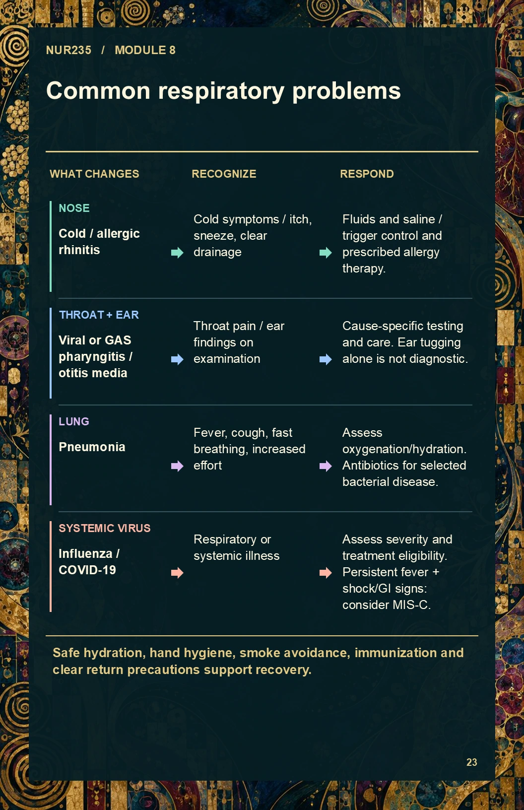
Read slide text and study notes
NUR235 / MODULE 8
Common respiratory problems
23
WHAT CHANGES
RECOGNIZE
RESPOND
NOSE
Cold / allergic rhinitis
Cold symptoms / itch, sneeze, clear drainage
Fluids and saline / trigger control and prescribed allergy therapy.
THROAT + EAR
Viral or GAS pharyngitis / otitis media
Throat pain / ear findings on examination
Cause-specific testing and care. Ear tugging alone is not diagnostic.
LUNG
Pneumonia
Fever, cough, fast breathing, increased effort
Assess oxygenation/hydration. Antibiotics for selected bacterial disease.
SYSTEMIC VIRUS
Influenza / COVID-19
Respiratory or systemic illness
Assess severity and treatment eligibility. Persistent fever + shock/GI signs: consider MIS-C.
Safe hydration, hand hygiene, smoke avoidance, immunization and clear return precautions support recovery.
Original study notes and source references
NUR235 content mastery infographic. Original native diagram by Codex. No Claude-created graphics.
High-level overview. The user-supplied module content reviews and textbook anchor the content. Book/course statements and current clarifications remain separate. Full prior wording is preserved below for study reference.
Some neurologic and musculoskeletal chapters are missing from the provided book extract. Available course sources and identified primary references supplement these gaps.
Upper-airway and common respiratory illness
User textbook, Chapter 40: Child with a Respiratory Disorder work/module-reviews/Maternal and Child Textbook.txt
User textbook, Chapter 41: Child with a Cardiovascular Disorder work/module-reviews/Maternal and Child Textbook.txt
User textbook, Chapter 42: Immune disorders work/module-reviews/Maternal and Child Textbook.txt
User textbook, Chapter 43: Infectious disorders work/module-reviews/Maternal and Child Textbook.txt
User textbook, Chapter 50: Eye and ear disorders work/module-reviews/Maternal and Child Textbook.txt
CDC: Group A streptococcal pharyngitis https://www.cdc.gov/group-a-strep/hcp/clinical-guidance/strep-throat.html
CDC: Acute rheumatic fever https://www.cdc.gov/group-a-strep/hcp/clinical-guidance/acute-rheumatic-fever.html
NICE: Bronchiolitis recommendations https://www.nice.org.uk/guidance/ng9/chapter/Recommendations
Canadian Paediatric Society: Acute croup management https://cps.ca/en/documents/position/acute-management-of-croup
NHLBI: Asthma Care Quick Reference https://www.nhlbi.nih.gov/files/docs/guidelines/asthma_qrg.pdf
Cystic Fibrosis Foundation: Enzymes https://www.cff.org/managing-cf/enzymes
Cystic Fibrosis Foundation: Diagnosis guidelines https://www.cff.org/medical-professionals/cf-diagnosis-clinical-care-guidelines
CDC: Treatment of flu in children https://www.cdc.gov/flu/treatment/children-antiviral.html
CDC: Pediatric COVID care https://www.cdc.gov/covid/hcp/clinical-care/for-pediatric-hcp.html
CDC: COVID outpatient treatment, October 8 2026 https://www.cdc.gov/covid/hcp/clinical-care/outpatient-treatment.html
CDC: Pediatric outpatient antibiotic guidance https://www.cdc.gov/antibiotic-use/hcp/clinical-care/pediatric-outpatient.html
CDC: Ear infection basics https://www.cdc.gov/ear-infection/about/index.html
AHA 2024 Kawasaki scientific statement https://www.ahajournals.org/doi/epdf/10.1161/CIR.0000000000001295
ACR/AAAAI 2025 contrast hypersensitivity consensus https://pubs.rsna.org/doi/10.1148/radiol.240100
CHOP: Pulmonary stenosis https://www.chop.edu/conditions-diseases/pulmonary-stenosis
CHOP: Tricuspid atresia https://www.chop.edu/conditions-diseases/tricuspid-atresia
CHOP: Tetralogy of Fallot https://www.chop.edu/conditions-diseases/tetralogy-fallot
Croup and epiglottitis
Croup: barking cough, hoarseness and inspiratory stridor. Keep the child calm. Dexamethasone treats airway inflammation, and nebulized epinephrine may be needed for moderate or severe illness with observation afterward.
Epiglottitis: drooling, dysphagia, tripod positioning and toxic appearance signal an airway emergency. Avoid throat inspection or procedures that agitate the child. Mobilize expert airway support and give antibiotics after the airway plan.
Common cold, allergy and pharyngitis
Nasopharyngitis usually needs fluids, nasal saline and comfort care. Allergic rhinitis produces itching, sneezing and clear rhinorrhea, usually without fever. Reduce triggers and use the prescribed antihistamine or intranasal therapy.
Viral pharyngitis usually needs supportive care. Confirm suspected group A strep as indicated and complete prescribed antibiotics. Teach hygiene and return-to-school criteria.
Tonsils and ears
After tonsillectomy, repeated swallowing, bright-red bleeding or tachycardia can signal hemorrhage. Assess airway and circulation and escalate promptly. Encourage permitted fluids and analgesia.
Otitis media requires an ear examination. Ear tugging alone is not diagnostic. Treat pain, use the selected observation or antibiotic plan and follow persistent hearing or language concerns.
Lower-airway infection and asthma
Bronchiolitis and pneumonia
Bronchiolitis, often RSV: small-airway inflammation, secretions and feeding difficulty. Prioritize oxygenation, gentle nasal suction when needed and safe hydration. Routine bronchodilators, steroids and antibiotics are not standard bronchiolitis treatment.
Pneumonia: fever, cough, tachypnea and increased work of breathing. Assess oxygenation and hydration. Treatment depends on cause and severity. Antibiotics treat selected bacterial disease.
Influenza and COVID-19
Influenza can cause abrupt fever, aches and respiratory symptoms. Prompt antiviral treatment matters for hospitalized, severe or high-risk children, even when presentation is later than 48 hours.
COVID-19 may cause respiratory or systemic symptoms. Assess risk and severity. Persistent fever with GI symptoms, rash or shock raises concern for MIS-C and requires urgent evaluation. Follow current treatment eligibility and infection-control guidance.
Asthma
Reversible airflow obstruction combines inflammation, bronchospasm and mucus. Assess work of breathing, air movement and response to rescue treatment. A quiet chest with exhaustion is dangerous.
Use prescribed reliever and controller therapy correctly. Teach spacer technique, trigger reduction, a written action plan and when to seek emergency care. Adequate hydration supports recovery, but an exhausted child may need a safer route than oral intake.
Cystic fibrosis and respiratory priorities
Cystic fibrosis
CFTR dysfunction causes thick secretions in multiple organs. Respiratory infections and pancreatic insufficiency impair breathing, digestion and growth. Sweat chloride and genetic evaluation support diagnosis.
Coordinate airway clearance, prescribed inhaled therapy and infection management. Pancreatic enzymes accompany meals and snacks when prescribed. Nutrition usually emphasizes adequate energy and protein, fat-soluble vitamins and individualized salt/fluid needs.
A deteriorating child
Increasing effort, poor feeding, reduced interaction, apnea or cyanosis require rapid reassessment. Bradycardia can be a late sign of severe pediatric respiratory compromise.
Keep suspected upper-airway obstruction calm. Monitor oxygenation and ventilation, support the airway and call for help early. Avoid exhausting a breathless child with prolonged feeding or procedures.
Family teaching and tracheostomy care
Teach medication purpose, return precautions and equipment use with demonstration back. For a tracheostomy, keep emergency equipment available and follow the child’s suctioning, humidification and emergency replacement plan.
Hand hygiene, smoke avoidance and appropriate immunization reduce preventable risk. RSV prevention now includes maternal vaccination or eligible infant antibodies, depending on the child and timing.
Website infographic
114 / 254Allergic rhinitis
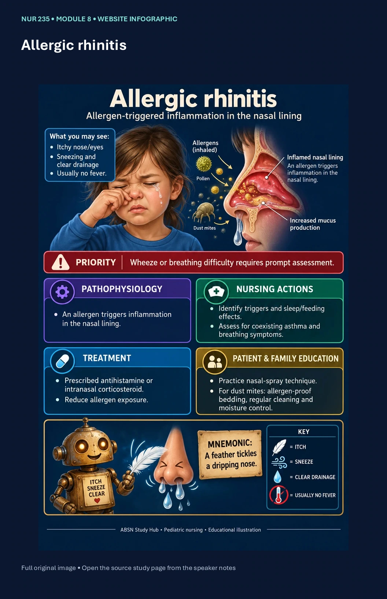
Read slide text and study notes
NUR 235 • MODULE 8 • WEBSITE INFOGRAPHIC
Allergic rhinitis
Full original image • Open the source study page from the speaker notes
Readable source notes
Study notes🚨 PriorityWheeze or breathing difficulty requires prompt assessment.⚙ PathophysiologyAn allergen triggers inflammation in the nasal lining.🩺 Nursing actionsIdentify triggers and sleep/feeding effects.Assess for coexisting asthma and breathing symptoms.💊 TreatmentPrescribed antihistamine or intranasal corticosteroid.Reduce allergen exposure.🏠 Patient & family educationPractice nasal-spray technique.For dust mites: allergen-proof bedding, regular cleaning and moisture control.🗝 Visual mnemonic keyA feather tickles a dripping nose: ITCH + SNEEZE + CLEAR DRAINAGE. No thermometer flame: USUALLY NO FEVER.The cartoon objects are memory symbols. The labeled anatomy beside them is the medical illustration.
Website infographic
115 / 254Asthma
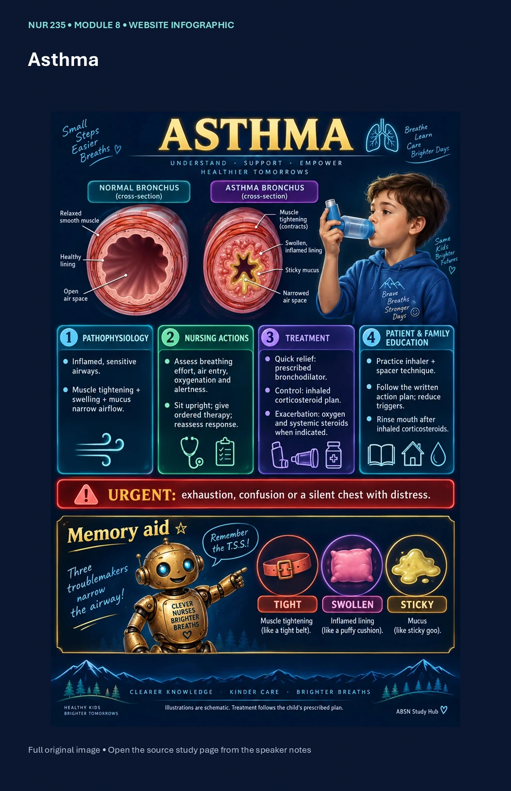
Read slide text and study notes
NUR 235 • MODULE 8 • WEBSITE INFOGRAPHIC
Asthma
Full original image • Open the source study page from the speaker notes
Readable source notes
Study notes🚨 PriorityExhaustion, confusion or a silent chest with distress is an emergency.⚙ PathophysiologyInflammation, bronchospasm and mucus cause variable airflow obstruction.🩺 Nursing actionsAssess breathing effort, air entry, oxygenation and alertness.Sit upright; give prescribed therapy and reassess.💊 TreatmentPrescribed bronchodilator for relief; inhaled corticosteroid plan for control.Oxygen and systemic steroids for exacerbations when indicated.🏠 Patient & family educationPractice inhaler/spacer technique; follow the action plan.Reduce triggers; rinse mouth after inhaled corticosteroids.🗝 Visual mnemonic keyTIGHT belt = bronchospasm; SWOLLEN cushion = inflammation; STICKY blob = mucus.The cartoon objects are memory symbols. The labeled anatomy beside them is the medical illustration.
Website infographic
116 / 254Bronchiolitis (often RSV)
Read slide text and study notes
NUR 235 • MODULE 8 • WEBSITE INFOGRAPHIC
Bronchiolitis (often RSV)
Full original image • Open the source study page from the speaker notes
Readable source notes
Study notes🚨 PriorityApnea, exhaustion or inability to feed requires urgent assessment.⚙ PathophysiologyA virus inflames small infant airways; mucus and edema obstruct airflow.🩺 Nursing actionsMonitor breathing, apnea, oxygenation and urine output.Gentle nasal suction; choose a safe hydration route.💊 TreatmentSupportive care: oxygen and fluids when indicated.Bronchodilators, steroids and antibiotics are not routine.🏠 Patient & family educationSmall feeds when breathing permits; follow suction teaching.Hand hygiene; discuss eligibility for RSV prevention.🗝 Visual mnemonic keyTiny tubes clogged with sticky plugs: SMALL AIRWAYS. A pause symbol: WATCH FOR APNEA.The cartoon objects are memory symbols. The labeled anatomy beside them is the medical illustration.
Website infographic
117 / 254Common cold (nasopharyngitis)
Read slide text and study notes
NUR 235 • MODULE 8 • WEBSITE INFOGRAPHIC
Common cold (nasopharyngitis)
Full original image • Open the source study page from the speaker notes
Readable source notes
Study notes🚨 PriorityBreathing difficulty, poor intake or fewer wet diapers need assessment.⚙ PathophysiologyA respiratory virus inflames the nose and throat lining.🩺 Nursing actionsAssess breathing, feeding and hydration.Saline and gentle nasal suction can help infants before feeds.💊 TreatmentFluids, rest and prescribed comfort medicines.Antibiotics do not treat the cold virus.🏠 Patient & family educationHand hygiene; avoid smoke.Use age-appropriate feeds; check before giving cough/cold medicines.🗝 Visual mnemonic keyA dripping nose-shaped faucet: RUNNY NOSE. A glass: HYDRATION. A crossed-out antibiotic bottle: VIRAL COLD.The cartoon objects are memory symbols. The labeled anatomy beside them is the medical illustration.
Website infographic
118 / 254COVID-19
Read slide text and study notes
NUR 235 • MODULE 8 • WEBSITE INFOGRAPHIC
COVID-19
Full original image • Open the source study page from the speaker notes
Readable source notes
Study notes🚨 PriorityBreathing difficulty, chest pain, marked lethargy or dehydration needs urgent help.⚙ PathophysiologySARS-CoV-2 causes a respiratory infection with variable severity.🩺 Nursing actionsAssess breathing, oxygenation and hydration.Use current infection-control precautions and testing guidance.💊 TreatmentSupportive care for mild illness.Antivirals or hospital therapies for eligible patients as prescribed.🏠 Patient & family educationFollow current vaccination and illness guidance.Seek review for worsening symptoms or persistent fever after infection.🗝 Visual mnemonic keyA shield, breathing gauge and water cup: PREVENT EXPOSURE, WATCH BREATHING, SUPPORT FLUIDS.The cartoon objects are memory symbols. The labeled anatomy beside them is the medical illustration.
Website infographic
119 / 254Croup
Read slide text and study notes
NUR 235 • MODULE 8 • WEBSITE INFOGRAPHIC
Croup
Full original image • Open the source study page from the speaker notes
Readable source notes
Study notes🚨 PriorityExhaustion, cyanosis or reduced air entry is an emergency.⚙ PathophysiologyUsually viral swelling below the vocal cords narrows the upper airway.🩺 Nursing actionsKeep calm; assess stridor at rest, retractions and oxygenation.Reassess closely after therapy.💊 TreatmentCorticosteroid as ordered.Nebulized epinephrine for significant obstruction; observe after treatment.🏠 Patient & family educationSeek help for stridor at rest or increasing breathing effort.Offer fluids when safe; avoid distressing interventions.🗝 Visual mnemonic keyA seal barks beside a narrow upper-airway tunnel: BARK + STRIDOR. A calm lantern: KEEP CALM.The cartoon objects are memory symbols. The labeled anatomy beside them is the medical illustration.
Website infographic
120 / 254Cystic fibrosis
Read slide text and study notes
NUR 235 • MODULE 8 • WEBSITE INFOGRAPHIC
Cystic fibrosis
Full original image • Open the source study page from the speaker notes
Readable source notes
Study notes🚨 PriorityIncreased breathing effort, hemoptysis or significant dehydration needs review.⚙ PathophysiologyInherited CFTR dysfunction produces thick secretions and salty sweat.🩺 Nursing actionsAssess airway clearance, infection, growth and stool pattern.Coordinate nutrition, glucose monitoring and the daily therapy plan.💊 TreatmentAirway clearance, prescribed inhaled drugs/antibiotics and eligible CFTR modulators.Pancreatic enzymes with meals/snacks when pancreatic insufficient.🏠 Patient & family educationDo not crush enzyme beads; follow the feeding plan.Use prescribed vitamins, salt and hydration; follow infection precautions.🗝 Visual mnemonic keySTICKY LUNGS + BLOCKED PANCREAS + SALTY SWEAT. Enzyme key opens the food box.The cartoon objects are memory symbols. The labeled anatomy beside them is the medical illustration.
Website infographic
121 / 254Epiglottitis
Read slide text and study notes
NUR 235 • MODULE 8 • WEBSITE INFOGRAPHIC
Epiglottitis
Full original image • Open the source study page from the speaker notes
Readable source notes
Study notes🚨 PriorityAIRWAY EMERGENCY: do not delay help for a throat inspection.⚙ PathophysiologyAn inflamed, swollen epiglottis can rapidly obstruct the upper airway.🩺 Nursing actionsCall the emergency airway team; keep the child calm and upright.Do not force a throat exam or use a tongue blade.💊 TreatmentControlled airway management by an expert team.IV antibiotics and supportive care after airway priorities.🏠 Patient & family educationHib vaccination helps prevent Hib disease.Treat drooling with breathing distress as an emergency.🗝 Visual mnemonic keyA swollen red leaf blocks an airway gate: EPIGLOTTIS. A stop sign on a tongue blade: DO NOT PROBE.The cartoon objects are memory symbols. The labeled anatomy beside them is the medical illustration.
Website infographic
122 / 254Influenza
Read slide text and study notes
NUR 235 • MODULE 8 • WEBSITE INFOGRAPHIC
Influenza
Full original image • Open the source study page from the speaker notes
Readable source notes
Study notes🚨 PriorityRespiratory distress or improvement followed by marked worsening needs review.⚙ PathophysiologyInfluenza A or B infects respiratory epithelium and causes systemic inflammation.🩺 Nursing actionsAssess breathing, hydration and high-risk conditions.Use respiratory precautions; monitor complications.💊 TreatmentSupport fluids, rest and prescribed symptom relief.Antiviral treatment when indicated; early assessment matters.🏠 Patient & family educationAnnual influenza vaccination.No aspirin for a child with viral illness unless specifically directed for another condition.🗝 Visual mnemonic keyA sudden storm over thermometer, muscles and lungs: FAST FEVER + ACHES + COUGH.The cartoon objects are memory symbols. The labeled anatomy beside them is the medical illustration.
Website infographic
123 / 254Otitis media
Read slide text and study notes
NUR 235 • MODULE 8 • WEBSITE INFOGRAPHIC
Otitis media
Full original image • Open the source study page from the speaker notes
Readable source notes
Study notes🚨 PrioritySwelling behind the ear or a very ill child needs prompt assessment.⚙ PathophysiologyMiddle-ear fluid becomes inflamed, often after an upper respiratory infection.🩺 Nursing actionsAssess pain, fever, feeding and hydration.Check prescribed follow-up and hearing concerns.💊 TreatmentPain control.Observation or antibiotics depends on age, severity and clinical assessment.🏠 Patient & family educationFinish antibiotics if prescribed.Avoid smoke exposure; feed infants in a supported upright position.🗝 Visual mnemonic keyA fluid-filled room BEHIND a drum: MIDDLE-EAR FLUID. A comfort cushion: PAIN RELIEF.The cartoon objects are memory symbols. The labeled anatomy beside them is the medical illustration.
Website infographic
124 / 254Pharyngitis
Read slide text and study notes
NUR 235 • MODULE 8 • WEBSITE INFOGRAPHIC
Pharyngitis
Full original image • Open the source study page from the speaker notes
Readable source notes
Study notes🚨 PriorityDrooling, muffled voice or breathing difficulty needs urgent review.⚙ PathophysiologyViruses or group A streptococci inflame the throat and tonsils.🩺 Nursing actionsAssess swallowing, hydration and airway.Obtain prescribed strep testing; appearance alone is not enough.💊 TreatmentFluids and prescribed pain/fever relief.Antibiotics for confirmed bacterial disease as directed.🏠 Patient & family educationFinish the prescribed antibiotic course.Hand hygiene; avoid sharing utensils.🗝 Visual mnemonic keyA sore throat behind a TEST gate: TEST BEFORE TARGETING STREP. A full antibiotic calendar: FINISH THE COURSE.The cartoon objects are memory symbols. The labeled anatomy beside them is the medical illustration.
Website infographic
125 / 254Pneumonia
Read slide text and study notes
NUR 235 • MODULE 8 • WEBSITE INFOGRAPHIC
Pneumonia
Full original image • Open the source study page from the speaker notes
Readable source notes
Study notes🚨 PrioritySevere retractions, cyanosis, exhaustion or poor perfusion needs urgent help.⚙ PathophysiologyInfection inflames alveoli; fluid and exudate impair gas exchange.🩺 Nursing actionsAssess respiratory effort, oxygenation and hydration.Monitor response and escalating oxygen needs.💊 TreatmentOxygen if needed; fluids and comfort care.Antibiotics for bacterial pneumonia as prescribed.🏠 Patient & family educationComplete prescribed medicines; support fluids and rest.Vaccination and hand hygiene reduce some causes.🗝 Visual mnemonic keyAir sacs become waterlogged sponges: FILLED ALVEOLI = LESS GAS EXCHANGE.The cartoon objects are memory symbols. The labeled anatomy beside them is the medical illustration.
Website infographic
126 / 254Tonsillectomy recovery
Read slide text and study notes
NUR 235 • MODULE 8 • WEBSITE INFOGRAPHIC
Tonsillectomy recovery
Full original image • Open the source study page from the speaker notes
Readable source notes
Study notes🚨 PriorityFresh bleeding, repeated swallowing or vomiting blood needs immediate assessment.⚙ PathophysiologyHealing tonsil beds remain vulnerable to bleeding after surgery.🩺 Nursing actionsAssess airway, swallowing, bleeding and hydration.Report fresh bleeding immediately; follow emergency protocol.💊 TreatmentPrescribed analgesia and hydration.Diet and activity follow the surgeon’s instructions.🏠 Patient & family educationEncourage permitted fluids and medicines.Return urgently for bleeding; follow the discharge plan.🗝 Visual mnemonic keyA swallowing counter plus red droplet: SWALLOWING MAY HIDE BLEEDING. A water cup: PROTECT HYDRATION.The cartoon objects are memory symbols. The labeled anatomy beside them is the medical illustration.
Simple Nursing original · Module 8
127 / 254Simple Nursing: RSV (Respiratory Syncytial Virus)

Read handout text
RSV (Respiratory Syncytial Virus)
Pediatrics: Infectious Disease
RSV is a very contagious viral infection that affects the respiratory tract, specifically the
bronchioles, and usually infects most children before their 2nd birthday.
RSV is spread via droplets. Children typically get the virus from being coughed or sneezed
on from other infected children.
Premature babies
<6 months of age
Very young infants
Congenital heart defects
Respiratory or
Neuromuscular disorders
Respiratory or
Neuromuscular disorders
It looks just like a cold or respiratory infection
• Runny nose
• Dry Cough
• Sore Throat
• Low-grade Fever
• Wheezing
• Nasal flaring
• Short, shallow, and rapid breathing
<100.4 F
NCLEX TIP
Use drops of saline & a bulb syringe
to suction nose
due to RSVBronchiolitis
Key terms
Airway is always #1 PRIORITY!
Removing secretions from the nose is critical before
bed & before feedings.
Don't let the NCLEX Trick you!
Airway is always a priority.
NOT giving medications & do not stop breastfeeding
the baby, since fluids are needed to prevent dehydration
during the illness.
PRIORITY
SALINE
Medication: palivizumab
HESI Question
Palivizumab. What is the purpose of
this medication?
Prevent respiratory syncytial virus
(RSV) infection
ATI Question
Preventing the transmission of respiratory
syncytial virus (RSV). Which of the following
should be included in the teaching?
Select all that apply
Spread by direct contact
Spread by indirect contact
Frequent hand washing helps reduce the
spread of RSV
Palivizumab
Complications
Signs & Symptoms
Pharm & Education
Pathophysiology
Risk Factors & Causes
Simple Nursing original · Module 8
128 / 254Simple Nursing: Asthma - Patho, Signs & Symptoms

Read handout text
Asthma
Pediatrics: Respiratory
Pathophysiology
Asthma is a chronic inflammatory disorder in the major pathways of the lungs:
Bronchi & Bronchioles. It comes & goes with flare-ups in the form of asthma attacks
that are reversible!
During an asthma attack, 2 key things happen:
1. Bronchoconstriction:
Bronchi puff up with inflammation & get VERY tight.
2. Wet, mucus filled lungs:
Excessive mucus production from goblet cells that line the
respiratory tract.
PRIORITY! Since the respiratory tract is so constricted that oxygen cannot get
in & CO2 cannot get out, resulting in air trapping and making it hard to exhale.
#1 #2
Bronchoconstriction
Critical Complications
pH less than 7.35 = Acidosis
PaCO2 - Over 45 = Acidosis
PaO2 - Less than 80! = Hypoxic
* 1st Sign of Hypoxia = Mental Status Change
1. Agitation
2. Restlessness
3. Drowsiness
Status Asthmaticus
1. Endotracheal Intubation
ABG (Arterial Blood Gas)
NCLEX TIP
NCLEX TIP
0₂ 0₂
0₂
0₂
PRIORITY
Hypercapnic respiratory failure = HIGH CO2
Hyper Capnic = High Carbon dioxide
Drop in systolic blood pressure
More than 10 mmHg
1. Decrease in stroke volume
3. Pulse wave amplitude during inspiration
2. Decrease in systolic blood pressure
(systolic squeeze)
Pulsus paradoxus
Key Sign of Status Asthmaticus T est Tip
90
> 10 mmHg
150
100
50
Pulsus paradoxus
Patho: increased negative pressure
within the lungs puts a lot of added
pressure on the left ventricle,
making it difficult for the heart to
pump oxygen rich blood to the body.
A - Asthma
A - Acute Attacks that come & go
MEMORY TRICK
Signs & Symptoms
A
Accessory muscle use
Critical Sign: Paradoxical Breathing
S
SOB & dyspnea
Critical Sign: Single word dyspnea
T Tight CHEST & Tachypnea
H High-pitched wheezing
M Minimal “diminished breath sounds”
A
3 As
Absent Breath Sounds (Silent Chest) PRIORITY
Acidosis (CO2 retention)
Air trapping - Prolonged exhalation
Top Missed NCLEX Question:
Which child in the pediatric unit
should the nurse see first?
1. 8 year old with cystic fibrosis
presenting with fever &
green sputum
2. 10 year old with croup
presenting with a barking
cough & tachypnea
3. 6 year old with acute asthma
exacerbation suddenly has
no wheezing
4. 11 year old with new
tachycardia & anxiety after
albuterol nebulizer treatment
6 year old
wet & mucus filled
Simple Nursing original · Module 8
129 / 254Simple Nursing: Croup

Read handout text
Croup
Pediatrics: Respiratory
Viral Infection of the upper airway.
Barking cough
Fever
6 months - 3 years old
3 year old with croup. The most important
initial intervention to perform is:
ATI Question
Assess respiratory status
After a 3-day hospitalization for croup ...
the nurse is working with the parents to
discharge the child … best action?
HESI Question
Ask, “Do you have a freezer with
your refrigerator?”
Croup - Pathophysiology
Signs & Symptoms
Treatment / Education
Assess respiratory status 1.
Discharge education:
stand in front of the open freezer
2.
The 3-year-old child is seen... for croup.
The parent asks what to do for the child
at home to alleviate symptoms?
KAPLAN Question
“Stand with your child in front of
an open freezer.”
Notes
Simple Nursing original · Module 8
130 / 254Simple Nursing: Otitis Media - Patho, Causes & Signs

Read handout text
Otitis Media
Pediatrics: Visual & Audio
Otitis Media (OM) is an infection within the eustachian tubes, the air-filled
space behind the eardrum. The infection leads to major inflammation &
purulent fluid inside the middle of the ear.
Since eustachian tubes are shorter in younger clients, children less than
2-years-old tend to get these infections frequently.
Eustachian tubes
Middle ear
Memory trick
Otitis Media = Middle ear
KAPLAN Question
Frequent acute otitis media infections ...
which explanation?
Children have shorter eustachian tubes
Less than 2 years old
Normal ear Otitis Media
Key Points:
NO routine vaccinations
History of chronic ear infections
Parents that smoke
(cigarettes / cigars)
Pacifiers & attending daycare
NCLEX TIP
A
B
C
U
C
Risk Factors
5 NCLEX TIPS
Complication
Refusing to eat
Restless and irritable “crying more”
1.
2.
3.
Not sleeping
Sudden relief of pain
Ear pain - Frequently tugging on
the affected ear
4.
5.
High fever
ATI Question
Q1: … which finding indicates a tympanic membrane rupture?
Q2: ... infant who has acute otitis media. Which of the
following statements should the nurse expect the parents to
make? Select all that apply.
Sudden relief of pain in a child with otitis media with effusion
My baby has been pulling at her ears
My baby has not been drinking her bottles lately
My baby is not sleeping at night
My baby has been very irritable and crying more lately
Z
Z
Z
Signs & Symptoms
Otoscopic examination
Examine the ear at the very end of assessment
AVOID inserting too far into the ear!
Only to the bony interior part of the ear canal
1.
2.
3.
Inspect the tympanic membrane for redness,
bulging, and perforation
4.
Encourage routine vaccinations
(influenza & pneumonia)
END OF ASSESSMENT
AVOID
Nursing Care
Pathophysiology & Causes
Simple Nursing original · Module 8
131 / 254Simple Nursing: Asthma - Diagnostics & Triggers

Read handout text
Asthma II
Pediatrics: Respiratory
Extrinsic (External)
Type I hypersensitivity
Immediate allergic reaction
Intrinsic (Internal)
Airway hyperresponsiveness (adult-onset)
Asthma attacks brought on by:
• S - Sickness (Respiratory infection)
• S - Stress
• S - Severe weather (cold)
• S - Strenuous activity (exercise)
• Drugs
Green zone
Yellow zone
PFT - Pulmonary Function Test
Peak Expiratory Flow Rate
• Sort of like a weather forecast - we want to anticipate
a Severe asthma attack - before it happens!
Red zone
• Green means go.
• Asthma is around 80 - 100% under control.
• Yellow means mellow.
• Asthma is NOT under control here! So there is a
HUGE need for additional medication
1. Rescue drug every 4 hours for 1-2 days
2. Call HCP (provider)
NEED additional meds or change in treatment
• Red means Really bad!
• Emergency treatment is needed immediately if the level
does not return to yellow RIGHT after taking rescue drugs!
1. Stand or sit in upright position
2. Put the flow meter scale to 0 or
lowest value
3. Inhale deeply
4. Put the mouthpiece in mouth &
create a seal with the lips
6. Repeat 2 more times, with a
break of 5 -10 seconds between
Correct Order - Peak Flow Meter
5. Exhale as quickly & forcibly as
possible & record reading
7. Record 1 score = the HIGHEST
of the 3 attempts
100
200
300
400
500
600
700
800
900
Diagnostics
Triggers
A
Allergens (dander, dust, pollen)
Elevated Eosinophils
S
S - Smoking (second hand cigarette smoke)
S - Stress (emotional, physical)
MEMORY TRICKS
NAPROXEN
KETOROLAC
Drugs to AVOID
• N - NSAIDS Naproxen, Aspirin, ibuprofen,
indomethacin, & ketorolac
• N - Not good for Asthma
• B - Beta blockers
• B - Blocked HR & lungs
• Propranolol (Inderal) = Nonselective
• Atenolol = Selective (cardio “Beta 1” selective)
This diagnostic test shows how well the lungs are working.
It measures total lung capacity, volume, gas exchange & rates
of flow. This data helps the healthcare provider (HCP) diagnose
& treat lung disorders
HESI
Q1: … understanding the peak expiratory flow
rate test?
Assesses the severity of asthma
Q2: A child … with a new diagnosis of asthma…
discharge plan?
Select all that apply.
T each the parents about peak expiratory
flow rates
Home assessment for allergens
HESI
Q1: Which triggers tend to aggravate asthma in
children?
Select all that apply.
Exercise
T obacco smoke
Q2: Which reason is appropriate when preventing
respiratory tract infections in children with
asthma?
Can trigger an episode or aggravate an
asthmatic state
Kaplan
… determining the cause of the acute asthma
attack?
“My child slept on a new pillow last night.”
Simple Nursing original · Module 8
132 / 254Simple Nursing: Cystic Fibrosis

Read handout text
Cystic Fibrosis
Pediatrics: Respiratory
Cystic fibrosis is serious mucus all over the body, which clogs
& damages the lungs, digestive tract, & reproductive organs
Cystic Fibrosis
Chronic hypoxemia (low oxygen)
& respiratory infections
1.
Bowel obstruction “Meconium ileus”
& Vitamin deficiencies
2.
Weight LOSS & Failure to thrive3.
Diabetes mellitus (HIGH blood sugar)4.
4 NCLEX TIPS
0₂ 0₂
0₂
0₂
B1
C D
B12
15kg
>150
Diabetes Mellitus
Children inherit 1 copy of the gene from
each parent in order to have the disease.
Sweat chloride test
Blood sample
ATI
.. child who is suspected of having cystic
fibrosis (CF). Which of the following
diagnostic tests will confirm the diagnosis?
Sweat chloride test
HESI
… child admitted to rule out cystic fibrosis. Which
result should be reported to the HCP?
Sweat chloride concentration of 80 mEq/L
Blood sample or sweat test,
once the infant is at least 2 weeks old.
2 weeks old
Bowel obstruction “Meconium ileus”
Diabetes Mellitus (HIGH blood sugar) >150
Diabetes Mellitus
Meconium ileus
Since the pancreas is clogged with mucus INsulin cannot get out of
the pancreas to put that sugar INto the cell, resulting in diabetes.
HESI
Q1: … endocrine disorder commonly found in
children with cystic fibrosis?
Diabetes mellitus
Q2: Which is the earliest postnatal manifestation
of cystic fibrosis?
Meconium ileus
ATI
Performing chest physiotherapy
A 9 month old infant diagnosed with cystic
fibrosis. Which of the following strategies
should the nurse explain when instructing
the parents?
KAPLAN
The child takes the pancreatic enzymes
one hour after eating
Q1: … child diagnosed with cystic fibrosis.
The nurse should intervene when:
Increase protein & carbohydrates
Q2: The nurse instructs the parents of a
7-year-old child diagnosed with cystic fibrosis
about required dietary modifications.
High calories
High fat, protein, carbohydrates
2 NCLEX TIPS
Complications
Causes
Signs & Symptoms
Nursing Care
Diagnostics
Pathophysiology
Pancreatic Enzymes
Simple Nursing original · Module 8
133 / 254Simple Nursing: Otitis Media - Pharm & Education

Read handout text
Otitis Media II
Pediatrics: Visual & Audio
2 NCLEX TIPS
Antibiotics: Amoxicillin
Finish all antibiotics - DO NOT stop
halfway through!
1.
2.
Return to the clinic if s/s
do not improve within 48 - 72 hours
Notes
hours
48-72
50%
Amoxicillin Amoxicillin
3 NCLEX TIPS
Stop pacifier use after 6 months old
1.
3.
Routine vaccinations
(influenza & pneumonia)
2.
Smoking cessation by caretakers
Over 50% got it WRONG!
STOP
Education Post-Op:
Earplugs before going swimming
DO NOT immerse child’s head in water
Tympanostomy tubes
Myringotomy
HESI Question
.. 2-year-old who just underwent a myringotomy. What instructions
will the nurse include? Select all that apply.
Do not immerse the child’s head in water when bathing
Administer the Tylenol as prescribed
Do not substitute aspirin for the prescribed Tylenol
Purchase earplugs and place them during bath time
ATI Question
… tympanostomy tubes inserted: understanding of the teaching?
I should insert earplugs before my child swims in a lake or ocean
Pharmacology
Surgical
Education
Simple Nursing original · Module 8
134 / 254Simple Nursing: Asthma - Pharmacology

Read handout text
Asthma III
Pediatrics: Respiratory
ANTI-INFLAMMATORY Agents
Steroids
S Beclomethasone
Leukotriene Inhibitor
L
Montelukast
Mast Cell Stabilizers
M Cromolyn
BRONCHOdilators
Beta 2 Agonist
Albuterol
Ipratropium
Theophylline
Anticholinergics
Methylxanthines
B
A
M
NCLEX TIP
Pharmacology
• S - Steroids “-sone” like Beclomethasone -
Top side effects - 3 Ss for Sone Steroids
• S - Sores in mouth (oral thrush “candida”) so instruct the client to wash
out their mouth after every use & inhalers go into the sink, twice per week.
• S - Sepsis & sickness (increased risk for infection) & increases WBC count
in the body
• S - Sugars increased (elevated glucose levels)
Last 2 - are NOT highly tested here
• L - Leukotriene inhibitors ending in Lukast like Montelukast (Singular) - think Luke
likes to sing
• M - Mast cell stabilizers - Cromolyn
Anti-inflammatory Agents - SLM Team
Metered Dose Inhaler
• B - Beta 2 agonist - albuterol - think buterols for brutal asthma attacks!
It's considered the one & only rescue drug
for asthma attacks
• A - Anticholinergics - Ipratropium - dries out the body, decreasing secretions
& dilating the airways - you cant pee - with
a tro-pium
• M - Methylxanthines - Theophylline - very toxic & very fast HR!
10 - 20 therapeutic range
Phyllines have you feeling toxic & tachycardic
MEMORY TRICK
AIM for Acute Asthma Attack
A - Albuterol 1st
I - Ipratropium 2nd
M- Methyl-predniso-lone
(brand: Solumedrol)
Bronchodilator - BAM team
MEMORY TRICK
BECLOMETHASONE
S S S
ATI
… new prescription for levalbuterol solution via
nebulizer. Which of the following statements ...
indicates an understanding of the teaching?
My child could have heart palpitations
while taking this medication
Top Missed NCLEX Question:
Teaching a child proper use of a
metered dose inhaler (MDI) with a spacer.
Place the instructions in order.
Ordered Response
3. Shake the MDI & then attach it to spacer
2. Exhale fully
4. Firmly place lips around the mouth piece
1. Deliver one push of the medication
6. Take a deep breath slowly & hold for 10 seconds
5. Wash mouth out with waterHighly missed question
Top Missed NCLEX Question:
The best indicator that treatment
has been effective for a child with
acute asthma.
1. Less wheezing heard without
stethoscope
2. No wheezing heard during
auscultation of the chest
3. Oxygen saturation has
increased from 85% to 92%
4. Peak expiratory flow rate that
increases showing increased
airflow
92%
1st
100
200
300
400
500
600
700
800
900
2ⁿd
Simple Nursing original · Module 8
135 / 254Simple Nursing: Epiglottitis

Read handout text
Epiglottitis
Pediatrics: Respiratory
Epiglottis is a DEADLY medical emergency, where severe & sudden
inflammation near the epiglottis blocks the child's airway!
The epiglottis is the flap in the throat that prevents food entering
the trachea. When it gets inflamed it blocks the airway quickly!
Children can present with no symptoms, to having a completely
occluded airway within hours!
Inflamed
epiglottis
Airway
T ongue
NCLEX TIP
NCLEX TIP
Anxious & restless behavior
Stridor (squeak)
Fever, drooling, & tripod
positioning
HESI Question
Which clinical manifestations are
appropriate for acute epiglottitis?
Select all that apply.
● Pain
● Fever
● Drooling
● Tripod position
Q1:
Which student action will the
nurse need to correct when
caring for a child with epiglottitis?
● Take an oral temperature
Q2:
ATI Question
... Which client should the nurse
assess first?
● A school-age child who has
acute epiglottitis, is drooling,
and has an absence of
spontaneous cough
Q1:
… 4 year old child who has
epiglottitis…. action should the
nurse take?
● Monitor oxygen saturation
Q2:
Kaplan Question
The 4 year old with... acute
epiglottitis. Which assessment finding
is most significant?
● Drooling of saliva
Signs & Symptoms
Pathophysiology
NCLEX TIP
Haemophilus influenza
type B (HiB)
Missing standard
vaccinations
Epiglottitis affects more males than
females.
A lot of students get this wrong!
Causes & Risk Factors
4 NCLEX TIPS
1. Priority = AIRWAY!
2. NO throat inspection & NO
oral temp
3. Tripod position
4. GET standard immunizations
Until endotracheal intubation
& tracheostomy kit is ready
Airway
Breathing
Circulation
FIRST
HESI Question
Which treatment is
appropriate for the child
with epiglottitis and severe
respiratory distress?
● Nasotracheal intubation
or tracheostomy
Interventions & Education
Simple Nursing original · Module 8
136 / 254Simple Nursing: Tonsillitis & Tracheostomy Care

Read handout text
T onsillitis & Tracheostomy Care
Pediatrics: Respiratory
Tonsillitis is the inflammation of tonsils, the little soft tissue masses located near the rear
of the throat. When these guys get inflamed it can lead to a life-threatening airway obstruction!
Tonsillitis - Pathophysiology
Always travel with:
2 spare tracheostomy tubes
1 same size & 1 smaller size
NCLEX TIP
T eaching for New Trach
… 7 year old child going to school for
the first time… has a permanent
tracheostomy. What information must
the nurse include to the parents?
HESI Question
Place suctioning supplies on
the back of the wheelchair
when transporting
Same size Smaller
Tracheostomy Care - Teaching
The big key point is teaching the parents about accidental decannulation
(cannula popping out & getting dislodged). This is very deadly, as it means
the child has lost their airway & has no means to ventilate!
MOST tested
Trismus: inability to open mouth
Report to HCP!
Muffled voice & pooling saliva
NCLEX TIP
Trismus requires immediate attention, as it indicates a tonsillar abscess
(collection of pus) that prevents the mouth from opening, resulting in a
blocked airway. Very deadly!
... findings of hemorrhage following
a tonsillectomy:
ATI Question
Frequent swallowing
A 9 year old child is recovering from a
tonsillectomy. The nurse notes that
the child is swallowing frequently.
What is the nurse’s next action?
HESI Question
Place in a side-lying position
T T
Trismus
Treated ?
My child swallows frequently.
Signs & Symptoms
Original overview
137 / 254Heart defects change the route of blood
Read slide text and study notes
NUR235 / MODULE 9
Heart defects change the route of blood
24
NORMAL SERIES CIRCULATION
BODY
RIGHT
HEART
LUNGS
LEFT
HEART
BODY
EXCESS LUNG FLOW
ASD, VSD, PDA, AVSD
Usual left-to-right flow. Tachypnea, sweaty feeds, poor growth.
OBSTRUCTION
Pulmonary / aortic stenosis; coarctation
Outflow narrowed. Compare perfusion and femoral pulses.
CYANOSIS / MIXING
TOF; transposition; tricuspid atresia
TOF: outflow obstruction. TGA: parallel circuits need mixing. Atresia: absent tricuspid connection.
TOF SPELL
Calm + knee-chest + oxygen + emergency plan
Ductal-dependent defects need urgent care as the ductus closes.
Original study notes and source references
NUR235 content mastery infographic. Original native diagram by Codex. No Claude-created graphics.
High-level overview. The user-supplied module content reviews and textbook anchor the content. Book/course statements and current clarifications remain separate. Full prior wording is preserved below for study reference.
Some neurologic and musculoskeletal chapters are missing from the provided book extract. Available course sources and identified primary references supplement these gaps.
Congenital heart flow and obstruction
User textbook, Chapter 40: Child with a Respiratory Disorder work/module-reviews/Maternal and Child Textbook.txt
User textbook, Chapter 41: Child with a Cardiovascular Disorder work/module-reviews/Maternal and Child Textbook.txt
User textbook, Chapter 42: Immune disorders work/module-reviews/Maternal and Child Textbook.txt
User textbook, Chapter 43: Infectious disorders work/module-reviews/Maternal and Child Textbook.txt
User textbook, Chapter 50: Eye and ear disorders work/module-reviews/Maternal and Child Textbook.txt
CDC: Group A streptococcal pharyngitis https://www.cdc.gov/group-a-strep/hcp/clinical-guidance/strep-throat.html
CDC: Acute rheumatic fever https://www.cdc.gov/group-a-strep/hcp/clinical-guidance/acute-rheumatic-fever.html
NICE: Bronchiolitis recommendations https://www.nice.org.uk/guidance/ng9/chapter/Recommendations
Canadian Paediatric Society: Acute croup management https://cps.ca/en/documents/position/acute-management-of-croup
NHLBI: Asthma Care Quick Reference https://www.nhlbi.nih.gov/files/docs/guidelines/asthma_qrg.pdf
Cystic Fibrosis Foundation: Enzymes https://www.cff.org/managing-cf/enzymes
Cystic Fibrosis Foundation: Diagnosis guidelines https://www.cff.org/medical-professionals/cf-diagnosis-clinical-care-guidelines
CDC: Treatment of flu in children https://www.cdc.gov/flu/treatment/children-antiviral.html
CDC: Pediatric COVID care https://www.cdc.gov/covid/hcp/clinical-care/for-pediatric-hcp.html
CDC: COVID outpatient treatment, October 8 2026 https://www.cdc.gov/covid/hcp/clinical-care/outpatient-treatment.html
CDC: Pediatric outpatient antibiotic guidance https://www.cdc.gov/antibiotic-use/hcp/clinical-care/pediatric-outpatient.html
CDC: Ear infection basics https://www.cdc.gov/ear-infection/about/index.html
AHA 2024 Kawasaki scientific statement https://www.ahajournals.org/doi/epdf/10.1161/CIR.0000000000001295
ACR/AAAAI 2025 contrast hypersensitivity consensus https://pubs.rsna.org/doi/10.1148/radiol.240100
CHOP: Pulmonary stenosis https://www.chop.edu/conditions-diseases/pulmonary-stenosis
CHOP: Tricuspid atresia https://www.chop.edu/conditions-diseases/tricuspid-atresia
CHOP: Tetralogy of Fallot https://www.chop.edu/conditions-diseases/tetralogy-fallot
Excess pulmonary flow
ASD connects the atria, VSD connects the ventricles, and PDA links the aorta with the pulmonary artery. Usual postnatal left-to-right flow increases pulmonary circulation. Large defects may cause tachypnea, sweating with feeds and poor growth.
AVSD involves the central septal junction and AV valves. Anatomy and pressure differences determine the actual flow. Echocardiography defines the defect and guides the plan.
Obstructed outflow
Pulmonary stenosis obstructs right-ventricular outflow. Aortic stenosis obstructs left-ventricular outflow. Severity determines symptoms and intervention.
Coarctation narrows the aorta. Compare arm and leg pressures and femoral pulses. A neonate may deteriorate as the ductus closes. Ductal-dependent lesions require urgent specialist management.
Heart failure and nutrition
Trend breathing, perfusion, hepatomegaly, weight and intake/output. Small, frequent, energy-dense feeds and rest reduce feeding demand when safe. Tube feeding may be needed.
Give prescribed diuretics, afterload-reducing therapy or other cardiac medicines with laboratory and clinical monitoring. Digoxin requires an individualized pulse assessment and hold parameters. Vomiting, poor feeding or dysrhythmia may signal toxicity.
Cyanotic defects and inadequate mixing
Tetralogy of Fallot
TOF combines VSD, right-ventricular outflow obstruction, overriding aorta and right-ventricular hypertrophy. Outflow obstruction can promote right-to-left flow and cyanosis.
During a hypercyanotic spell, calm the child, use knee-chest positioning, give oxygen and follow the emergency plan. Persistent or severe symptoms need immediate escalation.
Transposition of the great arteries
The aorta arises from the right ventricle and the pulmonary artery from the left. Parallel circulations require mixing for survival. This differs from a simple generic right-to-left shunt.
Severe cyanosis can occur early. Maintain prescribed ductal patency and prepare for specialist procedures such as atrial septostomy or surgery when indicated.
Tricuspid atresia
The absent or imperforate tricuspid connection prevents normal right-atrial to right-ventricular flow. Associated openings and pulmonary flow determine the presentation.
Support oxygenation, perfusion and nutrition while the specialist team plans staged care. Teach individualized oxygen targets and warning signs instead of assuming every cyanotic child has the same baseline.
Original overview
138 / 254Follow one trip around the circulation
Read slide text and study notes
NUR235 / MODULE 9
Follow one trip around the circulation
25
Original study notes and source references
Follow one trip around the circulation
Schematic overview. Illustrations are not drawn to anatomical scale. Use the adjacent course details and assigned textbook for exam wording.
https://www.nhlbi.nih.gov/health/heart/blood-flow
NUR235 content mastery infographic. Original native diagram by Codex. No Claude-created graphics.
High-level overview. The user-supplied module content reviews and textbook anchor the content. Book/course statements and current clarifications remain separate. Full prior wording is preserved below for study reference.
Some neurologic and musculoskeletal chapters are missing from the provided book extract. Available course sources and identified primary references supplement these gaps.
Congenital heart flow and obstruction
User textbook, Chapter 40: Child with a Respiratory Disorder work/module-reviews/Maternal and Child Textbook.txt
User textbook, Chapter 41: Child with a Cardiovascular Disorder work/module-reviews/Maternal and Child Textbook.txt
User textbook, Chapter 42: Immune disorders work/module-reviews/Maternal and Child Textbook.txt
User textbook, Chapter 43: Infectious disorders work/module-reviews/Maternal and Child Textbook.txt
User textbook, Chapter 50: Eye and ear disorders work/module-reviews/Maternal and Child Textbook.txt
CDC: Group A streptococcal pharyngitis https://www.cdc.gov/group-a-strep/hcp/clinical-guidance/strep-throat.html
CDC: Acute rheumatic fever https://www.cdc.gov/group-a-strep/hcp/clinical-guidance/acute-rheumatic-fever.html
NICE: Bronchiolitis recommendations https://www.nice.org.uk/guidance/ng9/chapter/Recommendations
Canadian Paediatric Society: Acute croup management https://cps.ca/en/documents/position/acute-management-of-croup
NHLBI: Asthma Care Quick Reference https://www.nhlbi.nih.gov/files/docs/guidelines/asthma_qrg.pdf
Cystic Fibrosis Foundation: Enzymes https://www.cff.org/managing-cf/enzymes
Cystic Fibrosis Foundation: Diagnosis guidelines https://www.cff.org/medical-professionals/cf-diagnosis-clinical-care-guidelines
CDC: Treatment of flu in children https://www.cdc.gov/flu/treatment/children-antiviral.html
CDC: Pediatric COVID care https://www.cdc.gov/covid/hcp/clinical-care/for-pediatric-hcp.html
CDC: COVID outpatient treatment, October 8 2026 https://www.cdc.gov/covid/hcp/clinical-care/outpatient-treatment.html
CDC: Pediatric outpatient antibiotic guidance https://www.cdc.gov/antibiotic-use/hcp/clinical-care/pediatric-outpatient.html
CDC: Ear infection basics https://www.cdc.gov/ear-infection/about/index.html
AHA 2024 Kawasaki scientific statement https://www.ahajournals.org/doi/epdf/10.1161/CIR.0000000000001295
ACR/AAAAI 2025 contrast hypersensitivity consensus https://pubs.rsna.org/doi/10.1148/radiol.240100
CHOP: Pulmonary stenosis https://www.chop.edu/conditions-diseases/pulmonary-stenosis
CHOP: Tricuspid atresia https://www.chop.edu/conditions-diseases/tricuspid-atresia
CHOP: Tetralogy of Fallot https://www.chop.edu/conditions-diseases/tetralogy-fallot
Excess pulmonary flow
ASD connects the atria, VSD connects the ventricles, and PDA links the aorta with the pulmonary artery. Usual postnatal left-to-right flow increases pulmonary circulation. Large defects may cause tachypnea, sweating with feeds and poor growth.
AVSD involves the central septal junction and AV valves. Anatomy and pressure differences determine the actual flow. Echocardiography defines the defect and guides the plan.
Obstructed outflow
Pulmonary stenosis obstructs right-ventricular outflow. Aortic stenosis obstructs left-ventricular outflow. Severity determines symptoms and intervention.
Coarctation narrows the aorta. Compare arm and leg pressures and femoral pulses. A neonate may deteriorate as the ductus closes. Ductal-dependent lesions require urgent specialist management.
Heart failure and nutrition
Trend breathing, perfusion, hepatomegaly, weight and intake/output. Small, frequent, energy-dense feeds and rest reduce feeding demand when safe. Tube feeding may be needed.
Give prescribed diuretics, afterload-reducing therapy or other cardiac medicines with laboratory and clinical monitoring. Digoxin requires an individualized pulse assessment and hold parameters. Vomiting, poor feeding or dysrhythmia may signal toxicity.
Cyanotic defects and inadequate mixing
Tetralogy of Fallot
TOF combines VSD, right-ventricular outflow obstruction, overriding aorta and right-ventricular hypertrophy. Outflow obstruction can promote right-to-left flow and cyanosis.
During a hypercyanotic spell, calm the child, use knee-chest positioning, give oxygen and follow the emergency plan. Persistent or severe symptoms need immediate escalation.
Transposition of the great arteries
The aorta arises from the right ventricle and the pulmonary artery from the left. Parallel circulations require mixing for survival. This differs from a simple generic right-to-left shunt.
Severe cyanosis can occur early. Maintain prescribed ductal patency and prepare for specialist procedures such as atrial septostomy or surgery when indicated.
Tricuspid atresia
The absent or imperforate tricuspid connection prevents normal right-atrial to right-ventricular flow. Associated openings and pulmonary flow determine the presentation.
Support oxygenation, perfusion and nutrition while the specialist team plans staged care. Teach individualized oxygen targets and warning signs instead of assuming every cyanotic child has the same baseline.
NUR235 content mastery infographic. Original native diagram by Codex. No Claude-created graphics.
High-level overview. The user-supplied module content reviews and textbook anchor the content. Book/course statements and current clarifications remain separate. Full prior wording is preserved below for study reference.
Some neurologic and musculoskeletal chapters are missing from the provided book extract. Available course sources and identified primary references supplement these gaps.
Congenital heart flow and obstruction
User textbook, Chapter 40: Child with a Respiratory Disorder work/module-reviews/Maternal and Child Textbook.txt
User textbook, Chapter 41: Child with a Cardiovascular Disorder work/module-reviews/Maternal and Child Textbook.txt
User textbook, Chapter 42: Immune disorders work/module-reviews/Maternal and Child Textbook.txt
User textbook, Chapter 43: Infectious disorders work/module-reviews/Maternal and Child Textbook.txt
User textbook, Chapter 50: Eye and ear disorders work/module-reviews/Maternal and Child Textbook.txt
CDC: Group A streptococcal pharyngitis https://www.cdc.gov/group-a-strep/hcp/clinical-guidance/strep-throat.html
CDC: Acute rheumatic fever https://www.cdc.gov/group-a-strep/hcp/clinical-guidance/acute-rheumatic-fever.html
NICE: Bronchiolitis recommendations https://www.nice.org.uk/guidance/ng9/chapter/Recommendations
Canadian Paediatric Society: Acute croup management https://cps.ca/en/documents/position/acute-management-of-croup
NHLBI: Asthma Care Quick Reference https://www.nhlbi.nih.gov/files/docs/guidelines/asthma_qrg.pdf
Cystic Fibrosis Foundation: Enzymes https://www.cff.org/managing-cf/enzymes
Cystic Fibrosis Foundation: Diagnosis guidelines https://www.cff.org/medical-professionals/cf-diagnosis-clinical-care-guidelines
CDC: Treatment of flu in children https://www.cdc.gov/flu/treatment/children-antiviral.html
CDC: Pediatric COVID care https://www.cdc.gov/covid/hcp/clinical-care/for-pediatric-hcp.html
CDC: COVID outpatient treatment, October 8 2026 https://www.cdc.gov/covid/hcp/clinical-care/outpatient-treatment.html
CDC: Pediatric outpatient antibiotic guidance https://www.cdc.gov/antibiotic-use/hcp/clinical-care/pediatric-outpatient.html
CDC: Ear infection basics https://www.cdc.gov/ear-infection/about/index.html
AHA 2024 Kawasaki scientific statement https://www.ahajournals.org/doi/epdf/10.1161/CIR.0000000000001295
ACR/AAAAI 2025 contrast hypersensitivity consensus https://pubs.rsna.org/doi/10.1148/radiol.240100
CHOP: Pulmonary stenosis https://www.chop.edu/conditions-diseases/pulmonary-stenosis
CHOP: Tricuspid atresia https://www.chop.edu/conditions-diseases/tricuspid-atresia
CHOP: Tetralogy of Fallot https://www.chop.edu/conditions-diseases/tetralogy-fallot
Excess pulmonary flow
ASD connects the atria, VSD connects the ventricles, and PDA links the aorta with the pulmonary artery. Usual postnatal left-to-right flow increases pulmonary circulation. Large defects may cause tachypnea, sweating with feeds and poor growth.
AVSD involves the central septal junction and AV valves. Anatomy and pressure differences determine the actual flow. Echocardiography defines the defect and guides the plan.
Obstructed outflow
Pulmonary stenosis obstructs right-ventricular outflow. Aortic stenosis obstructs left-ventricular outflow. Severity determines symptoms and intervention.
Coarctation narrows the aorta. Compare arm and leg pressures and femoral pulses. A neonate may deteriorate as the ductus closes. Ductal-dependent lesions require urgent specialist management.
Heart failure and nutrition
Trend breathing, perfusion, hepatomegaly, weight and intake/output. Small, frequent, energy-dense feeds and rest reduce feeding demand when safe. Tube feeding may be needed.
Give prescribed diuretics, afterload-reducing therapy or other cardiac medicines with laboratory and clinical monitoring. Digoxin requires an individualized pulse assessment and hold parameters. Vomiting, poor feeding or dysrhythmia may signal toxicity.
Acquired cardiac disease and procedures
Kawasaki disease
Persistent fever with mucocutaneous findings, extremity changes and cervical lymphadenopathy raises concern for coronary involvement. Incomplete presentations also occur.
IVIG and prescribed aspirin are central therapies. Monitor cardiac status, hydration and follow-up echocardiography. Vaccine timing after IVIG depends on the product and dose. Teach coronary follow-up and symptoms that require urgent review.
Rheumatic fever
An immune response after group A streptococcal infection can affect the heart, joints, skin and nervous system. Diagnosis uses clinical criteria and evidence of preceding infection.
Treatment includes eradication of strep, prescribed anti-inflammatory therapy and secondary prevention when indicated. Teach completion of antibiotics and the long-term prophylaxis plan.
Cardiac catheterization
Before: verify consent, fasting instructions, prior contrast reaction and baseline distal perfusion. Shellfish allergy alone does not establish contrast allergy.
After: monitor bleeding, rhythm, vital signs, urine output and distal pulses, warmth and color. A weak or absent distal pulse needs prompt assessment. Follow access-site and activity instructions. After cardiac surgery, chest-drain output is assessed against the child’s weight, timing and procedure-specific plan.
Exam 3 source clarifications
[{"id": "sn-rheumatic-kawasaki-vaccines", "handout_ids": ["1gM-y9y4oe19swQJEmrbzmC3NHqH83R-U"], "title": "Rheumatic fever, aspirin, and vaccines after IVIG", "visible_source_slide_cue": "Clarification: prescribed aspirin and vaccine-specific IVIG intervals—see companion note.", "paragraphs": ["Prescribed salicylates, including aspirin, can be part of acute rheumatic fever treatment, so the handout's blanket instruction to never give aspirin is inaccurate. After the 2 g/kg IVIG dose used for Kawasaki disease, CDC recommends waiting 11 months before measles- or varicella-containing vaccines, such as MMR and varicella. Inactivated influenza vaccine does not require that IVIG-related delay. Live attenuated nasal influenza vaccine (LAIV) is also an exception to the antibody-product spacing rule, but it must not be given to children ages 2–17 who are taking aspirin or salicylates. Check the actual vaccine, IVIG dose, and current contraindications when planning immunization."], "citations": [{"label": "CDC: Acute rheumatic fever treatment", "url": "https://www.cdc.gov/group-a-strep/hcp/clinical-guidance/acute-rheumatic-fever.html", "supports": "Salicylates are included in treatment; the original blanket prohibition is incorrect."}, {"label": "CDC: Timing and spacing of immunobiologics", "url": "https://www.cdc.gov/vaccines/hcp/imz-best-practices/timing-spacing-immunobiologics.html", "supports": "Kawasaki IVIG 2 g/kg: 11 months for measles/varicella-containing vaccines; no interval for non-live vaccines; LAIV is an exception to antibody-product spacing."}, {"label": "CDC: Nasal spray influenza vaccine", "url": "https://www.cdc.gov/flu/vaccine-types/nasalspray.html", "supports": "LAIV is contraindicated for children 2–17 receiving aspirin/salicylates; other contraindications and precautions apply."}]}, {"id": "sn-cath-perfusion-contrast", "handout_ids": ["1WeSRr07EMFQIkCr-IMqmeEXYjO7lnlht"], "title": "After catheterization: perfusion changes need assessment", "visible_source_slide_cue": "Clarification: new weak distal pulses need assessment; chest-drain calculations are corrected on the companion slide.", "paragraphs": ["A new or worsening weak distal pulse after arterial catheterization is not automatically a normal finding. Compare pulses with the preprocedure baseline and opposite limb, assess warmth, color, capillary refill, sensation, and movement, and promptly escalate a change—especially a pale or cool limb, delayed refill, or an absent pulse. Document the actual prior contrast agent and reaction: an isolated shellfish or povidone-iodine allergy does not establish an allergy to iodinated contrast. Follow the procedure team's access-site, positioning, and activity orders rather than applying one bed-rest interval to every catheterization."], "citations": [{"label": "Royal Children's Hospital: Post-cardiac-catheterization care", "url": "https://www.rch.org.au/rchcpg/hospital_clinical_guideline_index/Care_of_the_patient_post_cardiac_catheterisation/", "supports": "Diminished/absent pulses and poor distal perfusion can indicate thrombus; assess and escalate; procedure and access details determine care."}, {"label": "ACR–AAAAI: Radiocontrast hypersensitivity consensus", "url": "https://pubs.rsna.org/doi/full/10.1148/radiol.240100", "supports": "Iodine itself is not an allergen; isolated shellfish or iodine/skin-antiseptic allergy is not a special iodinated-contrast risk."}]}, {"id": "sn-chest-drain-arithmetic", "handout_ids": ["1WeSRr07EMFQIkCr-IMqmeEXYjO7lnlht"], "title": "Chest-drain examples: correct the units and arithmetic", "visible_source_slide_cue": "Calculation correction: for 2 kg, 3 mL/kg/hour = 6 mL/hour, not 12.", "paragraphs": ["The calculations below evaluate the handout's own expressions; they are not universal drainage orders. Multiplying mL/kg by body weight in kg leaves mL, so the 6 kg example gives 30–60 mL, not 30–60 mL/kg. For a 2 kg child, 3 mL/kg/hour equals 6 mL/hour and 18 mL over 3 hours; the printed 12 mL/hour does not follow that formula. Assess the child and the drainage trend, use the surgical team's reporting thresholds, and escalate excessive bleeding or a sudden stop in drainage with deterioration."], "calculation_rows": [{"expression": "6 kg × (5–10 mL/kg)", "correct_result": "30–60 mL", "meaning": "Volume in the handout's stated one-hour example; kg cancels."}, {"expression": "6 kg × 3 mL/kg/hour", "correct_result": "18 mL/hour; 54 mL over 3 hours", "meaning": "Correct rate and cumulative volume for the 6 kg example."}, {"expression": "2 kg × 3 mL/kg/hour", "correct_result": "6 mL/hour; 18 mL over 3 hours", "meaning": "Corrects the handout's printed 12 mL/hour answer."}, {"expression": "12 mL/hour ÷ 2 kg", "correct_result": "6 mL/kg/hour", "meaning": "Shows why 12 mL/hour is inconsistent with a 3 mL/kg/hour formula for 2 kg."}], "citations": [{"label": "Royal Children's Hospital: Chest-drain management", "url": "https://www.rch.org.au/rchcpg/hospital_clinical_guideline_index/Chest_Drain_Management/", "supports": "Hourly volume/trend monitoring; report sudden increases, persistently excessive output, and markedly reduced/stopped output when blockage is possible. The numerical corrections themselves are dimensional arithmetic."}], "editorial_note": "Do not present the original 5–10 mL/kg range as a universal current threshold. The cited RCH protocol uses its own triggers (>5 mL/kg in one hour or >3 mL/kg consistently for three hours); local surgical orders and the child's condition govern escalation."}, {"id": "sn-digoxin-individual-assessment", "handout_ids": ["170g_eNve4FF9L_SaI-qTNdf3sEvOXdRl"], "title": "Digoxin: a pulse above 100 is not automatic clearance", "visible_source_slide_cue": "Clarification: use the child's ordered hold parameters and full assessment for digoxin.", "paragraphs": ["A heart rate above 100/min does not guarantee that digoxin is safe to give. Assess the apical rate and rhythm, use the child's age-appropriate prescribed hold parameters, and review the dose, renal function, electrolytes, and clinical findings. New bradycardia or another arrhythmia, poor feeding, or vomiting may signal toxicity and warrants prompt clinical review. Toxicity can occur below a serum concentration of 2 ng/mL, so interpret the level together with the child's condition rather than as a stand-alone safety cutoff."], "citations": [{"label": "DailyMed: Digoxin prescribing information", "url": "https://dailymed.nlm.nih.gov/dailymed/lookup.cfm?setid=ca595f0c-5bf0-4feb-8183-47832ee8c820", "supports": "Dosing depends on age, body weight, renal function, and interacting drugs; bradycardia/arrhythmias and GI findings may indicate toxicity; electrolyte abnormalities increase risk; toxicity can occur below 2 ng/mL."}]}, {"id": "sn-cyanotic-heart-defect-mechanisms", "handout_ids": ["1YFHTbMrnHGAsXWanK-Z4qj_5mHrTLeKs", "1XqApDWmoftwLELzsaiE-3d9Qo8ktDgOC"], "title": "The cyanotic 'T' mnemonic groups different mechanisms", "visible_source_slide_cue": "Clarification: d-TGA has parallel circuits; the cyanotic defects do not all share one shunt mechanism.", "paragraphs": ["The cyanotic 'T' mnemonic is a memory aid, not one shared right-to-left shunt mechanism. In d-transposition of the great arteries, blood follows parallel systemic and pulmonary circuits, and communication such as an ASD, VSD, or PDA allows mixing that can deliver oxygenated blood to the body. In persistent truncus arteriosus, a common arterial trunk and usually a VSD produce mixing, often with excessive pulmonary blood flow and heart failure as well as cyanosis."], "citations": [{"label": "CDC: d-Transposition of the great arteries", "url": "https://www.cdc.gov/heart-defects/about/d-tga.html", "supports": "The aorta arises from the RV and pulmonary artery from the LV; blood recirculates separately and associated communications allow mixing."}, {"label": "CDC: Truncus arteriosus", "url": "https://www.cdc.gov/heart-defects/about/truncus-arteriosus.html", "supports": "Common arterial vessel, associated VSD, mixing, and excessive pulmonary flow/heart-failure risk."}]}, {"id": "sn-cf-diabetes-mechanism", "handout_ids": ["1CdqOYoB3DNeIiyIDs5lXq1p32wSP43Xg"], "title": "CF-related diabetes: endocrine and exocrine problems differ", "visible_source_slide_cue": "Clarification: CF-related diabetes results from reduced insulin production, not insulin trapped in a duct.", "paragraphs": ["In CF, blocked pancreatic ducts keep digestive enzymes from reaching the intestine, causing malabsorption. CF-related diabetes develops mainly because pancreatic damage reduces insulin production; insulin resistance can also contribute, especially during illness or steroid treatment. Insulin is released into the blood, so the handout's description of insulin being unable to escape a mucus-blocked duct confuses endocrine insulin secretion with exocrine enzyme delivery."], "citations": [{"label": "Cystic Fibrosis Foundation: CF-related diabetes", "url": "https://www.cff.org/managing-cf/cystic-fibrosis-related-diabetes", "supports": "Pancreatic damage reduces insulin production; resistance may coexist."}, {"label": "Cystic Fibrosis Foundation: Digestive system", "url": "https://www.cff.org/managing-cf/digestive-system", "supports": "Pancreatic digestive enzymes travel through ducts to the intestine; endocrine and exocrine pancreatic functions differ."}]}, {"id": "sn-cf-mucolytic-hemoptysis", "handout_ids": ["19KHiFqHDbjczuGmZS1CFDGdU-S7JwLDa"], "title": "CF: prescribed mucolytics and blood in sputum", "visible_source_slide_cue": "Clarification: acetylcysteine has a bronchospasm risk; new or persistent hemoptysis needs review.", "paragraphs": ["Inhaled acetylcysteine can cause unpredictable bronchospasm, but that risk does not mean it is universally unsafe for every patient. Use the CF team's prescribed regimen and monitor response; progressive bronchospasm requires stopping the medicine and clinical review. Blood-streaked sputum should not be dismissed as simply normal: contact the CF team for a first episode or persistent bleeding, and promptly report increasing or more substantial bleeding."], "citations": [{"label": "DailyMed: Acetylcysteine inhalation prescribing information", "url": "https://dailymed.nlm.nih.gov/dailymed/fda/fdaDrugXsl.cfm?setid=75b48fab-cef6-465c-a1e0-d085b3988bc4", "supports": "Bronchospasm may occur unpredictably; progressive bronchospasm requires discontinuation."}, {"label": "Cystic Fibrosis Foundation: Hemoptysis care guidelines", "url": "https://www.cff.org/medical-professionals/pneumothorax-and-hemoptysis-clinical-care-guidelines", "supports": "First or persistent scant hemoptysis warrants contact; at least mild hemoptysis warrants provider contact; major bleeding requires admission."}]}, {"id": "sn-tonsillectomy-milk", "handout_ids": ["1qDwxYxWiyowTYsQDES-GSj0at0_tG3n_"], "title": "Tonsillectomy diet: follow the surgeon's plan", "visible_source_slide_cue": "Clarification: a universal no-dairy rule is not required by current postoperative guidance.", "paragraphs": ["A universal ban on milk products after tonsillectomy is not supported by current pediatric postoperative advice. Milk and soft foods such as yogurt may be used if tolerated and consistent with the surgeon's instructions; maintaining hydration and adequate intake matters. Fresh bleeding or repeated swallowing that may indicate bleeding needs prompt assessment."], "citations": [{"label": "Sydney Children's Hospitals Network: Tonsillectomy", "url": "https://www.schn.health.nsw.gov.au/factsheets/tonsillectomy", "supports": "Advice updated April 2026 includes milk, yogurt/pudding, hydration, and prompt assessment of postoperative bleeding."}]}, {"id": "sn-rsv-prevention-update", "handout_ids": ["1DLYiMpl_2LDhiGy0jFptf_XHQM_30rQd"], "title": "RSV prevention has changed", "visible_source_slide_cue": "Current prevention: maternal vaccination or an eligible infant's long-acting antibody—see companion note.", "paragraphs": ["Palivizumab on the original handout reflects an earlier prevention approach and is not a complete summary of current RSV prevention. Current CDC guidance uses maternal RSV vaccination or an eligible infant's long-acting antibody, nirsevimab or clesrovimab; most infants do not need both maternal vaccination and an infant antibody. Eligibility depends on age, maternal vaccination, season, and risk, and these products prevent severe RSV disease rather than treat an active infection."], "citations": [{"label": "CDC: RSV immunization guidance for infants and young children", "url": "https://www.cdc.gov/rsv/hcp/vaccine-clinical-guidance/infants-young-children.html", "supports": "Maternal vaccine or infant long-acting monoclonal antibody; nirsevimab and clesrovimab options, eligibility criteria, and prevention purpose."}]}, {"id": "sn-croup-cold-air-context", "handout_ids": ["1n6xG4xxEb5-KGdLnNWC3VbZYZHO6ZixJ"], "title": "Croup: cold air is a comfort measure, not an escalation plan", "visible_source_slide_cue": "Clarification: cold air may help symptoms; stridor or respiratory distress still needs severity-based care.", "paragraphs": ["Cold outdoor air may temporarily lessen moderate croup symptoms, but the freezer-air memory cue is not a complete treatment plan. Stridor at rest, increasing work of breathing, or deteriorating alertness requires prompt assessment and escalation. Management depends on severity and includes corticosteroids when indicated, with nebulized epinephrine and skilled airway support for severe or life-threatening illness."], "citations": [{"label": "Royal Children's Hospital: Croup guideline", "url": "https://www.rch.org.au/clinicalguide/guideline_index/Croup_Laryngotracheobronchitis/", "supports": "Cold air below 10°C may reduce moderate symptoms; severity-based assessment, corticosteroids, nebulized adrenaline, and airway escalation."}]}]
Croup and bronchiolitis
Older source material emphasizes humidified air or routine bronchodilator treatment. Current croup care centers on corticosteroids and severity-based nebulized epinephrine. Bronchiolitis care is primarily supportive.
Rheumatic fever and Kawasaki disease
A Simple Nursing handout says never to give aspirin for rheumatic fever. Prescribed salicylates can be part of treatment.
After Kawasaki treatment with IVIG 2 g/kg, the 11-month interval applies to measles- or varicella-containing vaccines. Inactivated influenza vaccine has no IVIG-related delay.
Digoxin and chest drainage
A handout gives an absolute pulse-above-100 rule for digoxin. Use the child’s age, rhythm, clinical assessment and prescribed hold parameters.
Corrected handout arithmetic: 6 kg × 5–10 mL/kg = 30–60 mL. At a stated 3 mL/kg/hour threshold, 2 kg × 3 = 6 mL/hour. These calculations explain the printed examples. They do not establish a universal chest-drain reporting threshold.
Original overview
139 / 254Inflammation, procedures and cardiac care
Read slide text and study notes
NUR235 / MODULE 9
Inflammation, procedures and cardiac care
26
WHAT CHANGES
RECOGNIZE
RESPOND
CORONARIES
Kawasaki disease
Persistent fever + mucocutaneous findings
IVIG + prescribed aspirin; echocardiography and coronary follow-up.
POST-STREP
Rheumatic fever
Heart, joints, skin or neurologic involvement
Eradicate strep; anti-inflammatory treatment and secondary prevention.
CATH SITE
Cardiac catheterization
Watch bleeding, rhythm and distal perfusion
Compare pulses, warmth and color. Follow access/activity instructions.
Heart failure: rest and small energy-dense feeds. Digoxin hold parameters depend on age and the prescription.
BOOK / COURSE SOURCE
CURRENT CLARIFICATION
One handout says never aspirin in rheumatic fever and uses pulse >100 for all digoxin doses.
Prescribed salicylates can be used. Individualize digoxin assessment. After Kawasaki IVIG 2 g/kg, delay measles/varicella vaccines 11 months.
Original study notes and source references
NUR235 content mastery infographic. Original native diagram by Codex. No Claude-created graphics.
High-level overview. The user-supplied module content reviews and textbook anchor the content. Book/course statements and current clarifications remain separate. Full prior wording is preserved below for study reference.
Some neurologic and musculoskeletal chapters are missing from the provided book extract. Available course sources and identified primary references supplement these gaps.
Congenital heart flow and obstruction
User textbook, Chapter 40: Child with a Respiratory Disorder work/module-reviews/Maternal and Child Textbook.txt
User textbook, Chapter 41: Child with a Cardiovascular Disorder work/module-reviews/Maternal and Child Textbook.txt
User textbook, Chapter 42: Immune disorders work/module-reviews/Maternal and Child Textbook.txt
User textbook, Chapter 43: Infectious disorders work/module-reviews/Maternal and Child Textbook.txt
User textbook, Chapter 50: Eye and ear disorders work/module-reviews/Maternal and Child Textbook.txt
CDC: Group A streptococcal pharyngitis https://www.cdc.gov/group-a-strep/hcp/clinical-guidance/strep-throat.html
CDC: Acute rheumatic fever https://www.cdc.gov/group-a-strep/hcp/clinical-guidance/acute-rheumatic-fever.html
NICE: Bronchiolitis recommendations https://www.nice.org.uk/guidance/ng9/chapter/Recommendations
Canadian Paediatric Society: Acute croup management https://cps.ca/en/documents/position/acute-management-of-croup
NHLBI: Asthma Care Quick Reference https://www.nhlbi.nih.gov/files/docs/guidelines/asthma_qrg.pdf
Cystic Fibrosis Foundation: Enzymes https://www.cff.org/managing-cf/enzymes
Cystic Fibrosis Foundation: Diagnosis guidelines https://www.cff.org/medical-professionals/cf-diagnosis-clinical-care-guidelines
CDC: Treatment of flu in children https://www.cdc.gov/flu/treatment/children-antiviral.html
CDC: Pediatric COVID care https://www.cdc.gov/covid/hcp/clinical-care/for-pediatric-hcp.html
CDC: COVID outpatient treatment, October 8 2026 https://www.cdc.gov/covid/hcp/clinical-care/outpatient-treatment.html
CDC: Pediatric outpatient antibiotic guidance https://www.cdc.gov/antibiotic-use/hcp/clinical-care/pediatric-outpatient.html
CDC: Ear infection basics https://www.cdc.gov/ear-infection/about/index.html
AHA 2024 Kawasaki scientific statement https://www.ahajournals.org/doi/epdf/10.1161/CIR.0000000000001295
ACR/AAAAI 2025 contrast hypersensitivity consensus https://pubs.rsna.org/doi/10.1148/radiol.240100
CHOP: Pulmonary stenosis https://www.chop.edu/conditions-diseases/pulmonary-stenosis
CHOP: Tricuspid atresia https://www.chop.edu/conditions-diseases/tricuspid-atresia
CHOP: Tetralogy of Fallot https://www.chop.edu/conditions-diseases/tetralogy-fallot
Excess pulmonary flow
ASD connects the atria, VSD connects the ventricles, and PDA links the aorta with the pulmonary artery. Usual postnatal left-to-right flow increases pulmonary circulation. Large defects may cause tachypnea, sweating with feeds and poor growth.
AVSD involves the central septal junction and AV valves. Anatomy and pressure differences determine the actual flow. Echocardiography defines the defect and guides the plan.
Obstructed outflow
Pulmonary stenosis obstructs right-ventricular outflow. Aortic stenosis obstructs left-ventricular outflow. Severity determines symptoms and intervention.
Coarctation narrows the aorta. Compare arm and leg pressures and femoral pulses. A neonate may deteriorate as the ductus closes. Ductal-dependent lesions require urgent specialist management.
Heart failure and nutrition
Trend breathing, perfusion, hepatomegaly, weight and intake/output. Small, frequent, energy-dense feeds and rest reduce feeding demand when safe. Tube feeding may be needed.
Give prescribed diuretics, afterload-reducing therapy or other cardiac medicines with laboratory and clinical monitoring. Digoxin requires an individualized pulse assessment and hold parameters. Vomiting, poor feeding or dysrhythmia may signal toxicity.
Acquired cardiac disease and procedures
Kawasaki disease
Persistent fever with mucocutaneous findings, extremity changes and cervical lymphadenopathy raises concern for coronary involvement. Incomplete presentations also occur.
IVIG and prescribed aspirin are central therapies. Monitor cardiac status, hydration and follow-up echocardiography. Vaccine timing after IVIG depends on the product and dose. Teach coronary follow-up and symptoms that require urgent review.
Rheumatic fever
An immune response after group A streptococcal infection can affect the heart, joints, skin and nervous system. Diagnosis uses clinical criteria and evidence of preceding infection.
Treatment includes eradication of strep, prescribed anti-inflammatory therapy and secondary prevention when indicated. Teach completion of antibiotics and the long-term prophylaxis plan.
Cardiac catheterization
Before: verify consent, fasting instructions, prior contrast reaction and baseline distal perfusion. Shellfish allergy alone does not establish contrast allergy.
After: monitor bleeding, rhythm, vital signs, urine output and distal pulses, warmth and color. A weak or absent distal pulse needs prompt assessment. Follow access-site and activity instructions. After cardiac surgery, chest-drain output is assessed against the child’s weight, timing and procedure-specific plan.
Exam 3 source clarifications
[{"id": "sn-rheumatic-kawasaki-vaccines", "handout_ids": ["1gM-y9y4oe19swQJEmrbzmC3NHqH83R-U"], "title": "Rheumatic fever, aspirin, and vaccines after IVIG", "visible_source_slide_cue": "Clarification: prescribed aspirin and vaccine-specific IVIG intervals—see companion note.", "paragraphs": ["Prescribed salicylates, including aspirin, can be part of acute rheumatic fever treatment, so the handout's blanket instruction to never give aspirin is inaccurate. After the 2 g/kg IVIG dose used for Kawasaki disease, CDC recommends waiting 11 months before measles- or varicella-containing vaccines, such as MMR and varicella. Inactivated influenza vaccine does not require that IVIG-related delay. Live attenuated nasal influenza vaccine (LAIV) is also an exception to the antibody-product spacing rule, but it must not be given to children ages 2–17 who are taking aspirin or salicylates. Check the actual vaccine, IVIG dose, and current contraindications when planning immunization."], "citations": [{"label": "CDC: Acute rheumatic fever treatment", "url": "https://www.cdc.gov/group-a-strep/hcp/clinical-guidance/acute-rheumatic-fever.html", "supports": "Salicylates are included in treatment; the original blanket prohibition is incorrect."}, {"label": "CDC: Timing and spacing of immunobiologics", "url": "https://www.cdc.gov/vaccines/hcp/imz-best-practices/timing-spacing-immunobiologics.html", "supports": "Kawasaki IVIG 2 g/kg: 11 months for measles/varicella-containing vaccines; no interval for non-live vaccines; LAIV is an exception to antibody-product spacing."}, {"label": "CDC: Nasal spray influenza vaccine", "url": "https://www.cdc.gov/flu/vaccine-types/nasalspray.html", "supports": "LAIV is contraindicated for children 2–17 receiving aspirin/salicylates; other contraindications and precautions apply."}]}, {"id": "sn-cath-perfusion-contrast", "handout_ids": ["1WeSRr07EMFQIkCr-IMqmeEXYjO7lnlht"], "title": "After catheterization: perfusion changes need assessment", "visible_source_slide_cue": "Clarification: new weak distal pulses need assessment; chest-drain calculations are corrected on the companion slide.", "paragraphs": ["A new or worsening weak distal pulse after arterial catheterization is not automatically a normal finding. Compare pulses with the preprocedure baseline and opposite limb, assess warmth, color, capillary refill, sensation, and movement, and promptly escalate a change—especially a pale or cool limb, delayed refill, or an absent pulse. Document the actual prior contrast agent and reaction: an isolated shellfish or povidone-iodine allergy does not establish an allergy to iodinated contrast. Follow the procedure team's access-site, positioning, and activity orders rather than applying one bed-rest interval to every catheterization."], "citations": [{"label": "Royal Children's Hospital: Post-cardiac-catheterization care", "url": "https://www.rch.org.au/rchcpg/hospital_clinical_guideline_index/Care_of_the_patient_post_cardiac_catheterisation/", "supports": "Diminished/absent pulses and poor distal perfusion can indicate thrombus; assess and escalate; procedure and access details determine care."}, {"label": "ACR–AAAAI: Radiocontrast hypersensitivity consensus", "url": "https://pubs.rsna.org/doi/full/10.1148/radiol.240100", "supports": "Iodine itself is not an allergen; isolated shellfish or iodine/skin-antiseptic allergy is not a special iodinated-contrast risk."}]}, {"id": "sn-chest-drain-arithmetic", "handout_ids": ["1WeSRr07EMFQIkCr-IMqmeEXYjO7lnlht"], "title": "Chest-drain examples: correct the units and arithmetic", "visible_source_slide_cue": "Calculation correction: for 2 kg, 3 mL/kg/hour = 6 mL/hour, not 12.", "paragraphs": ["The calculations below evaluate the handout's own expressions; they are not universal drainage orders. Multiplying mL/kg by body weight in kg leaves mL, so the 6 kg example gives 30–60 mL, not 30–60 mL/kg. For a 2 kg child, 3 mL/kg/hour equals 6 mL/hour and 18 mL over 3 hours; the printed 12 mL/hour does not follow that formula. Assess the child and the drainage trend, use the surgical team's reporting thresholds, and escalate excessive bleeding or a sudden stop in drainage with deterioration."], "calculation_rows": [{"expression": "6 kg × (5–10 mL/kg)", "correct_result": "30–60 mL", "meaning": "Volume in the handout's stated one-hour example; kg cancels."}, {"expression": "6 kg × 3 mL/kg/hour", "correct_result": "18 mL/hour; 54 mL over 3 hours", "meaning": "Correct rate and cumulative volume for the 6 kg example."}, {"expression": "2 kg × 3 mL/kg/hour", "correct_result": "6 mL/hour; 18 mL over 3 hours", "meaning": "Corrects the handout's printed 12 mL/hour answer."}, {"expression": "12 mL/hour ÷ 2 kg", "correct_result": "6 mL/kg/hour", "meaning": "Shows why 12 mL/hour is inconsistent with a 3 mL/kg/hour formula for 2 kg."}], "citations": [{"label": "Royal Children's Hospital: Chest-drain management", "url": "https://www.rch.org.au/rchcpg/hospital_clinical_guideline_index/Chest_Drain_Management/", "supports": "Hourly volume/trend monitoring; report sudden increases, persistently excessive output, and markedly reduced/stopped output when blockage is possible. The numerical corrections themselves are dimensional arithmetic."}], "editorial_note": "Do not present the original 5–10 mL/kg range as a universal current threshold. The cited RCH protocol uses its own triggers (>5 mL/kg in one hour or >3 mL/kg consistently for three hours); local surgical orders and the child's condition govern escalation."}, {"id": "sn-digoxin-individual-assessment", "handout_ids": ["170g_eNve4FF9L_SaI-qTNdf3sEvOXdRl"], "title": "Digoxin: a pulse above 100 is not automatic clearance", "visible_source_slide_cue": "Clarification: use the child's ordered hold parameters and full assessment for digoxin.", "paragraphs": ["A heart rate above 100/min does not guarantee that digoxin is safe to give. Assess the apical rate and rhythm, use the child's age-appropriate prescribed hold parameters, and review the dose, renal function, electrolytes, and clinical findings. New bradycardia or another arrhythmia, poor feeding, or vomiting may signal toxicity and warrants prompt clinical review. Toxicity can occur below a serum concentration of 2 ng/mL, so interpret the level together with the child's condition rather than as a stand-alone safety cutoff."], "citations": [{"label": "DailyMed: Digoxin prescribing information", "url": "https://dailymed.nlm.nih.gov/dailymed/lookup.cfm?setid=ca595f0c-5bf0-4feb-8183-47832ee8c820", "supports": "Dosing depends on age, body weight, renal function, and interacting drugs; bradycardia/arrhythmias and GI findings may indicate toxicity; electrolyte abnormalities increase risk; toxicity can occur below 2 ng/mL."}]}, {"id": "sn-cyanotic-heart-defect-mechanisms", "handout_ids": ["1YFHTbMrnHGAsXWanK-Z4qj_5mHrTLeKs", "1XqApDWmoftwLELzsaiE-3d9Qo8ktDgOC"], "title": "The cyanotic 'T' mnemonic groups different mechanisms", "visible_source_slide_cue": "Clarification: d-TGA has parallel circuits; the cyanotic defects do not all share one shunt mechanism.", "paragraphs": ["The cyanotic 'T' mnemonic is a memory aid, not one shared right-to-left shunt mechanism. In d-transposition of the great arteries, blood follows parallel systemic and pulmonary circuits, and communication such as an ASD, VSD, or PDA allows mixing that can deliver oxygenated blood to the body. In persistent truncus arteriosus, a common arterial trunk and usually a VSD produce mixing, often with excessive pulmonary blood flow and heart failure as well as cyanosis."], "citations": [{"label": "CDC: d-Transposition of the great arteries", "url": "https://www.cdc.gov/heart-defects/about/d-tga.html", "supports": "The aorta arises from the RV and pulmonary artery from the LV; blood recirculates separately and associated communications allow mixing."}, {"label": "CDC: Truncus arteriosus", "url": "https://www.cdc.gov/heart-defects/about/truncus-arteriosus.html", "supports": "Common arterial vessel, associated VSD, mixing, and excessive pulmonary flow/heart-failure risk."}]}, {"id": "sn-cf-diabetes-mechanism", "handout_ids": ["1CdqOYoB3DNeIiyIDs5lXq1p32wSP43Xg"], "title": "CF-related diabetes: endocrine and exocrine problems differ", "visible_source_slide_cue": "Clarification: CF-related diabetes results from reduced insulin production, not insulin trapped in a duct.", "paragraphs": ["In CF, blocked pancreatic ducts keep digestive enzymes from reaching the intestine, causing malabsorption. CF-related diabetes develops mainly because pancreatic damage reduces insulin production; insulin resistance can also contribute, especially during illness or steroid treatment. Insulin is released into the blood, so the handout's description of insulin being unable to escape a mucus-blocked duct confuses endocrine insulin secretion with exocrine enzyme delivery."], "citations": [{"label": "Cystic Fibrosis Foundation: CF-related diabetes", "url": "https://www.cff.org/managing-cf/cystic-fibrosis-related-diabetes", "supports": "Pancreatic damage reduces insulin production; resistance may coexist."}, {"label": "Cystic Fibrosis Foundation: Digestive system", "url": "https://www.cff.org/managing-cf/digestive-system", "supports": "Pancreatic digestive enzymes travel through ducts to the intestine; endocrine and exocrine pancreatic functions differ."}]}, {"id": "sn-cf-mucolytic-hemoptysis", "handout_ids": ["19KHiFqHDbjczuGmZS1CFDGdU-S7JwLDa"], "title": "CF: prescribed mucolytics and blood in sputum", "visible_source_slide_cue": "Clarification: acetylcysteine has a bronchospasm risk; new or persistent hemoptysis needs review.", "paragraphs": ["Inhaled acetylcysteine can cause unpredictable bronchospasm, but that risk does not mean it is universally unsafe for every patient. Use the CF team's prescribed regimen and monitor response; progressive bronchospasm requires stopping the medicine and clinical review. Blood-streaked sputum should not be dismissed as simply normal: contact the CF team for a first episode or persistent bleeding, and promptly report increasing or more substantial bleeding."], "citations": [{"label": "DailyMed: Acetylcysteine inhalation prescribing information", "url": "https://dailymed.nlm.nih.gov/dailymed/fda/fdaDrugXsl.cfm?setid=75b48fab-cef6-465c-a1e0-d085b3988bc4", "supports": "Bronchospasm may occur unpredictably; progressive bronchospasm requires discontinuation."}, {"label": "Cystic Fibrosis Foundation: Hemoptysis care guidelines", "url": "https://www.cff.org/medical-professionals/pneumothorax-and-hemoptysis-clinical-care-guidelines", "supports": "First or persistent scant hemoptysis warrants contact; at least mild hemoptysis warrants provider contact; major bleeding requires admission."}]}, {"id": "sn-tonsillectomy-milk", "handout_ids": ["1qDwxYxWiyowTYsQDES-GSj0at0_tG3n_"], "title": "Tonsillectomy diet: follow the surgeon's plan", "visible_source_slide_cue": "Clarification: a universal no-dairy rule is not required by current postoperative guidance.", "paragraphs": ["A universal ban on milk products after tonsillectomy is not supported by current pediatric postoperative advice. Milk and soft foods such as yogurt may be used if tolerated and consistent with the surgeon's instructions; maintaining hydration and adequate intake matters. Fresh bleeding or repeated swallowing that may indicate bleeding needs prompt assessment."], "citations": [{"label": "Sydney Children's Hospitals Network: Tonsillectomy", "url": "https://www.schn.health.nsw.gov.au/factsheets/tonsillectomy", "supports": "Advice updated April 2026 includes milk, yogurt/pudding, hydration, and prompt assessment of postoperative bleeding."}]}, {"id": "sn-rsv-prevention-update", "handout_ids": ["1DLYiMpl_2LDhiGy0jFptf_XHQM_30rQd"], "title": "RSV prevention has changed", "visible_source_slide_cue": "Current prevention: maternal vaccination or an eligible infant's long-acting antibody—see companion note.", "paragraphs": ["Palivizumab on the original handout reflects an earlier prevention approach and is not a complete summary of current RSV prevention. Current CDC guidance uses maternal RSV vaccination or an eligible infant's long-acting antibody, nirsevimab or clesrovimab; most infants do not need both maternal vaccination and an infant antibody. Eligibility depends on age, maternal vaccination, season, and risk, and these products prevent severe RSV disease rather than treat an active infection."], "citations": [{"label": "CDC: RSV immunization guidance for infants and young children", "url": "https://www.cdc.gov/rsv/hcp/vaccine-clinical-guidance/infants-young-children.html", "supports": "Maternal vaccine or infant long-acting monoclonal antibody; nirsevimab and clesrovimab options, eligibility criteria, and prevention purpose."}]}, {"id": "sn-croup-cold-air-context", "handout_ids": ["1n6xG4xxEb5-KGdLnNWC3VbZYZHO6ZixJ"], "title": "Croup: cold air is a comfort measure, not an escalation plan", "visible_source_slide_cue": "Clarification: cold air may help symptoms; stridor or respiratory distress still needs severity-based care.", "paragraphs": ["Cold outdoor air may temporarily lessen moderate croup symptoms, but the freezer-air memory cue is not a complete treatment plan. Stridor at rest, increasing work of breathing, or deteriorating alertness requires prompt assessment and escalation. Management depends on severity and includes corticosteroids when indicated, with nebulized epinephrine and skilled airway support for severe or life-threatening illness."], "citations": [{"label": "Royal Children's Hospital: Croup guideline", "url": "https://www.rch.org.au/clinicalguide/guideline_index/Croup_Laryngotracheobronchitis/", "supports": "Cold air below 10°C may reduce moderate symptoms; severity-based assessment, corticosteroids, nebulized adrenaline, and airway escalation."}]}]
Croup and bronchiolitis
Older source material emphasizes humidified air or routine bronchodilator treatment. Current croup care centers on corticosteroids and severity-based nebulized epinephrine. Bronchiolitis care is primarily supportive.
Rheumatic fever and Kawasaki disease
A Simple Nursing handout says never to give aspirin for rheumatic fever. Prescribed salicylates can be part of treatment.
After Kawasaki treatment with IVIG 2 g/kg, the 11-month interval applies to measles- or varicella-containing vaccines. Inactivated influenza vaccine has no IVIG-related delay.
Digoxin and chest drainage
A handout gives an absolute pulse-above-100 rule for digoxin. Use the child’s age, rhythm, clinical assessment and prescribed hold parameters.
Corrected handout arithmetic: 6 kg × 5–10 mL/kg = 30–60 mL. At a stated 3 mL/kg/hour threshold, 2 kg × 3 = 6 mL/hour. These calculations explain the printed examples. They do not establish a universal chest-drain reporting threshold.
Website infographic
140 / 254Aortic stenosis
Read slide text and study notes
NUR 235 • MODULE 9 • WEBSITE INFOGRAPHIC
Aortic stenosis
Full original image • Open the source study page from the speaker notes
Readable source notes
Study notes🚨 PriorityExertional syncope or poor perfusion needs urgent assessment.⚙ PathophysiologyNarrowed LV outflow increases LV workload and limits systemic blood flow.🩺 Nursing actionsAssess perfusion, pulse, BP and exercise symptoms.Support individualized activity restrictions.💊 TreatmentCatheter or surgical treatment based on severity.Critical neonatal care may include prostaglandin.🏠 Patient & family educationFollow exercise guidance and cardiology appointments.Report chest pain, fainting or increasing fatigue.🗝 Visual mnemonic keyA NARROW EXIT from LEFT VENTRICLE to BODY; the pump works HARDER.The cartoon objects are memory symbols. The labeled anatomy beside them is the medical illustration.
Website infographic
141 / 254Atrial septal defect
Read slide text and study notes
NUR 235 • MODULE 9 • WEBSITE INFOGRAPHIC
Atrial septal defect
Full original image • Open the source study page from the speaker notes
Readable source notes
Study notes🚨 PriorityNew cyanosis, fainting or marked breathing difficulty needs assessment.⚙ PathophysiologyAn opening between atria usually allows left-to-right blood flow.🩺 Nursing actionsMonitor growth, activity tolerance and respiratory symptoms.Support echocardiography and follow-up.💊 TreatmentObservation for selected small defects.Catheter or surgical closure for significant defects.🏠 Patient & family educationKeep follow-up even if the child feels well.Activity guidance is individualized.🗝 Visual mnemonic keyAn UPSTAIRS doorway between ATRIA: ASD = ATRIAL opening.The cartoon objects are memory symbols. The labeled anatomy beside them is the medical illustration.
Website infographic
142 / 254Coarctation of the aorta
Read slide text and study notes
NUR 235 • MODULE 9 • WEBSITE INFOGRAPHIC
Coarctation of the aorta
Full original image • Open the source study page from the speaker notes
Readable source notes
Study notes🚨 PriorityPoor lower-body perfusion or shock in a newborn needs emergency care.⚙ PathophysiologyA narrowed aortic segment obstructs blood flow to the lower body.🩺 Nursing actionsCompare upper/lower limb pulses and pressures.Monitor urine, perfusion and feeding.💊 TreatmentProstaglandin in duct-dependent newborns.Surgical or catheter-based repair.🏠 Patient & family educationKeep lifelong BP and cardiology follow-up.Report poor feeding, fainting or exercise symptoms.🗝 Visual mnemonic keyA PINCHED AORTA: STRONG ARMS, WEAK LEGS.The cartoon objects are memory symbols. The labeled anatomy beside them is the medical illustration.
Website infographic
143 / 254Kawasaki disease
Read slide text and study notes
NUR 235 • MODULE 9 • WEBSITE INFOGRAPHIC
Kawasaki disease
Full original image • Open the source study page from the speaker notes
Readable source notes
Study notes🚨 PriorityPersistent fever with compatible signs needs prompt evaluation.⚙ PathophysiologySystemic vasculitis can injure coronary arteries and cause aneurysms.🩺 Nursing actionsMonitor cardiac status, hydration and fever response.Support echocardiography and specialist review.💊 TreatmentIV immunoglobulin and aspirin under specialist direction.Further therapy depends on response and coronary findings.🏠 Patient & family educationKeep cardiology/echo follow-up.Ask about live-vaccine timing after IVIG and aspirin precautions.🗝 Visual mnemonic keyA HOT coronary road with RED eyes, mouth, rash and hands: FEVER + INFLAMMATION.The cartoon objects are memory symbols. The labeled anatomy beside them is the medical illustration.
Website infographic
144 / 254Patent ductus arteriosus
Read slide text and study notes
NUR 235 • MODULE 9 • WEBSITE INFOGRAPHIC
Patent ductus arteriosus
Full original image • Open the source study page from the speaker notes
Readable source notes
Study notes🚨 PriorityImportant contrast: duct-dependent defects may need prostaglandin to KEEP the duct open.⚙ PathophysiologyA persistent connection between aorta and pulmonary artery usually causes a left-to-right shunt.🩺 Nursing actionsAssess respiratory effort, feeding, weight and perfusion.Monitor ordered medicines and fluid balance.💊 TreatmentSelected preterm infants: medicine to close the duct.Catheter or surgical closure when indicated.🏠 Patient & family educationKeep cardiology follow-up.Report increased breathing effort or poor feeding.🗝 Visual mnemonic keyA PIPE remains OPEN between aorta and pulmonary artery. CLOSE unwanted PDA; KEEP OPEN when life depends on it.The cartoon objects are memory symbols. The labeled anatomy beside them is the medical illustration.
Website infographic
145 / 254Pediatric heart failure
Read slide text and study notes
NUR 235 • MODULE 9 • WEBSITE INFOGRAPHIC
Pediatric heart failure
Full original image • Open the source study page from the speaker notes
Readable source notes
Study notes🚨 PrioritySevere respiratory distress, poor perfusion or altered alertness needs urgent care.⚙ PathophysiologyThe heart cannot adequately meet circulatory demands; congestion or low output develops.🩺 Nursing actionsDaily weight, intake/output, breathing and perfusion checks.Cluster care; small high-energy feeds with rest breaks as planned.💊 TreatmentTreat the cause; diuretics and other cardiac medicines as prescribed.Nutrition and fluid plan; oxygen when indicated.🏠 Patient & family educationUse exact pediatric dosing and hold instructions.Report increased breathing effort, poor intake or rapid weight change.🗝 Visual mnemonic keyA TIRED PUMP makes FEEDS feel like exercise: SWEAT, FAST BREATHS, POOR GROWTH.The cartoon objects are memory symbols. The labeled anatomy beside them is the medical illustration.
Website infographic
146 / 254Pulmonary stenosis
Read slide text and study notes
NUR 235 • MODULE 9 • WEBSITE INFOGRAPHIC
Pulmonary stenosis
Full original image • Open the source study page from the speaker notes
Readable source notes
Study notes🚨 PrioritySevere newborn cyanosis or poor perfusion needs urgent care.⚙ PathophysiologyNarrowed pulmonary outflow obstructs blood from RV to pulmonary artery.🩺 Nursing actionsAssess oxygenation, perfusion and activity tolerance.Monitor prescribed therapy and post-procedure circulation.💊 TreatmentBalloon valvuloplasty or surgery when indicated.Critical newborns may need prostaglandin.🏠 Patient & family educationFollow cardiology and activity instructions.Report fainting, worsening cyanosis or breathlessness.🗝 Visual mnemonic keyA NARROW ROAD from RIGHT VENTRICLE to LUNGS.The cartoon objects are memory symbols. The labeled anatomy beside them is the medical illustration.
Website infographic
147 / 254Rheumatic fever
Read slide text and study notes
NUR 235 • MODULE 9 • WEBSITE INFOGRAPHIC
Rheumatic fever
Full original image • Open the source study page from the speaker notes
Readable source notes
Study notes🚨 PriorityBreathlessness, chest symptoms or poor perfusion needs assessment.⚙ PathophysiologyAn immune reaction after group A strep can inflame joints, heart, skin and nervous system.🩺 Nursing actionsAssess cardiac symptoms, joint pain and movements.Support rest/activity plan and treatment adherence.💊 TreatmentStrep eradication and anti-inflammatory therapy.Long-term antibiotic prophylaxis may prevent recurrence.🏠 Patient & family educationComplete antibiotics and preventive doses.Keep follow-up for valve disease.🗝 Visual mnemonic keyAfter STREP, the immune guard misfires at JOINTS + HEART; protect the VALVES.The cartoon objects are memory symbols. The labeled anatomy beside them is the medical illustration.
Website infographic
148 / 254Tetralogy of Fallot
Read slide text and study notes
NUR 235 • MODULE 9 • WEBSITE INFOGRAPHIC
Tetralogy of Fallot
Full original image • Open the source study page from the speaker notes
Readable source notes
Study notes🚨 PriorityA prolonged or worsening cyanotic spell needs emergency treatment.⚙ PathophysiologyFour defects: VSD, pulmonary outflow obstruction, overriding aorta and RV hypertrophy.🩺 Nursing actionsFor a spell: calm child, knee-chest position, urgent help and prescribed oxygen/therapy.Monitor perfusion and saturation.💊 TreatmentSurgical repair.Prostaglandin only when pulmonary flow is duct-dependent.🏠 Patient & family educationTeach the spell action plan and when to call emergency services.Support hydration and follow-up.🗝 Visual mnemonic keyFour symbols: HOLE, NARROW EXIT, RIDING AORTA, THICK RV. Knees to chest during a spell.The cartoon objects are memory symbols. The labeled anatomy beside them is the medical illustration.
Website infographic
149 / 254Transposition of the great arteries
Read slide text and study notes
NUR 235 • MODULE 9 • WEBSITE INFOGRAPHIC
Transposition of the great arteries
Full original image • Open the source study page from the speaker notes
Readable source notes
Study notes🚨 PriorityProfound newborn cyanosis is an emergency.⚙ PathophysiologyAorta arises from RV and pulmonary artery from LV, creating parallel circulations.🩺 Nursing actionsMonitor oxygenation and perfusion; urgent specialist care.Prepare prescribed prostaglandin and procedures.💊 TreatmentMaintain mixing: prostaglandin and sometimes atrial septostomy.Arterial switch surgery.🏠 Patient & family educationExplain why a mixing connection is needed before repair.Keep follow-up for growth and cardiac function.🗝 Visual mnemonic keyTwo SEPARATE racetracks need a MIXING BRIDGE until the arteries are switched.The cartoon objects are memory symbols. The labeled anatomy beside them is the medical illustration.
Website infographic
150 / 254Tricuspid atresia
Read slide text and study notes
NUR 235 • MODULE 9 • WEBSITE INFOGRAPHIC
Tricuspid atresia
Full original image • Open the source study page from the speaker notes
Readable source notes
Study notes🚨 PriorityIncreasing cyanosis, lethargy or poor perfusion needs emergency evaluation.⚙ PathophysiologyThe tricuspid opening is absent; blood cannot flow directly from RA to RV.🩺 Nursing actionsMonitor oxygenation, perfusion and feeding.Watch for apnea/hypotension during prescribed prostaglandin.💊 TreatmentProstaglandin if pulmonary flow is duct-dependent.Staged surgical palliation.🏠 Patient & family educationUnderstand the individualized oxygen and feeding plan.Keep lifelong congenital cardiology follow-up.🗝 Visual mnemonic keyA CLOSED TRICUSPID DOOR requires a DETOUR and a route to the lungs.The cartoon objects are memory symbols. The labeled anatomy beside them is the medical illustration.
Website infographic
151 / 254Ventricular septal defect
Read slide text and study notes
NUR 235 • MODULE 9 • WEBSITE INFOGRAPHIC
Ventricular septal defect
Full original image • Open the source study page from the speaker notes
Readable source notes
Study notes🚨 PriorityPoor perfusion or severe feeding/breathing difficulty requires prompt care.⚙ PathophysiologyAn opening between ventricles usually sends blood from LV to RV, increasing pulmonary flow.🩺 Nursing actionsAssess feeding endurance, weight and breathing.Track fluid balance and heart-failure signs.💊 TreatmentSmall defects may close spontaneously.Heart-failure therapy and repair when indicated.🏠 Patient & family educationUse the prescribed feeding/medicine plan.Report poor weight gain or increased work of breathing.🗝 Visual mnemonic keyA DOWNSTAIRS doorway between VENTRICLES sends EXTRA FLOW to the lungs.The cartoon objects are memory symbols. The labeled anatomy beside them is the medical illustration.
Simple Nursing original · Module 9
152 / 254Simple Nursing: Congenital Heart - Patho & Causes

Read handout text
Congenital Heart Disease I
Pediatrics: Cardiac
These are abnormalities in the heart that develop before birth.
There are 1 or more problems with the heart's structure that change the
way blood flows through the heart & out to the body.
Genetics
• Family history
• Down Syndrome
During pregnancy
• Infection (Rubella)
• Alcohol/Drug abuse
• Diabetes
Pathophysiology
Causes & Risk Factors
Types of Heart Defects
Normal Heart Function Heart Defects
1. Deoxygenated blood is
vacuumed back to the heart via
the veins (through the vena cava
into the right side of the heart)
2. Next, the RIGHT side of the heart
pumps this blood into the
lungs to get oxygenated.
3. This oxygenated blood is pushed
into the LEFT side of the heart to
be pumped OUT to the body &
this is cardiac OUTput - oxygen
rich blood OUT to the body.
Decreased cardiac
OUTput meaning
Less oxygen rich blood
OUT to the body
Heart structures are changed!
Decreased cardiac OUTput =
Decreased blood is pumped OUT
to the body.
0₂
0₂0₂ 0₂
0₂
0₂0₂
0₂
0₂
Blood pumped OUT to body
Cardiac OUTput
>150
Aortic valve stenosis
Aortic Normal
Coarctation of the aorta Ebstein’s anomaly
Normal Ebstein’s anomaly
Patent ductus arteriosus
Pulmonary valve stenosis Septal defects Single ventricle defects
T otal anomalous pulmonary
venous connection
Transposition of the great
arteries
Truncus arteriosus
T etralogy of Fallot
Congenital Heart Defects type
Simple Nursing original · Module 9
153 / 254Simple Nursing: Heart Failure I

Read handout text
Heart Failure I
Pediatrics: Cardiac
Heart failure in pediatric clients has key clinical manifestations
& interventions that are different from adults.
• HF - Heart Failure (failure to pump blood forward)
• HF - Heavy Fluid (backs up in lungs / body)
Weight Gain = Water Gain
Clinical manifestations
& Interventions
Congenital heart defects
Congenital heart disease or defects, are the BIGGEST CAUSE of heart
failure in children.
The child is born with 1 or more problems with the heart's structure
that changes the way blood flows through the heart resulting in a
backup of blood.
HF - Heart Failure
HF - Heavy Fluid
Difficulty breathing (fluid filled lungs)
Orthopnea (SOB while lying flat)
Sweating during feeding
1.
2.
3.
Tachycardia & Tachypnea4.
Weight Gain = Water Gain NCLEX TIP
HESI Saunders
Saunders
As the heart fails to pump blood forward, heavy fluid can back up into
the lungs making it difficult to breathe during breast or bottle feedings!
Fluid also backs up into the body resulting in WEIGHT GAIN from
Water Gain.
HESI Questions
Q1: Which is an early sign of congestive heart failure?
Q2: 2 year old with … congestive heart failure.
Which information is most important for the parents
to report to the health care provider?
Tachypnea
Exhibits a sudden and unexplained weight gain
SAUNDERS Questions
Q1: ... infant with congenital heart disease.
Which, if noted in the infant, should alert the
nurse to the early development of heart failure?
Q2: infant with congenital heart disease … early
sign of heart failure?
Q3: ...infant with heart failure… call the health
care provider:
Diaphoresis during feeding
Tachycardia
Weight gain of 1 lb (0.5 kg) in 1 day
12kg
? ?
?
ATI Question
A nurse is assessing a preschooler who has heart
failure. Which of the following manifestations should
the nurse expect?
Orthopnea
Orthopnea
EARLY SIGN
HEAVY
FLUID
EXAM4 Signs
Causes
Signs & Symptoms
Other Classic Manifestations
Pathophysiology
MEMORY TRICK
R - RIGHT Sided HF
R - ROCKS BODY with fluid
• Peripheral Edema
• Weight Gain = Water Gain
• JVD (big neck veins)
• Abdominal Growth
- Ascites (fluid in abdomen)
- Hepatomegaly (big liver)
- Splenomegaly (big spleen)
• Pulmonary Edema
• Crackles in lungs
“Rales that don't clear with
a cough”
• Pink Frothy “blood tinged”
sputum
• Orthopnea - difficulty
breathing when lying flat
L - LEFT sided HF
L - LUNG fluid
Simple Nursing original · Module 9
154 / 254Simple Nursing: Heart Failure II

Read handout text
Heart Failure II
Pediatrics: Cardiac
Give the child a lot of rest in order to take work load off the heart & decrease that
cardiac demand!
Limit play time
Cluster the care for uninterrupted sleep
Rest:
Sit up to relieve dyspnea at rest
Cluster Care
Uninterrupted sleep
DEEP contractionDIGOXIN
D is for DEEP Contraction
Digoxin
3 NCLEX TIPSDigoxin
- Apical Pulse (Listen 60 sec.)
Infants (0-12 months)
100 - 160 beats per min.
A
- T oxicity T
- Potassium LOWP
Over 2.0 ng/mL
Less than 3.5 means
Vomiting / Poor feeding
Child 70 beats per min.
Increased r/t toxicity
ATI Question
infant who has heart failure and is taking
digoxin…. therapeutic response?
My baby is breathing easier than before
HESI Questions
Q1: An infant is receiving digoxin for congestive
heart failure. The apical heart rate is 80 bpm.
What action should the nurse take first?
Q2: ..infant started on digoxin.... poor feeding
and vomiting, and a heart rate of 96 bpm. The
am digoxin level is 2.3 ng/mL. What is the nurse’s
next action?
Q3: … important laboratory test result ... before
administering digoxin for a child with congestive
heart failure?
Obtain a therapeutic drug level
Notify the health care provider
Serum potassium level
SAUNDERS Questions
Q1: A 1 year old infant with heart failure is
prescribed digoxin... the apical pulse 102
beats/minute. What is the nurse’s best action?
Q2: Newborn has a digoxin blood level of 1.6
ng/mL and an apical heart rate of 90 beats/min...
just vomited her formula. Which intervention
should the nurse take?
Administer the medication
Withhold the medication and notify the
primary health care provider
Digoxin
Under 100 bpm
HOLD
OVER 100 bpm
100% GOOD to GIVE
D
DIURETICS Loop or Thiazide
Furosemide & HCTZo
D – DIURETICS Drain Fluid
D–Drains Fluid “Diurese” “Dried”
K+ Wasting–Furosemide & Hydrochlorothiazide
(caution: Low K+, Eat melons, banana & green leafy)
K+ Sparing–Spironolactone “Spares potassium”
(AVOID Salt Substitutes, melons & green leafy)
HESI Questions
Q1: infant with heart failure… best intervention
for decreasing the cardiac demand of the infant?
Q2: The nurse asks the parent of the infant with
pulmonary congestion to help the infant sit up.
What is the nurse trying to achieve?
Allow the infant to have uninterrupted periods
of sleep
Relief from dyspnea at rest
Z
Z
Z
Pharmacology
#1 Tested Drug is Digoxin
Children with heart failure, the heart is weak & having trouble pumping blood
forward.
Digoxin helps the heart Dig for a Deep contraction!
It is a cardiac glycoside that increases contractility within the heart.
Fancy words for a more forceful heart pump, which PUSHES blood FORWARD, so that
it does not back up into the lungs & or body!
No more fluid filled lungs means breathing is easier!
Key Point
Interventions
MOST tested#2
ATI Question
Bumetanide … side effects?
Select all that apply.
Monitor for postural hypotension
Observe for ototoxicity
HESI Question
… child is on furosemide. What high potassium
selections will the nurse encourage the mother to
include in the child’s diet?
Bananas
Mandarin oranges
Blueberries
Potassium
K+
Simple Nursing original · Module 9
155 / 254Simple Nursing: Complications & Signs

Read handout text
Congenital Heart Disease II
Complications: Hypoxia & CHF
Memory Trick
Hypoxia (low O2)
RIGHT to left blood flow: TOF, TGA
T - Trouble!
T - T etralogy of Fallot (TOF)
T - Transposition of the Great
Vessels (TGA)
T - Truncus Arteriosus
T - Tricuspid Atresia
Signs & symptoms
NCLEX TIP
Cyanosis (blue skin)
Poor feeding & weight gain
Clubbing fingers
Dyspnea & Tachypnea
Polycythemia
Blood clot risk!
Report Hemoglobin level
OVER 22 g/dL
Priority intervention = Hydration
Memory Trick
Signs & symptoms
NCLEX TIP
NCLEX TIP
CHF (Congestive Heart Failure)
LEFT to right: ASD, VSD, PDA, AVSD
HF - Heart Failure
HF- Heavy Fluid
Diaphoresis & Grunting (during
feedings)
Dyspnea
Tachypnea & Tachycardia
Poor weight gain
Weight Gain = Water Gain
1. Pale, cool extremities
2. Puffiness around the eyes (periorbital edema)
3. Reduction in number of wet diapers
3.2kg
Complications
These defects take blood away from the lungs & push
blood from the RIGHT to the left side of the heart, resulting
in hypoxia (low oxygen making blue babies).
Priority: Report Hemoglobin
level OVER 22 =
high risk for blood clots!
Polycythemia:
Increased production of red
blood cells due to hypoxia!
The body makes loads of new
red blood cells (RBCs) to
compensate for this low oxygen.
Instead of perfusing the body
the extra RBCs cause a traffic
jam within the blood vessels
leading to deadly blood clots.
If it starts with a
T think Trouble!
Always priority!
PRIORITY
0₂ 0₂
0₂
0₂
CVA - Cerebral Vascular Accident
These defects are less deadly, as hypoxia is NOT a
primary problem.
Blood is pushed from the LEFT side of the heart to
the right side & into the lungs. This OVERLOADS the
lungs with too much blood flow, making it difficult
to breathe during feedings!
KAPLAN Question
The nurse knows a
cyanotic congenital heart
defect is associated with
which symptom?
• Poor feeding with no or
very poor weight gain
KAPLAN Question
The nurse knows a
cyanotic congenital heart
defect is associated with
which symptom?
• Poor feeding with no or
very poor weight gain
Kaplan Question
Cyanotic congenital heart defect.
The nurse understands that chronic
hypoxia from this disorder can result
in which finding?
● Polycythemia
HESI Questions
Polycythemia.. highest priority?
● Maintaining adequate hydration
Q1:
… primary reason for a newborn
with congenital heart disease to
be kept well-hydrated?
● T o reduce the risk of
cerebrovascular accidents (CVA)
Q2:
Saunders Question
.. infant with congenital
heart disease…. chronic
hypoxia:
• Clubbing of the fingers
… child with a diagnosis
of a right-to-left cardiac
shunt… which is the
most common
assessment finding?
• Bluish discoloration
of the skin
Simple Nursing original · Module 9
156 / 254Simple Nursing: Rheumatic Fever & Kawasaki Disese

Read handout text
Rheumatic Fever & Kawasaki Disease
Pediatrics: Cardiac
This disease can result after NOT treating strep throat or scarlet fever correctly!
For example, not finishing the antibiotics or just not treating the infection.
The untreated infection causes total body inflammation, damaging the
heart valves so clients will typically present with a heart murmur.
ATI Question
Acute rheumatic
fever... Which of the
following assessments
is the nurse’s priority?
• Auscultating the rate
& characteristics of the
child’s heart sounds.
HESI Question
What assessment will
the nurse include in a
child’s care plan with
rheumatic fever?
• Sore throat in the
past 2 to 6 weeks.
• Sore throat
• Fever
• Joint Pain
Saunders
Laboratory results for a child
with rheumatic fever … expect
to note which findings?
Select all that apply.
• Elevated ESR
• Elevated C-reactive
protein (CRP)
• Elevated antistreptolysin
O titer
• Presence of group A beta
hemolytic strep
Labs
• Elevated CRP & ESR
• Hemolytic strep
• Antistreptolysin O titer
The goal of treatment is to kill the streptococcal
bacteria infection (antibiotics) & control the
inflammation (NSAIDs).
NEVER give Aspirin = High Risk for Reye's syndrome!
Saunders
Rheumatic fever…
The nurse notes that
aspirin is prescribed …
Which nursing action
is most appropriate?
• Consult with the
primary health care
provider to verify
the prescription
Kawasaki disease think K - Krazy inflammation within the blood vessels,
particularly the coronary arteries, the blood vessels that feed the heart
oxygen! It also affects lymph nodes, skin, and mucous membranes.
NCLEX TIP
ATI
Fever
Gallop heart rhythm
Decreased urine output
Red strawberry tongue
Red eyes, lips, hands & feet
Skin peeling
Joint pain
2 NCLEX TIPS Priority
Monitor for a gallop heart rhythm &
decreased urine output
Check temperature regularly
NCLEX TIP
If the child develops a FEVER!
*Reported to HCP immediately
Monitor temp. Q 6 hours for
first 48 hours
IV immunoglobulin (IVIG)
NO live vaccines for 11 months
after IVIG
Aspirin (be cautious with
Reyes syndrome)
NCLEX TIP
1. Measles, mumps, rubella (MMR)
2. Varicella (chicken pox)
3. Influenza
Rheumatic Fever - Pathophysiology
Kawasaki disease - Pathophysiology
ASPIRIN
Memory trick
K - Kawasaki
K - Krazy inflammation
1
Signs & Symptoms
Treatment
Treatment
Signs & Symptoms
Interventions
Discharge Instructions
ATI Question
Kawasaki disease…. which of
the following criteria needs to
be present?
● Strawberry tongue
Saunders Question
Kawasaki disease... the nurse
should monitor the child for signs of
which condition?
● Heart failure
HESI Question
Which nursing interventions are
most important ... child with
Kawasaki disease?
● Monitor the temperature carefully
● Check the patency of the IV line
Simple Nursing original · Module 9
157 / 254Simple Nursing: Tetralogy of Fallot & TGA

Read handout text
Congenital Heart Disease III
Right to Left Blood Flow Disorders = Hypoxia
Saunders Question
A child with T etralogy of Fallot who is
experiencing a hypercyanotic spell…
order of priority. (Order response)
1. Knee to chest position
2. 100% oxygen
3. Morphine sulfate as prescribed
4. IV fluids
5. Document
ATI Question
A child with a cardiac defect assumes a
squatting position...
● Less dyspnea
HESI Question
Infant … which action when a
hypercyanotic spell occurs?
● Knee-chest position
Hypercyanotic Spell “TET spells”
During an Episode
5 NCLEX TIPS
1. Infants: Knees to chest
Older children: Squatting position
Prevention
2. DO NOT interrupt sleep &
Provide a calm quiet environment
upon waking up
3. Offer a pacifier during crying
4. Small & frequent feedings
5. Swaddle or hold the infant
during procedures
Treatment
Surgical repair
NCLEX TIPS
Memory Trick
5 Heart Failure signs
1. Weight Gain = Water Gain
2. Puffiness around the eyes
(periorbital edema)
3. Pale, cool extremities
4. Reduction in number of
wet diapers
5. Decreased feeding
HF - Heart Failure
HF- Heavy Fluid
T o REPORT
HESI Question
... T etralogy of Fallot repair. Which
postoperative finding indicates
that the repair is successful?
Select all that apply.
• Absence of cyanosis
when feeding
• Lips are pink when crying
• Respiratory rate of
32 breaths/min
Symptoms
MOST TESTED
NCLEX TIP
4 defects (T etra = 4)
1. P - Pulmonary Stenosis
2. R - Right Ventricular Hypertrophy
3. O - Overriding Aorta
4. V - VSD (ventricular septal defect)
“TET Spells”
• Cyanosis (blue skin)
• Hypoxemia: O2 sat 65 - 85%
Clubbing fingertips
Polycythemia = Blood clot risk!
Report Hemoglobin level
OVER 22 g/d
T TOF: T etralogy of Fallot
REPORT
OVER 22 g/dL
Hemoglobin
MEMORY TRICK
Tetra like Tetris = 4
Reversal of the 2 main arteries
leaving the heart (pulmonary
artery & aorta)
Treatment
1. Closure of the tricuspid valve
2. ASD (atrial septal defect)
3. VSD (ventricular septal defect)
Connection between the aorta
& pulmonary artery & VSD
(ventricular septal defect)
Surgical repair
T TGA: Transposition of the
Great Vessels
T Truncus arteriosus
T Tricuspid Atresia
1
2
3
Pulmonary valve Aorta
Normal Heart
4 defects in 1
Pulmonary
Stenosis
Right Ventricular
Hypertrophy
Ventricular
septal defect
Overriding Aorta
Simple Nursing original · Module 9
158 / 254Simple Nursing: ASD, VSD, PDA, AVSD

Read handout text
Congenital Heart Disease IV
Left to Right Blood Flow Disorders = CHF
ASD VSD
PDA AVSD
Left-to-right Cardiac Shunts
4 NCLEX TIPS
1. Diaphoresis (during feedings)
4. Increased Risk: heart failure
& Pulmonary HTN
3. Poor weight gain
2. Heart murmur
3.2kg
Notes
ASD Atrial Septal Defect
VSD Ventricular Septal Defect
PDA Patent Ductus Arteriosus
AVSD Atrioventricular Septal Defect
Increased blood flow into the
lungs makes it very difficult to
breathe with decreased lung
compliance & increased risk
for heart failure.
Symptom
NCLEX TIP
NCLEX TIP
• Murmur (normal & to be expected)
• Grunting during feeding
• Systolic heart murmur (left sternal border)
Treatment
Symptoms
• Closes naturally
• Surgical repair
Treatment
• Closes naturally
• Surgical repair
Hole between the Atria
Hole between the Ventricles (septal opening)
ASD Atrial Septal Defect
VSD Ventricular Septal Defect
Don’t let
NCLEX TRICK YOU
Murmurs are Expected!
Grunting = Priority
(breathing problem)
Surgical Repair is Main Treatment
Symptom
NCLEX TIP• Loud machine-like murmur
Treatment
• Indomethacin (NSAID)
• Surgical ligation
Memory Trick:Loud machine like DUCK
Opening that connects aorta to pulmonary artery
Both ASD & VSD
2 holes: Atria & Ventricles
PDA Patent Ductus Arteriosus
AVSD Atrioventricular Septal Defect
Saunders Question
… machinery-like murmur on auscultation of the
heart and signs of heart failure… which disorder?
• Patent ductus arteriosus
HESI Question
Surgical repair for patent ductus arteriosus (PDA)
is performed to prevent which complication?
• A worsening of pulmonary vascular congestion
Patent DUCKtus arteriosus
Simple Nursing original · Module 9
159 / 254Simple Nursing: Stenosis & COA

Read handout text
Congenital Heart Disease V
Stenosis = Stiff Valves
Memory Trick:
S - Stenosis
S - Stiff & narrow
StenosisS Stiff & narrowS
Stenosis is the stiffening & narrowing of the heart valves resulting in
a blockage of blood flow out of the heart chamber, backing up of
blood & decreased cardiac output.
2 Types of Stenosis:
- Pulmonary Stenosis (pulmonic)
- Aortic Stenosis
Decreased cardiac OUTput
Less oxygen rich blood OUT to the body
0₂ 0₂
0₂
0₂
Pulmonic Stenosis
Symptoms
• Right ventricular hypertrophy
• Loud “systolic ejection”
heart murmur
Treatments
• Balloon angioplasty
• Surgical repair (Valvotomy)
Pulmonary valve: stiff, small, narrow valve.
Aortic Stenosis
Symptoms
• Decreased cardiac OUTput
Decreased O2 blood OUT to the body
• Activity intolerance
• Vitals: Low BP, Tachycardia
• Left ventricular hypertrophy
• Pulmonary congestion
Symptoms
• Balloon angioplasty
• Surgical repair (Valvotomy)
Aortic valve: narrowing
HESI Questions
pathophysiology of a newborn with
aortic stenosis?
Select all that apply.
• Decreased cardiac output
• Left ventricular hypertrophy
• Pulmonary vascular congestion
• Aortic stenosis
Which cardiac defect causes
narrowing of the aortic valve?
Q1:
Q2:
Saunders Question
… suspected aortic stenosis. The nurse
expects … which clinical manifestation?
• Activity intolerance
HESI Question
coarctation of the aorta... child’s initial
assessment supports this medical diagnosis?
Select all that apply.
• Bounding pulses in the arms
• Cool lower extremities
• Upper extremities: High BP,
Bounding pulses
• Lower extremities: Cool, low
BP & diminished pulses
Symptoms
• Balloon angioplasty
• Stents
Symptoms
Narrowed aorta:
decreased cardiac OUTput
(Decreased O2 blood OUT to the body)
COA: Coarctation of the Aorta
Balloon
angioplasty
Stents
Stenosis (stiff valve)
Simple Nursing original · Module 9
160 / 254Simple Nursing: Treatments & Chest Tubes

Read handout text
Congenital Heart Disease VI
Treatments
Cardiac catheterization (often called cardiac cath) is a procedure used to treat & diagnose certain cardiac conditions.
A long thin tube called a catheter is inserted in an artery or vein in the groin, neck or arm and threaded through the
blood vessels to the heart.
• Allergy to Iodine
• NPO 4 - 6 hours (children)
Shorter NPO status (infants)
• Report to HCP
Severe diaper rash
1. Pulses distal to cath site!
3. Incision site:
• Assess for bleeding
• Infection - no baths
2. Straight leg for 4 - 8 hours
Normal: Weak pulse
NOT normal!: Cool, cold, pale extremity
NCLEX TIP
NCLEX TIP
Cardiac Catheterization
BEFORE
Priority Assessments:
AFTER
HESI Questions
After cardiac catheterization, the nurse
assesses that the pulse distal to the
catheter insertion site is weaker. Which
is the nurse’s best action?
• Record the data on the nurse’s notes
Q1:
After cardiac catheterization of a child,
which assessment finding is most
concerning to the nurse?
• The affected extremity feels cool
when touched
Q2:
... child who has just undergone cardiac
catheterization. Which intervention does
the nurse implement?
Select all that apply.
• Keep the site clean and dry
• Administer acetaminophen or ibuprofen
to relieve the child’s pain
• Assess pulses, temperature, and color
of extremities
• Remove the pressure dressing the day
after catheterization and cover the site
with an adhesive bandage
Q3:
1
Treatments
Chest tubes are placed during cardiac surgery to help drain excess fluid & air for lung expansion.
After surgery, it remains in place to drain excess blood.
• 1 hour: Over 5 - 10 mL/kg
• 3 hours: Over 3 mL/kg/hr
NCLEX TIPPriority Report to HCP
Indicates: severe bleeding
& cardiac tamponade
For example
• Child weighs 6 kg
• 1 hour: 30 - 60 mL/kg
• 3 hours: 6 kg x 3 mL = 18mL/hr
(54 mL in 3 hours)
HESI Questions
The nurse is assessing the chest tube
drainage of a 2 kg infant after cardiac surgery.
Which drainage would prompt the nurse to
contact the provider immediately?
Q1:
… drainage from the chest tube of
4 ml/kg/hr for the past 3 hours. What does
this finding suggest?
Q2:
Answer:
The child may be at risk for cardiac tamponade
� 1 hour: Over 5 - 10 mL/kg
� 3 hours: Over 3 mL/kg/hr
2 kg
� 1 hour: Over 5 - 10 mL/kg → 10 - 20 mL
� 3 hours: Over 3 mL/kg/hr → 6 mL/hr
(18 mL in 3 hrs)
Answer:
Drainage greater than 12 mL/hr for more
than 3 hours
1
> 5 - 10 mL/kg
> 3 mL/kg/hr
Chest Tube Monitoring
Elevate the head of bed (HOB) to reduce respiratory effort.
Surgical sites - infection! Report fever, warm surgical site, smelly purulent
drainage & no heavy lifting or strenuous activity for the first 3 to 4 weeks.
Kaplan Question
Surgical repair of a congenital heart defect .…
most important for the nurse to include in the
postoperative care plan?
● Elevate the client’s head to reduce
respiratory effort
Saunders Questions
… after cardiac surgery. Which statement
made by the parents indicates a need for
further instruction?
● I can apply lotion or powder to the
incision if it is itchy
Q1:
discharged after heart surgery asks the
nurse when the child will be able to return
to school?
● The child may return to school in 3
weeks but need to go half-days for
the first few days
Q2:
1
1
1
Post-Op Care & Teaching
Review checklist
161 / 254EXAM 4 topic checklist
Read slide text and study notes
NUR 235 • TOPICS FROM YOUR CONTENT REVIEWS
EXAM 4: topic checklist
MODULE 10
Cast care • Traction care • Scoliosis • Developmental dysplasia of the hip • Torticollis • Plagiocephaly • Duchenne muscular dystrophy • Legg-Calve-Perthes disease • Slipped capital femoral epiphysis • Juvenile idiopathic arthritis • Clubfoot (talipes) • Craniosynostosis • Osteomyelitis • Compartment syndrome
MODULE 11
Congenital hypothyroidism • Hyperthyroidism • Parathyroid disorders • Growth hormone deficiency • Diabetes mellitus type I • Diabetic ketoacidosis • Diabetes mellitus type II • PKU • Galactosemia
MODULE 12
Dehydration • Gastroesophageal reflux disease • Pyloric stenosis • Celiac disease • Appendicitis • Cleft lip/palate • Gastroenteritis • Intussusception • Hirschsprung disease • Constipation • Meconium plug • Meconium ileus • Imperforate anus
For each disorder: causes/risk • mechanism • diagnostics • manifestations • medical care • nutrition • nursing priorities • teaching
Original overview
162 / 254Alignment and growth shape the skeleton
Read slide text and study notes
NUR235 / MODULE 10
Alignment and growth shape the skeleton
27
WHAT CHANGES
RECOGNIZE
RESPOND
INFANT HIP
Developmental dysplasia
Limited abduction or asymmetry
Prescribed harness position; inspect skin; do not adjust straps yourself.
FOOT + NECK
Clubfoot / torticollis
Fixed foot position / head tilt and limited rotation
Serial casting then brace / early PT and stretching.
HEAD SHAPE
Plagiocephaly / craniosynostosis
Positional flattening / premature suture fusion
Awake repositioning and tummy time / specialist assessment.
SPINE
Scoliosis
Curve with rotation and rib prominence
Growth + Cobb angle guide observation, brace or surgery.
Always keep infant sleep supine. A suspected fused suture needs evaluation, not routine repositioning alone.
Original study notes and source references
NUR235 content mastery infographic. Original native diagram by Codex. No Claude-created graphics.
High-level overview. The user-supplied module content reviews and textbook anchor the content. Book/course statements and current clarifications remain separate. Full prior wording is preserved below for study reference.
Some neurologic and musculoskeletal chapters are missing from the provided book extract. Available course sources and identified primary references supplement these gaps.
Orthopedic conditions and family care
User module reviews, NUR235
["compartment", "osteomyelitis", {"file": "work/module-reviews/Maternal and Child Textbook.txt", "chapter": 27, "chapter_title": "Nursing Care of the Child Born With a Physical or Developmental Difference", "lines": [36017, 36143], "topic": "Congenital orthopedic care"}]
{"seizure": {"title": "RCH: Seizures, acute management", "url": "https://www.rch.org.au/afebrile_seizures/"}, "meningitis": {"title": "RCH: Meningitis and encephalitis", "url": "https://www.rch.org.au/clinicalguide/guideline_index/Meningitis_encephalitis/"}, "febrile": {"title": "RCH: Febrile seizure", "url": "https://www.rch.org.au/clinicalguide/guideline_index/Febrile_seizure/"}, "cp": {"title": "NIH: Cerebral palsy", "url": "https://health.nih.gov/health-topics-a-z/cerebral-palsy"}, "adhd": {"title": "CDC: ADHD in children", "url": "https://www.cdc.gov/adhd/about/"}, "reye": {"title": "NHS: Reye syndrome", "url": "https://www.nhs.uk/conditions/reyes-syndrome/"}, "compartment": {"title": "AAOS: Compartment syndrome", "url": "https://orthoinfo.aaos.org/en/diseases--conditions/compartment-syndrome/"}, "scfe": {"title": "RCH: Slipped upper femoral epiphysis", "url": "https://www.rch.org.au/clinicalguide/guideline_index/fractures/Slipped_upper_femoral_epiphysis_SUFE_-_Emergency_Department/"}, "osteomyelitis": {"title": "RCH: Bone and joint infection", "url": "https://www.rch.org.au/clinicalguide/guideline_index/Bone_and_joint_infection/"}, "jia": {"title": "NIAMS: Juvenile idiopathic arthritis", "url": "https://www.niams.nih.gov/health-topics/juvenile-arthritis"}, "dka": {"title": "RCH: Diabetic ketoacidosis", "url": "https://www.rch.org.au/clinicalguide/guideline_index/Diabetic_ketoacidosis/"}, "hypoglycemia": {"title": "ISPAD 2022: Hypoglycemia in children and adolescents with diabetes", "url": "https://pmc.ncbi.nlm.nih.gov/articles/PMC10107518/"}, "dm_diagnosis": {"title": "ADA: Diabetes diagnosis", "url": "https://diabetes.org/about-diabetes/diagnosis"}, "hypothyroid": {"title": "AAP 2023: Congenital hypothyroidism screening and management", "url": "https://publications.aap.org/pediatrics/article/doi/10.1542/peds.2022-060419/190311/Congenital-Hypothyroidism-Screening-and-Management"}, "graves": {"title": "American Thyroid Association: Hyperthyroidism in children and adolescents", "url": "https://www.thyroid.org/hyperthyroidism-children-adolescents/"}, "graves_guideline": {"title": "European Thyroid Association 2022 pediatric Graves guideline", "url": "https://pmc.ncbi.nlm.nih.gov/articles/PMC9142815/"}, "galactosemia": {"title": "HRSA: Classic galactosemia", "url": "https://newbornscreening.hrsa.gov/conditions/classic-galactosemia"}, "intussusception": {"title": "RCH: Intussusception", "url": "https://www.rch.org.au/clinicalguide/guideline_index/Intussusception/"}, "pylorus": {"title": "RCH: Pyloric stenosis", "url": "https://www.rch.org.au/clinicalguide/guideline_index/Pyloric_Stenosis/"}, "celiac_diagnosis": {"title": "NIDDK: Celiac diagnosis", "url": "https://www.niddk.nih.gov/health-information/digestive-diseases/celiac-disease/diagnosis"}, "celiac_diet": {"title": "NIDDK: Celiac diet", "url": "https://www.niddk.nih.gov/health-information/digestive-diseases/celiac-disease/eating-diet-nutrition"}, "reflux_thickener": {"title": "AAP: Oatmeal as an alternative thickener", "url": "https://www.healthychildren.org/English/health-issues/conditions/abdominal/Pages/Oatmeal-The-Safer-Alternative-Need-Thicker-Food.aspx"}, "reflux_sleep": {"title": "AAP: Safe sleep with reflux", "url": "https://www.healthychildren.org/English/tips-tools/ask-the-pediatrician/Pages/What-is-the-safest-sleep-solution-for-my-baby-with-reflux.aspx"}, "hyperkalemia": {"title": "RCH: Hyperkalaemia", "url": "https://www.rch.org.au/clinicalguide/guideline_index/Hyperkalaemia/"}, "stec": {"title": "CDC: E. coli treatment", "url": "https://www.cdc.gov/ecoli/treatment/index.html"}, "hus": {"title": "CDC: E. coli clinician guidance and HUS", "url": "https://www.cdc.gov/ecoli/hcp/guidance/index.html"}, "renal_nutrition": {"title": "NIDDK: Nutrition for children with CKD", "url": "https://www.niddk.nih.gov/health-information/kidney-disease/children/helping-child-adapt-life-chronic-kidney-disease/nutrition-chronic-kidney-disease"}, "renal": {"title": "NIDDK: Kidney disease in children", "url": "https://www.niddk.nih.gov/health-information/kidney-disease/children"}, "perthes": {"title": "AAOS: Perthes disease", "url": "https://www.orthoinfo.org/diseases--conditions/perthes-disease"}, "traction": {"title": "RCH: Skin traction nursing guideline", "url": "https://www.rch.org.au/rchcpg/hospital_clinical_guideline_index/Skin_traction/"}, "dmd": {"title": "NINDS: Muscular dystrophy", "url": "https://www.ninds.nih.gov/health-information/disorders/muscular-dystrophy"}}
Osteomyelitis: Fever plus focal bone pain/refusal to use limb. Inflammatory markers and blood cultures support assessment, MRI may define extent. Prompt antibiotics per organism/local plan, pain control and orthopedic review. Some need drainage. IV-to-oral transition depends on response. Complete follow-up and medication course.
Developmental dysplasia of the hip: Shallow/unstable hip. Breech/family history risk, limited abduction or leg asymmetry. Ultrasound useful before ossification. Pavlik harness maintains prescribed hip position. Inspect skin, diaper under straps, follow orthopedic wear/removal instructions, do not adjust straps yourself.
Clubfoot (talipes): Foot remains in abnormal position rather than a flexible positional variation. Early serial casting, often Achilles tenotomy, then bracing. Assess toes/skin and emphasize brace adherence to prevent relapse.
Care and teaching
Severe worsening pain under a cast is a limb-threatening cue, even with a pulse.
Adequate calories, protein, calcium/vitamin D. Hydration/fiber and bowel plan for immobility/opioids. Use teach-back for cast warning signs, equipment care, safe transfers and return visits.
Recall: What separates routine swelling care from suspected compartment syndrome?
Musculoskeletal conditions by age and pattern
["scfe", "jia", {"file": "work/module-reviews/Maternal and Child Textbook.txt", "chapter": 27, "chapter_title": "Nursing Care of the Child Born With a Physical or Developmental Difference", "lines": [35971, 36003], "topic": "Neck/skull conditions"}]
Legg-Calvé-Perthes disease: School-age child with limp and hip/thigh or referred knee pain. Femoral-head avascular necrosis. Preserve hip motion/containment, prescribed activity or weight-bearing limits. Follow imaging and orthopedic plan.
Slipped capital femoral epiphysis: Growing adolescent, often with obesity: hip/groin or knee pain, limp and external rotation. Strict non-weight-bearing when suspected. Urgent orthopedic assessment and surgical stabilization.
Scoliosis: Lateral curve with rotation. Uneven shoulders/waist and rib prominence on forward bend. Management uses Cobb angle plus growth remaining: observe, brace or surgery. Brace adherence/skin care and body-image support. Logroll after fusion as ordered.
Torticollis. Positional plagiocephaly. Craniosynostosis: Torticollis = head tilt/limited rotation. Positional flattening differs from premature suture fusion. Early PT/stretching for torticollis. Supervised awake tummy time/repositioning for positional flattening, always safe supine sleep. Suspected fused sutures need specialist evaluation.
Duchenne muscular dystrophy: X-linked progressive weakness, Gowers maneuver and calf pseudohypertrophy. CK/genetic evaluation. Preserve function and ROM. Monitor breathing, swallowing and cardiomyopathy. Corticosteroids/specialist therapies, vaccination and genetic counseling support long-term care.
Juvenile idiopathic arthritis: Persistent inflammatory stiffness/swelling, often worse after rest. Eye inflammation may be silent. Balance movement with rest, PT and prescribed NSAIDs/DMARDs/biologics. Regular ophthalmology screening protects vision.
Knee pain can originate in the hip. A new painful limp deserves assessment.
Support growth and bone health. Avoid excess weight with reduced mobility or steroids. Assess chewing/swallowing in progressive weakness. Plan school participation and independence. Discuss brace/body-image burdens without blame.
Recall: Compare Perthes, SCFE and Duchenne by age, mechanism and first priority.
Original overview
163 / 254A limp can point above the knee
Read slide text and study notes
NUR235 / MODULE 10
A limp can point above the knee
28
WHAT CHANGES
RECOGNIZE
RESPOND
HIP
Perthes / SCFE
School-age avascular necrosis / adolescent slipped growth plate
Perthes: prescribed containment/activity plan. Suspected SCFE: no weight bearing, urgent orthopedics.
MUSCLE
Duchenne muscular dystrophy
Progressive weakness, Gowers sign, large calves
Preserve function; monitor respiratory, swallowing and cardiac status.
JOINT
Juvenile idiopathic arthritis
Persistent inflammatory stiffness/swelling
Movement + rest, prescribed therapy, regular eye screening.
BONE
Osteomyelitis
Fever, focal pain, refusal to use limb
Prompt antibiotics and orthopedic evaluation; complete the treatment plan.
BOOK / COURSE SOURCE
CURRENT CLARIFICATION
Older site wording describes a long IV course for osteomyelitis.
Selected improving uncomplicated cases can transition to oral treatment. Organism, response and plan determine duration.
Original study notes and source references
NUR235 content mastery infographic. Original native diagram by Codex. No Claude-created graphics.
High-level overview. The user-supplied module content reviews and textbook anchor the content. Book/course statements and current clarifications remain separate. Full prior wording is preserved below for study reference.
Some neurologic and musculoskeletal chapters are missing from the provided book extract. Available course sources and identified primary references supplement these gaps.
Orthopedic conditions and family care
User module reviews, NUR235
["compartment", "osteomyelitis", {"file": "work/module-reviews/Maternal and Child Textbook.txt", "chapter": 27, "chapter_title": "Nursing Care of the Child Born With a Physical or Developmental Difference", "lines": [36017, 36143], "topic": "Congenital orthopedic care"}]
{"seizure": {"title": "RCH: Seizures, acute management", "url": "https://www.rch.org.au/afebrile_seizures/"}, "meningitis": {"title": "RCH: Meningitis and encephalitis", "url": "https://www.rch.org.au/clinicalguide/guideline_index/Meningitis_encephalitis/"}, "febrile": {"title": "RCH: Febrile seizure", "url": "https://www.rch.org.au/clinicalguide/guideline_index/Febrile_seizure/"}, "cp": {"title": "NIH: Cerebral palsy", "url": "https://health.nih.gov/health-topics-a-z/cerebral-palsy"}, "adhd": {"title": "CDC: ADHD in children", "url": "https://www.cdc.gov/adhd/about/"}, "reye": {"title": "NHS: Reye syndrome", "url": "https://www.nhs.uk/conditions/reyes-syndrome/"}, "compartment": {"title": "AAOS: Compartment syndrome", "url": "https://orthoinfo.aaos.org/en/diseases--conditions/compartment-syndrome/"}, "scfe": {"title": "RCH: Slipped upper femoral epiphysis", "url": "https://www.rch.org.au/clinicalguide/guideline_index/fractures/Slipped_upper_femoral_epiphysis_SUFE_-_Emergency_Department/"}, "osteomyelitis": {"title": "RCH: Bone and joint infection", "url": "https://www.rch.org.au/clinicalguide/guideline_index/Bone_and_joint_infection/"}, "jia": {"title": "NIAMS: Juvenile idiopathic arthritis", "url": "https://www.niams.nih.gov/health-topics/juvenile-arthritis"}, "dka": {"title": "RCH: Diabetic ketoacidosis", "url": "https://www.rch.org.au/clinicalguide/guideline_index/Diabetic_ketoacidosis/"}, "hypoglycemia": {"title": "ISPAD 2022: Hypoglycemia in children and adolescents with diabetes", "url": "https://pmc.ncbi.nlm.nih.gov/articles/PMC10107518/"}, "dm_diagnosis": {"title": "ADA: Diabetes diagnosis", "url": "https://diabetes.org/about-diabetes/diagnosis"}, "hypothyroid": {"title": "AAP 2023: Congenital hypothyroidism screening and management", "url": "https://publications.aap.org/pediatrics/article/doi/10.1542/peds.2022-060419/190311/Congenital-Hypothyroidism-Screening-and-Management"}, "graves": {"title": "American Thyroid Association: Hyperthyroidism in children and adolescents", "url": "https://www.thyroid.org/hyperthyroidism-children-adolescents/"}, "graves_guideline": {"title": "European Thyroid Association 2022 pediatric Graves guideline", "url": "https://pmc.ncbi.nlm.nih.gov/articles/PMC9142815/"}, "galactosemia": {"title": "HRSA: Classic galactosemia", "url": "https://newbornscreening.hrsa.gov/conditions/classic-galactosemia"}, "intussusception": {"title": "RCH: Intussusception", "url": "https://www.rch.org.au/clinicalguide/guideline_index/Intussusception/"}, "pylorus": {"title": "RCH: Pyloric stenosis", "url": "https://www.rch.org.au/clinicalguide/guideline_index/Pyloric_Stenosis/"}, "celiac_diagnosis": {"title": "NIDDK: Celiac diagnosis", "url": "https://www.niddk.nih.gov/health-information/digestive-diseases/celiac-disease/diagnosis"}, "celiac_diet": {"title": "NIDDK: Celiac diet", "url": "https://www.niddk.nih.gov/health-information/digestive-diseases/celiac-disease/eating-diet-nutrition"}, "reflux_thickener": {"title": "AAP: Oatmeal as an alternative thickener", "url": "https://www.healthychildren.org/English/health-issues/conditions/abdominal/Pages/Oatmeal-The-Safer-Alternative-Need-Thicker-Food.aspx"}, "reflux_sleep": {"title": "AAP: Safe sleep with reflux", "url": "https://www.healthychildren.org/English/tips-tools/ask-the-pediatrician/Pages/What-is-the-safest-sleep-solution-for-my-baby-with-reflux.aspx"}, "hyperkalemia": {"title": "RCH: Hyperkalaemia", "url": "https://www.rch.org.au/clinicalguide/guideline_index/Hyperkalaemia/"}, "stec": {"title": "CDC: E. coli treatment", "url": "https://www.cdc.gov/ecoli/treatment/index.html"}, "hus": {"title": "CDC: E. coli clinician guidance and HUS", "url": "https://www.cdc.gov/ecoli/hcp/guidance/index.html"}, "renal_nutrition": {"title": "NIDDK: Nutrition for children with CKD", "url": "https://www.niddk.nih.gov/health-information/kidney-disease/children/helping-child-adapt-life-chronic-kidney-disease/nutrition-chronic-kidney-disease"}, "renal": {"title": "NIDDK: Kidney disease in children", "url": "https://www.niddk.nih.gov/health-information/kidney-disease/children"}, "perthes": {"title": "AAOS: Perthes disease", "url": "https://www.orthoinfo.org/diseases--conditions/perthes-disease"}, "traction": {"title": "RCH: Skin traction nursing guideline", "url": "https://www.rch.org.au/rchcpg/hospital_clinical_guideline_index/Skin_traction/"}, "dmd": {"title": "NINDS: Muscular dystrophy", "url": "https://www.ninds.nih.gov/health-information/disorders/muscular-dystrophy"}}
Osteomyelitis: Fever plus focal bone pain/refusal to use limb. Inflammatory markers and blood cultures support assessment, MRI may define extent. Prompt antibiotics per organism/local plan, pain control and orthopedic review. Some need drainage. IV-to-oral transition depends on response. Complete follow-up and medication course.
Developmental dysplasia of the hip: Shallow/unstable hip. Breech/family history risk, limited abduction or leg asymmetry. Ultrasound useful before ossification. Pavlik harness maintains prescribed hip position. Inspect skin, diaper under straps, follow orthopedic wear/removal instructions, do not adjust straps yourself.
Clubfoot (talipes): Foot remains in abnormal position rather than a flexible positional variation. Early serial casting, often Achilles tenotomy, then bracing. Assess toes/skin and emphasize brace adherence to prevent relapse.
Care and teaching
Severe worsening pain under a cast is a limb-threatening cue, even with a pulse.
Adequate calories, protein, calcium/vitamin D. Hydration/fiber and bowel plan for immobility/opioids. Use teach-back for cast warning signs, equipment care, safe transfers and return visits.
Recall: What separates routine swelling care from suspected compartment syndrome?
Musculoskeletal conditions by age and pattern
["scfe", "jia", {"file": "work/module-reviews/Maternal and Child Textbook.txt", "chapter": 27, "chapter_title": "Nursing Care of the Child Born With a Physical or Developmental Difference", "lines": [35971, 36003], "topic": "Neck/skull conditions"}]
Legg-Calvé-Perthes disease: School-age child with limp and hip/thigh or referred knee pain. Femoral-head avascular necrosis. Preserve hip motion/containment, prescribed activity or weight-bearing limits. Follow imaging and orthopedic plan.
Slipped capital femoral epiphysis: Growing adolescent, often with obesity: hip/groin or knee pain, limp and external rotation. Strict non-weight-bearing when suspected. Urgent orthopedic assessment and surgical stabilization.
Scoliosis: Lateral curve with rotation. Uneven shoulders/waist and rib prominence on forward bend. Management uses Cobb angle plus growth remaining: observe, brace or surgery. Brace adherence/skin care and body-image support. Logroll after fusion as ordered.
Torticollis. Positional plagiocephaly. Craniosynostosis: Torticollis = head tilt/limited rotation. Positional flattening differs from premature suture fusion. Early PT/stretching for torticollis. Supervised awake tummy time/repositioning for positional flattening, always safe supine sleep. Suspected fused sutures need specialist evaluation.
Duchenne muscular dystrophy: X-linked progressive weakness, Gowers maneuver and calf pseudohypertrophy. CK/genetic evaluation. Preserve function and ROM. Monitor breathing, swallowing and cardiomyopathy. Corticosteroids/specialist therapies, vaccination and genetic counseling support long-term care.
Juvenile idiopathic arthritis: Persistent inflammatory stiffness/swelling, often worse after rest. Eye inflammation may be silent. Balance movement with rest, PT and prescribed NSAIDs/DMARDs/biologics. Regular ophthalmology screening protects vision.
Knee pain can originate in the hip. A new painful limp deserves assessment.
Support growth and bone health. Avoid excess weight with reduced mobility or steroids. Assess chewing/swallowing in progressive weakness. Plan school participation and independence. Discuss brace/body-image burdens without blame.
Recall: Compare Perthes, SCFE and Duchenne by age, mechanism and first priority.
Book and current-guidance comparisons
{"topic": "Shunt postoperative positioning", "old": "Ch27 line36933 says flat or only about10 degrees after initial insertion to avoid rapid CSF decompression.", "new": "Keep the textbook-specific postoperative fact distinct from general raised-ICP head-elevation teaching; follow the neurosurgeon’s procedure-specific order.", "sources": [], "evidence": [{"file": "work/module-reviews/Maternal and Child Textbook.txt", "chapter": 27, "chapter_title": "Nursing Care of the Child Born With a Physical or Developmental Difference", "lines": [36929, 36939], "topic": "Postoperative shunt care"}]}
{"topic": "Osteomyelitis antibiotic route", "old": "Site summary says long-course IV antibiotics.", "new": "Current uncomplicated cases may transition to oral therapy after clinical/laboratory improvement. Do not imply every course must remain IV.", "sources": [{"title": "RCH: Bone and joint infection", "url": "https://www.rch.org.au/clinicalguide/guideline_index/Bone_and_joint_infection/"}], "evidence": null}
Position after VP shunt insertion
Book/course wording: Chapter 27 describes keeping the bed flat or elevated only about 10 degrees immediately after initial shunt insertion to avoid rapid decompression.
Current clarification: Immediate postoperative shunt positioning is procedure-specific. Follow the neurosurgical order. It is different from a general head-elevation strategy for increased ICP.
Osteomyelitis antibiotics
Book/course wording: The site summary describes a long course of IV antibiotics.
Current clarification: An uncomplicated infection may transition to oral antibiotics after clinical and laboratory improvement. Route and total duration depend on the organism, response and treatment plan.
Original overview
164 / 254Protect the limb under the cast
Read slide text and study notes
NUR235 / MODULE 10
Protect the limb under the cast
29
ASSESS THE WHOLE DISTAL LIMB
1
Pain
2
Sensation
3
Movement
4
Perfusion
CAST
Support wet plaster with palms.
Keep dry as directed.
Nothing inside the cast.
TRACTION
Maintain body alignment.
Ropes/pulleys unobstructed.
Weights hang freely.
Pain out of proportion
or with passive stretch
SUSPECT COMPARTMENT SYNDROME
Escalate immediately. Keep near heart level while awaiting urgent assessment. A pulse does not rule it out.
Original study notes and source references
NUR235 content mastery infographic. Original native diagram by Codex. No Claude-created graphics.
High-level overview. The user-supplied module content reviews and textbook anchor the content. Book/course statements and current clarifications remain separate. Full prior wording is preserved below for study reference.
Some neurologic and musculoskeletal chapters are missing from the provided book extract. Available course sources and identified primary references supplement these gaps.
Casts, traction and compartment syndrome
User module reviews, NUR235
["compartment", "osteomyelitis", {"file": "work/module-reviews/Maternal and Child Textbook.txt", "chapter": 27, "chapter_title": "Nursing Care of the Child Born With a Physical or Developmental Difference", "lines": [36017, 36143], "topic": "Congenital orthopedic care"}]
{"seizure": {"title": "RCH: Seizures, acute management", "url": "https://www.rch.org.au/afebrile_seizures/"}, "meningitis": {"title": "RCH: Meningitis and encephalitis", "url": "https://www.rch.org.au/clinicalguide/guideline_index/Meningitis_encephalitis/"}, "febrile": {"title": "RCH: Febrile seizure", "url": "https://www.rch.org.au/clinicalguide/guideline_index/Febrile_seizure/"}, "cp": {"title": "NIH: Cerebral palsy", "url": "https://health.nih.gov/health-topics-a-z/cerebral-palsy"}, "adhd": {"title": "CDC: ADHD in children", "url": "https://www.cdc.gov/adhd/about/"}, "reye": {"title": "NHS: Reye syndrome", "url": "https://www.nhs.uk/conditions/reyes-syndrome/"}, "compartment": {"title": "AAOS: Compartment syndrome", "url": "https://orthoinfo.aaos.org/en/diseases--conditions/compartment-syndrome/"}, "scfe": {"title": "RCH: Slipped upper femoral epiphysis", "url": "https://www.rch.org.au/clinicalguide/guideline_index/fractures/Slipped_upper_femoral_epiphysis_SUFE_-_Emergency_Department/"}, "osteomyelitis": {"title": "RCH: Bone and joint infection", "url": "https://www.rch.org.au/clinicalguide/guideline_index/Bone_and_joint_infection/"}, "jia": {"title": "NIAMS: Juvenile idiopathic arthritis", "url": "https://www.niams.nih.gov/health-topics/juvenile-arthritis"}, "dka": {"title": "RCH: Diabetic ketoacidosis", "url": "https://www.rch.org.au/clinicalguide/guideline_index/Diabetic_ketoacidosis/"}, "hypoglycemia": {"title": "ISPAD 2022: Hypoglycemia in children and adolescents with diabetes", "url": "https://pmc.ncbi.nlm.nih.gov/articles/PMC10107518/"}, "dm_diagnosis": {"title": "ADA: Diabetes diagnosis", "url": "https://diabetes.org/about-diabetes/diagnosis"}, "hypothyroid": {"title": "AAP 2023: Congenital hypothyroidism screening and management", "url": "https://publications.aap.org/pediatrics/article/doi/10.1542/peds.2022-060419/190311/Congenital-Hypothyroidism-Screening-and-Management"}, "graves": {"title": "American Thyroid Association: Hyperthyroidism in children and adolescents", "url": "https://www.thyroid.org/hyperthyroidism-children-adolescents/"}, "graves_guideline": {"title": "European Thyroid Association 2022 pediatric Graves guideline", "url": "https://pmc.ncbi.nlm.nih.gov/articles/PMC9142815/"}, "galactosemia": {"title": "HRSA: Classic galactosemia", "url": "https://newbornscreening.hrsa.gov/conditions/classic-galactosemia"}, "intussusception": {"title": "RCH: Intussusception", "url": "https://www.rch.org.au/clinicalguide/guideline_index/Intussusception/"}, "pylorus": {"title": "RCH: Pyloric stenosis", "url": "https://www.rch.org.au/clinicalguide/guideline_index/Pyloric_Stenosis/"}, "celiac_diagnosis": {"title": "NIDDK: Celiac diagnosis", "url": "https://www.niddk.nih.gov/health-information/digestive-diseases/celiac-disease/diagnosis"}, "celiac_diet": {"title": "NIDDK: Celiac diet", "url": "https://www.niddk.nih.gov/health-information/digestive-diseases/celiac-disease/eating-diet-nutrition"}, "reflux_thickener": {"title": "AAP: Oatmeal as an alternative thickener", "url": "https://www.healthychildren.org/English/health-issues/conditions/abdominal/Pages/Oatmeal-The-Safer-Alternative-Need-Thicker-Food.aspx"}, "reflux_sleep": {"title": "AAP: Safe sleep with reflux", "url": "https://www.healthychildren.org/English/tips-tools/ask-the-pediatrician/Pages/What-is-the-safest-sleep-solution-for-my-baby-with-reflux.aspx"}, "hyperkalemia": {"title": "RCH: Hyperkalaemia", "url": "https://www.rch.org.au/clinicalguide/guideline_index/Hyperkalaemia/"}, "stec": {"title": "CDC: E. coli treatment", "url": "https://www.cdc.gov/ecoli/treatment/index.html"}, "hus": {"title": "CDC: E. coli clinician guidance and HUS", "url": "https://www.cdc.gov/ecoli/hcp/guidance/index.html"}, "renal_nutrition": {"title": "NIDDK: Nutrition for children with CKD", "url": "https://www.niddk.nih.gov/health-information/kidney-disease/children/helping-child-adapt-life-chronic-kidney-disease/nutrition-chronic-kidney-disease"}, "renal": {"title": "NIDDK: Kidney disease in children", "url": "https://www.niddk.nih.gov/health-information/kidney-disease/children"}, "perthes": {"title": "AAOS: Perthes disease", "url": "https://www.orthoinfo.org/diseases--conditions/perthes-disease"}, "traction": {"title": "RCH: Skin traction nursing guideline", "url": "https://www.rch.org.au/rchcpg/hospital_clinical_guideline_index/Skin_traction/"}, "dmd": {"title": "NINDS: Muscular dystrophy", "url": "https://www.ninds.nih.gov/health-information/disorders/muscular-dystrophy"}}
Cast care: Growing bones have vulnerable growth plates. Assess pain, sensation, movement, color, temperature and distal perfusion. Support wet plaster with palms. Keep cast dry as directed. No objects/powder inside. Report increasing tightness, numbness or new weakness.
Traction care: Traction maintains alignment through a prescribed pull. Keep body alignment, ropes/pulleys unobstructed and weights freely hanging. Do not change weights without orders. Assess skin/pin sites, neurovascular status and mobility complications.
Compartment syndrome: Pain out of proportion or with passive stretch. Increasing analgesia need and paresthesia. Pulse loss/paralysis are late. Emergency escalation. Do not wait for all 6 Ps or the next analgesic dose. Keep affected limb near heart level while obtaining urgent assessment.
Recall: What separates routine swelling care from suspected compartment syndrome?
Orthopedic conditions and family care
Osteomyelitis: Fever plus focal bone pain/refusal to use limb. Inflammatory markers and blood cultures support assessment, MRI may define extent. Prompt antibiotics per organism/local plan, pain control and orthopedic review. Some need drainage. IV-to-oral transition depends on response. Complete follow-up and medication course.
Developmental dysplasia of the hip: Shallow/unstable hip. Breech/family history risk, limited abduction or leg asymmetry. Ultrasound useful before ossification. Pavlik harness maintains prescribed hip position. Inspect skin, diaper under straps, follow orthopedic wear/removal instructions, do not adjust straps yourself.
Clubfoot (talipes): Foot remains in abnormal position rather than a flexible positional variation. Early serial casting, often Achilles tenotomy, then bracing. Assess toes/skin and emphasize brace adherence to prevent relapse.
Care and teaching
Severe worsening pain under a cast is a limb-threatening cue, even with a pulse.
Adequate calories, protein, calcium/vitamin D. Hydration/fiber and bowel plan for immobility/opioids. Use teach-back for cast warning signs, equipment care, safe transfers and return visits.
Original overview
165 / 254What to check beyond a cast
Read slide text and study notes
NUR235 / MODULE 10
What to check beyond a cast
30
Original study notes and source references
What to check beyond a cast
Schematic overview. Illustrations are not drawn to anatomical scale. Use the adjacent course details and assigned textbook for exam wording.
NUR235 content mastery infographic. Original native diagram by Codex. No Claude-created graphics.
High-level overview. The user-supplied module content reviews and textbook anchor the content. Book/course statements and current clarifications remain separate. Full prior wording is preserved below for study reference.
Some neurologic and musculoskeletal chapters are missing from the provided book extract. Available course sources and identified primary references supplement these gaps.
Orthopedic conditions and family care
User module reviews, NUR235
["compartment", "osteomyelitis", {"file": "work/module-reviews/Maternal and Child Textbook.txt", "chapter": 27, "chapter_title": "Nursing Care of the Child Born With a Physical or Developmental Difference", "lines": [36017, 36143], "topic": "Congenital orthopedic care"}]
{"seizure": {"title": "RCH: Seizures, acute management", "url": "https://www.rch.org.au/afebrile_seizures/"}, "meningitis": {"title": "RCH: Meningitis and encephalitis", "url": "https://www.rch.org.au/clinicalguide/guideline_index/Meningitis_encephalitis/"}, "febrile": {"title": "RCH: Febrile seizure", "url": "https://www.rch.org.au/clinicalguide/guideline_index/Febrile_seizure/"}, "cp": {"title": "NIH: Cerebral palsy", "url": "https://health.nih.gov/health-topics-a-z/cerebral-palsy"}, "adhd": {"title": "CDC: ADHD in children", "url": "https://www.cdc.gov/adhd/about/"}, "reye": {"title": "NHS: Reye syndrome", "url": "https://www.nhs.uk/conditions/reyes-syndrome/"}, "compartment": {"title": "AAOS: Compartment syndrome", "url": "https://orthoinfo.aaos.org/en/diseases--conditions/compartment-syndrome/"}, "scfe": {"title": "RCH: Slipped upper femoral epiphysis", "url": "https://www.rch.org.au/clinicalguide/guideline_index/fractures/Slipped_upper_femoral_epiphysis_SUFE_-_Emergency_Department/"}, "osteomyelitis": {"title": "RCH: Bone and joint infection", "url": "https://www.rch.org.au/clinicalguide/guideline_index/Bone_and_joint_infection/"}, "jia": {"title": "NIAMS: Juvenile idiopathic arthritis", "url": "https://www.niams.nih.gov/health-topics/juvenile-arthritis"}, "dka": {"title": "RCH: Diabetic ketoacidosis", "url": "https://www.rch.org.au/clinicalguide/guideline_index/Diabetic_ketoacidosis/"}, "hypoglycemia": {"title": "ISPAD 2022: Hypoglycemia in children and adolescents with diabetes", "url": "https://pmc.ncbi.nlm.nih.gov/articles/PMC10107518/"}, "dm_diagnosis": {"title": "ADA: Diabetes diagnosis", "url": "https://diabetes.org/about-diabetes/diagnosis"}, "hypothyroid": {"title": "AAP 2023: Congenital hypothyroidism screening and management", "url": "https://publications.aap.org/pediatrics/article/doi/10.1542/peds.2022-060419/190311/Congenital-Hypothyroidism-Screening-and-Management"}, "graves": {"title": "American Thyroid Association: Hyperthyroidism in children and adolescents", "url": "https://www.thyroid.org/hyperthyroidism-children-adolescents/"}, "graves_guideline": {"title": "European Thyroid Association 2022 pediatric Graves guideline", "url": "https://pmc.ncbi.nlm.nih.gov/articles/PMC9142815/"}, "galactosemia": {"title": "HRSA: Classic galactosemia", "url": "https://newbornscreening.hrsa.gov/conditions/classic-galactosemia"}, "intussusception": {"title": "RCH: Intussusception", "url": "https://www.rch.org.au/clinicalguide/guideline_index/Intussusception/"}, "pylorus": {"title": "RCH: Pyloric stenosis", "url": "https://www.rch.org.au/clinicalguide/guideline_index/Pyloric_Stenosis/"}, "celiac_diagnosis": {"title": "NIDDK: Celiac diagnosis", "url": "https://www.niddk.nih.gov/health-information/digestive-diseases/celiac-disease/diagnosis"}, "celiac_diet": {"title": "NIDDK: Celiac diet", "url": "https://www.niddk.nih.gov/health-information/digestive-diseases/celiac-disease/eating-diet-nutrition"}, "reflux_thickener": {"title": "AAP: Oatmeal as an alternative thickener", "url": "https://www.healthychildren.org/English/health-issues/conditions/abdominal/Pages/Oatmeal-The-Safer-Alternative-Need-Thicker-Food.aspx"}, "reflux_sleep": {"title": "AAP: Safe sleep with reflux", "url": "https://www.healthychildren.org/English/tips-tools/ask-the-pediatrician/Pages/What-is-the-safest-sleep-solution-for-my-baby-with-reflux.aspx"}, "hyperkalemia": {"title": "RCH: Hyperkalaemia", "url": "https://www.rch.org.au/clinicalguide/guideline_index/Hyperkalaemia/"}, "stec": {"title": "CDC: E. coli treatment", "url": "https://www.cdc.gov/ecoli/treatment/index.html"}, "hus": {"title": "CDC: E. coli clinician guidance and HUS", "url": "https://www.cdc.gov/ecoli/hcp/guidance/index.html"}, "renal_nutrition": {"title": "NIDDK: Nutrition for children with CKD", "url": "https://www.niddk.nih.gov/health-information/kidney-disease/children/helping-child-adapt-life-chronic-kidney-disease/nutrition-chronic-kidney-disease"}, "renal": {"title": "NIDDK: Kidney disease in children", "url": "https://www.niddk.nih.gov/health-information/kidney-disease/children"}, "perthes": {"title": "AAOS: Perthes disease", "url": "https://www.orthoinfo.org/diseases--conditions/perthes-disease"}, "traction": {"title": "RCH: Skin traction nursing guideline", "url": "https://www.rch.org.au/rchcpg/hospital_clinical_guideline_index/Skin_traction/"}, "dmd": {"title": "NINDS: Muscular dystrophy", "url": "https://www.ninds.nih.gov/health-information/disorders/muscular-dystrophy"}}
Osteomyelitis: Fever plus focal bone pain/refusal to use limb. Inflammatory markers and blood cultures support assessment, MRI may define extent. Prompt antibiotics per organism/local plan, pain control and orthopedic review. Some need drainage. IV-to-oral transition depends on response. Complete follow-up and medication course.
Developmental dysplasia of the hip: Shallow/unstable hip. Breech/family history risk, limited abduction or leg asymmetry. Ultrasound useful before ossification. Pavlik harness maintains prescribed hip position. Inspect skin, diaper under straps, follow orthopedic wear/removal instructions, do not adjust straps yourself.
Clubfoot (talipes): Foot remains in abnormal position rather than a flexible positional variation. Early serial casting, often Achilles tenotomy, then bracing. Assess toes/skin and emphasize brace adherence to prevent relapse.
Care and teaching
Severe worsening pain under a cast is a limb-threatening cue, even with a pulse.
Adequate calories, protein, calcium/vitamin D. Hydration/fiber and bowel plan for immobility/opioids. Use teach-back for cast warning signs, equipment care, safe transfers and return visits.
Recall: What separates routine swelling care from suspected compartment syndrome?
Musculoskeletal conditions by age and pattern
["scfe", "jia", {"file": "work/module-reviews/Maternal and Child Textbook.txt", "chapter": 27, "chapter_title": "Nursing Care of the Child Born With a Physical or Developmental Difference", "lines": [35971, 36003], "topic": "Neck/skull conditions"}]
Legg-Calvé-Perthes disease: School-age child with limp and hip/thigh or referred knee pain. Femoral-head avascular necrosis. Preserve hip motion/containment, prescribed activity or weight-bearing limits. Follow imaging and orthopedic plan.
Slipped capital femoral epiphysis: Growing adolescent, often with obesity: hip/groin or knee pain, limp and external rotation. Strict non-weight-bearing when suspected. Urgent orthopedic assessment and surgical stabilization.
Scoliosis: Lateral curve with rotation. Uneven shoulders/waist and rib prominence on forward bend. Management uses Cobb angle plus growth remaining: observe, brace or surgery. Brace adherence/skin care and body-image support. Logroll after fusion as ordered.
Torticollis. Positional plagiocephaly. Craniosynostosis: Torticollis = head tilt/limited rotation. Positional flattening differs from premature suture fusion. Early PT/stretching for torticollis. Supervised awake tummy time/repositioning for positional flattening, always safe supine sleep. Suspected fused sutures need specialist evaluation.
Duchenne muscular dystrophy: X-linked progressive weakness, Gowers maneuver and calf pseudohypertrophy. CK/genetic evaluation. Preserve function and ROM. Monitor breathing, swallowing and cardiomyopathy. Corticosteroids/specialist therapies, vaccination and genetic counseling support long-term care.
Juvenile idiopathic arthritis: Persistent inflammatory stiffness/swelling, often worse after rest. Eye inflammation may be silent. Balance movement with rest, PT and prescribed NSAIDs/DMARDs/biologics. Regular ophthalmology screening protects vision.
Knee pain can originate in the hip. A new painful limp deserves assessment.
Support growth and bone health. Avoid excess weight with reduced mobility or steroids. Assess chewing/swallowing in progressive weakness. Plan school participation and independence. Discuss brace/body-image burdens without blame.
Recall: Compare Perthes, SCFE and Duchenne by age, mechanism and first priority.
NUR235 content mastery infographic. Original native diagram by Codex. No Claude-created graphics.
High-level overview. The user-supplied module content reviews and textbook anchor the content. Book/course statements and current clarifications remain separate. Full prior wording is preserved below for study reference.
Some neurologic and musculoskeletal chapters are missing from the provided book extract. Available course sources and identified primary references supplement these gaps.
Orthopedic conditions and family care
User module reviews, NUR235
["compartment", "osteomyelitis", {"file": "work/module-reviews/Maternal and Child Textbook.txt", "chapter": 27, "chapter_title": "Nursing Care of the Child Born With a Physical or Developmental Difference", "lines": [36017, 36143], "topic": "Congenital orthopedic care"}]
{"seizure": {"title": "RCH: Seizures, acute management", "url": "https://www.rch.org.au/afebrile_seizures/"}, "meningitis": {"title": "RCH: Meningitis and encephalitis", "url": "https://www.rch.org.au/clinicalguide/guideline_index/Meningitis_encephalitis/"}, "febrile": {"title": "RCH: Febrile seizure", "url": "https://www.rch.org.au/clinicalguide/guideline_index/Febrile_seizure/"}, "cp": {"title": "NIH: Cerebral palsy", "url": "https://health.nih.gov/health-topics-a-z/cerebral-palsy"}, "adhd": {"title": "CDC: ADHD in children", "url": "https://www.cdc.gov/adhd/about/"}, "reye": {"title": "NHS: Reye syndrome", "url": "https://www.nhs.uk/conditions/reyes-syndrome/"}, "compartment": {"title": "AAOS: Compartment syndrome", "url": "https://orthoinfo.aaos.org/en/diseases--conditions/compartment-syndrome/"}, "scfe": {"title": "RCH: Slipped upper femoral epiphysis", "url": "https://www.rch.org.au/clinicalguide/guideline_index/fractures/Slipped_upper_femoral_epiphysis_SUFE_-_Emergency_Department/"}, "osteomyelitis": {"title": "RCH: Bone and joint infection", "url": "https://www.rch.org.au/clinicalguide/guideline_index/Bone_and_joint_infection/"}, "jia": {"title": "NIAMS: Juvenile idiopathic arthritis", "url": "https://www.niams.nih.gov/health-topics/juvenile-arthritis"}, "dka": {"title": "RCH: Diabetic ketoacidosis", "url": "https://www.rch.org.au/clinicalguide/guideline_index/Diabetic_ketoacidosis/"}, "hypoglycemia": {"title": "ISPAD 2022: Hypoglycemia in children and adolescents with diabetes", "url": "https://pmc.ncbi.nlm.nih.gov/articles/PMC10107518/"}, "dm_diagnosis": {"title": "ADA: Diabetes diagnosis", "url": "https://diabetes.org/about-diabetes/diagnosis"}, "hypothyroid": {"title": "AAP 2023: Congenital hypothyroidism screening and management", "url": "https://publications.aap.org/pediatrics/article/doi/10.1542/peds.2022-060419/190311/Congenital-Hypothyroidism-Screening-and-Management"}, "graves": {"title": "American Thyroid Association: Hyperthyroidism in children and adolescents", "url": "https://www.thyroid.org/hyperthyroidism-children-adolescents/"}, "graves_guideline": {"title": "European Thyroid Association 2022 pediatric Graves guideline", "url": "https://pmc.ncbi.nlm.nih.gov/articles/PMC9142815/"}, "galactosemia": {"title": "HRSA: Classic galactosemia", "url": "https://newbornscreening.hrsa.gov/conditions/classic-galactosemia"}, "intussusception": {"title": "RCH: Intussusception", "url": "https://www.rch.org.au/clinicalguide/guideline_index/Intussusception/"}, "pylorus": {"title": "RCH: Pyloric stenosis", "url": "https://www.rch.org.au/clinicalguide/guideline_index/Pyloric_Stenosis/"}, "celiac_diagnosis": {"title": "NIDDK: Celiac diagnosis", "url": "https://www.niddk.nih.gov/health-information/digestive-diseases/celiac-disease/diagnosis"}, "celiac_diet": {"title": "NIDDK: Celiac diet", "url": "https://www.niddk.nih.gov/health-information/digestive-diseases/celiac-disease/eating-diet-nutrition"}, "reflux_thickener": {"title": "AAP: Oatmeal as an alternative thickener", "url": "https://www.healthychildren.org/English/health-issues/conditions/abdominal/Pages/Oatmeal-The-Safer-Alternative-Need-Thicker-Food.aspx"}, "reflux_sleep": {"title": "AAP: Safe sleep with reflux", "url": "https://www.healthychildren.org/English/tips-tools/ask-the-pediatrician/Pages/What-is-the-safest-sleep-solution-for-my-baby-with-reflux.aspx"}, "hyperkalemia": {"title": "RCH: Hyperkalaemia", "url": "https://www.rch.org.au/clinicalguide/guideline_index/Hyperkalaemia/"}, "stec": {"title": "CDC: E. coli treatment", "url": "https://www.cdc.gov/ecoli/treatment/index.html"}, "hus": {"title": "CDC: E. coli clinician guidance and HUS", "url": "https://www.cdc.gov/ecoli/hcp/guidance/index.html"}, "renal_nutrition": {"title": "NIDDK: Nutrition for children with CKD", "url": "https://www.niddk.nih.gov/health-information/kidney-disease/children/helping-child-adapt-life-chronic-kidney-disease/nutrition-chronic-kidney-disease"}, "renal": {"title": "NIDDK: Kidney disease in children", "url": "https://www.niddk.nih.gov/health-information/kidney-disease/children"}, "perthes": {"title": "AAOS: Perthes disease", "url": "https://www.orthoinfo.org/diseases--conditions/perthes-disease"}, "traction": {"title": "RCH: Skin traction nursing guideline", "url": "https://www.rch.org.au/rchcpg/hospital_clinical_guideline_index/Skin_traction/"}, "dmd": {"title": "NINDS: Muscular dystrophy", "url": "https://www.ninds.nih.gov/health-information/disorders/muscular-dystrophy"}}
Osteomyelitis: Fever plus focal bone pain/refusal to use limb. Inflammatory markers and blood cultures support assessment, MRI may define extent. Prompt antibiotics per organism/local plan, pain control and orthopedic review. Some need drainage. IV-to-oral transition depends on response. Complete follow-up and medication course.
Developmental dysplasia of the hip: Shallow/unstable hip. Breech/family history risk, limited abduction or leg asymmetry. Ultrasound useful before ossification. Pavlik harness maintains prescribed hip position. Inspect skin, diaper under straps, follow orthopedic wear/removal instructions, do not adjust straps yourself.
Clubfoot (talipes): Foot remains in abnormal position rather than a flexible positional variation. Early serial casting, often Achilles tenotomy, then bracing. Assess toes/skin and emphasize brace adherence to prevent relapse.
Care and teaching
Severe worsening pain under a cast is a limb-threatening cue, even with a pulse.
Adequate calories, protein, calcium/vitamin D. Hydration/fiber and bowel plan for immobility/opioids. Use teach-back for cast warning signs, equipment care, safe transfers and return visits.
Recall: What separates routine swelling care from suspected compartment syndrome?
Musculoskeletal conditions by age and pattern
["scfe", "jia", {"file": "work/module-reviews/Maternal and Child Textbook.txt", "chapter": 27, "chapter_title": "Nursing Care of the Child Born With a Physical or Developmental Difference", "lines": [35971, 36003], "topic": "Neck/skull conditions"}]
Legg-Calvé-Perthes disease: School-age child with limp and hip/thigh or referred knee pain. Femoral-head avascular necrosis. Preserve hip motion/containment, prescribed activity or weight-bearing limits. Follow imaging and orthopedic plan.
Slipped capital femoral epiphysis: Growing adolescent, often with obesity: hip/groin or knee pain, limp and external rotation. Strict non-weight-bearing when suspected. Urgent orthopedic assessment and surgical stabilization.
Scoliosis: Lateral curve with rotation. Uneven shoulders/waist and rib prominence on forward bend. Management uses Cobb angle plus growth remaining: observe, brace or surgery. Brace adherence/skin care and body-image support. Logroll after fusion as ordered.
Torticollis. Positional plagiocephaly. Craniosynostosis: Torticollis = head tilt/limited rotation. Positional flattening differs from premature suture fusion. Early PT/stretching for torticollis. Supervised awake tummy time/repositioning for positional flattening, always safe supine sleep. Suspected fused sutures need specialist evaluation.
Duchenne muscular dystrophy: X-linked progressive weakness, Gowers maneuver and calf pseudohypertrophy. CK/genetic evaluation. Preserve function and ROM. Monitor breathing, swallowing and cardiomyopathy. Corticosteroids/specialist therapies, vaccination and genetic counseling support long-term care.
Juvenile idiopathic arthritis: Persistent inflammatory stiffness/swelling, often worse after rest. Eye inflammation may be silent. Balance movement with rest, PT and prescribed NSAIDs/DMARDs/biologics. Regular ophthalmology screening protects vision.
Knee pain can originate in the hip. A new painful limp deserves assessment.
Support growth and bone health. Avoid excess weight with reduced mobility or steroids. Assess chewing/swallowing in progressive weakness. Plan school participation and independence. Discuss brace/body-image burdens without blame.
Recall: Compare Perthes, SCFE and Duchenne by age, mechanism and first priority.
Book and current-guidance comparisons
{"topic": "Shunt postoperative positioning", "old": "Ch27 line36933 says flat or only about10 degrees after initial insertion to avoid rapid CSF decompression.", "new": "Keep the textbook-specific postoperative fact distinct from general raised-ICP head-elevation teaching; follow the neurosurgeon’s procedure-specific order.", "sources": [], "evidence": [{"file": "work/module-reviews/Maternal and Child Textbook.txt", "chapter": 27, "chapter_title": "Nursing Care of the Child Born With a Physical or Developmental Difference", "lines": [36929, 36939], "topic": "Postoperative shunt care"}]}
{"topic": "Osteomyelitis antibiotic route", "old": "Site summary says long-course IV antibiotics.", "new": "Current uncomplicated cases may transition to oral therapy after clinical/laboratory improvement. Do not imply every course must remain IV.", "sources": [{"title": "RCH: Bone and joint infection", "url": "https://www.rch.org.au/clinicalguide/guideline_index/Bone_and_joint_infection/"}], "evidence": null}
Position after VP shunt insertion
Book/course wording: Chapter 27 describes keeping the bed flat or elevated only about 10 degrees immediately after initial shunt insertion to avoid rapid decompression.
Current clarification: Immediate postoperative shunt positioning is procedure-specific. Follow the neurosurgical order. It is different from a general head-elevation strategy for increased ICP.
Osteomyelitis antibiotics
Book/course wording: The site summary describes a long course of IV antibiotics.
Current clarification: An uncomplicated infection may transition to oral antibiotics after clinical and laboratory improvement. Route and total duration depend on the organism, response and treatment plan.
NUR235 content mastery infographic. Original native diagram by Codex. No Claude-created graphics.
High-level overview. The user-supplied module content reviews and textbook anchor the content. Book/course statements and current clarifications remain separate. Full prior wording is preserved below for study reference.
Some neurologic and musculoskeletal chapters are missing from the provided book extract. Available course sources and identified primary references supplement these gaps.
Casts, traction and compartment syndrome
User module reviews, NUR235
["compartment", "osteomyelitis", {"file": "work/module-reviews/Maternal and Child Textbook.txt", "chapter": 27, "chapter_title": "Nursing Care of the Child Born With a Physical or Developmental Difference", "lines": [36017, 36143], "topic": "Congenital orthopedic care"}]
{"seizure": {"title": "RCH: Seizures, acute management", "url": "https://www.rch.org.au/afebrile_seizures/"}, "meningitis": {"title": "RCH: Meningitis and encephalitis", "url": "https://www.rch.org.au/clinicalguide/guideline_index/Meningitis_encephalitis/"}, "febrile": {"title": "RCH: Febrile seizure", "url": "https://www.rch.org.au/clinicalguide/guideline_index/Febrile_seizure/"}, "cp": {"title": "NIH: Cerebral palsy", "url": "https://health.nih.gov/health-topics-a-z/cerebral-palsy"}, "adhd": {"title": "CDC: ADHD in children", "url": "https://www.cdc.gov/adhd/about/"}, "reye": {"title": "NHS: Reye syndrome", "url": "https://www.nhs.uk/conditions/reyes-syndrome/"}, "compartment": {"title": "AAOS: Compartment syndrome", "url": "https://orthoinfo.aaos.org/en/diseases--conditions/compartment-syndrome/"}, "scfe": {"title": "RCH: Slipped upper femoral epiphysis", "url": "https://www.rch.org.au/clinicalguide/guideline_index/fractures/Slipped_upper_femoral_epiphysis_SUFE_-_Emergency_Department/"}, "osteomyelitis": {"title": "RCH: Bone and joint infection", "url": "https://www.rch.org.au/clinicalguide/guideline_index/Bone_and_joint_infection/"}, "jia": {"title": "NIAMS: Juvenile idiopathic arthritis", "url": "https://www.niams.nih.gov/health-topics/juvenile-arthritis"}, "dka": {"title": "RCH: Diabetic ketoacidosis", "url": "https://www.rch.org.au/clinicalguide/guideline_index/Diabetic_ketoacidosis/"}, "hypoglycemia": {"title": "ISPAD 2022: Hypoglycemia in children and adolescents with diabetes", "url": "https://pmc.ncbi.nlm.nih.gov/articles/PMC10107518/"}, "dm_diagnosis": {"title": "ADA: Diabetes diagnosis", "url": "https://diabetes.org/about-diabetes/diagnosis"}, "hypothyroid": {"title": "AAP 2023: Congenital hypothyroidism screening and management", "url": "https://publications.aap.org/pediatrics/article/doi/10.1542/peds.2022-060419/190311/Congenital-Hypothyroidism-Screening-and-Management"}, "graves": {"title": "American Thyroid Association: Hyperthyroidism in children and adolescents", "url": "https://www.thyroid.org/hyperthyroidism-children-adolescents/"}, "graves_guideline": {"title": "European Thyroid Association 2022 pediatric Graves guideline", "url": "https://pmc.ncbi.nlm.nih.gov/articles/PMC9142815/"}, "galactosemia": {"title": "HRSA: Classic galactosemia", "url": "https://newbornscreening.hrsa.gov/conditions/classic-galactosemia"}, "intussusception": {"title": "RCH: Intussusception", "url": "https://www.rch.org.au/clinicalguide/guideline_index/Intussusception/"}, "pylorus": {"title": "RCH: Pyloric stenosis", "url": "https://www.rch.org.au/clinicalguide/guideline_index/Pyloric_Stenosis/"}, "celiac_diagnosis": {"title": "NIDDK: Celiac diagnosis", "url": "https://www.niddk.nih.gov/health-information/digestive-diseases/celiac-disease/diagnosis"}, "celiac_diet": {"title": "NIDDK: Celiac diet", "url": "https://www.niddk.nih.gov/health-information/digestive-diseases/celiac-disease/eating-diet-nutrition"}, "reflux_thickener": {"title": "AAP: Oatmeal as an alternative thickener", "url": "https://www.healthychildren.org/English/health-issues/conditions/abdominal/Pages/Oatmeal-The-Safer-Alternative-Need-Thicker-Food.aspx"}, "reflux_sleep": {"title": "AAP: Safe sleep with reflux", "url": "https://www.healthychildren.org/English/tips-tools/ask-the-pediatrician/Pages/What-is-the-safest-sleep-solution-for-my-baby-with-reflux.aspx"}, "hyperkalemia": {"title": "RCH: Hyperkalaemia", "url": "https://www.rch.org.au/clinicalguide/guideline_index/Hyperkalaemia/"}, "stec": {"title": "CDC: E. coli treatment", "url": "https://www.cdc.gov/ecoli/treatment/index.html"}, "hus": {"title": "CDC: E. coli clinician guidance and HUS", "url": "https://www.cdc.gov/ecoli/hcp/guidance/index.html"}, "renal_nutrition": {"title": "NIDDK: Nutrition for children with CKD", "url": "https://www.niddk.nih.gov/health-information/kidney-disease/children/helping-child-adapt-life-chronic-kidney-disease/nutrition-chronic-kidney-disease"}, "renal": {"title": "NIDDK: Kidney disease in children", "url": "https://www.niddk.nih.gov/health-information/kidney-disease/children"}, "perthes": {"title": "AAOS: Perthes disease", "url": "https://www.orthoinfo.org/diseases--conditions/perthes-disease"}, "traction": {"title": "RCH: Skin traction nursing guideline", "url": "https://www.rch.org.au/rchcpg/hospital_clinical_guideline_index/Skin_traction/"}, "dmd": {"title": "NINDS: Muscular dystrophy", "url": "https://www.ninds.nih.gov/health-information/disorders/muscular-dystrophy"}}
Cast care: Growing bones have vulnerable growth plates. Assess pain, sensation, movement, color, temperature and distal perfusion. Support wet plaster with palms. Keep cast dry as directed. No objects/powder inside. Report increasing tightness, numbness or new weakness.
Traction care: Traction maintains alignment through a prescribed pull. Keep body alignment, ropes/pulleys unobstructed and weights freely hanging. Do not change weights without orders. Assess skin/pin sites, neurovascular status and mobility complications.
Compartment syndrome: Pain out of proportion or with passive stretch. Increasing analgesia need and paresthesia. Pulse loss/paralysis are late. Emergency escalation. Do not wait for all 6 Ps or the next analgesic dose. Keep affected limb near heart level while obtaining urgent assessment.
Recall: What separates routine swelling care from suspected compartment syndrome?
Orthopedic conditions and family care
Osteomyelitis: Fever plus focal bone pain/refusal to use limb. Inflammatory markers and blood cultures support assessment, MRI may define extent. Prompt antibiotics per organism/local plan, pain control and orthopedic review. Some need drainage. IV-to-oral transition depends on response. Complete follow-up and medication course.
Developmental dysplasia of the hip: Shallow/unstable hip. Breech/family history risk, limited abduction or leg asymmetry. Ultrasound useful before ossification. Pavlik harness maintains prescribed hip position. Inspect skin, diaper under straps, follow orthopedic wear/removal instructions, do not adjust straps yourself.
Clubfoot (talipes): Foot remains in abnormal position rather than a flexible positional variation. Early serial casting, often Achilles tenotomy, then bracing. Assess toes/skin and emphasize brace adherence to prevent relapse.
Care and teaching
Severe worsening pain under a cast is a limb-threatening cue, even with a pulse.
Adequate calories, protein, calcium/vitamin D. Hydration/fiber and bowel plan for immobility/opioids. Use teach-back for cast warning signs, equipment care, safe transfers and return visits.
Website infographic
166 / 254Clubfoot
Read slide text and study notes
NUR 235 • MODULE 10 • WEBSITE INFOGRAPHIC
Clubfoot
Full original image • Open the source study page from the speaker notes
Readable source notes
Study notes🚨 PriorityPoor toe perfusion or severe cast-related pain needs prompt review.⚙ PathophysiologyA congenital foot deformity includes inward turning and downward pointing.🩺 Nursing actionsAssess toes, skin, circulation and cast fit.Support the treatment schedule and family teaching.💊 TreatmentPonseti serial casting; often Achilles tenotomy.Bracing helps maintain correction.🏠 Patient & family educationFollow the prescribed brace schedule.Report cool/discolored toes, swelling or slipping casts.🗝 Visual mnemonic keyA foot points IN + DOWN; a brace locks in the new path: KEEP THE CORRECTION.The cartoon objects are memory symbols. The labeled anatomy beside them is the medical illustration.
Website infographic
167 / 254Compartment syndrome
Read slide text and study notes
NUR 235 • MODULE 10 • WEBSITE INFOGRAPHIC
Compartment syndrome
Full original image • Open the source study page from the speaker notes
Readable source notes
Study notes🚨 PriorityTIME-CRITICAL: ischemic muscle and nerves can be permanently injured.⚙ PathophysiologyPressure inside a closed muscle compartment reduces tissue perfusion.🩺 Nursing actionsEscalate immediately for surgical assessment.Assess neurovascular status; keep limb at heart level per emergency plan.💊 TreatmentRemove external constriction as directed; urgent fasciotomy when indicated.Do not delay because a pulse is present.🏠 Patient & family educationReport pain that worsens despite medicine, numbness or tightness.Do not wait for the limb to become pulseless.🗝 Visual mnemonic keyA muscle in a TOO-TIGHT BOX: PAIN + STRETCH PAIN. A pulse still glowing means DO NOT WAIT.The cartoon objects are memory symbols. The labeled anatomy beside them is the medical illustration.
Website infographic
168 / 254Craniosynostosis
Read slide text and study notes
NUR 235 • MODULE 10 • WEBSITE INFOGRAPHIC
Craniosynostosis
Full original image • Open the source study page from the speaker notes
Readable source notes
Study notes🚨 PriorityVomiting, lethargy or neurologic change needs prompt assessment.⚙ PathophysiologyOne or more skull sutures fuse too early, redirecting skull growth.🩺 Nursing actionsMeasure head growth and assess development.Support craniofacial referral and postoperative monitoring.💊 TreatmentSpecialist evaluation; surgery may be required.Follow-up tracks skull growth and development.🏠 Patient & family educationKeep craniofacial appointments.Follow wound, activity and helmet instructions if prescribed.🗝 Visual mnemonic keyA skull ZIPPER closes TOO EARLY: growth must go another direction.The cartoon objects are memory symbols. The labeled anatomy beside them is the medical illustration.
Website infographic
169 / 254Developmental dysplasia of the hip
Read slide text and study notes
NUR 235 • MODULE 10 • WEBSITE INFOGRAPHIC
Developmental dysplasia of the hip
Full original image • Open the source study page from the speaker notes
Readable source notes
Study notes🚨 PriorityCool/discolored feet or reduced leg movement during treatment needs review.⚙ PathophysiologyA shallow or unstable acetabulum may allow the femoral head to sublux or dislocate.🩺 Nursing actionsSupport age-appropriate ultrasound/radiographs.Check skin and limb perfusion with harness/cast treatment.💊 TreatmentPavlik harness, reduction/casting or surgery based on age and severity.🏠 Patient & family educationDo not adjust harness straps without instruction.Use hip-safe swaddling that allows flexion and abduction.🗝 Visual mnemonic keyA BALL in a SHALLOW CUP: hold the hip in the prescribed safe position.The cartoon objects are memory symbols. The labeled anatomy beside them is the medical illustration.
Website infographic
170 / 254Duchenne muscular dystrophy
Read slide text and study notes
NUR 235 • MODULE 10 • WEBSITE INFOGRAPHIC
Duchenne muscular dystrophy
Full original image • Open the source study page from the speaker notes
Readable source notes
Study notes🚨 PriorityBreathing difficulty or signs of cardiac dysfunction need prompt review.⚙ PathophysiologyDystrophin deficiency causes progressive muscle damage; Duchenne is a common childhood muscular dystrophy.🩺 Nursing actionsMonitor mobility, breathing, cardiac function and nutrition.Support stretching, assistive devices and psychosocial needs.💊 TreatmentSpecialist-directed steroids and eligible disease-specific therapies.Respiratory and cardiac support over time.🏠 Patient & family educationUse safe activity and equipment plans.Keep cardiology/respiratory follow-up and genetic counseling.🗝 Visual mnemonic keyHands CLIMB THE LEGS like a ladder: GOWERS. Heart and lungs need WATCHFUL SUPPORT.The cartoon objects are memory symbols. The labeled anatomy beside them is the medical illustration.
Website infographic
171 / 254Fractures
Read slide text and study notes
NUR 235 • MODULE 10 • WEBSITE INFOGRAPHIC
Fractures
Full original image • Open the source study page from the speaker notes
Readable source notes
Study notes🚨 PriorityEscalating pain, paresthesia or cool/pale digits needs urgent assessment.⚙ PathophysiologyBone breaks from injury; growth-plate damage can affect future growth.🩺 Nursing actionsImmobilize; assess distal pulse, color, warmth, sensation and movement.Repeat neurovascular checks after treatment.💊 TreatmentReduction and cast/splint or surgery as indicated.Analgesia; open injuries need urgent treatment.🏠 Patient & family educationKeep the cast dry; never insert objects.Follow weight-bearing instructions and report worsening pain/numbness.🗝 Visual mnemonic keyA broken BRIDGE with cables beside it: protect BONE + BLOOD FLOW + NERVES.The cartoon objects are memory symbols. The labeled anatomy beside them is the medical illustration.
Website infographic
172 / 254Juvenile idiopathic arthritis
Read slide text and study notes
NUR 235 • MODULE 10 • WEBSITE INFOGRAPHIC
Juvenile idiopathic arthritis
Full original image • Open the source study page from the speaker notes
Readable source notes
Study notes🚨 PriorityFever or illness during immunosuppressive treatment needs clinical advice.⚙ PathophysiologyPersistent immune-mediated joint inflammation begins in childhood.🩺 Nursing actionsAssess pain, function, growth and medicine effects.Balance rest with range-of-motion and low-impact activity.💊 TreatmentNSAIDs, disease-modifying medicines or biologics as prescribed.Therapy preserves function.🏠 Patient & family educationKeep eye screening even without symptoms: uveitis can be silent.Use the activity and medicine plan consistently.🗝 Visual mnemonic keyA RUSTY MORNING HINGE loosens with planned movement; a SILENT EYE needs checks.The cartoon objects are memory symbols. The labeled anatomy beside them is the medical illustration.
Website infographic
173 / 254Legg-Calve-Perthes disease
Read slide text and study notes
NUR 235 • MODULE 10 • WEBSITE INFOGRAPHIC
Legg-Calve-Perthes disease
Full original image • Open the source study page from the speaker notes
Readable source notes
Study notes🚨 PriorityIncreasing pain or inability to bear weight needs review.⚙ PathophysiologyTemporary loss of blood supply causes femoral-head bone necrosis and remodeling.🩺 Nursing actionsAssess pain, gait and range of motion.Support the ordered activity and weight-bearing plan.💊 TreatmentPreserve motion and femoral-head containment.Therapy, bracing/casting or surgery depends on age and severity.🏠 Patient & family educationAttend imaging and orthopedic follow-up.Use the prescribed activity plan during the long healing process.🗝 Visual mnemonic keyA hip BALL loses its BLOOD SUPPLY: PROTECT ITS ROUND SHAPE while it heals.The cartoon objects are memory symbols. The labeled anatomy beside them is the medical illustration.
Website infographic
174 / 254Positional plagiocephaly
Read slide text and study notes
NUR 235 • MODULE 10 • WEBSITE INFOGRAPHIC
Positional plagiocephaly
Full original image • Open the source study page from the speaker notes
Readable source notes
Study notes🚨 PriorityProgressive unusual shape or abnormal head growth needs specialist review.⚙ PathophysiologyExternal pressure flattens part of an infant’s growing skull; sutures remain open.🩺 Nursing actionsAssess head shape, neck motion and positioning.Distinguish from craniosynostosis through clinical assessment.💊 TreatmentRepositioning during awake time and therapy for torticollis.Helmet treatment for selected cases.🏠 Patient & family educationSupervised awake tummy time; vary carrying/head position.Always place infant supine on a safe sleep surface.🗝 Visual mnemonic keyPressure flattens one spot on a soft modeling-clay ball: PRESSURE SHAPE. A moon icon says BACK TO SLEEP.The cartoon objects are memory symbols. The labeled anatomy beside them is the medical illustration.
Website infographic
175 / 254Scoliosis
Read slide text and study notes
NUR 235 • MODULE 10 • WEBSITE INFOGRAPHIC
Scoliosis
Full original image • Open the source study page from the speaker notes
Readable source notes
Study notes🚨 PriorityNew neurologic symptoms need prompt assessment.⚙ PathophysiologyThe spine curves sideways with rotation, often developing during growth.🩺 Nursing actionsAssess posture, function and prescribed imaging.Support brace use, skin care and body image.💊 TreatmentObservation, bracing or surgery depends on curve size and remaining growth.🏠 Patient & family educationFollow brace and follow-up schedules.Report new weakness, bowel/bladder changes or severe pain.🗝 Visual mnemonic keyAn S-shaped spine beside UNEVEN shoulder levels: CURVE + ROTATION.The cartoon objects are memory symbols. The labeled anatomy beside them is the medical illustration.
Website infographic
176 / 254Slipped capital femoral epiphysis
Read slide text and study notes
NUR 235 • MODULE 10 • WEBSITE INFOGRAPHIC
Slipped capital femoral epiphysis
Full original image • Open the source study page from the speaker notes
Readable source notes
Study notes🚨 PrioritySuspected SCFE needs urgent review even if the complaint is knee pain.⚙ PathophysiologyThe proximal femoral growth plate becomes unstable and the femoral head slips relative to the neck.🩺 Nursing actionsStop weight bearing; arrange urgent orthopedic assessment.Do not force hip movement.💊 TreatmentSurgical fixation prevents further slipping.Follow postoperative weight-bearing orders.🏠 Patient & family educationUse prescribed crutches and activity limits.Report pain in the opposite hip or knee.🗝 Visual mnemonic keyICE CREAM slips on its CONE at the growth plate: THINK HIP when a teen limps.The cartoon objects are memory symbols. The labeled anatomy beside them is the medical illustration.
Website infographic
177 / 254Torticollis
Read slide text and study notes
NUR 235 • MODULE 10 • WEBSITE INFOGRAPHIC
Torticollis
Full original image • Open the source study page from the speaker notes
Readable source notes
Study notes🚨 PrioritySudden painful tilt with fever, trauma or neurologic changes needs urgent review.⚙ PathophysiologyA tight sternocleidomastoid muscle causes head tilt and opposite chin rotation.🩺 Nursing actionsAssess neck motion and head shape.Support early physical therapy and prescribed gentle exercises.💊 TreatmentPositioning, supervised exercises and stretching directed by the therapist.Investigate atypical or acquired causes.🏠 Patient & family educationEncourage looking both ways and supervised awake tummy time.Keep safe supine sleep; never force stretches.🗝 Visual mnemonic keyA SHORT STRAP tilts the head toward its side; the chin turns AWAY.The cartoon objects are memory symbols. The labeled anatomy beside them is the medical illustration.
Simple Nursing original · Module 10
178 / 254Simple Nursing: MD - Muscular Dystrophy

Read handout text
MD: Muscular Dystrophy
Pathophysiology Course
Signs & Symptoms
Pharmacology
Treatment & Nursing Interventions
Pathophysiology
Muscular dystrophy (MD) is a genetic disorder that causes muscle weakness, due to the replacement of muscle
fibers with connective tissue. There is a change in DNA sequencing resulting in a low production of the protein
dystrophin, which is needed for muscle stabilization.
MD mostly affects boys between the ages of 2 & 5 years old, and is
considered a progressive disease, meaning it gets worse over time.
Memory Trick
MD MD
Muscular Dystrophy Muscular Damage
& Weakness
Walks on tiptoes
Disproportionately large calves
Frequently trips & falls
1.
2.
3.
Places hands on thighs to stand up
(Gower sign)
4.
4 EXAM TIPS
Motor weakness
Waddling gait & difficulty climbing stairs
Gower maneuver (Gower sign)
Kyphoscoliosis
Respiratory infections
Cardiomyopathy
Patho T est Tips
Gower
Sign
There is no cure for MD, so children in adolescence typically use a wheelchair
& most die due to respiratory failure in their 20s or 30s.
Adolescence 20-30 years old
NO CURE
Remove throw rugs
Diet: fluids & fiber
Gentle exercise: swimming, yoga, walking
NCLEX TIP
NOT weightlifting
Steroids “-sone”
Prednisone
PredniSONE SSSSwelling
PREDNISONE
NOT muscle relaxants like baclofen - that’s more
for muscle spasm, which is not present in MD.
Simple Nursing original · Module 10
179 / 254Simple Nursing: Clubfoot & Scoliosis

Read handout text
Clubfoot & Scoliosis
Pediatrics: Musculoskeletal
Scoliosis - Pathophysiology
S - Scoliosis
S - “S” shaped Spine
“lateral curvature” NCLEX TIP
Mild to severe pain & the stiffened
spine can make it hard to move.
Severe cases can cause a
deformity of the chest cavity.
First noticed during
periods of rapid growth
especially in adolescent females
ages 10-12
NCLEX TIP
ATI Question
... nursing instructions: 13 year old female with scoliosis
who is discharged with a ... brace?
Wear a cotton t-shirt underneath the brace
KAPLAN Question
A brace is ordered for the adolescent to correct a
scoliosis deformity. Which parental statement indicates
teaching is successful?
“The brace should be worn 23 hours a day”
HESI Question
… a girl with scoliosis is prescribed a Milwaukee brace …
Which instruction should the nurse provide to this client?
Remove the brace 1 hour each day for bathing only
Signs & Symptoms
Cobb angle
Measuring the Cobb angle can determine the
extent of the deformity & X-rays can confirm this.
Social interaction
Fixing braces: Boston Brace
Visit friends
Wear a cotton shirt under
the brace at all times
NCLEX TIP
NCLEX TIP
Diagnostics
Treatment
Clubfoot - Pathophysiology
Clubfoot, also called Talipes equinovarus,
is a bone deformity in which either one or
both feet are twisted out of shape or position.
The foot or feet point down and
inwards, and the soles of the
feet face each other.
Talipes equinovarus
Signs & Symptoms
Casting usually begins soon after birth. The HCP places a long-leg cast on the affected foot or feet & weekly
recasting over 5 to 8 weeks. This is needed for gradual foot reposition & to maintain foot correction after casting.
The client is often put in a Denis Browne brace that sort of looks like a snowboard for babies.
• Never place these children on their stomach to sleep!
• High Risk for SIDS - Sudden Infant Death Syndrome
1. New cast placed every week
for 5 to 8 weeks
2. Check toes several times a
day = pink & warm
3. Keep the cast dry = bathing
& changing diapers
4. DO NOT elevate feet with a
pillow during sleep & NOT on
stomach during sleep
Education 4 NCLEX TIPS
Kaplan Question
... major difference between
clubfoot and positional
deformity… Which statement
is appropriate?
• “A clubfoot is corrected
with surgery and casting,
but a positional deformity
can be passively corrected.”
ATI Question
... baby with clubfoot who has had
a cast applied. The nurse should
provide additional teaching to the
parents if they state:
● “I should use a pillow to elevate
my child’s foot as she sleeps”
Q1:
… care instructions to the parents
of an infant with talipes
equinovarus (clubfoot) who is
having the cast removed. Which
instructions should the nurse
provide concerning exercise of the
affected foot?
● Exercise with each diaper change
Q2:
HESI Question
What is the goal of
treatment for a
newborn with clubfoot?
• Correction of
the deformity
Treatment
Simple Nursing original · Module 10
180 / 254Simple Nursing: Fractures, Cast Care & Legg-calve-perthes

Read handout text
Legg-Calve-Perthes Disease &
Fractures + Cast Care
Pediatrics: Musculoskeletal
Legg-Calve-Perthes Disease - Pathophysiology
This childhood hip disorder occurs when there is decreased blood flow to the
femoral head (the round ball part of the bone at the top of the femur). The limited
blood flow causes the bone to die from the lack of oxygen & nutrients. Gradually,
the head of the femur breaks apart and can lose its round shape, which is very serious,
as this ball and socket joint of the hip is needed for walking & range of motion!
Legg-Calve-Perthes disease
Limited range of motion
Hip pain & stiffness
Limp when walking
ATI Question
child who has Legg-Calve-Perthes
disease…. manifestations should the
nurse expect? Select all that apply.
Hip stiffness
Limited range of motion
Limp when walking
• X-rays - of the hip can show deformity
• MRI - can show shape of the bone & new blood vessels
formations
ATI Question
Legg-Calve Perthes disorder...
diagnostic procedures?
Radiographs
This condition typically resolves on its own over
time, so treatment revolves around rest,
pain control, & physical therapy.
A brace may be used to keep the legs
abducted & the femoral head inline to
promote healing. Also, surgery may be
needed to provide more permanent
placement if the femoral head is displaced.
Diagnostics
Treatment
Signs & Symptoms
Fractures & Cast Care - Pathophysiology
Closed Fracture:
Does not break skin
Open Fracture “Compound”
Incomplete fracture “GreenStick”
Complete fracture
Spiral fracture
Oblique fracture
Compression fracture “Impact”
Crush “Compression” fracture
Skin surface broken
Bed rest
Osteoporosis
Steroids “-sone”
Prednisone
Trauma
NCLEX TIP
DEXAMETHASONE
PREDNISONE
Hydrocortisone
Fludrocortisone
Causes & Risk
ATI Question
Q1: … which of the following injuries in a 2
year old is most concerning for child abuse?
Q2: ... 8 year old child who has a greenstick
fracture after falling from his bicycle. Which
of the following items represents this type
of fracture?
Humerus fracture
Greenstick fracture
Greenstick fracture
CAST CARE
- Clean & Dry NEVER WET
� Cover cast with a plastic bag
for bathing
- Above the heart (First 48 hours)
� Elevate extremity
- Scratch an itch?
� Use the hairdryer on a cool
setting
- Take it easy
� NO bearing weight on plaster casts
� NO finger indentations or pressure
� NO hard surfaces
NCLEX TIP
NCLEX TIP
NCLEX TIP
C
A
S
T
Complications
New Cast Assessments
Notify HCP immediately
Assess fingers & toes “neuro checks”
- Pulses - NOT pulseless
- Movement - grips
- Sensation
▪ NO tingling, numbness
- Cap refill & Color
▪ NOT over 3 seconds
▪ NOT pale “pallor”
T emperature
▪ NOT cold or cool
P M S C
P
M
S
C
Key terms
• HOT spots: infection
• Compartment syndrome:
decreased perfusion
PAIN
• Unrelieved with
morphine
• Not resolving with
medication
• Extreme pain with
passive movement
NCLEX TIP
Paresthesia
• “tingling” “burning”
“numbness”
• Problems moving or
extending fingers
or toes.
• “Great difficulty”
NCLEX TIP
Simple Nursing original · Module 10
181 / 254Simple Nursing: Hip Dysplasia

Read handout text
Hip Dysplasia
Pediatrics: Musculoskeletal
Hip dysplasia, or more commonly DDH Developmental Dysplasia of the Hip, is a condition where the ball & socket
joint of the hip does not form properly. This leads to hip instability that can result in FULL dislocation of the hip joint,
where the head of the femur pops out of the hip socket making the affected leg shorter as the femur head gets
displaced. DDH typically presents at the time of birth or present in the first few years of age.
MEMORY TRICK
Hip Dislocation
Hip Dysplasia
Normal
Developmental Dysplasia of the Hip
Breech birth & large infant size
Family history of hip dysplasia
Risk factor is most closely related
to developmental hip dysplasia?
HESI Question
Breech presentation
Causes
NCLEX TIPExtra gluteal folds
(inguinal / thigh folds)
Instability & “clicking sensation”
when abducting thighs
Limited hip abduction
Shortened leg on the affected side
0 - 12 weeks old
After 12 weeks
Walking years
Pelvic tilt “Trendelenburg sign”
Developmental dysplasia of the hip in
preschoolers… which assessments
should the nurse include?
ATI Question
Trendelenburg sign
Barlow test
Ortolani test
Q1: Newborn assessment … A clicking
sensation is noted when abducting the
child’s thigh and placing gentle pressure
over the greater trochanter. How will
the nurse document this finding?
HESI Questions
Positive Ortolani maneuver
Q2:… an infant who does not pull
to a standing position by 11 to 12
months of age?
Developmental dysplasia of the hip
Signs & Symptoms
Pathophysiology
NEVER put legs straight & together! 1.
NO adjusting harness straps! = ONLY HCP1.
NO taking off. Leave the harness on 100% of the day2.
Check skin 2 - 3 times daily3.
Massage under the straps every day &
check for redness
4.
Dress the child with clothes under the straps5.
Put diapers on under the straps (only 1 at a time)6.
AVOID: powders & lotions7.
Car seats / strollers with wide bases3.
Swaddle the infant with the hips abducted & flexed
(bent upward)
2.
BEFORE 6 months of age
Parent Education
Pavlik harness
3 NCLEX TIPS
7 NCLEX TIPS
MEMORY TRICK
Abducted
Abduction
Q1: What complication .. infant with a Pavlik harness?
HESI Questions
Skin breakdown
Observe the parents reapply a pavlik harness
A newborn infant, diagnosed with developmental
dysplasia of the hip (DDH). Which nursing action
should be included ...?
Q2:
newborn …with hip dysplasia. The nurse anticipates
which treatment?
Kaplan Question
Pavlik harness
Q1: plaster spica
ATI Questions
Check the temperature of the
infant's toes every hour for at
least the first 24 hours
Check exposed areas for signs
of redness or irritation
Inspect the inside edges of the
cast to look for extra pieces of
cast material
Provide regular sponge baths
for the client
A cast applied from the chest
to the thighs or knees
placement of a spica Q3:
spica cast… proper skin
care? Select all that apply.
Q2:
Treatment
Simple Nursing original · Module 10
182 / 254Simple Nursing: Juvenila RA vs. IA

Read handout text
Juvenile RA vs. IA
Pediatrics: Musculoskeletal
Juvenila RA - Pathophysiology
RA is an autoimmune disorder where the body attacks the joints causing
major inflammation & deformity. Mainly seen in the hand joints, but can
also involve other organs (skin, eyes, & lungs) with collateral damage as the
body attacks itself.
HESI Question
A patient with rheumatoid arthritis
asks the nurse about her condition.
On which knowledge does the
nurse base patient teaching?
Rheumatoid arthritis is thought
to be an autoimmune disorder.
Kaplan Question
A client asks the nurse, “What is the
difference between rheumatoid
arthritis and osteoarthritis?” Which
response by the nurse is best?
Rheumatoid arthritis is a
systemic disease and
osteoarthritis is not
Kaplan Question
A client asks the nurse, “What is the
difference between rheumatoid
arthritis and osteoarthritis?” Which
response by the nurse is best?
Rheumatoid arthritis is a
systemic disease and
osteoarthritis is not
RA - Rheumatoid Arthritis
Pain control - Assess pain levels
Do NOT elevate the knees with
pillows at night
Exercise (low impact)
Heat & Cold to affected joints
Swimming
Warm shower or bath
before bed
NCLEX TIP
Kaplan Questions
Q1: A nurse is assessing a
client who has a diagnosis of
rheumatoid arthritis. Which of
the following nonpharmaco-
logical interventions could the
nurse suggest to help reduce
pain?
Alternate applying heat and
cold to the affected joints.
Q2: Which nursing intervention is
most appropriate for a client
diagnosed with rheumatoid
arthritis and reporting generalized
pain?
Assist the client with heat
application and range of
motion exercises.
Early Signs
Fatigue, anorexia (weight loss)
& morning joint stiffness
Fingers: swan-neck and a
boutonniere deformity
Pain relief with activity
MORE pain at rest
Contractures of joints
= HIGH priority
Symmetrical pain and swelling
in the small joints of the hands
Joint pain NCLEX TIP
child experiencing an exacerbation of
juvenile rheumatoid arthritis (JRA)…
cause of the child’s impaired mobility?
HESI Question
Joint inflammation
JIA - Pathophysiology
JIA - Juvenile Idiopathic Arthritis is also an autoimmune disorder where the
body attacks itself causing joint inflammation! It is the most common type
of arthritis in kids and teens.
JIA
Fever & skin rash
Joint swelling & stiffness
Joint pain that is worse
in the morning
Physical activity: LOW IMPACT
Swimming
Yoga
Exercise bicycle “stationary”
NCLEX TIPS
... care plan of a 12 year old with juvenile
idiopathic arthritis? Select all that apply.
Q1:
HESI Question
Apply cold packs to the affected joints
… best diagnostic evaluation tool to diagnose
juvenile idiopathic arthritis?
Q2:
Physical manifestations
Position the affected joints in a
neutral position
Warm shower or bath in the morning
upon rising
Steroids “-sone”
Prednisone
PredniSONE
-sones -swelling
… child who has juvenile idiopathic
arthritis (JIA). Which instructions
should the nurse include?
Q1:
ATI Question
child with juvenile idiopathic arthritis
and is returning to school…. Which
instructions should the nurse include?
Select all that apply.
Q2:
Involve the school nurse in
medication management
Make arrangements to have a set of
books at school and a set at home
Request an individualized education
plan for patients that requires
extensive modification for school
Administer prednisone on an
alternate-day schedule
PredniSONE
Signs & Symptoms
Education
Signs & Symptoms
Education
Pharmacology
Simple Nursing original · Module 10
183 / 254Simple Nursing: Osteogenesis Imperfecta & Muscular Dystrophy

Read handout text
Osteogenesis Imperfecta &
Muscular Dystrophy
Pediatrics: Musculoskeletal
Osteogenesis Imperfecta - Pathophysiology
Osteogenesis imperfecta (OI), also called brittle bone disease,
is the most common type of osteoporosis in childhood resulting
in frequent fractures.
OI is a group of inherited genetic disorders that impairs the
creation of collagen by osteoblasts in the bone, caused by
defective genes in the parents. The bones present like Swiss cheese,
with small holes, resulting in fractures often from mild pressure
or no apparent cause. For example, putting on a blood pressure
cuff too tightly in the hospital!
Memory Trick
OsteoPORosis
PORous bones
HESI Questions
Q1: Which statement concerning
osteogenesis imperfecta (OI) is true?
OI is an inherited disorder
Q2: … most common osteoporosis syndrome
in childhood?
Osteogenesis imperfecta
Q3: A 6-year-old patient has … fractures on 5
different occasions. The nurse prepares to
assist in the screening for which condition?
Osteogenesis imperfecta
Osteogenesis imperfecta
Take blood pressure manually to avoid
over-tightening the cuff
Reposition frequently using supportive devices
Lift the infant / child under the broadest areas
of the body
NCLEX TIP
AVOID
Muscular Dystrophy - Pathophysiology
MD is a genetic disorder that causes muscle
weakness, due to the replacement of muscle
fibers with connective tissue. Mostly affecting
boys between the ages of 2 & 5 years old.
There is a change in the DNA sequencing
resulting in a low production of the protein
dystrophin, which is needed for muscle
stabilization.
MD is a progressive disease, meaning it worsens
over time. As more & more muscle cells die
turning into fat & scar tissue, the muscles can
look big and strong, but in reality they are weak
& frail.
Memory Trick
MD MD
Muscular Dystrophy Muscular Damage
& Weakness
HESI Questions
Q1: How is Becker muscular dystrophy
different from Duchenne muscular dystrophy?
It progresses much slower
Its age of onset is over 7 years
Q2: Duchenne muscular dystrophy (DMD)?
Muscle weakness, usually beginning around
the age of 3 years
From 3 years old
Brittle bone
MOST COMMON
Interventions
Walks on tiptoes
Disproportionately large calves
Frequently trips & falls
1.
2.
3.
Places hands on thighs to stand up
(Gower sign)
4.
4 NCLEX TIPS
Gower
Sign
Remove throw rugs
Diet: fluids & fiber
Gentle exercise: swimming, yoga, walking
NCLEX TIP
Education
NOT weightlifting
Steroids “-sone”
Prednisone
PredniSONE SSSSwelling
PREDNISONE
Signs & Symptoms
Pharmacology
Interventions
Original overview
184 / 254Hormones: too little or too much
Read slide text and study notes
NUR235 / MODULE 11
Hormones: too little or too much
31
WHAT CHANGES
RECOGNIZE
RESPOND
THYROID LOW
Congenital hypothyroidism
Screening may precede signs; poor feeding, constipation
Prompt levothyroxine and laboratory follow-up protect development.
THYROID HIGH
Graves hyperthyroidism
Heat, tremor, fast pulse, weight loss
Prescribed antithyroid treatment; beta blocker treats adrenergic symptoms.
PARATHYROID
PTH regulates calcium
Low PTH: low Ca/high phosphate. High PTH: usually opposite.
Assess symptoms, calcium/phosphate and ECG when indicated.
GROWTH
GH deficiency
Slowing height velocity, proportionate short stature
Trend growth; prescribed product, route and monitoring.
BOOK / COURSE SOURCE
CURRENT CLARIFICATION
Book: gradual levothyroxine increase, PTU or methimazole, propranolol affects antibodies, daily IM GH.
Prompt adequate thyroid replacement. Methimazole generally preferred in children; avoid PTU. Beta blockers relieve symptoms. GH product determines route/schedule.
Original study notes and source references
NUR235 content mastery infographic. Original native diagram by Codex. No Claude-created graphics.
High-level overview. The user-supplied module content reviews and textbook anchor the content. Book/course statements and current clarifications remain separate. Full prior wording is preserved below for study reference.
Some neurologic and musculoskeletal chapters are missing from the provided book extract. Available course sources and identified primary references supplement these gaps.
Thyroid, parathyroid and growth disorders
User module reviews, NUR235
[{"file": "work/module-reviews/Maternal and Child Textbook.txt", "chapter": 48, "chapter_title": "Nursing Care of a Family When a Child Has an Endocrine or a Metabolic Disorder", "lines": [65317, 65466], "topic": "GH/thyroid"}, {"file": "work/module-reviews/Maternal and Child Textbook.txt", "chapter": 48, "chapter_title": "Nursing Care of a Family When a Child Has an Endocrine or a Metabolic Disorder", "lines": [65921, 65980], "topic": "Calcium/metabolic disorders"}]
{"seizure": {"title": "RCH: Seizures, acute management", "url": "https://www.rch.org.au/afebrile_seizures/"}, "meningitis": {"title": "RCH: Meningitis and encephalitis", "url": "https://www.rch.org.au/clinicalguide/guideline_index/Meningitis_encephalitis/"}, "febrile": {"title": "RCH: Febrile seizure", "url": "https://www.rch.org.au/clinicalguide/guideline_index/Febrile_seizure/"}, "cp": {"title": "NIH: Cerebral palsy", "url": "https://health.nih.gov/health-topics-a-z/cerebral-palsy"}, "adhd": {"title": "CDC: ADHD in children", "url": "https://www.cdc.gov/adhd/about/"}, "reye": {"title": "NHS: Reye syndrome", "url": "https://www.nhs.uk/conditions/reyes-syndrome/"}, "compartment": {"title": "AAOS: Compartment syndrome", "url": "https://orthoinfo.aaos.org/en/diseases--conditions/compartment-syndrome/"}, "scfe": {"title": "RCH: Slipped upper femoral epiphysis", "url": "https://www.rch.org.au/clinicalguide/guideline_index/fractures/Slipped_upper_femoral_epiphysis_SUFE_-_Emergency_Department/"}, "osteomyelitis": {"title": "RCH: Bone and joint infection", "url": "https://www.rch.org.au/clinicalguide/guideline_index/Bone_and_joint_infection/"}, "jia": {"title": "NIAMS: Juvenile idiopathic arthritis", "url": "https://www.niams.nih.gov/health-topics/juvenile-arthritis"}, "dka": {"title": "RCH: Diabetic ketoacidosis", "url": "https://www.rch.org.au/clinicalguide/guideline_index/Diabetic_ketoacidosis/"}, "hypoglycemia": {"title": "ISPAD 2022: Hypoglycemia in children and adolescents with diabetes", "url": "https://pmc.ncbi.nlm.nih.gov/articles/PMC10107518/"}, "dm_diagnosis": {"title": "ADA: Diabetes diagnosis", "url": "https://diabetes.org/about-diabetes/diagnosis"}, "hypothyroid": {"title": "AAP 2023: Congenital hypothyroidism screening and management", "url": "https://publications.aap.org/pediatrics/article/doi/10.1542/peds.2022-060419/190311/Congenital-Hypothyroidism-Screening-and-Management"}, "graves": {"title": "American Thyroid Association: Hyperthyroidism in children and adolescents", "url": "https://www.thyroid.org/hyperthyroidism-children-adolescents/"}, "graves_guideline": {"title": "European Thyroid Association 2022 pediatric Graves guideline", "url": "https://pmc.ncbi.nlm.nih.gov/articles/PMC9142815/"}, "galactosemia": {"title": "HRSA: Classic galactosemia", "url": "https://newbornscreening.hrsa.gov/conditions/classic-galactosemia"}, "intussusception": {"title": "RCH: Intussusception", "url": "https://www.rch.org.au/clinicalguide/guideline_index/Intussusception/"}, "pylorus": {"title": "RCH: Pyloric stenosis", "url": "https://www.rch.org.au/clinicalguide/guideline_index/Pyloric_Stenosis/"}, "celiac_diagnosis": {"title": "NIDDK: Celiac diagnosis", "url": "https://www.niddk.nih.gov/health-information/digestive-diseases/celiac-disease/diagnosis"}, "celiac_diet": {"title": "NIDDK: Celiac diet", "url": "https://www.niddk.nih.gov/health-information/digestive-diseases/celiac-disease/eating-diet-nutrition"}, "reflux_thickener": {"title": "AAP: Oatmeal as an alternative thickener", "url": "https://www.healthychildren.org/English/health-issues/conditions/abdominal/Pages/Oatmeal-The-Safer-Alternative-Need-Thicker-Food.aspx"}, "reflux_sleep": {"title": "AAP: Safe sleep with reflux", "url": "https://www.healthychildren.org/English/tips-tools/ask-the-pediatrician/Pages/What-is-the-safest-sleep-solution-for-my-baby-with-reflux.aspx"}, "hyperkalemia": {"title": "RCH: Hyperkalaemia", "url": "https://www.rch.org.au/clinicalguide/guideline_index/Hyperkalaemia/"}, "stec": {"title": "CDC: E. coli treatment", "url": "https://www.cdc.gov/ecoli/treatment/index.html"}, "hus": {"title": "CDC: E. coli clinician guidance and HUS", "url": "https://www.cdc.gov/ecoli/hcp/guidance/index.html"}, "renal_nutrition": {"title": "NIDDK: Nutrition for children with CKD", "url": "https://www.niddk.nih.gov/health-information/kidney-disease/children/helping-child-adapt-life-chronic-kidney-disease/nutrition-chronic-kidney-disease"}, "renal": {"title": "NIDDK: Kidney disease in children", "url": "https://www.niddk.nih.gov/health-information/kidney-disease/children"}, "perthes": {"title": "AAOS: Perthes disease", "url": "https://www.orthoinfo.org/diseases--conditions/perthes-disease"}, "traction": {"title": "RCH: Skin traction nursing guideline", "url": "https://www.rch.org.au/rchcpg/hospital_clinical_guideline_index/Skin_traction/"}, "dmd": {"title": "NINDS: Muscular dystrophy", "url": "https://www.ninds.nih.gov/health-information/disorders/muscular-dystrophy"}}
Congenital hypothyroidism: Low thyroid hormone. Newborn screen may detect disease before symptoms. Poor feeding, prolonged jaundice, large tongue, constipation. Prompt levothyroxine and thyroid monitoring protect neurodevelopment. Give reliably in a small measured amount, not a full bottle.
Hyperthyroidism: High T4/T3 with suppressed TSH in Graves: heat intolerance, tachycardia, tremor, weight loss despite appetite. Methimazole commonly first-line. Beta blocker controls adrenergic symptoms. Fever/sore throat or jaundice during therapy needs urgent medication review.
Parathyroid disorders: Low PTH → low calcium/high phosphate, tingling/tetany or seizures. Excess PTH generally raises calcium and lowers phosphate. Assess calcium, phosphate, magnesium and ECG when symptomatic. Prescribed calcium/vitamin D for deficiency. Severe symptoms require urgent monitored treatment.
Growth hormone deficiency: Slowing height velocity with proportionate short stature. Evaluate growth curve, bone age and endocrine causes. Prescribed growth hormone while growth potential remains. Monitor growth and glucose/thyroid effects. New limp/hip pain or headache/visual change needs assessment.
Recall: Which disorder needs hormone replacement, which needs hormone suppression, and which needs a specific dietary restriction?
Book and current-guidance comparisons
{"topic": "Congenital hypothyroidism starting treatment", "old": "Ch48 line65436 describes beginning below the therapeutic dose and gradually increasing.", "new": "Current AAP guidance starts prompt adequate levothyroxine replacement, commonly10–15 mcg/kg/day, then adjusts to labs. Preserve the book statement as historical/course wording beside the update.", "sources": [{"title": "AAP 2023: Congenital hypothyroidism screening and management", "url": "https://publications.aap.org/pediatrics/article/doi/10.1542/peds.2022-060419/190311/Congenital-Hypothyroidism-Screening-and-Management"}], "evidence": [{"file": "work/module-reviews/Maternal and Child Textbook.txt", "chapter": 48, "chapter_title": "Nursing Care of a Family When a Child Has an Endocrine or a Metabolic Disorder", "lines": [65435, 65438], "topic": "Textbook levothyroxine"}]}
{"topic": "Graves treatment", "old": "Ch48 line65459 lists PTU or methimazole and says propranolol decreases the antibody response.", "new": "Methimazole/carbimazole is preferred in children; avoid PTU because of hepatic-failure risk. Beta blockers reduce adrenergic symptoms, not the autoimmune cause.", "sources": [{"title": "American Thyroid Association: Hyperthyroidism in children and adolescents", "url": "https://www.thyroid.org/hyperthyroidism-children-adolescents/"}, {"title": "European Thyroid Association 2022 pediatric Graves guideline", "url": "https://pmc.ncbi.nlm.nih.gov/articles/PMC9142815/"}], "evidence": [{"file": "work/module-reviews/Maternal and Child Textbook.txt", "chapter": 48, "chapter_title": "Nursing Care of a Family When a Child Has an Endocrine or a Metabolic Disorder", "lines": [65458, 65466], "topic": "Textbook hyperthyroidism"}]}
Starting treatment for congenital hypothyroidism
Book/course wording: Chapter 48 describes starting levothyroxine below the therapeutic dose and gradually increasing it.
Current clarification: Current AAP guidance supports prompt adequate replacement, commonly 10–15 mcg/kg/day initially, followed by laboratory-guided adjustment. Early treatment protects neurodevelopment.
Graves disease treatment
Book/course wording: Chapter 48 lists PTU or methimazole and says propranolol decreases the antibody response.
Current clarification: Methimazole or carbimazole is preferred in children. PTU is avoided because of hepatic-failure risk. Beta blockers control adrenergic symptoms rather than the autoimmune cause.
{"topic": "Diabetes diagnostic threshold", "old": "Site high-yield line says A1c>6; another says>6.5.", "new": "ADA threshold is A1c≥6.5%, fasting plasma glucose≥126mg/dL,2-hour OGTT≥200mg/dL, or random≥200mg/dL with classic symptoms/crisis; confirm unless unequivocal. Label this a site inconsistency, not a verified older textbook standard.", "sources": [{"title": "ADA: Diabetes diagnosis", "url": "https://diabetes.org/about-diabetes/diagnosis"}], "evidence": null}
{"topic": "GH route/timing", "old": "Ch48 line65329 says daily intramuscular GH at bedtime; box lines65336 allows subcutaneous or intramuscular.", "new": "Retain textbook formulation-specific wording; slide should say prescribed product/route/schedule rather than require IM for all preparations. Current product labeling must be checked before adding a particular modern dose/frequency.", "sources": [], "evidence": [{"file": "work/module-reviews/Maternal and Child Textbook.txt", "chapter": 48, "chapter_title": "Nursing Care of a Family When a Child Has an Endocrine or a Metabolic Disorder", "lines": [65328, 65340], "topic": "Somatropin"}]}
Diabetes diagnostic thresholds
Book/course wording: One site summary lists A1c above 6%. Another lists above 6.5%.
Current clarification: ADA criteria include A1c ≥6.5%, fasting plasma glucose ≥126 mg/dL, or 2-hour OGTT glucose ≥200 mg/dL. Random glucose ≥200 mg/dL with classic symptoms or a hyperglycemic crisis also supports diagnosis. Confirmation is needed unless the diagnosis is unequivocal.
Growth hormone route and schedule
Book/course wording: Chapter 48 describes daily IM growth hormone at bedtime. Its somatropin box allows subcutaneous or IM administration.
Current clarification: Route and schedule depend on the prescribed product. Do not assume every growth-hormone preparation is given IM or follows the same schedule.
Original overview
185 / 254Glucose: fuel, insulin and emergency cues
Read slide text and study notes
NUR235 / MODULE 11
Glucose: fuel, insulin and emergency cues
32
TYPE 1: insulin loss
TYPE 2: resistance + dysfunction
INSUFFICIENT INSULIN
GLUCOSE RISES
Osmotic urine loss
Dehydration
FAT BREAKDOWN
Ketones + acidosis
Deep rapid breathing
DKA: fluids first, then insulin + potassium monitoring
LOW GLUCOSE
Safe swallow: rapid carbohydrate, recheck in 15 min. Unsafe swallow: no oral intake; glucagon or IV dextrose.
BOOK / COURSE SOURCE
CURRENT CLARIFICATION
Book DKA infusion: 0.1–0.2 units/kg/hr. Site uses glucose >330 mg/dL and a universal 15 g hypoglycemia rule.
Current DKA: 0.05–0.1 units/kg/hr after fluids, no routine bolus. Ketosis + acidosis establish DKA. Rescue carbohydrate follows the child’s weight/plan.
Original study notes and source references
NUR235 content mastery infographic. Original native diagram by Codex. No Claude-created graphics.
High-level overview. The user-supplied module content reviews and textbook anchor the content. Book/course statements and current clarifications remain separate. Full prior wording is preserved below for study reference.
Some neurologic and musculoskeletal chapters are missing from the provided book extract. Available course sources and identified primary references supplement these gaps.
Diabetes and acute glucose problems
User module reviews, NUR235
["dka", "hypoglycemia", {"file": "work/module-reviews/Maternal and Child Textbook.txt", "chapter": 48, "chapter_title": "Nursing Care of a Family When a Child Has an Endocrine or a Metabolic Disorder", "lines": [65697, 65715], "topic": "Nutrition"}, {"file": "work/module-reviews/Maternal and Child Textbook.txt", "chapter": 48, "chapter_title": "Nursing Care of a Family When a Child Has an Endocrine or a Metabolic Disorder", "lines": [65717, 65747], "topic": "Self-management"}]
{"seizure": {"title": "RCH: Seizures, acute management", "url": "https://www.rch.org.au/afebrile_seizures/"}, "meningitis": {"title": "RCH: Meningitis and encephalitis", "url": "https://www.rch.org.au/clinicalguide/guideline_index/Meningitis_encephalitis/"}, "febrile": {"title": "RCH: Febrile seizure", "url": "https://www.rch.org.au/clinicalguide/guideline_index/Febrile_seizure/"}, "cp": {"title": "NIH: Cerebral palsy", "url": "https://health.nih.gov/health-topics-a-z/cerebral-palsy"}, "adhd": {"title": "CDC: ADHD in children", "url": "https://www.cdc.gov/adhd/about/"}, "reye": {"title": "NHS: Reye syndrome", "url": "https://www.nhs.uk/conditions/reyes-syndrome/"}, "compartment": {"title": "AAOS: Compartment syndrome", "url": "https://orthoinfo.aaos.org/en/diseases--conditions/compartment-syndrome/"}, "scfe": {"title": "RCH: Slipped upper femoral epiphysis", "url": "https://www.rch.org.au/clinicalguide/guideline_index/fractures/Slipped_upper_femoral_epiphysis_SUFE_-_Emergency_Department/"}, "osteomyelitis": {"title": "RCH: Bone and joint infection", "url": "https://www.rch.org.au/clinicalguide/guideline_index/Bone_and_joint_infection/"}, "jia": {"title": "NIAMS: Juvenile idiopathic arthritis", "url": "https://www.niams.nih.gov/health-topics/juvenile-arthritis"}, "dka": {"title": "RCH: Diabetic ketoacidosis", "url": "https://www.rch.org.au/clinicalguide/guideline_index/Diabetic_ketoacidosis/"}, "hypoglycemia": {"title": "ISPAD 2022: Hypoglycemia in children and adolescents with diabetes", "url": "https://pmc.ncbi.nlm.nih.gov/articles/PMC10107518/"}, "dm_diagnosis": {"title": "ADA: Diabetes diagnosis", "url": "https://diabetes.org/about-diabetes/diagnosis"}, "hypothyroid": {"title": "AAP 2023: Congenital hypothyroidism screening and management", "url": "https://publications.aap.org/pediatrics/article/doi/10.1542/peds.2022-060419/190311/Congenital-Hypothyroidism-Screening-and-Management"}, "graves": {"title": "American Thyroid Association: Hyperthyroidism in children and adolescents", "url": "https://www.thyroid.org/hyperthyroidism-children-adolescents/"}, "graves_guideline": {"title": "European Thyroid Association 2022 pediatric Graves guideline", "url": "https://pmc.ncbi.nlm.nih.gov/articles/PMC9142815/"}, "galactosemia": {"title": "HRSA: Classic galactosemia", "url": "https://newbornscreening.hrsa.gov/conditions/classic-galactosemia"}, "intussusception": {"title": "RCH: Intussusception", "url": "https://www.rch.org.au/clinicalguide/guideline_index/Intussusception/"}, "pylorus": {"title": "RCH: Pyloric stenosis", "url": "https://www.rch.org.au/clinicalguide/guideline_index/Pyloric_Stenosis/"}, "celiac_diagnosis": {"title": "NIDDK: Celiac diagnosis", "url": "https://www.niddk.nih.gov/health-information/digestive-diseases/celiac-disease/diagnosis"}, "celiac_diet": {"title": "NIDDK: Celiac diet", "url": "https://www.niddk.nih.gov/health-information/digestive-diseases/celiac-disease/eating-diet-nutrition"}, "reflux_thickener": {"title": "AAP: Oatmeal as an alternative thickener", "url": "https://www.healthychildren.org/English/health-issues/conditions/abdominal/Pages/Oatmeal-The-Safer-Alternative-Need-Thicker-Food.aspx"}, "reflux_sleep": {"title": "AAP: Safe sleep with reflux", "url": "https://www.healthychildren.org/English/tips-tools/ask-the-pediatrician/Pages/What-is-the-safest-sleep-solution-for-my-baby-with-reflux.aspx"}, "hyperkalemia": {"title": "RCH: Hyperkalaemia", "url": "https://www.rch.org.au/clinicalguide/guideline_index/Hyperkalaemia/"}, "stec": {"title": "CDC: E. coli treatment", "url": "https://www.cdc.gov/ecoli/treatment/index.html"}, "hus": {"title": "CDC: E. coli clinician guidance and HUS", "url": "https://www.cdc.gov/ecoli/hcp/guidance/index.html"}, "renal_nutrition": {"title": "NIDDK: Nutrition for children with CKD", "url": "https://www.niddk.nih.gov/health-information/kidney-disease/children/helping-child-adapt-life-chronic-kidney-disease/nutrition-chronic-kidney-disease"}, "renal": {"title": "NIDDK: Kidney disease in children", "url": "https://www.niddk.nih.gov/health-information/kidney-disease/children"}, "perthes": {"title": "AAOS: Perthes disease", "url": "https://www.orthoinfo.org/diseases--conditions/perthes-disease"}, "traction": {"title": "RCH: Skin traction nursing guideline", "url": "https://www.rch.org.au/rchcpg/hospital_clinical_guideline_index/Skin_traction/"}, "dmd": {"title": "NINDS: Muscular dystrophy", "url": "https://www.ninds.nih.gov/health-information/disorders/muscular-dystrophy"}}
Type 1 diabetes mellitus: Autoimmune beta-cell loss: polyuria, polydipsia, weight loss, fatigue or new bedwetting. Insulin is essential. Match insulin product/timing to carbohydrate intake, activity and glucose. Check exact concentration/device and rotate sites.
Type 2 diabetes mellitus: Insulin resistance with progressive beta-cell dysfunction. May be asymptomatic, associated with excess weight/acanthosis and family history. Family-centered nutrition/activity, glucose monitoring and individualized medication. Some children require insulin. Both types can present acutely.
Diabetic ketoacidosis: Insulin deficiency → ketosis/acidosis + osmotic fluid loss. Vomiting, abdominal pain, deep rapid breathing, dehydration or altered awareness. Pediatric protocol: fluids first, then insulin with potassium monitoring/replacement as appropriate. No routine insulin bolus. Add dextrose as glucose falls while resolving ketosis. New headache/declining awareness is urgent.
Hypoglycemia: Sweating, tremor, hunger, pallor or sudden behavior/awareness change. Verify glucose promptly. If safe to swallow, use the child-specific fast-carbohydrate plan and recheck in 15 minutes. Unable to swallow/seizure: no oral intake. Prescribed glucagon or IV dextrose.
Care and teaching
DKA may have normal/high serum potassium despite total-body depletion. Insulin can rapidly lower serum potassium.
Carbohydrate counting, balanced meals and growth. Sick-day fluids may need carbohydrate when intake/glucose is low, not automatically sugar-free. Do not omit basal insulin during illness. Follow glucose/ketone and dose-adjustment plan. Call for vomiting, persistent ketones or inability to drink. School and activity plans include accessible rescue glucose/glucagon.
Recall: A vomiting child has deep respirations and high glucose: what do you monitor beyond glucose?
Book and current-guidance comparisons
{"topic": "DKA dosing/diagnosis", "old": "Ch48 line65625 gives IV insulin0.1–0.2 units/kg/hour and reduction when glucose<200; site also states DKA glucose>330.", "new": "Current pediatric protocols commonly use0.05–0.1 units/kg/hour after initial fluids, without routine bolus. DKA is hyperglycemia plus ketosis and acidosis; a330 mg/dL threshold is not required. Continue insulin with dextrose as needed until ketosis/acidosis resolve.", "sources": [{"title": "RCH: Diabetic ketoacidosis", "url": "https://www.rch.org.au/clinicalguide/guideline_index/Diabetic_ketoacidosis/"}], "evidence": [{"file": "work/module-reviews/Maternal and Child Textbook.txt", "chapter": 48, "chapter_title": "Nursing Care of a Family When a Child Has an Endocrine or a Metabolic Disorder", "lines": [65623, 65631], "topic": "Textbook emergency insulin"}]}
{"topic": "Hypoglycemia carbohydrate amount", "old": "Site applies15g to every conscious child and also lists10–15g.", "new": "Pediatric amount is individualized; ISPAD uses about0.3g/kg, so smaller children may need less than15g. Recheck at15minutes and follow the child’s diabetes plan.", "sources": [{"title": "ISPAD 2022: Hypoglycemia in children and adolescents with diabetes", "url": "https://pmc.ncbi.nlm.nih.gov/articles/PMC10107518/"}], "evidence": null}
DKA diagnosis and insulin
Book/course wording: Chapter 48 gives IV insulin at 0.1–0.2 units/kg/hour and reduction when glucose falls below 200 mg/dL. The site also lists glucose above 330 mg/dL for DKA.
Current clarification: Current pediatric protocols commonly use 0.05–0.1 units/kg/hour after initial fluids, without a routine insulin bolus. DKA requires ketosis and acidosis, usually with hyperglycemia. A 330 mg/dL threshold is not required. Dextrose may be added while insulin continues until ketosis and acidosis resolve.
Hypoglycemia: amount of carbohydrate
Book/course wording: The site gives 15 g for every conscious child and elsewhere lists 10–15 g.
Current clarification: Use the child’s diabetes plan. ISPAD describes about 0.3 g/kg of fast-acting carbohydrate, so smaller children may need less than 15 g. Recheck glucose after 15 minutes.
{"topic": "Diabetes diagnostic threshold", "old": "Site high-yield line says A1c>6; another says>6.5.", "new": "ADA threshold is A1c≥6.5%, fasting plasma glucose≥126mg/dL,2-hour OGTT≥200mg/dL, or random≥200mg/dL with classic symptoms/crisis; confirm unless unequivocal. Label this a site inconsistency, not a verified older textbook standard.", "sources": [{"title": "ADA: Diabetes diagnosis", "url": "https://diabetes.org/about-diabetes/diagnosis"}], "evidence": null}
{"topic": "GH route/timing", "old": "Ch48 line65329 says daily intramuscular GH at bedtime; box lines65336 allows subcutaneous or intramuscular.", "new": "Retain textbook formulation-specific wording; slide should say prescribed product/route/schedule rather than require IM for all preparations. Current product labeling must be checked before adding a particular modern dose/frequency.", "sources": [], "evidence": [{"file": "work/module-reviews/Maternal and Child Textbook.txt", "chapter": 48, "chapter_title": "Nursing Care of a Family When a Child Has an Endocrine or a Metabolic Disorder", "lines": [65328, 65340], "topic": "Somatropin"}]}
Diabetes diagnostic thresholds
Book/course wording: One site summary lists A1c above 6%. Another lists above 6.5%.
Current clarification: ADA criteria include A1c ≥6.5%, fasting plasma glucose ≥126 mg/dL, or 2-hour OGTT glucose ≥200 mg/dL. Random glucose ≥200 mg/dL with classic symptoms or a hyperglycemic crisis also supports diagnosis. Confirmation is needed unless the diagnosis is unequivocal.
Growth hormone route and schedule
Book/course wording: Chapter 48 describes daily IM growth hormone at bedtime. Its somatropin box allows subcutaneous or IM administration.
Current clarification: Route and schedule depend on the prescribed product. Do not assume every growth-hormone preparation is given IM or follows the same schedule.
Current check: https://cps.ca/en/documents/position/current-recommendations-for-management-of-paediatric-diabetic-ketoacidosis
Original overview
186 / 254Insulin connects blood glucose to cell fuel
Read slide text and study notes
NUR235 / MODULE 11
Insulin connects blood glucose to cell fuel
33
Original study notes and source references
Insulin connects blood glucose to cell fuel
Schematic overview. Illustrations are not drawn to anatomical scale. Use the adjacent course details and assigned textbook for exam wording.
https://www.cdc.gov/diabetes/about/diabetic-ketoacidosis.html
https://www.niddk.nih.gov/health-information/diabetes/overview/symptoms-causes
NUR235 content mastery infographic. Original native diagram by Codex. No Claude-created graphics.
High-level overview. The user-supplied module content reviews and textbook anchor the content. Book/course statements and current clarifications remain separate. Full prior wording is preserved below for study reference.
Some neurologic and musculoskeletal chapters are missing from the provided book extract. Available course sources and identified primary references supplement these gaps.
Thyroid, parathyroid and growth disorders
User module reviews, NUR235
[{"file": "work/module-reviews/Maternal and Child Textbook.txt", "chapter": 48, "chapter_title": "Nursing Care of a Family When a Child Has an Endocrine or a Metabolic Disorder", "lines": [65317, 65466], "topic": "GH/thyroid"}, {"file": "work/module-reviews/Maternal and Child Textbook.txt", "chapter": 48, "chapter_title": "Nursing Care of a Family When a Child Has an Endocrine or a Metabolic Disorder", "lines": [65921, 65980], "topic": "Calcium/metabolic disorders"}]
{"seizure": {"title": "RCH: Seizures, acute management", "url": "https://www.rch.org.au/afebrile_seizures/"}, "meningitis": {"title": "RCH: Meningitis and encephalitis", "url": "https://www.rch.org.au/clinicalguide/guideline_index/Meningitis_encephalitis/"}, "febrile": {"title": "RCH: Febrile seizure", "url": "https://www.rch.org.au/clinicalguide/guideline_index/Febrile_seizure/"}, "cp": {"title": "NIH: Cerebral palsy", "url": "https://health.nih.gov/health-topics-a-z/cerebral-palsy"}, "adhd": {"title": "CDC: ADHD in children", "url": "https://www.cdc.gov/adhd/about/"}, "reye": {"title": "NHS: Reye syndrome", "url": "https://www.nhs.uk/conditions/reyes-syndrome/"}, "compartment": {"title": "AAOS: Compartment syndrome", "url": "https://orthoinfo.aaos.org/en/diseases--conditions/compartment-syndrome/"}, "scfe": {"title": "RCH: Slipped upper femoral epiphysis", "url": "https://www.rch.org.au/clinicalguide/guideline_index/fractures/Slipped_upper_femoral_epiphysis_SUFE_-_Emergency_Department/"}, "osteomyelitis": {"title": "RCH: Bone and joint infection", "url": "https://www.rch.org.au/clinicalguide/guideline_index/Bone_and_joint_infection/"}, "jia": {"title": "NIAMS: Juvenile idiopathic arthritis", "url": "https://www.niams.nih.gov/health-topics/juvenile-arthritis"}, "dka": {"title": "RCH: Diabetic ketoacidosis", "url": "https://www.rch.org.au/clinicalguide/guideline_index/Diabetic_ketoacidosis/"}, "hypoglycemia": {"title": "ISPAD 2022: Hypoglycemia in children and adolescents with diabetes", "url": "https://pmc.ncbi.nlm.nih.gov/articles/PMC10107518/"}, "dm_diagnosis": {"title": "ADA: Diabetes diagnosis", "url": "https://diabetes.org/about-diabetes/diagnosis"}, "hypothyroid": {"title": "AAP 2023: Congenital hypothyroidism screening and management", "url": "https://publications.aap.org/pediatrics/article/doi/10.1542/peds.2022-060419/190311/Congenital-Hypothyroidism-Screening-and-Management"}, "graves": {"title": "American Thyroid Association: Hyperthyroidism in children and adolescents", "url": "https://www.thyroid.org/hyperthyroidism-children-adolescents/"}, "graves_guideline": {"title": "European Thyroid Association 2022 pediatric Graves guideline", "url": "https://pmc.ncbi.nlm.nih.gov/articles/PMC9142815/"}, "galactosemia": {"title": "HRSA: Classic galactosemia", "url": "https://newbornscreening.hrsa.gov/conditions/classic-galactosemia"}, "intussusception": {"title": "RCH: Intussusception", "url": "https://www.rch.org.au/clinicalguide/guideline_index/Intussusception/"}, "pylorus": {"title": "RCH: Pyloric stenosis", "url": "https://www.rch.org.au/clinicalguide/guideline_index/Pyloric_Stenosis/"}, "celiac_diagnosis": {"title": "NIDDK: Celiac diagnosis", "url": "https://www.niddk.nih.gov/health-information/digestive-diseases/celiac-disease/diagnosis"}, "celiac_diet": {"title": "NIDDK: Celiac diet", "url": "https://www.niddk.nih.gov/health-information/digestive-diseases/celiac-disease/eating-diet-nutrition"}, "reflux_thickener": {"title": "AAP: Oatmeal as an alternative thickener", "url": "https://www.healthychildren.org/English/health-issues/conditions/abdominal/Pages/Oatmeal-The-Safer-Alternative-Need-Thicker-Food.aspx"}, "reflux_sleep": {"title": "AAP: Safe sleep with reflux", "url": "https://www.healthychildren.org/English/tips-tools/ask-the-pediatrician/Pages/What-is-the-safest-sleep-solution-for-my-baby-with-reflux.aspx"}, "hyperkalemia": {"title": "RCH: Hyperkalaemia", "url": "https://www.rch.org.au/clinicalguide/guideline_index/Hyperkalaemia/"}, "stec": {"title": "CDC: E. coli treatment", "url": "https://www.cdc.gov/ecoli/treatment/index.html"}, "hus": {"title": "CDC: E. coli clinician guidance and HUS", "url": "https://www.cdc.gov/ecoli/hcp/guidance/index.html"}, "renal_nutrition": {"title": "NIDDK: Nutrition for children with CKD", "url": "https://www.niddk.nih.gov/health-information/kidney-disease/children/helping-child-adapt-life-chronic-kidney-disease/nutrition-chronic-kidney-disease"}, "renal": {"title": "NIDDK: Kidney disease in children", "url": "https://www.niddk.nih.gov/health-information/kidney-disease/children"}, "perthes": {"title": "AAOS: Perthes disease", "url": "https://www.orthoinfo.org/diseases--conditions/perthes-disease"}, "traction": {"title": "RCH: Skin traction nursing guideline", "url": "https://www.rch.org.au/rchcpg/hospital_clinical_guideline_index/Skin_traction/"}, "dmd": {"title": "NINDS: Muscular dystrophy", "url": "https://www.ninds.nih.gov/health-information/disorders/muscular-dystrophy"}}
Congenital hypothyroidism: Low thyroid hormone. Newborn screen may detect disease before symptoms. Poor feeding, prolonged jaundice, large tongue, constipation. Prompt levothyroxine and thyroid monitoring protect neurodevelopment. Give reliably in a small measured amount, not a full bottle.
Hyperthyroidism: High T4/T3 with suppressed TSH in Graves: heat intolerance, tachycardia, tremor, weight loss despite appetite. Methimazole commonly first-line. Beta blocker controls adrenergic symptoms. Fever/sore throat or jaundice during therapy needs urgent medication review.
Parathyroid disorders: Low PTH → low calcium/high phosphate, tingling/tetany or seizures. Excess PTH generally raises calcium and lowers phosphate. Assess calcium, phosphate, magnesium and ECG when symptomatic. Prescribed calcium/vitamin D for deficiency. Severe symptoms require urgent monitored treatment.
Growth hormone deficiency: Slowing height velocity with proportionate short stature. Evaluate growth curve, bone age and endocrine causes. Prescribed growth hormone while growth potential remains. Monitor growth and glucose/thyroid effects. New limp/hip pain or headache/visual change needs assessment.
Recall: Which disorder needs hormone replacement, which needs hormone suppression, and which needs a specific dietary restriction?
Book and current-guidance comparisons
{"topic": "Congenital hypothyroidism starting treatment", "old": "Ch48 line65436 describes beginning below the therapeutic dose and gradually increasing.", "new": "Current AAP guidance starts prompt adequate levothyroxine replacement, commonly10–15 mcg/kg/day, then adjusts to labs. Preserve the book statement as historical/course wording beside the update.", "sources": [{"title": "AAP 2023: Congenital hypothyroidism screening and management", "url": "https://publications.aap.org/pediatrics/article/doi/10.1542/peds.2022-060419/190311/Congenital-Hypothyroidism-Screening-and-Management"}], "evidence": [{"file": "work/module-reviews/Maternal and Child Textbook.txt", "chapter": 48, "chapter_title": "Nursing Care of a Family When a Child Has an Endocrine or a Metabolic Disorder", "lines": [65435, 65438], "topic": "Textbook levothyroxine"}]}
{"topic": "Graves treatment", "old": "Ch48 line65459 lists PTU or methimazole and says propranolol decreases the antibody response.", "new": "Methimazole/carbimazole is preferred in children; avoid PTU because of hepatic-failure risk. Beta blockers reduce adrenergic symptoms, not the autoimmune cause.", "sources": [{"title": "American Thyroid Association: Hyperthyroidism in children and adolescents", "url": "https://www.thyroid.org/hyperthyroidism-children-adolescents/"}, {"title": "European Thyroid Association 2022 pediatric Graves guideline", "url": "https://pmc.ncbi.nlm.nih.gov/articles/PMC9142815/"}], "evidence": [{"file": "work/module-reviews/Maternal and Child Textbook.txt", "chapter": 48, "chapter_title": "Nursing Care of a Family When a Child Has an Endocrine or a Metabolic Disorder", "lines": [65458, 65466], "topic": "Textbook hyperthyroidism"}]}
Starting treatment for congenital hypothyroidism
Book/course wording: Chapter 48 describes starting levothyroxine below the therapeutic dose and gradually increasing it.
Current clarification: Current AAP guidance supports prompt adequate replacement, commonly 10–15 mcg/kg/day initially, followed by laboratory-guided adjustment. Early treatment protects neurodevelopment.
Graves disease treatment
Book/course wording: Chapter 48 lists PTU or methimazole and says propranolol decreases the antibody response.
Current clarification: Methimazole or carbimazole is preferred in children. PTU is avoided because of hepatic-failure risk. Beta blockers control adrenergic symptoms rather than the autoimmune cause.
{"topic": "Diabetes diagnostic threshold", "old": "Site high-yield line says A1c>6; another says>6.5.", "new": "ADA threshold is A1c≥6.5%, fasting plasma glucose≥126mg/dL,2-hour OGTT≥200mg/dL, or random≥200mg/dL with classic symptoms/crisis; confirm unless unequivocal. Label this a site inconsistency, not a verified older textbook standard.", "sources": [{"title": "ADA: Diabetes diagnosis", "url": "https://diabetes.org/about-diabetes/diagnosis"}], "evidence": null}
{"topic": "GH route/timing", "old": "Ch48 line65329 says daily intramuscular GH at bedtime; box lines65336 allows subcutaneous or intramuscular.", "new": "Retain textbook formulation-specific wording; slide should say prescribed product/route/schedule rather than require IM for all preparations. Current product labeling must be checked before adding a particular modern dose/frequency.", "sources": [], "evidence": [{"file": "work/module-reviews/Maternal and Child Textbook.txt", "chapter": 48, "chapter_title": "Nursing Care of a Family When a Child Has an Endocrine or a Metabolic Disorder", "lines": [65328, 65340], "topic": "Somatropin"}]}
Diabetes diagnostic thresholds
Book/course wording: One site summary lists A1c above 6%. Another lists above 6.5%.
Current clarification: ADA criteria include A1c ≥6.5%, fasting plasma glucose ≥126 mg/dL, or 2-hour OGTT glucose ≥200 mg/dL. Random glucose ≥200 mg/dL with classic symptoms or a hyperglycemic crisis also supports diagnosis. Confirmation is needed unless the diagnosis is unequivocal.
Growth hormone route and schedule
Book/course wording: Chapter 48 describes daily IM growth hormone at bedtime. Its somatropin box allows subcutaneous or IM administration.
Current clarification: Route and schedule depend on the prescribed product. Do not assume every growth-hormone preparation is given IM or follows the same schedule.
NUR235 content mastery infographic. Original native diagram by Codex. No Claude-created graphics.
High-level overview. The user-supplied module content reviews and textbook anchor the content. Book/course statements and current clarifications remain separate. Full prior wording is preserved below for study reference.
Some neurologic and musculoskeletal chapters are missing from the provided book extract. Available course sources and identified primary references supplement these gaps.
Diabetes and acute glucose problems
User module reviews, NUR235
["dka", "hypoglycemia", {"file": "work/module-reviews/Maternal and Child Textbook.txt", "chapter": 48, "chapter_title": "Nursing Care of a Family When a Child Has an Endocrine or a Metabolic Disorder", "lines": [65697, 65715], "topic": "Nutrition"}, {"file": "work/module-reviews/Maternal and Child Textbook.txt", "chapter": 48, "chapter_title": "Nursing Care of a Family When a Child Has an Endocrine or a Metabolic Disorder", "lines": [65717, 65747], "topic": "Self-management"}]
{"seizure": {"title": "RCH: Seizures, acute management", "url": "https://www.rch.org.au/afebrile_seizures/"}, "meningitis": {"title": "RCH: Meningitis and encephalitis", "url": "https://www.rch.org.au/clinicalguide/guideline_index/Meningitis_encephalitis/"}, "febrile": {"title": "RCH: Febrile seizure", "url": "https://www.rch.org.au/clinicalguide/guideline_index/Febrile_seizure/"}, "cp": {"title": "NIH: Cerebral palsy", "url": "https://health.nih.gov/health-topics-a-z/cerebral-palsy"}, "adhd": {"title": "CDC: ADHD in children", "url": "https://www.cdc.gov/adhd/about/"}, "reye": {"title": "NHS: Reye syndrome", "url": "https://www.nhs.uk/conditions/reyes-syndrome/"}, "compartment": {"title": "AAOS: Compartment syndrome", "url": "https://orthoinfo.aaos.org/en/diseases--conditions/compartment-syndrome/"}, "scfe": {"title": "RCH: Slipped upper femoral epiphysis", "url": "https://www.rch.org.au/clinicalguide/guideline_index/fractures/Slipped_upper_femoral_epiphysis_SUFE_-_Emergency_Department/"}, "osteomyelitis": {"title": "RCH: Bone and joint infection", "url": "https://www.rch.org.au/clinicalguide/guideline_index/Bone_and_joint_infection/"}, "jia": {"title": "NIAMS: Juvenile idiopathic arthritis", "url": "https://www.niams.nih.gov/health-topics/juvenile-arthritis"}, "dka": {"title": "RCH: Diabetic ketoacidosis", "url": "https://www.rch.org.au/clinicalguide/guideline_index/Diabetic_ketoacidosis/"}, "hypoglycemia": {"title": "ISPAD 2022: Hypoglycemia in children and adolescents with diabetes", "url": "https://pmc.ncbi.nlm.nih.gov/articles/PMC10107518/"}, "dm_diagnosis": {"title": "ADA: Diabetes diagnosis", "url": "https://diabetes.org/about-diabetes/diagnosis"}, "hypothyroid": {"title": "AAP 2023: Congenital hypothyroidism screening and management", "url": "https://publications.aap.org/pediatrics/article/doi/10.1542/peds.2022-060419/190311/Congenital-Hypothyroidism-Screening-and-Management"}, "graves": {"title": "American Thyroid Association: Hyperthyroidism in children and adolescents", "url": "https://www.thyroid.org/hyperthyroidism-children-adolescents/"}, "graves_guideline": {"title": "European Thyroid Association 2022 pediatric Graves guideline", "url": "https://pmc.ncbi.nlm.nih.gov/articles/PMC9142815/"}, "galactosemia": {"title": "HRSA: Classic galactosemia", "url": "https://newbornscreening.hrsa.gov/conditions/classic-galactosemia"}, "intussusception": {"title": "RCH: Intussusception", "url": "https://www.rch.org.au/clinicalguide/guideline_index/Intussusception/"}, "pylorus": {"title": "RCH: Pyloric stenosis", "url": "https://www.rch.org.au/clinicalguide/guideline_index/Pyloric_Stenosis/"}, "celiac_diagnosis": {"title": "NIDDK: Celiac diagnosis", "url": "https://www.niddk.nih.gov/health-information/digestive-diseases/celiac-disease/diagnosis"}, "celiac_diet": {"title": "NIDDK: Celiac diet", "url": "https://www.niddk.nih.gov/health-information/digestive-diseases/celiac-disease/eating-diet-nutrition"}, "reflux_thickener": {"title": "AAP: Oatmeal as an alternative thickener", "url": "https://www.healthychildren.org/English/health-issues/conditions/abdominal/Pages/Oatmeal-The-Safer-Alternative-Need-Thicker-Food.aspx"}, "reflux_sleep": {"title": "AAP: Safe sleep with reflux", "url": "https://www.healthychildren.org/English/tips-tools/ask-the-pediatrician/Pages/What-is-the-safest-sleep-solution-for-my-baby-with-reflux.aspx"}, "hyperkalemia": {"title": "RCH: Hyperkalaemia", "url": "https://www.rch.org.au/clinicalguide/guideline_index/Hyperkalaemia/"}, "stec": {"title": "CDC: E. coli treatment", "url": "https://www.cdc.gov/ecoli/treatment/index.html"}, "hus": {"title": "CDC: E. coli clinician guidance and HUS", "url": "https://www.cdc.gov/ecoli/hcp/guidance/index.html"}, "renal_nutrition": {"title": "NIDDK: Nutrition for children with CKD", "url": "https://www.niddk.nih.gov/health-information/kidney-disease/children/helping-child-adapt-life-chronic-kidney-disease/nutrition-chronic-kidney-disease"}, "renal": {"title": "NIDDK: Kidney disease in children", "url": "https://www.niddk.nih.gov/health-information/kidney-disease/children"}, "perthes": {"title": "AAOS: Perthes disease", "url": "https://www.orthoinfo.org/diseases--conditions/perthes-disease"}, "traction": {"title": "RCH: Skin traction nursing guideline", "url": "https://www.rch.org.au/rchcpg/hospital_clinical_guideline_index/Skin_traction/"}, "dmd": {"title": "NINDS: Muscular dystrophy", "url": "https://www.ninds.nih.gov/health-information/disorders/muscular-dystrophy"}}
Type 1 diabetes mellitus: Autoimmune beta-cell loss: polyuria, polydipsia, weight loss, fatigue or new bedwetting. Insulin is essential. Match insulin product/timing to carbohydrate intake, activity and glucose. Check exact concentration/device and rotate sites.
Type 2 diabetes mellitus: Insulin resistance with progressive beta-cell dysfunction. May be asymptomatic, associated with excess weight/acanthosis and family history. Family-centered nutrition/activity, glucose monitoring and individualized medication. Some children require insulin. Both types can present acutely.
Diabetic ketoacidosis: Insulin deficiency → ketosis/acidosis + osmotic fluid loss. Vomiting, abdominal pain, deep rapid breathing, dehydration or altered awareness. Pediatric protocol: fluids first, then insulin with potassium monitoring/replacement as appropriate. No routine insulin bolus. Add dextrose as glucose falls while resolving ketosis. New headache/declining awareness is urgent.
Hypoglycemia: Sweating, tremor, hunger, pallor or sudden behavior/awareness change. Verify glucose promptly. If safe to swallow, use the child-specific fast-carbohydrate plan and recheck in 15 minutes. Unable to swallow/seizure: no oral intake. Prescribed glucagon or IV dextrose.
Care and teaching
DKA may have normal/high serum potassium despite total-body depletion. Insulin can rapidly lower serum potassium.
Carbohydrate counting, balanced meals and growth. Sick-day fluids may need carbohydrate when intake/glucose is low, not automatically sugar-free. Do not omit basal insulin during illness. Follow glucose/ketone and dose-adjustment plan. Call for vomiting, persistent ketones or inability to drink. School and activity plans include accessible rescue glucose/glucagon.
Recall: A vomiting child has deep respirations and high glucose: what do you monitor beyond glucose?
Book and current-guidance comparisons
{"topic": "DKA dosing/diagnosis", "old": "Ch48 line65625 gives IV insulin0.1–0.2 units/kg/hour and reduction when glucose<200; site also states DKA glucose>330.", "new": "Current pediatric protocols commonly use0.05–0.1 units/kg/hour after initial fluids, without routine bolus. DKA is hyperglycemia plus ketosis and acidosis; a330 mg/dL threshold is not required. Continue insulin with dextrose as needed until ketosis/acidosis resolve.", "sources": [{"title": "RCH: Diabetic ketoacidosis", "url": "https://www.rch.org.au/clinicalguide/guideline_index/Diabetic_ketoacidosis/"}], "evidence": [{"file": "work/module-reviews/Maternal and Child Textbook.txt", "chapter": 48, "chapter_title": "Nursing Care of a Family When a Child Has an Endocrine or a Metabolic Disorder", "lines": [65623, 65631], "topic": "Textbook emergency insulin"}]}
{"topic": "Hypoglycemia carbohydrate amount", "old": "Site applies15g to every conscious child and also lists10–15g.", "new": "Pediatric amount is individualized; ISPAD uses about0.3g/kg, so smaller children may need less than15g. Recheck at15minutes and follow the child’s diabetes plan.", "sources": [{"title": "ISPAD 2022: Hypoglycemia in children and adolescents with diabetes", "url": "https://pmc.ncbi.nlm.nih.gov/articles/PMC10107518/"}], "evidence": null}
DKA diagnosis and insulin
Book/course wording: Chapter 48 gives IV insulin at 0.1–0.2 units/kg/hour and reduction when glucose falls below 200 mg/dL. The site also lists glucose above 330 mg/dL for DKA.
Current clarification: Current pediatric protocols commonly use 0.05–0.1 units/kg/hour after initial fluids, without a routine insulin bolus. DKA requires ketosis and acidosis, usually with hyperglycemia. A 330 mg/dL threshold is not required. Dextrose may be added while insulin continues until ketosis and acidosis resolve.
Hypoglycemia: amount of carbohydrate
Book/course wording: The site gives 15 g for every conscious child and elsewhere lists 10–15 g.
Current clarification: Use the child’s diabetes plan. ISPAD describes about 0.3 g/kg of fast-acting carbohydrate, so smaller children may need less than 15 g. Recheck glucose after 15 minutes.
{"topic": "Diabetes diagnostic threshold", "old": "Site high-yield line says A1c>6; another says>6.5.", "new": "ADA threshold is A1c≥6.5%, fasting plasma glucose≥126mg/dL,2-hour OGTT≥200mg/dL, or random≥200mg/dL with classic symptoms/crisis; confirm unless unequivocal. Label this a site inconsistency, not a verified older textbook standard.", "sources": [{"title": "ADA: Diabetes diagnosis", "url": "https://diabetes.org/about-diabetes/diagnosis"}], "evidence": null}
{"topic": "GH route/timing", "old": "Ch48 line65329 says daily intramuscular GH at bedtime; box lines65336 allows subcutaneous or intramuscular.", "new": "Retain textbook formulation-specific wording; slide should say prescribed product/route/schedule rather than require IM for all preparations. Current product labeling must be checked before adding a particular modern dose/frequency.", "sources": [], "evidence": [{"file": "work/module-reviews/Maternal and Child Textbook.txt", "chapter": 48, "chapter_title": "Nursing Care of a Family When a Child Has an Endocrine or a Metabolic Disorder", "lines": [65328, 65340], "topic": "Somatropin"}]}
Diabetes diagnostic thresholds
Book/course wording: One site summary lists A1c above 6%. Another lists above 6.5%.
Current clarification: ADA criteria include A1c ≥6.5%, fasting plasma glucose ≥126 mg/dL, or 2-hour OGTT glucose ≥200 mg/dL. Random glucose ≥200 mg/dL with classic symptoms or a hyperglycemic crisis also supports diagnosis. Confirmation is needed unless the diagnosis is unequivocal.
Growth hormone route and schedule
Book/course wording: Chapter 48 describes daily IM growth hormone at bedtime. Its somatropin box allows subcutaneous or IM administration.
Current clarification: Route and schedule depend on the prescribed product. Do not assume every growth-hormone preparation is given IM or follows the same schedule.
Current check: https://cps.ca/en/documents/position/current-recommendations-for-management-of-paediatric-diabetic-ketoacidosis
NUR235 content mastery infographic. Original native diagram by Codex. No Claude-created graphics.
High-level overview. The user-supplied module content reviews and textbook anchor the content. Book/course statements and current clarifications remain separate. Full prior wording is preserved below for study reference.
Some neurologic and musculoskeletal chapters are missing from the provided book extract. Available course sources and identified primary references supplement these gaps.
Metabolic disorders and nutrition
User module reviews, NUR235
[{"file": "work/module-reviews/Maternal and Child Textbook.txt", "chapter": 48, "chapter_title": "Nursing Care of a Family When a Child Has an Endocrine or a Metabolic Disorder", "lines": [65317, 65466], "topic": "GH/thyroid"}, {"file": "work/module-reviews/Maternal and Child Textbook.txt", "chapter": 48, "chapter_title": "Nursing Care of a Family When a Child Has an Endocrine or a Metabolic Disorder", "lines": [65921, 65980], "topic": "Calcium/metabolic disorders"}]
{"seizure": {"title": "RCH: Seizures, acute management", "url": "https://www.rch.org.au/afebrile_seizures/"}, "meningitis": {"title": "RCH: Meningitis and encephalitis", "url": "https://www.rch.org.au/clinicalguide/guideline_index/Meningitis_encephalitis/"}, "febrile": {"title": "RCH: Febrile seizure", "url": "https://www.rch.org.au/clinicalguide/guideline_index/Febrile_seizure/"}, "cp": {"title": "NIH: Cerebral palsy", "url": "https://health.nih.gov/health-topics-a-z/cerebral-palsy"}, "adhd": {"title": "CDC: ADHD in children", "url": "https://www.cdc.gov/adhd/about/"}, "reye": {"title": "NHS: Reye syndrome", "url": "https://www.nhs.uk/conditions/reyes-syndrome/"}, "compartment": {"title": "AAOS: Compartment syndrome", "url": "https://orthoinfo.aaos.org/en/diseases--conditions/compartment-syndrome/"}, "scfe": {"title": "RCH: Slipped upper femoral epiphysis", "url": "https://www.rch.org.au/clinicalguide/guideline_index/fractures/Slipped_upper_femoral_epiphysis_SUFE_-_Emergency_Department/"}, "osteomyelitis": {"title": "RCH: Bone and joint infection", "url": "https://www.rch.org.au/clinicalguide/guideline_index/Bone_and_joint_infection/"}, "jia": {"title": "NIAMS: Juvenile idiopathic arthritis", "url": "https://www.niams.nih.gov/health-topics/juvenile-arthritis"}, "dka": {"title": "RCH: Diabetic ketoacidosis", "url": "https://www.rch.org.au/clinicalguide/guideline_index/Diabetic_ketoacidosis/"}, "hypoglycemia": {"title": "ISPAD 2022: Hypoglycemia in children and adolescents with diabetes", "url": "https://pmc.ncbi.nlm.nih.gov/articles/PMC10107518/"}, "dm_diagnosis": {"title": "ADA: Diabetes diagnosis", "url": "https://diabetes.org/about-diabetes/diagnosis"}, "hypothyroid": {"title": "AAP 2023: Congenital hypothyroidism screening and management", "url": "https://publications.aap.org/pediatrics/article/doi/10.1542/peds.2022-060419/190311/Congenital-Hypothyroidism-Screening-and-Management"}, "graves": {"title": "American Thyroid Association: Hyperthyroidism in children and adolescents", "url": "https://www.thyroid.org/hyperthyroidism-children-adolescents/"}, "graves_guideline": {"title": "European Thyroid Association 2022 pediatric Graves guideline", "url": "https://pmc.ncbi.nlm.nih.gov/articles/PMC9142815/"}, "galactosemia": {"title": "HRSA: Classic galactosemia", "url": "https://newbornscreening.hrsa.gov/conditions/classic-galactosemia"}, "intussusception": {"title": "RCH: Intussusception", "url": "https://www.rch.org.au/clinicalguide/guideline_index/Intussusception/"}, "pylorus": {"title": "RCH: Pyloric stenosis", "url": "https://www.rch.org.au/clinicalguide/guideline_index/Pyloric_Stenosis/"}, "celiac_diagnosis": {"title": "NIDDK: Celiac diagnosis", "url": "https://www.niddk.nih.gov/health-information/digestive-diseases/celiac-disease/diagnosis"}, "celiac_diet": {"title": "NIDDK: Celiac diet", "url": "https://www.niddk.nih.gov/health-information/digestive-diseases/celiac-disease/eating-diet-nutrition"}, "reflux_thickener": {"title": "AAP: Oatmeal as an alternative thickener", "url": "https://www.healthychildren.org/English/health-issues/conditions/abdominal/Pages/Oatmeal-The-Safer-Alternative-Need-Thicker-Food.aspx"}, "reflux_sleep": {"title": "AAP: Safe sleep with reflux", "url": "https://www.healthychildren.org/English/tips-tools/ask-the-pediatrician/Pages/What-is-the-safest-sleep-solution-for-my-baby-with-reflux.aspx"}, "hyperkalemia": {"title": "RCH: Hyperkalaemia", "url": "https://www.rch.org.au/clinicalguide/guideline_index/Hyperkalaemia/"}, "stec": {"title": "CDC: E. coli treatment", "url": "https://www.cdc.gov/ecoli/treatment/index.html"}, "hus": {"title": "CDC: E. coli clinician guidance and HUS", "url": "https://www.cdc.gov/ecoli/hcp/guidance/index.html"}, "renal_nutrition": {"title": "NIDDK: Nutrition for children with CKD", "url": "https://www.niddk.nih.gov/health-information/kidney-disease/children/helping-child-adapt-life-chronic-kidney-disease/nutrition-chronic-kidney-disease"}, "renal": {"title": "NIDDK: Kidney disease in children", "url": "https://www.niddk.nih.gov/health-information/kidney-disease/children"}, "perthes": {"title": "AAOS: Perthes disease", "url": "https://www.orthoinfo.org/diseases--conditions/perthes-disease"}, "traction": {"title": "RCH: Skin traction nursing guideline", "url": "https://www.rch.org.au/rchcpg/hospital_clinical_guideline_index/Skin_traction/"}, "dmd": {"title": "NINDS: Muscular dystrophy", "url": "https://www.ninds.nih.gov/health-information/disorders/muscular-dystrophy"}}
PKU: Phenylalanine metabolism defect → toxic accumulation if untreated. Newborn screening prevents injury. Lifelong controlled phenylalanine intake plus medical formula. Enough phenylalanine is still needed for growth. Monitor levels. Selected patients use sapropterin.
Galactosemia: GALT deficiency. Milk exposure may trigger poor feeding, vomiting, jaundice, liver injury/cataracts and sepsis. Urgent specialist-directed galactose/lactose avoidance and suitable formula. Ordinary breast milk is unsuitable in classic galactosemia. A lactose-free label alone is insufficient.
Care and teaching
Screening is an early warning. Abnormal results require prompt confirmation and action before irreversible injury.
PKU limits phenylalanine. Classic galactosemia limits galactose/lactose. These are different diets. Dietitian follow-up supports growth and micronutrients. Teach medication technique, monitoring and school/childcare food plans. Protect independence without stopping necessary therapy.
Recall: Which disorder needs hormone replacement, which needs hormone suppression, and which needs a specific dietary restriction?
Book and current-guidance comparisons
{"topic": "Galactosemia formula", "old": "Site says soy or lactose-free formula; book line65980 names casein hydrolysates.", "new": "Classic galactosemia requires a verified suitable formula avoiding galactose/lactose. A generic lactose-free dairy product is not automatically safe. Keep the exact book example labeled, with specialist selection emphasized.", "sources": [{"title": "HRSA: Classic galactosemia", "url": "https://newbornscreening.hrsa.gov/conditions/classic-galactosemia"}], "evidence": [{"file": "work/module-reviews/Maternal and Child Textbook.txt", "chapter": 48, "chapter_title": "Nursing Care of a Family When a Child Has an Endocrine or a Metabolic Disorder", "lines": [65973, 65980], "topic": "Galactosemia"}]}
{"topic": "Reflux thickener", "old": "Ch45 line61167 recommends rice cereal at a fixed ratio.", "new": "AAP discusses oatmeal instead of rice when thickening is needed because of arsenic exposure; type and amount should be clinician-directed. All infants still sleep supine on a flat firm surface.", "sources": [{"title": "AAP: Oatmeal as an alternative thickener", "url": "https://www.healthychildren.org/English/health-issues/conditions/abdominal/Pages/Oatmeal-The-Safer-Alternative-Need-Thicker-Food.aspx"}, {"title": "AAP: Safe sleep with reflux", "url": "https://www.healthychildren.org/English/tips-tools/ask-the-pediatrician/Pages/What-is-the-safest-sleep-solution-for-my-baby-with-reflux.aspx"}], "evidence": [{"file": "work/module-reviews/Maternal and Child Textbook.txt", "chapter": 45, "chapter_title": "Nursing Care of a Family When a Child Has a Gastrointestinal Disorder", "lines": [61163, 61173], "topic": "Reflux management"}]}
Formula for classic galactosemia
Book/course wording: The site says soy or lactose-free formula. The book names casein hydrolysates.
Current clarification: The formula must be verified as suitable for classic galactosemia and avoid galactose/lactose. A generic “lactose-free” dairy product is not automatically safe. Formula selection belongs in the metabolic specialist’s plan.
Thickening feeds for reflux
Book/course wording: Chapter 45 recommends rice cereal using a fixed mixing ratio.
Current clarification: When thickening is indicated, AAP discusses oatmeal instead of rice because of arsenic exposure. The type and amount are clinician-directed. Infants still sleep supine on a flat, firm surface.
Original overview
187 / 254Metabolic screening prevents injury
Read slide text and study notes
NUR235 / MODULE 11
Metabolic screening prevents injury
34
PKU
1
Phenylalanine metabolism defect
Untreated accumulation can injure the brain.
2
Control phenylalanine
Medical formula + a measured lifelong diet.
3
Monitor levels + growth
Enough phenylalanine is still needed for growth.
GALACTOSEMIA
1
Classic GALT deficiency
Milk exposure can cause liver injury, cataracts and sepsis.
2
Avoid galactose / lactose
Prompt specialist-selected formula.
3
Confirm formula safety
Ordinary breast milk is unsuitable for classic disease.
Abnormal newborn screening needs prompt confirmation and action. These are different nutrition plans.
BOOK / COURSE SOURCE
CURRENT CLARIFICATION
Site says soy or “lactose-free” formula; book names casein hydrolysates.
A lactose-free label alone does not prove safety for classic galactosemia. Use the metabolic specialist’s verified formula.
Original study notes and source references
NUR235 content mastery infographic. Original native diagram by Codex. No Claude-created graphics.
High-level overview. The user-supplied module content reviews and textbook anchor the content. Book/course statements and current clarifications remain separate. Full prior wording is preserved below for study reference.
Some neurologic and musculoskeletal chapters are missing from the provided book extract. Available course sources and identified primary references supplement these gaps.
Metabolic disorders and nutrition
User module reviews, NUR235
[{"file": "work/module-reviews/Maternal and Child Textbook.txt", "chapter": 48, "chapter_title": "Nursing Care of a Family When a Child Has an Endocrine or a Metabolic Disorder", "lines": [65317, 65466], "topic": "GH/thyroid"}, {"file": "work/module-reviews/Maternal and Child Textbook.txt", "chapter": 48, "chapter_title": "Nursing Care of a Family When a Child Has an Endocrine or a Metabolic Disorder", "lines": [65921, 65980], "topic": "Calcium/metabolic disorders"}]
{"seizure": {"title": "RCH: Seizures, acute management", "url": "https://www.rch.org.au/afebrile_seizures/"}, "meningitis": {"title": "RCH: Meningitis and encephalitis", "url": "https://www.rch.org.au/clinicalguide/guideline_index/Meningitis_encephalitis/"}, "febrile": {"title": "RCH: Febrile seizure", "url": "https://www.rch.org.au/clinicalguide/guideline_index/Febrile_seizure/"}, "cp": {"title": "NIH: Cerebral palsy", "url": "https://health.nih.gov/health-topics-a-z/cerebral-palsy"}, "adhd": {"title": "CDC: ADHD in children", "url": "https://www.cdc.gov/adhd/about/"}, "reye": {"title": "NHS: Reye syndrome", "url": "https://www.nhs.uk/conditions/reyes-syndrome/"}, "compartment": {"title": "AAOS: Compartment syndrome", "url": "https://orthoinfo.aaos.org/en/diseases--conditions/compartment-syndrome/"}, "scfe": {"title": "RCH: Slipped upper femoral epiphysis", "url": "https://www.rch.org.au/clinicalguide/guideline_index/fractures/Slipped_upper_femoral_epiphysis_SUFE_-_Emergency_Department/"}, "osteomyelitis": {"title": "RCH: Bone and joint infection", "url": "https://www.rch.org.au/clinicalguide/guideline_index/Bone_and_joint_infection/"}, "jia": {"title": "NIAMS: Juvenile idiopathic arthritis", "url": "https://www.niams.nih.gov/health-topics/juvenile-arthritis"}, "dka": {"title": "RCH: Diabetic ketoacidosis", "url": "https://www.rch.org.au/clinicalguide/guideline_index/Diabetic_ketoacidosis/"}, "hypoglycemia": {"title": "ISPAD 2022: Hypoglycemia in children and adolescents with diabetes", "url": "https://pmc.ncbi.nlm.nih.gov/articles/PMC10107518/"}, "dm_diagnosis": {"title": "ADA: Diabetes diagnosis", "url": "https://diabetes.org/about-diabetes/diagnosis"}, "hypothyroid": {"title": "AAP 2023: Congenital hypothyroidism screening and management", "url": "https://publications.aap.org/pediatrics/article/doi/10.1542/peds.2022-060419/190311/Congenital-Hypothyroidism-Screening-and-Management"}, "graves": {"title": "American Thyroid Association: Hyperthyroidism in children and adolescents", "url": "https://www.thyroid.org/hyperthyroidism-children-adolescents/"}, "graves_guideline": {"title": "European Thyroid Association 2022 pediatric Graves guideline", "url": "https://pmc.ncbi.nlm.nih.gov/articles/PMC9142815/"}, "galactosemia": {"title": "HRSA: Classic galactosemia", "url": "https://newbornscreening.hrsa.gov/conditions/classic-galactosemia"}, "intussusception": {"title": "RCH: Intussusception", "url": "https://www.rch.org.au/clinicalguide/guideline_index/Intussusception/"}, "pylorus": {"title": "RCH: Pyloric stenosis", "url": "https://www.rch.org.au/clinicalguide/guideline_index/Pyloric_Stenosis/"}, "celiac_diagnosis": {"title": "NIDDK: Celiac diagnosis", "url": "https://www.niddk.nih.gov/health-information/digestive-diseases/celiac-disease/diagnosis"}, "celiac_diet": {"title": "NIDDK: Celiac diet", "url": "https://www.niddk.nih.gov/health-information/digestive-diseases/celiac-disease/eating-diet-nutrition"}, "reflux_thickener": {"title": "AAP: Oatmeal as an alternative thickener", "url": "https://www.healthychildren.org/English/health-issues/conditions/abdominal/Pages/Oatmeal-The-Safer-Alternative-Need-Thicker-Food.aspx"}, "reflux_sleep": {"title": "AAP: Safe sleep with reflux", "url": "https://www.healthychildren.org/English/tips-tools/ask-the-pediatrician/Pages/What-is-the-safest-sleep-solution-for-my-baby-with-reflux.aspx"}, "hyperkalemia": {"title": "RCH: Hyperkalaemia", "url": "https://www.rch.org.au/clinicalguide/guideline_index/Hyperkalaemia/"}, "stec": {"title": "CDC: E. coli treatment", "url": "https://www.cdc.gov/ecoli/treatment/index.html"}, "hus": {"title": "CDC: E. coli clinician guidance and HUS", "url": "https://www.cdc.gov/ecoli/hcp/guidance/index.html"}, "renal_nutrition": {"title": "NIDDK: Nutrition for children with CKD", "url": "https://www.niddk.nih.gov/health-information/kidney-disease/children/helping-child-adapt-life-chronic-kidney-disease/nutrition-chronic-kidney-disease"}, "renal": {"title": "NIDDK: Kidney disease in children", "url": "https://www.niddk.nih.gov/health-information/kidney-disease/children"}, "perthes": {"title": "AAOS: Perthes disease", "url": "https://www.orthoinfo.org/diseases--conditions/perthes-disease"}, "traction": {"title": "RCH: Skin traction nursing guideline", "url": "https://www.rch.org.au/rchcpg/hospital_clinical_guideline_index/Skin_traction/"}, "dmd": {"title": "NINDS: Muscular dystrophy", "url": "https://www.ninds.nih.gov/health-information/disorders/muscular-dystrophy"}}
PKU: Phenylalanine metabolism defect → toxic accumulation if untreated. Newborn screening prevents injury. Lifelong controlled phenylalanine intake plus medical formula. Enough phenylalanine is still needed for growth. Monitor levels. Selected patients use sapropterin.
Galactosemia: GALT deficiency. Milk exposure may trigger poor feeding, vomiting, jaundice, liver injury/cataracts and sepsis. Urgent specialist-directed galactose/lactose avoidance and suitable formula. Ordinary breast milk is unsuitable in classic galactosemia. A lactose-free label alone is insufficient.
Care and teaching
Screening is an early warning. Abnormal results require prompt confirmation and action before irreversible injury.
PKU limits phenylalanine. Classic galactosemia limits galactose/lactose. These are different diets. Dietitian follow-up supports growth and micronutrients. Teach medication technique, monitoring and school/childcare food plans. Protect independence without stopping necessary therapy.
Recall: Which disorder needs hormone replacement, which needs hormone suppression, and which needs a specific dietary restriction?
Book and current-guidance comparisons
{"topic": "Galactosemia formula", "old": "Site says soy or lactose-free formula; book line65980 names casein hydrolysates.", "new": "Classic galactosemia requires a verified suitable formula avoiding galactose/lactose. A generic lactose-free dairy product is not automatically safe. Keep the exact book example labeled, with specialist selection emphasized.", "sources": [{"title": "HRSA: Classic galactosemia", "url": "https://newbornscreening.hrsa.gov/conditions/classic-galactosemia"}], "evidence": [{"file": "work/module-reviews/Maternal and Child Textbook.txt", "chapter": 48, "chapter_title": "Nursing Care of a Family When a Child Has an Endocrine or a Metabolic Disorder", "lines": [65973, 65980], "topic": "Galactosemia"}]}
{"topic": "Reflux thickener", "old": "Ch45 line61167 recommends rice cereal at a fixed ratio.", "new": "AAP discusses oatmeal instead of rice when thickening is needed because of arsenic exposure; type and amount should be clinician-directed. All infants still sleep supine on a flat firm surface.", "sources": [{"title": "AAP: Oatmeal as an alternative thickener", "url": "https://www.healthychildren.org/English/health-issues/conditions/abdominal/Pages/Oatmeal-The-Safer-Alternative-Need-Thicker-Food.aspx"}, {"title": "AAP: Safe sleep with reflux", "url": "https://www.healthychildren.org/English/tips-tools/ask-the-pediatrician/Pages/What-is-the-safest-sleep-solution-for-my-baby-with-reflux.aspx"}], "evidence": [{"file": "work/module-reviews/Maternal and Child Textbook.txt", "chapter": 45, "chapter_title": "Nursing Care of a Family When a Child Has a Gastrointestinal Disorder", "lines": [61163, 61173], "topic": "Reflux management"}]}
Formula for classic galactosemia
Book/course wording: The site says soy or lactose-free formula. The book names casein hydrolysates.
Current clarification: The formula must be verified as suitable for classic galactosemia and avoid galactose/lactose. A generic “lactose-free” dairy product is not automatically safe. Formula selection belongs in the metabolic specialist’s plan.
Thickening feeds for reflux
Book/course wording: Chapter 45 recommends rice cereal using a fixed mixing ratio.
Current clarification: When thickening is indicated, AAP discusses oatmeal instead of rice because of arsenic exposure. The type and amount are clinician-directed. Infants still sleep supine on a flat, firm surface.
Website infographic
188 / 254Congenital hypothyroidism
Read slide text and study notes
NUR 235 • MODULE 11 • WEBSITE INFOGRAPHIC
Congenital hypothyroidism
Full original image • Open the source study page from the speaker notes
Readable source notes
Study notes🚨 PriorityDo not delay newborn-screen follow-up while waiting for visible symptoms.⚙ PathophysiologyToo little thyroid hormone from birth threatens brain development and growth.🩺 Nursing actionsEnsure prompt confirmatory TSH/free T4 testing and treatment.Monitor growth, development and thyroid labs.💊 TreatmentEarly levothyroxine replacement as prescribed.Dose changes follow growth and lab results.🏠 Patient & family educationGive the exact dose consistently, not in a full bottle.Follow instructions for separating iron, calcium and soy.🗝 Visual mnemonic keyA slow thyroid thermostat beside a growing brain: REPLACE EARLY, PROTECT DEVELOPMENT.The cartoon objects are memory symbols. The labeled anatomy beside them is the medical illustration.
Website infographic
189 / 254Diabetes insipidus
Read slide text and study notes
NUR 235 • MODULE 11 • WEBSITE INFOGRAPHIC
Diabetes insipidus
Full original image • Open the source study page from the speaker notes
Readable source notes
Study notes🚨 PrioritySevere dehydration or neurologic symptoms from sodium imbalance needs urgent care.⚙ PathophysiologyToo little ADH or kidney resistance to ADH prevents adequate water conservation.🩺 Nursing actionsTrack urine, intake, weight, sodium and hydration.Maintain access to water; follow prescribed fluid management.💊 TreatmentCentral DI: desmopressin as prescribed.Nephrogenic DI requires a different cause-specific plan.🏠 Patient & family educationUse exact medicine/fluid instructions.Report reduced urine with headache, nausea or confusion on desmopressin.🗝 Visual mnemonic keyA broken WATER-SAVING signal: lots of DILUTE URINE. DI is a WATER problem.The cartoon objects are memory symbols. The labeled anatomy beside them is the medical illustration.
Website infographic
190 / 254Diabetic ketoacidosis
Read slide text and study notes
NUR 235 • MODULE 11 • WEBSITE INFOGRAPHIC
Diabetic ketoacidosis
Full original image • Open the source study page from the speaker notes
Readable source notes
Study notes🚨 PriorityWorsening headache, reduced alertness or neurologic change during treatment is urgent.⚙ PathophysiologyInsulin deficiency causes ketone production and metabolic acidosis; urinary glucose losses cause dehydration.🩺 Nursing actionsMonitor glucose, electrolytes, ECG, perfusion and neurologic status.Strict intake/output and frequent reassessment.💊 TreatmentPediatric protocol: IV fluids, insulin and electrolyte management.Dextrose may be added while insulin clears ketosis.🏠 Patient & family educationFollow sick-day glucose/ketone checks.Continue basal insulin and call for vomiting or persistent ketones.🗝 Visual mnemonic keyTwo draining tanks: WATER LOSS + ACID BUILDUP. Insulin turns off the KETONE FACTORY.The cartoon objects are memory symbols. The labeled anatomy beside them is the medical illustration.
Website infographic
191 / 254Galactosemia
Read slide text and study notes
NUR 235 • MODULE 11 • WEBSITE INFOGRAPHIC
Galactosemia
Full original image • Open the source study page from the speaker notes
Readable source notes
Study notes🚨 PriorityPoor feeding with jaundice, lethargy or fever in a newborn needs urgent care.⚙ PathophysiologyA metabolic enzyme defect prevents normal galactose processing; toxic metabolites accumulate.🩺 Nursing actionsEscalate an ill newborn; support screening confirmation.Monitor feeding, glucose, liver status and infection.💊 TreatmentPrompt prescribed lactose/galactose-free feeding.Specialist nutritional and long-term developmental care.🏠 Patient & family educationFollow the specific formula and food plan.Do not eliminate all carbohydrates; use dietitian guidance.🗝 Visual mnemonic keyGALACTOSE gets stuck at a gate; the milk carton swaps to PRESCRIBED FORMULA.The cartoon objects are memory symbols. The labeled anatomy beside them is the medical illustration.
Website infographic
192 / 254Growth hormone deficiency
Read slide text and study notes
NUR 235 • MODULE 11 • WEBSITE INFOGRAPHIC
Growth hormone deficiency
Full original image • Open the source study page from the speaker notes
Readable source notes
Study notes🚨 PriorityHeadache with visual change or hip/knee pain during therapy needs prompt review.⚙ PathophysiologyInsufficient growth hormone slows linear growth.🩺 Nursing actionsPlot growth over time; support endocrine testing.Monitor treatment response, glucose and injection sites.💊 TreatmentPrescribed growth hormone replacement.Treat associated hormone deficiencies when present.🏠 Patient & family educationRotate injection sites and keep follow-up visits.Report severe headache, vision changes or a new limp/hip pain.🗝 Visual mnemonic keyA short growth ladder with a weak PITUITARY signal; a ruler measures GROWTH VELOCITY.The cartoon objects are memory symbols. The labeled anatomy beside them is the medical illustration.
Website infographic
193 / 254Hyperthyroidism
Read slide text and study notes
NUR 235 • MODULE 11 • WEBSITE INFOGRAPHIC
Hyperthyroidism
Full original image • Open the source study page from the speaker notes
Readable source notes
Study notes🚨 PriorityHigh fever, marked tachycardia and altered consciousness may signal thyroid storm.⚙ PathophysiologyExcess thyroid hormone speeds metabolism; Graves disease is a common pediatric cause.🩺 Nursing actionsAssess pulse, weight, temperature, sleep and symptoms.Monitor thyroid labs and medicine adverse effects.💊 TreatmentMethimazole and symptom-control medicines as ordered.Selected patients need radioiodine or surgery.🏠 Patient & family educationTake medicines consistently.Fever/sore throat on antithyroid medicine needs urgent assessment.🗝 Visual mnemonic keyA thermostat stuck on HOT + FAST: HEAT, HEART RATE, WEIGHT LOSS.The cartoon objects are memory symbols. The labeled anatomy beside them is the medical illustration.
Website infographic
194 / 254Hypoglycemia
Read slide text and study notes
NUR 235 • MODULE 11 • WEBSITE INFOGRAPHIC
Hypoglycemia
Full original image • Open the source study page from the speaker notes
Readable source notes
Study notes🚨 PrioritySeizure, unconsciousness or inability to swallow requires emergency treatment.⚙ PathophysiologyGlucose is too low to meet body and brain needs; insulin, food and activity may be mismatched.🩺 Nursing actionsCheck glucose promptly; assess swallowing and consciousness.Recheck after treatment according to the child’s plan.💊 TreatmentIf safe to swallow: prescribed fast carbohydrate.Severe/unable to swallow: glucagon or IV glucose and emergency support.🏠 Patient & family educationCarry treatment and teach caregivers the rescue plan.Do not give food or drink to an unconscious child.🗝 Visual mnemonic keyA low FUEL gauge: SHAKE, SWEAT, CONFUSION. Swallow safely? FAST CARB; cannot? RESCUE PLAN.The cartoon objects are memory symbols. The labeled anatomy beside them is the medical illustration.
Website infographic
195 / 254Hypoparathyroidism
Read slide text and study notes
NUR 235 • MODULE 11 • WEBSITE INFOGRAPHIC
Hypoparathyroidism
Full original image • Open the source study page from the speaker notes
Readable source notes
Study notes🚨 PriorityLaryngospasm, seizures or dysrhythmia is an emergency.⚙ PathophysiologyLow parathyroid hormone causes low calcium and high phosphate.🩺 Nursing actionsMonitor calcium, phosphate and ECG.Assess airway, neurologic symptoms and treatment response.💊 TreatmentCalcium and active vitamin D as prescribed.Severe symptomatic hypocalcemia needs urgent monitored treatment.🏠 Patient & family educationTake supplements consistently; attend lab checks.Report spasms, tingling or seizures.🗝 Visual mnemonic keyA low PTH lever lowers CALCIUM while PHOSPHATE rises. A cramped hand signals LOW CALCIUM.The cartoon objects are memory symbols. The labeled anatomy beside them is the medical illustration.
Website infographic
196 / 254Phenylketonuria (PKU)
Read slide text and study notes
NUR 235 • MODULE 11 • WEBSITE INFOGRAPHIC
Phenylketonuria (PKU)
Full original image • Open the source study page from the speaker notes
Readable source notes
Study notes🚨 PriorityMissed newborn-screen follow-up or interruption of medical formula needs prompt contact.⚙ PathophysiologyImpaired phenylalanine metabolism allows phenylalanine to accumulate and harm the brain.🩺 Nursing actionsSupport prompt specialist follow-up.Monitor blood phenylalanine, nutrition, growth and development.💊 TreatmentControlled phenylalanine intake plus medical formula.Specific medicines help eligible patients.🏠 Patient & family educationFollow the lifelong diet; avoid aspartame.This is not a zero-protein diet; protect adequate nutrition.🗝 Visual mnemonic keyA PHE gate is blocked: MEASURE PHENYLALANINE, FEED THE BRAIN SAFELY.The cartoon objects are memory symbols. The labeled anatomy beside them is the medical illustration.
Website infographic
197 / 254Type 1 diabetes
Read slide text and study notes
NUR 235 • MODULE 11 • WEBSITE INFOGRAPHIC
Type 1 diabetes
Full original image • Open the source study page from the speaker notes
Readable source notes
Study notes🚨 PriorityVomiting with ketones, deep breathing or altered alertness needs urgent care.⚙ PathophysiologyAutoimmune beta-cell destruction causes insulin deficiency.🩺 Nursing actionsMonitor glucose, ketones when indicated, hydration and insulin delivery.Recognize hypoglycemia and DKA cues.💊 TreatmentLifelong insulin via injections or pump.Match food, activity and monitoring to the prescribed plan.🏠 Patient & family educationDo not omit basal insulin when sick.Carry low-glucose treatment; use a school/emergency plan and medical ID.🗝 Visual mnemonic keyMISSING INSULIN KEY: blood glucose rises. PEE + THIRST + WEIGHT LOSS.The cartoon objects are memory symbols. The labeled anatomy beside them is the medical illustration.
Website infographic
198 / 254Type 2 diabetes
Read slide text and study notes
NUR 235 • MODULE 11 • WEBSITE INFOGRAPHIC
Type 2 diabetes
Full original image • Open the source study page from the speaker notes
Readable source notes
Study notes🚨 PriorityVomiting, dehydration, deep breathing or confusion needs urgent assessment.⚙ PathophysiologyInsulin resistance and progressive beta-cell dysfunction raise blood glucose.🩺 Nursing actionsMonitor glucose, A1c, BP and comorbid risks.Assess symptoms and family barriers without blame.💊 TreatmentFamily-centered nutrition and activity support.Metformin, insulin or other age-approved therapy as prescribed.🏠 Patient & family educationUse achievable family routines and regular follow-up.Know high/low glucose symptoms and medicine instructions.🗝 Visual mnemonic keyA STIFF LOCK resists the insulin key: RESISTANCE. A family team practices small habits.The cartoon objects are memory symbols. The labeled anatomy beside them is the medical illustration.
Simple Nursing original · Module 11
199 / 254Simple Nursing: Diabetes - Patho, Signs & Symptoms

Read handout text
Diabetes - T ype 1 & T ype 2
Pediatrics: Endocrine
INsulin = puts INto the cell (sugar & K+)
GLycogen = Stored GLucose in Liver
Type ONE
None: body does NOT produce insulin
Autoimmune (body attacks the pancreas)
SON: heredity “you can pass it on”
Type TWO
FEW-insulin receptors work
“Insulin resistance” (Diet)
YOU: your diet (high simple sugars)
& sedentary lifestyle
IN
sulin
Hyperglycemia - Signs & Symptoms
HESI
Q1: A nurse is caring for a 15-year-old girl who is experiencing
polyuria, polydipsia, and polyphagia. The girl is underweight
and reports being extremely fatigued over the past 3 days. The
nurse anticipates testing will confirm which diagnosis?
Q2: Which action will the nurse take first for the child known
to have diabetes … admitted to the emergency room?
Type 1 diabetes
Take a blood glucose reading
ATI
… T eaching an adolescent who has diabetes mellitus about
manifestations of hyperglycemia. Select all that apply.
Increased urination
Hunger
Dark yellow-colored urine
Hypoglycemia - Signs & Symptoms
HESI
Q1: Which symptoms are associated with newborn hypoglycemia?
Select all that apply.
Q2: A child with diabetes who is treated with insulin is trembling
& sweating profusely. The nurse learns that the child has skipped
lunch. Which is the nurse’s best action?
Q3: Which food items to treat hypoglycemia will the nurse include
in the teaching plan for the child with insulin-dependent diabetes?
Tremors
Jitteriness
Eye rolling
High-pitched cry
Give the child 3 to 6 oz of orange juice
Half cup of fruit juice
Four sugar cubes
One teaspoon of honey
One small box of raisins
ATI
… Adolescent who has type 1 diabetes
mellitus. Which of the following statements
by the adolescent indicates an understanding
of the teaching?
“I should drink a glass of low fat milk
when I am feeling irritable.”
RAISINS
ATI
… School-aged child who has type 1 diabetes mellitus.
Which of the following laboratory tests measures the
average blood glucose level over the past 120 days?
Glycosylated hemoglobin (HbA1C)
HESI
Q1: Which is the best method for assessing control
of diabetes?
Q2: The child’s blood reports show the hemoglobin
A1c is 6%. What does the nurse tell the parents?
HbA1C
The patient’s diabetes is under control; please
continue the same regime of treatment
RANDOM FASTING GTT
‘’TOLERANCE’’
HgBA1C
NORMAL
PRE-DM
DM
70-115 UNDER 100
100-125 140-199
UNDER 140 UNDER 5.7
5.7-6.4
200+ 126+ 200+
6.5+
Glycosylated hemoglobin
HbA1c
Diabetes
Lab Values
Pathophysiology Basics
HIGH sugar
hot and dry = sugar high
“Hyperglycemia”
(blood turns to mud)
3 Ps:Polyuria
Polydipsia
Polyphagia
LOW sugar (70 or LESS)
cold and clammy need some candy
Hypoglycemia
MORE SEVERE! “Hypogly Brain will Die!”
• Cool, pale “pallor”, sweaty,
clammy = candy NOT hot or flushing
• Trembling, Nervous, Anxious
• HIWASH = Headache, Irritable, Weakness,
Anxious, Sweaty, Shaky, Hungry
Simple Nursing original · Module 11
200 / 254Simple Nursing: Down & Marfans Syndrome

Read handout text
Down & Marfan’s Syndrome
Pediatrics: Genetic Disorders
Down Syndrome - Pathophysiology
Down syndrome, also called trisomy 21, is a genetic disorder caused when
abnormal cell division results in extra genetic material from chromosome
21 leading to developmental delays both physically & mentally.
Common: Cardiac murmur
Facial appearance:
Flat nasal bridge
Short, stocky stature
NCLEX TIP
Small nose, mouth, & ears
A 2-year-old child with trisomy 21
(Down syndrome) … Which assessment
finding suggests the presence of a
common complication often experi-
enced by those with Down syndrome?
Q1:
HESI Question
Presence of a systolic murmur
Which clinical manifestations are
appropriate for Down syndrome?
Select all that apply.
Q2:
Flat nasal bridge
Separated sagittal suture
High, arched, narrow palate
Short stature, protruding tongue,
and decreased muscle tone
Nurses should educate parents that children with Down
syndrome usually have delays in physical and mental
growth development.
… child with Down syndrome. Which
parental statement indicates to the
nurse that further teaching is necessary?
Kaplan Question
“My child’s development will become
more rapid in time.”
Which statement by the parents indicates
that they have some understanding of
Down syndrome?
ATI Question
“There is a broad spectrum of mental
capabilities and physical characteristics
in children with Down syndrome.”
1 2 3 4 5 6 7 8
9 10 11 12 13 14 15 16
Trisomy 21
21
Small nose,
mouth, & ears
Flat nasal bridge
?? ?
My child’s development will
become more rapid in time.
Marfan’s Syndrome - Pathophysiology
This is an inherited disorder that affects connective tissues,
mainly in the heart, muscles, bones, eyes, & blood vessels.
Marfan syndrome
Clients with Marfan syndrome develop very tall and thin
with long arms, legs, fingers, and toes.
S - Scoliosis
S - “S” shaped Spine
curvature of the spine
A - Aorta Problems
A - Aneurysm / Aortic T ear
Aortic aneurysms or dissections
S
Lateral curvature
ATI Question
Marfan syndrome... What should the
nurse prioritize in the discharge teaching
for the parents?
Participation in contact sports should
be avoided.
AVOID contact sports NCLEX TIP
Signs & Symptoms
Parental Teaching
Signs & Symptoms
Teaching
Simple Nursing original · Module 11
201 / 254Simple Nursing: Hypo & Hyperpituitarism

Read handout text
Hypo & Hyperpituitarism
Pediatrics: Endocrine
The pituitary is responsible for secreting importatant hormones like HGH,
human growth hormone responsible for growth & development.
HGH
HYPO = LOW amounts of growth hormones
Short stature
HESI
… Common clinical manifestation of
hypopituitarism that occurs due to
deficiency of growth hormone (GH) ?
Short stature
Kaplan
Hypopituitarism: clinical manifestation?
Short stature
Growth hormone
Corticosteroids
Levothyroxine
T estosterone & estrogen
Clients present small & frail.
GROWTH
HORMONE
Estrogen
Levothyroxine
T ablets
HYPER = HIGH amounts of growth hormones
Clients present as big & tall with acromegaly: enlarged
face, jaw, hands & feet.
Hypophysectomy: Surgical removal of the tumor is
considered the first line therapy.
Complications post-operative:
Increased ICP, meningitis (infection in the brain),
hypopituitarism & CSF leakage.
Normal Anatomy & Physiology
Hypopituitarism
Hyperpituitarism
Noncancerous tumors.
Causes
Signs & Symptoms
HYPER = HIGH amounts of growth hormones
HESI
Which assessment findings ... hyperpituitarism?
Select all that apply.
Overgrowth of the long bones
Thickened, deeply creased skin
Malocclusion of teeth & enlarged jaw
Signs & Symptoms
A tumor in the pituitary gland.
Causes
CT - checks for a tumor or other pituitary gland problems.
Diagnostics
Treatment
Treatment
Simple Nursing original · Module 11
202 / 254Simple Nursing: Thyroid Function & Patho

Read handout text
Hyperthyroidism & Hypothyroidism
Pediatrics: Endocrine
Thyroid Function
The thyroid produces many hormones to create energy &
increase the body’s metabolism.
HYPOTHALAMUS > TRH
(Thyrotropin-releasing hormone)
ANTERIOR PITUITARY > TSH
(Thyroid stimulating hormone)
3 KEY PLAYERS
T4 (thyroid hormone)
T3 (Active thyroid Hormone)
Calcitonin (puts a ‘’TON’’ of Ca IN bone)
INFERIOR
HYPOPHYSEAL
ARTERY
ANTERIOR LOBE POSTERIOR LOBE
SUPERIOR
HYPOPHYSEAL
ARTERY
HORMONES
HYPOPHYSEAL VEINS
HORMONES
PITUITARY
GLAND
HIGH T3 & T4 Thyroid Hormones
• Too much lodine
• Too much Thyroid Meds. (Levothyroxine)
• Autoimmune: Grave = GAINS ‘’HIGH’’
AUTOIMMUNE: Graves = GAINS ‘’HIGH’’
HIGH T3 & T4 HYPER
Low—TSH
(look at T3 & T4 levels FIRST)
LOw T3 & T4 hypO
- HIGH TSH
“TSH always opposite of T3 & T4”
LOW T3 & T4 Thyroid hormones
• Low Iodine, Antithyroid Treatments
• Pituitary Tumor
• AUTOIMUNE: HashimOtos | LOW & SLOW
NCLEX TIP
HYPERthyroidism
Graves = GAINS ‘’HIGH’’
HYPOthyroidism
HashimOtos | LOW & SLOW
EMERGENCY CONDITION:
Thyroid Storm ‘’thyrotoxicosis’’
VERY HIGH = ‘’Agitation/Confusion’’ + HTN crisis!
EMERGENCY CONDITION:
Myxedema Coma (Mini hypothyroid)
VERY Low/Slow:
Airway, Breathing, Low BP = DEATH!
LOW BP
CONSTIPATED
HIGH BP
ENLARGED THYROID
Patho & Causes
Patho & Causes
Labs
Labs
Notes
Simple Nursing original · Module 11
203 / 254Simple Nursing: Insulin & Diet

Read handout text
Diabetes - T ype 1 & T ype 2 II
Pediatrics: Endocrine
4 NCLEX TIPS
Recite a few signs & symptoms of low blood 1.
Help clean the site for a finger-stick glucose testing2.
Identify insulin injection sites 3.
Press the plunger of insulin syringe after a parent
inserts and stabilizes the needle
4.
A - Aspart = MOVE your ASS-parts
L - Lispro = LESSpro LESS time
G - Glulisine = Go LImousine
Memory Trick
T op Missed NCLEX Question
After soccer practice an 11-year-old
female with type 1 diabetes … appears
confused, with pale diaphoretic skin and
shaky. What is the first priority action?
Prepare to give the child insulin1.
2.
3.
4.
Provide 6 oz of a regular soft drink
Emergency IM injection of glucagon
Dextrose IV push
5%
DEXTROSE
Insulin Types
7 Insulin Tips
Insulin Teaching
HESI
Q1: How is the insulin infusion pump different from
delivery of insulin through subcutaneous injection?
Q2: The mother of a child with type 1 diabetes
mellitus asks why her child cannot avoid all “those
shots” and instead take pills as the uncle does… most
appropriate response?
Insulin infusion pump delivers fixed amounts of
insulin continuously
Your child needs to have insulin replaced
FIXED
Insulin Infusion Pump
Diet Education
NO PEAK
PEAK
4-12 hour
PEAK
2-4 hour
PEAK
30-90 hour
15 minute
ONSET
MOST DEADLY
LONG ACTING
NO Peak
NO Mlx
• Detemir
• Glargine
• Levemir =
Long acting
NPH
iNtermediate
NEVER IV drip
or IV bag
Mix clear to
cloudy
Given 2x per
day
REGULAR
Ready to go IV
Regular goes
right into the vein
ONLY IV insulin
RAPID
Aspart/Lispro/
Glulisine
PEAK TIMES = Hypoglycemia risk 70 or Less
Hypogly brain will DIE NCLEX TIP
Aspart, lispro, glulisine
Regular
NPH
Detemir
Glargine
PEAKS =
0 2 4 6 8 10 12 14 16 18 20 22 24
Insulin levels
Hours
1. Peaks + Plates = Food during PEAK times (prevent HYPOgly=brain die)
2. NO Peak NO Mix = Long acting “old guys”–Detemir & Glargine
3. IVP or IVPB ONLY = Regular insulin “ready to go IV”
4. Draw Up: Clear to Cloudy “you want CLEAR days before cloudy ones”
5. Rotate locations-Macarena-BEST on abdomen
(2 inches from: Umbilicus, Naval, “belly button”)
6. DKA - Type 1–“sick days”–YES INSULIN without food!!!
7. Hypoglycemia (70 or LESS)
Awake = Ask them to Eat (soda, juice, low fat milk)
Sleeping = Stab with IV D50 (dextrose 50)
"Unresponsive" "Responsive ONLY to pain"
Key Point:
1. Encourage school-aged children 5 years and older to
participate in care & educate parents to transfer
management of care to the child in small steps.
2. Children less than 14 years of age should
NOT adjust insulin dose!
• Steady dose of insulin = #1 benefit!
Fewer swings in blood sugar
• Great for non-compliant children with type
1 diabetes who forget to take their insulin
• Push insulin bolus button at meal times
HESI
Q1: When does rapid-acting insulin peak?
Q2: The nurse is teaching an adolescent with newly diagnosed
type 1 diabetes ways to minimize discomfort with insulin
injections. Which recommendations? Select all that apply.
30-90 minutes after injection
Do not reuse needles
Remove all bubbles from the syringe before the injection
Do not move the direction of the needle-syringe during
insertion or withdrawal
ATI
Q1: … Child with diabetes mellitus, nutrition and
medication... teaching?
Q2: A teen with type 1 diabetes mellitus is receiving
NPH (Humulin N) insulin. A nurse is helping a teen
and her parents plan her diet. The nurse explains that
the primary purpose of bedtime snack is to provide
which of the following?
You should give four or five injections around
one area before switching sites
Nourishment with latent effect to counteract late
insulin activity
D-Diet ‘’low sugar’’
LOW Calories & LOW Simple Carbs
AVOID: Simple Sugars
(soda, candy, white bread/rice, juices)
GOOD Carbs
High Fiber (complex carbs)
BROWN (bean, rice, bread, peanut butter)
‘’whole wheat/grain/milk’’
Simple Nursing original · Module 11
204 / 254Simple Nursing: PKU - Phenylketonuria

Read handout text
PKU: Phenylketonuria
Pediatrics: Genetic Disorders
Which pathology pertains to
phenylketonuria (PKU)?
Which fetal abnormalities are
prevented by monitoring … a client
with phenylketonuria (PKU) for high
levels of phenylalanine?
Select all that apply.
HESI Question
Defect in amino acid metabolism
Cardiac anomalies
Intellectual disability
Intrauterine growth restoration
Q1
Q2
Phenylalanine Hydroxylase
Amino acid
phenylalanine
Tyrosine
#1
PRIORITY
Special infant formula
Low-phenylalanine Diet is required
Tyrosine in diet is GOOD
Fruits & veggies are best!
AVOID “HIGH protein & iron foods”
NO meat, eggs, dairy products
Peanut butter & jelly sandwich
NCLEX TIPS
Kaplan Question
Child client diagnosed at birth with
phenylketonuria (PKU)... the nurse is
most concerned .. with which statement?
My child’s favorite lunch is peanut
butter and jelly sandwich.
ATI Question
T eaching to a client who has
phenylketonuria (PKU).... indicates an
understanding of the teaching?
Avoid foods high in protein for at
least 3 months prior to pregnancy
3 months
Notes
Causes
Pathophysiology
Education
Rare genetic disorder that causes severe brain damage & neurological
impairment, especially during the developmental years from growing
fetus during pregnancy, to the age of 12. With PKU, the body lacks the
enzyme Phenylalanine Hydroxylase required to break down an amino
acid phenylalanine into tyrosine. Amino acids found in high protein
foods are essential for brain development, especially during pregnancy.
But in PKU these unconverted amino acids build in the body, resulting in
permanent brain damage occurring in the fetus & newborns.
Genetics is number 1, passed on from both parents, so both parents
need to be carriers in order to pass on the disorder. Therefore,
genetic counseling is always recommended prior to pregnancy.
Simple Nursing original · Module 11
205 / 254Simple Nursing: Signs & Symptoms

Read handout text
Hyperthyroidism & Hypothyroidism II
Pediatrics: Endocrine
HIGH & HOT!
G GRAPE EYE ‘’Exophthalmos’’
(Use Eye patch/Tape Eyelids down)
G GOLF BALLS in throat ‘’Goiter’’
HIGH BP-HTN Crisis 180/100+
(MI,CA, Aneurysms)
HIGH HR-Tachycardia 100+ (normal 60-100)
HEART PALPITATIONS + Atrial Fibrillation
HIGH TEMP. = NOT DRY!
HOT & Sweaty Skin ‘’diaphoresis’’
Heat Intolerance
HIGH GI ‘’Diarrhea’’
NCLEX TIP
NCLEX TIP
NCLEX TIP
CLASSIC SIGNS - NCLEX KEY WORDS
Signs & Symptoms
ATI
… Adolescent who has Grave’s disease…
expected findings? Select all that apply.
Moist skin
Tachycardia
Weight loss
LOW & SLOW = HYPO
LOW energy “fatigue, weakness, muscle pains, aches”
LOW metabolism–Weight GAIN/Water Gain (Edema eyes)
LOW digestion “Constipation” NOT diarrhea
LOW HAIR LOSS “alopecia” NOT hirsutism
LOW mental–forgetful, ALOC (altered)
LOW mood–depression, “apathy, confusion”
LOW Libido–Low sex drive, infertile
SLOW DRY skin turgor
NCLEX TIP
NCLEX TIP
CLASSIC SIGNS
Signs & Symptoms
3 NCLEX TIPS
Enlarged fontanelles
1. Difficult to awaken
2. Dry skin
3. Hoarse cry
Poor feeding
Protruding tongue
Constipation
PRIORITY: EXTREME HIGH = Thyroid Storm
”Agitation & confusion” early sign
Critical Complication
LOW Metabolism
LOW Calories
LOW Energy “Frequent rest periods” NCLEX TIP
Diet
HIGH METABOLISM
HIGH calories (4,000–5,000 per day)
HIGH protein & carbs (meals & snacks)
NOT high fiber = LOW FIBER! (unless constipated)
NO caffeine (coffee, soda, Tea)
NO spicy food
NCLEX TIP
Diet
HESI
Preparation for emergency ventilation
Having a tracheostomy set at the bedside
Place the neck into a hyperextended position
An infant born with a goiter. Which are the priority
nursing considerations for this infant?
HYPERthyroidism
Graves = GAINS ‘’HIGH’’
HYPOthyroidism
HashimOtos | LOW & SLOW
Critical Complication
PRIORITY: EXTREME LOW = Myxedema Coma
Low RR—Respiratory FAILURE
PRIORITY: Place “Tracheostomy Kit” by bedside
KEY WORD: “Endotracheal Intubation set up”
Low BP & HR “hypotension” “bradycardia” (below 60)
Low Temp. “cold intolerance” NO electric blankets
NCLEX TIP
Simple Nursing original · Module 11
206 / 254Simple Nursing: DKA & HHNS

Read handout text
DKA & HHNS
Pediatrics: Endocrine
FRUITY BREATH
ABDOMINAL PAIN
DKA HHNS
Patho & Causes:
Patho & Causes:
Signs & Symptoms
Signs & Symptoms
TYPE 1–FASTER & YOUNGER
“D COMES 1ST IN ALPHABET”
S–SEPSIS (INFECTION)
S–SICKNESS "STOMACH VIRUS & FLU"
(MOST COMMOM)
S–STRESS (SURGERY)
S–SKIP INSULIN EASIER FIX
D–DRY & HIGH SUGAR
K–KETONES & KUSSMAUL RESP.
(DEEP/RAPID/REGULAR RESPIRATIONS
AND FRUITY BREATH)
A–ABDOMINAL PAIN
A–ACIDOSIS METABOLIC LESS THAN 7.35
(NORMAL 7.35—7.45)
HYPERKALEMIA (ABNORMALLY HIGH K+)
250-500+
NCLEX TIP
OVER-600+H–HIGHEST SUGAR
H–HIGHER fluid loss & Extreme
dehydration
H–Head change–LOC, Confusion, Neurological
Manifestations
N–No ketones No Acid, (NO fruity breath/
ketones)
S–Slower Onset & Stable Potassium (3.5-5.0)
NCLEX TIP
NCLEX TIP
TYPE 2–SLOWER & OLDER “H COMES 2ND
IN ALPHABET”
ILLNESS
INFECTIONS
OLDER AGE HARDER TO FIX
NCLEX TIP
D
Dehydration 1st
(0.9% Normal Saline)
K Kill the sugar with INsulin
A
Add potassium K+
(even when normal)
Memory Trick
NO FRUITY BREATH
HEADACHE &
CONFUSION
NO ABDOMINAL PAIN
ATI
... Child who has type 1 diabetes mellitus.
Which of the following are manifestations
of diabetic ketoacidosis?
Dehydration
HESI
Ketonuria
Ketonemia
Dehydration
Acetone breath
Q2: The diabetic child ... with a fever & respirations
are deep and rapid… priority nursing intervention
for this child?
Determine the blood glucose level of the child
Q1: … Signs and symptoms of diabetic ketoacidosis
DKA?
Select all that apply.
HESI Question
Administer intravenous fluids
Administer insulin
Administer potassium supplements
Urinalysis of a patient with type 1 DM
shows ketones, glucose, and high
concentrations of H+ ions.
On examination, the nurse finds that the
patient’s skin is dry, the radial artery pulse
is weak, and the level of consciousness is
decreased.
The nurse alerts the provider and prepares
to perform which interventions? Select all
that apply.
ATI
Begin infusion of normal saline
A 13-year-old ... type 1 diabetes mellitus...
hot skin, dry mucous membranes , and a
blood glucose level of 375 mg/dL. Arterial
blood gases reveal a pH of 7.28. Which
action should the nurse prioritize first?
D
K
A
Dehydration
1st
O
R R’
0.9%
Sodium Chloride
>180
1st 2ⁿd
Insulin
Potassium
Supplements
0.9%
Sodium Chloride
D–Dehydration FIRST! (0.9% normal saline)
K–Kill the sugar (SLOWLY) prevent low sugar
*Hourly BS checks* “land the plane slow & smooth”
Over 250: IV Regular insulin ONLY (bolus 1st)
Below 200 (or ketones resolve): SQ insulin + 1/2
NS with D5W IV
A–Add Potassium K+ (Yes even if norm: 3.5 - 5.0)
During IV Insulin
IN-sulin = sugar & K+ IN the cell
NCLEX TIP
NCLEX TIP
Common NCLEX Question
Q:Child is nauseous NOT eating—maybe vomiting—do you
still give INSULIN?
A: Ye s, we give sick day insulin to prevent DKA...
because glucose is HIGH during times of illness.
Interventions
Simple Nursing original · Module 11
207 / 254Simple Nursing: Pharmacology & Surgery

Read handout text
Hyperthyroidism & Hypothyroidism III
Pediatrics: Endocrine
Patient Education
E–Exophthalmos” (grape eyes)
Eye Exercise “full range of motion” (YES MOVE EYES)
Eye Drops “artificial tears in conjunctiva” (NO dry eye)
Dark Sunglasses (avoid irritation) NO Massaging
T–Tape the eyelids closed or use Eye Patch
AVOID 5 S’s
Can Trigger THYROID STORM!
NO Sodium (eye swelling) + HOB Up (drain the eyes)
NO Stimulants (Cluster care/ Dim Lights)
NO Smoking, Stress, Sepsis “sickness” (infection)
*Don’t Touch Neck... release MORE T3 & T4*
NCLEX TIP
NCLEX TIP
Treatments
RAIU–Radioactive Iodine Uptake (Destroys the Thyroid)
BEFORE:
Pregnancy test before
REMOVE neck jewelry & dentures
5–7 days before Hold antithyroid Meds
AWAKE–NO anesthesia or Conscious Sedation
Diet: Before–NPO 2–4 hrs
After–NPO 1–2 hrs
AFTER: AVOID EVERYONE!
NO pregnant people NO crowds
NOT same restroom (Flush 3 x) NOT same food utensils
NOT same laundry as your family
NCLEX TIP
Thyroidectomy Surgery
Risk for THYROID STORM!
Priority: Stridor/Noisy breathing
A–Airway–Endotracheal Tube bedside #1 Priority
Tracheostomy Set
B–Breathing–Laryngeal Stridor “Noisy breathing”
Keywords: “Monitor Voice strength & Quality”
C–Circulation–bleeding around pillow & Incision site
Neutral head & neck alignment
- NOT SUPINE! HOB 30–45 degree
- NO FLEXING or Extending Neck
C–Calcium LOW below 8.6 (normal: 8.6–10.2)
Chvostek (Cheek Twitch when touched)
Trousseau (“Twerk arm” with BP cuff x 3 min.)
Tingling around mouth/Muscle Twitching
MEMORY TRICK: “Remove the T (thyroid) Check the C (calcium)”
NCLEX TIP
NCLEX TIP
NCLEX TIP
NCLEX TIP
EARLY MORNING
EMPTY STOMACH
x 1 daily (NOT at night)
LIFELONG
+ Long slow onset
(3-4 weeks till relief)
OH BABY IS FINE
(Pregnancy safe)
VERY HYPER
(HIGH HR, BP, T emp.)
REPORT ‘’agitation/confusion’’
Pharmacology
SSKI (Potassium Iodide)
S–Shrinks the Thyroid
S–Stains Teeth (use straw + juice)
K–Keep 1 hour apart of other meds
PTU-Propylthiouracil
“Puts Thyroid Underground”
Baby safe
REPORT: Fever/Sore Throat
BETA BLOCKERS “-lol” Propranolol
L–Low BP
L–Low HR
MEMORY TRICK
Pharmacology
L–Lifelong + Long slow onset (3-4 weeks till relief)
E–Early morning /Empty stomach x 1 daily (NOT at night)
V–Very active (HIGH HR & BP) Report “agitation/confusion”
O–Oh the baby is fine! (pregnancy safe)
NO FOOD–take 1 hour BEFORE breakfast
NO Cure–med will NOT cure, only treat
NO Doubling doses (missed dose? Take it!)
NEVER “abruptly” STOP = Myxedema Coma
MEMORY TRICK“Leaves” T3 & T4 in the body
L–Levothyroxine (LevO = HYPO)
HYPERthyroidism
Graves = GAINS ‘’HIGH’’
HYPOthyroidism
HashimOtos | LOW & SLOW
Original overview
208 / 254Hydration and feeding form one system
Read slide text and study notes
NUR235 / MODULE 12
Hydration and feeding form one system
35
WHAT CHANGES
RECOGNIZE
RESPOND
LOSSES
Gastroenteritis / dehydration
Weight loss, low output, dry mucosa, poor perfusion
Appropriate mild/moderate: small frequent ORS. Shock: urgent IV care.
REFLUX
GERD
Pain, feeding difficulty or poor growth
Avoid overfeeding. Individualized thickening. Supine flat sleep.
ABSORPTION
Celiac disease
Gluten injury, malabsorption, anemia, poor growth
Test while eating gluten. Then lifelong gluten-free plan.
FEEDING
Cleft lip / palate
Impaired suction; hearing/speech concerns
Special feeding tools, pacing and weight checks. Repair-specific restrictions.
BOOK / COURSE SOURCE
CURRENT CLARIFICATION
Book: fixed rice-cereal ratio and avoid oats. Site gives conflicting cleft repair/feeding ages.
If thickening is needed, clinician-directed oatmeal may reduce arsenic exposure. Gluten-free oats may be appropriate individually. Follow the surgical plan.
Original study notes and source references
NUR235 content mastery infographic. Original native diagram by Codex. No Claude-created graphics.
High-level overview. The user-supplied module content reviews and textbook anchor the content. Book/course statements and current clarifications remain separate. Full prior wording is preserved below for study reference.
Some neurologic and musculoskeletal chapters are missing from the provided book extract. Available course sources and identified primary references supplement these gaps.
Hydration, gastroenteritis and reflux
User module reviews, NUR235
[{"file": "work/module-reviews/Maternal and Child Textbook.txt", "chapter": 45, "chapter_title": "Nursing Care of a Family When a Child Has a Gastrointestinal Disorder", "lines": [60655, 61187], "topic": "Fluids, diarrhea and reflux"}, {"file": "work/module-reviews/Maternal and Child Textbook.txt", "chapter": 27, "chapter_title": "Nursing Care of the Child Born With a Physical or Developmental Difference", "lines": [36179, 36337], "topic": "Cleft care"}]
{"seizure": {"title": "RCH: Seizures, acute management", "url": "https://www.rch.org.au/afebrile_seizures/"}, "meningitis": {"title": "RCH: Meningitis and encephalitis", "url": "https://www.rch.org.au/clinicalguide/guideline_index/Meningitis_encephalitis/"}, "febrile": {"title": "RCH: Febrile seizure", "url": "https://www.rch.org.au/clinicalguide/guideline_index/Febrile_seizure/"}, "cp": {"title": "NIH: Cerebral palsy", "url": "https://health.nih.gov/health-topics-a-z/cerebral-palsy"}, "adhd": {"title": "CDC: ADHD in children", "url": "https://www.cdc.gov/adhd/about/"}, "reye": {"title": "NHS: Reye syndrome", "url": "https://www.nhs.uk/conditions/reyes-syndrome/"}, "compartment": {"title": "AAOS: Compartment syndrome", "url": "https://orthoinfo.aaos.org/en/diseases--conditions/compartment-syndrome/"}, "scfe": {"title": "RCH: Slipped upper femoral epiphysis", "url": "https://www.rch.org.au/clinicalguide/guideline_index/fractures/Slipped_upper_femoral_epiphysis_SUFE_-_Emergency_Department/"}, "osteomyelitis": {"title": "RCH: Bone and joint infection", "url": "https://www.rch.org.au/clinicalguide/guideline_index/Bone_and_joint_infection/"}, "jia": {"title": "NIAMS: Juvenile idiopathic arthritis", "url": "https://www.niams.nih.gov/health-topics/juvenile-arthritis"}, "dka": {"title": "RCH: Diabetic ketoacidosis", "url": "https://www.rch.org.au/clinicalguide/guideline_index/Diabetic_ketoacidosis/"}, "hypoglycemia": {"title": "ISPAD 2022: Hypoglycemia in children and adolescents with diabetes", "url": "https://pmc.ncbi.nlm.nih.gov/articles/PMC10107518/"}, "dm_diagnosis": {"title": "ADA: Diabetes diagnosis", "url": "https://diabetes.org/about-diabetes/diagnosis"}, "hypothyroid": {"title": "AAP 2023: Congenital hypothyroidism screening and management", "url": "https://publications.aap.org/pediatrics/article/doi/10.1542/peds.2022-060419/190311/Congenital-Hypothyroidism-Screening-and-Management"}, "graves": {"title": "American Thyroid Association: Hyperthyroidism in children and adolescents", "url": "https://www.thyroid.org/hyperthyroidism-children-adolescents/"}, "graves_guideline": {"title": "European Thyroid Association 2022 pediatric Graves guideline", "url": "https://pmc.ncbi.nlm.nih.gov/articles/PMC9142815/"}, "galactosemia": {"title": "HRSA: Classic galactosemia", "url": "https://newbornscreening.hrsa.gov/conditions/classic-galactosemia"}, "intussusception": {"title": "RCH: Intussusception", "url": "https://www.rch.org.au/clinicalguide/guideline_index/Intussusception/"}, "pylorus": {"title": "RCH: Pyloric stenosis", "url": "https://www.rch.org.au/clinicalguide/guideline_index/Pyloric_Stenosis/"}, "celiac_diagnosis": {"title": "NIDDK: Celiac diagnosis", "url": "https://www.niddk.nih.gov/health-information/digestive-diseases/celiac-disease/diagnosis"}, "celiac_diet": {"title": "NIDDK: Celiac diet", "url": "https://www.niddk.nih.gov/health-information/digestive-diseases/celiac-disease/eating-diet-nutrition"}, "reflux_thickener": {"title": "AAP: Oatmeal as an alternative thickener", "url": "https://www.healthychildren.org/English/health-issues/conditions/abdominal/Pages/Oatmeal-The-Safer-Alternative-Need-Thicker-Food.aspx"}, "reflux_sleep": {"title": "AAP: Safe sleep with reflux", "url": "https://www.healthychildren.org/English/tips-tools/ask-the-pediatrician/Pages/What-is-the-safest-sleep-solution-for-my-baby-with-reflux.aspx"}, "hyperkalemia": {"title": "RCH: Hyperkalaemia", "url": "https://www.rch.org.au/clinicalguide/guideline_index/Hyperkalaemia/"}, "stec": {"title": "CDC: E. coli treatment", "url": "https://www.cdc.gov/ecoli/treatment/index.html"}, "hus": {"title": "CDC: E. coli clinician guidance and HUS", "url": "https://www.cdc.gov/ecoli/hcp/guidance/index.html"}, "renal_nutrition": {"title": "NIDDK: Nutrition for children with CKD", "url": "https://www.niddk.nih.gov/health-information/kidney-disease/children/helping-child-adapt-life-chronic-kidney-disease/nutrition-chronic-kidney-disease"}, "renal": {"title": "NIDDK: Kidney disease in children", "url": "https://www.niddk.nih.gov/health-information/kidney-disease/children"}, "perthes": {"title": "AAOS: Perthes disease", "url": "https://www.orthoinfo.org/diseases--conditions/perthes-disease"}, "traction": {"title": "RCH: Skin traction nursing guideline", "url": "https://www.rch.org.au/rchcpg/hospital_clinical_guideline_index/Skin_traction/"}, "dmd": {"title": "NINDS: Muscular dystrophy", "url": "https://www.ninds.nih.gov/health-information/disorders/muscular-dystrophy"}}
Dehydration: Trend weight change, urine output, alertness, mucosa/tears, pulses and capillary refill. Infants deteriorate quickly. Small frequent oral rehydration solution for appropriate mild/moderate illness. Shock, severe dehydration or failed enteral therapy needs urgent IV care and reassessment.
Gastroenteritis: Vomiting/diarrhea can rapidly cause fluid/electrolyte loss. Bloody stool, persistent focal pain or marked lethargy needs reassessment. Hydrate and track losses. Resume age-appropriate nutrition/breastfeeding as tolerated. Hygiene and indicated precautions. Antibiotics only for selected causes.
Gastroesophageal reflux disease: Happy spitter with good growth differs from reflux causing pain, feeding problems or poor growth. Avoid overfeeding, small frequent feeds. Individualized thickening/medication for selected indications. Keep upright only while awake/held. Supine on a flat firm surface for sleep.
Recall: Which infant needs reassurance, and which needs evaluation: good growth with easy spit-ups versus poor growth with forceful vomiting?
Nutrition and feeding disorders
Celiac disease: Immune-mediated gluten injury → malabsorption, poor growth, anemia or bulky stools. Symptoms may be subtle. Test while still eating gluten. Serology/selected biopsy evaluation. Lifelong gluten-free nutrition and cross-contact prevention after diagnosis.
Constipation: Hard/painful stools and withholding matter more than stool frequency alone. Delayed meconium or poor growth are red flags. Hydration/fiber, calm scheduled toilet sitting and prescribed laxative regimen. Avoid shame and unnecessary enemas. Assess underlying disease.
Cleft lip/palate: Impaired suction/feeding. Palate defects also affect hearing and speech. Specialized feeding equipment, upright position, pacing/burping and weight monitoring. After repair, protect incision and follow surgeon-specific feeding/restraint instructions.
Care and teaching
Poor perfusion, altered awareness or bilious vomiting takes priority over routine feeding advice.
ORS replaces water and electrolytes. Juice/sports drinks are poor substitutes. Celiac: avoid wheat/rye/barley. Discuss certified gluten-free oats individually. Teach signs of dehydration, handwashing, formula preparation and when to seek urgent care.
Book and current-guidance comparisons
{"topic": "Galactosemia formula", "old": "Site says soy or lactose-free formula; book line65980 names casein hydrolysates.", "new": "Classic galactosemia requires a verified suitable formula avoiding galactose/lactose. A generic lactose-free dairy product is not automatically safe. Keep the exact book example labeled, with specialist selection emphasized.", "sources": [{"title": "HRSA: Classic galactosemia", "url": "https://newbornscreening.hrsa.gov/conditions/classic-galactosemia"}], "evidence": [{"file": "work/module-reviews/Maternal and Child Textbook.txt", "chapter": 48, "chapter_title": "Nursing Care of a Family When a Child Has an Endocrine or a Metabolic Disorder", "lines": [65973, 65980], "topic": "Galactosemia"}]}
{"topic": "Reflux thickener", "old": "Ch45 line61167 recommends rice cereal at a fixed ratio.", "new": "AAP discusses oatmeal instead of rice when thickening is needed because of arsenic exposure; type and amount should be clinician-directed. All infants still sleep supine on a flat firm surface.", "sources": [{"title": "AAP: Oatmeal as an alternative thickener", "url": "https://www.healthychildren.org/English/health-issues/conditions/abdominal/Pages/Oatmeal-The-Safer-Alternative-Need-Thicker-Food.aspx"}, {"title": "AAP: Safe sleep with reflux", "url": "https://www.healthychildren.org/English/tips-tools/ask-the-pediatrician/Pages/What-is-the-safest-sleep-solution-for-my-baby-with-reflux.aspx"}], "evidence": [{"file": "work/module-reviews/Maternal and Child Textbook.txt", "chapter": 45, "chapter_title": "Nursing Care of a Family When a Child Has a Gastrointestinal Disorder", "lines": [61163, 61173], "topic": "Reflux management"}]}
Formula for classic galactosemia
Book/course wording: The site says soy or lactose-free formula. The book names casein hydrolysates.
Current clarification: The formula must be verified as suitable for classic galactosemia and avoid galactose/lactose. A generic “lactose-free” dairy product is not automatically safe. Formula selection belongs in the metabolic specialist’s plan.
Thickening feeds for reflux
Book/course wording: Chapter 45 recommends rice cereal using a fixed mixing ratio.
Current clarification: When thickening is indicated, AAP discusses oatmeal instead of rice because of arsenic exposure. The type and amount are clinician-directed. Infants still sleep supine on a flat, firm surface.
{"topic": "Celiac oats/testing", "old": "Ch45 lines61843/61869 include oats among grains to avoid and call biopsy a gold standard.", "new": "Wheat/rye/barley remain excluded; certified gluten-free oats may be suitable individually. Do not start a gluten-free diet before testing. Preserve book list as course wording; diagnostic pathway is specialist-dependent.", "sources": [{"title": "NIDDK: Celiac diet", "url": "https://www.niddk.nih.gov/health-information/digestive-diseases/celiac-disease/eating-diet-nutrition"}, {"title": "NIDDK: Celiac diagnosis", "url": "https://www.niddk.nih.gov/health-information/digestive-diseases/celiac-disease/diagnosis"}], "evidence": [{"file": "work/module-reviews/Maternal and Child Textbook.txt", "chapter": 45, "chapter_title": "Nursing Care of a Family When a Child Has a Gastrointestinal Disorder", "lines": [61841, 61871], "topic": "Celiac"}]}
{"topic": "Intussusception classic stool", "old": "Book line61561 emphasizes blood/currant-jelly stool; site presents the classic triad prominently.", "new": "Currant-jelly stool is late and less common; intermittent distress, pallor or isolated lethargy may be the clue. Do not wait for the full triad.", "sources": [{"title": "RCH: Intussusception", "url": "https://www.rch.org.au/clinicalguide/guideline_index/Intussusception/"}], "evidence": [{"file": "work/module-reviews/Maternal and Child Textbook.txt", "chapter": 45, "chapter_title": "Nursing Care of a Family When a Child Has a Gastrointestinal Disorder", "lines": [61559, 61569], "topic": "Intussusception assessment"}]}
Celiac disease: oats and testing
Book/course wording: Chapter 45 includes oats among grains to avoid and describes small-bowel biopsy as a gold standard.
Current clarification: Avoid wheat, rye and barley. Certified gluten-free oats may be suitable individually. Continue eating gluten until diagnostic testing is completed as directed. The specialist selects the diagnostic pathway.
Intussusception: classic versus early cues
Book/course wording: The book emphasizes blood or currant-jelly stool. The site prominently presents the classic triad.
Current clarification: Currant-jelly stool is a late, less common finding. Intermittent distress, pallor or unexplained lethargy may be the presenting clue. Do not wait for the full triad.
{"topic": "Postoperative feeding and timing", "old": "Site has conflicting cleft-lip repair windows and rigid universal no-nipple/post-op feeding instructions.", "new": "Retain source-specific ages and instructions in labeled notes, not as one merged rule. Repair and feeding protocols differ; high-level slide uses surgeon-specific plan.", "sources": [], "evidence": [{"site": "nur235-m12.html", "text": "Cleft lip repaired at2–3months versus ATI3–6months"}]}
{"topic": "Calcium in hyperkalemia: textbook mechanism error", "old": "Ch46 line63560 says calcium gluconate corrects potassium by glucose moving into cells.", "new": "This is an error, not an equally valid historical method: IV calcium protects cardiac excitability but does not lower serum potassium. Insulin/glucose shifts potassium intracellularly; elimination is separate. Preserve quoted book claim only as an explicitly marked correction.", "sources": [{"title": "RCH: Hyperkalaemia", "url": "https://www.rch.org.au/clinicalguide/guideline_index/Hyperkalaemia/"}], "evidence": [{"file": "work/module-reviews/Maternal and Child Textbook.txt", "chapter": 46, "chapter_title": "Nursing Care of a Family When a Child Has a Renal or Urinary Tract Disorder", "lines": [63558, 63562], "topic": "Hyperkalemia treatment"}]}
Cleft repair: timing and feeding
Book/course wording: Site summaries give different cleft-lip repair ages and broad no-nipple or postoperative feeding restrictions.
Current clarification: Repair timing and feeding restrictions vary by procedure and surgeon. Follow the child’s surgical plan instead of combining different source-specific protocols into one rule.
Hyperkalemia: calcium mechanism correction
Book/course wording: Chapter 46 incorrectly attributes potassium movement into cells to calcium gluconate.
Current clarification: IV calcium protects the myocardium but does not lower serum potassium. Insulin with glucose shifts potassium into cells. Removing potassium from the body requires a separate treatment.
Original overview
209 / 254Vomiting and pain: identify the pattern
Read slide text and study notes
NUR235 / MODULE 12
Vomiting and pain: identify the pattern
36
WHAT CHANGES
RECOGNIZE
RESPOND
PYLORUS
Pyloric stenosis
Young infant: projectile NONBILIOUS emesis, hungry again
Ultrasound; restore fluid/electrolytes before pyloromyotomy.
BOWEL FOLDS
Intussusception
Episodic pain, pallor or unexplained lethargy
NPO, IV access, ultrasound; enema reduction or surgery as indicated.
APPENDIX
Appendicitis
Often migrating RLQ pain, fever, guarding
NPO, analgesia, fluids, surgical/antibiotic plan. No laxatives/enemas.
GREEN / BILIOUS vomiting needs prompt obstruction assessment.
BOOK / COURSE SOURCE
CURRENT CLARIFICATION
Book emphasizes currant-jelly stool; the site presents the classic intussusception triad.
Bloody jelly-like stool is late and less common. Do not wait for a complete triad before escalating.
Original study notes and source references
NUR235 content mastery infographic. Original native diagram by Codex. No Claude-created graphics.
High-level overview. The user-supplied module content reviews and textbook anchor the content. Book/course statements and current clarifications remain separate. Full prior wording is preserved below for study reference.
Some neurologic and musculoskeletal chapters are missing from the provided book extract. Available course sources and identified primary references supplement these gaps.
Urgent abdominal presentations
User module reviews, NUR235
[{"file": "work/module-reviews/Maternal and Child Textbook.txt", "chapter": 45, "chapter_title": "Nursing Care of a Family When a Child Has a Gastrointestinal Disorder", "lines": [61189, 61259], "topic": "Pylorus"}, {"file": "work/module-reviews/Maternal and Child Textbook.txt", "chapter": 45, "chapter_title": "Nursing Care of a Family When a Child Has a Gastrointestinal Disorder", "lines": [61551, 62005], "topic": "Bowel disorders"}, {"file": "work/module-reviews/Maternal and Child Textbook.txt", "chapter": 27, "chapter_title": "Nursing Care of the Child Born With a Physical or Developmental Difference", "lines": [36549, 36573], "topic": "Meconium obstruction"}, {"file": "work/module-reviews/Maternal and Child Textbook.txt", "chapter": 27, "chapter_title": "Nursing Care of the Child Born With a Physical or Developmental Difference", "lines": [36639, 36689], "topic": "Imperforate anus"}]
{"seizure": {"title": "RCH: Seizures, acute management", "url": "https://www.rch.org.au/afebrile_seizures/"}, "meningitis": {"title": "RCH: Meningitis and encephalitis", "url": "https://www.rch.org.au/clinicalguide/guideline_index/Meningitis_encephalitis/"}, "febrile": {"title": "RCH: Febrile seizure", "url": "https://www.rch.org.au/clinicalguide/guideline_index/Febrile_seizure/"}, "cp": {"title": "NIH: Cerebral palsy", "url": "https://health.nih.gov/health-topics-a-z/cerebral-palsy"}, "adhd": {"title": "CDC: ADHD in children", "url": "https://www.cdc.gov/adhd/about/"}, "reye": {"title": "NHS: Reye syndrome", "url": "https://www.nhs.uk/conditions/reyes-syndrome/"}, "compartment": {"title": "AAOS: Compartment syndrome", "url": "https://orthoinfo.aaos.org/en/diseases--conditions/compartment-syndrome/"}, "scfe": {"title": "RCH: Slipped upper femoral epiphysis", "url": "https://www.rch.org.au/clinicalguide/guideline_index/fractures/Slipped_upper_femoral_epiphysis_SUFE_-_Emergency_Department/"}, "osteomyelitis": {"title": "RCH: Bone and joint infection", "url": "https://www.rch.org.au/clinicalguide/guideline_index/Bone_and_joint_infection/"}, "jia": {"title": "NIAMS: Juvenile idiopathic arthritis", "url": "https://www.niams.nih.gov/health-topics/juvenile-arthritis"}, "dka": {"title": "RCH: Diabetic ketoacidosis", "url": "https://www.rch.org.au/clinicalguide/guideline_index/Diabetic_ketoacidosis/"}, "hypoglycemia": {"title": "ISPAD 2022: Hypoglycemia in children and adolescents with diabetes", "url": "https://pmc.ncbi.nlm.nih.gov/articles/PMC10107518/"}, "dm_diagnosis": {"title": "ADA: Diabetes diagnosis", "url": "https://diabetes.org/about-diabetes/diagnosis"}, "hypothyroid": {"title": "AAP 2023: Congenital hypothyroidism screening and management", "url": "https://publications.aap.org/pediatrics/article/doi/10.1542/peds.2022-060419/190311/Congenital-Hypothyroidism-Screening-and-Management"}, "graves": {"title": "American Thyroid Association: Hyperthyroidism in children and adolescents", "url": "https://www.thyroid.org/hyperthyroidism-children-adolescents/"}, "graves_guideline": {"title": "European Thyroid Association 2022 pediatric Graves guideline", "url": "https://pmc.ncbi.nlm.nih.gov/articles/PMC9142815/"}, "galactosemia": {"title": "HRSA: Classic galactosemia", "url": "https://newbornscreening.hrsa.gov/conditions/classic-galactosemia"}, "intussusception": {"title": "RCH: Intussusception", "url": "https://www.rch.org.au/clinicalguide/guideline_index/Intussusception/"}, "pylorus": {"title": "RCH: Pyloric stenosis", "url": "https://www.rch.org.au/clinicalguide/guideline_index/Pyloric_Stenosis/"}, "celiac_diagnosis": {"title": "NIDDK: Celiac diagnosis", "url": "https://www.niddk.nih.gov/health-information/digestive-diseases/celiac-disease/diagnosis"}, "celiac_diet": {"title": "NIDDK: Celiac diet", "url": "https://www.niddk.nih.gov/health-information/digestive-diseases/celiac-disease/eating-diet-nutrition"}, "reflux_thickener": {"title": "AAP: Oatmeal as an alternative thickener", "url": "https://www.healthychildren.org/English/health-issues/conditions/abdominal/Pages/Oatmeal-The-Safer-Alternative-Need-Thicker-Food.aspx"}, "reflux_sleep": {"title": "AAP: Safe sleep with reflux", "url": "https://www.healthychildren.org/English/tips-tools/ask-the-pediatrician/Pages/What-is-the-safest-sleep-solution-for-my-baby-with-reflux.aspx"}, "hyperkalemia": {"title": "RCH: Hyperkalaemia", "url": "https://www.rch.org.au/clinicalguide/guideline_index/Hyperkalaemia/"}, "stec": {"title": "CDC: E. coli treatment", "url": "https://www.cdc.gov/ecoli/treatment/index.html"}, "hus": {"title": "CDC: E. coli clinician guidance and HUS", "url": "https://www.cdc.gov/ecoli/hcp/guidance/index.html"}, "renal_nutrition": {"title": "NIDDK: Nutrition for children with CKD", "url": "https://www.niddk.nih.gov/health-information/kidney-disease/children/helping-child-adapt-life-chronic-kidney-disease/nutrition-chronic-kidney-disease"}, "renal": {"title": "NIDDK: Kidney disease in children", "url": "https://www.niddk.nih.gov/health-information/kidney-disease/children"}, "perthes": {"title": "AAOS: Perthes disease", "url": "https://www.orthoinfo.org/diseases--conditions/perthes-disease"}, "traction": {"title": "RCH: Skin traction nursing guideline", "url": "https://www.rch.org.au/rchcpg/hospital_clinical_guideline_index/Skin_traction/"}, "dmd": {"title": "NINDS: Muscular dystrophy", "url": "https://www.ninds.nih.gov/health-information/disorders/muscular-dystrophy"}}
Pyloric stenosis: Young infant: increasingly forceful nonbilious vomiting, hungry afterward. Dehydration and hypochloremic metabolic alkalosis. Ultrasound. NPO, restore fluid/electrolyte balance before pyloromyotomy. Post-op feeding follows surgical protocol.
Intussusception: Telescoping bowel: episodic pain, pallor or unexplained lethargy. May look well between episodes. Currant-jelly stool is late/uncommon. Urgent ultrasound, IV access/hydration and NPO. Air/contrast enema reduction if suitable, surgery for perforation/failed reduction. Watch recurrence.
Appendicitis: Pain often migrates to RLQ with anorexia/vomiting/fever. Guarding or systemic deterioration raises perforation concern. NPO, analgesia, IV fluids and surgical/antibiotic plan. Avoid laxatives/enemas. Sudden pain change warrants reassessment, not automatic proof of recovery or rupture.
Recall: Sort: nonbilious projectile vomiting, intermittent painful episodes, delayed meconium, and migrating RLQ pain.
Book and current-guidance comparisons
{"topic": "Celiac oats/testing", "old": "Ch45 lines61843/61869 include oats among grains to avoid and call biopsy a gold standard.", "new": "Wheat/rye/barley remain excluded; certified gluten-free oats may be suitable individually. Do not start a gluten-free diet before testing. Preserve book list as course wording; diagnostic pathway is specialist-dependent.", "sources": [{"title": "NIDDK: Celiac diet", "url": "https://www.niddk.nih.gov/health-information/digestive-diseases/celiac-disease/eating-diet-nutrition"}, {"title": "NIDDK: Celiac diagnosis", "url": "https://www.niddk.nih.gov/health-information/digestive-diseases/celiac-disease/diagnosis"}], "evidence": [{"file": "work/module-reviews/Maternal and Child Textbook.txt", "chapter": 45, "chapter_title": "Nursing Care of a Family When a Child Has a Gastrointestinal Disorder", "lines": [61841, 61871], "topic": "Celiac"}]}
{"topic": "Intussusception classic stool", "old": "Book line61561 emphasizes blood/currant-jelly stool; site presents the classic triad prominently.", "new": "Currant-jelly stool is late and less common; intermittent distress, pallor or isolated lethargy may be the clue. Do not wait for the full triad.", "sources": [{"title": "RCH: Intussusception", "url": "https://www.rch.org.au/clinicalguide/guideline_index/Intussusception/"}], "evidence": [{"file": "work/module-reviews/Maternal and Child Textbook.txt", "chapter": 45, "chapter_title": "Nursing Care of a Family When a Child Has a Gastrointestinal Disorder", "lines": [61559, 61569], "topic": "Intussusception assessment"}]}
Celiac disease: oats and testing
Book/course wording: Chapter 45 includes oats among grains to avoid and describes small-bowel biopsy as a gold standard.
Current clarification: Avoid wheat, rye and barley. Certified gluten-free oats may be suitable individually. Continue eating gluten until diagnostic testing is completed as directed. The specialist selects the diagnostic pathway.
Intussusception: classic versus early cues
Book/course wording: The book emphasizes blood or currant-jelly stool. The site prominently presents the classic triad.
Current clarification: Currant-jelly stool is a late, less common finding. Intermittent distress, pallor or unexplained lethargy may be the presenting clue. Do not wait for the full triad.
Original overview
210 / 254Digestive obstruction has different locations
Read slide text and study notes
NUR235 / MODULE 12
Digestive obstruction has different locations
37
Original study notes and source references
Digestive obstruction has different locations
Schematic overview. Illustrations are not drawn to anatomical scale. Use the adjacent course details and assigned textbook for exam wording.
https://www.rch.org.au/clinicalguide/guideline_index/intussusception/
https://www.rch.org.au/clinicalguide/guideline_index/Vomiting/
NUR235 content mastery infographic. Original native diagram by Codex. No Claude-created graphics.
High-level overview. The user-supplied module content reviews and textbook anchor the content. Book/course statements and current clarifications remain separate. Full prior wording is preserved below for study reference.
Some neurologic and musculoskeletal chapters are missing from the provided book extract. Available course sources and identified primary references supplement these gaps.
Hydration, gastroenteritis and reflux
User module reviews, NUR235
[{"file": "work/module-reviews/Maternal and Child Textbook.txt", "chapter": 45, "chapter_title": "Nursing Care of a Family When a Child Has a Gastrointestinal Disorder", "lines": [60655, 61187], "topic": "Fluids, diarrhea and reflux"}, {"file": "work/module-reviews/Maternal and Child Textbook.txt", "chapter": 27, "chapter_title": "Nursing Care of the Child Born With a Physical or Developmental Difference", "lines": [36179, 36337], "topic": "Cleft care"}]
{"seizure": {"title": "RCH: Seizures, acute management", "url": "https://www.rch.org.au/afebrile_seizures/"}, "meningitis": {"title": "RCH: Meningitis and encephalitis", "url": "https://www.rch.org.au/clinicalguide/guideline_index/Meningitis_encephalitis/"}, "febrile": {"title": "RCH: Febrile seizure", "url": "https://www.rch.org.au/clinicalguide/guideline_index/Febrile_seizure/"}, "cp": {"title": "NIH: Cerebral palsy", "url": "https://health.nih.gov/health-topics-a-z/cerebral-palsy"}, "adhd": {"title": "CDC: ADHD in children", "url": "https://www.cdc.gov/adhd/about/"}, "reye": {"title": "NHS: Reye syndrome", "url": "https://www.nhs.uk/conditions/reyes-syndrome/"}, "compartment": {"title": "AAOS: Compartment syndrome", "url": "https://orthoinfo.aaos.org/en/diseases--conditions/compartment-syndrome/"}, "scfe": {"title": "RCH: Slipped upper femoral epiphysis", "url": "https://www.rch.org.au/clinicalguide/guideline_index/fractures/Slipped_upper_femoral_epiphysis_SUFE_-_Emergency_Department/"}, "osteomyelitis": {"title": "RCH: Bone and joint infection", "url": "https://www.rch.org.au/clinicalguide/guideline_index/Bone_and_joint_infection/"}, "jia": {"title": "NIAMS: Juvenile idiopathic arthritis", "url": "https://www.niams.nih.gov/health-topics/juvenile-arthritis"}, "dka": {"title": "RCH: Diabetic ketoacidosis", "url": "https://www.rch.org.au/clinicalguide/guideline_index/Diabetic_ketoacidosis/"}, "hypoglycemia": {"title": "ISPAD 2022: Hypoglycemia in children and adolescents with diabetes", "url": "https://pmc.ncbi.nlm.nih.gov/articles/PMC10107518/"}, "dm_diagnosis": {"title": "ADA: Diabetes diagnosis", "url": "https://diabetes.org/about-diabetes/diagnosis"}, "hypothyroid": {"title": "AAP 2023: Congenital hypothyroidism screening and management", "url": "https://publications.aap.org/pediatrics/article/doi/10.1542/peds.2022-060419/190311/Congenital-Hypothyroidism-Screening-and-Management"}, "graves": {"title": "American Thyroid Association: Hyperthyroidism in children and adolescents", "url": "https://www.thyroid.org/hyperthyroidism-children-adolescents/"}, "graves_guideline": {"title": "European Thyroid Association 2022 pediatric Graves guideline", "url": "https://pmc.ncbi.nlm.nih.gov/articles/PMC9142815/"}, "galactosemia": {"title": "HRSA: Classic galactosemia", "url": "https://newbornscreening.hrsa.gov/conditions/classic-galactosemia"}, "intussusception": {"title": "RCH: Intussusception", "url": "https://www.rch.org.au/clinicalguide/guideline_index/Intussusception/"}, "pylorus": {"title": "RCH: Pyloric stenosis", "url": "https://www.rch.org.au/clinicalguide/guideline_index/Pyloric_Stenosis/"}, "celiac_diagnosis": {"title": "NIDDK: Celiac diagnosis", "url": "https://www.niddk.nih.gov/health-information/digestive-diseases/celiac-disease/diagnosis"}, "celiac_diet": {"title": "NIDDK: Celiac diet", "url": "https://www.niddk.nih.gov/health-information/digestive-diseases/celiac-disease/eating-diet-nutrition"}, "reflux_thickener": {"title": "AAP: Oatmeal as an alternative thickener", "url": "https://www.healthychildren.org/English/health-issues/conditions/abdominal/Pages/Oatmeal-The-Safer-Alternative-Need-Thicker-Food.aspx"}, "reflux_sleep": {"title": "AAP: Safe sleep with reflux", "url": "https://www.healthychildren.org/English/tips-tools/ask-the-pediatrician/Pages/What-is-the-safest-sleep-solution-for-my-baby-with-reflux.aspx"}, "hyperkalemia": {"title": "RCH: Hyperkalaemia", "url": "https://www.rch.org.au/clinicalguide/guideline_index/Hyperkalaemia/"}, "stec": {"title": "CDC: E. coli treatment", "url": "https://www.cdc.gov/ecoli/treatment/index.html"}, "hus": {"title": "CDC: E. coli clinician guidance and HUS", "url": "https://www.cdc.gov/ecoli/hcp/guidance/index.html"}, "renal_nutrition": {"title": "NIDDK: Nutrition for children with CKD", "url": "https://www.niddk.nih.gov/health-information/kidney-disease/children/helping-child-adapt-life-chronic-kidney-disease/nutrition-chronic-kidney-disease"}, "renal": {"title": "NIDDK: Kidney disease in children", "url": "https://www.niddk.nih.gov/health-information/kidney-disease/children"}, "perthes": {"title": "AAOS: Perthes disease", "url": "https://www.orthoinfo.org/diseases--conditions/perthes-disease"}, "traction": {"title": "RCH: Skin traction nursing guideline", "url": "https://www.rch.org.au/rchcpg/hospital_clinical_guideline_index/Skin_traction/"}, "dmd": {"title": "NINDS: Muscular dystrophy", "url": "https://www.ninds.nih.gov/health-information/disorders/muscular-dystrophy"}}
Dehydration: Trend weight change, urine output, alertness, mucosa/tears, pulses and capillary refill. Infants deteriorate quickly. Small frequent oral rehydration solution for appropriate mild/moderate illness. Shock, severe dehydration or failed enteral therapy needs urgent IV care and reassessment.
Gastroenteritis: Vomiting/diarrhea can rapidly cause fluid/electrolyte loss. Bloody stool, persistent focal pain or marked lethargy needs reassessment. Hydrate and track losses. Resume age-appropriate nutrition/breastfeeding as tolerated. Hygiene and indicated precautions. Antibiotics only for selected causes.
Gastroesophageal reflux disease: Happy spitter with good growth differs from reflux causing pain, feeding problems or poor growth. Avoid overfeeding, small frequent feeds. Individualized thickening/medication for selected indications. Keep upright only while awake/held. Supine on a flat firm surface for sleep.
Recall: Which infant needs reassurance, and which needs evaluation: good growth with easy spit-ups versus poor growth with forceful vomiting?
Nutrition and feeding disorders
Celiac disease: Immune-mediated gluten injury → malabsorption, poor growth, anemia or bulky stools. Symptoms may be subtle. Test while still eating gluten. Serology/selected biopsy evaluation. Lifelong gluten-free nutrition and cross-contact prevention after diagnosis.
Constipation: Hard/painful stools and withholding matter more than stool frequency alone. Delayed meconium or poor growth are red flags. Hydration/fiber, calm scheduled toilet sitting and prescribed laxative regimen. Avoid shame and unnecessary enemas. Assess underlying disease.
Cleft lip/palate: Impaired suction/feeding. Palate defects also affect hearing and speech. Specialized feeding equipment, upright position, pacing/burping and weight monitoring. After repair, protect incision and follow surgeon-specific feeding/restraint instructions.
Care and teaching
Poor perfusion, altered awareness or bilious vomiting takes priority over routine feeding advice.
ORS replaces water and electrolytes. Juice/sports drinks are poor substitutes. Celiac: avoid wheat/rye/barley. Discuss certified gluten-free oats individually. Teach signs of dehydration, handwashing, formula preparation and when to seek urgent care.
Book and current-guidance comparisons
{"topic": "Galactosemia formula", "old": "Site says soy or lactose-free formula; book line65980 names casein hydrolysates.", "new": "Classic galactosemia requires a verified suitable formula avoiding galactose/lactose. A generic lactose-free dairy product is not automatically safe. Keep the exact book example labeled, with specialist selection emphasized.", "sources": [{"title": "HRSA: Classic galactosemia", "url": "https://newbornscreening.hrsa.gov/conditions/classic-galactosemia"}], "evidence": [{"file": "work/module-reviews/Maternal and Child Textbook.txt", "chapter": 48, "chapter_title": "Nursing Care of a Family When a Child Has an Endocrine or a Metabolic Disorder", "lines": [65973, 65980], "topic": "Galactosemia"}]}
{"topic": "Reflux thickener", "old": "Ch45 line61167 recommends rice cereal at a fixed ratio.", "new": "AAP discusses oatmeal instead of rice when thickening is needed because of arsenic exposure; type and amount should be clinician-directed. All infants still sleep supine on a flat firm surface.", "sources": [{"title": "AAP: Oatmeal as an alternative thickener", "url": "https://www.healthychildren.org/English/health-issues/conditions/abdominal/Pages/Oatmeal-The-Safer-Alternative-Need-Thicker-Food.aspx"}, {"title": "AAP: Safe sleep with reflux", "url": "https://www.healthychildren.org/English/tips-tools/ask-the-pediatrician/Pages/What-is-the-safest-sleep-solution-for-my-baby-with-reflux.aspx"}], "evidence": [{"file": "work/module-reviews/Maternal and Child Textbook.txt", "chapter": 45, "chapter_title": "Nursing Care of a Family When a Child Has a Gastrointestinal Disorder", "lines": [61163, 61173], "topic": "Reflux management"}]}
Formula for classic galactosemia
Book/course wording: The site says soy or lactose-free formula. The book names casein hydrolysates.
Current clarification: The formula must be verified as suitable for classic galactosemia and avoid galactose/lactose. A generic “lactose-free” dairy product is not automatically safe. Formula selection belongs in the metabolic specialist’s plan.
Thickening feeds for reflux
Book/course wording: Chapter 45 recommends rice cereal using a fixed mixing ratio.
Current clarification: When thickening is indicated, AAP discusses oatmeal instead of rice because of arsenic exposure. The type and amount are clinician-directed. Infants still sleep supine on a flat, firm surface.
{"topic": "Celiac oats/testing", "old": "Ch45 lines61843/61869 include oats among grains to avoid and call biopsy a gold standard.", "new": "Wheat/rye/barley remain excluded; certified gluten-free oats may be suitable individually. Do not start a gluten-free diet before testing. Preserve book list as course wording; diagnostic pathway is specialist-dependent.", "sources": [{"title": "NIDDK: Celiac diet", "url": "https://www.niddk.nih.gov/health-information/digestive-diseases/celiac-disease/eating-diet-nutrition"}, {"title": "NIDDK: Celiac diagnosis", "url": "https://www.niddk.nih.gov/health-information/digestive-diseases/celiac-disease/diagnosis"}], "evidence": [{"file": "work/module-reviews/Maternal and Child Textbook.txt", "chapter": 45, "chapter_title": "Nursing Care of a Family When a Child Has a Gastrointestinal Disorder", "lines": [61841, 61871], "topic": "Celiac"}]}
{"topic": "Intussusception classic stool", "old": "Book line61561 emphasizes blood/currant-jelly stool; site presents the classic triad prominently.", "new": "Currant-jelly stool is late and less common; intermittent distress, pallor or isolated lethargy may be the clue. Do not wait for the full triad.", "sources": [{"title": "RCH: Intussusception", "url": "https://www.rch.org.au/clinicalguide/guideline_index/Intussusception/"}], "evidence": [{"file": "work/module-reviews/Maternal and Child Textbook.txt", "chapter": 45, "chapter_title": "Nursing Care of a Family When a Child Has a Gastrointestinal Disorder", "lines": [61559, 61569], "topic": "Intussusception assessment"}]}
Celiac disease: oats and testing
Book/course wording: Chapter 45 includes oats among grains to avoid and describes small-bowel biopsy as a gold standard.
Current clarification: Avoid wheat, rye and barley. Certified gluten-free oats may be suitable individually. Continue eating gluten until diagnostic testing is completed as directed. The specialist selects the diagnostic pathway.
Intussusception: classic versus early cues
Book/course wording: The book emphasizes blood or currant-jelly stool. The site prominently presents the classic triad.
Current clarification: Currant-jelly stool is a late, less common finding. Intermittent distress, pallor or unexplained lethargy may be the presenting clue. Do not wait for the full triad.
{"topic": "Postoperative feeding and timing", "old": "Site has conflicting cleft-lip repair windows and rigid universal no-nipple/post-op feeding instructions.", "new": "Retain source-specific ages and instructions in labeled notes, not as one merged rule. Repair and feeding protocols differ; high-level slide uses surgeon-specific plan.", "sources": [], "evidence": [{"site": "nur235-m12.html", "text": "Cleft lip repaired at2–3months versus ATI3–6months"}]}
{"topic": "Calcium in hyperkalemia: textbook mechanism error", "old": "Ch46 line63560 says calcium gluconate corrects potassium by glucose moving into cells.", "new": "This is an error, not an equally valid historical method: IV calcium protects cardiac excitability but does not lower serum potassium. Insulin/glucose shifts potassium intracellularly; elimination is separate. Preserve quoted book claim only as an explicitly marked correction.", "sources": [{"title": "RCH: Hyperkalaemia", "url": "https://www.rch.org.au/clinicalguide/guideline_index/Hyperkalaemia/"}], "evidence": [{"file": "work/module-reviews/Maternal and Child Textbook.txt", "chapter": 46, "chapter_title": "Nursing Care of a Family When a Child Has a Renal or Urinary Tract Disorder", "lines": [63558, 63562], "topic": "Hyperkalemia treatment"}]}
Cleft repair: timing and feeding
Book/course wording: Site summaries give different cleft-lip repair ages and broad no-nipple or postoperative feeding restrictions.
Current clarification: Repair timing and feeding restrictions vary by procedure and surgeon. Follow the child’s surgical plan instead of combining different source-specific protocols into one rule.
Hyperkalemia: calcium mechanism correction
Book/course wording: Chapter 46 incorrectly attributes potassium movement into cells to calcium gluconate.
Current clarification: IV calcium protects the myocardium but does not lower serum potassium. Insulin with glucose shifts potassium into cells. Removing potassium from the body requires a separate treatment.
NUR235 content mastery infographic. Original native diagram by Codex. No Claude-created graphics.
High-level overview. The user-supplied module content reviews and textbook anchor the content. Book/course statements and current clarifications remain separate. Full prior wording is preserved below for study reference.
Some neurologic and musculoskeletal chapters are missing from the provided book extract. Available course sources and identified primary references supplement these gaps.
Urgent abdominal presentations
User module reviews, NUR235
[{"file": "work/module-reviews/Maternal and Child Textbook.txt", "chapter": 45, "chapter_title": "Nursing Care of a Family When a Child Has a Gastrointestinal Disorder", "lines": [61189, 61259], "topic": "Pylorus"}, {"file": "work/module-reviews/Maternal and Child Textbook.txt", "chapter": 45, "chapter_title": "Nursing Care of a Family When a Child Has a Gastrointestinal Disorder", "lines": [61551, 62005], "topic": "Bowel disorders"}, {"file": "work/module-reviews/Maternal and Child Textbook.txt", "chapter": 27, "chapter_title": "Nursing Care of the Child Born With a Physical or Developmental Difference", "lines": [36549, 36573], "topic": "Meconium obstruction"}, {"file": "work/module-reviews/Maternal and Child Textbook.txt", "chapter": 27, "chapter_title": "Nursing Care of the Child Born With a Physical or Developmental Difference", "lines": [36639, 36689], "topic": "Imperforate anus"}]
{"seizure": {"title": "RCH: Seizures, acute management", "url": "https://www.rch.org.au/afebrile_seizures/"}, "meningitis": {"title": "RCH: Meningitis and encephalitis", "url": "https://www.rch.org.au/clinicalguide/guideline_index/Meningitis_encephalitis/"}, "febrile": {"title": "RCH: Febrile seizure", "url": "https://www.rch.org.au/clinicalguide/guideline_index/Febrile_seizure/"}, "cp": {"title": "NIH: Cerebral palsy", "url": "https://health.nih.gov/health-topics-a-z/cerebral-palsy"}, "adhd": {"title": "CDC: ADHD in children", "url": "https://www.cdc.gov/adhd/about/"}, "reye": {"title": "NHS: Reye syndrome", "url": "https://www.nhs.uk/conditions/reyes-syndrome/"}, "compartment": {"title": "AAOS: Compartment syndrome", "url": "https://orthoinfo.aaos.org/en/diseases--conditions/compartment-syndrome/"}, "scfe": {"title": "RCH: Slipped upper femoral epiphysis", "url": "https://www.rch.org.au/clinicalguide/guideline_index/fractures/Slipped_upper_femoral_epiphysis_SUFE_-_Emergency_Department/"}, "osteomyelitis": {"title": "RCH: Bone and joint infection", "url": "https://www.rch.org.au/clinicalguide/guideline_index/Bone_and_joint_infection/"}, "jia": {"title": "NIAMS: Juvenile idiopathic arthritis", "url": "https://www.niams.nih.gov/health-topics/juvenile-arthritis"}, "dka": {"title": "RCH: Diabetic ketoacidosis", "url": "https://www.rch.org.au/clinicalguide/guideline_index/Diabetic_ketoacidosis/"}, "hypoglycemia": {"title": "ISPAD 2022: Hypoglycemia in children and adolescents with diabetes", "url": "https://pmc.ncbi.nlm.nih.gov/articles/PMC10107518/"}, "dm_diagnosis": {"title": "ADA: Diabetes diagnosis", "url": "https://diabetes.org/about-diabetes/diagnosis"}, "hypothyroid": {"title": "AAP 2023: Congenital hypothyroidism screening and management", "url": "https://publications.aap.org/pediatrics/article/doi/10.1542/peds.2022-060419/190311/Congenital-Hypothyroidism-Screening-and-Management"}, "graves": {"title": "American Thyroid Association: Hyperthyroidism in children and adolescents", "url": "https://www.thyroid.org/hyperthyroidism-children-adolescents/"}, "graves_guideline": {"title": "European Thyroid Association 2022 pediatric Graves guideline", "url": "https://pmc.ncbi.nlm.nih.gov/articles/PMC9142815/"}, "galactosemia": {"title": "HRSA: Classic galactosemia", "url": "https://newbornscreening.hrsa.gov/conditions/classic-galactosemia"}, "intussusception": {"title": "RCH: Intussusception", "url": "https://www.rch.org.au/clinicalguide/guideline_index/Intussusception/"}, "pylorus": {"title": "RCH: Pyloric stenosis", "url": "https://www.rch.org.au/clinicalguide/guideline_index/Pyloric_Stenosis/"}, "celiac_diagnosis": {"title": "NIDDK: Celiac diagnosis", "url": "https://www.niddk.nih.gov/health-information/digestive-diseases/celiac-disease/diagnosis"}, "celiac_diet": {"title": "NIDDK: Celiac diet", "url": "https://www.niddk.nih.gov/health-information/digestive-diseases/celiac-disease/eating-diet-nutrition"}, "reflux_thickener": {"title": "AAP: Oatmeal as an alternative thickener", "url": "https://www.healthychildren.org/English/health-issues/conditions/abdominal/Pages/Oatmeal-The-Safer-Alternative-Need-Thicker-Food.aspx"}, "reflux_sleep": {"title": "AAP: Safe sleep with reflux", "url": "https://www.healthychildren.org/English/tips-tools/ask-the-pediatrician/Pages/What-is-the-safest-sleep-solution-for-my-baby-with-reflux.aspx"}, "hyperkalemia": {"title": "RCH: Hyperkalaemia", "url": "https://www.rch.org.au/clinicalguide/guideline_index/Hyperkalaemia/"}, "stec": {"title": "CDC: E. coli treatment", "url": "https://www.cdc.gov/ecoli/treatment/index.html"}, "hus": {"title": "CDC: E. coli clinician guidance and HUS", "url": "https://www.cdc.gov/ecoli/hcp/guidance/index.html"}, "renal_nutrition": {"title": "NIDDK: Nutrition for children with CKD", "url": "https://www.niddk.nih.gov/health-information/kidney-disease/children/helping-child-adapt-life-chronic-kidney-disease/nutrition-chronic-kidney-disease"}, "renal": {"title": "NIDDK: Kidney disease in children", "url": "https://www.niddk.nih.gov/health-information/kidney-disease/children"}, "perthes": {"title": "AAOS: Perthes disease", "url": "https://www.orthoinfo.org/diseases--conditions/perthes-disease"}, "traction": {"title": "RCH: Skin traction nursing guideline", "url": "https://www.rch.org.au/rchcpg/hospital_clinical_guideline_index/Skin_traction/"}, "dmd": {"title": "NINDS: Muscular dystrophy", "url": "https://www.ninds.nih.gov/health-information/disorders/muscular-dystrophy"}}
Pyloric stenosis: Young infant: increasingly forceful nonbilious vomiting, hungry afterward. Dehydration and hypochloremic metabolic alkalosis. Ultrasound. NPO, restore fluid/electrolyte balance before pyloromyotomy. Post-op feeding follows surgical protocol.
Intussusception: Telescoping bowel: episodic pain, pallor or unexplained lethargy. May look well between episodes. Currant-jelly stool is late/uncommon. Urgent ultrasound, IV access/hydration and NPO. Air/contrast enema reduction if suitable, surgery for perforation/failed reduction. Watch recurrence.
Appendicitis: Pain often migrates to RLQ with anorexia/vomiting/fever. Guarding or systemic deterioration raises perforation concern. NPO, analgesia, IV fluids and surgical/antibiotic plan. Avoid laxatives/enemas. Sudden pain change warrants reassessment, not automatic proof of recovery or rupture.
Recall: Sort: nonbilious projectile vomiting, intermittent painful episodes, delayed meconium, and migrating RLQ pain.
Book and current-guidance comparisons
{"topic": "Celiac oats/testing", "old": "Ch45 lines61843/61869 include oats among grains to avoid and call biopsy a gold standard.", "new": "Wheat/rye/barley remain excluded; certified gluten-free oats may be suitable individually. Do not start a gluten-free diet before testing. Preserve book list as course wording; diagnostic pathway is specialist-dependent.", "sources": [{"title": "NIDDK: Celiac diet", "url": "https://www.niddk.nih.gov/health-information/digestive-diseases/celiac-disease/eating-diet-nutrition"}, {"title": "NIDDK: Celiac diagnosis", "url": "https://www.niddk.nih.gov/health-information/digestive-diseases/celiac-disease/diagnosis"}], "evidence": [{"file": "work/module-reviews/Maternal and Child Textbook.txt", "chapter": 45, "chapter_title": "Nursing Care of a Family When a Child Has a Gastrointestinal Disorder", "lines": [61841, 61871], "topic": "Celiac"}]}
{"topic": "Intussusception classic stool", "old": "Book line61561 emphasizes blood/currant-jelly stool; site presents the classic triad prominently.", "new": "Currant-jelly stool is late and less common; intermittent distress, pallor or isolated lethargy may be the clue. Do not wait for the full triad.", "sources": [{"title": "RCH: Intussusception", "url": "https://www.rch.org.au/clinicalguide/guideline_index/Intussusception/"}], "evidence": [{"file": "work/module-reviews/Maternal and Child Textbook.txt", "chapter": 45, "chapter_title": "Nursing Care of a Family When a Child Has a Gastrointestinal Disorder", "lines": [61559, 61569], "topic": "Intussusception assessment"}]}
Celiac disease: oats and testing
Book/course wording: Chapter 45 includes oats among grains to avoid and describes small-bowel biopsy as a gold standard.
Current clarification: Avoid wheat, rye and barley. Certified gluten-free oats may be suitable individually. Continue eating gluten until diagnostic testing is completed as directed. The specialist selects the diagnostic pathway.
Intussusception: classic versus early cues
Book/course wording: The book emphasizes blood or currant-jelly stool. The site prominently presents the classic triad.
Current clarification: Currant-jelly stool is a late, less common finding. Intermittent distress, pallor or unexplained lethargy may be the presenting clue. Do not wait for the full triad.
NUR235 content mastery infographic. Original native diagram by Codex. No Claude-created graphics.
High-level overview. The user-supplied module content reviews and textbook anchor the content. Book/course statements and current clarifications remain separate. Full prior wording is preserved below for study reference.
Some neurologic and musculoskeletal chapters are missing from the provided book extract. Available course sources and identified primary references supplement these gaps.
Nutrition and feeding disorders
User module reviews, NUR235
[{"file": "work/module-reviews/Maternal and Child Textbook.txt", "chapter": 45, "chapter_title": "Nursing Care of a Family When a Child Has a Gastrointestinal Disorder", "lines": [60655, 61187], "topic": "Fluids, diarrhea and reflux"}, {"file": "work/module-reviews/Maternal and Child Textbook.txt", "chapter": 27, "chapter_title": "Nursing Care of the Child Born With a Physical or Developmental Difference", "lines": [36179, 36337], "topic": "Cleft care"}]
{"seizure": {"title": "RCH: Seizures, acute management", "url": "https://www.rch.org.au/afebrile_seizures/"}, "meningitis": {"title": "RCH: Meningitis and encephalitis", "url": "https://www.rch.org.au/clinicalguide/guideline_index/Meningitis_encephalitis/"}, "febrile": {"title": "RCH: Febrile seizure", "url": "https://www.rch.org.au/clinicalguide/guideline_index/Febrile_seizure/"}, "cp": {"title": "NIH: Cerebral palsy", "url": "https://health.nih.gov/health-topics-a-z/cerebral-palsy"}, "adhd": {"title": "CDC: ADHD in children", "url": "https://www.cdc.gov/adhd/about/"}, "reye": {"title": "NHS: Reye syndrome", "url": "https://www.nhs.uk/conditions/reyes-syndrome/"}, "compartment": {"title": "AAOS: Compartment syndrome", "url": "https://orthoinfo.aaos.org/en/diseases--conditions/compartment-syndrome/"}, "scfe": {"title": "RCH: Slipped upper femoral epiphysis", "url": "https://www.rch.org.au/clinicalguide/guideline_index/fractures/Slipped_upper_femoral_epiphysis_SUFE_-_Emergency_Department/"}, "osteomyelitis": {"title": "RCH: Bone and joint infection", "url": "https://www.rch.org.au/clinicalguide/guideline_index/Bone_and_joint_infection/"}, "jia": {"title": "NIAMS: Juvenile idiopathic arthritis", "url": "https://www.niams.nih.gov/health-topics/juvenile-arthritis"}, "dka": {"title": "RCH: Diabetic ketoacidosis", "url": "https://www.rch.org.au/clinicalguide/guideline_index/Diabetic_ketoacidosis/"}, "hypoglycemia": {"title": "ISPAD 2022: Hypoglycemia in children and adolescents with diabetes", "url": "https://pmc.ncbi.nlm.nih.gov/articles/PMC10107518/"}, "dm_diagnosis": {"title": "ADA: Diabetes diagnosis", "url": "https://diabetes.org/about-diabetes/diagnosis"}, "hypothyroid": {"title": "AAP 2023: Congenital hypothyroidism screening and management", "url": "https://publications.aap.org/pediatrics/article/doi/10.1542/peds.2022-060419/190311/Congenital-Hypothyroidism-Screening-and-Management"}, "graves": {"title": "American Thyroid Association: Hyperthyroidism in children and adolescents", "url": "https://www.thyroid.org/hyperthyroidism-children-adolescents/"}, "graves_guideline": {"title": "European Thyroid Association 2022 pediatric Graves guideline", "url": "https://pmc.ncbi.nlm.nih.gov/articles/PMC9142815/"}, "galactosemia": {"title": "HRSA: Classic galactosemia", "url": "https://newbornscreening.hrsa.gov/conditions/classic-galactosemia"}, "intussusception": {"title": "RCH: Intussusception", "url": "https://www.rch.org.au/clinicalguide/guideline_index/Intussusception/"}, "pylorus": {"title": "RCH: Pyloric stenosis", "url": "https://www.rch.org.au/clinicalguide/guideline_index/Pyloric_Stenosis/"}, "celiac_diagnosis": {"title": "NIDDK: Celiac diagnosis", "url": "https://www.niddk.nih.gov/health-information/digestive-diseases/celiac-disease/diagnosis"}, "celiac_diet": {"title": "NIDDK: Celiac diet", "url": "https://www.niddk.nih.gov/health-information/digestive-diseases/celiac-disease/eating-diet-nutrition"}, "reflux_thickener": {"title": "AAP: Oatmeal as an alternative thickener", "url": "https://www.healthychildren.org/English/health-issues/conditions/abdominal/Pages/Oatmeal-The-Safer-Alternative-Need-Thicker-Food.aspx"}, "reflux_sleep": {"title": "AAP: Safe sleep with reflux", "url": "https://www.healthychildren.org/English/tips-tools/ask-the-pediatrician/Pages/What-is-the-safest-sleep-solution-for-my-baby-with-reflux.aspx"}, "hyperkalemia": {"title": "RCH: Hyperkalaemia", "url": "https://www.rch.org.au/clinicalguide/guideline_index/Hyperkalaemia/"}, "stec": {"title": "CDC: E. coli treatment", "url": "https://www.cdc.gov/ecoli/treatment/index.html"}, "hus": {"title": "CDC: E. coli clinician guidance and HUS", "url": "https://www.cdc.gov/ecoli/hcp/guidance/index.html"}, "renal_nutrition": {"title": "NIDDK: Nutrition for children with CKD", "url": "https://www.niddk.nih.gov/health-information/kidney-disease/children/helping-child-adapt-life-chronic-kidney-disease/nutrition-chronic-kidney-disease"}, "renal": {"title": "NIDDK: Kidney disease in children", "url": "https://www.niddk.nih.gov/health-information/kidney-disease/children"}, "perthes": {"title": "AAOS: Perthes disease", "url": "https://www.orthoinfo.org/diseases--conditions/perthes-disease"}, "traction": {"title": "RCH: Skin traction nursing guideline", "url": "https://www.rch.org.au/rchcpg/hospital_clinical_guideline_index/Skin_traction/"}, "dmd": {"title": "NINDS: Muscular dystrophy", "url": "https://www.ninds.nih.gov/health-information/disorders/muscular-dystrophy"}}
Celiac disease: Immune-mediated gluten injury → malabsorption, poor growth, anemia or bulky stools. Symptoms may be subtle. Test while still eating gluten. Serology/selected biopsy evaluation. Lifelong gluten-free nutrition and cross-contact prevention after diagnosis.
Constipation: Hard/painful stools and withholding matter more than stool frequency alone. Delayed meconium or poor growth are red flags. Hydration/fiber, calm scheduled toilet sitting and prescribed laxative regimen. Avoid shame and unnecessary enemas. Assess underlying disease.
Cleft lip/palate: Impaired suction/feeding. Palate defects also affect hearing and speech. Specialized feeding equipment, upright position, pacing/burping and weight monitoring. After repair, protect incision and follow surgeon-specific feeding/restraint instructions.
Care and teaching
Poor perfusion, altered awareness or bilious vomiting takes priority over routine feeding advice.
ORS replaces water and electrolytes. Juice/sports drinks are poor substitutes. Celiac: avoid wheat/rye/barley. Discuss certified gluten-free oats individually. Teach signs of dehydration, handwashing, formula preparation and when to seek urgent care.
Recall: Which infant needs reassurance, and which needs evaluation: good growth with easy spit-ups versus poor growth with forceful vomiting?
Congenital bowel obstruction
[{"file": "work/module-reviews/Maternal and Child Textbook.txt", "chapter": 45, "chapter_title": "Nursing Care of a Family When a Child Has a Gastrointestinal Disorder", "lines": [61189, 61259], "topic": "Pylorus"}, {"file": "work/module-reviews/Maternal and Child Textbook.txt", "chapter": 45, "chapter_title": "Nursing Care of a Family When a Child Has a Gastrointestinal Disorder", "lines": [61551, 62005], "topic": "Bowel disorders"}, {"file": "work/module-reviews/Maternal and Child Textbook.txt", "chapter": 27, "chapter_title": "Nursing Care of the Child Born With a Physical or Developmental Difference", "lines": [36549, 36573], "topic": "Meconium obstruction"}, {"file": "work/module-reviews/Maternal and Child Textbook.txt", "chapter": 27, "chapter_title": "Nursing Care of the Child Born With a Physical or Developmental Difference", "lines": [36639, 36689], "topic": "Imperforate anus"}]
Hirschsprung disease: Missing distal ganglion cells → functional obstruction: delayed meconium, distension, bilious emesis, later constipation/poor growth. Rectal biopsy confirms. Surgical management. Fever, explosive diarrhea and distension may signal dangerous enterocolitis.
Meconium plug versus meconium ileus: Plug: obstructing distal meconium. Ileus: thick intestinal meconium, strongly associated with cystic fibrosis. Both can cause delayed passage/distension. Prompt obstruction assessment and specialist contrast-enema/surgical plan. Evaluate associated disease rather than assuming all delayed stool is simple constipation.
Imperforate anus: Absent/misplaced anal opening or fistula. Failure to pass stool and abdominal distension. Inspect, keep NPO with suspected obstruction, assess other anomalies and prepare surgical evaluation. Protect ostomy/perineal skin if applicable.
Green/bilious emesis is an obstruction warning until evaluated. Do not wait for a complete classic triad.
Correct fluid/electrolytes before surgery when indicated. Resume feeds only per condition-specific plan. Describe stool/emesis precisely. Teach post-op wound/ostomy care, recurrence signs and growth monitoring.
Recall: Sort: nonbilious projectile vomiting, intermittent painful episodes, delayed meconium, and migrating RLQ pain.
Original overview
211 / 254When stool cannot move forward
Read slide text and study notes
NUR235 / MODULE 12
When stool cannot move forward
38
WHAT CHANGES
RECOGNIZE
RESPOND
NO GANGLIA
Hirschsprung disease
Delayed meconium, distension, bilious emesis
Rectal biopsy confirms; surgery. Fever + explosive diarrhea may be enterocolitis.
PLUG
Meconium plug
Distal meconium obstruction
Prompt specialist assessment and selected contrast-enema plan.
THICK MECONIUM
Meconium ileus
Intestinal obstruction; strong CF association
Assess obstruction and associated CF; procedural/surgical care.
OUTLET
Imperforate anus
Absent/misplaced opening or fistula
Inspect, NPO if obstruction suspected, assess anomalies and prepare repair.
Ordinary constipation: painful stool/withholding, supportive routines and prescribed regimen. Delayed meconium or poor growth changes the assessment.
Original study notes and source references
NUR235 content mastery infographic. Original native diagram by Codex. No Claude-created graphics.
High-level overview. The user-supplied module content reviews and textbook anchor the content. Book/course statements and current clarifications remain separate. Full prior wording is preserved below for study reference.
Some neurologic and musculoskeletal chapters are missing from the provided book extract. Available course sources and identified primary references supplement these gaps.
Nutrition and feeding disorders
User module reviews, NUR235
[{"file": "work/module-reviews/Maternal and Child Textbook.txt", "chapter": 45, "chapter_title": "Nursing Care of a Family When a Child Has a Gastrointestinal Disorder", "lines": [60655, 61187], "topic": "Fluids, diarrhea and reflux"}, {"file": "work/module-reviews/Maternal and Child Textbook.txt", "chapter": 27, "chapter_title": "Nursing Care of the Child Born With a Physical or Developmental Difference", "lines": [36179, 36337], "topic": "Cleft care"}]
{"seizure": {"title": "RCH: Seizures, acute management", "url": "https://www.rch.org.au/afebrile_seizures/"}, "meningitis": {"title": "RCH: Meningitis and encephalitis", "url": "https://www.rch.org.au/clinicalguide/guideline_index/Meningitis_encephalitis/"}, "febrile": {"title": "RCH: Febrile seizure", "url": "https://www.rch.org.au/clinicalguide/guideline_index/Febrile_seizure/"}, "cp": {"title": "NIH: Cerebral palsy", "url": "https://health.nih.gov/health-topics-a-z/cerebral-palsy"}, "adhd": {"title": "CDC: ADHD in children", "url": "https://www.cdc.gov/adhd/about/"}, "reye": {"title": "NHS: Reye syndrome", "url": "https://www.nhs.uk/conditions/reyes-syndrome/"}, "compartment": {"title": "AAOS: Compartment syndrome", "url": "https://orthoinfo.aaos.org/en/diseases--conditions/compartment-syndrome/"}, "scfe": {"title": "RCH: Slipped upper femoral epiphysis", "url": "https://www.rch.org.au/clinicalguide/guideline_index/fractures/Slipped_upper_femoral_epiphysis_SUFE_-_Emergency_Department/"}, "osteomyelitis": {"title": "RCH: Bone and joint infection", "url": "https://www.rch.org.au/clinicalguide/guideline_index/Bone_and_joint_infection/"}, "jia": {"title": "NIAMS: Juvenile idiopathic arthritis", "url": "https://www.niams.nih.gov/health-topics/juvenile-arthritis"}, "dka": {"title": "RCH: Diabetic ketoacidosis", "url": "https://www.rch.org.au/clinicalguide/guideline_index/Diabetic_ketoacidosis/"}, "hypoglycemia": {"title": "ISPAD 2022: Hypoglycemia in children and adolescents with diabetes", "url": "https://pmc.ncbi.nlm.nih.gov/articles/PMC10107518/"}, "dm_diagnosis": {"title": "ADA: Diabetes diagnosis", "url": "https://diabetes.org/about-diabetes/diagnosis"}, "hypothyroid": {"title": "AAP 2023: Congenital hypothyroidism screening and management", "url": "https://publications.aap.org/pediatrics/article/doi/10.1542/peds.2022-060419/190311/Congenital-Hypothyroidism-Screening-and-Management"}, "graves": {"title": "American Thyroid Association: Hyperthyroidism in children and adolescents", "url": "https://www.thyroid.org/hyperthyroidism-children-adolescents/"}, "graves_guideline": {"title": "European Thyroid Association 2022 pediatric Graves guideline", "url": "https://pmc.ncbi.nlm.nih.gov/articles/PMC9142815/"}, "galactosemia": {"title": "HRSA: Classic galactosemia", "url": "https://newbornscreening.hrsa.gov/conditions/classic-galactosemia"}, "intussusception": {"title": "RCH: Intussusception", "url": "https://www.rch.org.au/clinicalguide/guideline_index/Intussusception/"}, "pylorus": {"title": "RCH: Pyloric stenosis", "url": "https://www.rch.org.au/clinicalguide/guideline_index/Pyloric_Stenosis/"}, "celiac_diagnosis": {"title": "NIDDK: Celiac diagnosis", "url": "https://www.niddk.nih.gov/health-information/digestive-diseases/celiac-disease/diagnosis"}, "celiac_diet": {"title": "NIDDK: Celiac diet", "url": "https://www.niddk.nih.gov/health-information/digestive-diseases/celiac-disease/eating-diet-nutrition"}, "reflux_thickener": {"title": "AAP: Oatmeal as an alternative thickener", "url": "https://www.healthychildren.org/English/health-issues/conditions/abdominal/Pages/Oatmeal-The-Safer-Alternative-Need-Thicker-Food.aspx"}, "reflux_sleep": {"title": "AAP: Safe sleep with reflux", "url": "https://www.healthychildren.org/English/tips-tools/ask-the-pediatrician/Pages/What-is-the-safest-sleep-solution-for-my-baby-with-reflux.aspx"}, "hyperkalemia": {"title": "RCH: Hyperkalaemia", "url": "https://www.rch.org.au/clinicalguide/guideline_index/Hyperkalaemia/"}, "stec": {"title": "CDC: E. coli treatment", "url": "https://www.cdc.gov/ecoli/treatment/index.html"}, "hus": {"title": "CDC: E. coli clinician guidance and HUS", "url": "https://www.cdc.gov/ecoli/hcp/guidance/index.html"}, "renal_nutrition": {"title": "NIDDK: Nutrition for children with CKD", "url": "https://www.niddk.nih.gov/health-information/kidney-disease/children/helping-child-adapt-life-chronic-kidney-disease/nutrition-chronic-kidney-disease"}, "renal": {"title": "NIDDK: Kidney disease in children", "url": "https://www.niddk.nih.gov/health-information/kidney-disease/children"}, "perthes": {"title": "AAOS: Perthes disease", "url": "https://www.orthoinfo.org/diseases--conditions/perthes-disease"}, "traction": {"title": "RCH: Skin traction nursing guideline", "url": "https://www.rch.org.au/rchcpg/hospital_clinical_guideline_index/Skin_traction/"}, "dmd": {"title": "NINDS: Muscular dystrophy", "url": "https://www.ninds.nih.gov/health-information/disorders/muscular-dystrophy"}}
Celiac disease: Immune-mediated gluten injury → malabsorption, poor growth, anemia or bulky stools. Symptoms may be subtle. Test while still eating gluten. Serology/selected biopsy evaluation. Lifelong gluten-free nutrition and cross-contact prevention after diagnosis.
Constipation: Hard/painful stools and withholding matter more than stool frequency alone. Delayed meconium or poor growth are red flags. Hydration/fiber, calm scheduled toilet sitting and prescribed laxative regimen. Avoid shame and unnecessary enemas. Assess underlying disease.
Cleft lip/palate: Impaired suction/feeding. Palate defects also affect hearing and speech. Specialized feeding equipment, upright position, pacing/burping and weight monitoring. After repair, protect incision and follow surgeon-specific feeding/restraint instructions.
Care and teaching
Poor perfusion, altered awareness or bilious vomiting takes priority over routine feeding advice.
ORS replaces water and electrolytes. Juice/sports drinks are poor substitutes. Celiac: avoid wheat/rye/barley. Discuss certified gluten-free oats individually. Teach signs of dehydration, handwashing, formula preparation and when to seek urgent care.
Recall: Which infant needs reassurance, and which needs evaluation: good growth with easy spit-ups versus poor growth with forceful vomiting?
Congenital bowel obstruction
[{"file": "work/module-reviews/Maternal and Child Textbook.txt", "chapter": 45, "chapter_title": "Nursing Care of a Family When a Child Has a Gastrointestinal Disorder", "lines": [61189, 61259], "topic": "Pylorus"}, {"file": "work/module-reviews/Maternal and Child Textbook.txt", "chapter": 45, "chapter_title": "Nursing Care of a Family When a Child Has a Gastrointestinal Disorder", "lines": [61551, 62005], "topic": "Bowel disorders"}, {"file": "work/module-reviews/Maternal and Child Textbook.txt", "chapter": 27, "chapter_title": "Nursing Care of the Child Born With a Physical or Developmental Difference", "lines": [36549, 36573], "topic": "Meconium obstruction"}, {"file": "work/module-reviews/Maternal and Child Textbook.txt", "chapter": 27, "chapter_title": "Nursing Care of the Child Born With a Physical or Developmental Difference", "lines": [36639, 36689], "topic": "Imperforate anus"}]
Hirschsprung disease: Missing distal ganglion cells → functional obstruction: delayed meconium, distension, bilious emesis, later constipation/poor growth. Rectal biopsy confirms. Surgical management. Fever, explosive diarrhea and distension may signal dangerous enterocolitis.
Meconium plug versus meconium ileus: Plug: obstructing distal meconium. Ileus: thick intestinal meconium, strongly associated with cystic fibrosis. Both can cause delayed passage/distension. Prompt obstruction assessment and specialist contrast-enema/surgical plan. Evaluate associated disease rather than assuming all delayed stool is simple constipation.
Imperforate anus: Absent/misplaced anal opening or fistula. Failure to pass stool and abdominal distension. Inspect, keep NPO with suspected obstruction, assess other anomalies and prepare surgical evaluation. Protect ostomy/perineal skin if applicable.
Green/bilious emesis is an obstruction warning until evaluated. Do not wait for a complete classic triad.
Correct fluid/electrolytes before surgery when indicated. Resume feeds only per condition-specific plan. Describe stool/emesis precisely. Teach post-op wound/ostomy care, recurrence signs and growth monitoring.
Recall: Sort: nonbilious projectile vomiting, intermittent painful episodes, delayed meconium, and migrating RLQ pain.
Website infographic
212 / 254Appendicitis
Read slide text and study notes
NUR 235 • MODULE 12 • WEBSITE INFOGRAPHIC
Appendicitis
Full original image • Open the source study page from the speaker notes
Readable source notes
Study notes🚨 PriorityDiffuse pain, rigid abdomen or sepsis signs may indicate perforation.⚙ PathophysiologyAppendiceal inflammation can progress to ischemia, perforation and peritonitis.🩺 Nursing actionsNPO; assess pain, vitals and perfusion.Prepare IV fluids, analgesia, antibiotics and surgical review.💊 TreatmentAppendectomy or selected specialist-directed nonoperative care.Treat perforation and infection promptly.🏠 Patient & family educationFollow postoperative wound/activity instructions.Avoid laxatives, enemas and abdominal heat during suspected appendicitis.🗝 Visual mnemonic keyPain travels from CENTER to RIGHT LOWER corner; an inflamed APPENDIX alarm.The cartoon objects are memory symbols. The labeled anatomy beside them is the medical illustration.
Website infographic
213 / 254Celiac disease
Read slide text and study notes
NUR 235 • MODULE 12 • WEBSITE INFOGRAPHIC
Celiac disease
Full original image • Open the source study page from the speaker notes
Readable source notes
Study notes🚨 PriorityPersistent symptoms or growth problems need follow-up.⚙ PathophysiologyAn immune response to gluten damages small-intestinal villi and impairs absorption.🩺 Nursing actionsAssess growth and nutrient status.Support testing while eating gluten unless the clinician directs otherwise.💊 TreatmentLifelong gluten-free diet with dietitian support.Treat nutritional deficiencies.🏠 Patient & family educationAvoid wheat, barley and rye; check labels and cross-contact.Use appropriate certified gluten-free alternatives.🗝 Visual mnemonic keyGLUTEN flattens the nutrient CARPET: protect the VILLI with a gluten-free plan.The cartoon objects are memory symbols. The labeled anatomy beside them is the medical illustration.
Website infographic
214 / 254Cleft lip and palate
Read slide text and study notes
NUR 235 • MODULE 12 • WEBSITE INFOGRAPHIC
Cleft lip and palate
Full original image • Open the source study page from the speaker notes
Readable source notes
Study notes🚨 PriorityPoor intake, choking or breathing problems needs assessment.⚙ PathophysiologyIncomplete fusion leaves an opening in the lip, palate or both.🩺 Nursing actionsAssess feeding, growth and airway.Use the prescribed specialty feeding method and protect repairs.💊 TreatmentTeam-based surgical repair and feeding support.Hearing, dental and speech care over time.🏠 Patient & family educationUse taught upright feeding and frequent burping.After repair, follow exact feeding and incision-protection instructions.🗝 Visual mnemonic keyA GAP interrupts the SEAL: support FEEDING now, SPEECH and HEARING over time.The cartoon objects are memory symbols. The labeled anatomy beside them is the medical illustration.
Website infographic
215 / 254Constipation
Read slide text and study notes
NUR 235 • MODULE 12 • WEBSITE INFOGRAPHIC
Constipation
Full original image • Open the source study page from the speaker notes
Readable source notes
Study notes🚨 PriorityBilious vomiting, severe distention or neonatal onset needs assessment.⚙ PathophysiologyHard stools and withholding can create a cycle of painful defecation and stool retention.🩺 Nursing actionsAssess stool pattern, diet, pain and red flags.Use supportive routines without blame.💊 TreatmentDisimpaction when needed; prescribed stool softener/maintenance plan.Age-appropriate fluids, fiber and activity.🏠 Patient & family educationRegular relaxed toilet sitting with foot support.Continue the plan long enough; do not punish soiling.🗝 Visual mnemonic keyA PAIN-WITHHOLD-HARD STOOL loop; a soft stool and routine BREAK THE CYCLE.The cartoon objects are memory symbols. The labeled anatomy beside them is the medical illustration.
Website infographic
216 / 254Dehydration
Read slide text and study notes
NUR 235 • MODULE 12 • WEBSITE INFOGRAPHIC
Dehydration
Full original image • Open the source study page from the speaker notes
Readable source notes
Study notes🚨 PriorityPoor perfusion, marked lethargy or inability to drink needs urgent care.⚙ PathophysiologyFluid loss exceeds intake, reducing circulating volume and tissue perfusion.🩺 Nursing actionsAssess weight change, perfusion, intake/output and electrolytes.Reassess after replacement.💊 TreatmentOral rehydration for appropriate mild/moderate cases.Severe dehydration/shock: prescribed isotonic IV fluids.🏠 Patient & family educationOffer small frequent oral rehydration amounts as directed.Continue appropriate feeding and watch wet diapers.🗝 Visual mnemonic keyA LOW WATER TANK: DRY MOUTH, FEW TEARS, LESS PEE.The cartoon objects are memory symbols. The labeled anatomy beside them is the medical illustration.
Website infographic
217 / 254Gastroesophageal reflux disease
Read slide text and study notes
NUR 235 • MODULE 12 • WEBSITE INFOGRAPHIC
Gastroesophageal reflux disease
Full original image • Open the source study page from the speaker notes
Readable source notes
Study notes🚨 PriorityBilious vomiting, blood, marked lethargy or poor growth needs review.⚙ PathophysiologyReflux becomes disease when it causes troublesome symptoms or complications.🩺 Nursing actionsAssess feeding volume, growth, hydration and warning signs.Support individualized feeding adjustments.💊 TreatmentAvoid overfeeding; appropriate smaller feeds.Medicines only when clinically indicated.🏠 Patient & family educationUpright while awake after feeds as advised.For sleep: supine on a flat safe surface; no wedges.📘 What your course page saysYour Module 12 page also teaches the feeding measures: offer frequent feedings, thicken formula with rice cereal, use a one-way valve bottle, and hold the infant upright after feeding. For the exam, go with your course page and textbook.🗝 Visual mnemonic keyA leaky stomach VALVE sends food UP; the sleep arrow still says BACK + FLAT.The cartoon objects are memory symbols. The labeled anatomy beside them is the medical illustration.
Website infographic
218 / 254Hirschsprung disease
Read slide text and study notes
NUR 235 • MODULE 12 • WEBSITE INFOGRAPHIC
Hirschsprung disease
Full original image • Open the source study page from the speaker notes
Readable source notes
Study notes🚨 PrioritySuspected enterocolitis or obstruction requires urgent assessment.⚙ PathophysiologyAbsent ganglion cells prevent a distal bowel segment from relaxing, causing functional obstruction.🩺 Nursing actionsAssess obstruction, hydration and enterocolitis signs.Follow prescribed decompression and bowel-care orders.💊 TreatmentRectal biopsy confirms; surgical pull-through treats the affected segment.Some children need staged ostomy care.🏠 Patient & family educationLearn the postoperative bowel plan.Fever, distention or explosive diarrhea may indicate enterocolitis.🗝 Visual mnemonic keyA bowel segment has NO NERVE SIGNAL; upstream traffic BACKS UP.The cartoon objects are memory symbols. The labeled anatomy beside them is the medical illustration.
Website infographic
219 / 254Imperforate anus
Read slide text and study notes
NUR 235 • MODULE 12 • WEBSITE INFOGRAPHIC
Imperforate anus
Full original image • Open the source study page from the speaker notes
Readable source notes
Study notes🚨 PriorityObstruction with vomiting/distention needs urgent assessment.⚙ PathophysiologyAn anorectal malformation leaves no normal anal opening or an abnormal connection.🩺 Nursing actionsInspect newborn anatomy; avoid rectal instrumentation.NPO and prompt surgical assessment as ordered.💊 TreatmentSurgical repair; some infants need a staged colostomy.Assess associated anomalies.🏠 Patient & family educationLearn prescribed stoma or bowel care.Long-term continence support may be needed.🗝 Visual mnemonic keyThe bowel EXIT is missing: NO RECTAL INSTRUMENTS; SURGICAL PLAN.The cartoon objects are memory symbols. The labeled anatomy beside them is the medical illustration.
Website infographic
220 / 254Infectious gastroenteritis
Read slide text and study notes
NUR 235 • MODULE 12 • WEBSITE INFOGRAPHIC
Infectious gastroenteritis
Full original image • Open the source study page from the speaker notes
Readable source notes
Study notes🚨 PriorityBloody stool, bilious emesis, severe pain or poor perfusion needs review.⚙ PathophysiologyInfection inflames the GI tract, causing fluid and electrolyte losses.🩺 Nursing actionsAssess hydration, stool/emesis features and exposure history.Use appropriate infection precautions.💊 TreatmentOral rehydration and continued appropriate nutrition.IV fluids if needed; antimicrobials only for selected causes.🏠 Patient & family educationHandwashing and safe food handling.Follow return precautions; avoid unprescribed antidiarrheals.🗝 Visual mnemonic keyA LEAKY GUT drains WATER + SALTS: REHYDRATE and WASH HANDS.The cartoon objects are memory symbols. The labeled anatomy beside them is the medical illustration.
Website infographic
221 / 254Intussusception
Read slide text and study notes
NUR 235 • MODULE 12 • WEBSITE INFOGRAPHIC
Intussusception
Full original image • Open the source study page from the speaker notes
Readable source notes
Study notes🚨 PriorityPeritonitis, shock or bilious vomiting needs urgent treatment.⚙ PathophysiologyOne bowel segment telescopes into another, obstructing flow and threatening blood supply.🩺 Nursing actionsAssess perfusion and pain; NPO, IV access/fluids as ordered.Prepare for ultrasound and reduction.💊 TreatmentAir/contrast enema when appropriate.Surgery for unsuccessful reduction, perforation or other indications.🏠 Patient & family educationSeek immediate care for recurrent pain or vomiting.Do not wait for bloody stool.📘 What your course page saysYour Module 12 page lists the signature as currant-jelly stool, knees drawn up and a sausage-shaped mass, and treats a normal brown stool afterwards as a sign it may have reduced — report it. The card calls bloody stool a late clue: both are true. It is the classic sign, but it can come late, so do not wait for it. For the exam, go with your course page and textbook.🗝 Visual mnemonic keyA TELESCOPING TUBE pinches bowel and blood supply; WAVES OF PAIN.The cartoon objects are memory symbols. The labeled anatomy beside them is the medical illustration.
Website infographic
222 / 254Meconium ileus
Read slide text and study notes
NUR 235 • MODULE 12 • WEBSITE INFOGRAPHIC
Meconium ileus
Full original image • Open the source study page from the speaker notes
Readable source notes
Study notes🚨 PriorityPerforation, peritonitis or shock is an emergency.⚙ PathophysiologyThick meconium obstructs the distal ileum; often associated with cystic fibrosis.🩺 Nursing actionsUrgent neonatal assessment; monitor perfusion and abdominal findings.NPO, decompression and fluids as ordered.💊 TreatmentSpecialist contrast enema in suitable cases.Surgery for complicated or unsuccessful cases; evaluate for CF.🏠 Patient & family educationFollow bowel and feeding plans.Complete cystic-fibrosis evaluation and follow-up.🗝 Visual mnemonic keySticky MECONIUM jams the ILEUM; a CF key reminds you to CHECK FOR CYSTIC FIBROSIS.The cartoon objects are memory symbols. The labeled anatomy beside them is the medical illustration.
Website infographic
223 / 254Meconium plug syndrome
Read slide text and study notes
NUR 235 • MODULE 12 • WEBSITE INFOGRAPHIC
Meconium plug syndrome
Full original image • Open the source study page from the speaker notes
Readable source notes
Study notes🚨 PriorityBilious vomiting or a sick newborn requires urgent assessment.⚙ PathophysiologyA thick meconium plug obstructs the newborn colon.🩺 Nursing actionsAssess obstruction, hydration and feeding tolerance.Follow NPO, fluids and surgical/neonatal evaluation orders.💊 TreatmentContrast enema may diagnose and relieve the plug.Persistent problems require evaluation for an underlying disorder.🏠 Patient & family educationTrack stool and feeding after treatment.Seek review for recurrent distention or vomiting.🗝 Visual mnemonic keyA PLUG in the COLON blocks the first stool; investigate if the blockage persists.The cartoon objects are memory symbols. The labeled anatomy beside them is the medical illustration.
Website infographic
224 / 254Pyloric stenosis
Read slide text and study notes
NUR 235 • MODULE 12 • WEBSITE INFOGRAPHIC
Pyloric stenosis
Full original image • Open the source study page from the speaker notes
Readable source notes
Study notes🚨 PriorityDehydration and electrolyte disturbance require prompt treatment.⚙ PathophysiologyThickened pyloric muscle obstructs stomach emptying into the duodenum.🩺 Nursing actionsAssess hydration, weight and electrolytes.NPO and prescribed IV replacement before surgery.💊 TreatmentCorrect fluid/electrolyte abnormalities.Pyloromyotomy relieves the obstruction.🏠 Patient & family educationFollow postoperative feeding instructions.Report ongoing vomiting, poor intake or fewer wet diapers.🗝 Visual mnemonic keyA thick PYLORIC GATE blocks the exit: PROJECTILE, NOT GREEN, HUNGRY AGAIN.The cartoon objects are memory symbols. The labeled anatomy beside them is the medical illustration.
Simple Nursing original · Module 12
225 / 254Simple Nursing: Achalasia & Pyloric Stenosis

Read handout text
Achalasia & Pyloric Stenosis
Pediatrics: Gastrointestinal (GI)
Achalasia - Pathophysiology
Achalasia is a condition where infants regurgitate formula or milk after
feeding. It’s a motility disorder characterized by limiting esophageal
peristalsis and nonrelaxation of the lower esophageal sphincter (LES).
Frequent or recurrent vomiting
Refusing to eat or difficulty
eating with choking or gagging
Colicky behavior (frequent
crying and fussiness), during or
immediately after feeding
ATI
Achalasia: The visiting nurse instructs the
infant’s mother to...
Keep the infant in a semi-sitting
position, especially after feedings
After feeding:
1. Keep upright for 30 minutes
2. Elevate the head
3. Small frequent feedings
30
min
Pyloric Stenosis - Pathophysiology
Hypertrophic Pyloric Stenosis (HPS), is a condition in newborns,
where the lower sphincter of the stomach becomes enlarged,
preventing food from entering the small intestine.
This blockage results in projectile vomiting immediately after
feeding, which leads to severe dehydration & constant hunger.
Hypertrophic Pyloric Stenosis
Projectile Vomiting
Pyloric Stenosis
Memory Trick
P P
Abdominal distention & hunger
Poor weight gain & dehydration
compare birth weight to current weight
1.
2.
3.
NCLEX TIPS
Projectile vomiting after feeding
Metabolic alkalosis (pH over 7.45 )
Low potassium (3.5 or less)
NCLEX TIPSLabs
High Labs = High Hematocrit
HESI
... plan of care for an infant with pyloric stenosis?
Observe for projectile vomiting
KAPLAN
The newborn is vomiting, has abdominal distention, &
is diagnosed with pyloric stenosis. Which characteristic
of the newborn’s emesis does the nurse expect?
Projectile and forceful
?
Unknown, but genetic and
environmental factors might play
a role.
Olive-shaped lump
in the epigastric area to the right side
of the belly button
Resume feeding =
No vomiting after feeding NCLEX TIP
Once surgery for pyloric stenosis has
been completed, the condition is
cured!
Signs & Symptoms
Signs & Symptoms
Education
Causes
Diagnostics
Surgery Post Op Teaching
Esophageal peristalsis
Lower Esophageal
Sphincter (LES)
Simple Nursing original · Module 12
226 / 254Simple Nursing: Diarrhea & Dehydration

Read handout text
Diarrhea & Dehydration
Pediatrics: Gastrointestinal
Diarrhea is loose watery stool with more frequent bowel movements,
leading to SEVERE fluid & electrolyte depletion especially in pediatric
patients.
Where fluids FLOW
Electrolytes GO!
� Hyponatremia (low sodium below 135)
� Hypokalemia (low potassium below 3.5)
Memory trick
Sunken eyes & fontanels (infants)
Dry mucous membranes
Weight loss = Water loss
Fatigue, lethargy
Decreased tearing
Decreased skin turgor
ATI Question
A 5-month-old infant with
vomiting and diarrhea … started
3 days ago… focused assessment
for which of the following?
Select all that apply.
● Sunken fontanels
● Dry mucous membranes
● Weight loss
● Decreased or absent tearing
Q1:
13-year-old client with diarrhea.
The client has dry lips and loss of
skin turgor. What is the best
course of action for the nurse?
● Notify the healthcare
provider (HCP)
Q2:
Kaplan Question
The 3-year-old child ... vomiting and
diarrhea for the past three days. Which
finding is the nurse most likely to see?
● Sunken eyes
HESI Question
Which skin assessment... adequate
hydration and nutrition in a child?
● Skin turgor
Q1:
A child presents with vomiting and
diarrhea for 36 hours. Which finding
is most concerning to the nurse?
● Urine specific gravity of 1.035
Q2:
15kg
15kg
• Typically caused by viruses that can cause infection.
• Bacteria and parasites - typically from undercooked
food causing salmonella & poor sanitation or lack of
clean drinking water
• Medications - Antibiotic & even laxatives
• Lactose intolerance
HESI Question
Most common cause of
diarrhea in children under 5?
● Rotavirus
Q1:
Which factors predispose a
child to diarrhea?
Select all that apply.
● Poor sanitation
● Age of the child
● Lack of clean water
● Nutritional deficiency
Q2:
Causes of acute diarrhea?
Select all that apply
● Laxative use
● Antibiotic therapy
● Upper respiratory infections
Q3:
!
!!
!
ANTIBIOTIC
1. ORS: Oral Rehydration Solutions
2. IV fluids: 20 mL/kg - IV normal
saline bolus
2 NCLEX TIPS
Hydration
Kaplan Question
A toddler … vomiting, and diarrhea. Which
implementation is best for the nurse to use to maintain
an adequate fluid intake?
● Offer oral rehydration solutions (ORS) to rehydrate
ATI Question
8-month-old infant with a 2 day history of diarrhea…
temperature of 101F, heart rate 160/min, respiratory
rate 35, and blood pressure 70/40 mm Hg. The anterior
fontanelle is sunken… with capillary refill of 4 seconds.
Which of the following is the most appropriate?
● Give 20 mL/kg bolus of 0.9% NS over 20 minutes
HESI Question
Which fluid is inappropriate when attempting to
rehydrate a young child?
● Sports drinks
Normal diet (solid foods)
= Acute Diarrhea
NOT “BRAT” diet
B - Bananas
R - Rice
A - Applesauce
T - T oast (bread)
AVOID antidiarrheal meds
Loperamide (brand: Imodium)
20 mL/kg
0.9%
Sodium Chloride
250 mL
1st
B
Bananas
R
Rice
A
Applesauce
T
T oast (bread)
Causes
Signs & Symptoms
Pathophysiology
Interventions
Education
Simple Nursing original · Module 12
227 / 254Simple Nursing: Cleft Lip & Cleft Palate

Read handout text
Cleft Lip & Cleft Palate
Pediatrics: Gastrointestinal (GI)
• Cleft lip: split of the lip
• Cleft palate: opening or cleft in the roof of
the mouth (the palate) into the nasal cavity
Both occur when the tissues don’t fuse together during fetal development
before birth. Naturally a HUGE complication is inadequate feeding, as infants
can not achieve proper suction. It becomes very difficult to pull milk or formula
from the nipple & also are at HUGE risk for aspiration, breathing that milk or
formula into the lungs!
HESI
Which substance use is associated with
increased incidence of cleft lip?
Select all that apply.
Alcohol
Anticonvulsant
Cigarette smoking
Cleft lip and cleft palate are seen on ultrasound before
the baby is born.
5 NCLEX TIPS
Oral Intake (before surgery)
Burp often
Upright position during feeding
1.
2.
3.
Point bottle down & away from the cleft 4.
Slow feeding to 20 - 30 minutes 5.
Use special bottles or nipples
Cleft palate repair: 12 months (or earlier)
Follow-up surgeries: between age 2 &
teen years
1.
2.
3.
Cleft lip repair: 3 - 6 months of age
#1
3 - 6 months of age 12 months
#3
2+ years of age
#2
4 NCLEX TIPS
Interventions
Position after feeding = upright, supine with an
elevated head of bed
Advise caregivers to hold and comfort the child
1.
2.
3.
Elbow restraints:4.
Remove elbow restraints per policy to assess
skin & circulatory status
NO objects into mouth
(pacifiers, straws, tongue depressors)
HESI
Q1: … cleft lip repair. What is the most important reason to
minimize this child’s crying during the recovery period?
Q2: A 3-month old infant returns from cleft lip surgery with
elbow restraints ... Which action should the nurse take to
maintain suture line integrity?
Crying stresses the suture line
Place the infant upright in a seated position
ATI
12 month old infant … 6 hours postoperative following
cleft repair. Which interventions should the nurse include in
the infant’s plan of care? Select all that apply.
Apply and release elbow restraints every hour
Encourage the parents to rock the infant
Cleft lip
Cleft palate
Risk Factors
Surgery
Diagnostics
Pathophysiology
Education
Postoperative Care
Simple Nursing original · Module 12
228 / 254Simple Nursing: Constipation, TEF & EA

Read handout text
Constipation, TEF & EA
Pediatrics: Gastrointestinal (GI)
• Stress
• Low Fluid & Fiber
High Fluid & Fiber
Ambulation (walking)
HESI
Q1: Which suggestion of the nurse helps the child
in relieving constipation?
You should eat a high fiber diet
Q2: A mother of a 4 year old... reports that her
child has hard and dry stools. She reports a diet
high in whole milk, processed meats, bananas, and
macaroni and cheese. What is the nurse’s best
reply?
Try replacing the macaroni with a
whole wheat macaroni
Infrequent bowel movements or
difficult passage of stools that
persists for several weeks or longer.
• Passing fewer than three stools a week
• Having lumpy or hard stools
• Straining to have bowel movements < 3/week
Constipation - Pathophysiology
Tracheoesophageal Fistula & Esophageal Atresia - Pathophysiology
Tracheoesophageal Fistula (TEF) is an abnormal connection between
the esophagus and the trachea, resulting in high risk for aspiration
during feedings!
Esophageal Atresia (EA) is when the esophagus is divided into 2
segments without connecting to one another. Both of these
conditions (TEF & EA) often occur together.
Fistula
Atresia
HESI
Atresia of the esophagus and tracheoesophageal
fistulas:
The upper and lower segments of the
esophagus end in a blind sac
The upper segment of the esophagus ends
in a blind pouch;
the lower segment connects with
the trachea by small fistulous tract
Kaplan
Infant with... excessive amount of oral secretions
after birth. During the first feeding the infant has a
choking episode accompanied by cyanosis.
Tracheoesophageal fistula
Choking & cyanosis
during feeding NCLEX TIP
1. Stop the feeding
2. Suction the mouth
HESI
The nurse assesses a newborn during an initial
feeding of formula and notes choking, coughing,
and bluish lips. What is the nurse’s next action?
Stop the feeding
STOP
Laxatives & stool softeners
3 Steps to Treatment
Fecal incontinence (Encopresis)
1.
Fluid & fiber2.
Change Habits
Schedule regular toilet visits after meals
3.
Reward system for effort
& NOT rewarding for each bowel movement
Keep a diary for toilet sessions
NCLEX TIPS
Diary
HESI
Which is most associated with a child with a fecal
impaction?
Encopresis
Encopresis
Complications
Causes
Signs & Symptoms
Treatment
Signs & Symptoms
Interventions
Diet low in fiber, typically from not enough fruits, veggies,
or whole grains. Fiber can also cause constipation if fluid
intake is low, since fiber inflates with fluids to scrub the
GI tract.
Simple Nursing original · Module 12
229 / 254Simple Nursing: Intussusception

Read handout text
Intussusception
Pediatrics: Gastrointestinal (GI)
Intussusception occurs when 1 part of the intestines slides inside another
part of the intestines, sort of like a telescope. This creates an obstruction
that blocks normal flow of bowels, leading to increased pressure, swelling,
and decreased blood flow within the bowels causing ischemia (lack of oxygen
to the bowel tissues leading to tissue death)!
IntussusceptionNormal
The most severe complications include perforation & peritonitis
where the bowels explode & infection settles into the peritoneal
cavity! This is a medical emergency as clients can go into sepsis
& die quickly
Pneumatic (air) enema1.
Saline enema2.
Barium enema3.
“Clear liquid diet prior to procedure”
Passage of “normal brown stool”
= Report to HCP
4.
GOAL
Enema NCLEX TIPS
… child with intussusception who is
scheduled for a barium enema prior to
a surgical procedure. What action
should the nurse take first?
HESI Question
Place the child on a clear liquid diet
Stool: blood-streaked & mucus mix
“Currant jelly appearance”
1.
“Sausage-shaped” abdominal mass 2.
Vomiting (non-projectile) 3.
Intermittent Pain! 4.
Fever5.
Rebound tenderness7.
Abdominal rigidity 6.
NCLEX TIPS
Guarding
Crying & Drawing knees to chest
Peritonitis
Clear liquid diet
Barium
BEFORE
Primary intervention
Complication
Signs & Symptoms
Treatment
Pathophysiology
Medical Emergency!
MEMORY TRICK
Intu usception
SS treaks of blood
with mucu
S
S
ausage-shaped abdomnal mass
S
Intu usception
ss
Simple Nursing original · Module 12
230 / 254Simple Nursing: Dental Care

Read handout text
Dental Care
Pediatrics: Gastrointestinal (GI)
The first dental visit is recommended within 6 months of the child’s first
tooth eruption or at least by their first birthday.
Initial dental visit: within 6 months
after the child’s first tooth
1.
Risk of misaligned teeth happens
when thumb sucking / pacifier use
AFTER eruption of permanent teeth
2.
2 NCLEX TIPS
Teething is the process by which a baby's primary teeth erupt, or break
through the gums, generally occurring between 6 to 24 months of age.
Symptoms include irritability, tender and swollen gums, with drooling,
sucking more frequently & placing objects or fingers into the mouth in an
attempt to reduce discomfort.
Which statement, if made by the mother,
indicates a need for further instruction?
Saunders Question
“Proper dental care is not necessary
for the toddler until the permanent
teeth erupt”
The 17-month-old client sucks the thumb,
especially at night … Which is an
appropriate suggestion by the nurse?
Kaplan Question
“Don’t intervene; it will subside. The
behavior usually peaks at 24 months.”
6 month old infant … with drooling,
sucking more often on the fingers, and
biting on objects?
Q1:
HESI Question
T eething
Relief for teething pain?Q2:
Give the child a cold teething
ring to relieve inflammation
T eething
Dental Caries (Cavities) - Pathophysiology & Causes
Cavities are permanent damage to areas of the teeth, caused from poor dental hygiene,
sugary foods or drinks like candy, desserts & sodas. These sugary foods lead to a buildup of
slimy sticky plaque on the teeth where bacteria settle in to cause tooth decay.
Over time, plaque wears away protective tooth enamel resulting in cavities, these tiny
holes in the teeth can reach deep into the tooth to trigger the nerve pain!
Important Dental Care Milestones
Untreated cavities that result in tooth decay must be
filled with a filling or a crown. Severe cases may need
a root canal or total tooth removal.
Fillings & Root Canal
T oothache: spontaneous mild or
sharp pain when eating or drinking
something sweet, hot, or cold.
Sugar-free gum1.
DO NOT put infants to sleep with a
bottle of milk or juice
5.
Rinse mouth with water after meals
(when brushing is not available)
6.
Brush & Floss at least twice a day 7.
Drink tap water (fluoride) 8.
Limit consumption of sweet, sticky foods
(soda, candy, & dried fruit)
2.
Whole grains & vegetables 3.
Dairy: milk, yogurt, & cheese4.
8 NCLEX TIPS
Diet
Routine
Childhood dental caries: Q1:
HESI Question
Bottle of milk or juice at naptime
or bedtime predisposes the child
to this syndrome
Preventing dental caries in school
age children?
Q2:
Brushing teeth after meals, after
snacks, and at bedtime
Signs & Symptoms
Education
T ooth enamel
Simple Nursing original · Module 12
231 / 254Simple Nursing: Dental Injury

Read handout text
Dental Injury
Pediatrics: Gastrointestinal (GI)
Tooth Avulsion
Priority Action
Tooth Avulsion is a dental emergency where the tooth falls out or gets separated from
the gums! It's an emergency since the tooth can die if not reinserted to re-establish
blood supply.
Rinse the tooth 1.
Reinsert into the gingival
socket within 15 minutes &
hold it in place
2.
Priority Action NCLEX TIPS
Rinse & reinsert the tooth into the gum immediately to re-establish blood supply!
If the tooth cannot be re-inserted, it should be kept moist by submerging into cold milk,
sterile saline, or even saliva as a last line measure.
Don’t let
THE NCLEX TRICK YOU
NEVER scrub the tooth as this can damage the root &
NEVER wrap the tooth in sterile gauze as this would dry
the tooth out
Notes
Actions: avulsed permanent tooth?
Select all that apply.
HESI Question
Recover tooth
If tooth is dirty rinse under water
or saline
Insert tooth into gingival socket
and have child hold it in place
R
RINSE
R
REINSERT
R
REMOVED
tooth
Oral Mucositis
Refers to open sores & ulcers inside the mouth, and is a very common complication of cancer treatment.
Oral mucositis: Which of the following
interventions should the nurse implement?
Select all that apply.
ATI Question
Offer the child a straw for drinking fluids
Provide a soft, disposable toothbrush
for oral care
Encourage gargling with a warm saline
mouthwash
Warm saline
Simple Nursing original · Module 12
232 / 254Simple Nursing: Hirschsprungs & Pinworms

Read handout text
Hirschsprung’s & Pinworms
Pediatrics: Gastrointestinal (GI)
Hirschsprung's disease - Pathophysiology
Pinworms (Enterobiasis) - Pathophysiology
A condition in infants that affects the large intestine (colon) & causes problems with
passing stool. It results due to the missing nerve cells in the colon, which leads to
bowel obstruction as the anal sphincter is unable to relax and coupled with no
peristalisis (meaning no movement of the intestines).
Surgery is often required to bypass the affected part of the colon or remove it entirely.
ATI
… 1 day old infant who has suspected
Hirschsprung disease. Which of the following
should the nurse anticipate on assessment of this?
Select all that apply.
No passage of meconium
Abdominal distention
No passage of stool (meconium)
Or thin ribbon like stool
1.
Distended abdomen2.
Refusing to feed & vomiting green bile3.
3 NCLEX Keywords2-day-old infant
Fever & episodes of
foul-smelling diarrhea
Report to HCP immediately!
Complications
Priority to Report to HCP
“Gray-tinged edges”
“Blue, purple, pale, dusky”
Stoma Assessment
Key words
Missing nerve cells
in the colon
Report to HCP
Intestinal worm infection
NCLEX TIP
Anal itching that is
worse at night
Pinworm infection… Which of
the following symptoms does
the nurse expect?
ATI Question
Anal itching that increases
at night
Tape Test: teach the caretaker to place tape on the
anus of the child in the morning. If there are worms
present on the tape then the child most likely has a
pinworm infection.
Tape test?
HESI Question
Collect the sample in the morning
when the child awakens
Mebendazole
Albendazole (brand: Albenza)
Which drugs are administered to
the child experiencing bedwetting,
perianal itching, restlessness, poor
sleep, who has also developed
perianal dermatitis and excoriation?
Select all that apply.
HESI Question
Albendazole
Pyrantel pamoate
ALBENZA
(albendazoLe)
MEBENDAZOLE
Signs & Symptoms
Surgery
Signs & Symptoms
Pharmacology
Diagnostics
Simple Nursing original · Module 12
233 / 254Simple Nursing: TPN & Enteral Feeding

Read handout text
TPN
It's basically the client’s entire nutrition
in a IV bag (right into the blood) bypassing
the normal process of digestion in the GI tract.
Since it's very thick, only give TPN through a
central line.
PICC line
Subclavian CVC
Internal jugular line
Central line
CVC (Central Venous Catheter)
Internal
jugular line
Subclavian CVC
PICC
Indication
Pancreatitis / Crohn's Disease (NPO)
Severe burns, Trauma (hypercatabolic state)
Oncology
Chronic malabsorption issues
Administration
TPN line
NO IV meds (push or piggyback)
Start & stop slowly
Never abruptly stop TPN
Change bag & tubing
every 24 hours
Priority action:
Hang 10% dextrose in water
NCLEX TIP
KAPLAN
Priority action when a client’s TPN bag is
empty and a new one is not readily
available:
● Administer dextrose 10% in water
until the new bag arrives
Nursing Care
Daily weights (maintain muscle)
Glucose levels
Hyperglycemia
Increased Urination (Polyuria)
Excessive THIRST (Polydipsia)
Nausea, Headache, Abdominal pain
NCLEX TIP
Complications
Refeeding Syndrome
Water
Fat
Carbohydrate
Mineral
Vitamin
Protein
Catabolic
Hormones
40 kg
Day 3Day 2Day 1
TPN Enteral Feedings
(NGT, PEG, G-tube)
NCLEX TIP
TPN
Enteral Feedings
(NGT, PEG, G-tube)
REQUEST continuous feedings
to prevent aspiration
Displaced PEG tube less than
7 days old
KEY POINT
Notify the HCP who inserted it
A - Aspiration
A - Airway Obstruction
1
HCP
Deadly complication with severely malnourished
clients! Giving too MUCH nutrition too QUICKLY
- pulls electrolytes from the blood & into the
tissues, resulting in deadly low electrolytes.
P
Phosphorus
2.4 - 4.4 mg/dL
P
M
Magnesium
1.3 - 2.1 mEq/L
Mg
P
Potassium
3.5 - 5.0 mEq/L
K
Treatment:
Causes:
Post MI, Hypoxia, Low magnesium
Magnesium Sulfate NCLEX TIP
T orsades de Pointes
Low potassium in this case
Below 3.5
V Fib & Cardiac Arrest
Med Surg: GI - Gastrointestinal
Pathophysiology Total Parenteral Nutrtion
Water
Fat
Carbohydrate
Mineral
Vitamin
Protein
>180
Na Ca
K
Mg
Ca
Ca
K
K Na
Na
Mg
24 - 48 hours
starting Enteral or Parenteral Nutrition
Anorexia nervosa
NCLEX TIP
Chronic Alcoholism
NCLEX TIP
Hypoglycemia
60
Vfib
T orsades de Pointes
Review checklist
234 / 254FINAL topic checklist
Read slide text and study notes
NUR 235 • TOPICS FROM YOUR CONTENT REVIEWS
FINAL: topic checklist
MODULE 13
Urine output • Acute glomerulonephritis • Nephrotic syndrome • Enuresis • Urinary tract infection • Bladder exstrophy • Hypospadias • Vesicoureteral reflux • Hemolytic uremic syndrome • Renal failure
For each disorder: causes/risk • mechanism • diagnostics • manifestations • medical care • nutrition • nursing priorities • teaching
Original overview
235 / 254Three kidney patterns to separate
Read slide text and study notes
NUR235 / MODULE 13
Three kidney patterns to separate
39
WHAT CHANGES
RECOGNIZE
RESPOND
NEPHRITIC
Inflamed glomeruli
Tea/cola urine, RBC casts, edema, hypertension
Trend BP, output, weight and kidney function. Manage fluid/BP complications.
NEPHROTIC
Protein leaks through filter
Heavy proteinuria, low albumin, generalized edema
Prescribed steroids for responsive disease. Watch infection and thrombosis.
HUS
Microvascular injury
Hemolytic anemia + low platelets + acute kidney injury
Hospital supportive care, fluid/electrolyte monitoring; selected dialysis/transfusion.
BOOK / COURSE SOURCE
CURRENT CLARIFICATION
Site describes normal/low BP in nephrosis and normal albumin in nephritis as absolutes, and says no antibiotics for all HUS.
Patterns overlap. Antibiotic avoidance applies particularly to STEC infection; other causes and separate infections need specialist decisions.
Original study notes and source references
NUR235 content mastery infographic. Original native diagram by Codex. No Claude-created graphics.
High-level overview. The user-supplied module content reviews and textbook anchor the content. Book/course statements and current clarifications remain separate. Full prior wording is preserved below for study reference.
Some neurologic and musculoskeletal chapters are missing from the provided book extract. Available course sources and identified primary references supplement these gaps.
Glomerular disease and kidney failure
User module reviews, NUR235
[{"file": "work/module-reviews/Maternal and Child Textbook.txt", "chapter": 46, "chapter_title": "Nursing Care of a Family When a Child Has a Renal or Urinary Tract Disorder", "lines": [63136, 63598], "topic": "Glomerular disease and renal failure"}, "hyperkalemia", "renal_nutrition"]
{"seizure": {"title": "RCH: Seizures, acute management", "url": "https://www.rch.org.au/afebrile_seizures/"}, "meningitis": {"title": "RCH: Meningitis and encephalitis", "url": "https://www.rch.org.au/clinicalguide/guideline_index/Meningitis_encephalitis/"}, "febrile": {"title": "RCH: Febrile seizure", "url": "https://www.rch.org.au/clinicalguide/guideline_index/Febrile_seizure/"}, "cp": {"title": "NIH: Cerebral palsy", "url": "https://health.nih.gov/health-topics-a-z/cerebral-palsy"}, "adhd": {"title": "CDC: ADHD in children", "url": "https://www.cdc.gov/adhd/about/"}, "reye": {"title": "NHS: Reye syndrome", "url": "https://www.nhs.uk/conditions/reyes-syndrome/"}, "compartment": {"title": "AAOS: Compartment syndrome", "url": "https://orthoinfo.aaos.org/en/diseases--conditions/compartment-syndrome/"}, "scfe": {"title": "RCH: Slipped upper femoral epiphysis", "url": "https://www.rch.org.au/clinicalguide/guideline_index/fractures/Slipped_upper_femoral_epiphysis_SUFE_-_Emergency_Department/"}, "osteomyelitis": {"title": "RCH: Bone and joint infection", "url": "https://www.rch.org.au/clinicalguide/guideline_index/Bone_and_joint_infection/"}, "jia": {"title": "NIAMS: Juvenile idiopathic arthritis", "url": "https://www.niams.nih.gov/health-topics/juvenile-arthritis"}, "dka": {"title": "RCH: Diabetic ketoacidosis", "url": "https://www.rch.org.au/clinicalguide/guideline_index/Diabetic_ketoacidosis/"}, "hypoglycemia": {"title": "ISPAD 2022: Hypoglycemia in children and adolescents with diabetes", "url": "https://pmc.ncbi.nlm.nih.gov/articles/PMC10107518/"}, "dm_diagnosis": {"title": "ADA: Diabetes diagnosis", "url": "https://diabetes.org/about-diabetes/diagnosis"}, "hypothyroid": {"title": "AAP 2023: Congenital hypothyroidism screening and management", "url": "https://publications.aap.org/pediatrics/article/doi/10.1542/peds.2022-060419/190311/Congenital-Hypothyroidism-Screening-and-Management"}, "graves": {"title": "American Thyroid Association: Hyperthyroidism in children and adolescents", "url": "https://www.thyroid.org/hyperthyroidism-children-adolescents/"}, "graves_guideline": {"title": "European Thyroid Association 2022 pediatric Graves guideline", "url": "https://pmc.ncbi.nlm.nih.gov/articles/PMC9142815/"}, "galactosemia": {"title": "HRSA: Classic galactosemia", "url": "https://newbornscreening.hrsa.gov/conditions/classic-galactosemia"}, "intussusception": {"title": "RCH: Intussusception", "url": "https://www.rch.org.au/clinicalguide/guideline_index/Intussusception/"}, "pylorus": {"title": "RCH: Pyloric stenosis", "url": "https://www.rch.org.au/clinicalguide/guideline_index/Pyloric_Stenosis/"}, "celiac_diagnosis": {"title": "NIDDK: Celiac diagnosis", "url": "https://www.niddk.nih.gov/health-information/digestive-diseases/celiac-disease/diagnosis"}, "celiac_diet": {"title": "NIDDK: Celiac diet", "url": "https://www.niddk.nih.gov/health-information/digestive-diseases/celiac-disease/eating-diet-nutrition"}, "reflux_thickener": {"title": "AAP: Oatmeal as an alternative thickener", "url": "https://www.healthychildren.org/English/health-issues/conditions/abdominal/Pages/Oatmeal-The-Safer-Alternative-Need-Thicker-Food.aspx"}, "reflux_sleep": {"title": "AAP: Safe sleep with reflux", "url": "https://www.healthychildren.org/English/tips-tools/ask-the-pediatrician/Pages/What-is-the-safest-sleep-solution-for-my-baby-with-reflux.aspx"}, "hyperkalemia": {"title": "RCH: Hyperkalaemia", "url": "https://www.rch.org.au/clinicalguide/guideline_index/Hyperkalaemia/"}, "stec": {"title": "CDC: E. coli treatment", "url": "https://www.cdc.gov/ecoli/treatment/index.html"}, "hus": {"title": "CDC: E. coli clinician guidance and HUS", "url": "https://www.cdc.gov/ecoli/hcp/guidance/index.html"}, "renal_nutrition": {"title": "NIDDK: Nutrition for children with CKD", "url": "https://www.niddk.nih.gov/health-information/kidney-disease/children/helping-child-adapt-life-chronic-kidney-disease/nutrition-chronic-kidney-disease"}, "renal": {"title": "NIDDK: Kidney disease in children", "url": "https://www.niddk.nih.gov/health-information/kidney-disease/children"}, "perthes": {"title": "AAOS: Perthes disease", "url": "https://www.orthoinfo.org/diseases--conditions/perthes-disease"}, "traction": {"title": "RCH: Skin traction nursing guideline", "url": "https://www.rch.org.au/rchcpg/hospital_clinical_guideline_index/Skin_traction/"}, "dmd": {"title": "NINDS: Muscular dystrophy", "url": "https://www.ninds.nih.gov/health-information/disorders/muscular-dystrophy"}}
Acute glomerulonephritis: Inflamed glomeruli: cola/tea urine, RBC casts, edema, oliguria and hypertension. Often follows streptococcal infection. Monitor BP, weight, output, creatinine/electrolytes and C3/evidence of recent infection. Treat fluid/BP complications. Eradicate residual strep when prescribed.
Nephrotic syndrome: Heavy proteinuria → low serum albumin and generalized edema. Hyperlipidemia common. Hypertension/hematuria are possible, not absolute exclusions. Usually corticosteroids for common steroid-sensitive disease. Monitor response, infection/thrombosis, weight/output and skin. Albumin/diuretic use is selected and monitored.
Hemolytic uremic syndrome: Microangiopathic hemolytic anemia + thrombocytopenia + acute kidney injury. Often after Shiga-toxin diarrhea. Hospital supportive fluid/electrolyte care, possible dialysis/transfusion. Avoid antibiotics/antimotility drugs in STEC infection unless specialist indication addresses a different problem.
Renal failure: acute kidney injury: Sudden fall in filtration may follow dehydration/shock, nephrotoxins or intrinsic kidney disease. Trend output and creatinine. Assess volume status before fluids. Hyperkalemia, acidosis, pulmonary edema or uremic symptoms need urgent escalation.
Renal failure: chronic kidney disease: Long-standing loss of function affects BP, anemia, growth and mineral/bone health. Renal medication/dialysis/transplant plan. Monitor growth, fatigue and adherence. Support school and family routines.
Care and teaching
Hyperkalemia is an electrical emergency: calcium protects myocardium. Insulin/glucose shifts potassium. Removal requires a separate strategy.
Individualized sodium/fluid/potassium/phosphorus plan. Children need adequate protein and calories for growth. Dialysis may increase protein needs. Daily weights and output trends, medication adherence and infection precautions. Report dyspnea, severe headache, low output or new neurologic symptoms.
Recall: Compare the dominant clues: blood + hypertension versus protein + hypoalbuminemia + edema.
Book and current-guidance comparisons
{"topic": "Renal diet", "old": "Ch46 lines63562/63584 broadly prescribe low protein and restrict many protein foods.", "new": "Current pediatric renal nutrition supplies enough protein/calories for growth while individualizing electrolytes/fluid. Dialysis can increase protein needs. Do not apply a blanket adult-style low-protein rule.", "sources": [{"title": "NIDDK: Nutrition for children with CKD", "url": "https://www.niddk.nih.gov/health-information/kidney-disease/children/helping-child-adapt-life-chronic-kidney-disease/nutrition-chronic-kidney-disease"}], "evidence": [{"file": "work/module-reviews/Maternal and Child Textbook.txt", "chapter": 46, "chapter_title": "Nursing Care of a Family When a Child Has a Renal or Urinary Tract Disorder", "lines": [63560, 63588], "topic": "AKI/CKD diet"}]}
{"topic": "HUS and antibiotics", "old": "Site says antibiotics are contraindicated in HUS without specifying cause.", "new": "CDC avoidance applies to STEC infection because antibiotics can increase HUS risk. HUS has other causes, and coincident infections may require therapy; do not generalize to every HUS case.", "sources": [{"title": "CDC: E. coli treatment", "url": "https://www.cdc.gov/ecoli/treatment/index.html"}, {"title": "CDC: E. coli clinician guidance and HUS", "url": "https://www.cdc.gov/ecoli/hcp/guidance/index.html"}], "evidence": [{"file": "work/module-reviews/Maternal and Child Textbook.txt", "chapter": 46, "chapter_title": "Nursing Care of a Family When a Child Has a Renal or Urinary Tract Disorder", "lines": [63522, 63538], "topic": "HUS"}]}
Nutrition in childhood kidney disease
Book/course wording: Chapter 46 broadly recommends low protein and restricts many protein-containing foods.
Current clarification: Children need enough protein and calories for growth. Electrolytes and fluids are individualized, and dialysis may increase protein needs. A blanket low-protein rule can be inappropriate.
HUS and antibiotics
Book/course wording: The site states that antibiotics are contraindicated in HUS without identifying the cause.
Current clarification: CDC antibiotic avoidance applies to Shiga toxin-producing E. Coli infection because treatment can increase HUS risk. HUS has other causes, and a separate infection may require antibiotics.
{"topic": "Glomerular comparison", "old": "Site comparison makes nephrotic BP normal/low and nephritic albumin normal absolute rules.", "new": "These are dominant patterns, not exclusions; overlap occurs. Book itself notes hypoalbuminemia in acute GN at63154. Use urine/labs/BP together.", "sources": [], "evidence": [{"file": "work/module-reviews/Maternal and Child Textbook.txt", "chapter": 46, "chapter_title": "Nursing Care of a Family When a Child Has a Renal or Urinary Tract Disorder", "lines": [63150, 63154], "topic": "GN protein/albumin"}, {"file": "work/module-reviews/Maternal and Child Textbook.txt", "chapter": 46, "chapter_title": "Nursing Care of a Family When a Child Has a Renal or Urinary Tract Disorder", "lines": [63218, 63330], "topic": "Nephrotic comparison"}]}
Nephritic versus nephrotic patterns
Book/course wording: The site presents normal or low BP in nephrotic syndrome and normal albumin in nephritic disease as absolute rules.
Current clarification: These are typical patterns, not exclusions. Overlap occurs. The book also describes low albumin in acute glomerulonephritis. Interpret urine findings, kidney function, albumin and BP together.
Original overview
236 / 254Kidney filters can fail in different ways
Read slide text and study notes
NUR235 / MODULE 13
Kidney filters can fail in different ways
40
Original study notes and source references
Kidney filters can fail in different ways
Schematic overview. Illustrations are not drawn to anatomical scale. Use the adjacent course details and assigned textbook for exam wording.
https://www.niddk.nih.gov/health-information/kidney-disease/children/nephrotic-syndrome-children
NUR235 content mastery infographic. Original native diagram by Codex. No Claude-created graphics.
High-level overview. The user-supplied module content reviews and textbook anchor the content. Book/course statements and current clarifications remain separate. Full prior wording is preserved below for study reference.
Some neurologic and musculoskeletal chapters are missing from the provided book extract. Available course sources and identified primary references supplement these gaps.
Glomerular disease and kidney failure
User module reviews, NUR235
[{"file": "work/module-reviews/Maternal and Child Textbook.txt", "chapter": 46, "chapter_title": "Nursing Care of a Family When a Child Has a Renal or Urinary Tract Disorder", "lines": [63136, 63598], "topic": "Glomerular disease and renal failure"}, "hyperkalemia", "renal_nutrition"]
{"seizure": {"title": "RCH: Seizures, acute management", "url": "https://www.rch.org.au/afebrile_seizures/"}, "meningitis": {"title": "RCH: Meningitis and encephalitis", "url": "https://www.rch.org.au/clinicalguide/guideline_index/Meningitis_encephalitis/"}, "febrile": {"title": "RCH: Febrile seizure", "url": "https://www.rch.org.au/clinicalguide/guideline_index/Febrile_seizure/"}, "cp": {"title": "NIH: Cerebral palsy", "url": "https://health.nih.gov/health-topics-a-z/cerebral-palsy"}, "adhd": {"title": "CDC: ADHD in children", "url": "https://www.cdc.gov/adhd/about/"}, "reye": {"title": "NHS: Reye syndrome", "url": "https://www.nhs.uk/conditions/reyes-syndrome/"}, "compartment": {"title": "AAOS: Compartment syndrome", "url": "https://orthoinfo.aaos.org/en/diseases--conditions/compartment-syndrome/"}, "scfe": {"title": "RCH: Slipped upper femoral epiphysis", "url": "https://www.rch.org.au/clinicalguide/guideline_index/fractures/Slipped_upper_femoral_epiphysis_SUFE_-_Emergency_Department/"}, "osteomyelitis": {"title": "RCH: Bone and joint infection", "url": "https://www.rch.org.au/clinicalguide/guideline_index/Bone_and_joint_infection/"}, "jia": {"title": "NIAMS: Juvenile idiopathic arthritis", "url": "https://www.niams.nih.gov/health-topics/juvenile-arthritis"}, "dka": {"title": "RCH: Diabetic ketoacidosis", "url": "https://www.rch.org.au/clinicalguide/guideline_index/Diabetic_ketoacidosis/"}, "hypoglycemia": {"title": "ISPAD 2022: Hypoglycemia in children and adolescents with diabetes", "url": "https://pmc.ncbi.nlm.nih.gov/articles/PMC10107518/"}, "dm_diagnosis": {"title": "ADA: Diabetes diagnosis", "url": "https://diabetes.org/about-diabetes/diagnosis"}, "hypothyroid": {"title": "AAP 2023: Congenital hypothyroidism screening and management", "url": "https://publications.aap.org/pediatrics/article/doi/10.1542/peds.2022-060419/190311/Congenital-Hypothyroidism-Screening-and-Management"}, "graves": {"title": "American Thyroid Association: Hyperthyroidism in children and adolescents", "url": "https://www.thyroid.org/hyperthyroidism-children-adolescents/"}, "graves_guideline": {"title": "European Thyroid Association 2022 pediatric Graves guideline", "url": "https://pmc.ncbi.nlm.nih.gov/articles/PMC9142815/"}, "galactosemia": {"title": "HRSA: Classic galactosemia", "url": "https://newbornscreening.hrsa.gov/conditions/classic-galactosemia"}, "intussusception": {"title": "RCH: Intussusception", "url": "https://www.rch.org.au/clinicalguide/guideline_index/Intussusception/"}, "pylorus": {"title": "RCH: Pyloric stenosis", "url": "https://www.rch.org.au/clinicalguide/guideline_index/Pyloric_Stenosis/"}, "celiac_diagnosis": {"title": "NIDDK: Celiac diagnosis", "url": "https://www.niddk.nih.gov/health-information/digestive-diseases/celiac-disease/diagnosis"}, "celiac_diet": {"title": "NIDDK: Celiac diet", "url": "https://www.niddk.nih.gov/health-information/digestive-diseases/celiac-disease/eating-diet-nutrition"}, "reflux_thickener": {"title": "AAP: Oatmeal as an alternative thickener", "url": "https://www.healthychildren.org/English/health-issues/conditions/abdominal/Pages/Oatmeal-The-Safer-Alternative-Need-Thicker-Food.aspx"}, "reflux_sleep": {"title": "AAP: Safe sleep with reflux", "url": "https://www.healthychildren.org/English/tips-tools/ask-the-pediatrician/Pages/What-is-the-safest-sleep-solution-for-my-baby-with-reflux.aspx"}, "hyperkalemia": {"title": "RCH: Hyperkalaemia", "url": "https://www.rch.org.au/clinicalguide/guideline_index/Hyperkalaemia/"}, "stec": {"title": "CDC: E. coli treatment", "url": "https://www.cdc.gov/ecoli/treatment/index.html"}, "hus": {"title": "CDC: E. coli clinician guidance and HUS", "url": "https://www.cdc.gov/ecoli/hcp/guidance/index.html"}, "renal_nutrition": {"title": "NIDDK: Nutrition for children with CKD", "url": "https://www.niddk.nih.gov/health-information/kidney-disease/children/helping-child-adapt-life-chronic-kidney-disease/nutrition-chronic-kidney-disease"}, "renal": {"title": "NIDDK: Kidney disease in children", "url": "https://www.niddk.nih.gov/health-information/kidney-disease/children"}, "perthes": {"title": "AAOS: Perthes disease", "url": "https://www.orthoinfo.org/diseases--conditions/perthes-disease"}, "traction": {"title": "RCH: Skin traction nursing guideline", "url": "https://www.rch.org.au/rchcpg/hospital_clinical_guideline_index/Skin_traction/"}, "dmd": {"title": "NINDS: Muscular dystrophy", "url": "https://www.ninds.nih.gov/health-information/disorders/muscular-dystrophy"}}
Acute glomerulonephritis: Inflamed glomeruli: cola/tea urine, RBC casts, edema, oliguria and hypertension. Often follows streptococcal infection. Monitor BP, weight, output, creatinine/electrolytes and C3/evidence of recent infection. Treat fluid/BP complications. Eradicate residual strep when prescribed.
Nephrotic syndrome: Heavy proteinuria → low serum albumin and generalized edema. Hyperlipidemia common. Hypertension/hematuria are possible, not absolute exclusions. Usually corticosteroids for common steroid-sensitive disease. Monitor response, infection/thrombosis, weight/output and skin. Albumin/diuretic use is selected and monitored.
Hemolytic uremic syndrome: Microangiopathic hemolytic anemia + thrombocytopenia + acute kidney injury. Often after Shiga-toxin diarrhea. Hospital supportive fluid/electrolyte care, possible dialysis/transfusion. Avoid antibiotics/antimotility drugs in STEC infection unless specialist indication addresses a different problem.
Renal failure: acute kidney injury: Sudden fall in filtration may follow dehydration/shock, nephrotoxins or intrinsic kidney disease. Trend output and creatinine. Assess volume status before fluids. Hyperkalemia, acidosis, pulmonary edema or uremic symptoms need urgent escalation.
Renal failure: chronic kidney disease: Long-standing loss of function affects BP, anemia, growth and mineral/bone health. Renal medication/dialysis/transplant plan. Monitor growth, fatigue and adherence. Support school and family routines.
Care and teaching
Hyperkalemia is an electrical emergency: calcium protects myocardium. Insulin/glucose shifts potassium. Removal requires a separate strategy.
Individualized sodium/fluid/potassium/phosphorus plan. Children need adequate protein and calories for growth. Dialysis may increase protein needs. Daily weights and output trends, medication adherence and infection precautions. Report dyspnea, severe headache, low output or new neurologic symptoms.
Recall: Compare the dominant clues: blood + hypertension versus protein + hypoalbuminemia + edema.
Book and current-guidance comparisons
{"topic": "Renal diet", "old": "Ch46 lines63562/63584 broadly prescribe low protein and restrict many protein foods.", "new": "Current pediatric renal nutrition supplies enough protein/calories for growth while individualizing electrolytes/fluid. Dialysis can increase protein needs. Do not apply a blanket adult-style low-protein rule.", "sources": [{"title": "NIDDK: Nutrition for children with CKD", "url": "https://www.niddk.nih.gov/health-information/kidney-disease/children/helping-child-adapt-life-chronic-kidney-disease/nutrition-chronic-kidney-disease"}], "evidence": [{"file": "work/module-reviews/Maternal and Child Textbook.txt", "chapter": 46, "chapter_title": "Nursing Care of a Family When a Child Has a Renal or Urinary Tract Disorder", "lines": [63560, 63588], "topic": "AKI/CKD diet"}]}
{"topic": "HUS and antibiotics", "old": "Site says antibiotics are contraindicated in HUS without specifying cause.", "new": "CDC avoidance applies to STEC infection because antibiotics can increase HUS risk. HUS has other causes, and coincident infections may require therapy; do not generalize to every HUS case.", "sources": [{"title": "CDC: E. coli treatment", "url": "https://www.cdc.gov/ecoli/treatment/index.html"}, {"title": "CDC: E. coli clinician guidance and HUS", "url": "https://www.cdc.gov/ecoli/hcp/guidance/index.html"}], "evidence": [{"file": "work/module-reviews/Maternal and Child Textbook.txt", "chapter": 46, "chapter_title": "Nursing Care of a Family When a Child Has a Renal or Urinary Tract Disorder", "lines": [63522, 63538], "topic": "HUS"}]}
Nutrition in childhood kidney disease
Book/course wording: Chapter 46 broadly recommends low protein and restricts many protein-containing foods.
Current clarification: Children need enough protein and calories for growth. Electrolytes and fluids are individualized, and dialysis may increase protein needs. A blanket low-protein rule can be inappropriate.
HUS and antibiotics
Book/course wording: The site states that antibiotics are contraindicated in HUS without identifying the cause.
Current clarification: CDC antibiotic avoidance applies to Shiga toxin-producing E. Coli infection because treatment can increase HUS risk. HUS has other causes, and a separate infection may require antibiotics.
{"topic": "Glomerular comparison", "old": "Site comparison makes nephrotic BP normal/low and nephritic albumin normal absolute rules.", "new": "These are dominant patterns, not exclusions; overlap occurs. Book itself notes hypoalbuminemia in acute GN at63154. Use urine/labs/BP together.", "sources": [], "evidence": [{"file": "work/module-reviews/Maternal and Child Textbook.txt", "chapter": 46, "chapter_title": "Nursing Care of a Family When a Child Has a Renal or Urinary Tract Disorder", "lines": [63150, 63154], "topic": "GN protein/albumin"}, {"file": "work/module-reviews/Maternal and Child Textbook.txt", "chapter": 46, "chapter_title": "Nursing Care of a Family When a Child Has a Renal or Urinary Tract Disorder", "lines": [63218, 63330], "topic": "Nephrotic comparison"}]}
Nephritic versus nephrotic patterns
Book/course wording: The site presents normal or low BP in nephrotic syndrome and normal albumin in nephritic disease as absolute rules.
Current clarification: These are typical patterns, not exclusions. Overlap occurs. The book also describes low albumin in acute glomerulonephritis. Interpret urine findings, kidney function, albumin and BP together.
NUR235 content mastery infographic. Original native diagram by Codex. No Claude-created graphics.
High-level overview. The user-supplied module content reviews and textbook anchor the content. Book/course statements and current clarifications remain separate. Full prior wording is preserved below for study reference.
Some neurologic and musculoskeletal chapters are missing from the provided book extract. Available course sources and identified primary references supplement these gaps.
Urine assessment, UTI and reflux
User module reviews, NUR235
[{"file": "work/module-reviews/Maternal and Child Textbook.txt", "chapter": 46, "chapter_title": "Nursing Care of a Family When a Child Has a Renal or Urinary Tract Disorder", "lines": [62568, 63096], "topic": "Urinary assessment and disorders"}]
{"seizure": {"title": "RCH: Seizures, acute management", "url": "https://www.rch.org.au/afebrile_seizures/"}, "meningitis": {"title": "RCH: Meningitis and encephalitis", "url": "https://www.rch.org.au/clinicalguide/guideline_index/Meningitis_encephalitis/"}, "febrile": {"title": "RCH: Febrile seizure", "url": "https://www.rch.org.au/clinicalguide/guideline_index/Febrile_seizure/"}, "cp": {"title": "NIH: Cerebral palsy", "url": "https://health.nih.gov/health-topics-a-z/cerebral-palsy"}, "adhd": {"title": "CDC: ADHD in children", "url": "https://www.cdc.gov/adhd/about/"}, "reye": {"title": "NHS: Reye syndrome", "url": "https://www.nhs.uk/conditions/reyes-syndrome/"}, "compartment": {"title": "AAOS: Compartment syndrome", "url": "https://orthoinfo.aaos.org/en/diseases--conditions/compartment-syndrome/"}, "scfe": {"title": "RCH: Slipped upper femoral epiphysis", "url": "https://www.rch.org.au/clinicalguide/guideline_index/fractures/Slipped_upper_femoral_epiphysis_SUFE_-_Emergency_Department/"}, "osteomyelitis": {"title": "RCH: Bone and joint infection", "url": "https://www.rch.org.au/clinicalguide/guideline_index/Bone_and_joint_infection/"}, "jia": {"title": "NIAMS: Juvenile idiopathic arthritis", "url": "https://www.niams.nih.gov/health-topics/juvenile-arthritis"}, "dka": {"title": "RCH: Diabetic ketoacidosis", "url": "https://www.rch.org.au/clinicalguide/guideline_index/Diabetic_ketoacidosis/"}, "hypoglycemia": {"title": "ISPAD 2022: Hypoglycemia in children and adolescents with diabetes", "url": "https://pmc.ncbi.nlm.nih.gov/articles/PMC10107518/"}, "dm_diagnosis": {"title": "ADA: Diabetes diagnosis", "url": "https://diabetes.org/about-diabetes/diagnosis"}, "hypothyroid": {"title": "AAP 2023: Congenital hypothyroidism screening and management", "url": "https://publications.aap.org/pediatrics/article/doi/10.1542/peds.2022-060419/190311/Congenital-Hypothyroidism-Screening-and-Management"}, "graves": {"title": "American Thyroid Association: Hyperthyroidism in children and adolescents", "url": "https://www.thyroid.org/hyperthyroidism-children-adolescents/"}, "graves_guideline": {"title": "European Thyroid Association 2022 pediatric Graves guideline", "url": "https://pmc.ncbi.nlm.nih.gov/articles/PMC9142815/"}, "galactosemia": {"title": "HRSA: Classic galactosemia", "url": "https://newbornscreening.hrsa.gov/conditions/classic-galactosemia"}, "intussusception": {"title": "RCH: Intussusception", "url": "https://www.rch.org.au/clinicalguide/guideline_index/Intussusception/"}, "pylorus": {"title": "RCH: Pyloric stenosis", "url": "https://www.rch.org.au/clinicalguide/guideline_index/Pyloric_Stenosis/"}, "celiac_diagnosis": {"title": "NIDDK: Celiac diagnosis", "url": "https://www.niddk.nih.gov/health-information/digestive-diseases/celiac-disease/diagnosis"}, "celiac_diet": {"title": "NIDDK: Celiac diet", "url": "https://www.niddk.nih.gov/health-information/digestive-diseases/celiac-disease/eating-diet-nutrition"}, "reflux_thickener": {"title": "AAP: Oatmeal as an alternative thickener", "url": "https://www.healthychildren.org/English/health-issues/conditions/abdominal/Pages/Oatmeal-The-Safer-Alternative-Need-Thicker-Food.aspx"}, "reflux_sleep": {"title": "AAP: Safe sleep with reflux", "url": "https://www.healthychildren.org/English/tips-tools/ask-the-pediatrician/Pages/What-is-the-safest-sleep-solution-for-my-baby-with-reflux.aspx"}, "hyperkalemia": {"title": "RCH: Hyperkalaemia", "url": "https://www.rch.org.au/clinicalguide/guideline_index/Hyperkalaemia/"}, "stec": {"title": "CDC: E. coli treatment", "url": "https://www.cdc.gov/ecoli/treatment/index.html"}, "hus": {"title": "CDC: E. coli clinician guidance and HUS", "url": "https://www.cdc.gov/ecoli/hcp/guidance/index.html"}, "renal_nutrition": {"title": "NIDDK: Nutrition for children with CKD", "url": "https://www.niddk.nih.gov/health-information/kidney-disease/children/helping-child-adapt-life-chronic-kidney-disease/nutrition-chronic-kidney-disease"}, "renal": {"title": "NIDDK: Kidney disease in children", "url": "https://www.niddk.nih.gov/health-information/kidney-disease/children"}, "perthes": {"title": "AAOS: Perthes disease", "url": "https://www.orthoinfo.org/diseases--conditions/perthes-disease"}, "traction": {"title": "RCH: Skin traction nursing guideline", "url": "https://www.rch.org.au/rchcpg/hospital_clinical_guideline_index/Skin_traction/"}, "dmd": {"title": "NINDS: Muscular dystrophy", "url": "https://www.ninds.nih.gov/health-information/disorders/muscular-dystrophy"}}
Urine output: Calculate mL/kg/hour = volume ÷ hours ÷ kg. Use age, clinical status and trends. Course shorthand is approximately 1 mL/kg/hour in children. Measure carefully. 1 g wet-diaper weight gain ≈ 1 mL urine when not stool-contaminated. Falling output, fluid overload or dehydration needs assessment.
UTI: Infants: fever, poor feeding, vomiting or irritability. Older children: dysuria/frequency. Fever/flank pain suggests upper-tract disease. Proper urine sample for UA/culture, preferably before antibiotics when feasible. Reliable collection matters. Complete prescribed treatment and reassess response.
Vesicoureteral reflux: Backward urine flow toward ureters/kidneys predisposes to febrile UTI and renal scarring. Selected ultrasound/VCUG evaluation. Treat infection and bowel/bladder dysfunction, with prophylaxis or surgery for selected patients.
Recall: A 20-kg child makes 90 mL in 6 hours: 0.75 mL/kg/hour. What other data determine urgency?
Continence and urinary tract repair
Enuresis: Primary = never established dryness. Secondary = recurrence after dryness. Check constipation, UTI, diabetes and stress. Supportive routines, daytime hydration/timed voiding and alarms. Desmopressin for selected situations with strict fluid-safety instructions. Never punish.
Bladder exstrophy: Bladder mucosa exposed on abdominal wall. Protect with prescribed nonadherent moist/occlusive barrier, avoid pressure/trauma and prepare surgical repair. Monitor drainage and skin.
Hypospadias: Urethral opening on ventral penis, sometimes with curvature. Defer circumcision until urology evaluation. Tissue may be needed. After repair protect catheter/stent and monitor urine, pain, bladder spasms and infection.
Care and teaching
Protect exposed bladder tissue. Protect an open spinal sac. Their pressure-avoidance positioning differs.
Encourage ordinary hydration and fiber for healthy bladder/bowel function. Use prescribed restrictions only for the specific condition/medication. Front-to-back hygiene, regular voiding and constipation treatment. Teach drainage device care and when fever, obstruction or reduced output requires help.
NUR235 content mastery infographic. Original native diagram by Codex. No Claude-created graphics.
High-level overview. The user-supplied module content reviews and textbook anchor the content. Book/course statements and current clarifications remain separate. Full prior wording is preserved below for study reference.
Some neurologic and musculoskeletal chapters are missing from the provided book extract. Available course sources and identified primary references supplement these gaps.
Glomerular disease and kidney failure
User module reviews, NUR235
[{"file": "work/module-reviews/Maternal and Child Textbook.txt", "chapter": 46, "chapter_title": "Nursing Care of a Family When a Child Has a Renal or Urinary Tract Disorder", "lines": [63136, 63598], "topic": "Glomerular disease and renal failure"}, "hyperkalemia", "renal_nutrition"]
{"seizure": {"title": "RCH: Seizures, acute management", "url": "https://www.rch.org.au/afebrile_seizures/"}, "meningitis": {"title": "RCH: Meningitis and encephalitis", "url": "https://www.rch.org.au/clinicalguide/guideline_index/Meningitis_encephalitis/"}, "febrile": {"title": "RCH: Febrile seizure", "url": "https://www.rch.org.au/clinicalguide/guideline_index/Febrile_seizure/"}, "cp": {"title": "NIH: Cerebral palsy", "url": "https://health.nih.gov/health-topics-a-z/cerebral-palsy"}, "adhd": {"title": "CDC: ADHD in children", "url": "https://www.cdc.gov/adhd/about/"}, "reye": {"title": "NHS: Reye syndrome", "url": "https://www.nhs.uk/conditions/reyes-syndrome/"}, "compartment": {"title": "AAOS: Compartment syndrome", "url": "https://orthoinfo.aaos.org/en/diseases--conditions/compartment-syndrome/"}, "scfe": {"title": "RCH: Slipped upper femoral epiphysis", "url": "https://www.rch.org.au/clinicalguide/guideline_index/fractures/Slipped_upper_femoral_epiphysis_SUFE_-_Emergency_Department/"}, "osteomyelitis": {"title": "RCH: Bone and joint infection", "url": "https://www.rch.org.au/clinicalguide/guideline_index/Bone_and_joint_infection/"}, "jia": {"title": "NIAMS: Juvenile idiopathic arthritis", "url": "https://www.niams.nih.gov/health-topics/juvenile-arthritis"}, "dka": {"title": "RCH: Diabetic ketoacidosis", "url": "https://www.rch.org.au/clinicalguide/guideline_index/Diabetic_ketoacidosis/"}, "hypoglycemia": {"title": "ISPAD 2022: Hypoglycemia in children and adolescents with diabetes", "url": "https://pmc.ncbi.nlm.nih.gov/articles/PMC10107518/"}, "dm_diagnosis": {"title": "ADA: Diabetes diagnosis", "url": "https://diabetes.org/about-diabetes/diagnosis"}, "hypothyroid": {"title": "AAP 2023: Congenital hypothyroidism screening and management", "url": "https://publications.aap.org/pediatrics/article/doi/10.1542/peds.2022-060419/190311/Congenital-Hypothyroidism-Screening-and-Management"}, "graves": {"title": "American Thyroid Association: Hyperthyroidism in children and adolescents", "url": "https://www.thyroid.org/hyperthyroidism-children-adolescents/"}, "graves_guideline": {"title": "European Thyroid Association 2022 pediatric Graves guideline", "url": "https://pmc.ncbi.nlm.nih.gov/articles/PMC9142815/"}, "galactosemia": {"title": "HRSA: Classic galactosemia", "url": "https://newbornscreening.hrsa.gov/conditions/classic-galactosemia"}, "intussusception": {"title": "RCH: Intussusception", "url": "https://www.rch.org.au/clinicalguide/guideline_index/Intussusception/"}, "pylorus": {"title": "RCH: Pyloric stenosis", "url": "https://www.rch.org.au/clinicalguide/guideline_index/Pyloric_Stenosis/"}, "celiac_diagnosis": {"title": "NIDDK: Celiac diagnosis", "url": "https://www.niddk.nih.gov/health-information/digestive-diseases/celiac-disease/diagnosis"}, "celiac_diet": {"title": "NIDDK: Celiac diet", "url": "https://www.niddk.nih.gov/health-information/digestive-diseases/celiac-disease/eating-diet-nutrition"}, "reflux_thickener": {"title": "AAP: Oatmeal as an alternative thickener", "url": "https://www.healthychildren.org/English/health-issues/conditions/abdominal/Pages/Oatmeal-The-Safer-Alternative-Need-Thicker-Food.aspx"}, "reflux_sleep": {"title": "AAP: Safe sleep with reflux", "url": "https://www.healthychildren.org/English/tips-tools/ask-the-pediatrician/Pages/What-is-the-safest-sleep-solution-for-my-baby-with-reflux.aspx"}, "hyperkalemia": {"title": "RCH: Hyperkalaemia", "url": "https://www.rch.org.au/clinicalguide/guideline_index/Hyperkalaemia/"}, "stec": {"title": "CDC: E. coli treatment", "url": "https://www.cdc.gov/ecoli/treatment/index.html"}, "hus": {"title": "CDC: E. coli clinician guidance and HUS", "url": "https://www.cdc.gov/ecoli/hcp/guidance/index.html"}, "renal_nutrition": {"title": "NIDDK: Nutrition for children with CKD", "url": "https://www.niddk.nih.gov/health-information/kidney-disease/children/helping-child-adapt-life-chronic-kidney-disease/nutrition-chronic-kidney-disease"}, "renal": {"title": "NIDDK: Kidney disease in children", "url": "https://www.niddk.nih.gov/health-information/kidney-disease/children"}, "perthes": {"title": "AAOS: Perthes disease", "url": "https://www.orthoinfo.org/diseases--conditions/perthes-disease"}, "traction": {"title": "RCH: Skin traction nursing guideline", "url": "https://www.rch.org.au/rchcpg/hospital_clinical_guideline_index/Skin_traction/"}, "dmd": {"title": "NINDS: Muscular dystrophy", "url": "https://www.ninds.nih.gov/health-information/disorders/muscular-dystrophy"}}
Acute glomerulonephritis: Inflamed glomeruli: cola/tea urine, RBC casts, edema, oliguria and hypertension. Often follows streptococcal infection. Monitor BP, weight, output, creatinine/electrolytes and C3/evidence of recent infection. Treat fluid/BP complications. Eradicate residual strep when prescribed.
Nephrotic syndrome: Heavy proteinuria → low serum albumin and generalized edema. Hyperlipidemia common. Hypertension/hematuria are possible, not absolute exclusions. Usually corticosteroids for common steroid-sensitive disease. Monitor response, infection/thrombosis, weight/output and skin. Albumin/diuretic use is selected and monitored.
Hemolytic uremic syndrome: Microangiopathic hemolytic anemia + thrombocytopenia + acute kidney injury. Often after Shiga-toxin diarrhea. Hospital supportive fluid/electrolyte care, possible dialysis/transfusion. Avoid antibiotics/antimotility drugs in STEC infection unless specialist indication addresses a different problem.
Renal failure: acute kidney injury: Sudden fall in filtration may follow dehydration/shock, nephrotoxins or intrinsic kidney disease. Trend output and creatinine. Assess volume status before fluids. Hyperkalemia, acidosis, pulmonary edema or uremic symptoms need urgent escalation.
Renal failure: chronic kidney disease: Long-standing loss of function affects BP, anemia, growth and mineral/bone health. Renal medication/dialysis/transplant plan. Monitor growth, fatigue and adherence. Support school and family routines.
Care and teaching
Hyperkalemia is an electrical emergency: calcium protects myocardium. Insulin/glucose shifts potassium. Removal requires a separate strategy.
Individualized sodium/fluid/potassium/phosphorus plan. Children need adequate protein and calories for growth. Dialysis may increase protein needs. Daily weights and output trends, medication adherence and infection precautions. Report dyspnea, severe headache, low output or new neurologic symptoms.
Recall: Compare the dominant clues: blood + hypertension versus protein + hypoalbuminemia + edema.
Urine assessment, UTI and reflux
[{"file": "work/module-reviews/Maternal and Child Textbook.txt", "chapter": 46, "chapter_title": "Nursing Care of a Family When a Child Has a Renal or Urinary Tract Disorder", "lines": [62568, 63096], "topic": "Urinary assessment and disorders"}]
Urine output: Calculate mL/kg/hour = volume ÷ hours ÷ kg. Use age, clinical status and trends. Course shorthand is approximately 1 mL/kg/hour in children. Measure carefully. 1 g wet-diaper weight gain ≈ 1 mL urine when not stool-contaminated. Falling output, fluid overload or dehydration needs assessment.
UTI: Infants: fever, poor feeding, vomiting or irritability. Older children: dysuria/frequency. Fever/flank pain suggests upper-tract disease. Proper urine sample for UA/culture, preferably before antibiotics when feasible. Reliable collection matters. Complete prescribed treatment and reassess response.
Vesicoureteral reflux: Backward urine flow toward ureters/kidneys predisposes to febrile UTI and renal scarring. Selected ultrasound/VCUG evaluation. Treat infection and bowel/bladder dysfunction, with prophylaxis or surgery for selected patients.
Recall: A 20-kg child makes 90 mL in 6 hours: 0.75 mL/kg/hour. What other data determine urgency?
Book and current-guidance comparisons
{"topic": "Postoperative feeding and timing", "old": "Site has conflicting cleft-lip repair windows and rigid universal no-nipple/post-op feeding instructions.", "new": "Retain source-specific ages and instructions in labeled notes, not as one merged rule. Repair and feeding protocols differ; high-level slide uses surgeon-specific plan.", "sources": [], "evidence": [{"site": "nur235-m12.html", "text": "Cleft lip repaired at2–3months versus ATI3–6months"}]}
{"topic": "Calcium in hyperkalemia: textbook mechanism error", "old": "Ch46 line63560 says calcium gluconate corrects potassium by glucose moving into cells.", "new": "This is an error, not an equally valid historical method: IV calcium protects cardiac excitability but does not lower serum potassium. Insulin/glucose shifts potassium intracellularly; elimination is separate. Preserve quoted book claim only as an explicitly marked correction.", "sources": [{"title": "RCH: Hyperkalaemia", "url": "https://www.rch.org.au/clinicalguide/guideline_index/Hyperkalaemia/"}], "evidence": [{"file": "work/module-reviews/Maternal and Child Textbook.txt", "chapter": 46, "chapter_title": "Nursing Care of a Family When a Child Has a Renal or Urinary Tract Disorder", "lines": [63558, 63562], "topic": "Hyperkalemia treatment"}]}
Cleft repair: timing and feeding
Book/course wording: Site summaries give different cleft-lip repair ages and broad no-nipple or postoperative feeding restrictions.
Current clarification: Repair timing and feeding restrictions vary by procedure and surgeon. Follow the child’s surgical plan instead of combining different source-specific protocols into one rule.
Hyperkalemia: calcium mechanism correction
Book/course wording: Chapter 46 incorrectly attributes potassium movement into cells to calcium gluconate.
Current clarification: IV calcium protects the myocardium but does not lower serum potassium. Insulin with glucose shifts potassium into cells. Removing potassium from the body requires a separate treatment.
{"topic": "Renal diet", "old": "Ch46 lines63562/63584 broadly prescribe low protein and restrict many protein foods.", "new": "Current pediatric renal nutrition supplies enough protein/calories for growth while individualizing electrolytes/fluid. Dialysis can increase protein needs. Do not apply a blanket adult-style low-protein rule.", "sources": [{"title": "NIDDK: Nutrition for children with CKD", "url": "https://www.niddk.nih.gov/health-information/kidney-disease/children/helping-child-adapt-life-chronic-kidney-disease/nutrition-chronic-kidney-disease"}], "evidence": [{"file": "work/module-reviews/Maternal and Child Textbook.txt", "chapter": 46, "chapter_title": "Nursing Care of a Family When a Child Has a Renal or Urinary Tract Disorder", "lines": [63560, 63588], "topic": "AKI/CKD diet"}]}
{"topic": "HUS and antibiotics", "old": "Site says antibiotics are contraindicated in HUS without specifying cause.", "new": "CDC avoidance applies to STEC infection because antibiotics can increase HUS risk. HUS has other causes, and coincident infections may require therapy; do not generalize to every HUS case.", "sources": [{"title": "CDC: E. coli treatment", "url": "https://www.cdc.gov/ecoli/treatment/index.html"}, {"title": "CDC: E. coli clinician guidance and HUS", "url": "https://www.cdc.gov/ecoli/hcp/guidance/index.html"}], "evidence": [{"file": "work/module-reviews/Maternal and Child Textbook.txt", "chapter": 46, "chapter_title": "Nursing Care of a Family When a Child Has a Renal or Urinary Tract Disorder", "lines": [63522, 63538], "topic": "HUS"}]}
Nutrition in childhood kidney disease
Book/course wording: Chapter 46 broadly recommends low protein and restricts many protein-containing foods.
Current clarification: Children need enough protein and calories for growth. Electrolytes and fluids are individualized, and dialysis may increase protein needs. A blanket low-protein rule can be inappropriate.
HUS and antibiotics
Book/course wording: The site states that antibiotics are contraindicated in HUS without identifying the cause.
Current clarification: CDC antibiotic avoidance applies to Shiga toxin-producing E. Coli infection because treatment can increase HUS risk. HUS has other causes, and a separate infection may require antibiotics.
Original overview
237 / 254Urine flow, continence and anatomy
Read slide text and study notes
NUR235 / MODULE 13
Urine flow, continence and anatomy
41
WHAT CHANGES
RECOGNIZE
RESPOND
URINE FLOW
UTI / vesicoureteral reflux
Infant fever or poor feeds; older child dysuria
Reliable urine sample, prescribed antibiotics; treat bowel/bladder dysfunction.
CONTINENCE
Enuresis
Primary or recurrence after dryness
Check constipation, infection, diabetes and stress. Support routines/alarms, never punish.
MUCOSA
Bladder exstrophy
Mucosa open on abdominal wall
Protect with prescribed nonadherent moist/occlusive barrier; avoid pressure.
OPENING
Hypospadias
Ventral opening, sometimes curvature
Defer circumcision pending urology. Protect repair, catheter/stent and drainage.
Teach exact drainage-device care. Fever, obstruction or reduced output needs prompt reassessment.
Original study notes and source references
NUR235 content mastery infographic. Original native diagram by Codex. No Claude-created graphics.
High-level overview. The user-supplied module content reviews and textbook anchor the content. Book/course statements and current clarifications remain separate. Full prior wording is preserved below for study reference.
Some neurologic and musculoskeletal chapters are missing from the provided book extract. Available course sources and identified primary references supplement these gaps.
Urine assessment, UTI and reflux
User module reviews, NUR235
[{"file": "work/module-reviews/Maternal and Child Textbook.txt", "chapter": 46, "chapter_title": "Nursing Care of a Family When a Child Has a Renal or Urinary Tract Disorder", "lines": [62568, 63096], "topic": "Urinary assessment and disorders"}]
{"seizure": {"title": "RCH: Seizures, acute management", "url": "https://www.rch.org.au/afebrile_seizures/"}, "meningitis": {"title": "RCH: Meningitis and encephalitis", "url": "https://www.rch.org.au/clinicalguide/guideline_index/Meningitis_encephalitis/"}, "febrile": {"title": "RCH: Febrile seizure", "url": "https://www.rch.org.au/clinicalguide/guideline_index/Febrile_seizure/"}, "cp": {"title": "NIH: Cerebral palsy", "url": "https://health.nih.gov/health-topics-a-z/cerebral-palsy"}, "adhd": {"title": "CDC: ADHD in children", "url": "https://www.cdc.gov/adhd/about/"}, "reye": {"title": "NHS: Reye syndrome", "url": "https://www.nhs.uk/conditions/reyes-syndrome/"}, "compartment": {"title": "AAOS: Compartment syndrome", "url": "https://orthoinfo.aaos.org/en/diseases--conditions/compartment-syndrome/"}, "scfe": {"title": "RCH: Slipped upper femoral epiphysis", "url": "https://www.rch.org.au/clinicalguide/guideline_index/fractures/Slipped_upper_femoral_epiphysis_SUFE_-_Emergency_Department/"}, "osteomyelitis": {"title": "RCH: Bone and joint infection", "url": "https://www.rch.org.au/clinicalguide/guideline_index/Bone_and_joint_infection/"}, "jia": {"title": "NIAMS: Juvenile idiopathic arthritis", "url": "https://www.niams.nih.gov/health-topics/juvenile-arthritis"}, "dka": {"title": "RCH: Diabetic ketoacidosis", "url": "https://www.rch.org.au/clinicalguide/guideline_index/Diabetic_ketoacidosis/"}, "hypoglycemia": {"title": "ISPAD 2022: Hypoglycemia in children and adolescents with diabetes", "url": "https://pmc.ncbi.nlm.nih.gov/articles/PMC10107518/"}, "dm_diagnosis": {"title": "ADA: Diabetes diagnosis", "url": "https://diabetes.org/about-diabetes/diagnosis"}, "hypothyroid": {"title": "AAP 2023: Congenital hypothyroidism screening and management", "url": "https://publications.aap.org/pediatrics/article/doi/10.1542/peds.2022-060419/190311/Congenital-Hypothyroidism-Screening-and-Management"}, "graves": {"title": "American Thyroid Association: Hyperthyroidism in children and adolescents", "url": "https://www.thyroid.org/hyperthyroidism-children-adolescents/"}, "graves_guideline": {"title": "European Thyroid Association 2022 pediatric Graves guideline", "url": "https://pmc.ncbi.nlm.nih.gov/articles/PMC9142815/"}, "galactosemia": {"title": "HRSA: Classic galactosemia", "url": "https://newbornscreening.hrsa.gov/conditions/classic-galactosemia"}, "intussusception": {"title": "RCH: Intussusception", "url": "https://www.rch.org.au/clinicalguide/guideline_index/Intussusception/"}, "pylorus": {"title": "RCH: Pyloric stenosis", "url": "https://www.rch.org.au/clinicalguide/guideline_index/Pyloric_Stenosis/"}, "celiac_diagnosis": {"title": "NIDDK: Celiac diagnosis", "url": "https://www.niddk.nih.gov/health-information/digestive-diseases/celiac-disease/diagnosis"}, "celiac_diet": {"title": "NIDDK: Celiac diet", "url": "https://www.niddk.nih.gov/health-information/digestive-diseases/celiac-disease/eating-diet-nutrition"}, "reflux_thickener": {"title": "AAP: Oatmeal as an alternative thickener", "url": "https://www.healthychildren.org/English/health-issues/conditions/abdominal/Pages/Oatmeal-The-Safer-Alternative-Need-Thicker-Food.aspx"}, "reflux_sleep": {"title": "AAP: Safe sleep with reflux", "url": "https://www.healthychildren.org/English/tips-tools/ask-the-pediatrician/Pages/What-is-the-safest-sleep-solution-for-my-baby-with-reflux.aspx"}, "hyperkalemia": {"title": "RCH: Hyperkalaemia", "url": "https://www.rch.org.au/clinicalguide/guideline_index/Hyperkalaemia/"}, "stec": {"title": "CDC: E. coli treatment", "url": "https://www.cdc.gov/ecoli/treatment/index.html"}, "hus": {"title": "CDC: E. coli clinician guidance and HUS", "url": "https://www.cdc.gov/ecoli/hcp/guidance/index.html"}, "renal_nutrition": {"title": "NIDDK: Nutrition for children with CKD", "url": "https://www.niddk.nih.gov/health-information/kidney-disease/children/helping-child-adapt-life-chronic-kidney-disease/nutrition-chronic-kidney-disease"}, "renal": {"title": "NIDDK: Kidney disease in children", "url": "https://www.niddk.nih.gov/health-information/kidney-disease/children"}, "perthes": {"title": "AAOS: Perthes disease", "url": "https://www.orthoinfo.org/diseases--conditions/perthes-disease"}, "traction": {"title": "RCH: Skin traction nursing guideline", "url": "https://www.rch.org.au/rchcpg/hospital_clinical_guideline_index/Skin_traction/"}, "dmd": {"title": "NINDS: Muscular dystrophy", "url": "https://www.ninds.nih.gov/health-information/disorders/muscular-dystrophy"}}
Urine output: Calculate mL/kg/hour = volume ÷ hours ÷ kg. Use age, clinical status and trends. Course shorthand is approximately 1 mL/kg/hour in children. Measure carefully. 1 g wet-diaper weight gain ≈ 1 mL urine when not stool-contaminated. Falling output, fluid overload or dehydration needs assessment.
UTI: Infants: fever, poor feeding, vomiting or irritability. Older children: dysuria/frequency. Fever/flank pain suggests upper-tract disease. Proper urine sample for UA/culture, preferably before antibiotics when feasible. Reliable collection matters. Complete prescribed treatment and reassess response.
Vesicoureteral reflux: Backward urine flow toward ureters/kidneys predisposes to febrile UTI and renal scarring. Selected ultrasound/VCUG evaluation. Treat infection and bowel/bladder dysfunction, with prophylaxis or surgery for selected patients.
Recall: A 20-kg child makes 90 mL in 6 hours: 0.75 mL/kg/hour. What other data determine urgency?
Continence and urinary tract repair
Enuresis: Primary = never established dryness. Secondary = recurrence after dryness. Check constipation, UTI, diabetes and stress. Supportive routines, daytime hydration/timed voiding and alarms. Desmopressin for selected situations with strict fluid-safety instructions. Never punish.
Bladder exstrophy: Bladder mucosa exposed on abdominal wall. Protect with prescribed nonadherent moist/occlusive barrier, avoid pressure/trauma and prepare surgical repair. Monitor drainage and skin.
Hypospadias: Urethral opening on ventral penis, sometimes with curvature. Defer circumcision until urology evaluation. Tissue may be needed. After repair protect catheter/stent and monitor urine, pain, bladder spasms and infection.
Care and teaching
Protect exposed bladder tissue. Protect an open spinal sac. Their pressure-avoidance positioning differs.
Encourage ordinary hydration and fiber for healthy bladder/bowel function. Use prescribed restrictions only for the specific condition/medication. Front-to-back hygiene, regular voiding and constipation treatment. Teach drainage device care and when fever, obstruction or reduced output requires help.
Original overview
238 / 254Kidney function: measure, protect, replace
Read slide text and study notes
NUR235 / MODULE 13
Kidney function: measure, protect, replace
42
1
MEASURE
mL/kg/hr = urine mL ÷ hours ÷ kg
2
TREND
Output + daily weight + BP + kidney labs
3
INTERPRET
AKI: sudden fall. CKD: long-term effects on growth, BP, anemia and bone health.
HYPERKALEMIA: THREE DIFFERENT JOBS
1
PROTECT
Calcium
protects the heart
2
SHIFT
Insulin + glucose
move K into cells
3
REMOVE
A separate treatment
removes body K
BOOK / COURSE SOURCE
CURRENT CLARIFICATION
Book attributes potassium shifting to calcium gluconate and broadly recommends low protein in renal disease.
Calcium protects the heart without lowering K. Insulin/glucose shifts K; removal is separate. Children need adequate protein/calories for growth.
Original study notes and source references
NUR235 content mastery infographic. Original native diagram by Codex. No Claude-created graphics.
High-level overview. The user-supplied module content reviews and textbook anchor the content. Book/course statements and current clarifications remain separate. Full prior wording is preserved below for study reference.
Some neurologic and musculoskeletal chapters are missing from the provided book extract. Available course sources and identified primary references supplement these gaps.
Glomerular disease and kidney failure
User module reviews, NUR235
[{"file": "work/module-reviews/Maternal and Child Textbook.txt", "chapter": 46, "chapter_title": "Nursing Care of a Family When a Child Has a Renal or Urinary Tract Disorder", "lines": [63136, 63598], "topic": "Glomerular disease and renal failure"}, "hyperkalemia", "renal_nutrition"]
{"seizure": {"title": "RCH: Seizures, acute management", "url": "https://www.rch.org.au/afebrile_seizures/"}, "meningitis": {"title": "RCH: Meningitis and encephalitis", "url": "https://www.rch.org.au/clinicalguide/guideline_index/Meningitis_encephalitis/"}, "febrile": {"title": "RCH: Febrile seizure", "url": "https://www.rch.org.au/clinicalguide/guideline_index/Febrile_seizure/"}, "cp": {"title": "NIH: Cerebral palsy", "url": "https://health.nih.gov/health-topics-a-z/cerebral-palsy"}, "adhd": {"title": "CDC: ADHD in children", "url": "https://www.cdc.gov/adhd/about/"}, "reye": {"title": "NHS: Reye syndrome", "url": "https://www.nhs.uk/conditions/reyes-syndrome/"}, "compartment": {"title": "AAOS: Compartment syndrome", "url": "https://orthoinfo.aaos.org/en/diseases--conditions/compartment-syndrome/"}, "scfe": {"title": "RCH: Slipped upper femoral epiphysis", "url": "https://www.rch.org.au/clinicalguide/guideline_index/fractures/Slipped_upper_femoral_epiphysis_SUFE_-_Emergency_Department/"}, "osteomyelitis": {"title": "RCH: Bone and joint infection", "url": "https://www.rch.org.au/clinicalguide/guideline_index/Bone_and_joint_infection/"}, "jia": {"title": "NIAMS: Juvenile idiopathic arthritis", "url": "https://www.niams.nih.gov/health-topics/juvenile-arthritis"}, "dka": {"title": "RCH: Diabetic ketoacidosis", "url": "https://www.rch.org.au/clinicalguide/guideline_index/Diabetic_ketoacidosis/"}, "hypoglycemia": {"title": "ISPAD 2022: Hypoglycemia in children and adolescents with diabetes", "url": "https://pmc.ncbi.nlm.nih.gov/articles/PMC10107518/"}, "dm_diagnosis": {"title": "ADA: Diabetes diagnosis", "url": "https://diabetes.org/about-diabetes/diagnosis"}, "hypothyroid": {"title": "AAP 2023: Congenital hypothyroidism screening and management", "url": "https://publications.aap.org/pediatrics/article/doi/10.1542/peds.2022-060419/190311/Congenital-Hypothyroidism-Screening-and-Management"}, "graves": {"title": "American Thyroid Association: Hyperthyroidism in children and adolescents", "url": "https://www.thyroid.org/hyperthyroidism-children-adolescents/"}, "graves_guideline": {"title": "European Thyroid Association 2022 pediatric Graves guideline", "url": "https://pmc.ncbi.nlm.nih.gov/articles/PMC9142815/"}, "galactosemia": {"title": "HRSA: Classic galactosemia", "url": "https://newbornscreening.hrsa.gov/conditions/classic-galactosemia"}, "intussusception": {"title": "RCH: Intussusception", "url": "https://www.rch.org.au/clinicalguide/guideline_index/Intussusception/"}, "pylorus": {"title": "RCH: Pyloric stenosis", "url": "https://www.rch.org.au/clinicalguide/guideline_index/Pyloric_Stenosis/"}, "celiac_diagnosis": {"title": "NIDDK: Celiac diagnosis", "url": "https://www.niddk.nih.gov/health-information/digestive-diseases/celiac-disease/diagnosis"}, "celiac_diet": {"title": "NIDDK: Celiac diet", "url": "https://www.niddk.nih.gov/health-information/digestive-diseases/celiac-disease/eating-diet-nutrition"}, "reflux_thickener": {"title": "AAP: Oatmeal as an alternative thickener", "url": "https://www.healthychildren.org/English/health-issues/conditions/abdominal/Pages/Oatmeal-The-Safer-Alternative-Need-Thicker-Food.aspx"}, "reflux_sleep": {"title": "AAP: Safe sleep with reflux", "url": "https://www.healthychildren.org/English/tips-tools/ask-the-pediatrician/Pages/What-is-the-safest-sleep-solution-for-my-baby-with-reflux.aspx"}, "hyperkalemia": {"title": "RCH: Hyperkalaemia", "url": "https://www.rch.org.au/clinicalguide/guideline_index/Hyperkalaemia/"}, "stec": {"title": "CDC: E. coli treatment", "url": "https://www.cdc.gov/ecoli/treatment/index.html"}, "hus": {"title": "CDC: E. coli clinician guidance and HUS", "url": "https://www.cdc.gov/ecoli/hcp/guidance/index.html"}, "renal_nutrition": {"title": "NIDDK: Nutrition for children with CKD", "url": "https://www.niddk.nih.gov/health-information/kidney-disease/children/helping-child-adapt-life-chronic-kidney-disease/nutrition-chronic-kidney-disease"}, "renal": {"title": "NIDDK: Kidney disease in children", "url": "https://www.niddk.nih.gov/health-information/kidney-disease/children"}, "perthes": {"title": "AAOS: Perthes disease", "url": "https://www.orthoinfo.org/diseases--conditions/perthes-disease"}, "traction": {"title": "RCH: Skin traction nursing guideline", "url": "https://www.rch.org.au/rchcpg/hospital_clinical_guideline_index/Skin_traction/"}, "dmd": {"title": "NINDS: Muscular dystrophy", "url": "https://www.ninds.nih.gov/health-information/disorders/muscular-dystrophy"}}
Acute glomerulonephritis: Inflamed glomeruli: cola/tea urine, RBC casts, edema, oliguria and hypertension. Often follows streptococcal infection. Monitor BP, weight, output, creatinine/electrolytes and C3/evidence of recent infection. Treat fluid/BP complications. Eradicate residual strep when prescribed.
Nephrotic syndrome: Heavy proteinuria → low serum albumin and generalized edema. Hyperlipidemia common. Hypertension/hematuria are possible, not absolute exclusions. Usually corticosteroids for common steroid-sensitive disease. Monitor response, infection/thrombosis, weight/output and skin. Albumin/diuretic use is selected and monitored.
Hemolytic uremic syndrome: Microangiopathic hemolytic anemia + thrombocytopenia + acute kidney injury. Often after Shiga-toxin diarrhea. Hospital supportive fluid/electrolyte care, possible dialysis/transfusion. Avoid antibiotics/antimotility drugs in STEC infection unless specialist indication addresses a different problem.
Renal failure: acute kidney injury: Sudden fall in filtration may follow dehydration/shock, nephrotoxins or intrinsic kidney disease. Trend output and creatinine. Assess volume status before fluids. Hyperkalemia, acidosis, pulmonary edema or uremic symptoms need urgent escalation.
Renal failure: chronic kidney disease: Long-standing loss of function affects BP, anemia, growth and mineral/bone health. Renal medication/dialysis/transplant plan. Monitor growth, fatigue and adherence. Support school and family routines.
Care and teaching
Hyperkalemia is an electrical emergency: calcium protects myocardium. Insulin/glucose shifts potassium. Removal requires a separate strategy.
Individualized sodium/fluid/potassium/phosphorus plan. Children need adequate protein and calories for growth. Dialysis may increase protein needs. Daily weights and output trends, medication adherence and infection precautions. Report dyspnea, severe headache, low output or new neurologic symptoms.
Recall: Compare the dominant clues: blood + hypertension versus protein + hypoalbuminemia + edema.
Urine assessment, UTI and reflux
[{"file": "work/module-reviews/Maternal and Child Textbook.txt", "chapter": 46, "chapter_title": "Nursing Care of a Family When a Child Has a Renal or Urinary Tract Disorder", "lines": [62568, 63096], "topic": "Urinary assessment and disorders"}]
Urine output: Calculate mL/kg/hour = volume ÷ hours ÷ kg. Use age, clinical status and trends. Course shorthand is approximately 1 mL/kg/hour in children. Measure carefully. 1 g wet-diaper weight gain ≈ 1 mL urine when not stool-contaminated. Falling output, fluid overload or dehydration needs assessment.
UTI: Infants: fever, poor feeding, vomiting or irritability. Older children: dysuria/frequency. Fever/flank pain suggests upper-tract disease. Proper urine sample for UA/culture, preferably before antibiotics when feasible. Reliable collection matters. Complete prescribed treatment and reassess response.
Vesicoureteral reflux: Backward urine flow toward ureters/kidneys predisposes to febrile UTI and renal scarring. Selected ultrasound/VCUG evaluation. Treat infection and bowel/bladder dysfunction, with prophylaxis or surgery for selected patients.
Recall: A 20-kg child makes 90 mL in 6 hours: 0.75 mL/kg/hour. What other data determine urgency?
Book and current-guidance comparisons
{"topic": "Postoperative feeding and timing", "old": "Site has conflicting cleft-lip repair windows and rigid universal no-nipple/post-op feeding instructions.", "new": "Retain source-specific ages and instructions in labeled notes, not as one merged rule. Repair and feeding protocols differ; high-level slide uses surgeon-specific plan.", "sources": [], "evidence": [{"site": "nur235-m12.html", "text": "Cleft lip repaired at2–3months versus ATI3–6months"}]}
{"topic": "Calcium in hyperkalemia: textbook mechanism error", "old": "Ch46 line63560 says calcium gluconate corrects potassium by glucose moving into cells.", "new": "This is an error, not an equally valid historical method: IV calcium protects cardiac excitability but does not lower serum potassium. Insulin/glucose shifts potassium intracellularly; elimination is separate. Preserve quoted book claim only as an explicitly marked correction.", "sources": [{"title": "RCH: Hyperkalaemia", "url": "https://www.rch.org.au/clinicalguide/guideline_index/Hyperkalaemia/"}], "evidence": [{"file": "work/module-reviews/Maternal and Child Textbook.txt", "chapter": 46, "chapter_title": "Nursing Care of a Family When a Child Has a Renal or Urinary Tract Disorder", "lines": [63558, 63562], "topic": "Hyperkalemia treatment"}]}
Cleft repair: timing and feeding
Book/course wording: Site summaries give different cleft-lip repair ages and broad no-nipple or postoperative feeding restrictions.
Current clarification: Repair timing and feeding restrictions vary by procedure and surgeon. Follow the child’s surgical plan instead of combining different source-specific protocols into one rule.
Hyperkalemia: calcium mechanism correction
Book/course wording: Chapter 46 incorrectly attributes potassium movement into cells to calcium gluconate.
Current clarification: IV calcium protects the myocardium but does not lower serum potassium. Insulin with glucose shifts potassium into cells. Removing potassium from the body requires a separate treatment.
{"topic": "Renal diet", "old": "Ch46 lines63562/63584 broadly prescribe low protein and restrict many protein foods.", "new": "Current pediatric renal nutrition supplies enough protein/calories for growth while individualizing electrolytes/fluid. Dialysis can increase protein needs. Do not apply a blanket adult-style low-protein rule.", "sources": [{"title": "NIDDK: Nutrition for children with CKD", "url": "https://www.niddk.nih.gov/health-information/kidney-disease/children/helping-child-adapt-life-chronic-kidney-disease/nutrition-chronic-kidney-disease"}], "evidence": [{"file": "work/module-reviews/Maternal and Child Textbook.txt", "chapter": 46, "chapter_title": "Nursing Care of a Family When a Child Has a Renal or Urinary Tract Disorder", "lines": [63560, 63588], "topic": "AKI/CKD diet"}]}
{"topic": "HUS and antibiotics", "old": "Site says antibiotics are contraindicated in HUS without specifying cause.", "new": "CDC avoidance applies to STEC infection because antibiotics can increase HUS risk. HUS has other causes, and coincident infections may require therapy; do not generalize to every HUS case.", "sources": [{"title": "CDC: E. coli treatment", "url": "https://www.cdc.gov/ecoli/treatment/index.html"}, {"title": "CDC: E. coli clinician guidance and HUS", "url": "https://www.cdc.gov/ecoli/hcp/guidance/index.html"}], "evidence": [{"file": "work/module-reviews/Maternal and Child Textbook.txt", "chapter": 46, "chapter_title": "Nursing Care of a Family When a Child Has a Renal or Urinary Tract Disorder", "lines": [63522, 63538], "topic": "HUS"}]}
Nutrition in childhood kidney disease
Book/course wording: Chapter 46 broadly recommends low protein and restricts many protein-containing foods.
Current clarification: Children need enough protein and calories for growth. Electrolytes and fluids are individualized, and dialysis may increase protein needs. A blanket low-protein rule can be inappropriate.
HUS and antibiotics
Book/course wording: The site states that antibiotics are contraindicated in HUS without identifying the cause.
Current clarification: CDC antibiotic avoidance applies to Shiga toxin-producing E. Coli infection because treatment can increase HUS risk. HUS has other causes, and a separate infection may require antibiotics.
Original overview
239 / 254Fluid balance is a whole-child assessment
Read slide text and study notes
NUR235 / MODULE 1, 12–13
Fluid balance is a whole-child assessment
43
Original study notes and source references
Fluid balance is a whole-child assessment
Schematic overview. Illustrations are not drawn to anatomical scale. Use the adjacent course details and assigned textbook for exam wording.
NUR235 content mastery infographic. Original native diagram by Codex. No Claude-created graphics.
High-level overview. The user-supplied module content reviews and textbook anchor the content. Book/course statements and current clarifications remain separate. Full prior wording is preserved below for study reference.
Some neurologic and musculoskeletal chapters are missing from the provided book extract. Available course sources and identified primary references supplement these gaps.
Pediatric assessment, comfort and pain
User module content reviews, NUR235
{"theories": {"book_chapter": 28, "text_lines": [38660, 38956], "supports": "Erikson stages and Piaget age/stage terminology; implications for teaching/play.", "opening_excerpt": "Provide oral stimulation by giving pacifiers; do not discourage thumb sucking."}, "infant-growth": {"book_chapter": 29, "text_lines": [39631, 39981], "supports": "Weight doubles at 4–6 months/triples at 1 year; textbook month-by-month motor/language anchors.", "opening_excerpt": "The physiologic changes that occur in the infant year reflect both the increasing maturity and growth of body organs."}, "infant-trust": {"book_chapter": 29, "text_lines": [40105, 40175], "supports": "Emotional/cognitive development, object permanence, trust.", "opening_excerpt": "Socialization, or learning how to interact with others, is an extensive phenomenon. One-month-old infants show they can differentiate between faces and other objects by studying a face or the picture of a face longer than other objects. They are calm and feed "}, "infant-safety": {"book_chapter": 29, "text_lines": [40271, 40379], "supports": "Falls, choking, burns, automobile and water safety; rear-facing age wording is outdated.", "opening_excerpt": "Q. A parent is worried about keeping their 2-month-old safe. “How can I prevent accidents at this age?” the parent asks."}, "infant-feed": {"book_chapter": 29, "text_lines": [40463, 40625], "supports": "Human milk/iron-fortified formula, complementary foods near 6 months, iron foods, no honey or cow milk as main drink before 12 months.", "opening_excerpt": "Feeding recommendations for infants from birth through 6 months are to provide human milk exclusively via breastfeeding or expression and stored in a bottle. Human milk is the ideal form of nutrition for infants. It provides all the necessary nutrients, protec"}, "infant-vaccine": {"book_chapter": 29, "text_lines": [39431, 39593], "supports": "Well-child assessment and the textbook vaccine table.", "opening_excerpt": "Height, weight, head circumference plotted on standard growth chart; physical examination"}, "toddler": {"book_chapter": 30, "text_lines": [41172, 41294], "supports": "Autonomy, parent observation, language concern at 2 years, slowed growth and appetite.", "opening_excerpt": "During the toddler period, the age span from 1 to 3 years, enormous changes take place in a child and, consequently, in a family. During this period, children accomplish a wide array of developmental tasks and change from largely immobile and preverbal infants"}, "preschool": {"book_chapter": 31, "text_lines": [41357, 41447], "supports": "Age3–5, participation through modeling/play, physical and developmental assessment; remainder unavailable in extraction.", "opening_excerpt": "The preschool period traditionally includes the years 3, 4, and 5. Although physical growth slows considerably during this period, personality and cognitive growth continue at a rapid rate. Caregivers may be unsure how much independence and responsibility for "}, "school-growth": {"book_chapter": 32, "text_lines": [41590, 41658], "supports": "School-age growth and onset/order of puberty.", "opening_excerpt": "The average annual weight gain for a school-aged child is approximately 3 to 5 lb (1.3 to 2.2 kg); the increase in height is 1 to 2 in. (2.5 to 5 cm). Children who did not lose a lordosis and knock-kneed appearance during the preschool period typically lose th"}, "school-thinking": {"book_chapter": 32, "text_lines": [41850, 41982], "supports": "Industry, concrete operations, conservation/classification and skill mastery.", "opening_excerpt": "Ideally, children enter the school-aged period with the ability to trust others and with a sense of self-respect. They can accomplish small tasks independently because they have gained a sense of autonomy. They should have practiced adult roles, learned to sha"}, "school-safety": {"book_chapter": 32, "text_lines": [42014, 42096], "supports": "Injury prevention and body safety teaching.", "opening_excerpt": "Teach children to avoid unsafe areas, such as train yards, grain silos, and back alleys."}, "school-health": {"book_chapter": 32, "text_lines": [42390, 42530], "supports": "Immunizations, dental care and health assessment; schedule contains outdated product/dose wording.", "opening_excerpt": "Check history and past records, inform caregiver about any risks and side effects, and administer immunization in accordance with healthcare agency policies."}, "school-stress": {"book_chapter": 32, "text_lines": [42790, 42865], "supports": "Stress, school difficulties and substance-use concerns.", "opening_excerpt": "Reproductive life planning measures and the principles of safer sex if appropriate to the cultural setting (see Chapters 5 and 6). Sexual orientation questions and concerns may arise at this time, and questions should be addressed honestly and openly."}, "adolescent-limit": {"book_chapter": 33, "text_lines": [43127, 43183], "supports": "Only opening case, objectives and preventive privacy goal are present; full chapter not available.", "opening_excerpt": "For additional ancillary materials related to this chapter, please visit the point."}, "assessment": {"book_chapter": 34, "text_lines": [43374, 43408], "supports": "Adolescent private interview; confidentiality must be qualified by safety/legal exceptions.", "opening_excerpt": "A second reason K.W.’s parent has brought the child to your ambulatory clinic is because of increased frequency and burning on urination."}, "exam-order": {"book_chapter": 34, "text_lines": [44020, 44046], "supports": "Assessment is adapted to age; least intrusive observations first, uncomfortable portions later.", "opening_excerpt": "Presented here are the components of a routine or general physical assessment. It is important to recognize what a “general” physical examination entails so you can interpret the extent of the assessment a child has received when the caregiver states, “My chil"}, "teaching": {"book_chapter": 35, "text_lines": [46729, 46945], "supports": "Teach-back, demonstration/return demonstration and development-specific communication.", "opening_excerpt": "Children have variable attention spans. Assess the learner and provide lessons in segments of 5–20 minutes. Ideally, the child should be well rested and well-nourished prior to the teaching."}, "hospital": {"book_chapter": 36, "text_lines": [48070, 48134], "supports": "Family presence, routines and protest/despair/detachment after separation.", "opening_excerpt": "Obtain any special information about the child that the parents think would make them more comfortable in the hospital."}, "procedures": {"book_chapter": 37, "text_lines": [49105, 49293], "supports": "Diagnostic/therapeutic modalities, consent and developmental planning; extracted chapter is incomplete.", "opening_excerpt": "Nursing Care of a Family When a Child Needs Diagnostic or Therapeutic Modalities"}, "med-dose": {"book_chapter": 38, "text_lines": [49350, 49578], "supports": "Measured kg weight, individual dose safety, assessment and fractional-dose example; reversed conversion typo at49352.", "opening_excerpt": "Most adults immediately grasp that taking a medicine you offer them will be important to relieve whatever symptoms they are experiencing from an illness. Because children do not necessarily have this same level of understanding, they may resist taking medicine"}, "med-route": {"book_chapter": 38, "text_lines": [49616, 49674], "supports": "Oral medication positioning, oral syringe and age-appropriate technique.", "opening_excerpt": "Children younger than 3 years are unable to swallow pills. After that age, the ability of children to swallow pills varies from one child to the next and is not age dependent. Typically, children older than 9 years can be offered tablets; however, some adolesc"}, "pain": {"book_chapter": 39, "text_lines": [50756, 50862], "supports": "Behavioral tools, FLACC, child self-report FACES/numeric and combined comfort/analgesia.", "opening_excerpt": "Each area of concern is scored from 0 to 2. Infants with a total score of 4 or more are most likely to be in pain and need interventions to reduce discomfort. The scale cannot be used with infants who are intubated or paralyzed for ventilator assistance becaus"}, "nosebleed": {"book_chapter": 40, "text_lines": [52143, 52155], "supports": "Sit upright/forward; continuous pressure over soft nose for about10min; evaluate persistent/recurrent bleeding.", "opening_excerpt": "Epistaxis (nosebleed) is extremely common in children and usually occurs from trauma or irritation such as picking at the nasal mucosa. Dry air can cause mucous membranes to become dry and susceptible to cracking and bleeding. Epistaxis may also occur after st"}, "hiv": {"book_chapter": 42, "text_lines": [55531, 55664], "supports": "HIV CD4 mechanism, infection risks, family coping; treatment specifics need current NIH guidance.", "opening_excerpt": "HIV is a slowly replicating retrovirus and has at least two main divisions, HIV-1 and HIV-2, followed by a variety of further subtypes. The virus acts by attacking the lymphoreticular system, in particular CD4-bearing helper T lymphocytes. The virus enters the"}, "allergy": {"book_chapter": 42, "text_lines": [56017, 56109], "supports": "Anaphylaxis manifestations, immediate IM epinephrine, emergency help and recurrent reaction risk.", "opening_excerpt": "Anaphylactic shock (anaphylaxis) is an immediate, life-threatening, type I hypersensitivity reaction that occurs after exposure to an allergen in a previously sensitized child. Anaphylaxis can be caused by exposure to foods such as milk, egg, peanut, and tree "}, "eczema": {"book_chapter": 42, "text_lines": [56307, 56475], "supports": "Atopic dermatitis itch–scratch cycle, distribution and skin care.", "opening_excerpt": "Atopic dermatitis is a highly pruritic, chronic inflammatory skin disease that is often the first manifestation of allergic disease. It is a common disorder that affects 15% to 20% of children (Chopra et al., 2017)."}, "contact": {"book_chapter": 42, "text_lines": [56561, 56585], "supports": "Allergic contact dermatitis/typeIV, exposure pattern and removal of allergen.", "opening_excerpt": "Contact dermatitis is an example of a delayed or type IV hypersensitivity response; it is a reaction to skin contact with an allergen (a substance irritating to the child only with prior sensitization). The first reaction is generally erythema, followed by the"}, "rubella": {"book_chapter": 43, "text_lines": [57521, 57549], "supports": "Rubella syndrome; printed incubation/communicability statements are unreliable.", "opening_excerpt": "Incubation period: Generally, 14 days within a range of 16 to 183 days (AAP, 2018)"}, "measles": {"book_chapter": 43, "text_lines": [57551, 57593], "supports": "Cough/coryza/conjunctivitis, Koplik spots and descending rash.", "opening_excerpt": "Incubation period: 8 to 12 days from time of exposure to onset of any symptoms (AAP, 2018), with a range from 7 to 21 days (Drutz, 2016)"}, "varicella": {"book_chapter": 43, "text_lines": [57595, 57643], "supports": "Vesicles in crops, infection/complication risks; immune-globulin timing differs from current guidance.", "opening_excerpt": "Incubation period: 10 to 21 days, with the most common incidence at 14 to 16 days following exposure (Kennedy & Gershon, 2018)"}, "fifth": {"book_chapter": 43, "text_lines": [57677, 57704], "supports": "Parvovirus B19, slapped-cheek/lacy eruption and host-specific risk.", "opening_excerpt": "Incubation period: Most commonly between 4 and 14 days and can be as long as 21 days (AAP, 2018)"}, "mono": {"book_chapter": 43, "text_lines": [58009, 58048], "supports": "EBV saliva transmission, pharyngitis/adenopathy/fatigue and splenic risk.", "opening_excerpt": "Incubation period: Incubation period in adults and adolescents is 4 to 7 weeks, with a shorter incubation period in children (Fugl & Andersen, 2019)."}, "scarlet": {"book_chapter": 43, "text_lines": [58221, 58249], "supports": "GAS toxin-associated pharyngitis, sandpaper rash and antimicrobial treatment.", "opening_excerpt": "Incubation period: 2 to 5 days for streptococcal pharyngitis (AAP, 2018)"}, "impetigo": {"book_chapter": 43, "text_lines": [58251, 58280], "supports": "Staphylococcal/streptococcal superficial infection with honey crusts.", "opening_excerpt": "Causative agent: Beta-hemolytic streptococcus, group A or Staphylococcus aureus including methicillin-resistant Staphylococcus aureus (MRSA) (to be discussed in the subsequent section)"}, "pertussis": {"book_chapter": 43, "text_lines": [58365, 58417], "supports": "Paroxysmal cough, infant risk and treatment; immunity and isolation wording need updating.", "opening_excerpt": "Mode of transmission: Highly contagious by direct or indirect contact"}, "lice": {"book_chapter": 43, "text_lines": [58587, 58647], "supports": "Pediculosis and family teaching; avoid stigma about hygiene.", "opening_excerpt": "Small, white flecks on hair shaft (nits or eggs of lice); extreme pruritus"}, "pinworm": {"book_chapter": 43, "text_lines": [58649, 58655], "supports": "Nocturnal perianal itching, tape test and household hygiene; text omits repeat dose.", "opening_excerpt": "Pinworms are small, white, threadlike worms that live in the cecum. After ingestion of the egg, the mature worms develop over a period of 2 months in the cecum. The mature female pinworm then migrates out of the anus to deposit eggs on the skin in the anal and"}, "tinea": {"book_chapter": 43, "text_lines": [58675, 58705], "supports": "Tinea skin/scalp distinctions and antifungal treatment.", "opening_excerpt": "Fungi are larger than bacteria; some are unicellular (yeasts), but, generally, they are multicellular (molds). Deep mycoses invade internal organs. Respiratory transmission is by the inhalation of spores. Subcutaneous mycoses invade the skin, subcutaneous tiss"}, "transfusion": {"book_chapter": 44, "text_lines": [59254, 59340], "supports": "Transfusion setup, monitoring, reaction symptoms/stop action; printed AHTR label is inaccurate.", "opening_excerpt": "Transfusions of blood or its products are commonly used in the treatment of blood disorders and may include whole blood, packed RBCs, washed RBCs (as much “foreign” matter is removed as possible to reduce the possibility of an antagonistic reaction), plasma, p"}, "iron": {"book_chapter": 44, "text_lines": [59580, 59678], "supports": "Iron deficiency risks, low hemoglobin indices, diet and iron teaching.", "opening_excerpt": "Although the incidence of iron-deficiency anemia is decreasing in the United States due to improved infant nutrition, it is still the most common anemia of infancy and childhood, occurring whenever the intake of dietary iron is inadequate. Without adequate iro"}, "sickle": {"book_chapter": 44, "text_lines": [59738, 59974], "supports": "HbS vaso-occlusion/hemolysis, pain, sequestration/aplastic crises, hydration and analgesia.", "opening_excerpt": "Sickle cell anemia is an autosomal recessive inherited disorder carried on the beta chain of hemoglobin; the amino acid valine takes the place of the normally appearing glutamic acid. With this, the erythrocytes become characteristically elongated and crescent"}, "hemophilia": {"book_chapter": 44, "text_lines": [60258, 60318], "supports": "FactorVIII versusIX, X-linked inheritance and hemarthrosis.", "opening_excerpt": "Hemophilias are inherited disorders of blood coagulation. There are numerous types, each involving a deficiency of a different blood coagulation factor."}, "conjunctivitis": {"book_chapter": 50, "text_lines": [67992, 68042], "supports": "Conjunctivitis differential; the same content is duplicated earlier at66629–66679.", "opening_excerpt": "Inflammation of the conjunctiva; causes are numerous, including ophthalmia neonatorum (exposure to gonococcus bacillus; see Chapter 26) and bacterial, viral, and fungal organisms"}, "burns": {"book_chapter": 52, "text_lines": [70007, 70241], "supports": "Burn depth/area, ABCs, temperature/fluid/pain/infection and nutrition.", "opening_excerpt": "Burns are injuries to body tissue caused by excessive heat (greater than 104°F [40°C]). Burns are the second most common unintentional injury seen in children 1 to 4 years of age and the third most common cause of injury in children 5 to 14 years of age. Every"}, "oncology-care": {"book_chapter": 53, "text_lines": [71294, 71440], "supports": "Mucositis, infection, treatment-related toxicity and family care.", "opening_excerpt": "Children receiving long-term corticosteroid (e.g., dexamethasone or prednisone) therapy develop a typical “moon face,” red cheeks, and a stocky build. Like the loss of hair, a cushingoid appearance can be devastating to children or parents, the final insult in"}, "leukemia": {"book_chapter": 53, "text_lines": [71472, 71610], "supports": "Marrow blast proliferation causes anemia, infection risk and low platelets; diagnostic/treatment priorities.", "opening_excerpt": "Leukemia is the distorted and uncontrolled proliferation of WBCs (leukocytes) and is the most frequently occurring type of cancer in children."}, "brain": {"book_chapter": 53, "text_lines": [71716, 71906], "supports": "Brain tumor location, ICP/neurologic changes and surgery-specific postoperative care.", "opening_excerpt": "Brain tumors are the second most common form of cancer and the most common solid tumor in children. Tumors tend to occur between 1 and 10 years of age, with 5 years being the peak age of incidence. In children, brain tumors tend to occur at the midline in the "}, "wilms": {"book_chapter": 53, "text_lines": [72098, 72118], "supports": "Renal mass, hematuria/hypertension, imaging and nephrectomy-based treatment.", "opening_excerpt": "Nephroblastoma (Wilms tumor) is a malignant tumor that rises from the metanephric mesoderm cells of the upper pole of the kidney (Malkan et al., 2015). It accounts for 20% of solid tumors in childhood, and overall survival rates are greater than 90%. It may oc"}, "abuse": {"book_chapter": 55, "text_lines": [72856, 72958], "supports": "Maltreatment assessment, child protection, objective documentation and family concerns.", "opening_excerpt": "When obtaining a history, ask caregivers to account for any injury to a child’s body. Remember, however, that most childhood injuries are the result of unintentional injuries caused by the child’s inability to distinguish safe situations from dangerous ones or"}}
{"sleep": {"url": "https://www.aap.org/en/patient-care/safe-sleep/", "title": "AAP safe sleep"}, "carseat": {"url": "https://www.nhtsa.gov/vehicle-safety/car-seats-and-booster-seats", "title": "NHTSA child restraint recommendations"}, "milestones2": {"url": "https://www.cdc.gov/act-early/milestones/2-years.html", "title": "CDC milestones by2years"}, "milestones3": {"url": "https://www.cdc.gov/act-early/milestones/3-years.html", "title": "CDC milestones by3years"}, "milestones4": {"url": "https://www.cdc.gov/act-early/milestones/4-years.html", "title": "CDC milestones by4years"}, "milestones5": {"url": "https://www.cdc.gov/act-early/milestones/5-years.html", "title": "CDC milestones by5years"}, "vaccine": {"url": "https://www.cdc.gov/vaccines/hcp/imz-schedules/child-adolescent-age.html", "title": "CDC age schedule, page labels its addendum July2,2025"}, "aap2026": {"url": "https://publications.aap.org/pediatrics/article/157/3/e2025075754/206175/Recommended-Childhood-andAdolescent-Immunization", "title": "AAP2026 childhood/adolescent immunization policy"}, "meds": {"url": "https://www.healthychildren.org/English/safety-prevention/at-home/medication-safety/Pages/Using-Liquid-Medicines.aspx", "title": "AAP liquid medication measurement"}, "sickle-current": {"url": "https://www.nhlbi.nih.gov/sites/default/files/publications/56-364NFULL.pdf", "title": "NHLBI sickle-cell expert report: oxygen/fluids/transfusion in VOC"}, "sickle-ash": {"url": "https://doi.org/10.1182/bloodadvances.2020001851", "title": "ASH2020 sickle-cell pain guideline"}, "isolation": {"url": "https://www.cdc.gov/infection-control/hcp/isolation-precautions/appendix-a-type-duration.html", "title": "CDC isolation appendix, updated September11,2026"}, "pinworm-current": {"url": "https://www.cdc.gov/pinworm/hcp/clinical-overview/index.html", "title": "CDC pinworm treatment"}, "lice-current": {"url": "https://www.cdc.gov/lice/caring-head/", "title": "CDC head lice and school attendance"}, "pinkeye": {"url": "https://www.cdc.gov/conjunctivitis/treatment/", "title": "CDC conjunctivitis treatment"}, "acne": {"url": "https://www.aad.org/member/clinical-quality/guidelines/acne", "title": "AAD acne guideline"}, "hiv-current": {"url": "https://clinicalinfo.hiv.gov/en/guidelines/pediatric-arv/regimens-recommended-initial-therapy-antiretroviral-naive-children", "title": "NIH pediatric antiretroviral therapy"}, "blood": {"url": "https://www.isbtweb.org/resources/educational-modules-on-clinical-use-of-blood/adverse-effects-of-transfusion.html", "title": "ISBT adverse transfusion effects"}, "wilms-current": {"url": "https://medlineplus.gov/ency/article/001575.htm", "title": "MedlinePlus Wilms tumor and careful handling"}}
Assess before you approach
Observe appearance, breathing, interaction and hydration first. Compare with the child’s usual behavior and age-appropriate vital signs.
Use the caregiver’s lap, least intrusive steps first and simple explanations. Keep painful/invasive steps for later when clinically safe.
Infant: comfort and consistency. Toddler: brief words and two acceptable choices. Preschooler: play and literal explanations. School-age: show how it works. Adolescent: privacy and participation.
Hospitalization and procedures
Separation may progress through protest → despair → detachment. A quiet child has not necessarily adjusted.
Keep family presence, familiar routines and a comfort item. Explain what the child will feel. Never promise that a painful procedure will not hurt.
Verify consent/assent, specimen/site and collection instructions. Use comfort positioning, distraction and prescribed topical/local analgesia, then label specimens correctly.
Pain: match the tool to ability
Behavioral assessment for a child unable to self-report: FLACC = Face, Legs, Activity, Cry, Consolability.
Use FACES when the child understands the task. Use numeric rating when number/order concepts are understood. The child’s self-report is preferred when possible.
Combine analgesia with comfort, caregiver support and distraction. Reassess with the same tool after treatment.
Do not equate chronologic age alone with communication or pain-scale ability. For an unstable child, immediate physiologic priorities override the usual least-intrusive examination sequence.
Recall: A toddler stops crying after prolonged separation. Has the child necessarily accepted it?
Answer: No. Despair or detachment may look quiet; assess behavior and restore supportive contact.
NUR235 content mastery infographic. Original native diagram by Codex. No Claude-created graphics.
High-level overview. The user-supplied module content reviews and textbook anchor the content. Book/course statements and current clarifications remain separate. Full prior wording is preserved below for study reference.
Some neurologic and musculoskeletal chapters are missing from the provided book extract. Available course sources and identified primary references supplement these gaps.
Hydration, gastroenteritis and reflux
User module reviews, NUR235
[{"file": "work/module-reviews/Maternal and Child Textbook.txt", "chapter": 45, "chapter_title": "Nursing Care of a Family When a Child Has a Gastrointestinal Disorder", "lines": [60655, 61187], "topic": "Fluids, diarrhea and reflux"}, {"file": "work/module-reviews/Maternal and Child Textbook.txt", "chapter": 27, "chapter_title": "Nursing Care of the Child Born With a Physical or Developmental Difference", "lines": [36179, 36337], "topic": "Cleft care"}]
{"seizure": {"title": "RCH: Seizures, acute management", "url": "https://www.rch.org.au/afebrile_seizures/"}, "meningitis": {"title": "RCH: Meningitis and encephalitis", "url": "https://www.rch.org.au/clinicalguide/guideline_index/Meningitis_encephalitis/"}, "febrile": {"title": "RCH: Febrile seizure", "url": "https://www.rch.org.au/clinicalguide/guideline_index/Febrile_seizure/"}, "cp": {"title": "NIH: Cerebral palsy", "url": "https://health.nih.gov/health-topics-a-z/cerebral-palsy"}, "adhd": {"title": "CDC: ADHD in children", "url": "https://www.cdc.gov/adhd/about/"}, "reye": {"title": "NHS: Reye syndrome", "url": "https://www.nhs.uk/conditions/reyes-syndrome/"}, "compartment": {"title": "AAOS: Compartment syndrome", "url": "https://orthoinfo.aaos.org/en/diseases--conditions/compartment-syndrome/"}, "scfe": {"title": "RCH: Slipped upper femoral epiphysis", "url": "https://www.rch.org.au/clinicalguide/guideline_index/fractures/Slipped_upper_femoral_epiphysis_SUFE_-_Emergency_Department/"}, "osteomyelitis": {"title": "RCH: Bone and joint infection", "url": "https://www.rch.org.au/clinicalguide/guideline_index/Bone_and_joint_infection/"}, "jia": {"title": "NIAMS: Juvenile idiopathic arthritis", "url": "https://www.niams.nih.gov/health-topics/juvenile-arthritis"}, "dka": {"title": "RCH: Diabetic ketoacidosis", "url": "https://www.rch.org.au/clinicalguide/guideline_index/Diabetic_ketoacidosis/"}, "hypoglycemia": {"title": "ISPAD 2022: Hypoglycemia in children and adolescents with diabetes", "url": "https://pmc.ncbi.nlm.nih.gov/articles/PMC10107518/"}, "dm_diagnosis": {"title": "ADA: Diabetes diagnosis", "url": "https://diabetes.org/about-diabetes/diagnosis"}, "hypothyroid": {"title": "AAP 2023: Congenital hypothyroidism screening and management", "url": "https://publications.aap.org/pediatrics/article/doi/10.1542/peds.2022-060419/190311/Congenital-Hypothyroidism-Screening-and-Management"}, "graves": {"title": "American Thyroid Association: Hyperthyroidism in children and adolescents", "url": "https://www.thyroid.org/hyperthyroidism-children-adolescents/"}, "graves_guideline": {"title": "European Thyroid Association 2022 pediatric Graves guideline", "url": "https://pmc.ncbi.nlm.nih.gov/articles/PMC9142815/"}, "galactosemia": {"title": "HRSA: Classic galactosemia", "url": "https://newbornscreening.hrsa.gov/conditions/classic-galactosemia"}, "intussusception": {"title": "RCH: Intussusception", "url": "https://www.rch.org.au/clinicalguide/guideline_index/Intussusception/"}, "pylorus": {"title": "RCH: Pyloric stenosis", "url": "https://www.rch.org.au/clinicalguide/guideline_index/Pyloric_Stenosis/"}, "celiac_diagnosis": {"title": "NIDDK: Celiac diagnosis", "url": "https://www.niddk.nih.gov/health-information/digestive-diseases/celiac-disease/diagnosis"}, "celiac_diet": {"title": "NIDDK: Celiac diet", "url": "https://www.niddk.nih.gov/health-information/digestive-diseases/celiac-disease/eating-diet-nutrition"}, "reflux_thickener": {"title": "AAP: Oatmeal as an alternative thickener", "url": "https://www.healthychildren.org/English/health-issues/conditions/abdominal/Pages/Oatmeal-The-Safer-Alternative-Need-Thicker-Food.aspx"}, "reflux_sleep": {"title": "AAP: Safe sleep with reflux", "url": "https://www.healthychildren.org/English/tips-tools/ask-the-pediatrician/Pages/What-is-the-safest-sleep-solution-for-my-baby-with-reflux.aspx"}, "hyperkalemia": {"title": "RCH: Hyperkalaemia", "url": "https://www.rch.org.au/clinicalguide/guideline_index/Hyperkalaemia/"}, "stec": {"title": "CDC: E. coli treatment", "url": "https://www.cdc.gov/ecoli/treatment/index.html"}, "hus": {"title": "CDC: E. coli clinician guidance and HUS", "url": "https://www.cdc.gov/ecoli/hcp/guidance/index.html"}, "renal_nutrition": {"title": "NIDDK: Nutrition for children with CKD", "url": "https://www.niddk.nih.gov/health-information/kidney-disease/children/helping-child-adapt-life-chronic-kidney-disease/nutrition-chronic-kidney-disease"}, "renal": {"title": "NIDDK: Kidney disease in children", "url": "https://www.niddk.nih.gov/health-information/kidney-disease/children"}, "perthes": {"title": "AAOS: Perthes disease", "url": "https://www.orthoinfo.org/diseases--conditions/perthes-disease"}, "traction": {"title": "RCH: Skin traction nursing guideline", "url": "https://www.rch.org.au/rchcpg/hospital_clinical_guideline_index/Skin_traction/"}, "dmd": {"title": "NINDS: Muscular dystrophy", "url": "https://www.ninds.nih.gov/health-information/disorders/muscular-dystrophy"}}
Dehydration: Trend weight change, urine output, alertness, mucosa/tears, pulses and capillary refill. Infants deteriorate quickly. Small frequent oral rehydration solution for appropriate mild/moderate illness. Shock, severe dehydration or failed enteral therapy needs urgent IV care and reassessment.
Gastroenteritis: Vomiting/diarrhea can rapidly cause fluid/electrolyte loss. Bloody stool, persistent focal pain or marked lethargy needs reassessment. Hydrate and track losses. Resume age-appropriate nutrition/breastfeeding as tolerated. Hygiene and indicated precautions. Antibiotics only for selected causes.
Gastroesophageal reflux disease: Happy spitter with good growth differs from reflux causing pain, feeding problems or poor growth. Avoid overfeeding, small frequent feeds. Individualized thickening/medication for selected indications. Keep upright only while awake/held. Supine on a flat firm surface for sleep.
Recall: Which infant needs reassurance, and which needs evaluation: good growth with easy spit-ups versus poor growth with forceful vomiting?
Nutrition and feeding disorders
Celiac disease: Immune-mediated gluten injury → malabsorption, poor growth, anemia or bulky stools. Symptoms may be subtle. Test while still eating gluten. Serology/selected biopsy evaluation. Lifelong gluten-free nutrition and cross-contact prevention after diagnosis.
Constipation: Hard/painful stools and withholding matter more than stool frequency alone. Delayed meconium or poor growth are red flags. Hydration/fiber, calm scheduled toilet sitting and prescribed laxative regimen. Avoid shame and unnecessary enemas. Assess underlying disease.
Cleft lip/palate: Impaired suction/feeding. Palate defects also affect hearing and speech. Specialized feeding equipment, upright position, pacing/burping and weight monitoring. After repair, protect incision and follow surgeon-specific feeding/restraint instructions.
Care and teaching
Poor perfusion, altered awareness or bilious vomiting takes priority over routine feeding advice.
ORS replaces water and electrolytes. Juice/sports drinks are poor substitutes. Celiac: avoid wheat/rye/barley. Discuss certified gluten-free oats individually. Teach signs of dehydration, handwashing, formula preparation and when to seek urgent care.
Book and current-guidance comparisons
{"topic": "Galactosemia formula", "old": "Site says soy or lactose-free formula; book line65980 names casein hydrolysates.", "new": "Classic galactosemia requires a verified suitable formula avoiding galactose/lactose. A generic lactose-free dairy product is not automatically safe. Keep the exact book example labeled, with specialist selection emphasized.", "sources": [{"title": "HRSA: Classic galactosemia", "url": "https://newbornscreening.hrsa.gov/conditions/classic-galactosemia"}], "evidence": [{"file": "work/module-reviews/Maternal and Child Textbook.txt", "chapter": 48, "chapter_title": "Nursing Care of a Family When a Child Has an Endocrine or a Metabolic Disorder", "lines": [65973, 65980], "topic": "Galactosemia"}]}
{"topic": "Reflux thickener", "old": "Ch45 line61167 recommends rice cereal at a fixed ratio.", "new": "AAP discusses oatmeal instead of rice when thickening is needed because of arsenic exposure; type and amount should be clinician-directed. All infants still sleep supine on a flat firm surface.", "sources": [{"title": "AAP: Oatmeal as an alternative thickener", "url": "https://www.healthychildren.org/English/health-issues/conditions/abdominal/Pages/Oatmeal-The-Safer-Alternative-Need-Thicker-Food.aspx"}, {"title": "AAP: Safe sleep with reflux", "url": "https://www.healthychildren.org/English/tips-tools/ask-the-pediatrician/Pages/What-is-the-safest-sleep-solution-for-my-baby-with-reflux.aspx"}], "evidence": [{"file": "work/module-reviews/Maternal and Child Textbook.txt", "chapter": 45, "chapter_title": "Nursing Care of a Family When a Child Has a Gastrointestinal Disorder", "lines": [61163, 61173], "topic": "Reflux management"}]}
Formula for classic galactosemia
Book/course wording: The site says soy or lactose-free formula. The book names casein hydrolysates.
Current clarification: The formula must be verified as suitable for classic galactosemia and avoid galactose/lactose. A generic “lactose-free” dairy product is not automatically safe. Formula selection belongs in the metabolic specialist’s plan.
Thickening feeds for reflux
Book/course wording: Chapter 45 recommends rice cereal using a fixed mixing ratio.
Current clarification: When thickening is indicated, AAP discusses oatmeal instead of rice because of arsenic exposure. The type and amount are clinician-directed. Infants still sleep supine on a flat, firm surface.
{"topic": "Celiac oats/testing", "old": "Ch45 lines61843/61869 include oats among grains to avoid and call biopsy a gold standard.", "new": "Wheat/rye/barley remain excluded; certified gluten-free oats may be suitable individually. Do not start a gluten-free diet before testing. Preserve book list as course wording; diagnostic pathway is specialist-dependent.", "sources": [{"title": "NIDDK: Celiac diet", "url": "https://www.niddk.nih.gov/health-information/digestive-diseases/celiac-disease/eating-diet-nutrition"}, {"title": "NIDDK: Celiac diagnosis", "url": "https://www.niddk.nih.gov/health-information/digestive-diseases/celiac-disease/diagnosis"}], "evidence": [{"file": "work/module-reviews/Maternal and Child Textbook.txt", "chapter": 45, "chapter_title": "Nursing Care of a Family When a Child Has a Gastrointestinal Disorder", "lines": [61841, 61871], "topic": "Celiac"}]}
{"topic": "Intussusception classic stool", "old": "Book line61561 emphasizes blood/currant-jelly stool; site presents the classic triad prominently.", "new": "Currant-jelly stool is late and less common; intermittent distress, pallor or isolated lethargy may be the clue. Do not wait for the full triad.", "sources": [{"title": "RCH: Intussusception", "url": "https://www.rch.org.au/clinicalguide/guideline_index/Intussusception/"}], "evidence": [{"file": "work/module-reviews/Maternal and Child Textbook.txt", "chapter": 45, "chapter_title": "Nursing Care of a Family When a Child Has a Gastrointestinal Disorder", "lines": [61559, 61569], "topic": "Intussusception assessment"}]}
Celiac disease: oats and testing
Book/course wording: Chapter 45 includes oats among grains to avoid and describes small-bowel biopsy as a gold standard.
Current clarification: Avoid wheat, rye and barley. Certified gluten-free oats may be suitable individually. Continue eating gluten until diagnostic testing is completed as directed. The specialist selects the diagnostic pathway.
Intussusception: classic versus early cues
Book/course wording: The book emphasizes blood or currant-jelly stool. The site prominently presents the classic triad.
Current clarification: Currant-jelly stool is a late, less common finding. Intermittent distress, pallor or unexplained lethargy may be the presenting clue. Do not wait for the full triad.
{"topic": "Postoperative feeding and timing", "old": "Site has conflicting cleft-lip repair windows and rigid universal no-nipple/post-op feeding instructions.", "new": "Retain source-specific ages and instructions in labeled notes, not as one merged rule. Repair and feeding protocols differ; high-level slide uses surgeon-specific plan.", "sources": [], "evidence": [{"site": "nur235-m12.html", "text": "Cleft lip repaired at2–3months versus ATI3–6months"}]}
{"topic": "Calcium in hyperkalemia: textbook mechanism error", "old": "Ch46 line63560 says calcium gluconate corrects potassium by glucose moving into cells.", "new": "This is an error, not an equally valid historical method: IV calcium protects cardiac excitability but does not lower serum potassium. Insulin/glucose shifts potassium intracellularly; elimination is separate. Preserve quoted book claim only as an explicitly marked correction.", "sources": [{"title": "RCH: Hyperkalaemia", "url": "https://www.rch.org.au/clinicalguide/guideline_index/Hyperkalaemia/"}], "evidence": [{"file": "work/module-reviews/Maternal and Child Textbook.txt", "chapter": 46, "chapter_title": "Nursing Care of a Family When a Child Has a Renal or Urinary Tract Disorder", "lines": [63558, 63562], "topic": "Hyperkalemia treatment"}]}
Cleft repair: timing and feeding
Book/course wording: Site summaries give different cleft-lip repair ages and broad no-nipple or postoperative feeding restrictions.
Current clarification: Repair timing and feeding restrictions vary by procedure and surgeon. Follow the child’s surgical plan instead of combining different source-specific protocols into one rule.
Hyperkalemia: calcium mechanism correction
Book/course wording: Chapter 46 incorrectly attributes potassium movement into cells to calcium gluconate.
Current clarification: IV calcium protects the myocardium but does not lower serum potassium. Insulin with glucose shifts potassium into cells. Removing potassium from the body requires a separate treatment.
NUR235 content mastery infographic. Original native diagram by Codex. No Claude-created graphics.
High-level overview. The user-supplied module content reviews and textbook anchor the content. Book/course statements and current clarifications remain separate. Full prior wording is preserved below for study reference.
Some neurologic and musculoskeletal chapters are missing from the provided book extract. Available course sources and identified primary references supplement these gaps.
Glomerular disease and kidney failure
User module reviews, NUR235
[{"file": "work/module-reviews/Maternal and Child Textbook.txt", "chapter": 46, "chapter_title": "Nursing Care of a Family When a Child Has a Renal or Urinary Tract Disorder", "lines": [63136, 63598], "topic": "Glomerular disease and renal failure"}, "hyperkalemia", "renal_nutrition"]
{"seizure": {"title": "RCH: Seizures, acute management", "url": "https://www.rch.org.au/afebrile_seizures/"}, "meningitis": {"title": "RCH: Meningitis and encephalitis", "url": "https://www.rch.org.au/clinicalguide/guideline_index/Meningitis_encephalitis/"}, "febrile": {"title": "RCH: Febrile seizure", "url": "https://www.rch.org.au/clinicalguide/guideline_index/Febrile_seizure/"}, "cp": {"title": "NIH: Cerebral palsy", "url": "https://health.nih.gov/health-topics-a-z/cerebral-palsy"}, "adhd": {"title": "CDC: ADHD in children", "url": "https://www.cdc.gov/adhd/about/"}, "reye": {"title": "NHS: Reye syndrome", "url": "https://www.nhs.uk/conditions/reyes-syndrome/"}, "compartment": {"title": "AAOS: Compartment syndrome", "url": "https://orthoinfo.aaos.org/en/diseases--conditions/compartment-syndrome/"}, "scfe": {"title": "RCH: Slipped upper femoral epiphysis", "url": "https://www.rch.org.au/clinicalguide/guideline_index/fractures/Slipped_upper_femoral_epiphysis_SUFE_-_Emergency_Department/"}, "osteomyelitis": {"title": "RCH: Bone and joint infection", "url": "https://www.rch.org.au/clinicalguide/guideline_index/Bone_and_joint_infection/"}, "jia": {"title": "NIAMS: Juvenile idiopathic arthritis", "url": "https://www.niams.nih.gov/health-topics/juvenile-arthritis"}, "dka": {"title": "RCH: Diabetic ketoacidosis", "url": "https://www.rch.org.au/clinicalguide/guideline_index/Diabetic_ketoacidosis/"}, "hypoglycemia": {"title": "ISPAD 2022: Hypoglycemia in children and adolescents with diabetes", "url": "https://pmc.ncbi.nlm.nih.gov/articles/PMC10107518/"}, "dm_diagnosis": {"title": "ADA: Diabetes diagnosis", "url": "https://diabetes.org/about-diabetes/diagnosis"}, "hypothyroid": {"title": "AAP 2023: Congenital hypothyroidism screening and management", "url": "https://publications.aap.org/pediatrics/article/doi/10.1542/peds.2022-060419/190311/Congenital-Hypothyroidism-Screening-and-Management"}, "graves": {"title": "American Thyroid Association: Hyperthyroidism in children and adolescents", "url": "https://www.thyroid.org/hyperthyroidism-children-adolescents/"}, "graves_guideline": {"title": "European Thyroid Association 2022 pediatric Graves guideline", "url": "https://pmc.ncbi.nlm.nih.gov/articles/PMC9142815/"}, "galactosemia": {"title": "HRSA: Classic galactosemia", "url": "https://newbornscreening.hrsa.gov/conditions/classic-galactosemia"}, "intussusception": {"title": "RCH: Intussusception", "url": "https://www.rch.org.au/clinicalguide/guideline_index/Intussusception/"}, "pylorus": {"title": "RCH: Pyloric stenosis", "url": "https://www.rch.org.au/clinicalguide/guideline_index/Pyloric_Stenosis/"}, "celiac_diagnosis": {"title": "NIDDK: Celiac diagnosis", "url": "https://www.niddk.nih.gov/health-information/digestive-diseases/celiac-disease/diagnosis"}, "celiac_diet": {"title": "NIDDK: Celiac diet", "url": "https://www.niddk.nih.gov/health-information/digestive-diseases/celiac-disease/eating-diet-nutrition"}, "reflux_thickener": {"title": "AAP: Oatmeal as an alternative thickener", "url": "https://www.healthychildren.org/English/health-issues/conditions/abdominal/Pages/Oatmeal-The-Safer-Alternative-Need-Thicker-Food.aspx"}, "reflux_sleep": {"title": "AAP: Safe sleep with reflux", "url": "https://www.healthychildren.org/English/tips-tools/ask-the-pediatrician/Pages/What-is-the-safest-sleep-solution-for-my-baby-with-reflux.aspx"}, "hyperkalemia": {"title": "RCH: Hyperkalaemia", "url": "https://www.rch.org.au/clinicalguide/guideline_index/Hyperkalaemia/"}, "stec": {"title": "CDC: E. coli treatment", "url": "https://www.cdc.gov/ecoli/treatment/index.html"}, "hus": {"title": "CDC: E. coli clinician guidance and HUS", "url": "https://www.cdc.gov/ecoli/hcp/guidance/index.html"}, "renal_nutrition": {"title": "NIDDK: Nutrition for children with CKD", "url": "https://www.niddk.nih.gov/health-information/kidney-disease/children/helping-child-adapt-life-chronic-kidney-disease/nutrition-chronic-kidney-disease"}, "renal": {"title": "NIDDK: Kidney disease in children", "url": "https://www.niddk.nih.gov/health-information/kidney-disease/children"}, "perthes": {"title": "AAOS: Perthes disease", "url": "https://www.orthoinfo.org/diseases--conditions/perthes-disease"}, "traction": {"title": "RCH: Skin traction nursing guideline", "url": "https://www.rch.org.au/rchcpg/hospital_clinical_guideline_index/Skin_traction/"}, "dmd": {"title": "NINDS: Muscular dystrophy", "url": "https://www.ninds.nih.gov/health-information/disorders/muscular-dystrophy"}}
Acute glomerulonephritis: Inflamed glomeruli: cola/tea urine, RBC casts, edema, oliguria and hypertension. Often follows streptococcal infection. Monitor BP, weight, output, creatinine/electrolytes and C3/evidence of recent infection. Treat fluid/BP complications. Eradicate residual strep when prescribed.
Nephrotic syndrome: Heavy proteinuria → low serum albumin and generalized edema. Hyperlipidemia common. Hypertension/hematuria are possible, not absolute exclusions. Usually corticosteroids for common steroid-sensitive disease. Monitor response, infection/thrombosis, weight/output and skin. Albumin/diuretic use is selected and monitored.
Hemolytic uremic syndrome: Microangiopathic hemolytic anemia + thrombocytopenia + acute kidney injury. Often after Shiga-toxin diarrhea. Hospital supportive fluid/electrolyte care, possible dialysis/transfusion. Avoid antibiotics/antimotility drugs in STEC infection unless specialist indication addresses a different problem.
Renal failure: acute kidney injury: Sudden fall in filtration may follow dehydration/shock, nephrotoxins or intrinsic kidney disease. Trend output and creatinine. Assess volume status before fluids. Hyperkalemia, acidosis, pulmonary edema or uremic symptoms need urgent escalation.
Renal failure: chronic kidney disease: Long-standing loss of function affects BP, anemia, growth and mineral/bone health. Renal medication/dialysis/transplant plan. Monitor growth, fatigue and adherence. Support school and family routines.
Care and teaching
Hyperkalemia is an electrical emergency: calcium protects myocardium. Insulin/glucose shifts potassium. Removal requires a separate strategy.
Individualized sodium/fluid/potassium/phosphorus plan. Children need adequate protein and calories for growth. Dialysis may increase protein needs. Daily weights and output trends, medication adherence and infection precautions. Report dyspnea, severe headache, low output or new neurologic symptoms.
Recall: Compare the dominant clues: blood + hypertension versus protein + hypoalbuminemia + edema.
Urine assessment, UTI and reflux
[{"file": "work/module-reviews/Maternal and Child Textbook.txt", "chapter": 46, "chapter_title": "Nursing Care of a Family When a Child Has a Renal or Urinary Tract Disorder", "lines": [62568, 63096], "topic": "Urinary assessment and disorders"}]
Urine output: Calculate mL/kg/hour = volume ÷ hours ÷ kg. Use age, clinical status and trends. Course shorthand is approximately 1 mL/kg/hour in children. Measure carefully. 1 g wet-diaper weight gain ≈ 1 mL urine when not stool-contaminated. Falling output, fluid overload or dehydration needs assessment.
UTI: Infants: fever, poor feeding, vomiting or irritability. Older children: dysuria/frequency. Fever/flank pain suggests upper-tract disease. Proper urine sample for UA/culture, preferably before antibiotics when feasible. Reliable collection matters. Complete prescribed treatment and reassess response.
Vesicoureteral reflux: Backward urine flow toward ureters/kidneys predisposes to febrile UTI and renal scarring. Selected ultrasound/VCUG evaluation. Treat infection and bowel/bladder dysfunction, with prophylaxis or surgery for selected patients.
Recall: A 20-kg child makes 90 mL in 6 hours: 0.75 mL/kg/hour. What other data determine urgency?
Book and current-guidance comparisons
{"topic": "Postoperative feeding and timing", "old": "Site has conflicting cleft-lip repair windows and rigid universal no-nipple/post-op feeding instructions.", "new": "Retain source-specific ages and instructions in labeled notes, not as one merged rule. Repair and feeding protocols differ; high-level slide uses surgeon-specific plan.", "sources": [], "evidence": [{"site": "nur235-m12.html", "text": "Cleft lip repaired at2–3months versus ATI3–6months"}]}
{"topic": "Calcium in hyperkalemia: textbook mechanism error", "old": "Ch46 line63560 says calcium gluconate corrects potassium by glucose moving into cells.", "new": "This is an error, not an equally valid historical method: IV calcium protects cardiac excitability but does not lower serum potassium. Insulin/glucose shifts potassium intracellularly; elimination is separate. Preserve quoted book claim only as an explicitly marked correction.", "sources": [{"title": "RCH: Hyperkalaemia", "url": "https://www.rch.org.au/clinicalguide/guideline_index/Hyperkalaemia/"}], "evidence": [{"file": "work/module-reviews/Maternal and Child Textbook.txt", "chapter": 46, "chapter_title": "Nursing Care of a Family When a Child Has a Renal or Urinary Tract Disorder", "lines": [63558, 63562], "topic": "Hyperkalemia treatment"}]}
Cleft repair: timing and feeding
Book/course wording: Site summaries give different cleft-lip repair ages and broad no-nipple or postoperative feeding restrictions.
Current clarification: Repair timing and feeding restrictions vary by procedure and surgeon. Follow the child’s surgical plan instead of combining different source-specific protocols into one rule.
Hyperkalemia: calcium mechanism correction
Book/course wording: Chapter 46 incorrectly attributes potassium movement into cells to calcium gluconate.
Current clarification: IV calcium protects the myocardium but does not lower serum potassium. Insulin with glucose shifts potassium into cells. Removing potassium from the body requires a separate treatment.
{"topic": "Renal diet", "old": "Ch46 lines63562/63584 broadly prescribe low protein and restrict many protein foods.", "new": "Current pediatric renal nutrition supplies enough protein/calories for growth while individualizing electrolytes/fluid. Dialysis can increase protein needs. Do not apply a blanket adult-style low-protein rule.", "sources": [{"title": "NIDDK: Nutrition for children with CKD", "url": "https://www.niddk.nih.gov/health-information/kidney-disease/children/helping-child-adapt-life-chronic-kidney-disease/nutrition-chronic-kidney-disease"}], "evidence": [{"file": "work/module-reviews/Maternal and Child Textbook.txt", "chapter": 46, "chapter_title": "Nursing Care of a Family When a Child Has a Renal or Urinary Tract Disorder", "lines": [63560, 63588], "topic": "AKI/CKD diet"}]}
{"topic": "HUS and antibiotics", "old": "Site says antibiotics are contraindicated in HUS without specifying cause.", "new": "CDC avoidance applies to STEC infection because antibiotics can increase HUS risk. HUS has other causes, and coincident infections may require therapy; do not generalize to every HUS case.", "sources": [{"title": "CDC: E. coli treatment", "url": "https://www.cdc.gov/ecoli/treatment/index.html"}, {"title": "CDC: E. coli clinician guidance and HUS", "url": "https://www.cdc.gov/ecoli/hcp/guidance/index.html"}], "evidence": [{"file": "work/module-reviews/Maternal and Child Textbook.txt", "chapter": 46, "chapter_title": "Nursing Care of a Family When a Child Has a Renal or Urinary Tract Disorder", "lines": [63522, 63538], "topic": "HUS"}]}
Nutrition in childhood kidney disease
Book/course wording: Chapter 46 broadly recommends low protein and restricts many protein-containing foods.
Current clarification: Children need enough protein and calories for growth. Electrolytes and fluids are individualized, and dialysis may increase protein needs. A blanket low-protein rule can be inappropriate.
HUS and antibiotics
Book/course wording: The site states that antibiotics are contraindicated in HUS without identifying the cause.
Current clarification: CDC antibiotic avoidance applies to Shiga toxin-producing E. Coli infection because treatment can increase HUS risk. HUS has other causes, and a separate infection may require antibiotics.
Website infographic
240 / 254Acute glomerulonephritis
Read slide text and study notes
NUR 235 • MODULE 13 • WEBSITE INFOGRAPHIC
Acute glomerulonephritis
Full original image • Open the source study page from the speaker notes
Readable source notes
Study notes🚨 PrioritySevere headache, seizures or breathing difficulty may reflect complications.⚙ PathophysiologyGlomerular inflammation reduces filtration and allows blood/protein into urine; often follows infection.🩺 Nursing actionsTrack BP, urine, daily weight and fluid balance.Monitor renal function, potassium and neurologic status.💊 TreatmentSodium/fluid limits, diuretics and BP medicines as ordered.Treat remaining infection; manage the underlying cause.🏠 Patient & family educationFollow fluid, salt and follow-up instructions.Report headache, worsening swelling or reduced urine.🗝 Visual mnemonic keyA RED, CLOGGED FILTER: BLOOD IN URINE + LESS FILTRATION. A pressure gauge rises.The cartoon objects are memory symbols. The labeled anatomy beside them is the medical illustration.
Website infographic
241 / 254Acute kidney injury
Read slide text and study notes
NUR 235 • MODULE 13 • WEBSITE INFOGRAPHIC
Acute kidney injury
Full original image • Open the source study page from the speaker notes
Readable source notes
Study notes🚨 PriorityHyperkalemia, pulmonary edema or severe uremic symptoms need urgent care.⚙ PathophysiologyKidney filtration declines suddenly from low perfusion, kidney injury or obstruction.🩺 Nursing actionsTrend urine, weight, BP, renal labs and ECG when indicated.Review nephrotoxic drugs and fluid balance.💊 TreatmentTreat the cause; individualize fluids and medicines.Manage dangerous electrolytes; dialysis when indicated.🏠 Patient & family educationFollow medicine and follow-up instructions.Avoid unapproved NSAIDs/supplements; report reduced urine or swelling.🗝 Visual mnemonic keyA suddenly STOPPED FILTER: check FLOW, FILTER and OUTFLOW.The cartoon objects are memory symbols. The labeled anatomy beside them is the medical illustration.
Website infographic
242 / 254Bladder exstrophy
Read slide text and study notes
NUR 235 • MODULE 13 • WEBSITE INFOGRAPHIC
Bladder exstrophy
Full original image • Open the source study page from the speaker notes
Readable source notes
Study notes🚨 PriorityDrying/injured tissue, infection or poor urine drainage needs prompt review.⚙ PathophysiologyThe lower abdominal wall and bladder do not close normally; bladder mucosa is exposed.🩺 Nursing actionsProtect exposed tissue using the ordered sterile, nonadherent covering.Prevent contamination; monitor urine, skin and temperature.💊 TreatmentSpecialist surgical reconstruction and urologic follow-up.Individual continence and infection-prevention plan.🏠 Patient & family educationLearn skin, catheter and urinary-care instructions.Support body image and long-term follow-up.🗝 Visual mnemonic keyAn OPEN BLADDER shielded by a moist protective dome: PROTECT THE EXPOSED TISSUE.The cartoon objects are memory symbols. The labeled anatomy beside them is the medical illustration.
Website infographic
243 / 254Chronic kidney disease
Read slide text and study notes
NUR 235 • MODULE 13 • WEBSITE INFOGRAPHIC
Chronic kidney disease
Full original image • Open the source study page from the speaker notes
Readable source notes
Study notes🚨 PriorityBreathing difficulty, major urine decline or severe weakness needs review.⚙ PathophysiologyPersistent kidney damage or reduced function impairs fluid, waste and hormone regulation.🩺 Nursing actionsTrack growth, BP, urine, renal function and electrolytes.Monitor anemia, bone-mineral changes and medicine effects.💊 TreatmentCause/BP treatment; tailored diet and fluids.Iron/erythropoietin, vitamin D or phosphate binders when indicated; advanced disease may need replacement therapy.🏠 Patient & family educationFollow the renal nutrition and medicine plan.Take phosphate binders with food when prescribed.🗝 Visual mnemonic keyA worn-out filter plus three dials: FLUID, BLOOD CELLS, BONES.The cartoon objects are memory symbols. The labeled anatomy beside them is the medical illustration.
Website infographic
244 / 254Enuresis
Read slide text and study notes
NUR 235 • MODULE 13 • WEBSITE INFOGRAPHIC
Enuresis
Full original image • Open the source study page from the speaker notes
Readable source notes
Study notes🚨 PriorityNew marked thirst/polyuria, dysuria or fever needs medical review.⚙ PathophysiologyBladder control is delayed or disrupted; assess developmental, sleep, bowel and medical factors.🩺 Nursing actionsAsk about constipation, UTI symptoms, thirst and stress.Use supportive routines; never blame or punish.💊 TreatmentBedwetting alarm and behavioral plan.Desmopressin for selected children as prescribed.🏠 Patient & family educationRegular daytime fluids and voiding; toilet before bed.Follow strict fluid instructions if taking desmopressin.🗝 Visual mnemonic keyAn ALARM clock wakes a sleeping bladder; a KIND heart means NO BLAME.The cartoon objects are memory symbols. The labeled anatomy beside them is the medical illustration.
Website infographic
245 / 254Hemolytic-uremic syndrome
Read slide text and study notes
NUR 235 • MODULE 13 • WEBSITE INFOGRAPHIC
Hemolytic-uremic syndrome
Full original image • Open the source study page from the speaker notes
Readable source notes
Study notes🚨 PriorityLittle urine, seizures or fluid overload requires urgent care.⚙ PathophysiologySmall-vessel injury damages red cells, consumes platelets and injures kidneys; often follows Shiga-toxin diarrhea.🩺 Nursing actionsTrend urine, BP, weight, CBC, renal function and electrolytes.Watch fluid overload, bleeding and neurologic changes.💊 TreatmentHospital supportive care; dialysis or transfusion when indicated.Cause-specific treatment is specialist directed.🏠 Patient & family educationSafe food preparation and handwashing.Report reduced urine, unusual bruising or severe fatigue after diarrhea.🗝 Visual mnemonic keyThree broken pieces: RED CELLS, PLATELETS, KIDNEY FILTER. HUS damages all three.The cartoon objects are memory symbols. The labeled anatomy beside them is the medical illustration.
Website infographic
246 / 254Hypospadias
Read slide text and study notes
NUR 235 • MODULE 13 • WEBSITE INFOGRAPHIC
Hypospadias
Full original image • Open the source study page from the speaker notes
Readable source notes
Study notes🚨 PriorityNo urine drainage, fever or increasing swelling after surgery needs review.⚙ PathophysiologyThe urethral opening forms on the underside of the penis rather than at the tip.🩺 Nursing actionsAssess urine flow and refer to pediatric urology.After repair, protect the catheter and incision; monitor pain and drainage.💊 TreatmentSurgical repair when indicated.Postoperative catheter and wound care follow urology orders.🏠 Patient & family educationDo not circumcise before urology assessment.Follow bathing, activity and catheter instructions after repair.🗝 Visual mnemonic keyAn exit door on the UNDERSIDE: VENTRAL OPENING. Save the repair fabric: DO NOT CIRCUMCISE FIRST.The cartoon objects are memory symbols. The labeled anatomy beside them is the medical illustration.
Website infographic
247 / 254Nephrotic syndrome
Read slide text and study notes
NUR 235 • MODULE 13 • WEBSITE INFOGRAPHIC
Nephrotic syndrome
Full original image • Open the source study page from the speaker notes
Readable source notes
Study notes🚨 PriorityInfection or possible blood clot requires prompt assessment.⚙ PathophysiologyA leaky glomerular filter loses large amounts of protein; low albumin promotes edema.🩺 Nursing actionsTrack weight, edema, skin, urine protein and intake/output.Watch for infection and thrombosis.💊 TreatmentCorticosteroids for steroid-sensitive disease.Sodium restriction and other medicines depend on cause and fluid status.🏠 Patient & family educationTeach home urine-protein testing if prescribed.Report fever, breathing problems or one-sided painful swelling.🗝 Visual mnemonic keyA LEAKY PROTEIN SIEVE drains albumin; a swollen sponge shows EDEMA.The cartoon objects are memory symbols. The labeled anatomy beside them is the medical illustration.
Website infographic
248 / 254Urinary tract infection
Read slide text and study notes
NUR 235 • MODULE 13 • WEBSITE INFOGRAPHIC
Urinary tract infection
Full original image • Open the source study page from the speaker notes
Readable source notes
Study notes🚨 PriorityFever with flank pain, lethargy or poor perfusion needs prompt care.⚙ PathophysiologyMicroorganisms enter the urinary tract; infection may involve bladder or kidneys.🩺 Nursing actionsCollect an appropriate urine specimen as ordered.Assess fever, pain, hydration and possible sepsis.💊 TreatmentPrescribed antibiotics guided by culture and severity.Hydration and pain/fever relief.🏠 Patient & family educationFinish antibiotics; avoid holding urine.Manage constipation and use gentle perineal hygiene.🗝 Visual mnemonic keyAn upward staircase of germs: ASCENDING INFECTION. A urine sample cup before a targeted medicine.The cartoon objects are memory symbols. The labeled anatomy beside them is the medical illustration.
Website infographic
249 / 254Vesicoureteral reflux
Read slide text and study notes
NUR 235 • MODULE 13 • WEBSITE INFOGRAPHIC
Vesicoureteral reflux
Full original image • Open the source study page from the speaker notes
Readable source notes
Study notes🚨 PriorityFever with a very ill appearance or reduced urine needs urgent review.⚙ PathophysiologyUrine flows backward from the bladder into a ureter, sometimes reaching the kidney.🩺 Nursing actionsAssess fever, pain and urinary symptoms.Support prescribed imaging, urine testing and bowel/voiding plans.💊 TreatmentPrompt UTI treatment.Selected children need preventive antibiotics or surgical correction.🏠 Patient & family educationRegular voiding and constipation care.Seek prompt evaluation for fever or UTI symptoms.🗝 Visual mnemonic keyA one-way valve becomes a WRONG-WAY sign: URINE BACKS UP.The cartoon objects are memory symbols. The labeled anatomy beside them is the medical illustration.
Simple Nursing original · Module 13
250 / 254Simple Nursing: UTI & Pyelonephritis

Read handout text
UTI & Pyelonephritis
Pediatrics: Urinary & Renal
UTI
- UTI: urinary tract infection - urethra, bladder
- Cystitis: Bladder infection
If that infection gets bad enough it can migrate & sort of climb up the
Ureters to infect the kidneys.
Uretha
Bladder
UTI
UTI - Pathophysiology
Signs & Symptoms
▪ Fever
▪ Dysuria
“Burning during urination”
▪ Urinary Frequency
constant feeling of having to void
Signs & Symptoms
Urinalysis
▪ Cloudy & smelly
▪ WBC
▪ Nitrites - Kidney infection
▪ Urine Culture & Sensitivity
Over 10,000 organisms/ml
Diagnostics
NCLEX TIPS
Assess 1st Interventions 2nd
Pyelonephritis - Pathophysiology
Pyelonephritis: aka kidney infection
- more serious infection.
Causes
Signs & Symptoms
Diagnostics
Dull Flank pain
Extending toward Umbilicus
Confusion, UTI - quickly turns into
urosepsis - infection in the blood that
infects the brain.
First Action:
Obtain blood and urine cultures
and then begin ANTI-biotics
#1
- Urinary retention
- BPH
- Holding urine too long - nurse bladder
- Kidney stones - renal calculi -
can hold back urine
- Foley catheters
- E Coli - MOST COMMON - bacteria in
colon gets into urethra
- Wiping back to front - scrapes ecoli
into urethra
Kidney pain
Ureteral pain
Complication
Pharmacology
? ???
Increase Fluid Intake
Void after sex
Take cranberry supplements
2000 mL water daily
Avoid: Caffeine & Alcohol
NO Douching
NO Spermicidal contraceptive
NO Perineal deodorants
NO Synthetic fabrics
“Nylon” “Spandex”
NO Bubble Baths
Wipe FRONT to back
Nursing Interventions
VCF
Treatment
Antibiotics: Sulfonamides & Levofloxacin
& Give analgesics for the pain NSAIDs ACETAMINOPHEN
(TYLENOL)
Simple Nursing original · Module 13
251 / 254Simple Nursing: Cryptorchidism & Hypospadia

Read handout text
Cryptorchidism & Hypospadia / Epispadia
Pediatrics: Urinary & Renal
Notes
Cryptorchidism
Epispadia
Hypospadia
This condition describes undescended testicles, when a testicle that has not
descended into the scrotum before birth, which is very common in premature
male babies. It’s not a priority, since most cases resolve on their own 6 months
after birth.
NOT priority
descend spontaneously
by 6 months after birth
> 1 YEAR OLD Don’t let
NCLEX
TRICK YOUIf NOT corrected by the time the child is 1 year old the
male baby can become sterile later on in life meaning they
will not be able to have children. Surgery can be used to fix
this condition.
This is a rare birth defect where the opening of the urethra presents on
the top of the penis (the dorsal surface) rather than the tip.
HESI Question
In what defect ... is the meatus
opening located on the dorsal
surface of the penis?
Epispadias
Normal
Epispadia
Hypospadia is a congenital birth defect in which the
urethral opening is on the underside of the penis
rather than the tip. Surgical correction typically takes
place before 18 months of age.
After surgery, urinary output is very closely
monitored due to a temporary stent or catheter
placement.
NO Urinary Output = Priority!
This indicates that the urethra is blocked & must be
reported to the HCP immediately.
Circumcision is delayed
NO Urinary output = priority
Key Points
NCLEX TIP
ATI Question
… A urinary stent after a procedure to repair
hypospadias. Which of the following should the
nurse advise the parents?
Avoid tub baths until the stent is removed
HESI Question
Hypospadias... Which parent statement indicates
the nurse’s teaching has been successful?
A circumcision will not be performed
before discharge
KEY TERM
PRIORITY
NCLEX
Normal
Hypospadia
DELAYED
NCLEX Favorite
Simple Nursing original · Module 13
252 / 254Simple Nursing: Enuresis (Bed-wetting) & Vesicoureteral Reflux

Read handout text
Enuresis (Bed-wetting) & Vesicoureteral Reflux
Pediatrics: Urinary & Renal
Enuresis - Pathophysiology
Involuntary urination or bedwetting at night especially in younger children.
It is thought to be caused by certain medical conditions like urinary tract infections,
diabetes, & constipation, and some studies show mental health conditions like
increased stress or even night terrors.
>120
1. AVOID punishment
2. AVOID disposable diapers/
training pants
3. T each positive reinforcement
• Calendar to record wet &
dry nights
• Encourage child to help
clean soiled sheets
4. Void:
• Wake the child at an expected
time each night to use the toilet
• Before bed
• Restrict fluids after dinner time
Patient Education
4 NCLEX TIPS
HESI Question
Which nursing actions are
appropriate to include in the plan
of care for a child with enuresis?
Select all that apply.
• Implement a calendar to record
wet and dry nights
• T each positive reinforcement
instead of punishment
• Limit the amount of fluid intake
after 1800
• T each parents to observe for side
effects of any medications used
HESI Question
Which medication is
appropriate for a child
diagnosed with enuresis?
• Imipramine
LIMIT
IMIPRAMINE
We can use Imipramine, which is a tricyclic
antidepressant, but it also helps to inhibit
urination.
Pharmacology
Treatment
Vesicoureteral reflux
Vesico = bladder
Ureteral = Ureter
Reflux = backed flow
This describes the backflow of urine into the kidney,
typically caused by a faulty valve within the bladder.
This backup of urine remains in the body causing
infection leading to recurrent UTIs & kidney infections.
HESI Question
Vesicoureteral reflux
is associated with
which condition?
• Recurrent kidney
infections
Another complication is Hydronephrosis - where we see
an overfilled distended kidney from this backup of urine,
which could cause kidney damage!
Clients recover from surgery with a ureter tube draining
from the kidney. It is a priority to monitor urinary output!
NO Urinary Output = Priority!
Reported to the HCP immediately.Ureteral
Ureter
Vesico
Bladder
BACKED
FLOW
Reflux
Recurrent kidney
infections
!
!
!
NO Urinary output
= priority NCLEX TIP
Priority
Complications
Surgery
Vesicoureteral Reflux
Simple Nursing original · Module 13
253 / 254Simple Nursing: Glomerulonephritis vs. Nephrotic Syndrome

Read handout text
Glomerulonephritis vs. Nephrotic Syndrome
Pediatrics: Urinary & Renal
Glomerulonephritis - Pathophysiology
Nephrotic Syndrome - Pathophysiology
Glomerulonephritis is inflammation & scarring of the kidney, specifically in the
glomeruli, the little washing machine bubble in the kidney. This inflammation
destroys the little glomeruli causing increased permeability, like poking holes
in a coffee filter, the kidneys now leak small amounts of protein instead of filtering it.
GlomeruloNEPH-ritis
Nephrotic Syndrome, also called nephrosis, is an autoimmune disorder where the body
attacks its own kidneys, triggered by the 4 Ss: stress, sickness, smoking & sun exposure.
Streptococcal infection like strep throat can travel down to the kidneys, causing
glomerulonephritis. It typically resolves by itself within 14 days once the infection is gone.
HESI
Which condition is appropriate when considering
common post-infection renal diseases in childhood?
Acute glomerulonephritis
Causes
Top Missed NCLEX Question:
While caring for a 9-year-old
with acute glomerulonephritis,
the nurse knows which clinical
assessment finding is priority to
monitor?
1. Proteinuria
2. Urine output
3. Blood pressure
4. Daily weight measurements
NORMAL
LOW
HIGH
Glomerulonephritis
UA: lower Proteinuria
• Recent Strep infection
• Fever
• Blood Labs: WBC HIGH
ATI
10-year-old child who has glomerulonephritis ...
priority for the nurse to report to the provider?
Serum creatinine 1.3 mg/dL
HESI
Which clinical manifestations are appropriate
with the diagnosis of ... glomerulonephritis?
Edema, decreased urine volume,
hypertension
“Daily weight
measurements”
WG = Weight Gain
Water Gain
NCLEX TIP
20 kg
Signs & Symptoms
Top missed NCLEX Question
Glomerular injury
A 6-year-old male client is diagnosed with nephrotic
syndrome. According to the lab results, what can be
concluded about the pathophysiology of this disease?
Click on exhibit.
Close
Exhibit
Lab Results
Serum Albumin:
T otal Cholesterol:
Urinalysis, protein:
Urinalysis, glucose:
Urinalysis, blood:
2.5 g/dL
350 mg/dL
2+
Negative
Moderate
Low Albumin
Albumin
HIGHER protein loss
when compared to
glomerulonephritis.
UA: HIGH Proteinuria
Blood Labs: Low Albumin
“Hypoalbuminemia”
- Nephrotic Syndrome
- Nasty protein loss
MEMORY TRICK
Signs & Symptoms
Limit visitors
Do NOT organize playdates
with other children
2 NCLEX TIPS
Renal Failure & HTN Crisis!
Report key signs:
• Headache & Mental Status Changes
• Nausea & Vomiting
• Oliguria - NO or low urine output
• New, Sudden, Rapid Weight Gain
Oliguria
LOW urine output
!
!
!
Limit
Deadly Complication
Education
Nephrosis results in HIGHER PROTEIN LOSS when compared to glomerulonephritis.Key Point
High
Protein Loss
Simple Nursing original · Module 13
254 / 254Simple Nursing: Wilms Tumor (Nephroblastoma)

Read handout text
Wilms T umor (Nephroblastoma)
Pediatrics: Cancer
Nephroblastoma is the most common type of kidney cancer in children.
When kidney cells do not fully develop to maturity, the cells overgrow
resulting in a Wilms tumor.
Nephro blastoma
MEMORY TRICK
Nephro - meaning kidney
Fever
Fatigue
Hematuria
NCLEX TIP
One sided abdominal
mass “bulging”
HESI
Q1: Which is the main difference between
neuroblastoma and Wilms tumor?
Wilms tumor is confined to one side
of the abdomen
Q2: Which are the clinical manifestations of
Wilms tumor? Select all that apply.
Fever
Fatigue
Hematuria
Abdominal swelling or mass
Signs & Symptoms
HESI
A 3 year old child is scheduled for surgery to
remove a Wilms tumor … What treatments …
will be necessary after surgery?
Chemotherapy with or without
radiotherapy is indicated
Nephrectomy surgery is done to remove either the whole kidney or only
part of the kidney & surrounding tissues.
After surgery, chemotherapy & radiation therapy is used to ensure the
elimination of cancer cells.
Treatment
Pathophysiology & Causes
DO NOT PALPATE
the abdomen NCLEX TIP
ATI
Wilms tumor: Which of the following signs should
the nurse place over the child’s bed?
Do not palpate abdomen
HESI
Wilms tumor: What is the most important safety
precaution for a child?
Place a “do not palpate abdomen” sign on
head of bed
Place a BIG SIGN over the client’s bed stating
DO NOT PALPATE Abdomen.
Palpating the abdomen increases the risk of
rupturing the encapsulated tumor, which could
cause cancer cells to spread all over the body.
DO NOT PALPATE
ABDOMEN
Intervention